Date: 2019-12-25 21:10:40 CET, cola version: 1.3.2
Document is loading...
All available functions which can be applied to this res_list object:
res_list
#> A 'ConsensusPartitionList' object with 24 methods.
#> On a matrix with 51941 rows and 78 columns.
#> Top rows are extracted by 'SD, CV, MAD, ATC' methods.
#> Subgroups are detected by 'hclust, kmeans, skmeans, pam, mclust, NMF' method.
#> Number of partitions are tried for k = 2, 3, 4, 5, 6.
#> Performed in total 30000 partitions by row resampling.
#>
#> Following methods can be applied to this 'ConsensusPartitionList' object:
#> [1] "cola_report" "collect_classes" "collect_plots" "collect_stats"
#> [5] "colnames" "functional_enrichment" "get_anno_col" "get_anno"
#> [9] "get_classes" "get_matrix" "get_membership" "get_stats"
#> [13] "is_best_k" "is_stable_k" "ncol" "nrow"
#> [17] "rownames" "show" "suggest_best_k" "test_to_known_factors"
#> [21] "top_rows_heatmap" "top_rows_overlap"
#>
#> You can get result for a single method by, e.g. object["SD", "hclust"] or object["SD:hclust"]
#> or a subset of methods by object[c("SD", "CV")], c("hclust", "kmeans")]
The call of run_all_consensus_partition_methods() was:
#> run_all_consensus_partition_methods(data = mat, mc.cores = 4, anno = anno)
Dimension of the input matrix:
mat = get_matrix(res_list)
dim(mat)
#> [1] 51941 78
The density distribution for each sample is visualized as in one column in the following heatmap. The clustering is based on the distance which is the Kolmogorov-Smirnov statistic between two distributions.
library(ComplexHeatmap)
densityHeatmap(mat, top_annotation = HeatmapAnnotation(df = get_anno(res_list),
col = get_anno_col(res_list)), ylab = "value", cluster_columns = TRUE, show_column_names = FALSE,
mc.cores = 4)

Folowing table shows the best k (number of partitions) for each combination
of top-value methods and partition methods. Clicking on the method name in
the table goes to the section for a single combination of methods.
The cola vignette explains the definition of the metrics used for determining the best number of partitions.
suggest_best_k(res_list)
| The best k | 1-PAC | Mean silhouette | Concordance | Optional k | ||
|---|---|---|---|---|---|---|
| SD:kmeans | 2 | 1.000 | 0.995 | 0.988 | ** | |
| CV:kmeans | 2 | 1.000 | 0.993 | 0.992 | ** | |
| CV:NMF | 4 | 1.000 | 0.991 | 0.996 | ** | 2 |
| MAD:kmeans | 2 | 1.000 | 1.000 | 1.000 | ** | |
| ATC:hclust | 4 | 1.000 | 0.982 | 0.992 | ** | 2 |
| ATC:kmeans | 3 | 1.000 | 0.982 | 0.993 | ** | 2 |
| ATC:mclust | 2 | 1.000 | 0.962 | 0.976 | ** | |
| SD:pam | 6 | 0.990 | 0.955 | 0.981 | ** | 2,3,4,5 |
| ATC:pam | 5 | 0.980 | 0.868 | 0.946 | ** | 2,3,4 |
| CV:pam | 6 | 0.979 | 0.939 | 0.976 | ** | 2,4,5 |
| ATC:NMF | 2 | 0.973 | 0.945 | 0.979 | ** | |
| MAD:pam | 6 | 0.963 | 0.940 | 0.977 | ** | 2,3,4,5 |
| MAD:hclust | 6 | 0.956 | 0.947 | 0.965 | ** | 2,4,5 |
| ATC:skmeans | 4 | 0.948 | 0.919 | 0.971 | * | 2 |
| MAD:mclust | 5 | 0.943 | 0.897 | 0.945 | * | 2 |
| MAD:skmeans | 6 | 0.942 | 0.898 | 0.914 | * | 2,3,4,5 |
| SD:mclust | 5 | 0.940 | 0.910 | 0.948 | * | 2,4 |
| CV:mclust | 5 | 0.934 | 0.885 | 0.949 | * | 2,4 |
| CV:skmeans | 6 | 0.926 | 0.908 | 0.909 | * | 2,4,5 |
| SD:hclust | 6 | 0.922 | 0.937 | 0.957 | * | 2,4,5 |
| SD:skmeans | 6 | 0.921 | 0.798 | 0.870 | * | 2,4,5 |
| CV:hclust | 6 | 0.917 | 0.926 | 0.933 | * | 2,5 |
| SD:NMF | 6 | 0.912 | 0.868 | 0.925 | * | 2,4 |
| MAD:NMF | 6 | 0.906 | 0.880 | 0.932 | * | 2,3,4 |
**: 1-PAC > 0.95, *: 1-PAC > 0.9
Cumulative distribution function curves of consensus matrix for all methods.
collect_plots(res_list, fun = plot_ecdf)
Consensus heatmaps for all methods. (What is a consensus heatmap?)
collect_plots(res_list, k = 2, fun = consensus_heatmap, mc.cores = 4)
collect_plots(res_list, k = 3, fun = consensus_heatmap, mc.cores = 4)
collect_plots(res_list, k = 4, fun = consensus_heatmap, mc.cores = 4)
collect_plots(res_list, k = 5, fun = consensus_heatmap, mc.cores = 4)
collect_plots(res_list, k = 6, fun = consensus_heatmap, mc.cores = 4)
Membership heatmaps for all methods. (What is a membership heatmap?)
collect_plots(res_list, k = 2, fun = membership_heatmap, mc.cores = 4)
collect_plots(res_list, k = 3, fun = membership_heatmap, mc.cores = 4)
collect_plots(res_list, k = 4, fun = membership_heatmap, mc.cores = 4)
collect_plots(res_list, k = 5, fun = membership_heatmap, mc.cores = 4)
collect_plots(res_list, k = 6, fun = membership_heatmap, mc.cores = 4)

Signature heatmaps for all methods. (What is a signature heatmap?)
Note in following heatmaps, rows are scaled.
collect_plots(res_list, k = 2, fun = get_signatures, mc.cores = 4)
collect_plots(res_list, k = 3, fun = get_signatures, mc.cores = 4)

collect_plots(res_list, k = 4, fun = get_signatures, mc.cores = 4)
collect_plots(res_list, k = 5, fun = get_signatures, mc.cores = 4)
collect_plots(res_list, k = 6, fun = get_signatures, mc.cores = 4)
The statistics used for measuring the stability of consensus partitioning. (How are they defined?)
get_stats(res_list, k = 2)
#> k 1-PAC mean_silhouette concordance area_increased Rand Jaccard
#> SD:NMF 2 1.000 0.981 0.993 0.439 0.559 0.559
#> CV:NMF 2 1.000 0.976 0.990 0.442 0.559 0.559
#> MAD:NMF 2 1.000 0.984 0.993 0.442 0.559 0.559
#> ATC:NMF 2 0.973 0.945 0.979 0.494 0.505 0.505
#> SD:skmeans 2 0.973 0.959 0.983 0.473 0.534 0.534
#> CV:skmeans 2 0.921 0.946 0.978 0.476 0.527 0.527
#> MAD:skmeans 2 0.922 0.965 0.984 0.480 0.520 0.520
#> ATC:skmeans 2 1.000 0.999 1.000 0.474 0.527 0.527
#> SD:mclust 2 0.920 0.919 0.957 0.416 0.579 0.579
#> CV:mclust 2 0.997 0.938 0.977 0.408 0.590 0.590
#> MAD:mclust 2 1.000 0.965 0.987 0.397 0.601 0.601
#> ATC:mclust 2 1.000 0.962 0.976 0.499 0.494 0.494
#> SD:kmeans 2 1.000 0.995 0.988 0.414 0.579 0.579
#> CV:kmeans 2 1.000 0.993 0.992 0.419 0.579 0.579
#> MAD:kmeans 2 1.000 1.000 1.000 0.422 0.579 0.579
#> ATC:kmeans 2 1.000 1.000 1.000 0.422 0.579 0.579
#> SD:pam 2 1.000 0.987 0.995 0.438 0.559 0.559
#> CV:pam 2 1.000 0.999 1.000 0.441 0.559 0.559
#> MAD:pam 2 1.000 0.979 0.992 0.445 0.550 0.550
#> ATC:pam 2 1.000 1.000 1.000 0.422 0.579 0.579
#> SD:hclust 2 1.000 1.000 1.000 0.411 0.590 0.590
#> CV:hclust 2 1.000 0.992 0.995 0.414 0.590 0.590
#> MAD:hclust 2 1.000 1.000 1.000 0.411 0.590 0.590
#> ATC:hclust 2 1.000 0.984 0.993 0.423 0.579 0.579
get_stats(res_list, k = 3)
#> k 1-PAC mean_silhouette concordance area_increased Rand Jaccard
#> SD:NMF 3 0.896 0.927 0.949 0.511 0.752 0.564
#> CV:NMF 3 0.686 0.882 0.902 0.486 0.750 0.559
#> MAD:NMF 3 0.924 0.915 0.962 0.494 0.780 0.607
#> ATC:NMF 3 0.744 0.857 0.918 0.198 0.915 0.834
#> SD:skmeans 3 0.820 0.881 0.942 0.428 0.743 0.540
#> CV:skmeans 3 0.805 0.819 0.919 0.417 0.737 0.528
#> MAD:skmeans 3 0.961 0.944 0.975 0.406 0.741 0.530
#> ATC:skmeans 3 0.883 0.813 0.927 0.118 0.957 0.920
#> SD:mclust 3 0.861 0.913 0.960 0.591 0.732 0.544
#> CV:mclust 3 0.876 0.911 0.957 0.622 0.739 0.557
#> MAD:mclust 3 0.744 0.826 0.930 0.539 0.782 0.637
#> ATC:mclust 3 0.620 0.702 0.868 0.187 0.703 0.531
#> SD:kmeans 3 0.696 0.893 0.880 0.496 0.767 0.597
#> CV:kmeans 3 0.680 0.901 0.881 0.481 0.767 0.597
#> MAD:kmeans 3 0.665 0.861 0.878 0.492 0.767 0.597
#> ATC:kmeans 3 1.000 0.982 0.993 0.488 0.776 0.620
#> SD:pam 3 1.000 0.942 0.975 0.501 0.725 0.536
#> CV:pam 3 0.740 0.920 0.922 0.437 0.722 0.530
#> MAD:pam 3 1.000 0.960 0.984 0.486 0.727 0.530
#> ATC:pam 3 1.000 0.994 0.997 0.486 0.776 0.620
#> SD:hclust 3 0.742 0.891 0.850 0.457 0.760 0.593
#> CV:hclust 3 0.750 0.815 0.847 0.372 0.886 0.806
#> MAD:hclust 3 0.895 0.974 0.978 0.583 0.760 0.593
#> ATC:hclust 3 0.757 0.944 0.901 0.370 0.792 0.641
get_stats(res_list, k = 4)
#> k 1-PAC mean_silhouette concordance area_increased Rand Jaccard
#> SD:NMF 4 1.000 0.996 0.998 0.0738 0.862 0.636
#> CV:NMF 4 1.000 0.991 0.996 0.0850 0.845 0.598
#> MAD:NMF 4 1.000 0.988 0.995 0.0755 0.940 0.826
#> ATC:NMF 4 0.629 0.789 0.861 0.0798 0.984 0.963
#> SD:skmeans 4 1.000 0.971 0.980 0.0753 0.946 0.835
#> CV:skmeans 4 1.000 0.969 0.979 0.0764 0.946 0.835
#> MAD:skmeans 4 0.937 0.955 0.969 0.0761 0.944 0.830
#> ATC:skmeans 4 0.948 0.919 0.971 0.0906 0.907 0.815
#> SD:mclust 4 1.000 0.965 0.984 0.0934 0.947 0.838
#> CV:mclust 4 0.935 0.895 0.958 0.0898 0.947 0.838
#> MAD:mclust 4 0.859 0.882 0.871 0.2003 0.836 0.596
#> ATC:mclust 4 0.784 0.873 0.914 0.0901 0.865 0.723
#> SD:kmeans 4 0.808 0.856 0.904 0.1595 0.935 0.811
#> CV:kmeans 4 0.829 0.842 0.899 0.1573 0.935 0.811
#> MAD:kmeans 4 0.772 0.814 0.856 0.1530 0.942 0.832
#> ATC:kmeans 4 0.883 0.944 0.944 0.0775 0.938 0.839
#> SD:pam 4 1.000 0.972 0.991 0.0949 0.916 0.766
#> CV:pam 4 1.000 0.959 0.986 0.1250 0.942 0.832
#> MAD:pam 4 1.000 0.967 0.988 0.0784 0.945 0.837
#> ATC:pam 4 1.000 0.978 0.982 0.0541 0.963 0.901
#> SD:hclust 4 1.000 0.980 0.990 0.1955 0.932 0.807
#> CV:hclust 4 0.834 0.941 0.964 0.2555 0.807 0.594
#> MAD:hclust 4 0.904 0.814 0.874 0.1415 0.893 0.696
#> ATC:hclust 4 1.000 0.982 0.992 0.1549 0.960 0.892
get_stats(res_list, k = 5)
#> k 1-PAC mean_silhouette concordance area_increased Rand Jaccard
#> SD:NMF 5 0.857 0.784 0.888 0.0942 0.892 0.646
#> CV:NMF 5 0.857 0.814 0.917 0.1004 0.873 0.593
#> MAD:NMF 5 0.808 0.721 0.867 0.0837 0.908 0.694
#> ATC:NMF 5 0.592 0.731 0.797 0.0651 1.000 1.000
#> SD:skmeans 5 1.000 0.954 0.983 0.0767 0.917 0.711
#> CV:skmeans 5 1.000 0.971 0.988 0.0748 0.928 0.747
#> MAD:skmeans 5 1.000 0.962 0.986 0.0760 0.928 0.747
#> ATC:skmeans 5 0.800 0.877 0.925 0.0709 0.969 0.926
#> SD:mclust 5 0.940 0.910 0.948 0.0844 0.940 0.782
#> CV:mclust 5 0.934 0.885 0.949 0.0923 0.930 0.748
#> MAD:mclust 5 0.943 0.897 0.945 0.0728 0.947 0.799
#> ATC:mclust 5 0.709 0.776 0.776 0.1452 0.877 0.675
#> SD:kmeans 5 0.809 0.867 0.859 0.0768 0.923 0.731
#> CV:kmeans 5 0.825 0.847 0.861 0.0735 0.925 0.735
#> MAD:kmeans 5 0.816 0.883 0.867 0.0672 0.919 0.723
#> ATC:kmeans 5 0.746 0.629 0.803 0.1235 0.917 0.751
#> SD:pam 5 0.993 0.970 0.969 0.0886 0.923 0.731
#> CV:pam 5 1.000 0.967 0.987 0.1018 0.912 0.701
#> MAD:pam 5 1.000 0.981 0.992 0.0979 0.916 0.713
#> ATC:pam 5 0.980 0.868 0.946 0.0437 0.963 0.893
#> SD:hclust 5 0.944 0.960 0.964 0.0925 0.930 0.752
#> CV:hclust 5 0.916 0.948 0.942 0.0880 0.930 0.752
#> MAD:hclust 5 0.968 0.968 0.972 0.0533 0.939 0.764
#> ATC:hclust 5 0.990 0.926 0.966 0.0212 0.984 0.952
get_stats(res_list, k = 6)
#> k 1-PAC mean_silhouette concordance area_increased Rand Jaccard
#> SD:NMF 6 0.912 0.868 0.925 0.0392 0.909 0.630
#> CV:NMF 6 0.900 0.856 0.917 0.0357 0.909 0.625
#> MAD:NMF 6 0.906 0.880 0.932 0.0512 0.869 0.516
#> ATC:NMF 6 0.569 0.449 0.701 0.0674 0.829 0.604
#> SD:skmeans 6 0.921 0.798 0.870 0.0328 0.958 0.811
#> CV:skmeans 6 0.926 0.908 0.909 0.0317 0.968 0.855
#> MAD:skmeans 6 0.942 0.898 0.914 0.0339 0.959 0.819
#> ATC:skmeans 6 0.779 0.828 0.884 0.0580 0.997 0.993
#> SD:mclust 6 0.883 0.855 0.927 0.0304 0.940 0.743
#> CV:mclust 6 0.858 0.800 0.905 0.0267 0.891 0.576
#> MAD:mclust 6 0.870 0.880 0.920 0.0308 0.975 0.882
#> ATC:mclust 6 0.877 0.885 0.914 0.0551 0.930 0.751
#> SD:kmeans 6 0.820 0.844 0.834 0.0449 1.000 1.000
#> CV:kmeans 6 0.801 0.788 0.853 0.0485 0.966 0.842
#> MAD:kmeans 6 0.879 0.853 0.882 0.0429 0.972 0.870
#> ATC:kmeans 6 0.747 0.740 0.784 0.0564 0.899 0.615
#> SD:pam 6 0.990 0.955 0.981 0.0379 0.975 0.883
#> CV:pam 6 0.979 0.939 0.976 0.0342 0.975 0.883
#> MAD:pam 6 0.963 0.940 0.977 0.0332 0.972 0.871
#> ATC:pam 6 0.842 0.854 0.890 0.0676 0.976 0.925
#> SD:hclust 6 0.922 0.937 0.957 0.0389 0.968 0.850
#> CV:hclust 6 0.917 0.926 0.933 0.0404 0.968 0.850
#> MAD:hclust 6 0.956 0.947 0.965 0.0408 0.968 0.850
#> ATC:hclust 6 0.999 0.960 0.974 0.0116 0.991 0.972
Following heatmap plots the partition for each combination of methods and the lightness correspond to the silhouette scores for samples in each method. On top the consensus subgroup is inferred from all methods by taking the mean silhouette scores as weight.
collect_stats(res_list, k = 2)
collect_stats(res_list, k = 3)
collect_stats(res_list, k = 4)
collect_stats(res_list, k = 5)
collect_stats(res_list, k = 6)
Collect partitions from all methods:
collect_classes(res_list, k = 2)
collect_classes(res_list, k = 3)
collect_classes(res_list, k = 4)
collect_classes(res_list, k = 5)
collect_classes(res_list, k = 6)
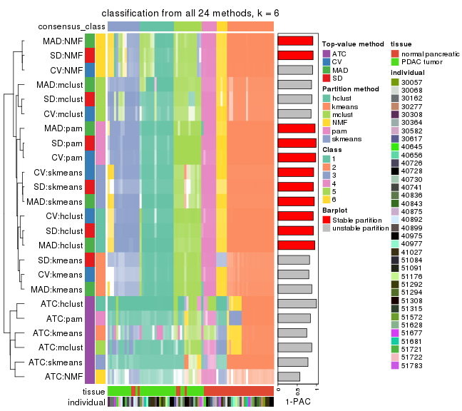
Overlap of top rows from different top-row methods:
top_rows_overlap(res_list, top_n = 1000, method = "euler")
top_rows_overlap(res_list, top_n = 2000, method = "euler")
top_rows_overlap(res_list, top_n = 3000, method = "euler")
top_rows_overlap(res_list, top_n = 4000, method = "euler")
top_rows_overlap(res_list, top_n = 5000, method = "euler")
Also visualize the correspondance of rankings between different top-row methods:
top_rows_overlap(res_list, top_n = 1000, method = "correspondance")
top_rows_overlap(res_list, top_n = 2000, method = "correspondance")
top_rows_overlap(res_list, top_n = 3000, method = "correspondance")

top_rows_overlap(res_list, top_n = 4000, method = "correspondance")
top_rows_overlap(res_list, top_n = 5000, method = "correspondance")
Heatmaps of the top rows:
top_rows_heatmap(res_list, top_n = 1000)
top_rows_heatmap(res_list, top_n = 2000)

top_rows_heatmap(res_list, top_n = 3000)
top_rows_heatmap(res_list, top_n = 4000)
top_rows_heatmap(res_list, top_n = 5000)
Test correlation between subgroups and known annotations. If the known annotation is numeric, one-way ANOVA test is applied, and if the known annotation is discrete, chi-squared contingency table test is applied.
test_to_known_factors(res_list, k = 2)
#> n tissue(p) individual(p) k
#> SD:NMF 77 1.57e-07 0.933 2
#> CV:NMF 77 1.57e-07 0.933 2
#> MAD:NMF 78 9.41e-08 0.889 2
#> ATC:NMF 76 1.01e-05 0.569 2
#> SD:skmeans 76 2.33e-07 0.764 2
#> CV:skmeans 76 6.24e-06 0.460 2
#> MAD:skmeans 78 8.65e-08 0.820 2
#> ATC:skmeans 78 2.79e-06 0.762 2
#> SD:mclust 74 3.11e-07 0.935 2
#> CV:mclust 74 3.11e-07 0.935 2
#> MAD:mclust 77 5.56e-07 0.895 2
#> ATC:mclust 77 8.84e-06 0.565 2
#> SD:kmeans 78 4.68e-08 0.946 2
#> CV:kmeans 78 4.68e-08 0.946 2
#> MAD:kmeans 78 4.68e-08 0.946 2
#> ATC:kmeans 78 4.68e-08 0.946 2
#> SD:pam 77 2.37e-08 0.933 2
#> CV:pam 78 9.41e-08 0.889 2
#> MAD:pam 77 5.52e-08 0.906 2
#> ATC:pam 78 4.68e-08 0.946 2
#> SD:hclust 78 1.26e-07 0.927 2
#> CV:hclust 78 1.26e-07 0.927 2
#> MAD:hclust 78 1.26e-07 0.927 2
#> ATC:hclust 78 4.68e-08 0.946 2
test_to_known_factors(res_list, k = 3)
#> n tissue(p) individual(p) k
#> SD:NMF 77 3.42e-07 0.355 3
#> CV:NMF 76 1.66e-07 0.415 3
#> MAD:NMF 74 2.08e-10 0.318 3
#> ATC:NMF 76 2.79e-06 0.281 3
#> SD:skmeans 77 3.19e-09 0.412 3
#> CV:skmeans 75 5.73e-09 0.439 3
#> MAD:skmeans 75 3.69e-09 0.411 3
#> ATC:skmeans 74 2.54e-07 0.728 3
#> SD:mclust 78 2.95e-09 0.398 3
#> CV:mclust 76 8.12e-09 0.371 3
#> MAD:mclust 73 8.58e-08 0.602 3
#> ATC:mclust 59 3.53e-11 0.637 3
#> SD:kmeans 78 3.91e-08 0.298 3
#> CV:kmeans 78 3.91e-08 0.298 3
#> MAD:kmeans 78 3.91e-08 0.298 3
#> ATC:kmeans 77 9.40e-08 0.516 3
#> SD:pam 74 7.09e-08 0.206 3
#> CV:pam 76 9.54e-08 0.263 3
#> MAD:pam 77 3.46e-08 0.197 3
#> ATC:pam 78 1.80e-07 0.467 3
#> SD:hclust 77 1.81e-07 0.222 3
#> CV:hclust 78 1.65e-09 0.557 3
#> MAD:hclust 78 1.24e-07 0.250 3
#> ATC:hclust 77 3.45e-08 0.575 3
test_to_known_factors(res_list, k = 4)
#> n tissue(p) individual(p) k
#> SD:NMF 78 4.82e-10 0.194 4
#> CV:NMF 78 4.82e-10 0.194 4
#> MAD:NMF 78 4.82e-10 0.194 4
#> ATC:NMF 73 2.80e-06 0.198 4
#> SD:skmeans 78 2.44e-09 0.206 4
#> CV:skmeans 78 2.44e-09 0.206 4
#> MAD:skmeans 78 2.44e-09 0.206 4
#> ATC:skmeans 75 9.66e-09 0.779 4
#> SD:mclust 78 3.85e-09 0.158 4
#> CV:mclust 73 2.57e-09 0.181 4
#> MAD:mclust 74 1.77e-08 0.262 4
#> ATC:mclust 75 1.78e-09 0.649 4
#> SD:kmeans 74 5.19e-10 0.174 4
#> CV:kmeans 75 3.22e-10 0.172 4
#> MAD:kmeans 75 1.76e-10 0.293 4
#> ATC:kmeans 78 1.51e-07 0.385 4
#> SD:pam 77 1.79e-09 0.135 4
#> CV:pam 77 7.69e-09 0.115 4
#> MAD:pam 77 6.67e-11 0.420 4
#> ATC:pam 78 4.64e-07 0.346 4
#> SD:hclust 78 1.12e-09 0.141 4
#> CV:hclust 77 1.79e-09 0.135 4
#> MAD:hclust 72 3.18e-08 0.247 4
#> ATC:hclust 77 1.66e-07 0.464 4
test_to_known_factors(res_list, k = 5)
#> n tissue(p) individual(p) k
#> SD:NMF 70 4.40e-09 0.1508 5
#> CV:NMF 71 5.92e-09 0.2203 5
#> MAD:NMF 61 6.72e-08 0.0854 5
#> ATC:NMF 70 7.07e-07 0.2357 5
#> SD:skmeans 77 1.03e-09 0.1811 5
#> CV:skmeans 77 1.03e-09 0.1811 5
#> MAD:skmeans 76 1.67e-09 0.1864 5
#> ATC:skmeans 71 5.37e-08 0.7404 5
#> SD:mclust 76 2.95e-09 0.2937 5
#> CV:mclust 74 1.06e-08 0.2325 5
#> MAD:mclust 75 4.34e-08 0.1562 5
#> ATC:mclust 72 8.45e-10 0.2565 5
#> SD:kmeans 74 3.87e-09 0.2296 5
#> CV:kmeans 72 2.68e-09 0.2308 5
#> MAD:kmeans 77 2.20e-10 0.4602 5
#> ATC:kmeans 58 8.54e-07 0.3028 5
#> SD:pam 78 2.30e-09 0.2384 5
#> CV:pam 77 3.73e-09 0.2418 5
#> MAD:pam 78 4.44e-10 0.4746 5
#> ATC:pam 72 8.16e-07 0.2073 5
#> SD:hclust 78 2.53e-09 0.2384 5
#> CV:hclust 78 2.53e-09 0.2384 5
#> MAD:hclust 78 2.53e-09 0.2384 5
#> ATC:hclust 74 3.90e-07 0.4546 5
test_to_known_factors(res_list, k = 6)
#> n tissue(p) individual(p) k
#> SD:NMF 75 3.52e-09 0.1477 6
#> CV:NMF 72 9.12e-09 0.2159 6
#> MAD:NMF 73 5.77e-09 0.1855 6
#> ATC:NMF 49 4.13e-07 0.1203 6
#> SD:skmeans 72 1.54e-09 0.2207 6
#> CV:skmeans 76 1.63e-09 0.0821 6
#> MAD:skmeans 75 2.64e-09 0.0899 6
#> ATC:skmeans 73 7.80e-08 0.2691 6
#> SD:mclust 71 1.49e-09 0.4114 6
#> CV:mclust 66 1.28e-08 0.4153 6
#> MAD:mclust 77 1.89e-10 0.2544 6
#> ATC:mclust 76 1.53e-09 0.4843 6
#> SD:kmeans 78 2.53e-09 0.2384 6
#> CV:kmeans 71 1.12e-09 0.2232 6
#> MAD:kmeans 76 1.89e-10 0.4365 6
#> ATC:kmeans 71 3.86e-08 0.2823 6
#> SD:pam 77 1.48e-10 0.3399 6
#> CV:pam 76 2.20e-10 0.4195 6
#> MAD:pam 76 1.27e-11 0.6384 6
#> ATC:pam 77 3.56e-08 0.3309 6
#> SD:hclust 78 2.63e-09 0.0976 6
#> CV:hclust 77 4.21e-09 0.1046 6
#> MAD:hclust 78 2.63e-09 0.0976 6
#> ATC:hclust 77 1.99e-06 0.2633 6
The object with results only for a single top-value method and a single partition method can be extracted as:
res = res_list["SD", "hclust"]
# you can also extract it by
# res = res_list["SD:hclust"]
A summary of res and all the functions that can be applied to it:
res
#> A 'ConsensusPartition' object with k = 2, 3, 4, 5, 6.
#> On a matrix with 51941 rows and 78 columns.
#> Top rows (1000, 2000, 3000, 4000, 5000) are extracted by 'SD' method.
#> Subgroups are detected by 'hclust' method.
#> Performed in total 1250 partitions by row resampling.
#> Best k for subgroups seems to be 6.
#>
#> Following methods can be applied to this 'ConsensusPartition' object:
#> [1] "cola_report" "collect_classes" "collect_plots"
#> [4] "collect_stats" "colnames" "compare_signatures"
#> [7] "consensus_heatmap" "dimension_reduction" "functional_enrichment"
#> [10] "get_anno_col" "get_anno" "get_classes"
#> [13] "get_consensus" "get_matrix" "get_membership"
#> [16] "get_param" "get_signatures" "get_stats"
#> [19] "is_best_k" "is_stable_k" "membership_heatmap"
#> [22] "ncol" "nrow" "plot_ecdf"
#> [25] "rownames" "select_partition_number" "show"
#> [28] "suggest_best_k" "test_to_known_factors"
collect_plots() function collects all the plots made from res for all k (number of partitions)
into one single page to provide an easy and fast comparison between different k.
collect_plots(res)
The plots are:
k and the heatmap of
predicted classes for each k.k.k.k.All the plots in panels can be made by individual functions and they are plotted later in this section.
select_partition_number() produces several plots showing different
statistics for choosing “optimized” k. There are following statistics:
k;k, the area increased is defined as \(A_k - A_{k-1}\).The detailed explanations of these statistics can be found in the cola vignette.
Generally speaking, lower PAC score, higher mean silhouette score or higher
concordance corresponds to better partition. Rand index and Jaccard index
measure how similar the current partition is compared to partition with k-1.
If they are too similar, we won't accept k is better than k-1.
select_partition_number(res)
The numeric values for all these statistics can be obtained by get_stats().
get_stats(res)
#> k 1-PAC mean_silhouette concordance area_increased Rand Jaccard
#> 2 2 1.000 1.000 1.000 0.4108 0.590 0.590
#> 3 3 0.742 0.891 0.850 0.4571 0.760 0.593
#> 4 4 1.000 0.980 0.990 0.1955 0.932 0.807
#> 5 5 0.944 0.960 0.964 0.0925 0.930 0.752
#> 6 6 0.922 0.937 0.957 0.0389 0.968 0.850
suggest_best_k() suggests the best \(k\) based on these statistics. The rules are as follows:
suggest_best_k(res)
#> [1] 6
#> attr(,"optional")
#> [1] 2 4 5
There is also optional best \(k\) = 2 4 5 that is worth to check.
Following shows the table of the partitions (You need to click the show/hide
code output link to see it). The membership matrix (columns with name p*)
is inferred by
clue::cl_consensus()
function with the SE method. Basically the value in the membership matrix
represents the probability to belong to a certain group. The finall class
label for an item is determined with the group with highest probability it
belongs to.
In get_classes() function, the entropy is calculated from the membership
matrix and the silhouette score is calculated from the consensus matrix.
cbind(get_classes(res, k = 2), get_membership(res, k = 2))
#> class entropy silhouette p1 p2
#> GSM388115 1 0 1 1 0
#> GSM388116 1 0 1 1 0
#> GSM388117 1 0 1 1 0
#> GSM388118 1 0 1 1 0
#> GSM388119 1 0 1 1 0
#> GSM388120 1 0 1 1 0
#> GSM388121 1 0 1 1 0
#> GSM388122 1 0 1 1 0
#> GSM388123 1 0 1 1 0
#> GSM388124 1 0 1 1 0
#> GSM388125 1 0 1 1 0
#> GSM388126 1 0 1 1 0
#> GSM388127 1 0 1 1 0
#> GSM388128 1 0 1 1 0
#> GSM388129 1 0 1 1 0
#> GSM388130 1 0 1 1 0
#> GSM388131 1 0 1 1 0
#> GSM388132 1 0 1 1 0
#> GSM388133 1 0 1 1 0
#> GSM388134 1 0 1 1 0
#> GSM388135 1 0 1 1 0
#> GSM388136 1 0 1 1 0
#> GSM388137 1 0 1 1 0
#> GSM388140 1 0 1 1 0
#> GSM388141 1 0 1 1 0
#> GSM388142 1 0 1 1 0
#> GSM388143 1 0 1 1 0
#> GSM388144 1 0 1 1 0
#> GSM388145 1 0 1 1 0
#> GSM388146 1 0 1 1 0
#> GSM388147 1 0 1 1 0
#> GSM388148 1 0 1 1 0
#> GSM388149 1 0 1 1 0
#> GSM388150 1 0 1 1 0
#> GSM388151 1 0 1 1 0
#> GSM388152 1 0 1 1 0
#> GSM388153 1 0 1 1 0
#> GSM388139 1 0 1 1 0
#> GSM388138 1 0 1 1 0
#> GSM388076 1 0 1 1 0
#> GSM388077 1 0 1 1 0
#> GSM388078 2 0 1 0 1
#> GSM388079 2 0 1 0 1
#> GSM388080 2 0 1 0 1
#> GSM388081 2 0 1 0 1
#> GSM388082 2 0 1 0 1
#> GSM388083 1 0 1 1 0
#> GSM388084 2 0 1 0 1
#> GSM388085 1 0 1 1 0
#> GSM388086 1 0 1 1 0
#> GSM388087 1 0 1 1 0
#> GSM388088 1 0 1 1 0
#> GSM388089 1 0 1 1 0
#> GSM388090 2 0 1 0 1
#> GSM388091 1 0 1 1 0
#> GSM388092 2 0 1 0 1
#> GSM388093 2 0 1 0 1
#> GSM388094 2 0 1 0 1
#> GSM388095 2 0 1 0 1
#> GSM388096 1 0 1 1 0
#> GSM388097 1 0 1 1 0
#> GSM388098 2 0 1 0 1
#> GSM388101 2 0 1 0 1
#> GSM388102 2 0 1 0 1
#> GSM388103 2 0 1 0 1
#> GSM388104 1 0 1 1 0
#> GSM388105 1 0 1 1 0
#> GSM388106 1 0 1 1 0
#> GSM388107 1 0 1 1 0
#> GSM388108 2 0 1 0 1
#> GSM388109 2 0 1 0 1
#> GSM388110 2 0 1 0 1
#> GSM388111 2 0 1 0 1
#> GSM388112 2 0 1 0 1
#> GSM388113 2 0 1 0 1
#> GSM388114 1 0 1 1 0
#> GSM388100 2 0 1 0 1
#> GSM388099 1 0 1 1 0
cbind(get_classes(res, k = 3), get_membership(res, k = 3))
#> class entropy silhouette p1 p2 p3
#> GSM388115 3 0.6180 0.996 0.416 0 0.584
#> GSM388116 3 0.6180 0.996 0.416 0 0.584
#> GSM388117 1 0.0424 0.841 0.992 0 0.008
#> GSM388118 1 0.0424 0.841 0.992 0 0.008
#> GSM388119 1 0.0424 0.841 0.992 0 0.008
#> GSM388120 1 0.0424 0.841 0.992 0 0.008
#> GSM388121 1 0.0424 0.841 0.992 0 0.008
#> GSM388122 3 0.6180 0.996 0.416 0 0.584
#> GSM388123 1 0.0000 0.843 1.000 0 0.000
#> GSM388124 3 0.6180 0.996 0.416 0 0.584
#> GSM388125 3 0.6180 0.996 0.416 0 0.584
#> GSM388126 1 0.6062 0.523 0.616 0 0.384
#> GSM388127 1 0.0000 0.843 1.000 0 0.000
#> GSM388128 3 0.6180 0.996 0.416 0 0.584
#> GSM388129 1 0.0424 0.841 0.992 0 0.008
#> GSM388130 3 0.6180 0.996 0.416 0 0.584
#> GSM388131 1 0.0000 0.843 1.000 0 0.000
#> GSM388132 1 0.0000 0.843 1.000 0 0.000
#> GSM388133 1 0.0000 0.843 1.000 0 0.000
#> GSM388134 1 0.0000 0.843 1.000 0 0.000
#> GSM388135 1 0.0424 0.841 0.992 0 0.008
#> GSM388136 3 0.6215 0.980 0.428 0 0.572
#> GSM388137 1 0.4178 0.462 0.828 0 0.172
#> GSM388140 1 0.0000 0.843 1.000 0 0.000
#> GSM388141 3 0.6180 0.996 0.416 0 0.584
#> GSM388142 1 0.0424 0.841 0.992 0 0.008
#> GSM388143 1 0.0424 0.841 0.992 0 0.008
#> GSM388144 1 0.0424 0.841 0.992 0 0.008
#> GSM388145 1 0.0000 0.843 1.000 0 0.000
#> GSM388146 1 0.0424 0.841 0.992 0 0.008
#> GSM388147 1 0.0000 0.843 1.000 0 0.000
#> GSM388148 1 0.0000 0.843 1.000 0 0.000
#> GSM388149 3 0.6180 0.996 0.416 0 0.584
#> GSM388150 1 0.0424 0.841 0.992 0 0.008
#> GSM388151 3 0.6180 0.996 0.416 0 0.584
#> GSM388152 3 0.6215 0.980 0.428 0 0.572
#> GSM388153 1 0.0000 0.843 1.000 0 0.000
#> GSM388139 1 0.0424 0.841 0.992 0 0.008
#> GSM388138 1 0.0424 0.841 0.992 0 0.008
#> GSM388076 3 0.6168 0.993 0.412 0 0.588
#> GSM388077 3 0.6168 0.993 0.412 0 0.588
#> GSM388078 2 0.0000 1.000 0.000 1 0.000
#> GSM388079 2 0.0000 1.000 0.000 1 0.000
#> GSM388080 2 0.0000 1.000 0.000 1 0.000
#> GSM388081 2 0.0000 1.000 0.000 1 0.000
#> GSM388082 2 0.0000 1.000 0.000 1 0.000
#> GSM388083 3 0.6168 0.993 0.412 0 0.588
#> GSM388084 2 0.0000 1.000 0.000 1 0.000
#> GSM388085 3 0.6180 0.996 0.416 0 0.584
#> GSM388086 1 0.6180 0.504 0.584 0 0.416
#> GSM388087 1 0.6180 0.504 0.584 0 0.416
#> GSM388088 1 0.6180 0.504 0.584 0 0.416
#> GSM388089 1 0.6180 0.504 0.584 0 0.416
#> GSM388090 2 0.0000 1.000 0.000 1 0.000
#> GSM388091 3 0.6180 0.996 0.416 0 0.584
#> GSM388092 2 0.0000 1.000 0.000 1 0.000
#> GSM388093 2 0.0000 1.000 0.000 1 0.000
#> GSM388094 2 0.0000 1.000 0.000 1 0.000
#> GSM388095 2 0.0000 1.000 0.000 1 0.000
#> GSM388096 1 0.0000 0.843 1.000 0 0.000
#> GSM388097 3 0.6180 0.996 0.416 0 0.584
#> GSM388098 2 0.0000 1.000 0.000 1 0.000
#> GSM388101 2 0.0000 1.000 0.000 1 0.000
#> GSM388102 2 0.0000 1.000 0.000 1 0.000
#> GSM388103 2 0.0000 1.000 0.000 1 0.000
#> GSM388104 3 0.6168 0.993 0.412 0 0.588
#> GSM388105 1 0.0000 0.843 1.000 0 0.000
#> GSM388106 1 0.6180 0.504 0.584 0 0.416
#> GSM388107 1 0.6180 0.504 0.584 0 0.416
#> GSM388108 2 0.0000 1.000 0.000 1 0.000
#> GSM388109 2 0.0000 1.000 0.000 1 0.000
#> GSM388110 2 0.0000 1.000 0.000 1 0.000
#> GSM388111 2 0.0000 1.000 0.000 1 0.000
#> GSM388112 2 0.0000 1.000 0.000 1 0.000
#> GSM388113 2 0.0000 1.000 0.000 1 0.000
#> GSM388114 3 0.6168 0.993 0.412 0 0.588
#> GSM388100 2 0.0000 1.000 0.000 1 0.000
#> GSM388099 1 0.0000 0.843 1.000 0 0.000
cbind(get_classes(res, k = 4), get_membership(res, k = 4))
#> class entropy silhouette p1 p2 p3 p4
#> GSM388115 3 0.2469 0.865 0.108 0 0.892 0.000
#> GSM388116 3 0.2469 0.865 0.108 0 0.892 0.000
#> GSM388117 1 0.0188 0.988 0.996 0 0.004 0.000
#> GSM388118 1 0.0188 0.988 0.996 0 0.004 0.000
#> GSM388119 1 0.0188 0.988 0.996 0 0.004 0.000
#> GSM388120 1 0.0188 0.988 0.996 0 0.004 0.000
#> GSM388121 1 0.0188 0.988 0.996 0 0.004 0.000
#> GSM388122 3 0.0336 0.981 0.008 0 0.992 0.000
#> GSM388123 1 0.0188 0.988 0.996 0 0.000 0.004
#> GSM388124 3 0.0336 0.981 0.008 0 0.992 0.000
#> GSM388125 3 0.0336 0.981 0.008 0 0.992 0.000
#> GSM388126 4 0.2868 0.838 0.136 0 0.000 0.864
#> GSM388127 1 0.0188 0.988 0.996 0 0.000 0.004
#> GSM388128 3 0.0336 0.981 0.008 0 0.992 0.000
#> GSM388129 1 0.0188 0.988 0.996 0 0.004 0.000
#> GSM388130 3 0.0336 0.981 0.008 0 0.992 0.000
#> GSM388131 1 0.0188 0.988 0.996 0 0.000 0.004
#> GSM388132 1 0.0188 0.988 0.996 0 0.000 0.004
#> GSM388133 1 0.0188 0.988 0.996 0 0.000 0.004
#> GSM388134 1 0.0188 0.988 0.996 0 0.000 0.004
#> GSM388135 1 0.0188 0.988 0.996 0 0.004 0.000
#> GSM388136 3 0.0817 0.967 0.024 0 0.976 0.000
#> GSM388137 1 0.3400 0.758 0.820 0 0.180 0.000
#> GSM388140 1 0.0188 0.988 0.996 0 0.000 0.004
#> GSM388141 3 0.0336 0.981 0.008 0 0.992 0.000
#> GSM388142 1 0.0188 0.988 0.996 0 0.004 0.000
#> GSM388143 1 0.0188 0.988 0.996 0 0.004 0.000
#> GSM388144 1 0.0188 0.988 0.996 0 0.004 0.000
#> GSM388145 1 0.0188 0.988 0.996 0 0.000 0.004
#> GSM388146 1 0.0188 0.988 0.996 0 0.004 0.000
#> GSM388147 1 0.0188 0.988 0.996 0 0.000 0.004
#> GSM388148 1 0.0188 0.988 0.996 0 0.000 0.004
#> GSM388149 3 0.0336 0.981 0.008 0 0.992 0.000
#> GSM388150 1 0.0188 0.988 0.996 0 0.004 0.000
#> GSM388151 3 0.0336 0.981 0.008 0 0.992 0.000
#> GSM388152 3 0.0817 0.967 0.024 0 0.976 0.000
#> GSM388153 1 0.0188 0.988 0.996 0 0.000 0.004
#> GSM388139 1 0.0188 0.988 0.996 0 0.004 0.000
#> GSM388138 1 0.0188 0.988 0.996 0 0.004 0.000
#> GSM388076 3 0.0000 0.976 0.000 0 1.000 0.000
#> GSM388077 3 0.0000 0.976 0.000 0 1.000 0.000
#> GSM388078 2 0.0000 1.000 0.000 1 0.000 0.000
#> GSM388079 2 0.0000 1.000 0.000 1 0.000 0.000
#> GSM388080 2 0.0000 1.000 0.000 1 0.000 0.000
#> GSM388081 2 0.0000 1.000 0.000 1 0.000 0.000
#> GSM388082 2 0.0000 1.000 0.000 1 0.000 0.000
#> GSM388083 3 0.0000 0.976 0.000 0 1.000 0.000
#> GSM388084 2 0.0000 1.000 0.000 1 0.000 0.000
#> GSM388085 3 0.0336 0.981 0.008 0 0.992 0.000
#> GSM388086 4 0.0000 0.974 0.000 0 0.000 1.000
#> GSM388087 4 0.0000 0.974 0.000 0 0.000 1.000
#> GSM388088 4 0.0000 0.974 0.000 0 0.000 1.000
#> GSM388089 4 0.0000 0.974 0.000 0 0.000 1.000
#> GSM388090 2 0.0000 1.000 0.000 1 0.000 0.000
#> GSM388091 3 0.0336 0.981 0.008 0 0.992 0.000
#> GSM388092 2 0.0000 1.000 0.000 1 0.000 0.000
#> GSM388093 2 0.0000 1.000 0.000 1 0.000 0.000
#> GSM388094 2 0.0000 1.000 0.000 1 0.000 0.000
#> GSM388095 2 0.0000 1.000 0.000 1 0.000 0.000
#> GSM388096 1 0.0188 0.988 0.996 0 0.000 0.004
#> GSM388097 3 0.0336 0.981 0.008 0 0.992 0.000
#> GSM388098 2 0.0000 1.000 0.000 1 0.000 0.000
#> GSM388101 2 0.0000 1.000 0.000 1 0.000 0.000
#> GSM388102 2 0.0000 1.000 0.000 1 0.000 0.000
#> GSM388103 2 0.0000 1.000 0.000 1 0.000 0.000
#> GSM388104 3 0.0000 0.976 0.000 0 1.000 0.000
#> GSM388105 1 0.0188 0.988 0.996 0 0.000 0.004
#> GSM388106 4 0.0000 0.974 0.000 0 0.000 1.000
#> GSM388107 4 0.0000 0.974 0.000 0 0.000 1.000
#> GSM388108 2 0.0000 1.000 0.000 1 0.000 0.000
#> GSM388109 2 0.0000 1.000 0.000 1 0.000 0.000
#> GSM388110 2 0.0000 1.000 0.000 1 0.000 0.000
#> GSM388111 2 0.0000 1.000 0.000 1 0.000 0.000
#> GSM388112 2 0.0000 1.000 0.000 1 0.000 0.000
#> GSM388113 2 0.0000 1.000 0.000 1 0.000 0.000
#> GSM388114 3 0.0000 0.976 0.000 0 1.000 0.000
#> GSM388100 2 0.0000 1.000 0.000 1 0.000 0.000
#> GSM388099 1 0.0188 0.988 0.996 0 0.000 0.004
cbind(get_classes(res, k = 5), get_membership(res, k = 5))
#> class entropy silhouette p1 p2 p3 p4 p5
#> GSM388115 3 0.2471 0.858 0.136 0 0.864 0.000 0.000
#> GSM388116 3 0.2471 0.858 0.136 0 0.864 0.000 0.000
#> GSM388117 1 0.1608 0.984 0.928 0 0.000 0.000 0.072
#> GSM388118 1 0.1608 0.984 0.928 0 0.000 0.000 0.072
#> GSM388119 1 0.1608 0.984 0.928 0 0.000 0.000 0.072
#> GSM388120 1 0.1608 0.984 0.928 0 0.000 0.000 0.072
#> GSM388121 1 0.1608 0.984 0.928 0 0.000 0.000 0.072
#> GSM388122 3 0.0290 0.970 0.008 0 0.992 0.000 0.000
#> GSM388123 5 0.0000 0.920 0.000 0 0.000 0.000 1.000
#> GSM388124 3 0.0290 0.970 0.008 0 0.992 0.000 0.000
#> GSM388125 3 0.0290 0.970 0.008 0 0.992 0.000 0.000
#> GSM388126 4 0.2471 0.844 0.136 0 0.000 0.864 0.000
#> GSM388127 5 0.2329 0.891 0.124 0 0.000 0.000 0.876
#> GSM388128 3 0.0290 0.970 0.008 0 0.992 0.000 0.000
#> GSM388129 1 0.1608 0.984 0.928 0 0.000 0.000 0.072
#> GSM388130 3 0.0290 0.970 0.008 0 0.992 0.000 0.000
#> GSM388131 5 0.2329 0.891 0.124 0 0.000 0.000 0.876
#> GSM388132 5 0.3003 0.827 0.188 0 0.000 0.000 0.812
#> GSM388133 5 0.2329 0.891 0.124 0 0.000 0.000 0.876
#> GSM388134 5 0.0000 0.920 0.000 0 0.000 0.000 1.000
#> GSM388135 1 0.1608 0.984 0.928 0 0.000 0.000 0.072
#> GSM388136 3 0.0807 0.962 0.012 0 0.976 0.000 0.012
#> GSM388137 1 0.2648 0.763 0.848 0 0.152 0.000 0.000
#> GSM388140 5 0.0000 0.920 0.000 0 0.000 0.000 1.000
#> GSM388141 3 0.0290 0.970 0.008 0 0.992 0.000 0.000
#> GSM388142 1 0.1608 0.984 0.928 0 0.000 0.000 0.072
#> GSM388143 1 0.1608 0.984 0.928 0 0.000 0.000 0.072
#> GSM388144 1 0.1608 0.984 0.928 0 0.000 0.000 0.072
#> GSM388145 5 0.0000 0.920 0.000 0 0.000 0.000 1.000
#> GSM388146 1 0.1608 0.984 0.928 0 0.000 0.000 0.072
#> GSM388147 5 0.3003 0.827 0.188 0 0.000 0.000 0.812
#> GSM388148 5 0.0000 0.920 0.000 0 0.000 0.000 1.000
#> GSM388149 3 0.0290 0.970 0.008 0 0.992 0.000 0.000
#> GSM388150 1 0.1608 0.984 0.928 0 0.000 0.000 0.072
#> GSM388151 3 0.0290 0.970 0.008 0 0.992 0.000 0.000
#> GSM388152 3 0.0807 0.962 0.012 0 0.976 0.000 0.012
#> GSM388153 5 0.0000 0.920 0.000 0 0.000 0.000 1.000
#> GSM388139 1 0.1608 0.984 0.928 0 0.000 0.000 0.072
#> GSM388138 1 0.1608 0.984 0.928 0 0.000 0.000 0.072
#> GSM388076 3 0.1197 0.950 0.048 0 0.952 0.000 0.000
#> GSM388077 3 0.1197 0.950 0.048 0 0.952 0.000 0.000
#> GSM388078 2 0.0000 1.000 0.000 1 0.000 0.000 0.000
#> GSM388079 2 0.0000 1.000 0.000 1 0.000 0.000 0.000
#> GSM388080 2 0.0000 1.000 0.000 1 0.000 0.000 0.000
#> GSM388081 2 0.0000 1.000 0.000 1 0.000 0.000 0.000
#> GSM388082 2 0.0000 1.000 0.000 1 0.000 0.000 0.000
#> GSM388083 3 0.1197 0.950 0.048 0 0.952 0.000 0.000
#> GSM388084 2 0.0000 1.000 0.000 1 0.000 0.000 0.000
#> GSM388085 3 0.0290 0.970 0.008 0 0.992 0.000 0.000
#> GSM388086 4 0.0000 0.976 0.000 0 0.000 1.000 0.000
#> GSM388087 4 0.0000 0.976 0.000 0 0.000 1.000 0.000
#> GSM388088 4 0.0000 0.976 0.000 0 0.000 1.000 0.000
#> GSM388089 4 0.0000 0.976 0.000 0 0.000 1.000 0.000
#> GSM388090 2 0.0000 1.000 0.000 1 0.000 0.000 0.000
#> GSM388091 3 0.0290 0.970 0.008 0 0.992 0.000 0.000
#> GSM388092 2 0.0000 1.000 0.000 1 0.000 0.000 0.000
#> GSM388093 2 0.0000 1.000 0.000 1 0.000 0.000 0.000
#> GSM388094 2 0.0000 1.000 0.000 1 0.000 0.000 0.000
#> GSM388095 2 0.0000 1.000 0.000 1 0.000 0.000 0.000
#> GSM388096 5 0.0000 0.920 0.000 0 0.000 0.000 1.000
#> GSM388097 3 0.0290 0.970 0.008 0 0.992 0.000 0.000
#> GSM388098 2 0.0000 1.000 0.000 1 0.000 0.000 0.000
#> GSM388101 2 0.0000 1.000 0.000 1 0.000 0.000 0.000
#> GSM388102 2 0.0000 1.000 0.000 1 0.000 0.000 0.000
#> GSM388103 2 0.0000 1.000 0.000 1 0.000 0.000 0.000
#> GSM388104 3 0.1197 0.950 0.048 0 0.952 0.000 0.000
#> GSM388105 5 0.2329 0.891 0.124 0 0.000 0.000 0.876
#> GSM388106 4 0.0000 0.976 0.000 0 0.000 1.000 0.000
#> GSM388107 4 0.0000 0.976 0.000 0 0.000 1.000 0.000
#> GSM388108 2 0.0000 1.000 0.000 1 0.000 0.000 0.000
#> GSM388109 2 0.0000 1.000 0.000 1 0.000 0.000 0.000
#> GSM388110 2 0.0000 1.000 0.000 1 0.000 0.000 0.000
#> GSM388111 2 0.0000 1.000 0.000 1 0.000 0.000 0.000
#> GSM388112 2 0.0000 1.000 0.000 1 0.000 0.000 0.000
#> GSM388113 2 0.0000 1.000 0.000 1 0.000 0.000 0.000
#> GSM388114 3 0.1197 0.950 0.048 0 0.952 0.000 0.000
#> GSM388100 2 0.0000 1.000 0.000 1 0.000 0.000 0.000
#> GSM388099 5 0.0000 0.920 0.000 0 0.000 0.000 1.000
cbind(get_classes(res, k = 6), get_membership(res, k = 6))
#> class entropy silhouette p1 p2 p3 p4 p5 p6
#> GSM388115 6 0.3636 0.618 0.000 0 0.320 0.000 0.004 0.676
#> GSM388116 6 0.3636 0.618 0.000 0 0.320 0.000 0.004 0.676
#> GSM388117 1 0.0000 0.979 1.000 0 0.000 0.000 0.000 0.000
#> GSM388118 1 0.0000 0.979 1.000 0 0.000 0.000 0.000 0.000
#> GSM388119 1 0.0000 0.979 1.000 0 0.000 0.000 0.000 0.000
#> GSM388120 1 0.0000 0.979 1.000 0 0.000 0.000 0.000 0.000
#> GSM388121 1 0.0000 0.979 1.000 0 0.000 0.000 0.000 0.000
#> GSM388122 3 0.0000 0.995 0.000 0 1.000 0.000 0.000 0.000
#> GSM388123 5 0.0146 0.902 0.004 0 0.000 0.000 0.996 0.000
#> GSM388124 6 0.3833 0.537 0.000 0 0.444 0.000 0.000 0.556
#> GSM388125 3 0.0000 0.995 0.000 0 1.000 0.000 0.000 0.000
#> GSM388126 4 0.2219 0.819 0.136 0 0.000 0.864 0.000 0.000
#> GSM388127 5 0.2378 0.871 0.152 0 0.000 0.000 0.848 0.000
#> GSM388128 3 0.0000 0.995 0.000 0 1.000 0.000 0.000 0.000
#> GSM388129 1 0.0000 0.979 1.000 0 0.000 0.000 0.000 0.000
#> GSM388130 3 0.0000 0.995 0.000 0 1.000 0.000 0.000 0.000
#> GSM388131 5 0.2378 0.871 0.152 0 0.000 0.000 0.848 0.000
#> GSM388132 5 0.3023 0.797 0.232 0 0.000 0.000 0.768 0.000
#> GSM388133 5 0.2378 0.871 0.152 0 0.000 0.000 0.848 0.000
#> GSM388134 5 0.0146 0.902 0.004 0 0.000 0.000 0.996 0.000
#> GSM388135 1 0.0000 0.979 1.000 0 0.000 0.000 0.000 0.000
#> GSM388136 3 0.0458 0.973 0.016 0 0.984 0.000 0.000 0.000
#> GSM388137 1 0.4554 0.630 0.712 0 0.160 0.000 0.004 0.124
#> GSM388140 5 0.0146 0.902 0.004 0 0.000 0.000 0.996 0.000
#> GSM388141 3 0.0000 0.995 0.000 0 1.000 0.000 0.000 0.000
#> GSM388142 1 0.0000 0.979 1.000 0 0.000 0.000 0.000 0.000
#> GSM388143 1 0.0000 0.979 1.000 0 0.000 0.000 0.000 0.000
#> GSM388144 1 0.0000 0.979 1.000 0 0.000 0.000 0.000 0.000
#> GSM388145 5 0.0146 0.902 0.004 0 0.000 0.000 0.996 0.000
#> GSM388146 1 0.0000 0.979 1.000 0 0.000 0.000 0.000 0.000
#> GSM388147 5 0.3023 0.797 0.232 0 0.000 0.000 0.768 0.000
#> GSM388148 5 0.0146 0.902 0.004 0 0.000 0.000 0.996 0.000
#> GSM388149 3 0.0000 0.995 0.000 0 1.000 0.000 0.000 0.000
#> GSM388150 1 0.0000 0.979 1.000 0 0.000 0.000 0.000 0.000
#> GSM388151 3 0.0000 0.995 0.000 0 1.000 0.000 0.000 0.000
#> GSM388152 3 0.0458 0.973 0.016 0 0.984 0.000 0.000 0.000
#> GSM388153 5 0.0146 0.902 0.004 0 0.000 0.000 0.996 0.000
#> GSM388139 1 0.0000 0.979 1.000 0 0.000 0.000 0.000 0.000
#> GSM388138 1 0.0000 0.979 1.000 0 0.000 0.000 0.000 0.000
#> GSM388076 6 0.2219 0.837 0.000 0 0.136 0.000 0.000 0.864
#> GSM388077 6 0.2219 0.837 0.000 0 0.136 0.000 0.000 0.864
#> GSM388078 2 0.0000 1.000 0.000 1 0.000 0.000 0.000 0.000
#> GSM388079 2 0.0000 1.000 0.000 1 0.000 0.000 0.000 0.000
#> GSM388080 2 0.0000 1.000 0.000 1 0.000 0.000 0.000 0.000
#> GSM388081 2 0.0000 1.000 0.000 1 0.000 0.000 0.000 0.000
#> GSM388082 2 0.0000 1.000 0.000 1 0.000 0.000 0.000 0.000
#> GSM388083 6 0.2219 0.837 0.000 0 0.136 0.000 0.000 0.864
#> GSM388084 2 0.0000 1.000 0.000 1 0.000 0.000 0.000 0.000
#> GSM388085 3 0.0000 0.995 0.000 0 1.000 0.000 0.000 0.000
#> GSM388086 4 0.0000 0.969 0.000 0 0.000 1.000 0.000 0.000
#> GSM388087 4 0.0000 0.969 0.000 0 0.000 1.000 0.000 0.000
#> GSM388088 4 0.0000 0.969 0.000 0 0.000 1.000 0.000 0.000
#> GSM388089 4 0.0363 0.964 0.000 0 0.000 0.988 0.000 0.012
#> GSM388090 2 0.0000 1.000 0.000 1 0.000 0.000 0.000 0.000
#> GSM388091 3 0.0000 0.995 0.000 0 1.000 0.000 0.000 0.000
#> GSM388092 2 0.0000 1.000 0.000 1 0.000 0.000 0.000 0.000
#> GSM388093 2 0.0000 1.000 0.000 1 0.000 0.000 0.000 0.000
#> GSM388094 2 0.0000 1.000 0.000 1 0.000 0.000 0.000 0.000
#> GSM388095 2 0.0000 1.000 0.000 1 0.000 0.000 0.000 0.000
#> GSM388096 5 0.0363 0.901 0.012 0 0.000 0.000 0.988 0.000
#> GSM388097 3 0.0000 0.995 0.000 0 1.000 0.000 0.000 0.000
#> GSM388098 2 0.0000 1.000 0.000 1 0.000 0.000 0.000 0.000
#> GSM388101 2 0.0000 1.000 0.000 1 0.000 0.000 0.000 0.000
#> GSM388102 2 0.0000 1.000 0.000 1 0.000 0.000 0.000 0.000
#> GSM388103 2 0.0000 1.000 0.000 1 0.000 0.000 0.000 0.000
#> GSM388104 6 0.2219 0.837 0.000 0 0.136 0.000 0.000 0.864
#> GSM388105 5 0.2378 0.871 0.152 0 0.000 0.000 0.848 0.000
#> GSM388106 4 0.0000 0.969 0.000 0 0.000 1.000 0.000 0.000
#> GSM388107 4 0.0000 0.969 0.000 0 0.000 1.000 0.000 0.000
#> GSM388108 2 0.0000 1.000 0.000 1 0.000 0.000 0.000 0.000
#> GSM388109 2 0.0000 1.000 0.000 1 0.000 0.000 0.000 0.000
#> GSM388110 2 0.0000 1.000 0.000 1 0.000 0.000 0.000 0.000
#> GSM388111 2 0.0000 1.000 0.000 1 0.000 0.000 0.000 0.000
#> GSM388112 2 0.0000 1.000 0.000 1 0.000 0.000 0.000 0.000
#> GSM388113 2 0.0000 1.000 0.000 1 0.000 0.000 0.000 0.000
#> GSM388114 6 0.2219 0.837 0.000 0 0.136 0.000 0.000 0.864
#> GSM388100 2 0.0000 1.000 0.000 1 0.000 0.000 0.000 0.000
#> GSM388099 5 0.0146 0.902 0.004 0 0.000 0.000 0.996 0.000
Heatmaps for the consensus matrix. It visualizes the probability of two samples to be in a same group.
consensus_heatmap(res, k = 2)
consensus_heatmap(res, k = 3)
consensus_heatmap(res, k = 4)
consensus_heatmap(res, k = 5)
consensus_heatmap(res, k = 6)
Heatmaps for the membership of samples in all partitions to see how consistent they are:
membership_heatmap(res, k = 2)

membership_heatmap(res, k = 3)
membership_heatmap(res, k = 4)
membership_heatmap(res, k = 5)
membership_heatmap(res, k = 6)
As soon as we have had the classes for columns, we can look for signatures which are significantly different between classes which can be candidate marks for certain classes. Following are the heatmaps for signatures.
Signature heatmaps where rows are scaled:
get_signatures(res, k = 2)

get_signatures(res, k = 3)

get_signatures(res, k = 4)
get_signatures(res, k = 5)

get_signatures(res, k = 6)
Signature heatmaps where rows are not scaled:
get_signatures(res, k = 2, scale_rows = FALSE)
get_signatures(res, k = 3, scale_rows = FALSE)
get_signatures(res, k = 4, scale_rows = FALSE)
get_signatures(res, k = 5, scale_rows = FALSE)
get_signatures(res, k = 6, scale_rows = FALSE)
Compare the overlap of signatures from different k:
compare_signatures(res)
get_signature() returns a data frame invisibly. TO get the list of signatures, the function
call should be assigned to a variable explicitly. In following code, if plot argument is set
to FALSE, no heatmap is plotted while only the differential analysis is performed.
# code only for demonstration
tb = get_signature(res, k = ..., plot = FALSE)
An example of the output of tb is:
#> which_row fdr mean_1 mean_2 scaled_mean_1 scaled_mean_2 km
#> 1 38 0.042760348 8.373488 9.131774 -0.5533452 0.5164555 1
#> 2 40 0.018707592 7.106213 8.469186 -0.6173731 0.5762149 1
#> 3 55 0.019134737 10.221463 11.207825 -0.6159697 0.5749050 1
#> 4 59 0.006059896 5.921854 7.869574 -0.6899429 0.6439467 1
#> 5 60 0.018055526 8.928898 10.211722 -0.6204761 0.5791110 1
#> 6 98 0.009384629 15.714769 14.887706 0.6635654 -0.6193277 2
...
The columns in tb are:
which_row: row indices corresponding to the input matrix.fdr: FDR for the differential test. mean_x: The mean value in group x.scaled_mean_x: The mean value in group x after rows are scaled.km: Row groups if k-means clustering is applied to rows.UMAP plot which shows how samples are separated.
dimension_reduction(res, k = 2, method = "UMAP")
dimension_reduction(res, k = 3, method = "UMAP")
dimension_reduction(res, k = 4, method = "UMAP")
dimension_reduction(res, k = 5, method = "UMAP")
dimension_reduction(res, k = 6, method = "UMAP")
Following heatmap shows how subgroups are split when increasing k:
collect_classes(res)
Test correlation between subgroups and known annotations. If the known annotation is numeric, one-way ANOVA test is applied, and if the known annotation is discrete, chi-squared contingency table test is applied.
test_to_known_factors(res)
#> n tissue(p) individual(p) k
#> SD:hclust 78 1.26e-07 0.9268 2
#> SD:hclust 77 1.81e-07 0.2217 3
#> SD:hclust 78 1.12e-09 0.1415 4
#> SD:hclust 78 2.53e-09 0.2384 5
#> SD:hclust 78 2.63e-09 0.0976 6
If matrix rows can be associated to genes, consider to use functional_enrichment(res,
...) to perform function enrichment for the signature genes. See this vignette for more detailed explanations.
The object with results only for a single top-value method and a single partition method can be extracted as:
res = res_list["SD", "kmeans"]
# you can also extract it by
# res = res_list["SD:kmeans"]
A summary of res and all the functions that can be applied to it:
res
#> A 'ConsensusPartition' object with k = 2, 3, 4, 5, 6.
#> On a matrix with 51941 rows and 78 columns.
#> Top rows (1000, 2000, 3000, 4000, 5000) are extracted by 'SD' method.
#> Subgroups are detected by 'kmeans' method.
#> Performed in total 1250 partitions by row resampling.
#> Best k for subgroups seems to be 2.
#>
#> Following methods can be applied to this 'ConsensusPartition' object:
#> [1] "cola_report" "collect_classes" "collect_plots"
#> [4] "collect_stats" "colnames" "compare_signatures"
#> [7] "consensus_heatmap" "dimension_reduction" "functional_enrichment"
#> [10] "get_anno_col" "get_anno" "get_classes"
#> [13] "get_consensus" "get_matrix" "get_membership"
#> [16] "get_param" "get_signatures" "get_stats"
#> [19] "is_best_k" "is_stable_k" "membership_heatmap"
#> [22] "ncol" "nrow" "plot_ecdf"
#> [25] "rownames" "select_partition_number" "show"
#> [28] "suggest_best_k" "test_to_known_factors"
collect_plots() function collects all the plots made from res for all k (number of partitions)
into one single page to provide an easy and fast comparison between different k.
collect_plots(res)
The plots are:
k and the heatmap of
predicted classes for each k.k.k.k.All the plots in panels can be made by individual functions and they are plotted later in this section.
select_partition_number() produces several plots showing different
statistics for choosing “optimized” k. There are following statistics:
k;k, the area increased is defined as \(A_k - A_{k-1}\).The detailed explanations of these statistics can be found in the cola vignette.
Generally speaking, lower PAC score, higher mean silhouette score or higher
concordance corresponds to better partition. Rand index and Jaccard index
measure how similar the current partition is compared to partition with k-1.
If they are too similar, we won't accept k is better than k-1.
select_partition_number(res)
The numeric values for all these statistics can be obtained by get_stats().
get_stats(res)
#> k 1-PAC mean_silhouette concordance area_increased Rand Jaccard
#> 2 2 1.000 0.995 0.988 0.4138 0.579 0.579
#> 3 3 0.696 0.893 0.880 0.4957 0.767 0.597
#> 4 4 0.808 0.856 0.904 0.1595 0.935 0.811
#> 5 5 0.809 0.867 0.859 0.0768 0.923 0.731
#> 6 6 0.820 0.844 0.834 0.0449 1.000 1.000
suggest_best_k() suggests the best \(k\) based on these statistics. The rules are as follows:
suggest_best_k(res)
#> [1] 2
Following shows the table of the partitions (You need to click the show/hide
code output link to see it). The membership matrix (columns with name p*)
is inferred by
clue::cl_consensus()
function with the SE method. Basically the value in the membership matrix
represents the probability to belong to a certain group. The finall class
label for an item is determined with the group with highest probability it
belongs to.
In get_classes() function, the entropy is calculated from the membership
matrix and the silhouette score is calculated from the consensus matrix.
cbind(get_classes(res, k = 2), get_membership(res, k = 2))
#> class entropy silhouette p1 p2
#> GSM388115 1 0.000 0.996 1.000 0.000
#> GSM388116 1 0.000 0.996 1.000 0.000
#> GSM388117 1 0.000 0.996 1.000 0.000
#> GSM388118 1 0.000 0.996 1.000 0.000
#> GSM388119 1 0.000 0.996 1.000 0.000
#> GSM388120 1 0.000 0.996 1.000 0.000
#> GSM388121 1 0.000 0.996 1.000 0.000
#> GSM388122 1 0.000 0.996 1.000 0.000
#> GSM388123 1 0.000 0.996 1.000 0.000
#> GSM388124 1 0.000 0.996 1.000 0.000
#> GSM388125 1 0.000 0.996 1.000 0.000
#> GSM388126 1 0.204 0.970 0.968 0.032
#> GSM388127 1 0.000 0.996 1.000 0.000
#> GSM388128 1 0.000 0.996 1.000 0.000
#> GSM388129 1 0.000 0.996 1.000 0.000
#> GSM388130 1 0.000 0.996 1.000 0.000
#> GSM388131 1 0.000 0.996 1.000 0.000
#> GSM388132 1 0.000 0.996 1.000 0.000
#> GSM388133 1 0.000 0.996 1.000 0.000
#> GSM388134 1 0.000 0.996 1.000 0.000
#> GSM388135 1 0.000 0.996 1.000 0.000
#> GSM388136 1 0.000 0.996 1.000 0.000
#> GSM388137 1 0.000 0.996 1.000 0.000
#> GSM388140 1 0.000 0.996 1.000 0.000
#> GSM388141 1 0.000 0.996 1.000 0.000
#> GSM388142 1 0.000 0.996 1.000 0.000
#> GSM388143 1 0.000 0.996 1.000 0.000
#> GSM388144 1 0.000 0.996 1.000 0.000
#> GSM388145 1 0.000 0.996 1.000 0.000
#> GSM388146 1 0.000 0.996 1.000 0.000
#> GSM388147 1 0.000 0.996 1.000 0.000
#> GSM388148 1 0.000 0.996 1.000 0.000
#> GSM388149 1 0.000 0.996 1.000 0.000
#> GSM388150 1 0.000 0.996 1.000 0.000
#> GSM388151 1 0.000 0.996 1.000 0.000
#> GSM388152 1 0.000 0.996 1.000 0.000
#> GSM388153 1 0.000 0.996 1.000 0.000
#> GSM388139 1 0.000 0.996 1.000 0.000
#> GSM388138 1 0.000 0.996 1.000 0.000
#> GSM388076 1 0.000 0.996 1.000 0.000
#> GSM388077 1 0.000 0.996 1.000 0.000
#> GSM388078 2 0.204 1.000 0.032 0.968
#> GSM388079 2 0.204 1.000 0.032 0.968
#> GSM388080 2 0.204 1.000 0.032 0.968
#> GSM388081 2 0.204 1.000 0.032 0.968
#> GSM388082 2 0.204 1.000 0.032 0.968
#> GSM388083 1 0.000 0.996 1.000 0.000
#> GSM388084 2 0.204 1.000 0.032 0.968
#> GSM388085 1 0.000 0.996 1.000 0.000
#> GSM388086 1 0.204 0.970 0.968 0.032
#> GSM388087 1 0.204 0.970 0.968 0.032
#> GSM388088 1 0.204 0.970 0.968 0.032
#> GSM388089 1 0.184 0.974 0.972 0.028
#> GSM388090 2 0.204 1.000 0.032 0.968
#> GSM388091 1 0.000 0.996 1.000 0.000
#> GSM388092 2 0.204 1.000 0.032 0.968
#> GSM388093 2 0.204 1.000 0.032 0.968
#> GSM388094 2 0.204 1.000 0.032 0.968
#> GSM388095 2 0.204 1.000 0.032 0.968
#> GSM388096 1 0.000 0.996 1.000 0.000
#> GSM388097 1 0.000 0.996 1.000 0.000
#> GSM388098 2 0.204 1.000 0.032 0.968
#> GSM388101 2 0.204 1.000 0.032 0.968
#> GSM388102 2 0.204 1.000 0.032 0.968
#> GSM388103 2 0.204 1.000 0.032 0.968
#> GSM388104 1 0.000 0.996 1.000 0.000
#> GSM388105 1 0.000 0.996 1.000 0.000
#> GSM388106 1 0.204 0.970 0.968 0.032
#> GSM388107 1 0.204 0.970 0.968 0.032
#> GSM388108 2 0.204 1.000 0.032 0.968
#> GSM388109 2 0.204 1.000 0.032 0.968
#> GSM388110 2 0.204 1.000 0.032 0.968
#> GSM388111 2 0.204 1.000 0.032 0.968
#> GSM388112 2 0.204 1.000 0.032 0.968
#> GSM388113 2 0.204 1.000 0.032 0.968
#> GSM388114 1 0.000 0.996 1.000 0.000
#> GSM388100 2 0.204 1.000 0.032 0.968
#> GSM388099 2 0.204 1.000 0.032 0.968
cbind(get_classes(res, k = 3), get_membership(res, k = 3))
#> class entropy silhouette p1 p2 p3
#> GSM388115 3 0.559 0.955 0.304 0.00 0.696
#> GSM388116 3 0.559 0.955 0.304 0.00 0.696
#> GSM388117 1 0.000 0.887 1.000 0.00 0.000
#> GSM388118 1 0.000 0.887 1.000 0.00 0.000
#> GSM388119 1 0.000 0.887 1.000 0.00 0.000
#> GSM388120 1 0.000 0.887 1.000 0.00 0.000
#> GSM388121 1 0.000 0.887 1.000 0.00 0.000
#> GSM388122 3 0.559 0.955 0.304 0.00 0.696
#> GSM388123 1 0.000 0.887 1.000 0.00 0.000
#> GSM388124 3 0.543 0.945 0.284 0.00 0.716
#> GSM388125 3 0.559 0.955 0.304 0.00 0.696
#> GSM388126 1 0.608 0.566 0.612 0.00 0.388
#> GSM388127 1 0.000 0.887 1.000 0.00 0.000
#> GSM388128 3 0.559 0.955 0.304 0.00 0.696
#> GSM388129 1 0.000 0.887 1.000 0.00 0.000
#> GSM388130 3 0.559 0.955 0.304 0.00 0.696
#> GSM388131 1 0.000 0.887 1.000 0.00 0.000
#> GSM388132 1 0.000 0.887 1.000 0.00 0.000
#> GSM388133 1 0.000 0.887 1.000 0.00 0.000
#> GSM388134 1 0.000 0.887 1.000 0.00 0.000
#> GSM388135 1 0.000 0.887 1.000 0.00 0.000
#> GSM388136 3 0.631 0.685 0.492 0.00 0.508
#> GSM388137 1 0.263 0.764 0.916 0.00 0.084
#> GSM388140 1 0.000 0.887 1.000 0.00 0.000
#> GSM388141 3 0.608 0.860 0.388 0.00 0.612
#> GSM388142 1 0.000 0.887 1.000 0.00 0.000
#> GSM388143 1 0.000 0.887 1.000 0.00 0.000
#> GSM388144 1 0.000 0.887 1.000 0.00 0.000
#> GSM388145 1 0.000 0.887 1.000 0.00 0.000
#> GSM388146 1 0.000 0.887 1.000 0.00 0.000
#> GSM388147 1 0.000 0.887 1.000 0.00 0.000
#> GSM388148 1 0.000 0.887 1.000 0.00 0.000
#> GSM388149 3 0.571 0.940 0.320 0.00 0.680
#> GSM388150 1 0.000 0.887 1.000 0.00 0.000
#> GSM388151 3 0.559 0.955 0.304 0.00 0.696
#> GSM388152 3 0.631 0.685 0.492 0.00 0.508
#> GSM388153 1 0.000 0.887 1.000 0.00 0.000
#> GSM388139 1 0.000 0.887 1.000 0.00 0.000
#> GSM388138 1 0.000 0.887 1.000 0.00 0.000
#> GSM388076 3 0.543 0.945 0.284 0.00 0.716
#> GSM388077 3 0.543 0.945 0.284 0.00 0.716
#> GSM388078 2 0.000 0.992 0.000 1.00 0.000
#> GSM388079 2 0.000 0.992 0.000 1.00 0.000
#> GSM388080 2 0.000 0.992 0.000 1.00 0.000
#> GSM388081 2 0.000 0.992 0.000 1.00 0.000
#> GSM388082 2 0.000 0.992 0.000 1.00 0.000
#> GSM388083 3 0.543 0.945 0.284 0.00 0.716
#> GSM388084 2 0.000 0.992 0.000 1.00 0.000
#> GSM388085 3 0.559 0.955 0.304 0.00 0.696
#> GSM388086 1 0.608 0.566 0.612 0.00 0.388
#> GSM388087 1 0.608 0.566 0.612 0.00 0.388
#> GSM388088 1 0.608 0.566 0.612 0.00 0.388
#> GSM388089 1 0.608 0.566 0.612 0.00 0.388
#> GSM388090 2 0.000 0.992 0.000 1.00 0.000
#> GSM388091 3 0.559 0.955 0.304 0.00 0.696
#> GSM388092 2 0.000 0.992 0.000 1.00 0.000
#> GSM388093 2 0.000 0.992 0.000 1.00 0.000
#> GSM388094 2 0.000 0.992 0.000 1.00 0.000
#> GSM388095 2 0.000 0.992 0.000 1.00 0.000
#> GSM388096 1 0.000 0.887 1.000 0.00 0.000
#> GSM388097 3 0.559 0.955 0.304 0.00 0.696
#> GSM388098 2 0.000 0.992 0.000 1.00 0.000
#> GSM388101 2 0.000 0.992 0.000 1.00 0.000
#> GSM388102 2 0.000 0.992 0.000 1.00 0.000
#> GSM388103 2 0.000 0.992 0.000 1.00 0.000
#> GSM388104 3 0.543 0.945 0.284 0.00 0.716
#> GSM388105 1 0.000 0.887 1.000 0.00 0.000
#> GSM388106 1 0.608 0.566 0.612 0.00 0.388
#> GSM388107 1 0.608 0.566 0.612 0.00 0.388
#> GSM388108 2 0.000 0.992 0.000 1.00 0.000
#> GSM388109 2 0.000 0.992 0.000 1.00 0.000
#> GSM388110 2 0.000 0.992 0.000 1.00 0.000
#> GSM388111 2 0.000 0.992 0.000 1.00 0.000
#> GSM388112 2 0.000 0.992 0.000 1.00 0.000
#> GSM388113 2 0.000 0.992 0.000 1.00 0.000
#> GSM388114 3 0.543 0.945 0.284 0.00 0.716
#> GSM388100 2 0.000 0.992 0.000 1.00 0.000
#> GSM388099 2 0.400 0.799 0.160 0.84 0.000
cbind(get_classes(res, k = 4), get_membership(res, k = 4))
#> class entropy silhouette p1 p2 p3 p4
#> GSM388115 3 0.2799 0.840 0.008 0.000 0.884 0.108
#> GSM388116 3 0.2799 0.840 0.008 0.000 0.884 0.108
#> GSM388117 1 0.0592 0.823 0.984 0.000 0.000 0.016
#> GSM388118 1 0.0592 0.823 0.984 0.000 0.000 0.016
#> GSM388119 1 0.0592 0.823 0.984 0.000 0.000 0.016
#> GSM388120 1 0.0592 0.823 0.984 0.000 0.000 0.016
#> GSM388121 1 0.0592 0.823 0.984 0.000 0.000 0.016
#> GSM388122 3 0.0524 0.847 0.008 0.000 0.988 0.004
#> GSM388123 1 0.5655 0.750 0.704 0.000 0.084 0.212
#> GSM388124 3 0.2918 0.836 0.008 0.000 0.876 0.116
#> GSM388125 3 0.0336 0.848 0.008 0.000 0.992 0.000
#> GSM388126 4 0.5038 0.975 0.336 0.000 0.012 0.652
#> GSM388127 1 0.3972 0.835 0.788 0.000 0.008 0.204
#> GSM388128 3 0.0524 0.847 0.008 0.000 0.988 0.004
#> GSM388129 1 0.0707 0.833 0.980 0.000 0.000 0.020
#> GSM388130 3 0.0524 0.847 0.008 0.000 0.988 0.004
#> GSM388131 1 0.3972 0.835 0.788 0.000 0.008 0.204
#> GSM388132 1 0.3649 0.838 0.796 0.000 0.000 0.204
#> GSM388133 1 0.3972 0.835 0.788 0.000 0.008 0.204
#> GSM388134 1 0.3972 0.835 0.788 0.000 0.008 0.204
#> GSM388135 1 0.3024 0.841 0.852 0.000 0.000 0.148
#> GSM388136 3 0.5508 0.093 0.476 0.000 0.508 0.016
#> GSM388137 1 0.2741 0.717 0.892 0.000 0.096 0.012
#> GSM388140 1 0.3610 0.838 0.800 0.000 0.000 0.200
#> GSM388141 3 0.5090 0.496 0.324 0.000 0.660 0.016
#> GSM388142 1 0.0000 0.829 1.000 0.000 0.000 0.000
#> GSM388143 1 0.0592 0.823 0.984 0.000 0.000 0.016
#> GSM388144 1 0.0592 0.823 0.984 0.000 0.000 0.016
#> GSM388145 1 0.3649 0.838 0.796 0.000 0.000 0.204
#> GSM388146 1 0.0592 0.823 0.984 0.000 0.000 0.016
#> GSM388147 1 0.3649 0.838 0.796 0.000 0.000 0.204
#> GSM388148 1 0.3610 0.838 0.800 0.000 0.000 0.200
#> GSM388149 3 0.4095 0.674 0.192 0.000 0.792 0.016
#> GSM388150 1 0.0817 0.827 0.976 0.000 0.000 0.024
#> GSM388151 3 0.0336 0.848 0.008 0.000 0.992 0.000
#> GSM388152 3 0.5508 0.093 0.476 0.000 0.508 0.016
#> GSM388153 1 0.3972 0.835 0.788 0.000 0.008 0.204
#> GSM388139 1 0.0592 0.823 0.984 0.000 0.000 0.016
#> GSM388138 1 0.0000 0.829 1.000 0.000 0.000 0.000
#> GSM388076 3 0.3088 0.833 0.008 0.000 0.864 0.128
#> GSM388077 3 0.3088 0.833 0.008 0.000 0.864 0.128
#> GSM388078 2 0.0000 0.980 0.000 1.000 0.000 0.000
#> GSM388079 2 0.0000 0.980 0.000 1.000 0.000 0.000
#> GSM388080 2 0.0000 0.980 0.000 1.000 0.000 0.000
#> GSM388081 2 0.0000 0.980 0.000 1.000 0.000 0.000
#> GSM388082 2 0.0000 0.980 0.000 1.000 0.000 0.000
#> GSM388083 3 0.3088 0.833 0.008 0.000 0.864 0.128
#> GSM388084 2 0.0000 0.980 0.000 1.000 0.000 0.000
#> GSM388085 3 0.0336 0.848 0.008 0.000 0.992 0.000
#> GSM388086 4 0.5364 0.993 0.320 0.000 0.028 0.652
#> GSM388087 4 0.5271 0.993 0.320 0.000 0.024 0.656
#> GSM388088 4 0.5271 0.993 0.320 0.000 0.024 0.656
#> GSM388089 4 0.5364 0.993 0.320 0.000 0.028 0.652
#> GSM388090 2 0.0000 0.980 0.000 1.000 0.000 0.000
#> GSM388091 3 0.0524 0.847 0.008 0.000 0.988 0.004
#> GSM388092 2 0.0000 0.980 0.000 1.000 0.000 0.000
#> GSM388093 2 0.0000 0.980 0.000 1.000 0.000 0.000
#> GSM388094 2 0.0000 0.980 0.000 1.000 0.000 0.000
#> GSM388095 2 0.0000 0.980 0.000 1.000 0.000 0.000
#> GSM388096 1 0.4707 0.812 0.760 0.000 0.036 0.204
#> GSM388097 3 0.0336 0.848 0.008 0.000 0.992 0.000
#> GSM388098 2 0.0000 0.980 0.000 1.000 0.000 0.000
#> GSM388101 2 0.0000 0.980 0.000 1.000 0.000 0.000
#> GSM388102 2 0.0000 0.980 0.000 1.000 0.000 0.000
#> GSM388103 2 0.0000 0.980 0.000 1.000 0.000 0.000
#> GSM388104 3 0.3088 0.833 0.008 0.000 0.864 0.128
#> GSM388105 1 0.4049 0.831 0.780 0.000 0.008 0.212
#> GSM388106 4 0.5069 0.986 0.320 0.000 0.016 0.664
#> GSM388107 4 0.5271 0.993 0.320 0.000 0.024 0.656
#> GSM388108 2 0.0000 0.980 0.000 1.000 0.000 0.000
#> GSM388109 2 0.0000 0.980 0.000 1.000 0.000 0.000
#> GSM388110 2 0.0000 0.980 0.000 1.000 0.000 0.000
#> GSM388111 2 0.0188 0.977 0.000 0.996 0.004 0.000
#> GSM388112 2 0.0000 0.980 0.000 1.000 0.000 0.000
#> GSM388113 2 0.0000 0.980 0.000 1.000 0.000 0.000
#> GSM388114 3 0.3088 0.833 0.008 0.000 0.864 0.128
#> GSM388100 2 0.0000 0.980 0.000 1.000 0.000 0.000
#> GSM388099 2 0.6756 0.408 0.188 0.612 0.000 0.200
cbind(get_classes(res, k = 5), get_membership(res, k = 5))
#> class entropy silhouette p1 p2 p3 p4 p5
#> GSM388115 3 0.3932 0.772 0.140 0.000 0.796 0.064 0.000
#> GSM388116 3 0.3932 0.772 0.140 0.000 0.796 0.064 0.000
#> GSM388117 1 0.4025 0.953 0.700 0.000 0.008 0.000 0.292
#> GSM388118 1 0.4025 0.953 0.700 0.000 0.008 0.000 0.292
#> GSM388119 1 0.4025 0.953 0.700 0.000 0.008 0.000 0.292
#> GSM388120 1 0.4025 0.953 0.700 0.000 0.008 0.000 0.292
#> GSM388121 1 0.4025 0.953 0.700 0.000 0.008 0.000 0.292
#> GSM388122 3 0.0703 0.790 0.000 0.000 0.976 0.000 0.024
#> GSM388123 5 0.1908 0.810 0.000 0.000 0.092 0.000 0.908
#> GSM388124 3 0.4117 0.765 0.116 0.000 0.788 0.096 0.000
#> GSM388125 3 0.0162 0.794 0.004 0.000 0.996 0.000 0.000
#> GSM388126 4 0.4032 0.978 0.192 0.000 0.004 0.772 0.032
#> GSM388127 5 0.0000 0.916 0.000 0.000 0.000 0.000 1.000
#> GSM388128 3 0.0703 0.790 0.000 0.000 0.976 0.000 0.024
#> GSM388129 1 0.4211 0.891 0.636 0.000 0.004 0.000 0.360
#> GSM388130 3 0.0703 0.790 0.000 0.000 0.976 0.000 0.024
#> GSM388131 5 0.0000 0.916 0.000 0.000 0.000 0.000 1.000
#> GSM388132 5 0.0703 0.900 0.024 0.000 0.000 0.000 0.976
#> GSM388133 5 0.0000 0.916 0.000 0.000 0.000 0.000 1.000
#> GSM388134 5 0.0000 0.916 0.000 0.000 0.000 0.000 1.000
#> GSM388135 1 0.4517 0.744 0.556 0.000 0.008 0.000 0.436
#> GSM388136 3 0.5987 0.309 0.304 0.000 0.556 0.000 0.140
#> GSM388137 1 0.5001 0.827 0.700 0.000 0.080 0.004 0.216
#> GSM388140 5 0.0703 0.900 0.024 0.000 0.000 0.000 0.976
#> GSM388141 3 0.5656 0.369 0.308 0.000 0.588 0.000 0.104
#> GSM388142 1 0.4165 0.936 0.672 0.000 0.008 0.000 0.320
#> GSM388143 1 0.4025 0.953 0.700 0.000 0.008 0.000 0.292
#> GSM388144 1 0.4025 0.953 0.700 0.000 0.008 0.000 0.292
#> GSM388145 5 0.1485 0.875 0.032 0.000 0.000 0.020 0.948
#> GSM388146 1 0.4025 0.953 0.700 0.000 0.008 0.000 0.292
#> GSM388147 5 0.2561 0.689 0.144 0.000 0.000 0.000 0.856
#> GSM388148 5 0.0703 0.900 0.024 0.000 0.000 0.000 0.976
#> GSM388149 3 0.5275 0.479 0.276 0.000 0.640 0.000 0.084
#> GSM388150 1 0.4252 0.912 0.652 0.000 0.008 0.000 0.340
#> GSM388151 3 0.0162 0.794 0.004 0.000 0.996 0.000 0.000
#> GSM388152 3 0.5932 0.314 0.308 0.000 0.560 0.000 0.132
#> GSM388153 5 0.0000 0.916 0.000 0.000 0.000 0.000 1.000
#> GSM388139 1 0.4025 0.953 0.700 0.000 0.008 0.000 0.292
#> GSM388138 1 0.4165 0.936 0.672 0.000 0.008 0.000 0.320
#> GSM388076 3 0.4757 0.743 0.148 0.000 0.732 0.120 0.000
#> GSM388077 3 0.4757 0.743 0.148 0.000 0.732 0.120 0.000
#> GSM388078 2 0.0162 0.969 0.000 0.996 0.000 0.004 0.000
#> GSM388079 2 0.0162 0.969 0.000 0.996 0.000 0.004 0.000
#> GSM388080 2 0.0000 0.969 0.000 1.000 0.000 0.000 0.000
#> GSM388081 2 0.0000 0.969 0.000 1.000 0.000 0.000 0.000
#> GSM388082 2 0.0162 0.969 0.000 0.996 0.000 0.004 0.000
#> GSM388083 3 0.4679 0.747 0.136 0.000 0.740 0.124 0.000
#> GSM388084 2 0.0000 0.969 0.000 1.000 0.000 0.000 0.000
#> GSM388085 3 0.0162 0.794 0.004 0.000 0.996 0.000 0.000
#> GSM388086 4 0.4255 0.988 0.180 0.000 0.016 0.772 0.032
#> GSM388087 4 0.4218 0.989 0.176 0.000 0.016 0.776 0.032
#> GSM388088 4 0.4218 0.989 0.176 0.000 0.016 0.776 0.032
#> GSM388089 4 0.4614 0.968 0.224 0.000 0.016 0.728 0.032
#> GSM388090 2 0.2905 0.913 0.036 0.868 0.000 0.096 0.000
#> GSM388091 3 0.0703 0.790 0.000 0.000 0.976 0.000 0.024
#> GSM388092 2 0.2793 0.920 0.036 0.876 0.000 0.088 0.000
#> GSM388093 2 0.2959 0.912 0.036 0.864 0.000 0.100 0.000
#> GSM388094 2 0.0000 0.969 0.000 1.000 0.000 0.000 0.000
#> GSM388095 2 0.0671 0.968 0.004 0.980 0.000 0.016 0.000
#> GSM388096 5 0.0290 0.910 0.000 0.000 0.008 0.000 0.992
#> GSM388097 3 0.0000 0.794 0.000 0.000 1.000 0.000 0.000
#> GSM388098 2 0.0794 0.967 0.000 0.972 0.000 0.028 0.000
#> GSM388101 2 0.0000 0.969 0.000 1.000 0.000 0.000 0.000
#> GSM388102 2 0.2905 0.913 0.036 0.868 0.000 0.096 0.000
#> GSM388103 2 0.0794 0.967 0.000 0.972 0.000 0.028 0.000
#> GSM388104 3 0.4679 0.747 0.136 0.000 0.740 0.124 0.000
#> GSM388105 5 0.0000 0.916 0.000 0.000 0.000 0.000 1.000
#> GSM388106 4 0.4010 0.985 0.176 0.000 0.008 0.784 0.032
#> GSM388107 4 0.4218 0.989 0.176 0.000 0.016 0.776 0.032
#> GSM388108 2 0.0703 0.968 0.000 0.976 0.000 0.024 0.000
#> GSM388109 2 0.0671 0.968 0.004 0.980 0.000 0.016 0.000
#> GSM388110 2 0.0162 0.969 0.000 0.996 0.000 0.004 0.000
#> GSM388111 2 0.1168 0.951 0.032 0.960 0.000 0.008 0.000
#> GSM388112 2 0.0000 0.969 0.000 1.000 0.000 0.000 0.000
#> GSM388113 2 0.1571 0.955 0.004 0.936 0.000 0.060 0.000
#> GSM388114 3 0.4679 0.747 0.136 0.000 0.740 0.124 0.000
#> GSM388100 2 0.1502 0.955 0.004 0.940 0.000 0.056 0.000
#> GSM388099 5 0.5373 0.528 0.032 0.216 0.000 0.060 0.692
cbind(get_classes(res, k = 6), get_membership(res, k = 6))
#> class entropy silhouette p1 p2 p3 p4 p5 p6
#> GSM388115 3 0.5228 0.679 0.004 0.000 0.644 0.036 0.056 NA
#> GSM388116 3 0.5228 0.679 0.004 0.000 0.644 0.036 0.056 NA
#> GSM388117 1 0.0000 0.961 1.000 0.000 0.000 0.000 0.000 NA
#> GSM388118 1 0.0000 0.961 1.000 0.000 0.000 0.000 0.000 NA
#> GSM388119 1 0.0146 0.960 0.996 0.000 0.000 0.000 0.000 NA
#> GSM388120 1 0.0146 0.960 0.996 0.000 0.000 0.000 0.000 NA
#> GSM388121 1 0.0937 0.952 0.960 0.000 0.000 0.000 0.000 NA
#> GSM388122 3 0.2067 0.734 0.004 0.000 0.916 0.004 0.048 NA
#> GSM388123 5 0.2318 0.863 0.044 0.000 0.064 0.000 0.892 NA
#> GSM388124 3 0.3881 0.665 0.004 0.000 0.600 0.000 0.000 NA
#> GSM388125 3 0.0146 0.743 0.004 0.000 0.996 0.000 0.000 NA
#> GSM388126 4 0.1957 0.988 0.112 0.000 0.000 0.888 0.000 NA
#> GSM388127 5 0.2389 0.936 0.128 0.000 0.000 0.000 0.864 NA
#> GSM388128 3 0.1554 0.741 0.004 0.000 0.940 0.004 0.044 NA
#> GSM388129 1 0.1856 0.926 0.920 0.000 0.000 0.000 0.032 NA
#> GSM388130 3 0.1554 0.741 0.004 0.000 0.940 0.004 0.044 NA
#> GSM388131 5 0.2826 0.934 0.128 0.000 0.000 0.000 0.844 NA
#> GSM388132 5 0.2553 0.932 0.144 0.000 0.000 0.000 0.848 NA
#> GSM388133 5 0.2826 0.934 0.128 0.000 0.000 0.000 0.844 NA
#> GSM388134 5 0.2135 0.936 0.128 0.000 0.000 0.000 0.872 NA
#> GSM388135 1 0.1584 0.904 0.928 0.000 0.000 0.000 0.064 NA
#> GSM388136 3 0.5275 0.517 0.228 0.000 0.664 0.008 0.060 NA
#> GSM388137 1 0.4086 0.801 0.812 0.000 0.072 0.028 0.036 NA
#> GSM388140 5 0.2442 0.931 0.144 0.000 0.000 0.000 0.852 NA
#> GSM388141 3 0.4560 0.528 0.252 0.000 0.692 0.008 0.016 NA
#> GSM388142 1 0.0858 0.955 0.968 0.000 0.000 0.000 0.004 NA
#> GSM388143 1 0.0000 0.961 1.000 0.000 0.000 0.000 0.000 NA
#> GSM388144 1 0.0713 0.955 0.972 0.000 0.000 0.000 0.000 NA
#> GSM388145 5 0.2790 0.896 0.088 0.000 0.000 0.012 0.868 NA
#> GSM388146 1 0.0146 0.960 0.996 0.000 0.000 0.000 0.000 NA
#> GSM388147 5 0.3791 0.820 0.236 0.000 0.000 0.000 0.732 NA
#> GSM388148 5 0.2442 0.931 0.144 0.000 0.000 0.000 0.852 NA
#> GSM388149 3 0.4350 0.587 0.208 0.000 0.732 0.008 0.016 NA
#> GSM388150 1 0.1010 0.936 0.960 0.000 0.000 0.000 0.036 NA
#> GSM388151 3 0.0146 0.743 0.004 0.000 0.996 0.000 0.000 NA
#> GSM388152 3 0.4991 0.521 0.240 0.000 0.676 0.008 0.036 NA
#> GSM388153 5 0.2135 0.936 0.128 0.000 0.000 0.000 0.872 NA
#> GSM388139 1 0.0146 0.960 0.996 0.000 0.000 0.000 0.000 NA
#> GSM388138 1 0.1082 0.951 0.956 0.000 0.000 0.000 0.004 NA
#> GSM388076 3 0.4924 0.622 0.000 0.000 0.512 0.020 0.028 NA
#> GSM388077 3 0.4924 0.622 0.000 0.000 0.512 0.020 0.028 NA
#> GSM388078 2 0.0405 0.905 0.000 0.988 0.000 0.004 0.000 NA
#> GSM388079 2 0.0405 0.905 0.000 0.988 0.000 0.004 0.000 NA
#> GSM388080 2 0.0146 0.905 0.000 0.996 0.000 0.004 0.000 NA
#> GSM388081 2 0.0146 0.905 0.000 0.996 0.000 0.004 0.000 NA
#> GSM388082 2 0.0405 0.905 0.000 0.988 0.000 0.004 0.000 NA
#> GSM388083 3 0.3989 0.632 0.000 0.000 0.528 0.004 0.000 NA
#> GSM388084 2 0.0146 0.905 0.000 0.996 0.000 0.004 0.000 NA
#> GSM388085 3 0.0146 0.743 0.004 0.000 0.996 0.000 0.000 NA
#> GSM388086 4 0.1910 0.992 0.108 0.000 0.000 0.892 0.000 NA
#> GSM388087 4 0.1910 0.992 0.108 0.000 0.000 0.892 0.000 NA
#> GSM388088 4 0.1910 0.992 0.108 0.000 0.000 0.892 0.000 NA
#> GSM388089 4 0.3196 0.958 0.108 0.000 0.000 0.828 0.000 NA
#> GSM388090 2 0.5048 0.731 0.000 0.632 0.000 0.048 0.032 NA
#> GSM388091 3 0.1554 0.741 0.004 0.000 0.940 0.004 0.044 NA
#> GSM388092 2 0.4934 0.748 0.000 0.648 0.000 0.044 0.032 NA
#> GSM388093 2 0.5082 0.730 0.000 0.624 0.000 0.048 0.032 NA
#> GSM388094 2 0.0000 0.906 0.000 1.000 0.000 0.000 0.000 NA
#> GSM388095 2 0.1563 0.900 0.000 0.932 0.000 0.012 0.000 NA
#> GSM388096 5 0.2053 0.928 0.108 0.000 0.000 0.000 0.888 NA
#> GSM388097 3 0.1440 0.742 0.004 0.000 0.948 0.004 0.032 NA
#> GSM388098 2 0.1913 0.895 0.000 0.908 0.000 0.012 0.000 NA
#> GSM388101 2 0.0000 0.906 0.000 1.000 0.000 0.000 0.000 NA
#> GSM388102 2 0.5048 0.731 0.000 0.632 0.000 0.048 0.032 NA
#> GSM388103 2 0.1913 0.895 0.000 0.908 0.000 0.012 0.000 NA
#> GSM388104 3 0.3989 0.632 0.000 0.000 0.528 0.004 0.000 NA
#> GSM388105 5 0.2826 0.934 0.128 0.000 0.000 0.000 0.844 NA
#> GSM388106 4 0.1910 0.992 0.108 0.000 0.000 0.892 0.000 NA
#> GSM388107 4 0.1910 0.992 0.108 0.000 0.000 0.892 0.000 NA
#> GSM388108 2 0.1500 0.901 0.000 0.936 0.000 0.012 0.000 NA
#> GSM388109 2 0.1434 0.901 0.000 0.940 0.000 0.012 0.000 NA
#> GSM388110 2 0.0405 0.905 0.000 0.988 0.000 0.004 0.000 NA
#> GSM388111 2 0.1913 0.870 0.000 0.920 0.004 0.012 0.004 NA
#> GSM388112 2 0.0000 0.906 0.000 1.000 0.000 0.000 0.000 NA
#> GSM388113 2 0.3284 0.842 0.000 0.784 0.000 0.020 0.000 NA
#> GSM388114 3 0.3989 0.632 0.000 0.000 0.528 0.004 0.000 NA
#> GSM388100 2 0.3345 0.840 0.000 0.788 0.000 0.028 0.000 NA
#> GSM388099 5 0.5218 0.655 0.024 0.064 0.000 0.036 0.704 NA
Heatmaps for the consensus matrix. It visualizes the probability of two samples to be in a same group.
consensus_heatmap(res, k = 2)
consensus_heatmap(res, k = 3)

consensus_heatmap(res, k = 4)
consensus_heatmap(res, k = 5)
consensus_heatmap(res, k = 6)
Heatmaps for the membership of samples in all partitions to see how consistent they are:
membership_heatmap(res, k = 2)
membership_heatmap(res, k = 3)
membership_heatmap(res, k = 4)
membership_heatmap(res, k = 5)
membership_heatmap(res, k = 6)
As soon as we have had the classes for columns, we can look for signatures which are significantly different between classes which can be candidate marks for certain classes. Following are the heatmaps for signatures.
Signature heatmaps where rows are scaled:
get_signatures(res, k = 2)
get_signatures(res, k = 3)
get_signatures(res, k = 4)
get_signatures(res, k = 5)
get_signatures(res, k = 6)
Signature heatmaps where rows are not scaled:
get_signatures(res, k = 2, scale_rows = FALSE)
get_signatures(res, k = 3, scale_rows = FALSE)
get_signatures(res, k = 4, scale_rows = FALSE)
get_signatures(res, k = 5, scale_rows = FALSE)
get_signatures(res, k = 6, scale_rows = FALSE)
Compare the overlap of signatures from different k:
compare_signatures(res)
get_signature() returns a data frame invisibly. TO get the list of signatures, the function
call should be assigned to a variable explicitly. In following code, if plot argument is set
to FALSE, no heatmap is plotted while only the differential analysis is performed.
# code only for demonstration
tb = get_signature(res, k = ..., plot = FALSE)
An example of the output of tb is:
#> which_row fdr mean_1 mean_2 scaled_mean_1 scaled_mean_2 km
#> 1 38 0.042760348 8.373488 9.131774 -0.5533452 0.5164555 1
#> 2 40 0.018707592 7.106213 8.469186 -0.6173731 0.5762149 1
#> 3 55 0.019134737 10.221463 11.207825 -0.6159697 0.5749050 1
#> 4 59 0.006059896 5.921854 7.869574 -0.6899429 0.6439467 1
#> 5 60 0.018055526 8.928898 10.211722 -0.6204761 0.5791110 1
#> 6 98 0.009384629 15.714769 14.887706 0.6635654 -0.6193277 2
...
The columns in tb are:
which_row: row indices corresponding to the input matrix.fdr: FDR for the differential test. mean_x: The mean value in group x.scaled_mean_x: The mean value in group x after rows are scaled.km: Row groups if k-means clustering is applied to rows.UMAP plot which shows how samples are separated.
dimension_reduction(res, k = 2, method = "UMAP")
dimension_reduction(res, k = 3, method = "UMAP")
dimension_reduction(res, k = 4, method = "UMAP")
dimension_reduction(res, k = 5, method = "UMAP")
dimension_reduction(res, k = 6, method = "UMAP")
Following heatmap shows how subgroups are split when increasing k:
collect_classes(res)
Test correlation between subgroups and known annotations. If the known annotation is numeric, one-way ANOVA test is applied, and if the known annotation is discrete, chi-squared contingency table test is applied.
test_to_known_factors(res)
#> n tissue(p) individual(p) k
#> SD:kmeans 78 4.68e-08 0.946 2
#> SD:kmeans 78 3.91e-08 0.298 3
#> SD:kmeans 74 5.19e-10 0.174 4
#> SD:kmeans 74 3.87e-09 0.230 5
#> SD:kmeans 78 2.53e-09 0.238 6
If matrix rows can be associated to genes, consider to use functional_enrichment(res,
...) to perform function enrichment for the signature genes. See this vignette for more detailed explanations.
The object with results only for a single top-value method and a single partition method can be extracted as:
res = res_list["SD", "skmeans"]
# you can also extract it by
# res = res_list["SD:skmeans"]
A summary of res and all the functions that can be applied to it:
res
#> A 'ConsensusPartition' object with k = 2, 3, 4, 5, 6.
#> On a matrix with 51941 rows and 78 columns.
#> Top rows (1000, 2000, 3000, 4000, 5000) are extracted by 'SD' method.
#> Subgroups are detected by 'skmeans' method.
#> Performed in total 1250 partitions by row resampling.
#> Best k for subgroups seems to be 6.
#>
#> Following methods can be applied to this 'ConsensusPartition' object:
#> [1] "cola_report" "collect_classes" "collect_plots"
#> [4] "collect_stats" "colnames" "compare_signatures"
#> [7] "consensus_heatmap" "dimension_reduction" "functional_enrichment"
#> [10] "get_anno_col" "get_anno" "get_classes"
#> [13] "get_consensus" "get_matrix" "get_membership"
#> [16] "get_param" "get_signatures" "get_stats"
#> [19] "is_best_k" "is_stable_k" "membership_heatmap"
#> [22] "ncol" "nrow" "plot_ecdf"
#> [25] "rownames" "select_partition_number" "show"
#> [28] "suggest_best_k" "test_to_known_factors"
collect_plots() function collects all the plots made from res for all k (number of partitions)
into one single page to provide an easy and fast comparison between different k.
collect_plots(res)
The plots are:
k and the heatmap of
predicted classes for each k.k.k.k.All the plots in panels can be made by individual functions and they are plotted later in this section.
select_partition_number() produces several plots showing different
statistics for choosing “optimized” k. There are following statistics:
k;k, the area increased is defined as \(A_k - A_{k-1}\).The detailed explanations of these statistics can be found in the cola vignette.
Generally speaking, lower PAC score, higher mean silhouette score or higher
concordance corresponds to better partition. Rand index and Jaccard index
measure how similar the current partition is compared to partition with k-1.
If they are too similar, we won't accept k is better than k-1.
select_partition_number(res)
The numeric values for all these statistics can be obtained by get_stats().
get_stats(res)
#> k 1-PAC mean_silhouette concordance area_increased Rand Jaccard
#> 2 2 0.973 0.959 0.983 0.4728 0.534 0.534
#> 3 3 0.820 0.881 0.942 0.4278 0.743 0.540
#> 4 4 1.000 0.971 0.980 0.0753 0.946 0.835
#> 5 5 1.000 0.954 0.983 0.0767 0.917 0.711
#> 6 6 0.921 0.798 0.870 0.0328 0.958 0.811
suggest_best_k() suggests the best \(k\) based on these statistics. The rules are as follows:
suggest_best_k(res)
#> [1] 6
#> attr(,"optional")
#> [1] 2 4 5
There is also optional best \(k\) = 2 4 5 that is worth to check.
Following shows the table of the partitions (You need to click the show/hide
code output link to see it). The membership matrix (columns with name p*)
is inferred by
clue::cl_consensus()
function with the SE method. Basically the value in the membership matrix
represents the probability to belong to a certain group. The finall class
label for an item is determined with the group with highest probability it
belongs to.
In get_classes() function, the entropy is calculated from the membership
matrix and the silhouette score is calculated from the consensus matrix.
cbind(get_classes(res, k = 2), get_membership(res, k = 2))
#> class entropy silhouette p1 p2
#> GSM388115 1 0.0000 0.977 1.000 0.000
#> GSM388116 1 0.0000 0.977 1.000 0.000
#> GSM388117 1 0.0000 0.977 1.000 0.000
#> GSM388118 1 0.0000 0.977 1.000 0.000
#> GSM388119 1 0.0000 0.977 1.000 0.000
#> GSM388120 1 0.0000 0.977 1.000 0.000
#> GSM388121 1 0.0000 0.977 1.000 0.000
#> GSM388122 1 0.0000 0.977 1.000 0.000
#> GSM388123 1 0.7219 0.747 0.800 0.200
#> GSM388124 1 0.0000 0.977 1.000 0.000
#> GSM388125 1 0.0000 0.977 1.000 0.000
#> GSM388126 1 0.0000 0.977 1.000 0.000
#> GSM388127 1 0.0000 0.977 1.000 0.000
#> GSM388128 1 0.0000 0.977 1.000 0.000
#> GSM388129 1 0.0000 0.977 1.000 0.000
#> GSM388130 1 0.0000 0.977 1.000 0.000
#> GSM388131 1 0.0000 0.977 1.000 0.000
#> GSM388132 1 0.0000 0.977 1.000 0.000
#> GSM388133 1 0.0000 0.977 1.000 0.000
#> GSM388134 1 0.4939 0.867 0.892 0.108
#> GSM388135 1 0.0000 0.977 1.000 0.000
#> GSM388136 1 0.0000 0.977 1.000 0.000
#> GSM388137 1 0.0000 0.977 1.000 0.000
#> GSM388140 2 0.0000 0.992 0.000 1.000
#> GSM388141 1 0.0000 0.977 1.000 0.000
#> GSM388142 1 0.0000 0.977 1.000 0.000
#> GSM388143 1 0.0000 0.977 1.000 0.000
#> GSM388144 1 0.0000 0.977 1.000 0.000
#> GSM388145 2 0.0000 0.992 0.000 1.000
#> GSM388146 1 0.0000 0.977 1.000 0.000
#> GSM388147 1 0.0000 0.977 1.000 0.000
#> GSM388148 2 0.0000 0.992 0.000 1.000
#> GSM388149 1 0.0000 0.977 1.000 0.000
#> GSM388150 1 0.0000 0.977 1.000 0.000
#> GSM388151 1 0.0000 0.977 1.000 0.000
#> GSM388152 1 0.0000 0.977 1.000 0.000
#> GSM388153 1 0.0000 0.977 1.000 0.000
#> GSM388139 1 0.0000 0.977 1.000 0.000
#> GSM388138 1 0.0000 0.977 1.000 0.000
#> GSM388076 1 0.0000 0.977 1.000 0.000
#> GSM388077 1 0.0000 0.977 1.000 0.000
#> GSM388078 2 0.0000 0.992 0.000 1.000
#> GSM388079 2 0.0000 0.992 0.000 1.000
#> GSM388080 2 0.0000 0.992 0.000 1.000
#> GSM388081 2 0.0000 0.992 0.000 1.000
#> GSM388082 2 0.0000 0.992 0.000 1.000
#> GSM388083 1 0.0000 0.977 1.000 0.000
#> GSM388084 2 0.0000 0.992 0.000 1.000
#> GSM388085 1 0.0000 0.977 1.000 0.000
#> GSM388086 1 0.0000 0.977 1.000 0.000
#> GSM388087 1 0.0376 0.973 0.996 0.004
#> GSM388088 1 0.9686 0.349 0.604 0.396
#> GSM388089 2 0.7219 0.741 0.200 0.800
#> GSM388090 2 0.0000 0.992 0.000 1.000
#> GSM388091 1 0.0000 0.977 1.000 0.000
#> GSM388092 2 0.0000 0.992 0.000 1.000
#> GSM388093 2 0.0000 0.992 0.000 1.000
#> GSM388094 2 0.0000 0.992 0.000 1.000
#> GSM388095 2 0.0000 0.992 0.000 1.000
#> GSM388096 1 0.0000 0.977 1.000 0.000
#> GSM388097 1 0.0000 0.977 1.000 0.000
#> GSM388098 2 0.0000 0.992 0.000 1.000
#> GSM388101 2 0.0000 0.992 0.000 1.000
#> GSM388102 2 0.0000 0.992 0.000 1.000
#> GSM388103 2 0.0000 0.992 0.000 1.000
#> GSM388104 1 0.0000 0.977 1.000 0.000
#> GSM388105 1 0.0000 0.977 1.000 0.000
#> GSM388106 2 0.0000 0.992 0.000 1.000
#> GSM388107 1 0.9686 0.349 0.604 0.396
#> GSM388108 2 0.0000 0.992 0.000 1.000
#> GSM388109 2 0.0000 0.992 0.000 1.000
#> GSM388110 2 0.0000 0.992 0.000 1.000
#> GSM388111 2 0.0000 0.992 0.000 1.000
#> GSM388112 2 0.0000 0.992 0.000 1.000
#> GSM388113 2 0.0000 0.992 0.000 1.000
#> GSM388114 1 0.0000 0.977 1.000 0.000
#> GSM388100 2 0.0000 0.992 0.000 1.000
#> GSM388099 2 0.0000 0.992 0.000 1.000
cbind(get_classes(res, k = 3), get_membership(res, k = 3))
#> class entropy silhouette p1 p2 p3
#> GSM388115 3 0.000 0.884 0.000 0.000 1.000
#> GSM388116 3 0.000 0.884 0.000 0.000 1.000
#> GSM388117 1 0.000 0.911 1.000 0.000 0.000
#> GSM388118 1 0.000 0.911 1.000 0.000 0.000
#> GSM388119 1 0.000 0.911 1.000 0.000 0.000
#> GSM388120 1 0.000 0.911 1.000 0.000 0.000
#> GSM388121 1 0.000 0.911 1.000 0.000 0.000
#> GSM388122 3 0.000 0.884 0.000 0.000 1.000
#> GSM388123 3 0.478 0.706 0.004 0.200 0.796
#> GSM388124 3 0.000 0.884 0.000 0.000 1.000
#> GSM388125 3 0.000 0.884 0.000 0.000 1.000
#> GSM388126 3 0.514 0.701 0.252 0.000 0.748
#> GSM388127 1 0.510 0.730 0.752 0.000 0.248
#> GSM388128 3 0.000 0.884 0.000 0.000 1.000
#> GSM388129 1 0.000 0.911 1.000 0.000 0.000
#> GSM388130 3 0.000 0.884 0.000 0.000 1.000
#> GSM388131 1 0.514 0.726 0.748 0.000 0.252
#> GSM388132 1 0.000 0.911 1.000 0.000 0.000
#> GSM388133 1 0.510 0.730 0.752 0.000 0.248
#> GSM388134 1 0.514 0.726 0.748 0.000 0.252
#> GSM388135 1 0.000 0.911 1.000 0.000 0.000
#> GSM388136 3 0.460 0.671 0.204 0.000 0.796
#> GSM388137 3 0.522 0.693 0.260 0.000 0.740
#> GSM388140 1 0.000 0.911 1.000 0.000 0.000
#> GSM388141 3 0.000 0.884 0.000 0.000 1.000
#> GSM388142 1 0.000 0.911 1.000 0.000 0.000
#> GSM388143 1 0.000 0.911 1.000 0.000 0.000
#> GSM388144 1 0.000 0.911 1.000 0.000 0.000
#> GSM388145 2 0.000 0.997 0.000 1.000 0.000
#> GSM388146 1 0.000 0.911 1.000 0.000 0.000
#> GSM388147 1 0.000 0.911 1.000 0.000 0.000
#> GSM388148 1 0.000 0.911 1.000 0.000 0.000
#> GSM388149 3 0.000 0.884 0.000 0.000 1.000
#> GSM388150 1 0.000 0.911 1.000 0.000 0.000
#> GSM388151 3 0.000 0.884 0.000 0.000 1.000
#> GSM388152 3 0.460 0.671 0.204 0.000 0.796
#> GSM388153 1 0.514 0.726 0.748 0.000 0.252
#> GSM388139 1 0.000 0.911 1.000 0.000 0.000
#> GSM388138 1 0.000 0.911 1.000 0.000 0.000
#> GSM388076 3 0.000 0.884 0.000 0.000 1.000
#> GSM388077 3 0.000 0.884 0.000 0.000 1.000
#> GSM388078 2 0.000 0.997 0.000 1.000 0.000
#> GSM388079 2 0.000 0.997 0.000 1.000 0.000
#> GSM388080 2 0.000 0.997 0.000 1.000 0.000
#> GSM388081 2 0.000 0.997 0.000 1.000 0.000
#> GSM388082 2 0.000 0.997 0.000 1.000 0.000
#> GSM388083 3 0.000 0.884 0.000 0.000 1.000
#> GSM388084 2 0.000 0.997 0.000 1.000 0.000
#> GSM388085 3 0.000 0.884 0.000 0.000 1.000
#> GSM388086 3 0.514 0.701 0.252 0.000 0.748
#> GSM388087 3 0.514 0.701 0.252 0.000 0.748
#> GSM388088 3 0.514 0.701 0.252 0.000 0.748
#> GSM388089 3 0.982 0.206 0.244 0.356 0.400
#> GSM388090 2 0.000 0.997 0.000 1.000 0.000
#> GSM388091 3 0.000 0.884 0.000 0.000 1.000
#> GSM388092 2 0.000 0.997 0.000 1.000 0.000
#> GSM388093 2 0.000 0.997 0.000 1.000 0.000
#> GSM388094 2 0.000 0.997 0.000 1.000 0.000
#> GSM388095 2 0.000 0.997 0.000 1.000 0.000
#> GSM388096 1 0.514 0.726 0.748 0.000 0.252
#> GSM388097 3 0.000 0.884 0.000 0.000 1.000
#> GSM388098 2 0.000 0.997 0.000 1.000 0.000
#> GSM388101 2 0.000 0.997 0.000 1.000 0.000
#> GSM388102 2 0.000 0.997 0.000 1.000 0.000
#> GSM388103 2 0.000 0.997 0.000 1.000 0.000
#> GSM388104 3 0.000 0.884 0.000 0.000 1.000
#> GSM388105 1 0.514 0.726 0.748 0.000 0.252
#> GSM388106 2 0.216 0.929 0.064 0.936 0.000
#> GSM388107 3 0.514 0.701 0.252 0.000 0.748
#> GSM388108 2 0.000 0.997 0.000 1.000 0.000
#> GSM388109 2 0.000 0.997 0.000 1.000 0.000
#> GSM388110 2 0.000 0.997 0.000 1.000 0.000
#> GSM388111 2 0.000 0.997 0.000 1.000 0.000
#> GSM388112 2 0.000 0.997 0.000 1.000 0.000
#> GSM388113 2 0.000 0.997 0.000 1.000 0.000
#> GSM388114 3 0.000 0.884 0.000 0.000 1.000
#> GSM388100 2 0.000 0.997 0.000 1.000 0.000
#> GSM388099 2 0.000 0.997 0.000 1.000 0.000
cbind(get_classes(res, k = 4), get_membership(res, k = 4))
#> class entropy silhouette p1 p2 p3 p4
#> GSM388115 3 0.0000 0.972 0.000 0.000 1.000 0.000
#> GSM388116 3 0.0000 0.972 0.000 0.000 1.000 0.000
#> GSM388117 1 0.1792 0.963 0.932 0.000 0.000 0.068
#> GSM388118 1 0.1792 0.963 0.932 0.000 0.000 0.068
#> GSM388119 1 0.1792 0.963 0.932 0.000 0.000 0.068
#> GSM388120 1 0.1792 0.963 0.932 0.000 0.000 0.068
#> GSM388121 1 0.1792 0.963 0.932 0.000 0.000 0.068
#> GSM388122 3 0.0000 0.972 0.000 0.000 1.000 0.000
#> GSM388123 3 0.4586 0.743 0.048 0.152 0.796 0.004
#> GSM388124 3 0.0000 0.972 0.000 0.000 1.000 0.000
#> GSM388125 3 0.0000 0.972 0.000 0.000 1.000 0.000
#> GSM388126 4 0.0188 0.994 0.004 0.000 0.000 0.996
#> GSM388127 1 0.0188 0.958 0.996 0.000 0.000 0.004
#> GSM388128 3 0.0000 0.972 0.000 0.000 1.000 0.000
#> GSM388129 1 0.1557 0.964 0.944 0.000 0.000 0.056
#> GSM388130 3 0.0000 0.972 0.000 0.000 1.000 0.000
#> GSM388131 1 0.0188 0.958 0.996 0.000 0.000 0.004
#> GSM388132 1 0.0188 0.958 0.996 0.000 0.000 0.004
#> GSM388133 1 0.0188 0.958 0.996 0.000 0.000 0.004
#> GSM388134 1 0.0188 0.958 0.996 0.000 0.000 0.004
#> GSM388135 1 0.1211 0.963 0.960 0.000 0.000 0.040
#> GSM388136 3 0.1211 0.937 0.040 0.000 0.960 0.000
#> GSM388137 3 0.3707 0.785 0.132 0.000 0.840 0.028
#> GSM388140 1 0.0188 0.958 0.996 0.000 0.000 0.004
#> GSM388141 3 0.0188 0.969 0.004 0.000 0.996 0.000
#> GSM388142 1 0.1792 0.963 0.932 0.000 0.000 0.068
#> GSM388143 1 0.1792 0.963 0.932 0.000 0.000 0.068
#> GSM388144 1 0.1792 0.963 0.932 0.000 0.000 0.068
#> GSM388145 2 0.1398 0.951 0.040 0.956 0.000 0.004
#> GSM388146 1 0.1792 0.963 0.932 0.000 0.000 0.068
#> GSM388147 1 0.0188 0.958 0.996 0.000 0.000 0.004
#> GSM388148 1 0.0188 0.958 0.996 0.000 0.000 0.004
#> GSM388149 3 0.0188 0.969 0.004 0.000 0.996 0.000
#> GSM388150 1 0.1716 0.964 0.936 0.000 0.000 0.064
#> GSM388151 3 0.0000 0.972 0.000 0.000 1.000 0.000
#> GSM388152 3 0.2011 0.892 0.080 0.000 0.920 0.000
#> GSM388153 1 0.0376 0.956 0.992 0.000 0.004 0.004
#> GSM388139 1 0.1792 0.963 0.932 0.000 0.000 0.068
#> GSM388138 1 0.1792 0.963 0.932 0.000 0.000 0.068
#> GSM388076 3 0.0000 0.972 0.000 0.000 1.000 0.000
#> GSM388077 3 0.0000 0.972 0.000 0.000 1.000 0.000
#> GSM388078 2 0.0000 0.998 0.000 1.000 0.000 0.000
#> GSM388079 2 0.0000 0.998 0.000 1.000 0.000 0.000
#> GSM388080 2 0.0000 0.998 0.000 1.000 0.000 0.000
#> GSM388081 2 0.0000 0.998 0.000 1.000 0.000 0.000
#> GSM388082 2 0.0000 0.998 0.000 1.000 0.000 0.000
#> GSM388083 3 0.0000 0.972 0.000 0.000 1.000 0.000
#> GSM388084 2 0.0000 0.998 0.000 1.000 0.000 0.000
#> GSM388085 3 0.0000 0.972 0.000 0.000 1.000 0.000
#> GSM388086 4 0.0188 0.998 0.000 0.000 0.004 0.996
#> GSM388087 4 0.0188 0.998 0.000 0.000 0.004 0.996
#> GSM388088 4 0.0188 0.998 0.000 0.000 0.004 0.996
#> GSM388089 4 0.0188 0.998 0.000 0.000 0.004 0.996
#> GSM388090 2 0.0000 0.998 0.000 1.000 0.000 0.000
#> GSM388091 3 0.0000 0.972 0.000 0.000 1.000 0.000
#> GSM388092 2 0.0000 0.998 0.000 1.000 0.000 0.000
#> GSM388093 2 0.0000 0.998 0.000 1.000 0.000 0.000
#> GSM388094 2 0.0000 0.998 0.000 1.000 0.000 0.000
#> GSM388095 2 0.0000 0.998 0.000 1.000 0.000 0.000
#> GSM388096 1 0.0188 0.958 0.996 0.000 0.000 0.004
#> GSM388097 3 0.0000 0.972 0.000 0.000 1.000 0.000
#> GSM388098 2 0.0000 0.998 0.000 1.000 0.000 0.000
#> GSM388101 2 0.0000 0.998 0.000 1.000 0.000 0.000
#> GSM388102 2 0.0000 0.998 0.000 1.000 0.000 0.000
#> GSM388103 2 0.0000 0.998 0.000 1.000 0.000 0.000
#> GSM388104 3 0.0000 0.972 0.000 0.000 1.000 0.000
#> GSM388105 1 0.0188 0.958 0.996 0.000 0.000 0.004
#> GSM388106 4 0.0336 0.991 0.000 0.008 0.000 0.992
#> GSM388107 4 0.0188 0.998 0.000 0.000 0.004 0.996
#> GSM388108 2 0.0000 0.998 0.000 1.000 0.000 0.000
#> GSM388109 2 0.0000 0.998 0.000 1.000 0.000 0.000
#> GSM388110 2 0.0000 0.998 0.000 1.000 0.000 0.000
#> GSM388111 2 0.0000 0.998 0.000 1.000 0.000 0.000
#> GSM388112 2 0.0000 0.998 0.000 1.000 0.000 0.000
#> GSM388113 2 0.0000 0.998 0.000 1.000 0.000 0.000
#> GSM388114 3 0.0000 0.972 0.000 0.000 1.000 0.000
#> GSM388100 2 0.0000 0.998 0.000 1.000 0.000 0.000
#> GSM388099 2 0.0000 0.998 0.000 1.000 0.000 0.000
cbind(get_classes(res, k = 5), get_membership(res, k = 5))
#> class entropy silhouette p1 p2 p3 p4 p5
#> GSM388115 3 0.000 0.999 0.000 0.000 1.000 0 0.000
#> GSM388116 3 0.000 0.999 0.000 0.000 1.000 0 0.000
#> GSM388117 1 0.000 0.962 1.000 0.000 0.000 0 0.000
#> GSM388118 1 0.000 0.962 1.000 0.000 0.000 0 0.000
#> GSM388119 1 0.000 0.962 1.000 0.000 0.000 0 0.000
#> GSM388120 1 0.000 0.962 1.000 0.000 0.000 0 0.000
#> GSM388121 1 0.000 0.962 1.000 0.000 0.000 0 0.000
#> GSM388122 3 0.000 0.999 0.000 0.000 1.000 0 0.000
#> GSM388123 5 0.127 0.860 0.000 0.000 0.052 0 0.948
#> GSM388124 3 0.000 0.999 0.000 0.000 1.000 0 0.000
#> GSM388125 3 0.000 0.999 0.000 0.000 1.000 0 0.000
#> GSM388126 4 0.000 1.000 0.000 0.000 0.000 1 0.000
#> GSM388127 5 0.000 0.906 0.000 0.000 0.000 0 1.000
#> GSM388128 3 0.000 0.999 0.000 0.000 1.000 0 0.000
#> GSM388129 1 0.000 0.962 1.000 0.000 0.000 0 0.000
#> GSM388130 3 0.000 0.999 0.000 0.000 1.000 0 0.000
#> GSM388131 5 0.000 0.906 0.000 0.000 0.000 0 1.000
#> GSM388132 5 0.297 0.734 0.184 0.000 0.000 0 0.816
#> GSM388133 5 0.000 0.906 0.000 0.000 0.000 0 1.000
#> GSM388134 5 0.000 0.906 0.000 0.000 0.000 0 1.000
#> GSM388135 1 0.000 0.962 1.000 0.000 0.000 0 0.000
#> GSM388136 3 0.051 0.984 0.000 0.000 0.984 0 0.016
#> GSM388137 1 0.300 0.729 0.812 0.000 0.188 0 0.000
#> GSM388140 5 0.112 0.882 0.044 0.000 0.000 0 0.956
#> GSM388141 3 0.000 0.999 0.000 0.000 1.000 0 0.000
#> GSM388142 1 0.000 0.962 1.000 0.000 0.000 0 0.000
#> GSM388143 1 0.000 0.962 1.000 0.000 0.000 0 0.000
#> GSM388144 1 0.000 0.962 1.000 0.000 0.000 0 0.000
#> GSM388145 5 0.429 0.134 0.000 0.464 0.000 0 0.536
#> GSM388146 1 0.000 0.962 1.000 0.000 0.000 0 0.000
#> GSM388147 1 0.382 0.543 0.696 0.000 0.000 0 0.304
#> GSM388148 5 0.104 0.885 0.040 0.000 0.000 0 0.960
#> GSM388149 3 0.000 0.999 0.000 0.000 1.000 0 0.000
#> GSM388150 1 0.000 0.962 1.000 0.000 0.000 0 0.000
#> GSM388151 3 0.000 0.999 0.000 0.000 1.000 0 0.000
#> GSM388152 3 0.000 0.999 0.000 0.000 1.000 0 0.000
#> GSM388153 5 0.000 0.906 0.000 0.000 0.000 0 1.000
#> GSM388139 1 0.000 0.962 1.000 0.000 0.000 0 0.000
#> GSM388138 1 0.000 0.962 1.000 0.000 0.000 0 0.000
#> GSM388076 3 0.000 0.999 0.000 0.000 1.000 0 0.000
#> GSM388077 3 0.000 0.999 0.000 0.000 1.000 0 0.000
#> GSM388078 2 0.000 0.997 0.000 1.000 0.000 0 0.000
#> GSM388079 2 0.000 0.997 0.000 1.000 0.000 0 0.000
#> GSM388080 2 0.000 0.997 0.000 1.000 0.000 0 0.000
#> GSM388081 2 0.000 0.997 0.000 1.000 0.000 0 0.000
#> GSM388082 2 0.000 0.997 0.000 1.000 0.000 0 0.000
#> GSM388083 3 0.000 0.999 0.000 0.000 1.000 0 0.000
#> GSM388084 2 0.000 0.997 0.000 1.000 0.000 0 0.000
#> GSM388085 3 0.000 0.999 0.000 0.000 1.000 0 0.000
#> GSM388086 4 0.000 1.000 0.000 0.000 0.000 1 0.000
#> GSM388087 4 0.000 1.000 0.000 0.000 0.000 1 0.000
#> GSM388088 4 0.000 1.000 0.000 0.000 0.000 1 0.000
#> GSM388089 4 0.000 1.000 0.000 0.000 0.000 1 0.000
#> GSM388090 2 0.000 0.997 0.000 1.000 0.000 0 0.000
#> GSM388091 3 0.000 0.999 0.000 0.000 1.000 0 0.000
#> GSM388092 2 0.000 0.997 0.000 1.000 0.000 0 0.000
#> GSM388093 2 0.000 0.997 0.000 1.000 0.000 0 0.000
#> GSM388094 2 0.000 0.997 0.000 1.000 0.000 0 0.000
#> GSM388095 2 0.000 0.997 0.000 1.000 0.000 0 0.000
#> GSM388096 5 0.000 0.906 0.000 0.000 0.000 0 1.000
#> GSM388097 3 0.000 0.999 0.000 0.000 1.000 0 0.000
#> GSM388098 2 0.000 0.997 0.000 1.000 0.000 0 0.000
#> GSM388101 2 0.000 0.997 0.000 1.000 0.000 0 0.000
#> GSM388102 2 0.000 0.997 0.000 1.000 0.000 0 0.000
#> GSM388103 2 0.000 0.997 0.000 1.000 0.000 0 0.000
#> GSM388104 3 0.000 0.999 0.000 0.000 1.000 0 0.000
#> GSM388105 5 0.000 0.906 0.000 0.000 0.000 0 1.000
#> GSM388106 4 0.000 1.000 0.000 0.000 0.000 1 0.000
#> GSM388107 4 0.000 1.000 0.000 0.000 0.000 1 0.000
#> GSM388108 2 0.000 0.997 0.000 1.000 0.000 0 0.000
#> GSM388109 2 0.000 0.997 0.000 1.000 0.000 0 0.000
#> GSM388110 2 0.000 0.997 0.000 1.000 0.000 0 0.000
#> GSM388111 2 0.000 0.997 0.000 1.000 0.000 0 0.000
#> GSM388112 2 0.000 0.997 0.000 1.000 0.000 0 0.000
#> GSM388113 2 0.000 0.997 0.000 1.000 0.000 0 0.000
#> GSM388114 3 0.000 0.999 0.000 0.000 1.000 0 0.000
#> GSM388100 2 0.000 0.997 0.000 1.000 0.000 0 0.000
#> GSM388099 2 0.141 0.933 0.000 0.940 0.000 0 0.060
cbind(get_classes(res, k = 6), get_membership(res, k = 6))
#> class entropy silhouette p1 p2 p3 p4 p5 p6
#> GSM388115 3 0.3866 -0.610 0.000 0.000 0.516 0 0.000 0.484
#> GSM388116 3 0.3866 -0.610 0.000 0.000 0.516 0 0.000 0.484
#> GSM388117 1 0.0000 0.913 1.000 0.000 0.000 0 0.000 0.000
#> GSM388118 1 0.0000 0.913 1.000 0.000 0.000 0 0.000 0.000
#> GSM388119 1 0.0146 0.913 0.996 0.000 0.000 0 0.000 0.004
#> GSM388120 1 0.0146 0.913 0.996 0.000 0.000 0 0.000 0.004
#> GSM388121 1 0.0458 0.910 0.984 0.000 0.000 0 0.000 0.016
#> GSM388122 3 0.0000 0.816 0.000 0.000 1.000 0 0.000 0.000
#> GSM388123 5 0.4619 0.607 0.000 0.000 0.244 0 0.668 0.088
#> GSM388124 6 0.3864 0.670 0.000 0.000 0.480 0 0.000 0.520
#> GSM388125 3 0.0260 0.814 0.000 0.000 0.992 0 0.000 0.008
#> GSM388126 4 0.0000 1.000 0.000 0.000 0.000 1 0.000 0.000
#> GSM388127 5 0.0000 0.855 0.000 0.000 0.000 0 1.000 0.000
#> GSM388128 3 0.0146 0.816 0.000 0.000 0.996 0 0.000 0.004
#> GSM388129 1 0.0458 0.910 0.984 0.000 0.000 0 0.000 0.016
#> GSM388130 3 0.0146 0.816 0.000 0.000 0.996 0 0.000 0.004
#> GSM388131 5 0.0000 0.855 0.000 0.000 0.000 0 1.000 0.000
#> GSM388132 1 0.4407 0.045 0.492 0.000 0.000 0 0.484 0.024
#> GSM388133 5 0.0000 0.855 0.000 0.000 0.000 0 1.000 0.000
#> GSM388134 5 0.1444 0.842 0.000 0.000 0.000 0 0.928 0.072
#> GSM388135 1 0.0260 0.911 0.992 0.000 0.000 0 0.000 0.008
#> GSM388136 3 0.3201 0.532 0.000 0.000 0.780 0 0.208 0.012
#> GSM388137 1 0.4628 0.581 0.684 0.000 0.112 0 0.000 0.204
#> GSM388140 5 0.4929 0.595 0.064 0.000 0.000 0 0.508 0.428
#> GSM388141 3 0.0363 0.809 0.000 0.000 0.988 0 0.000 0.012
#> GSM388142 1 0.0458 0.910 0.984 0.000 0.000 0 0.000 0.016
#> GSM388143 1 0.0146 0.912 0.996 0.000 0.000 0 0.000 0.004
#> GSM388144 1 0.0458 0.910 0.984 0.000 0.000 0 0.000 0.016
#> GSM388145 6 0.6031 -0.391 0.000 0.312 0.000 0 0.268 0.420
#> GSM388146 1 0.0146 0.913 0.996 0.000 0.000 0 0.000 0.004
#> GSM388147 1 0.3975 0.352 0.600 0.000 0.000 0 0.392 0.008
#> GSM388148 5 0.4929 0.595 0.064 0.000 0.000 0 0.508 0.428
#> GSM388149 3 0.0547 0.809 0.000 0.000 0.980 0 0.000 0.020
#> GSM388150 1 0.0146 0.913 0.996 0.000 0.000 0 0.000 0.004
#> GSM388151 3 0.0260 0.814 0.000 0.000 0.992 0 0.000 0.008
#> GSM388152 3 0.2121 0.695 0.000 0.000 0.892 0 0.096 0.012
#> GSM388153 5 0.1444 0.845 0.000 0.000 0.000 0 0.928 0.072
#> GSM388139 1 0.0146 0.913 0.996 0.000 0.000 0 0.000 0.004
#> GSM388138 1 0.0458 0.910 0.984 0.000 0.000 0 0.000 0.016
#> GSM388076 6 0.3864 0.670 0.000 0.000 0.480 0 0.000 0.520
#> GSM388077 6 0.3864 0.670 0.000 0.000 0.480 0 0.000 0.520
#> GSM388078 2 0.0000 0.981 0.000 1.000 0.000 0 0.000 0.000
#> GSM388079 2 0.0000 0.981 0.000 1.000 0.000 0 0.000 0.000
#> GSM388080 2 0.0000 0.981 0.000 1.000 0.000 0 0.000 0.000
#> GSM388081 2 0.0000 0.981 0.000 1.000 0.000 0 0.000 0.000
#> GSM388082 2 0.0000 0.981 0.000 1.000 0.000 0 0.000 0.000
#> GSM388083 6 0.3864 0.670 0.000 0.000 0.480 0 0.000 0.520
#> GSM388084 2 0.0000 0.981 0.000 1.000 0.000 0 0.000 0.000
#> GSM388085 3 0.0260 0.814 0.000 0.000 0.992 0 0.000 0.008
#> GSM388086 4 0.0000 1.000 0.000 0.000 0.000 1 0.000 0.000
#> GSM388087 4 0.0000 1.000 0.000 0.000 0.000 1 0.000 0.000
#> GSM388088 4 0.0000 1.000 0.000 0.000 0.000 1 0.000 0.000
#> GSM388089 4 0.0000 1.000 0.000 0.000 0.000 1 0.000 0.000
#> GSM388090 2 0.0000 0.981 0.000 1.000 0.000 0 0.000 0.000
#> GSM388091 3 0.0146 0.816 0.000 0.000 0.996 0 0.000 0.004
#> GSM388092 2 0.0000 0.981 0.000 1.000 0.000 0 0.000 0.000
#> GSM388093 2 0.0000 0.981 0.000 1.000 0.000 0 0.000 0.000
#> GSM388094 2 0.0000 0.981 0.000 1.000 0.000 0 0.000 0.000
#> GSM388095 2 0.0000 0.981 0.000 1.000 0.000 0 0.000 0.000
#> GSM388096 5 0.1049 0.849 0.000 0.000 0.008 0 0.960 0.032
#> GSM388097 3 0.0146 0.816 0.000 0.000 0.996 0 0.000 0.004
#> GSM388098 2 0.0000 0.981 0.000 1.000 0.000 0 0.000 0.000
#> GSM388101 2 0.0000 0.981 0.000 1.000 0.000 0 0.000 0.000
#> GSM388102 2 0.0000 0.981 0.000 1.000 0.000 0 0.000 0.000
#> GSM388103 2 0.0000 0.981 0.000 1.000 0.000 0 0.000 0.000
#> GSM388104 6 0.3864 0.670 0.000 0.000 0.480 0 0.000 0.520
#> GSM388105 5 0.0000 0.855 0.000 0.000 0.000 0 1.000 0.000
#> GSM388106 4 0.0000 1.000 0.000 0.000 0.000 1 0.000 0.000
#> GSM388107 4 0.0000 1.000 0.000 0.000 0.000 1 0.000 0.000
#> GSM388108 2 0.0000 0.981 0.000 1.000 0.000 0 0.000 0.000
#> GSM388109 2 0.0000 0.981 0.000 1.000 0.000 0 0.000 0.000
#> GSM388110 2 0.0000 0.981 0.000 1.000 0.000 0 0.000 0.000
#> GSM388111 2 0.0000 0.981 0.000 1.000 0.000 0 0.000 0.000
#> GSM388112 2 0.0000 0.981 0.000 1.000 0.000 0 0.000 0.000
#> GSM388113 2 0.0000 0.981 0.000 1.000 0.000 0 0.000 0.000
#> GSM388114 6 0.3864 0.670 0.000 0.000 0.480 0 0.000 0.520
#> GSM388100 2 0.0000 0.981 0.000 1.000 0.000 0 0.000 0.000
#> GSM388099 2 0.4569 0.391 0.000 0.564 0.000 0 0.040 0.396
Heatmaps for the consensus matrix. It visualizes the probability of two samples to be in a same group.
consensus_heatmap(res, k = 2)
consensus_heatmap(res, k = 3)
consensus_heatmap(res, k = 4)
consensus_heatmap(res, k = 5)
consensus_heatmap(res, k = 6)
Heatmaps for the membership of samples in all partitions to see how consistent they are:
membership_heatmap(res, k = 2)
membership_heatmap(res, k = 3)
membership_heatmap(res, k = 4)
membership_heatmap(res, k = 5)
membership_heatmap(res, k = 6)
As soon as we have had the classes for columns, we can look for signatures which are significantly different between classes which can be candidate marks for certain classes. Following are the heatmaps for signatures.
Signature heatmaps where rows are scaled:
get_signatures(res, k = 2)
get_signatures(res, k = 3)
get_signatures(res, k = 4)
get_signatures(res, k = 5)
get_signatures(res, k = 6)
Signature heatmaps where rows are not scaled:
get_signatures(res, k = 2, scale_rows = FALSE)
get_signatures(res, k = 3, scale_rows = FALSE)
get_signatures(res, k = 4, scale_rows = FALSE)
get_signatures(res, k = 5, scale_rows = FALSE)
get_signatures(res, k = 6, scale_rows = FALSE)
Compare the overlap of signatures from different k:
compare_signatures(res)
get_signature() returns a data frame invisibly. TO get the list of signatures, the function
call should be assigned to a variable explicitly. In following code, if plot argument is set
to FALSE, no heatmap is plotted while only the differential analysis is performed.
# code only for demonstration
tb = get_signature(res, k = ..., plot = FALSE)
An example of the output of tb is:
#> which_row fdr mean_1 mean_2 scaled_mean_1 scaled_mean_2 km
#> 1 38 0.042760348 8.373488 9.131774 -0.5533452 0.5164555 1
#> 2 40 0.018707592 7.106213 8.469186 -0.6173731 0.5762149 1
#> 3 55 0.019134737 10.221463 11.207825 -0.6159697 0.5749050 1
#> 4 59 0.006059896 5.921854 7.869574 -0.6899429 0.6439467 1
#> 5 60 0.018055526 8.928898 10.211722 -0.6204761 0.5791110 1
#> 6 98 0.009384629 15.714769 14.887706 0.6635654 -0.6193277 2
...
The columns in tb are:
which_row: row indices corresponding to the input matrix.fdr: FDR for the differential test. mean_x: The mean value in group x.scaled_mean_x: The mean value in group x after rows are scaled.km: Row groups if k-means clustering is applied to rows.UMAP plot which shows how samples are separated.
dimension_reduction(res, k = 2, method = "UMAP")
dimension_reduction(res, k = 3, method = "UMAP")
dimension_reduction(res, k = 4, method = "UMAP")
dimension_reduction(res, k = 5, method = "UMAP")
dimension_reduction(res, k = 6, method = "UMAP")
Following heatmap shows how subgroups are split when increasing k:
collect_classes(res)
Test correlation between subgroups and known annotations. If the known annotation is numeric, one-way ANOVA test is applied, and if the known annotation is discrete, chi-squared contingency table test is applied.
test_to_known_factors(res)
#> n tissue(p) individual(p) k
#> SD:skmeans 76 2.33e-07 0.764 2
#> SD:skmeans 77 3.19e-09 0.412 3
#> SD:skmeans 78 2.44e-09 0.206 4
#> SD:skmeans 77 1.03e-09 0.181 5
#> SD:skmeans 72 1.54e-09 0.221 6
If matrix rows can be associated to genes, consider to use functional_enrichment(res,
...) to perform function enrichment for the signature genes. See this vignette for more detailed explanations.
The object with results only for a single top-value method and a single partition method can be extracted as:
res = res_list["SD", "pam"]
# you can also extract it by
# res = res_list["SD:pam"]
A summary of res and all the functions that can be applied to it:
res
#> A 'ConsensusPartition' object with k = 2, 3, 4, 5, 6.
#> On a matrix with 51941 rows and 78 columns.
#> Top rows (1000, 2000, 3000, 4000, 5000) are extracted by 'SD' method.
#> Subgroups are detected by 'pam' method.
#> Performed in total 1250 partitions by row resampling.
#> Best k for subgroups seems to be 6.
#>
#> Following methods can be applied to this 'ConsensusPartition' object:
#> [1] "cola_report" "collect_classes" "collect_plots"
#> [4] "collect_stats" "colnames" "compare_signatures"
#> [7] "consensus_heatmap" "dimension_reduction" "functional_enrichment"
#> [10] "get_anno_col" "get_anno" "get_classes"
#> [13] "get_consensus" "get_matrix" "get_membership"
#> [16] "get_param" "get_signatures" "get_stats"
#> [19] "is_best_k" "is_stable_k" "membership_heatmap"
#> [22] "ncol" "nrow" "plot_ecdf"
#> [25] "rownames" "select_partition_number" "show"
#> [28] "suggest_best_k" "test_to_known_factors"
collect_plots() function collects all the plots made from res for all k (number of partitions)
into one single page to provide an easy and fast comparison between different k.
collect_plots(res)

The plots are:
k and the heatmap of
predicted classes for each k.k.k.k.All the plots in panels can be made by individual functions and they are plotted later in this section.
select_partition_number() produces several plots showing different
statistics for choosing “optimized” k. There are following statistics:
k;k, the area increased is defined as \(A_k - A_{k-1}\).The detailed explanations of these statistics can be found in the cola vignette.
Generally speaking, lower PAC score, higher mean silhouette score or higher
concordance corresponds to better partition. Rand index and Jaccard index
measure how similar the current partition is compared to partition with k-1.
If they are too similar, we won't accept k is better than k-1.
select_partition_number(res)
The numeric values for all these statistics can be obtained by get_stats().
get_stats(res)
#> k 1-PAC mean_silhouette concordance area_increased Rand Jaccard
#> 2 2 1.000 0.987 0.995 0.4379 0.559 0.559
#> 3 3 1.000 0.942 0.975 0.5005 0.725 0.536
#> 4 4 1.000 0.972 0.991 0.0949 0.916 0.766
#> 5 5 0.993 0.970 0.969 0.0886 0.923 0.731
#> 6 6 0.990 0.955 0.981 0.0379 0.975 0.883
suggest_best_k() suggests the best \(k\) based on these statistics. The rules are as follows:
suggest_best_k(res)
#> [1] 6
#> attr(,"optional")
#> [1] 2 3 4 5
There is also optional best \(k\) = 2 3 4 5 that is worth to check.
Following shows the table of the partitions (You need to click the show/hide
code output link to see it). The membership matrix (columns with name p*)
is inferred by
clue::cl_consensus()
function with the SE method. Basically the value in the membership matrix
represents the probability to belong to a certain group. The finall class
label for an item is determined with the group with highest probability it
belongs to.
In get_classes() function, the entropy is calculated from the membership
matrix and the silhouette score is calculated from the consensus matrix.
cbind(get_classes(res, k = 2), get_membership(res, k = 2))
#> class entropy silhouette p1 p2
#> GSM388115 1 0.0000 1.000 1.000 0.000
#> GSM388116 1 0.0000 1.000 1.000 0.000
#> GSM388117 1 0.0000 1.000 1.000 0.000
#> GSM388118 1 0.0000 1.000 1.000 0.000
#> GSM388119 1 0.0000 1.000 1.000 0.000
#> GSM388120 1 0.0000 1.000 1.000 0.000
#> GSM388121 1 0.0000 1.000 1.000 0.000
#> GSM388122 1 0.0000 1.000 1.000 0.000
#> GSM388123 1 0.0000 1.000 1.000 0.000
#> GSM388124 1 0.0000 1.000 1.000 0.000
#> GSM388125 1 0.0000 1.000 1.000 0.000
#> GSM388126 1 0.0000 1.000 1.000 0.000
#> GSM388127 1 0.0000 1.000 1.000 0.000
#> GSM388128 1 0.0000 1.000 1.000 0.000
#> GSM388129 1 0.0000 1.000 1.000 0.000
#> GSM388130 1 0.0000 1.000 1.000 0.000
#> GSM388131 1 0.0000 1.000 1.000 0.000
#> GSM388132 1 0.0000 1.000 1.000 0.000
#> GSM388133 1 0.0000 1.000 1.000 0.000
#> GSM388134 1 0.0000 1.000 1.000 0.000
#> GSM388135 1 0.0000 1.000 1.000 0.000
#> GSM388136 1 0.0000 1.000 1.000 0.000
#> GSM388137 1 0.0000 1.000 1.000 0.000
#> GSM388140 1 0.0000 1.000 1.000 0.000
#> GSM388141 1 0.0000 1.000 1.000 0.000
#> GSM388142 1 0.0000 1.000 1.000 0.000
#> GSM388143 1 0.0000 1.000 1.000 0.000
#> GSM388144 1 0.0000 1.000 1.000 0.000
#> GSM388145 2 0.9635 0.368 0.388 0.612
#> GSM388146 1 0.0000 1.000 1.000 0.000
#> GSM388147 1 0.0000 1.000 1.000 0.000
#> GSM388148 1 0.0000 1.000 1.000 0.000
#> GSM388149 1 0.0000 1.000 1.000 0.000
#> GSM388150 1 0.0000 1.000 1.000 0.000
#> GSM388151 1 0.0000 1.000 1.000 0.000
#> GSM388152 1 0.0000 1.000 1.000 0.000
#> GSM388153 1 0.0000 1.000 1.000 0.000
#> GSM388139 1 0.0000 1.000 1.000 0.000
#> GSM388138 1 0.0000 1.000 1.000 0.000
#> GSM388076 1 0.0000 1.000 1.000 0.000
#> GSM388077 1 0.0000 1.000 1.000 0.000
#> GSM388078 2 0.0000 0.983 0.000 1.000
#> GSM388079 2 0.0000 0.983 0.000 1.000
#> GSM388080 2 0.0000 0.983 0.000 1.000
#> GSM388081 2 0.0000 0.983 0.000 1.000
#> GSM388082 2 0.0000 0.983 0.000 1.000
#> GSM388083 1 0.0000 1.000 1.000 0.000
#> GSM388084 2 0.0000 0.983 0.000 1.000
#> GSM388085 1 0.0000 1.000 1.000 0.000
#> GSM388086 1 0.0000 1.000 1.000 0.000
#> GSM388087 1 0.0000 1.000 1.000 0.000
#> GSM388088 1 0.0000 1.000 1.000 0.000
#> GSM388089 1 0.0000 1.000 1.000 0.000
#> GSM388090 2 0.0000 0.983 0.000 1.000
#> GSM388091 1 0.0000 1.000 1.000 0.000
#> GSM388092 2 0.0000 0.983 0.000 1.000
#> GSM388093 2 0.0000 0.983 0.000 1.000
#> GSM388094 2 0.0000 0.983 0.000 1.000
#> GSM388095 2 0.0000 0.983 0.000 1.000
#> GSM388096 1 0.0000 1.000 1.000 0.000
#> GSM388097 1 0.0000 1.000 1.000 0.000
#> GSM388098 2 0.0000 0.983 0.000 1.000
#> GSM388101 2 0.0000 0.983 0.000 1.000
#> GSM388102 2 0.0000 0.983 0.000 1.000
#> GSM388103 2 0.0000 0.983 0.000 1.000
#> GSM388104 1 0.0000 1.000 1.000 0.000
#> GSM388105 1 0.0000 1.000 1.000 0.000
#> GSM388106 2 0.0938 0.973 0.012 0.988
#> GSM388107 1 0.0000 1.000 1.000 0.000
#> GSM388108 2 0.0000 0.983 0.000 1.000
#> GSM388109 2 0.0000 0.983 0.000 1.000
#> GSM388110 2 0.0000 0.983 0.000 1.000
#> GSM388111 2 0.0000 0.983 0.000 1.000
#> GSM388112 2 0.0000 0.983 0.000 1.000
#> GSM388113 2 0.0000 0.983 0.000 1.000
#> GSM388114 1 0.0000 1.000 1.000 0.000
#> GSM388100 2 0.0000 0.983 0.000 1.000
#> GSM388099 2 0.0376 0.980 0.004 0.996
cbind(get_classes(res, k = 3), get_membership(res, k = 3))
#> class entropy silhouette p1 p2 p3
#> GSM388115 3 0.0000 0.998 0.000 0.000 1.000
#> GSM388116 3 0.0000 0.998 0.000 0.000 1.000
#> GSM388117 1 0.0424 0.948 0.992 0.000 0.008
#> GSM388118 1 0.0424 0.948 0.992 0.000 0.008
#> GSM388119 1 0.0424 0.948 0.992 0.000 0.008
#> GSM388120 1 0.0424 0.948 0.992 0.000 0.008
#> GSM388121 1 0.0424 0.948 0.992 0.000 0.008
#> GSM388122 3 0.0000 0.998 0.000 0.000 1.000
#> GSM388123 1 0.6045 0.425 0.620 0.000 0.380
#> GSM388124 3 0.0000 0.998 0.000 0.000 1.000
#> GSM388125 3 0.0000 0.998 0.000 0.000 1.000
#> GSM388126 1 0.0892 0.932 0.980 0.000 0.020
#> GSM388127 1 0.0424 0.948 0.992 0.000 0.008
#> GSM388128 3 0.0000 0.998 0.000 0.000 1.000
#> GSM388129 1 0.0424 0.948 0.992 0.000 0.008
#> GSM388130 3 0.0000 0.998 0.000 0.000 1.000
#> GSM388131 1 0.0424 0.948 0.992 0.000 0.008
#> GSM388132 1 0.0424 0.948 0.992 0.000 0.008
#> GSM388133 1 0.0424 0.948 0.992 0.000 0.008
#> GSM388134 1 0.0424 0.948 0.992 0.000 0.008
#> GSM388135 1 0.0424 0.948 0.992 0.000 0.008
#> GSM388136 3 0.0592 0.987 0.012 0.000 0.988
#> GSM388137 1 0.5988 0.440 0.632 0.000 0.368
#> GSM388140 1 0.0424 0.948 0.992 0.000 0.008
#> GSM388141 3 0.0237 0.995 0.004 0.000 0.996
#> GSM388142 1 0.0424 0.948 0.992 0.000 0.008
#> GSM388143 1 0.0424 0.948 0.992 0.000 0.008
#> GSM388144 1 0.0424 0.948 0.992 0.000 0.008
#> GSM388145 1 0.2625 0.876 0.916 0.084 0.000
#> GSM388146 1 0.0424 0.948 0.992 0.000 0.008
#> GSM388147 1 0.0424 0.948 0.992 0.000 0.008
#> GSM388148 1 0.0424 0.948 0.992 0.000 0.008
#> GSM388149 3 0.0000 0.998 0.000 0.000 1.000
#> GSM388150 1 0.0424 0.948 0.992 0.000 0.008
#> GSM388151 3 0.0000 0.998 0.000 0.000 1.000
#> GSM388152 3 0.0747 0.982 0.016 0.000 0.984
#> GSM388153 1 0.0424 0.948 0.992 0.000 0.008
#> GSM388139 1 0.0424 0.948 0.992 0.000 0.008
#> GSM388138 1 0.0424 0.948 0.992 0.000 0.008
#> GSM388076 3 0.0000 0.998 0.000 0.000 1.000
#> GSM388077 3 0.0000 0.998 0.000 0.000 1.000
#> GSM388078 2 0.0000 1.000 0.000 1.000 0.000
#> GSM388079 2 0.0000 1.000 0.000 1.000 0.000
#> GSM388080 2 0.0000 1.000 0.000 1.000 0.000
#> GSM388081 2 0.0000 1.000 0.000 1.000 0.000
#> GSM388082 2 0.0000 1.000 0.000 1.000 0.000
#> GSM388083 3 0.0000 0.998 0.000 0.000 1.000
#> GSM388084 2 0.0000 1.000 0.000 1.000 0.000
#> GSM388085 3 0.0000 0.998 0.000 0.000 1.000
#> GSM388086 1 0.6260 0.209 0.552 0.000 0.448
#> GSM388087 1 0.0000 0.944 1.000 0.000 0.000
#> GSM388088 1 0.0000 0.944 1.000 0.000 0.000
#> GSM388089 1 0.0000 0.944 1.000 0.000 0.000
#> GSM388090 2 0.0000 1.000 0.000 1.000 0.000
#> GSM388091 3 0.0000 0.998 0.000 0.000 1.000
#> GSM388092 2 0.0000 1.000 0.000 1.000 0.000
#> GSM388093 2 0.0000 1.000 0.000 1.000 0.000
#> GSM388094 2 0.0000 1.000 0.000 1.000 0.000
#> GSM388095 2 0.0000 1.000 0.000 1.000 0.000
#> GSM388096 1 0.0424 0.948 0.992 0.000 0.008
#> GSM388097 3 0.0000 0.998 0.000 0.000 1.000
#> GSM388098 2 0.0000 1.000 0.000 1.000 0.000
#> GSM388101 2 0.0000 1.000 0.000 1.000 0.000
#> GSM388102 2 0.0000 1.000 0.000 1.000 0.000
#> GSM388103 2 0.0000 1.000 0.000 1.000 0.000
#> GSM388104 3 0.0000 0.998 0.000 0.000 1.000
#> GSM388105 1 0.0424 0.948 0.992 0.000 0.008
#> GSM388106 1 0.0000 0.944 1.000 0.000 0.000
#> GSM388107 1 0.0000 0.944 1.000 0.000 0.000
#> GSM388108 2 0.0000 1.000 0.000 1.000 0.000
#> GSM388109 2 0.0000 1.000 0.000 1.000 0.000
#> GSM388110 2 0.0000 1.000 0.000 1.000 0.000
#> GSM388111 2 0.0000 1.000 0.000 1.000 0.000
#> GSM388112 2 0.0000 1.000 0.000 1.000 0.000
#> GSM388113 2 0.0000 1.000 0.000 1.000 0.000
#> GSM388114 3 0.0000 0.998 0.000 0.000 1.000
#> GSM388100 2 0.0000 1.000 0.000 1.000 0.000
#> GSM388099 1 0.6225 0.262 0.568 0.432 0.000
cbind(get_classes(res, k = 4), get_membership(res, k = 4))
#> class entropy silhouette p1 p2 p3 p4
#> GSM388115 3 0.0000 0.9662 0.000 0.000 1.000 0.000
#> GSM388116 3 0.0000 0.9662 0.000 0.000 1.000 0.000
#> GSM388117 1 0.0000 0.9916 1.000 0.000 0.000 0.000
#> GSM388118 1 0.0000 0.9916 1.000 0.000 0.000 0.000
#> GSM388119 1 0.0000 0.9916 1.000 0.000 0.000 0.000
#> GSM388120 1 0.0000 0.9916 1.000 0.000 0.000 0.000
#> GSM388121 1 0.0000 0.9916 1.000 0.000 0.000 0.000
#> GSM388122 3 0.0000 0.9662 0.000 0.000 1.000 0.000
#> GSM388123 1 0.2011 0.9011 0.920 0.000 0.080 0.000
#> GSM388124 3 0.0000 0.9662 0.000 0.000 1.000 0.000
#> GSM388125 3 0.0000 0.9662 0.000 0.000 1.000 0.000
#> GSM388126 4 0.0707 0.9788 0.020 0.000 0.000 0.980
#> GSM388127 1 0.0000 0.9916 1.000 0.000 0.000 0.000
#> GSM388128 3 0.0000 0.9662 0.000 0.000 1.000 0.000
#> GSM388129 1 0.0000 0.9916 1.000 0.000 0.000 0.000
#> GSM388130 3 0.0000 0.9662 0.000 0.000 1.000 0.000
#> GSM388131 1 0.0000 0.9916 1.000 0.000 0.000 0.000
#> GSM388132 1 0.0000 0.9916 1.000 0.000 0.000 0.000
#> GSM388133 1 0.0000 0.9916 1.000 0.000 0.000 0.000
#> GSM388134 1 0.0000 0.9916 1.000 0.000 0.000 0.000
#> GSM388135 1 0.0000 0.9916 1.000 0.000 0.000 0.000
#> GSM388136 3 0.0469 0.9533 0.012 0.000 0.988 0.000
#> GSM388137 3 0.4996 0.0626 0.484 0.000 0.516 0.000
#> GSM388140 1 0.0000 0.9916 1.000 0.000 0.000 0.000
#> GSM388141 3 0.0000 0.9662 0.000 0.000 1.000 0.000
#> GSM388142 1 0.0000 0.9916 1.000 0.000 0.000 0.000
#> GSM388143 1 0.0000 0.9916 1.000 0.000 0.000 0.000
#> GSM388144 1 0.0000 0.9916 1.000 0.000 0.000 0.000
#> GSM388145 1 0.0707 0.9709 0.980 0.020 0.000 0.000
#> GSM388146 1 0.0000 0.9916 1.000 0.000 0.000 0.000
#> GSM388147 1 0.0000 0.9916 1.000 0.000 0.000 0.000
#> GSM388148 1 0.0000 0.9916 1.000 0.000 0.000 0.000
#> GSM388149 3 0.0000 0.9662 0.000 0.000 1.000 0.000
#> GSM388150 1 0.0000 0.9916 1.000 0.000 0.000 0.000
#> GSM388151 3 0.0000 0.9662 0.000 0.000 1.000 0.000
#> GSM388152 3 0.0469 0.9533 0.012 0.000 0.988 0.000
#> GSM388153 1 0.0000 0.9916 1.000 0.000 0.000 0.000
#> GSM388139 1 0.0000 0.9916 1.000 0.000 0.000 0.000
#> GSM388138 1 0.0000 0.9916 1.000 0.000 0.000 0.000
#> GSM388076 3 0.0000 0.9662 0.000 0.000 1.000 0.000
#> GSM388077 3 0.0000 0.9662 0.000 0.000 1.000 0.000
#> GSM388078 2 0.0000 1.0000 0.000 1.000 0.000 0.000
#> GSM388079 2 0.0000 1.0000 0.000 1.000 0.000 0.000
#> GSM388080 2 0.0000 1.0000 0.000 1.000 0.000 0.000
#> GSM388081 2 0.0000 1.0000 0.000 1.000 0.000 0.000
#> GSM388082 2 0.0000 1.0000 0.000 1.000 0.000 0.000
#> GSM388083 3 0.0000 0.9662 0.000 0.000 1.000 0.000
#> GSM388084 2 0.0000 1.0000 0.000 1.000 0.000 0.000
#> GSM388085 3 0.0000 0.9662 0.000 0.000 1.000 0.000
#> GSM388086 4 0.0000 0.9948 0.000 0.000 0.000 1.000
#> GSM388087 4 0.0000 0.9948 0.000 0.000 0.000 1.000
#> GSM388088 4 0.0000 0.9948 0.000 0.000 0.000 1.000
#> GSM388089 4 0.0336 0.9898 0.008 0.000 0.000 0.992
#> GSM388090 2 0.0000 1.0000 0.000 1.000 0.000 0.000
#> GSM388091 3 0.0000 0.9662 0.000 0.000 1.000 0.000
#> GSM388092 2 0.0000 1.0000 0.000 1.000 0.000 0.000
#> GSM388093 2 0.0000 1.0000 0.000 1.000 0.000 0.000
#> GSM388094 2 0.0000 1.0000 0.000 1.000 0.000 0.000
#> GSM388095 2 0.0000 1.0000 0.000 1.000 0.000 0.000
#> GSM388096 1 0.0000 0.9916 1.000 0.000 0.000 0.000
#> GSM388097 3 0.0000 0.9662 0.000 0.000 1.000 0.000
#> GSM388098 2 0.0000 1.0000 0.000 1.000 0.000 0.000
#> GSM388101 2 0.0000 1.0000 0.000 1.000 0.000 0.000
#> GSM388102 2 0.0000 1.0000 0.000 1.000 0.000 0.000
#> GSM388103 2 0.0000 1.0000 0.000 1.000 0.000 0.000
#> GSM388104 3 0.0000 0.9662 0.000 0.000 1.000 0.000
#> GSM388105 1 0.0000 0.9916 1.000 0.000 0.000 0.000
#> GSM388106 4 0.0000 0.9948 0.000 0.000 0.000 1.000
#> GSM388107 4 0.0000 0.9948 0.000 0.000 0.000 1.000
#> GSM388108 2 0.0000 1.0000 0.000 1.000 0.000 0.000
#> GSM388109 2 0.0000 1.0000 0.000 1.000 0.000 0.000
#> GSM388110 2 0.0000 1.0000 0.000 1.000 0.000 0.000
#> GSM388111 2 0.0000 1.0000 0.000 1.000 0.000 0.000
#> GSM388112 2 0.0000 1.0000 0.000 1.000 0.000 0.000
#> GSM388113 2 0.0000 1.0000 0.000 1.000 0.000 0.000
#> GSM388114 3 0.0000 0.9662 0.000 0.000 1.000 0.000
#> GSM388100 2 0.0000 1.0000 0.000 1.000 0.000 0.000
#> GSM388099 1 0.2216 0.8842 0.908 0.092 0.000 0.000
cbind(get_classes(res, k = 5), get_membership(res, k = 5))
#> class entropy silhouette p1 p2 p3 p4 p5
#> GSM388115 3 0.0000 0.968 0.000 0 1.000 0.000 0.000
#> GSM388116 3 0.0000 0.968 0.000 0 1.000 0.000 0.000
#> GSM388117 1 0.0000 0.957 1.000 0 0.000 0.000 0.000
#> GSM388118 1 0.0000 0.957 1.000 0 0.000 0.000 0.000
#> GSM388119 1 0.0000 0.957 1.000 0 0.000 0.000 0.000
#> GSM388120 1 0.0000 0.957 1.000 0 0.000 0.000 0.000
#> GSM388121 1 0.0000 0.957 1.000 0 0.000 0.000 0.000
#> GSM388122 3 0.0290 0.965 0.000 0 0.992 0.000 0.008
#> GSM388123 5 0.1908 1.000 0.092 0 0.000 0.000 0.908
#> GSM388124 3 0.0000 0.968 0.000 0 1.000 0.000 0.000
#> GSM388125 3 0.0000 0.968 0.000 0 1.000 0.000 0.000
#> GSM388126 4 0.0880 0.966 0.032 0 0.000 0.968 0.000
#> GSM388127 5 0.1908 1.000 0.092 0 0.000 0.000 0.908
#> GSM388128 3 0.0000 0.968 0.000 0 1.000 0.000 0.000
#> GSM388129 1 0.2020 0.864 0.900 0 0.000 0.000 0.100
#> GSM388130 3 0.0000 0.968 0.000 0 1.000 0.000 0.000
#> GSM388131 5 0.1908 1.000 0.092 0 0.000 0.000 0.908
#> GSM388132 5 0.1908 1.000 0.092 0 0.000 0.000 0.908
#> GSM388133 5 0.1908 1.000 0.092 0 0.000 0.000 0.908
#> GSM388134 5 0.1908 1.000 0.092 0 0.000 0.000 0.908
#> GSM388135 1 0.0162 0.954 0.996 0 0.000 0.000 0.004
#> GSM388136 3 0.2286 0.865 0.004 0 0.888 0.000 0.108
#> GSM388137 1 0.3796 0.579 0.700 0 0.300 0.000 0.000
#> GSM388140 5 0.1908 1.000 0.092 0 0.000 0.000 0.908
#> GSM388141 3 0.0324 0.965 0.004 0 0.992 0.000 0.004
#> GSM388142 1 0.0000 0.957 1.000 0 0.000 0.000 0.000
#> GSM388143 1 0.0000 0.957 1.000 0 0.000 0.000 0.000
#> GSM388144 1 0.0000 0.957 1.000 0 0.000 0.000 0.000
#> GSM388145 5 0.1908 1.000 0.092 0 0.000 0.000 0.908
#> GSM388146 1 0.0000 0.957 1.000 0 0.000 0.000 0.000
#> GSM388147 1 0.2516 0.814 0.860 0 0.000 0.000 0.140
#> GSM388148 5 0.1908 1.000 0.092 0 0.000 0.000 0.908
#> GSM388149 3 0.0290 0.965 0.008 0 0.992 0.000 0.000
#> GSM388150 1 0.0000 0.957 1.000 0 0.000 0.000 0.000
#> GSM388151 3 0.0000 0.968 0.000 0 1.000 0.000 0.000
#> GSM388152 3 0.1082 0.946 0.008 0 0.964 0.000 0.028
#> GSM388153 5 0.1908 1.000 0.092 0 0.000 0.000 0.908
#> GSM388139 1 0.0000 0.957 1.000 0 0.000 0.000 0.000
#> GSM388138 1 0.0000 0.957 1.000 0 0.000 0.000 0.000
#> GSM388076 3 0.1908 0.930 0.000 0 0.908 0.000 0.092
#> GSM388077 3 0.1908 0.930 0.000 0 0.908 0.000 0.092
#> GSM388078 2 0.0000 1.000 0.000 1 0.000 0.000 0.000
#> GSM388079 2 0.0000 1.000 0.000 1 0.000 0.000 0.000
#> GSM388080 2 0.0000 1.000 0.000 1 0.000 0.000 0.000
#> GSM388081 2 0.0000 1.000 0.000 1 0.000 0.000 0.000
#> GSM388082 2 0.0000 1.000 0.000 1 0.000 0.000 0.000
#> GSM388083 3 0.1908 0.930 0.000 0 0.908 0.000 0.092
#> GSM388084 2 0.0000 1.000 0.000 1 0.000 0.000 0.000
#> GSM388085 3 0.0000 0.968 0.000 0 1.000 0.000 0.000
#> GSM388086 4 0.0000 0.993 0.000 0 0.000 1.000 0.000
#> GSM388087 4 0.0000 0.993 0.000 0 0.000 1.000 0.000
#> GSM388088 4 0.0000 0.993 0.000 0 0.000 1.000 0.000
#> GSM388089 4 0.0162 0.990 0.004 0 0.000 0.996 0.000
#> GSM388090 2 0.0000 1.000 0.000 1 0.000 0.000 0.000
#> GSM388091 3 0.0000 0.968 0.000 0 1.000 0.000 0.000
#> GSM388092 2 0.0000 1.000 0.000 1 0.000 0.000 0.000
#> GSM388093 2 0.0000 1.000 0.000 1 0.000 0.000 0.000
#> GSM388094 2 0.0000 1.000 0.000 1 0.000 0.000 0.000
#> GSM388095 2 0.0000 1.000 0.000 1 0.000 0.000 0.000
#> GSM388096 5 0.1908 1.000 0.092 0 0.000 0.000 0.908
#> GSM388097 3 0.0000 0.968 0.000 0 1.000 0.000 0.000
#> GSM388098 2 0.0000 1.000 0.000 1 0.000 0.000 0.000
#> GSM388101 2 0.0000 1.000 0.000 1 0.000 0.000 0.000
#> GSM388102 2 0.0000 1.000 0.000 1 0.000 0.000 0.000
#> GSM388103 2 0.0000 1.000 0.000 1 0.000 0.000 0.000
#> GSM388104 3 0.1908 0.930 0.000 0 0.908 0.000 0.092
#> GSM388105 5 0.1908 1.000 0.092 0 0.000 0.000 0.908
#> GSM388106 4 0.0000 0.993 0.000 0 0.000 1.000 0.000
#> GSM388107 4 0.0000 0.993 0.000 0 0.000 1.000 0.000
#> GSM388108 2 0.0000 1.000 0.000 1 0.000 0.000 0.000
#> GSM388109 2 0.0000 1.000 0.000 1 0.000 0.000 0.000
#> GSM388110 2 0.0000 1.000 0.000 1 0.000 0.000 0.000
#> GSM388111 2 0.0000 1.000 0.000 1 0.000 0.000 0.000
#> GSM388112 2 0.0000 1.000 0.000 1 0.000 0.000 0.000
#> GSM388113 2 0.0000 1.000 0.000 1 0.000 0.000 0.000
#> GSM388114 3 0.1908 0.930 0.000 0 0.908 0.000 0.092
#> GSM388100 2 0.0000 1.000 0.000 1 0.000 0.000 0.000
#> GSM388099 5 0.1908 1.000 0.092 0 0.000 0.000 0.908
cbind(get_classes(res, k = 6), get_membership(res, k = 6))
#> class entropy silhouette p1 p2 p3 p4 p5 p6
#> GSM388115 3 0.0000 0.957 0.000 0 1.000 0.000 0.000 0.000
#> GSM388116 3 0.0000 0.957 0.000 0 1.000 0.000 0.000 0.000
#> GSM388117 1 0.0000 0.931 1.000 0 0.000 0.000 0.000 0.000
#> GSM388118 1 0.0000 0.931 1.000 0 0.000 0.000 0.000 0.000
#> GSM388119 1 0.0000 0.931 1.000 0 0.000 0.000 0.000 0.000
#> GSM388120 1 0.0000 0.931 1.000 0 0.000 0.000 0.000 0.000
#> GSM388121 1 0.0000 0.931 1.000 0 0.000 0.000 0.000 0.000
#> GSM388122 3 0.0000 0.957 0.000 0 1.000 0.000 0.000 0.000
#> GSM388123 5 0.0000 1.000 0.000 0 0.000 0.000 1.000 0.000
#> GSM388124 3 0.3351 0.591 0.000 0 0.712 0.000 0.000 0.288
#> GSM388125 3 0.0000 0.957 0.000 0 1.000 0.000 0.000 0.000
#> GSM388126 4 0.0632 0.967 0.024 0 0.000 0.976 0.000 0.000
#> GSM388127 5 0.0000 1.000 0.000 0 0.000 0.000 1.000 0.000
#> GSM388128 3 0.0000 0.957 0.000 0 1.000 0.000 0.000 0.000
#> GSM388129 1 0.2664 0.744 0.816 0 0.000 0.000 0.184 0.000
#> GSM388130 3 0.0000 0.957 0.000 0 1.000 0.000 0.000 0.000
#> GSM388131 5 0.0000 1.000 0.000 0 0.000 0.000 1.000 0.000
#> GSM388132 5 0.0000 1.000 0.000 0 0.000 0.000 1.000 0.000
#> GSM388133 5 0.0000 1.000 0.000 0 0.000 0.000 1.000 0.000
#> GSM388134 5 0.0000 1.000 0.000 0 0.000 0.000 1.000 0.000
#> GSM388135 1 0.0000 0.931 1.000 0 0.000 0.000 0.000 0.000
#> GSM388136 3 0.2730 0.731 0.000 0 0.808 0.000 0.192 0.000
#> GSM388137 1 0.3634 0.462 0.644 0 0.356 0.000 0.000 0.000
#> GSM388140 5 0.0000 1.000 0.000 0 0.000 0.000 1.000 0.000
#> GSM388141 3 0.0000 0.957 0.000 0 1.000 0.000 0.000 0.000
#> GSM388142 1 0.0000 0.931 1.000 0 0.000 0.000 0.000 0.000
#> GSM388143 1 0.0000 0.931 1.000 0 0.000 0.000 0.000 0.000
#> GSM388144 1 0.0000 0.931 1.000 0 0.000 0.000 0.000 0.000
#> GSM388145 5 0.0000 1.000 0.000 0 0.000 0.000 1.000 0.000
#> GSM388146 1 0.0000 0.931 1.000 0 0.000 0.000 0.000 0.000
#> GSM388147 1 0.4999 0.557 0.640 0 0.144 0.000 0.216 0.000
#> GSM388148 5 0.0000 1.000 0.000 0 0.000 0.000 1.000 0.000
#> GSM388149 3 0.0000 0.957 0.000 0 1.000 0.000 0.000 0.000
#> GSM388150 1 0.0000 0.931 1.000 0 0.000 0.000 0.000 0.000
#> GSM388151 3 0.0000 0.957 0.000 0 1.000 0.000 0.000 0.000
#> GSM388152 3 0.1075 0.912 0.000 0 0.952 0.000 0.048 0.000
#> GSM388153 5 0.0000 1.000 0.000 0 0.000 0.000 1.000 0.000
#> GSM388139 1 0.0000 0.931 1.000 0 0.000 0.000 0.000 0.000
#> GSM388138 1 0.0000 0.931 1.000 0 0.000 0.000 0.000 0.000
#> GSM388076 6 0.0000 1.000 0.000 0 0.000 0.000 0.000 1.000
#> GSM388077 6 0.0000 1.000 0.000 0 0.000 0.000 0.000 1.000
#> GSM388078 2 0.0000 1.000 0.000 1 0.000 0.000 0.000 0.000
#> GSM388079 2 0.0000 1.000 0.000 1 0.000 0.000 0.000 0.000
#> GSM388080 2 0.0000 1.000 0.000 1 0.000 0.000 0.000 0.000
#> GSM388081 2 0.0000 1.000 0.000 1 0.000 0.000 0.000 0.000
#> GSM388082 2 0.0000 1.000 0.000 1 0.000 0.000 0.000 0.000
#> GSM388083 6 0.0000 1.000 0.000 0 0.000 0.000 0.000 1.000
#> GSM388084 2 0.0000 1.000 0.000 1 0.000 0.000 0.000 0.000
#> GSM388085 3 0.0000 0.957 0.000 0 1.000 0.000 0.000 0.000
#> GSM388086 4 0.0000 0.994 0.000 0 0.000 1.000 0.000 0.000
#> GSM388087 4 0.0000 0.994 0.000 0 0.000 1.000 0.000 0.000
#> GSM388088 4 0.0000 0.994 0.000 0 0.000 1.000 0.000 0.000
#> GSM388089 4 0.0000 0.994 0.000 0 0.000 1.000 0.000 0.000
#> GSM388090 2 0.0000 1.000 0.000 1 0.000 0.000 0.000 0.000
#> GSM388091 3 0.0000 0.957 0.000 0 1.000 0.000 0.000 0.000
#> GSM388092 2 0.0000 1.000 0.000 1 0.000 0.000 0.000 0.000
#> GSM388093 2 0.0000 1.000 0.000 1 0.000 0.000 0.000 0.000
#> GSM388094 2 0.0000 1.000 0.000 1 0.000 0.000 0.000 0.000
#> GSM388095 2 0.0000 1.000 0.000 1 0.000 0.000 0.000 0.000
#> GSM388096 5 0.0000 1.000 0.000 0 0.000 0.000 1.000 0.000
#> GSM388097 3 0.0000 0.957 0.000 0 1.000 0.000 0.000 0.000
#> GSM388098 2 0.0000 1.000 0.000 1 0.000 0.000 0.000 0.000
#> GSM388101 2 0.0000 1.000 0.000 1 0.000 0.000 0.000 0.000
#> GSM388102 2 0.0000 1.000 0.000 1 0.000 0.000 0.000 0.000
#> GSM388103 2 0.0000 1.000 0.000 1 0.000 0.000 0.000 0.000
#> GSM388104 6 0.0000 1.000 0.000 0 0.000 0.000 0.000 1.000
#> GSM388105 5 0.0000 1.000 0.000 0 0.000 0.000 1.000 0.000
#> GSM388106 4 0.0000 0.994 0.000 0 0.000 1.000 0.000 0.000
#> GSM388107 4 0.0000 0.994 0.000 0 0.000 1.000 0.000 0.000
#> GSM388108 2 0.0000 1.000 0.000 1 0.000 0.000 0.000 0.000
#> GSM388109 2 0.0000 1.000 0.000 1 0.000 0.000 0.000 0.000
#> GSM388110 2 0.0000 1.000 0.000 1 0.000 0.000 0.000 0.000
#> GSM388111 2 0.0000 1.000 0.000 1 0.000 0.000 0.000 0.000
#> GSM388112 2 0.0000 1.000 0.000 1 0.000 0.000 0.000 0.000
#> GSM388113 2 0.0000 1.000 0.000 1 0.000 0.000 0.000 0.000
#> GSM388114 6 0.0000 1.000 0.000 0 0.000 0.000 0.000 1.000
#> GSM388100 2 0.0000 1.000 0.000 1 0.000 0.000 0.000 0.000
#> GSM388099 5 0.0000 1.000 0.000 0 0.000 0.000 1.000 0.000
Heatmaps for the consensus matrix. It visualizes the probability of two samples to be in a same group.
consensus_heatmap(res, k = 2)
consensus_heatmap(res, k = 3)
consensus_heatmap(res, k = 4)
consensus_heatmap(res, k = 5)
consensus_heatmap(res, k = 6)
Heatmaps for the membership of samples in all partitions to see how consistent they are:
membership_heatmap(res, k = 2)
membership_heatmap(res, k = 3)
membership_heatmap(res, k = 4)
membership_heatmap(res, k = 5)
membership_heatmap(res, k = 6)
As soon as we have had the classes for columns, we can look for signatures which are significantly different between classes which can be candidate marks for certain classes. Following are the heatmaps for signatures.
Signature heatmaps where rows are scaled:
get_signatures(res, k = 2)
get_signatures(res, k = 3)
get_signatures(res, k = 4)
get_signatures(res, k = 5)
get_signatures(res, k = 6)
Signature heatmaps where rows are not scaled:
get_signatures(res, k = 2, scale_rows = FALSE)
get_signatures(res, k = 3, scale_rows = FALSE)
get_signatures(res, k = 4, scale_rows = FALSE)
get_signatures(res, k = 5, scale_rows = FALSE)
get_signatures(res, k = 6, scale_rows = FALSE)
Compare the overlap of signatures from different k:
compare_signatures(res)
get_signature() returns a data frame invisibly. TO get the list of signatures, the function
call should be assigned to a variable explicitly. In following code, if plot argument is set
to FALSE, no heatmap is plotted while only the differential analysis is performed.
# code only for demonstration
tb = get_signature(res, k = ..., plot = FALSE)
An example of the output of tb is:
#> which_row fdr mean_1 mean_2 scaled_mean_1 scaled_mean_2 km
#> 1 38 0.042760348 8.373488 9.131774 -0.5533452 0.5164555 1
#> 2 40 0.018707592 7.106213 8.469186 -0.6173731 0.5762149 1
#> 3 55 0.019134737 10.221463 11.207825 -0.6159697 0.5749050 1
#> 4 59 0.006059896 5.921854 7.869574 -0.6899429 0.6439467 1
#> 5 60 0.018055526 8.928898 10.211722 -0.6204761 0.5791110 1
#> 6 98 0.009384629 15.714769 14.887706 0.6635654 -0.6193277 2
...
The columns in tb are:
which_row: row indices corresponding to the input matrix.fdr: FDR for the differential test. mean_x: The mean value in group x.scaled_mean_x: The mean value in group x after rows are scaled.km: Row groups if k-means clustering is applied to rows.UMAP plot which shows how samples are separated.
dimension_reduction(res, k = 2, method = "UMAP")

dimension_reduction(res, k = 3, method = "UMAP")
dimension_reduction(res, k = 4, method = "UMAP")
dimension_reduction(res, k = 5, method = "UMAP")
dimension_reduction(res, k = 6, method = "UMAP")
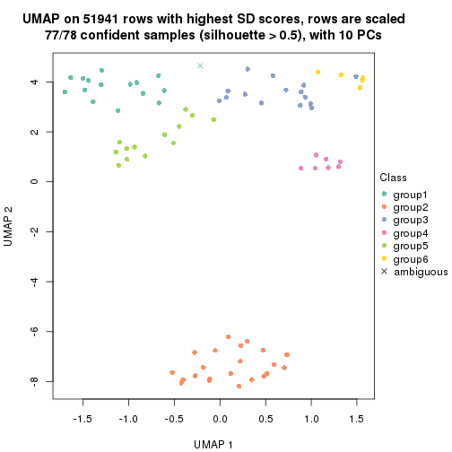
Following heatmap shows how subgroups are split when increasing k:
collect_classes(res)
Test correlation between subgroups and known annotations. If the known annotation is numeric, one-way ANOVA test is applied, and if the known annotation is discrete, chi-squared contingency table test is applied.
test_to_known_factors(res)
#> n tissue(p) individual(p) k
#> SD:pam 77 2.37e-08 0.933 2
#> SD:pam 74 7.09e-08 0.206 3
#> SD:pam 77 1.79e-09 0.135 4
#> SD:pam 78 2.30e-09 0.238 5
#> SD:pam 77 1.48e-10 0.340 6
If matrix rows can be associated to genes, consider to use functional_enrichment(res,
...) to perform function enrichment for the signature genes. See this vignette for more detailed explanations.
The object with results only for a single top-value method and a single partition method can be extracted as:
res = res_list["SD", "mclust"]
# you can also extract it by
# res = res_list["SD:mclust"]
A summary of res and all the functions that can be applied to it:
res
#> A 'ConsensusPartition' object with k = 2, 3, 4, 5, 6.
#> On a matrix with 51941 rows and 78 columns.
#> Top rows (1000, 2000, 3000, 4000, 5000) are extracted by 'SD' method.
#> Subgroups are detected by 'mclust' method.
#> Performed in total 1250 partitions by row resampling.
#> Best k for subgroups seems to be 5.
#>
#> Following methods can be applied to this 'ConsensusPartition' object:
#> [1] "cola_report" "collect_classes" "collect_plots"
#> [4] "collect_stats" "colnames" "compare_signatures"
#> [7] "consensus_heatmap" "dimension_reduction" "functional_enrichment"
#> [10] "get_anno_col" "get_anno" "get_classes"
#> [13] "get_consensus" "get_matrix" "get_membership"
#> [16] "get_param" "get_signatures" "get_stats"
#> [19] "is_best_k" "is_stable_k" "membership_heatmap"
#> [22] "ncol" "nrow" "plot_ecdf"
#> [25] "rownames" "select_partition_number" "show"
#> [28] "suggest_best_k" "test_to_known_factors"
collect_plots() function collects all the plots made from res for all k (number of partitions)
into one single page to provide an easy and fast comparison between different k.
collect_plots(res)
The plots are:
k and the heatmap of
predicted classes for each k.k.k.k.All the plots in panels can be made by individual functions and they are plotted later in this section.
select_partition_number() produces several plots showing different
statistics for choosing “optimized” k. There are following statistics:
k;k, the area increased is defined as \(A_k - A_{k-1}\).The detailed explanations of these statistics can be found in the cola vignette.
Generally speaking, lower PAC score, higher mean silhouette score or higher
concordance corresponds to better partition. Rand index and Jaccard index
measure how similar the current partition is compared to partition with k-1.
If they are too similar, we won't accept k is better than k-1.
select_partition_number(res)
The numeric values for all these statistics can be obtained by get_stats().
get_stats(res)
#> k 1-PAC mean_silhouette concordance area_increased Rand Jaccard
#> 2 2 0.920 0.919 0.957 0.4164 0.579 0.579
#> 3 3 0.861 0.913 0.960 0.5913 0.732 0.544
#> 4 4 1.000 0.965 0.984 0.0934 0.947 0.838
#> 5 5 0.940 0.910 0.948 0.0844 0.940 0.782
#> 6 6 0.883 0.855 0.927 0.0304 0.940 0.743
suggest_best_k() suggests the best \(k\) based on these statistics. The rules are as follows:
suggest_best_k(res)
#> [1] 5
#> attr(,"optional")
#> [1] 2 4
There is also optional best \(k\) = 2 4 that is worth to check.
Following shows the table of the partitions (You need to click the show/hide
code output link to see it). The membership matrix (columns with name p*)
is inferred by
clue::cl_consensus()
function with the SE method. Basically the value in the membership matrix
represents the probability to belong to a certain group. The finall class
label for an item is determined with the group with highest probability it
belongs to.
In get_classes() function, the entropy is calculated from the membership
matrix and the silhouette score is calculated from the consensus matrix.
cbind(get_classes(res, k = 2), get_membership(res, k = 2))
#> class entropy silhouette p1 p2
#> GSM388115 1 0.000 0.9552 1.000 0.000
#> GSM388116 1 0.000 0.9552 1.000 0.000
#> GSM388117 1 0.311 0.9578 0.944 0.056
#> GSM388118 1 0.311 0.9578 0.944 0.056
#> GSM388119 1 0.311 0.9578 0.944 0.056
#> GSM388120 1 0.311 0.9578 0.944 0.056
#> GSM388121 1 0.311 0.9578 0.944 0.056
#> GSM388122 1 0.000 0.9552 1.000 0.000
#> GSM388123 1 0.311 0.9578 0.944 0.056
#> GSM388124 1 0.000 0.9552 1.000 0.000
#> GSM388125 1 0.000 0.9552 1.000 0.000
#> GSM388126 1 0.278 0.9324 0.952 0.048
#> GSM388127 1 0.311 0.9578 0.944 0.056
#> GSM388128 1 0.000 0.9552 1.000 0.000
#> GSM388129 1 0.311 0.9578 0.944 0.056
#> GSM388130 1 0.000 0.9552 1.000 0.000
#> GSM388131 1 0.311 0.9578 0.944 0.056
#> GSM388132 1 0.311 0.9578 0.944 0.056
#> GSM388133 1 0.311 0.9578 0.944 0.056
#> GSM388134 1 0.311 0.9578 0.944 0.056
#> GSM388135 1 0.311 0.9578 0.944 0.056
#> GSM388136 1 0.000 0.9552 1.000 0.000
#> GSM388137 1 0.000 0.9552 1.000 0.000
#> GSM388140 1 0.311 0.9578 0.944 0.056
#> GSM388141 1 0.000 0.9552 1.000 0.000
#> GSM388142 1 0.311 0.9578 0.944 0.056
#> GSM388143 1 0.311 0.9578 0.944 0.056
#> GSM388144 1 0.311 0.9578 0.944 0.056
#> GSM388145 1 0.955 0.4318 0.624 0.376
#> GSM388146 1 0.311 0.9578 0.944 0.056
#> GSM388147 1 0.311 0.9578 0.944 0.056
#> GSM388148 1 0.311 0.9578 0.944 0.056
#> GSM388149 1 0.000 0.9552 1.000 0.000
#> GSM388150 1 0.311 0.9578 0.944 0.056
#> GSM388151 1 0.000 0.9552 1.000 0.000
#> GSM388152 1 0.000 0.9552 1.000 0.000
#> GSM388153 1 0.311 0.9578 0.944 0.056
#> GSM388139 1 0.311 0.9578 0.944 0.056
#> GSM388138 1 0.311 0.9578 0.944 0.056
#> GSM388076 1 0.000 0.9552 1.000 0.000
#> GSM388077 1 0.000 0.9552 1.000 0.000
#> GSM388078 2 0.000 0.9405 0.000 1.000
#> GSM388079 2 0.000 0.9405 0.000 1.000
#> GSM388080 2 0.000 0.9405 0.000 1.000
#> GSM388081 2 0.000 0.9405 0.000 1.000
#> GSM388082 2 0.000 0.9405 0.000 1.000
#> GSM388083 1 0.000 0.9552 1.000 0.000
#> GSM388084 2 0.000 0.9405 0.000 1.000
#> GSM388085 1 0.000 0.9552 1.000 0.000
#> GSM388086 1 0.278 0.9324 0.952 0.048
#> GSM388087 1 0.278 0.9324 0.952 0.048
#> GSM388088 1 0.278 0.9324 0.952 0.048
#> GSM388089 1 0.278 0.9324 0.952 0.048
#> GSM388090 2 0.921 0.4798 0.336 0.664
#> GSM388091 1 0.000 0.9552 1.000 0.000
#> GSM388092 2 0.000 0.9405 0.000 1.000
#> GSM388093 2 0.295 0.8957 0.052 0.948
#> GSM388094 2 0.000 0.9405 0.000 1.000
#> GSM388095 2 0.000 0.9405 0.000 1.000
#> GSM388096 1 0.311 0.9578 0.944 0.056
#> GSM388097 1 0.000 0.9552 1.000 0.000
#> GSM388098 2 0.000 0.9405 0.000 1.000
#> GSM388101 2 0.000 0.9405 0.000 1.000
#> GSM388102 2 0.000 0.9405 0.000 1.000
#> GSM388103 2 0.000 0.9405 0.000 1.000
#> GSM388104 1 0.000 0.9552 1.000 0.000
#> GSM388105 1 0.311 0.9578 0.944 0.056
#> GSM388106 1 0.278 0.9324 0.952 0.048
#> GSM388107 1 0.278 0.9324 0.952 0.048
#> GSM388108 2 0.000 0.9405 0.000 1.000
#> GSM388109 2 0.000 0.9405 0.000 1.000
#> GSM388110 2 0.000 0.9405 0.000 1.000
#> GSM388111 2 0.921 0.4798 0.336 0.664
#> GSM388112 2 0.000 0.9405 0.000 1.000
#> GSM388113 2 0.000 0.9405 0.000 1.000
#> GSM388114 1 0.000 0.9552 1.000 0.000
#> GSM388100 2 0.000 0.9405 0.000 1.000
#> GSM388099 2 0.999 0.0122 0.480 0.520
cbind(get_classes(res, k = 3), get_membership(res, k = 3))
#> class entropy silhouette p1 p2 p3
#> GSM388115 3 0.0000 1.000 0.000 0.000 1.000
#> GSM388116 3 0.0000 1.000 0.000 0.000 1.000
#> GSM388117 1 0.0000 0.901 1.000 0.000 0.000
#> GSM388118 1 0.0000 0.901 1.000 0.000 0.000
#> GSM388119 1 0.0000 0.901 1.000 0.000 0.000
#> GSM388120 1 0.0000 0.901 1.000 0.000 0.000
#> GSM388121 1 0.0000 0.901 1.000 0.000 0.000
#> GSM388122 3 0.0000 1.000 0.000 0.000 1.000
#> GSM388123 1 0.5810 0.596 0.664 0.000 0.336
#> GSM388124 3 0.0000 1.000 0.000 0.000 1.000
#> GSM388125 3 0.0000 1.000 0.000 0.000 1.000
#> GSM388126 3 0.0000 1.000 0.000 0.000 1.000
#> GSM388127 1 0.0000 0.901 1.000 0.000 0.000
#> GSM388128 3 0.0000 1.000 0.000 0.000 1.000
#> GSM388129 1 0.0000 0.901 1.000 0.000 0.000
#> GSM388130 3 0.0000 1.000 0.000 0.000 1.000
#> GSM388131 1 0.0000 0.901 1.000 0.000 0.000
#> GSM388132 1 0.0000 0.901 1.000 0.000 0.000
#> GSM388133 1 0.0000 0.901 1.000 0.000 0.000
#> GSM388134 1 0.5810 0.596 0.664 0.000 0.336
#> GSM388135 1 0.0000 0.901 1.000 0.000 0.000
#> GSM388136 3 0.0000 1.000 0.000 0.000 1.000
#> GSM388137 3 0.0000 1.000 0.000 0.000 1.000
#> GSM388140 1 0.5810 0.596 0.664 0.000 0.336
#> GSM388141 3 0.0000 1.000 0.000 0.000 1.000
#> GSM388142 1 0.0000 0.901 1.000 0.000 0.000
#> GSM388143 1 0.0000 0.901 1.000 0.000 0.000
#> GSM388144 1 0.0000 0.901 1.000 0.000 0.000
#> GSM388145 1 0.5810 0.596 0.664 0.000 0.336
#> GSM388146 1 0.0000 0.901 1.000 0.000 0.000
#> GSM388147 1 0.0000 0.901 1.000 0.000 0.000
#> GSM388148 1 0.5810 0.596 0.664 0.000 0.336
#> GSM388149 3 0.0000 1.000 0.000 0.000 1.000
#> GSM388150 1 0.0000 0.901 1.000 0.000 0.000
#> GSM388151 3 0.0000 1.000 0.000 0.000 1.000
#> GSM388152 3 0.0237 0.995 0.004 0.000 0.996
#> GSM388153 1 0.5810 0.596 0.664 0.000 0.336
#> GSM388139 1 0.0000 0.901 1.000 0.000 0.000
#> GSM388138 1 0.0000 0.901 1.000 0.000 0.000
#> GSM388076 3 0.0000 1.000 0.000 0.000 1.000
#> GSM388077 3 0.0000 1.000 0.000 0.000 1.000
#> GSM388078 2 0.0000 0.958 0.000 1.000 0.000
#> GSM388079 2 0.0000 0.958 0.000 1.000 0.000
#> GSM388080 2 0.0000 0.958 0.000 1.000 0.000
#> GSM388081 2 0.0000 0.958 0.000 1.000 0.000
#> GSM388082 2 0.0000 0.958 0.000 1.000 0.000
#> GSM388083 3 0.0000 1.000 0.000 0.000 1.000
#> GSM388084 2 0.0000 0.958 0.000 1.000 0.000
#> GSM388085 3 0.0000 1.000 0.000 0.000 1.000
#> GSM388086 3 0.0000 1.000 0.000 0.000 1.000
#> GSM388087 3 0.0000 1.000 0.000 0.000 1.000
#> GSM388088 3 0.0000 1.000 0.000 0.000 1.000
#> GSM388089 3 0.0000 1.000 0.000 0.000 1.000
#> GSM388090 2 0.5810 0.501 0.000 0.664 0.336
#> GSM388091 3 0.0000 1.000 0.000 0.000 1.000
#> GSM388092 2 0.0000 0.958 0.000 1.000 0.000
#> GSM388093 2 0.3192 0.850 0.000 0.888 0.112
#> GSM388094 2 0.0000 0.958 0.000 1.000 0.000
#> GSM388095 2 0.0000 0.958 0.000 1.000 0.000
#> GSM388096 1 0.0000 0.901 1.000 0.000 0.000
#> GSM388097 3 0.0000 1.000 0.000 0.000 1.000
#> GSM388098 2 0.0000 0.958 0.000 1.000 0.000
#> GSM388101 2 0.0000 0.958 0.000 1.000 0.000
#> GSM388102 2 0.0000 0.958 0.000 1.000 0.000
#> GSM388103 2 0.0000 0.958 0.000 1.000 0.000
#> GSM388104 3 0.0000 1.000 0.000 0.000 1.000
#> GSM388105 1 0.0000 0.901 1.000 0.000 0.000
#> GSM388106 3 0.0000 1.000 0.000 0.000 1.000
#> GSM388107 3 0.0000 1.000 0.000 0.000 1.000
#> GSM388108 2 0.0000 0.958 0.000 1.000 0.000
#> GSM388109 2 0.0000 0.958 0.000 1.000 0.000
#> GSM388110 2 0.0000 0.958 0.000 1.000 0.000
#> GSM388111 2 0.5810 0.501 0.000 0.664 0.336
#> GSM388112 2 0.0000 0.958 0.000 1.000 0.000
#> GSM388113 2 0.0000 0.958 0.000 1.000 0.000
#> GSM388114 3 0.0000 1.000 0.000 0.000 1.000
#> GSM388100 2 0.0000 0.958 0.000 1.000 0.000
#> GSM388099 1 0.7351 0.637 0.664 0.068 0.268
cbind(get_classes(res, k = 4), get_membership(res, k = 4))
#> class entropy silhouette p1 p2 p3 p4
#> GSM388115 3 0.000 1.000 0.000 0.000 1.000 0.000
#> GSM388116 3 0.000 1.000 0.000 0.000 1.000 0.000
#> GSM388117 1 0.000 0.971 1.000 0.000 0.000 0.000
#> GSM388118 1 0.000 0.971 1.000 0.000 0.000 0.000
#> GSM388119 1 0.000 0.971 1.000 0.000 0.000 0.000
#> GSM388120 1 0.000 0.971 1.000 0.000 0.000 0.000
#> GSM388121 1 0.000 0.971 1.000 0.000 0.000 0.000
#> GSM388122 3 0.000 1.000 0.000 0.000 1.000 0.000
#> GSM388123 1 0.228 0.874 0.904 0.000 0.096 0.000
#> GSM388124 3 0.000 1.000 0.000 0.000 1.000 0.000
#> GSM388125 3 0.000 1.000 0.000 0.000 1.000 0.000
#> GSM388126 4 0.000 0.969 0.000 0.000 0.000 1.000
#> GSM388127 1 0.000 0.971 1.000 0.000 0.000 0.000
#> GSM388128 3 0.000 1.000 0.000 0.000 1.000 0.000
#> GSM388129 1 0.000 0.971 1.000 0.000 0.000 0.000
#> GSM388130 3 0.000 1.000 0.000 0.000 1.000 0.000
#> GSM388131 1 0.000 0.971 1.000 0.000 0.000 0.000
#> GSM388132 1 0.000 0.971 1.000 0.000 0.000 0.000
#> GSM388133 1 0.000 0.971 1.000 0.000 0.000 0.000
#> GSM388134 1 0.000 0.971 1.000 0.000 0.000 0.000
#> GSM388135 1 0.000 0.971 1.000 0.000 0.000 0.000
#> GSM388136 3 0.000 1.000 0.000 0.000 1.000 0.000
#> GSM388137 4 0.417 0.725 0.012 0.000 0.212 0.776
#> GSM388140 1 0.000 0.971 1.000 0.000 0.000 0.000
#> GSM388141 3 0.000 1.000 0.000 0.000 1.000 0.000
#> GSM388142 1 0.000 0.971 1.000 0.000 0.000 0.000
#> GSM388143 1 0.000 0.971 1.000 0.000 0.000 0.000
#> GSM388144 1 0.000 0.971 1.000 0.000 0.000 0.000
#> GSM388145 1 0.423 0.797 0.824 0.080 0.096 0.000
#> GSM388146 1 0.000 0.971 1.000 0.000 0.000 0.000
#> GSM388147 1 0.000 0.971 1.000 0.000 0.000 0.000
#> GSM388148 1 0.000 0.971 1.000 0.000 0.000 0.000
#> GSM388149 3 0.000 1.000 0.000 0.000 1.000 0.000
#> GSM388150 1 0.000 0.971 1.000 0.000 0.000 0.000
#> GSM388151 3 0.000 1.000 0.000 0.000 1.000 0.000
#> GSM388152 3 0.000 1.000 0.000 0.000 1.000 0.000
#> GSM388153 1 0.228 0.874 0.904 0.000 0.096 0.000
#> GSM388139 1 0.000 0.971 1.000 0.000 0.000 0.000
#> GSM388138 1 0.000 0.971 1.000 0.000 0.000 0.000
#> GSM388076 3 0.000 1.000 0.000 0.000 1.000 0.000
#> GSM388077 3 0.000 1.000 0.000 0.000 1.000 0.000
#> GSM388078 2 0.000 0.983 0.000 1.000 0.000 0.000
#> GSM388079 2 0.000 0.983 0.000 1.000 0.000 0.000
#> GSM388080 2 0.000 0.983 0.000 1.000 0.000 0.000
#> GSM388081 2 0.000 0.983 0.000 1.000 0.000 0.000
#> GSM388082 2 0.000 0.983 0.000 1.000 0.000 0.000
#> GSM388083 3 0.000 1.000 0.000 0.000 1.000 0.000
#> GSM388084 2 0.000 0.983 0.000 1.000 0.000 0.000
#> GSM388085 3 0.000 1.000 0.000 0.000 1.000 0.000
#> GSM388086 4 0.000 0.969 0.000 0.000 0.000 1.000
#> GSM388087 4 0.000 0.969 0.000 0.000 0.000 1.000
#> GSM388088 4 0.000 0.969 0.000 0.000 0.000 1.000
#> GSM388089 4 0.000 0.969 0.000 0.000 0.000 1.000
#> GSM388090 2 0.228 0.885 0.000 0.904 0.096 0.000
#> GSM388091 3 0.000 1.000 0.000 0.000 1.000 0.000
#> GSM388092 2 0.000 0.983 0.000 1.000 0.000 0.000
#> GSM388093 2 0.228 0.885 0.000 0.904 0.096 0.000
#> GSM388094 2 0.000 0.983 0.000 1.000 0.000 0.000
#> GSM388095 2 0.000 0.983 0.000 1.000 0.000 0.000
#> GSM388096 1 0.000 0.971 1.000 0.000 0.000 0.000
#> GSM388097 3 0.000 1.000 0.000 0.000 1.000 0.000
#> GSM388098 2 0.000 0.983 0.000 1.000 0.000 0.000
#> GSM388101 2 0.000 0.983 0.000 1.000 0.000 0.000
#> GSM388102 2 0.000 0.983 0.000 1.000 0.000 0.000
#> GSM388103 2 0.000 0.983 0.000 1.000 0.000 0.000
#> GSM388104 3 0.000 1.000 0.000 0.000 1.000 0.000
#> GSM388105 1 0.000 0.971 1.000 0.000 0.000 0.000
#> GSM388106 4 0.000 0.969 0.000 0.000 0.000 1.000
#> GSM388107 4 0.000 0.969 0.000 0.000 0.000 1.000
#> GSM388108 2 0.000 0.983 0.000 1.000 0.000 0.000
#> GSM388109 2 0.000 0.983 0.000 1.000 0.000 0.000
#> GSM388110 2 0.000 0.983 0.000 1.000 0.000 0.000
#> GSM388111 2 0.228 0.885 0.000 0.904 0.096 0.000
#> GSM388112 2 0.000 0.983 0.000 1.000 0.000 0.000
#> GSM388113 2 0.000 0.983 0.000 1.000 0.000 0.000
#> GSM388114 3 0.000 1.000 0.000 0.000 1.000 0.000
#> GSM388100 2 0.000 0.983 0.000 1.000 0.000 0.000
#> GSM388099 1 0.608 0.559 0.660 0.244 0.096 0.000
cbind(get_classes(res, k = 5), get_membership(res, k = 5))
#> class entropy silhouette p1 p2 p3 p4 p5
#> GSM388115 3 0.0000 0.940 0.000 0.000 1.000 0.000 0.000
#> GSM388116 3 0.0000 0.940 0.000 0.000 1.000 0.000 0.000
#> GSM388117 1 0.0000 0.964 1.000 0.000 0.000 0.000 0.000
#> GSM388118 1 0.0000 0.964 1.000 0.000 0.000 0.000 0.000
#> GSM388119 1 0.0000 0.964 1.000 0.000 0.000 0.000 0.000
#> GSM388120 1 0.0000 0.964 1.000 0.000 0.000 0.000 0.000
#> GSM388121 1 0.0000 0.964 1.000 0.000 0.000 0.000 0.000
#> GSM388122 3 0.0000 0.940 0.000 0.000 1.000 0.000 0.000
#> GSM388123 5 0.1608 0.992 0.072 0.000 0.000 0.000 0.928
#> GSM388124 3 0.0000 0.940 0.000 0.000 1.000 0.000 0.000
#> GSM388125 3 0.0000 0.940 0.000 0.000 1.000 0.000 0.000
#> GSM388126 4 0.0000 0.921 0.000 0.000 0.000 1.000 0.000
#> GSM388127 5 0.1792 0.988 0.084 0.000 0.000 0.000 0.916
#> GSM388128 3 0.0000 0.940 0.000 0.000 1.000 0.000 0.000
#> GSM388129 1 0.1544 0.926 0.932 0.000 0.000 0.000 0.068
#> GSM388130 3 0.0000 0.940 0.000 0.000 1.000 0.000 0.000
#> GSM388131 5 0.1732 0.991 0.080 0.000 0.000 0.000 0.920
#> GSM388132 1 0.2329 0.879 0.876 0.000 0.000 0.000 0.124
#> GSM388133 5 0.1851 0.984 0.088 0.000 0.000 0.000 0.912
#> GSM388134 5 0.1608 0.992 0.072 0.000 0.000 0.000 0.928
#> GSM388135 1 0.0290 0.961 0.992 0.000 0.000 0.000 0.008
#> GSM388136 3 0.4138 0.437 0.000 0.000 0.616 0.000 0.384
#> GSM388137 4 0.7626 0.212 0.120 0.000 0.356 0.416 0.108
#> GSM388140 1 0.2561 0.862 0.856 0.000 0.000 0.000 0.144
#> GSM388141 3 0.1410 0.903 0.000 0.000 0.940 0.000 0.060
#> GSM388142 1 0.0000 0.964 1.000 0.000 0.000 0.000 0.000
#> GSM388143 1 0.0000 0.964 1.000 0.000 0.000 0.000 0.000
#> GSM388144 1 0.0000 0.964 1.000 0.000 0.000 0.000 0.000
#> GSM388145 5 0.1732 0.989 0.080 0.000 0.000 0.000 0.920
#> GSM388146 1 0.0000 0.964 1.000 0.000 0.000 0.000 0.000
#> GSM388147 1 0.1830 0.923 0.924 0.000 0.000 0.008 0.068
#> GSM388148 1 0.2561 0.862 0.856 0.000 0.000 0.000 0.144
#> GSM388149 3 0.1410 0.903 0.000 0.000 0.940 0.000 0.060
#> GSM388150 1 0.0290 0.961 0.992 0.000 0.000 0.000 0.008
#> GSM388151 3 0.0000 0.940 0.000 0.000 1.000 0.000 0.000
#> GSM388152 3 0.3534 0.682 0.000 0.000 0.744 0.000 0.256
#> GSM388153 5 0.1608 0.992 0.072 0.000 0.000 0.000 0.928
#> GSM388139 1 0.0000 0.964 1.000 0.000 0.000 0.000 0.000
#> GSM388138 1 0.0609 0.956 0.980 0.000 0.000 0.000 0.020
#> GSM388076 3 0.1608 0.910 0.000 0.000 0.928 0.000 0.072
#> GSM388077 3 0.1608 0.910 0.000 0.000 0.928 0.000 0.072
#> GSM388078 2 0.0000 0.948 0.000 1.000 0.000 0.000 0.000
#> GSM388079 2 0.0000 0.948 0.000 1.000 0.000 0.000 0.000
#> GSM388080 2 0.0000 0.948 0.000 1.000 0.000 0.000 0.000
#> GSM388081 2 0.0000 0.948 0.000 1.000 0.000 0.000 0.000
#> GSM388082 2 0.0000 0.948 0.000 1.000 0.000 0.000 0.000
#> GSM388083 3 0.1608 0.910 0.000 0.000 0.928 0.000 0.072
#> GSM388084 2 0.0000 0.948 0.000 1.000 0.000 0.000 0.000
#> GSM388085 3 0.0000 0.940 0.000 0.000 1.000 0.000 0.000
#> GSM388086 4 0.0000 0.921 0.000 0.000 0.000 1.000 0.000
#> GSM388087 4 0.0000 0.921 0.000 0.000 0.000 1.000 0.000
#> GSM388088 4 0.0000 0.921 0.000 0.000 0.000 1.000 0.000
#> GSM388089 4 0.0000 0.921 0.000 0.000 0.000 1.000 0.000
#> GSM388090 2 0.3983 0.540 0.000 0.660 0.000 0.000 0.340
#> GSM388091 3 0.0000 0.940 0.000 0.000 1.000 0.000 0.000
#> GSM388092 2 0.0000 0.948 0.000 1.000 0.000 0.000 0.000
#> GSM388093 2 0.3983 0.540 0.000 0.660 0.000 0.000 0.340
#> GSM388094 2 0.0000 0.948 0.000 1.000 0.000 0.000 0.000
#> GSM388095 2 0.0000 0.948 0.000 1.000 0.000 0.000 0.000
#> GSM388096 5 0.1608 0.992 0.072 0.000 0.000 0.000 0.928
#> GSM388097 3 0.0000 0.940 0.000 0.000 1.000 0.000 0.000
#> GSM388098 2 0.0000 0.948 0.000 1.000 0.000 0.000 0.000
#> GSM388101 2 0.0000 0.948 0.000 1.000 0.000 0.000 0.000
#> GSM388102 2 0.0000 0.948 0.000 1.000 0.000 0.000 0.000
#> GSM388103 2 0.0000 0.948 0.000 1.000 0.000 0.000 0.000
#> GSM388104 3 0.0703 0.932 0.000 0.000 0.976 0.000 0.024
#> GSM388105 5 0.1671 0.992 0.076 0.000 0.000 0.000 0.924
#> GSM388106 4 0.0000 0.921 0.000 0.000 0.000 1.000 0.000
#> GSM388107 4 0.0000 0.921 0.000 0.000 0.000 1.000 0.000
#> GSM388108 2 0.0000 0.948 0.000 1.000 0.000 0.000 0.000
#> GSM388109 2 0.0000 0.948 0.000 1.000 0.000 0.000 0.000
#> GSM388110 2 0.0000 0.948 0.000 1.000 0.000 0.000 0.000
#> GSM388111 2 0.3966 0.547 0.000 0.664 0.000 0.000 0.336
#> GSM388112 2 0.0000 0.948 0.000 1.000 0.000 0.000 0.000
#> GSM388113 2 0.0000 0.948 0.000 1.000 0.000 0.000 0.000
#> GSM388114 3 0.1608 0.910 0.000 0.000 0.928 0.000 0.072
#> GSM388100 2 0.0000 0.948 0.000 1.000 0.000 0.000 0.000
#> GSM388099 5 0.1732 0.989 0.080 0.000 0.000 0.000 0.920
cbind(get_classes(res, k = 6), get_membership(res, k = 6))
#> class entropy silhouette p1 p2 p3 p4 p5 p6
#> GSM388115 3 0.0000 0.988 0.000 0.000 1.000 0.000 0.000 0.000
#> GSM388116 3 0.0000 0.988 0.000 0.000 1.000 0.000 0.000 0.000
#> GSM388117 1 0.0000 0.884 1.000 0.000 0.000 0.000 0.000 0.000
#> GSM388118 1 0.0000 0.884 1.000 0.000 0.000 0.000 0.000 0.000
#> GSM388119 1 0.0000 0.884 1.000 0.000 0.000 0.000 0.000 0.000
#> GSM388120 1 0.0000 0.884 1.000 0.000 0.000 0.000 0.000 0.000
#> GSM388121 1 0.0146 0.884 0.996 0.000 0.000 0.000 0.004 0.000
#> GSM388122 3 0.1007 0.931 0.000 0.000 0.956 0.000 0.044 0.000
#> GSM388123 5 0.0000 0.841 0.000 0.000 0.000 0.000 1.000 0.000
#> GSM388124 3 0.1007 0.945 0.000 0.000 0.956 0.000 0.000 0.044
#> GSM388125 3 0.0000 0.988 0.000 0.000 1.000 0.000 0.000 0.000
#> GSM388126 4 0.0000 1.000 0.000 0.000 0.000 1.000 0.000 0.000
#> GSM388127 5 0.0363 0.840 0.012 0.000 0.000 0.000 0.988 0.000
#> GSM388128 3 0.0000 0.988 0.000 0.000 1.000 0.000 0.000 0.000
#> GSM388129 1 0.2135 0.830 0.872 0.000 0.000 0.000 0.128 0.000
#> GSM388130 3 0.0000 0.988 0.000 0.000 1.000 0.000 0.000 0.000
#> GSM388131 5 0.0363 0.840 0.012 0.000 0.000 0.000 0.988 0.000
#> GSM388132 1 0.3464 0.680 0.688 0.000 0.000 0.000 0.312 0.000
#> GSM388133 5 0.0547 0.837 0.020 0.000 0.000 0.000 0.980 0.000
#> GSM388134 5 0.0000 0.841 0.000 0.000 0.000 0.000 1.000 0.000
#> GSM388135 1 0.2491 0.813 0.836 0.000 0.000 0.000 0.164 0.000
#> GSM388136 5 0.2762 0.727 0.000 0.000 0.196 0.000 0.804 0.000
#> GSM388137 5 0.5504 0.496 0.000 0.000 0.188 0.252 0.560 0.000
#> GSM388140 1 0.3578 0.650 0.660 0.000 0.000 0.000 0.340 0.000
#> GSM388141 5 0.3965 0.484 0.000 0.000 0.388 0.008 0.604 0.000
#> GSM388142 1 0.0000 0.884 1.000 0.000 0.000 0.000 0.000 0.000
#> GSM388143 1 0.0000 0.884 1.000 0.000 0.000 0.000 0.000 0.000
#> GSM388144 1 0.0000 0.884 1.000 0.000 0.000 0.000 0.000 0.000
#> GSM388145 5 0.1556 0.806 0.000 0.000 0.000 0.000 0.920 0.080
#> GSM388146 1 0.0000 0.884 1.000 0.000 0.000 0.000 0.000 0.000
#> GSM388147 1 0.2823 0.787 0.796 0.000 0.000 0.000 0.204 0.000
#> GSM388148 1 0.3578 0.650 0.660 0.000 0.000 0.000 0.340 0.000
#> GSM388149 5 0.3965 0.484 0.000 0.000 0.388 0.008 0.604 0.000
#> GSM388150 1 0.2454 0.816 0.840 0.000 0.000 0.000 0.160 0.000
#> GSM388151 3 0.0000 0.988 0.000 0.000 1.000 0.000 0.000 0.000
#> GSM388152 5 0.3409 0.630 0.000 0.000 0.300 0.000 0.700 0.000
#> GSM388153 5 0.0000 0.841 0.000 0.000 0.000 0.000 1.000 0.000
#> GSM388139 1 0.0146 0.884 0.996 0.000 0.000 0.000 0.004 0.000
#> GSM388138 1 0.1007 0.871 0.956 0.000 0.000 0.000 0.044 0.000
#> GSM388076 6 0.1556 0.876 0.000 0.000 0.080 0.000 0.000 0.920
#> GSM388077 6 0.1556 0.876 0.000 0.000 0.080 0.000 0.000 0.920
#> GSM388078 2 0.0000 0.937 0.000 1.000 0.000 0.000 0.000 0.000
#> GSM388079 2 0.0000 0.937 0.000 1.000 0.000 0.000 0.000 0.000
#> GSM388080 2 0.0000 0.937 0.000 1.000 0.000 0.000 0.000 0.000
#> GSM388081 2 0.0000 0.937 0.000 1.000 0.000 0.000 0.000 0.000
#> GSM388082 2 0.0000 0.937 0.000 1.000 0.000 0.000 0.000 0.000
#> GSM388083 6 0.1556 0.876 0.000 0.000 0.080 0.000 0.000 0.920
#> GSM388084 2 0.0000 0.937 0.000 1.000 0.000 0.000 0.000 0.000
#> GSM388085 3 0.0000 0.988 0.000 0.000 1.000 0.000 0.000 0.000
#> GSM388086 4 0.0000 1.000 0.000 0.000 0.000 1.000 0.000 0.000
#> GSM388087 4 0.0000 1.000 0.000 0.000 0.000 1.000 0.000 0.000
#> GSM388088 4 0.0000 1.000 0.000 0.000 0.000 1.000 0.000 0.000
#> GSM388089 4 0.0000 1.000 0.000 0.000 0.000 1.000 0.000 0.000
#> GSM388090 2 0.4829 0.461 0.000 0.612 0.000 0.000 0.308 0.080
#> GSM388091 3 0.0000 0.988 0.000 0.000 1.000 0.000 0.000 0.000
#> GSM388092 2 0.0000 0.937 0.000 1.000 0.000 0.000 0.000 0.000
#> GSM388093 2 0.4859 0.445 0.000 0.604 0.000 0.000 0.316 0.080
#> GSM388094 2 0.0000 0.937 0.000 1.000 0.000 0.000 0.000 0.000
#> GSM388095 2 0.0000 0.937 0.000 1.000 0.000 0.000 0.000 0.000
#> GSM388096 5 0.0000 0.841 0.000 0.000 0.000 0.000 1.000 0.000
#> GSM388097 3 0.0000 0.988 0.000 0.000 1.000 0.000 0.000 0.000
#> GSM388098 2 0.0000 0.937 0.000 1.000 0.000 0.000 0.000 0.000
#> GSM388101 2 0.0000 0.937 0.000 1.000 0.000 0.000 0.000 0.000
#> GSM388102 2 0.0000 0.937 0.000 1.000 0.000 0.000 0.000 0.000
#> GSM388103 2 0.0000 0.937 0.000 1.000 0.000 0.000 0.000 0.000
#> GSM388104 6 0.3854 0.198 0.000 0.000 0.464 0.000 0.000 0.536
#> GSM388105 5 0.0363 0.840 0.012 0.000 0.000 0.000 0.988 0.000
#> GSM388106 4 0.0000 1.000 0.000 0.000 0.000 1.000 0.000 0.000
#> GSM388107 4 0.0000 1.000 0.000 0.000 0.000 1.000 0.000 0.000
#> GSM388108 2 0.0000 0.937 0.000 1.000 0.000 0.000 0.000 0.000
#> GSM388109 2 0.0000 0.937 0.000 1.000 0.000 0.000 0.000 0.000
#> GSM388110 2 0.0000 0.937 0.000 1.000 0.000 0.000 0.000 0.000
#> GSM388111 2 0.4829 0.461 0.000 0.612 0.000 0.000 0.308 0.080
#> GSM388112 2 0.0000 0.937 0.000 1.000 0.000 0.000 0.000 0.000
#> GSM388113 2 0.0000 0.937 0.000 1.000 0.000 0.000 0.000 0.000
#> GSM388114 6 0.1556 0.876 0.000 0.000 0.080 0.000 0.000 0.920
#> GSM388100 2 0.0000 0.937 0.000 1.000 0.000 0.000 0.000 0.000
#> GSM388099 5 0.1556 0.806 0.000 0.000 0.000 0.000 0.920 0.080
Heatmaps for the consensus matrix. It visualizes the probability of two samples to be in a same group.
consensus_heatmap(res, k = 2)
consensus_heatmap(res, k = 3)
consensus_heatmap(res, k = 4)
consensus_heatmap(res, k = 5)
consensus_heatmap(res, k = 6)
Heatmaps for the membership of samples in all partitions to see how consistent they are:
membership_heatmap(res, k = 2)
membership_heatmap(res, k = 3)
membership_heatmap(res, k = 4)
membership_heatmap(res, k = 5)
membership_heatmap(res, k = 6)
As soon as we have had the classes for columns, we can look for signatures which are significantly different between classes which can be candidate marks for certain classes. Following are the heatmaps for signatures.
Signature heatmaps where rows are scaled:
get_signatures(res, k = 2)
get_signatures(res, k = 3)
get_signatures(res, k = 4)
get_signatures(res, k = 5)
get_signatures(res, k = 6)
Signature heatmaps where rows are not scaled:
get_signatures(res, k = 2, scale_rows = FALSE)
get_signatures(res, k = 3, scale_rows = FALSE)
get_signatures(res, k = 4, scale_rows = FALSE)
get_signatures(res, k = 5, scale_rows = FALSE)
get_signatures(res, k = 6, scale_rows = FALSE)
Compare the overlap of signatures from different k:
compare_signatures(res)
get_signature() returns a data frame invisibly. TO get the list of signatures, the function
call should be assigned to a variable explicitly. In following code, if plot argument is set
to FALSE, no heatmap is plotted while only the differential analysis is performed.
# code only for demonstration
tb = get_signature(res, k = ..., plot = FALSE)
An example of the output of tb is:
#> which_row fdr mean_1 mean_2 scaled_mean_1 scaled_mean_2 km
#> 1 38 0.042760348 8.373488 9.131774 -0.5533452 0.5164555 1
#> 2 40 0.018707592 7.106213 8.469186 -0.6173731 0.5762149 1
#> 3 55 0.019134737 10.221463 11.207825 -0.6159697 0.5749050 1
#> 4 59 0.006059896 5.921854 7.869574 -0.6899429 0.6439467 1
#> 5 60 0.018055526 8.928898 10.211722 -0.6204761 0.5791110 1
#> 6 98 0.009384629 15.714769 14.887706 0.6635654 -0.6193277 2
...
The columns in tb are:
which_row: row indices corresponding to the input matrix.fdr: FDR for the differential test. mean_x: The mean value in group x.scaled_mean_x: The mean value in group x after rows are scaled.km: Row groups if k-means clustering is applied to rows.UMAP plot which shows how samples are separated.
dimension_reduction(res, k = 2, method = "UMAP")

dimension_reduction(res, k = 3, method = "UMAP")
dimension_reduction(res, k = 4, method = "UMAP")
dimension_reduction(res, k = 5, method = "UMAP")
dimension_reduction(res, k = 6, method = "UMAP")
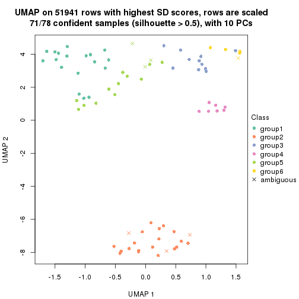
Following heatmap shows how subgroups are split when increasing k:
collect_classes(res)
Test correlation between subgroups and known annotations. If the known annotation is numeric, one-way ANOVA test is applied, and if the known annotation is discrete, chi-squared contingency table test is applied.
test_to_known_factors(res)
#> n tissue(p) individual(p) k
#> SD:mclust 74 3.11e-07 0.935 2
#> SD:mclust 78 2.95e-09 0.398 3
#> SD:mclust 78 3.85e-09 0.158 4
#> SD:mclust 76 2.95e-09 0.294 5
#> SD:mclust 71 1.49e-09 0.411 6
If matrix rows can be associated to genes, consider to use functional_enrichment(res,
...) to perform function enrichment for the signature genes. See this vignette for more detailed explanations.
The object with results only for a single top-value method and a single partition method can be extracted as:
res = res_list["SD", "NMF"]
# you can also extract it by
# res = res_list["SD:NMF"]
A summary of res and all the functions that can be applied to it:
res
#> A 'ConsensusPartition' object with k = 2, 3, 4, 5, 6.
#> On a matrix with 51941 rows and 78 columns.
#> Top rows (1000, 2000, 3000, 4000, 5000) are extracted by 'SD' method.
#> Subgroups are detected by 'NMF' method.
#> Performed in total 1250 partitions by row resampling.
#> Best k for subgroups seems to be 6.
#>
#> Following methods can be applied to this 'ConsensusPartition' object:
#> [1] "cola_report" "collect_classes" "collect_plots"
#> [4] "collect_stats" "colnames" "compare_signatures"
#> [7] "consensus_heatmap" "dimension_reduction" "functional_enrichment"
#> [10] "get_anno_col" "get_anno" "get_classes"
#> [13] "get_consensus" "get_matrix" "get_membership"
#> [16] "get_param" "get_signatures" "get_stats"
#> [19] "is_best_k" "is_stable_k" "membership_heatmap"
#> [22] "ncol" "nrow" "plot_ecdf"
#> [25] "rownames" "select_partition_number" "show"
#> [28] "suggest_best_k" "test_to_known_factors"
collect_plots() function collects all the plots made from res for all k (number of partitions)
into one single page to provide an easy and fast comparison between different k.
collect_plots(res)
The plots are:
k and the heatmap of
predicted classes for each k.k.k.k.All the plots in panels can be made by individual functions and they are plotted later in this section.
select_partition_number() produces several plots showing different
statistics for choosing “optimized” k. There are following statistics:
k;k, the area increased is defined as \(A_k - A_{k-1}\).The detailed explanations of these statistics can be found in the cola vignette.
Generally speaking, lower PAC score, higher mean silhouette score or higher
concordance corresponds to better partition. Rand index and Jaccard index
measure how similar the current partition is compared to partition with k-1.
If they are too similar, we won't accept k is better than k-1.
select_partition_number(res)
The numeric values for all these statistics can be obtained by get_stats().
get_stats(res)
#> k 1-PAC mean_silhouette concordance area_increased Rand Jaccard
#> 2 2 1.000 0.981 0.993 0.4385 0.559 0.559
#> 3 3 0.896 0.927 0.949 0.5108 0.752 0.564
#> 4 4 1.000 0.996 0.998 0.0738 0.862 0.636
#> 5 5 0.857 0.784 0.888 0.0942 0.892 0.646
#> 6 6 0.912 0.868 0.925 0.0392 0.909 0.630
suggest_best_k() suggests the best \(k\) based on these statistics. The rules are as follows:
suggest_best_k(res)
#> [1] 6
#> attr(,"optional")
#> [1] 2 4
There is also optional best \(k\) = 2 4 that is worth to check.
Following shows the table of the partitions (You need to click the show/hide
code output link to see it). The membership matrix (columns with name p*)
is inferred by
clue::cl_consensus()
function with the SE method. Basically the value in the membership matrix
represents the probability to belong to a certain group. The finall class
label for an item is determined with the group with highest probability it
belongs to.
In get_classes() function, the entropy is calculated from the membership
matrix and the silhouette score is calculated from the consensus matrix.
cbind(get_classes(res, k = 2), get_membership(res, k = 2))
#> class entropy silhouette p1 p2
#> GSM388115 1 0.0000 0.998 1.000 0.000
#> GSM388116 1 0.0000 0.998 1.000 0.000
#> GSM388117 1 0.0000 0.998 1.000 0.000
#> GSM388118 1 0.0000 0.998 1.000 0.000
#> GSM388119 1 0.0000 0.998 1.000 0.000
#> GSM388120 1 0.0000 0.998 1.000 0.000
#> GSM388121 1 0.0000 0.998 1.000 0.000
#> GSM388122 1 0.0000 0.998 1.000 0.000
#> GSM388123 1 0.0672 0.990 0.992 0.008
#> GSM388124 1 0.0000 0.998 1.000 0.000
#> GSM388125 1 0.0000 0.998 1.000 0.000
#> GSM388126 1 0.0000 0.998 1.000 0.000
#> GSM388127 1 0.0000 0.998 1.000 0.000
#> GSM388128 1 0.0000 0.998 1.000 0.000
#> GSM388129 1 0.0000 0.998 1.000 0.000
#> GSM388130 1 0.0000 0.998 1.000 0.000
#> GSM388131 1 0.0000 0.998 1.000 0.000
#> GSM388132 1 0.0000 0.998 1.000 0.000
#> GSM388133 1 0.0000 0.998 1.000 0.000
#> GSM388134 1 0.0000 0.998 1.000 0.000
#> GSM388135 1 0.0000 0.998 1.000 0.000
#> GSM388136 1 0.0000 0.998 1.000 0.000
#> GSM388137 1 0.0000 0.998 1.000 0.000
#> GSM388140 1 0.2236 0.962 0.964 0.036
#> GSM388141 1 0.0000 0.998 1.000 0.000
#> GSM388142 1 0.0000 0.998 1.000 0.000
#> GSM388143 1 0.0000 0.998 1.000 0.000
#> GSM388144 1 0.0000 0.998 1.000 0.000
#> GSM388145 2 0.1633 0.959 0.024 0.976
#> GSM388146 1 0.0000 0.998 1.000 0.000
#> GSM388147 1 0.0000 0.998 1.000 0.000
#> GSM388148 1 0.3879 0.917 0.924 0.076
#> GSM388149 1 0.0000 0.998 1.000 0.000
#> GSM388150 1 0.0000 0.998 1.000 0.000
#> GSM388151 1 0.0000 0.998 1.000 0.000
#> GSM388152 1 0.0000 0.998 1.000 0.000
#> GSM388153 1 0.0000 0.998 1.000 0.000
#> GSM388139 1 0.0000 0.998 1.000 0.000
#> GSM388138 1 0.0000 0.998 1.000 0.000
#> GSM388076 1 0.0000 0.998 1.000 0.000
#> GSM388077 1 0.0000 0.998 1.000 0.000
#> GSM388078 2 0.0000 0.981 0.000 1.000
#> GSM388079 2 0.0000 0.981 0.000 1.000
#> GSM388080 2 0.0000 0.981 0.000 1.000
#> GSM388081 2 0.0000 0.981 0.000 1.000
#> GSM388082 2 0.0000 0.981 0.000 1.000
#> GSM388083 1 0.0000 0.998 1.000 0.000
#> GSM388084 2 0.0000 0.981 0.000 1.000
#> GSM388085 1 0.0000 0.998 1.000 0.000
#> GSM388086 1 0.0000 0.998 1.000 0.000
#> GSM388087 1 0.0000 0.998 1.000 0.000
#> GSM388088 1 0.0000 0.998 1.000 0.000
#> GSM388089 1 0.0000 0.998 1.000 0.000
#> GSM388090 2 0.0000 0.981 0.000 1.000
#> GSM388091 1 0.0000 0.998 1.000 0.000
#> GSM388092 2 0.0000 0.981 0.000 1.000
#> GSM388093 2 0.0000 0.981 0.000 1.000
#> GSM388094 2 0.0000 0.981 0.000 1.000
#> GSM388095 2 0.0000 0.981 0.000 1.000
#> GSM388096 1 0.0000 0.998 1.000 0.000
#> GSM388097 1 0.0000 0.998 1.000 0.000
#> GSM388098 2 0.0000 0.981 0.000 1.000
#> GSM388101 2 0.0000 0.981 0.000 1.000
#> GSM388102 2 0.0000 0.981 0.000 1.000
#> GSM388103 2 0.0000 0.981 0.000 1.000
#> GSM388104 1 0.0000 0.998 1.000 0.000
#> GSM388105 1 0.0000 0.998 1.000 0.000
#> GSM388106 2 0.9815 0.272 0.420 0.580
#> GSM388107 1 0.0000 0.998 1.000 0.000
#> GSM388108 2 0.0000 0.981 0.000 1.000
#> GSM388109 2 0.0000 0.981 0.000 1.000
#> GSM388110 2 0.0000 0.981 0.000 1.000
#> GSM388111 2 0.0000 0.981 0.000 1.000
#> GSM388112 2 0.0000 0.981 0.000 1.000
#> GSM388113 2 0.0000 0.981 0.000 1.000
#> GSM388114 1 0.0000 0.998 1.000 0.000
#> GSM388100 2 0.0000 0.981 0.000 1.000
#> GSM388099 2 0.0000 0.981 0.000 1.000
cbind(get_classes(res, k = 3), get_membership(res, k = 3))
#> class entropy silhouette p1 p2 p3
#> GSM388115 3 0.0000 0.937 0.000 0.000 1.000
#> GSM388116 3 0.0000 0.937 0.000 0.000 1.000
#> GSM388117 1 0.1753 0.945 0.952 0.000 0.048
#> GSM388118 1 0.1753 0.945 0.952 0.000 0.048
#> GSM388119 1 0.1753 0.945 0.952 0.000 0.048
#> GSM388120 1 0.1753 0.945 0.952 0.000 0.048
#> GSM388121 1 0.1860 0.945 0.948 0.000 0.052
#> GSM388122 3 0.1643 0.912 0.044 0.000 0.956
#> GSM388123 3 0.1529 0.913 0.000 0.040 0.960
#> GSM388124 3 0.0000 0.937 0.000 0.000 1.000
#> GSM388125 3 0.0000 0.937 0.000 0.000 1.000
#> GSM388126 1 0.1289 0.914 0.968 0.000 0.032
#> GSM388127 1 0.2261 0.937 0.932 0.000 0.068
#> GSM388128 3 0.0000 0.937 0.000 0.000 1.000
#> GSM388129 1 0.1860 0.945 0.948 0.000 0.052
#> GSM388130 3 0.0000 0.937 0.000 0.000 1.000
#> GSM388131 1 0.2796 0.917 0.908 0.000 0.092
#> GSM388132 1 0.1860 0.945 0.948 0.000 0.052
#> GSM388133 1 0.2261 0.937 0.932 0.000 0.068
#> GSM388134 3 0.7272 0.700 0.096 0.204 0.700
#> GSM388135 1 0.1860 0.945 0.948 0.000 0.052
#> GSM388136 3 0.2711 0.883 0.088 0.000 0.912
#> GSM388137 1 0.2165 0.939 0.936 0.000 0.064
#> GSM388140 1 0.2152 0.925 0.948 0.036 0.016
#> GSM388141 1 0.6168 0.313 0.588 0.000 0.412
#> GSM388142 1 0.1860 0.945 0.948 0.000 0.052
#> GSM388143 1 0.1289 0.939 0.968 0.000 0.032
#> GSM388144 1 0.1860 0.945 0.948 0.000 0.052
#> GSM388145 2 0.0424 0.991 0.008 0.992 0.000
#> GSM388146 1 0.0747 0.932 0.984 0.000 0.016
#> GSM388147 1 0.1964 0.943 0.944 0.000 0.056
#> GSM388148 1 0.1989 0.915 0.948 0.048 0.004
#> GSM388149 3 0.5529 0.599 0.296 0.000 0.704
#> GSM388150 1 0.1860 0.945 0.948 0.000 0.052
#> GSM388151 3 0.0000 0.937 0.000 0.000 1.000
#> GSM388152 3 0.4842 0.733 0.224 0.000 0.776
#> GSM388153 3 0.4477 0.863 0.068 0.068 0.864
#> GSM388139 1 0.1860 0.945 0.948 0.000 0.052
#> GSM388138 1 0.1860 0.945 0.948 0.000 0.052
#> GSM388076 3 0.0000 0.937 0.000 0.000 1.000
#> GSM388077 3 0.0000 0.937 0.000 0.000 1.000
#> GSM388078 2 0.0000 1.000 0.000 1.000 0.000
#> GSM388079 2 0.0000 1.000 0.000 1.000 0.000
#> GSM388080 2 0.0000 1.000 0.000 1.000 0.000
#> GSM388081 2 0.0000 1.000 0.000 1.000 0.000
#> GSM388082 2 0.0000 1.000 0.000 1.000 0.000
#> GSM388083 3 0.0000 0.937 0.000 0.000 1.000
#> GSM388084 2 0.0000 1.000 0.000 1.000 0.000
#> GSM388085 3 0.0000 0.937 0.000 0.000 1.000
#> GSM388086 1 0.1964 0.901 0.944 0.000 0.056
#> GSM388087 1 0.1964 0.901 0.944 0.000 0.056
#> GSM388088 1 0.1964 0.901 0.944 0.000 0.056
#> GSM388089 1 0.1411 0.912 0.964 0.000 0.036
#> GSM388090 2 0.0000 1.000 0.000 1.000 0.000
#> GSM388091 3 0.0000 0.937 0.000 0.000 1.000
#> GSM388092 2 0.0000 1.000 0.000 1.000 0.000
#> GSM388093 2 0.0000 1.000 0.000 1.000 0.000
#> GSM388094 2 0.0000 1.000 0.000 1.000 0.000
#> GSM388095 2 0.0000 1.000 0.000 1.000 0.000
#> GSM388096 3 0.5138 0.689 0.252 0.000 0.748
#> GSM388097 3 0.0000 0.937 0.000 0.000 1.000
#> GSM388098 2 0.0000 1.000 0.000 1.000 0.000
#> GSM388101 2 0.0000 1.000 0.000 1.000 0.000
#> GSM388102 2 0.0000 1.000 0.000 1.000 0.000
#> GSM388103 2 0.0000 1.000 0.000 1.000 0.000
#> GSM388104 3 0.0000 0.937 0.000 0.000 1.000
#> GSM388105 1 0.5431 0.642 0.716 0.000 0.284
#> GSM388106 1 0.2297 0.900 0.944 0.020 0.036
#> GSM388107 1 0.1964 0.901 0.944 0.000 0.056
#> GSM388108 2 0.0000 1.000 0.000 1.000 0.000
#> GSM388109 2 0.0000 1.000 0.000 1.000 0.000
#> GSM388110 2 0.0000 1.000 0.000 1.000 0.000
#> GSM388111 2 0.0000 1.000 0.000 1.000 0.000
#> GSM388112 2 0.0000 1.000 0.000 1.000 0.000
#> GSM388113 2 0.0000 1.000 0.000 1.000 0.000
#> GSM388114 3 0.0000 0.937 0.000 0.000 1.000
#> GSM388100 2 0.0000 1.000 0.000 1.000 0.000
#> GSM388099 2 0.0000 1.000 0.000 1.000 0.000
cbind(get_classes(res, k = 4), get_membership(res, k = 4))
#> class entropy silhouette p1 p2 p3 p4
#> GSM388115 3 0.0000 0.998 0.000 0.000 1.000 0
#> GSM388116 3 0.0000 0.998 0.000 0.000 1.000 0
#> GSM388117 1 0.0000 0.997 1.000 0.000 0.000 0
#> GSM388118 1 0.0000 0.997 1.000 0.000 0.000 0
#> GSM388119 1 0.0000 0.997 1.000 0.000 0.000 0
#> GSM388120 1 0.0000 0.997 1.000 0.000 0.000 0
#> GSM388121 1 0.0000 0.997 1.000 0.000 0.000 0
#> GSM388122 3 0.0469 0.983 0.012 0.000 0.988 0
#> GSM388123 3 0.0592 0.979 0.000 0.016 0.984 0
#> GSM388124 3 0.0000 0.998 0.000 0.000 1.000 0
#> GSM388125 3 0.0000 0.998 0.000 0.000 1.000 0
#> GSM388126 4 0.0000 1.000 0.000 0.000 0.000 1
#> GSM388127 1 0.0000 0.997 1.000 0.000 0.000 0
#> GSM388128 3 0.0000 0.998 0.000 0.000 1.000 0
#> GSM388129 1 0.0000 0.997 1.000 0.000 0.000 0
#> GSM388130 3 0.0000 0.998 0.000 0.000 1.000 0
#> GSM388131 1 0.0000 0.997 1.000 0.000 0.000 0
#> GSM388132 1 0.0000 0.997 1.000 0.000 0.000 0
#> GSM388133 1 0.0000 0.997 1.000 0.000 0.000 0
#> GSM388134 1 0.0000 0.997 1.000 0.000 0.000 0
#> GSM388135 1 0.0000 0.997 1.000 0.000 0.000 0
#> GSM388136 1 0.0188 0.993 0.996 0.000 0.004 0
#> GSM388137 1 0.0000 0.997 1.000 0.000 0.000 0
#> GSM388140 1 0.0000 0.997 1.000 0.000 0.000 0
#> GSM388141 1 0.0188 0.993 0.996 0.000 0.004 0
#> GSM388142 1 0.0000 0.997 1.000 0.000 0.000 0
#> GSM388143 1 0.0000 0.997 1.000 0.000 0.000 0
#> GSM388144 1 0.0000 0.997 1.000 0.000 0.000 0
#> GSM388145 2 0.0469 0.984 0.012 0.988 0.000 0
#> GSM388146 1 0.0000 0.997 1.000 0.000 0.000 0
#> GSM388147 1 0.0000 0.997 1.000 0.000 0.000 0
#> GSM388148 1 0.0000 0.997 1.000 0.000 0.000 0
#> GSM388149 1 0.0000 0.997 1.000 0.000 0.000 0
#> GSM388150 1 0.0000 0.997 1.000 0.000 0.000 0
#> GSM388151 3 0.0000 0.998 0.000 0.000 1.000 0
#> GSM388152 1 0.0000 0.997 1.000 0.000 0.000 0
#> GSM388153 1 0.2048 0.918 0.928 0.008 0.064 0
#> GSM388139 1 0.0000 0.997 1.000 0.000 0.000 0
#> GSM388138 1 0.0000 0.997 1.000 0.000 0.000 0
#> GSM388076 3 0.0000 0.998 0.000 0.000 1.000 0
#> GSM388077 3 0.0000 0.998 0.000 0.000 1.000 0
#> GSM388078 2 0.0000 0.999 0.000 1.000 0.000 0
#> GSM388079 2 0.0000 0.999 0.000 1.000 0.000 0
#> GSM388080 2 0.0000 0.999 0.000 1.000 0.000 0
#> GSM388081 2 0.0000 0.999 0.000 1.000 0.000 0
#> GSM388082 2 0.0000 0.999 0.000 1.000 0.000 0
#> GSM388083 3 0.0000 0.998 0.000 0.000 1.000 0
#> GSM388084 2 0.0000 0.999 0.000 1.000 0.000 0
#> GSM388085 3 0.0000 0.998 0.000 0.000 1.000 0
#> GSM388086 4 0.0000 1.000 0.000 0.000 0.000 1
#> GSM388087 4 0.0000 1.000 0.000 0.000 0.000 1
#> GSM388088 4 0.0000 1.000 0.000 0.000 0.000 1
#> GSM388089 4 0.0000 1.000 0.000 0.000 0.000 1
#> GSM388090 2 0.0000 0.999 0.000 1.000 0.000 0
#> GSM388091 3 0.0000 0.998 0.000 0.000 1.000 0
#> GSM388092 2 0.0000 0.999 0.000 1.000 0.000 0
#> GSM388093 2 0.0000 0.999 0.000 1.000 0.000 0
#> GSM388094 2 0.0000 0.999 0.000 1.000 0.000 0
#> GSM388095 2 0.0000 0.999 0.000 1.000 0.000 0
#> GSM388096 1 0.0000 0.997 1.000 0.000 0.000 0
#> GSM388097 3 0.0000 0.998 0.000 0.000 1.000 0
#> GSM388098 2 0.0000 0.999 0.000 1.000 0.000 0
#> GSM388101 2 0.0000 0.999 0.000 1.000 0.000 0
#> GSM388102 2 0.0000 0.999 0.000 1.000 0.000 0
#> GSM388103 2 0.0000 0.999 0.000 1.000 0.000 0
#> GSM388104 3 0.0000 0.998 0.000 0.000 1.000 0
#> GSM388105 1 0.0000 0.997 1.000 0.000 0.000 0
#> GSM388106 4 0.0000 1.000 0.000 0.000 0.000 1
#> GSM388107 4 0.0000 1.000 0.000 0.000 0.000 1
#> GSM388108 2 0.0000 0.999 0.000 1.000 0.000 0
#> GSM388109 2 0.0000 0.999 0.000 1.000 0.000 0
#> GSM388110 2 0.0000 0.999 0.000 1.000 0.000 0
#> GSM388111 2 0.0000 0.999 0.000 1.000 0.000 0
#> GSM388112 2 0.0000 0.999 0.000 1.000 0.000 0
#> GSM388113 2 0.0000 0.999 0.000 1.000 0.000 0
#> GSM388114 3 0.0000 0.998 0.000 0.000 1.000 0
#> GSM388100 2 0.0000 0.999 0.000 1.000 0.000 0
#> GSM388099 2 0.0000 0.999 0.000 1.000 0.000 0
cbind(get_classes(res, k = 5), get_membership(res, k = 5))
#> class entropy silhouette p1 p2 p3 p4 p5
#> GSM388115 3 0.0162 0.8589 0.004 0.000 0.996 0 0.000
#> GSM388116 3 0.0162 0.8589 0.004 0.000 0.996 0 0.000
#> GSM388117 1 0.0162 0.8533 0.996 0.000 0.000 0 0.004
#> GSM388118 1 0.0162 0.8533 0.996 0.000 0.000 0 0.004
#> GSM388119 1 0.2929 0.7218 0.820 0.000 0.000 0 0.180
#> GSM388120 1 0.3039 0.7076 0.808 0.000 0.000 0 0.192
#> GSM388121 1 0.0162 0.8533 0.996 0.000 0.000 0 0.004
#> GSM388122 5 0.4060 -0.1495 0.000 0.000 0.360 0 0.640
#> GSM388123 3 0.4561 0.4451 0.000 0.008 0.504 0 0.488
#> GSM388124 3 0.0162 0.8599 0.000 0.000 0.996 0 0.004
#> GSM388125 3 0.0794 0.8559 0.000 0.000 0.972 0 0.028
#> GSM388126 4 0.0000 1.0000 0.000 0.000 0.000 1 0.000
#> GSM388127 5 0.3424 0.7013 0.240 0.000 0.000 0 0.760
#> GSM388128 3 0.3999 0.6748 0.000 0.000 0.656 0 0.344
#> GSM388129 1 0.1792 0.8076 0.916 0.000 0.000 0 0.084
#> GSM388130 3 0.4138 0.6293 0.000 0.000 0.616 0 0.384
#> GSM388131 5 0.1341 0.6647 0.056 0.000 0.000 0 0.944
#> GSM388132 5 0.4088 0.5589 0.368 0.000 0.000 0 0.632
#> GSM388133 5 0.3816 0.6588 0.304 0.000 0.000 0 0.696
#> GSM388134 5 0.1116 0.6539 0.028 0.004 0.004 0 0.964
#> GSM388135 5 0.3636 0.6885 0.272 0.000 0.000 0 0.728
#> GSM388136 5 0.4163 0.6977 0.228 0.000 0.032 0 0.740
#> GSM388137 1 0.0000 0.8508 1.000 0.000 0.000 0 0.000
#> GSM388140 5 0.4256 0.4131 0.436 0.000 0.000 0 0.564
#> GSM388141 3 0.6383 0.0975 0.328 0.000 0.488 0 0.184
#> GSM388142 1 0.0162 0.8533 0.996 0.000 0.000 0 0.004
#> GSM388143 1 0.0000 0.8508 1.000 0.000 0.000 0 0.000
#> GSM388144 1 0.0162 0.8533 0.996 0.000 0.000 0 0.004
#> GSM388145 2 0.4268 0.1334 0.000 0.556 0.000 0 0.444
#> GSM388146 1 0.3534 0.5920 0.744 0.000 0.000 0 0.256
#> GSM388147 5 0.4307 0.2233 0.500 0.000 0.000 0 0.500
#> GSM388148 5 0.3774 0.6680 0.296 0.000 0.000 0 0.704
#> GSM388149 1 0.0290 0.8438 0.992 0.000 0.000 0 0.008
#> GSM388150 1 0.4307 -0.3492 0.504 0.000 0.000 0 0.496
#> GSM388151 3 0.0162 0.8601 0.000 0.000 0.996 0 0.004
#> GSM388152 5 0.4223 0.6953 0.248 0.000 0.028 0 0.724
#> GSM388153 5 0.1386 0.6397 0.016 0.032 0.000 0 0.952
#> GSM388139 1 0.3305 0.6571 0.776 0.000 0.000 0 0.224
#> GSM388138 1 0.0162 0.8533 0.996 0.000 0.000 0 0.004
#> GSM388076 3 0.0000 0.8598 0.000 0.000 1.000 0 0.000
#> GSM388077 3 0.0000 0.8598 0.000 0.000 1.000 0 0.000
#> GSM388078 2 0.0000 0.9763 0.000 1.000 0.000 0 0.000
#> GSM388079 2 0.0000 0.9763 0.000 1.000 0.000 0 0.000
#> GSM388080 2 0.0000 0.9763 0.000 1.000 0.000 0 0.000
#> GSM388081 2 0.0000 0.9763 0.000 1.000 0.000 0 0.000
#> GSM388082 2 0.0000 0.9763 0.000 1.000 0.000 0 0.000
#> GSM388083 3 0.0162 0.8599 0.000 0.000 0.996 0 0.004
#> GSM388084 2 0.0000 0.9763 0.000 1.000 0.000 0 0.000
#> GSM388085 3 0.0609 0.8577 0.000 0.000 0.980 0 0.020
#> GSM388086 4 0.0000 1.0000 0.000 0.000 0.000 1 0.000
#> GSM388087 4 0.0000 1.0000 0.000 0.000 0.000 1 0.000
#> GSM388088 4 0.0000 1.0000 0.000 0.000 0.000 1 0.000
#> GSM388089 4 0.0000 1.0000 0.000 0.000 0.000 1 0.000
#> GSM388090 2 0.0000 0.9763 0.000 1.000 0.000 0 0.000
#> GSM388091 3 0.3966 0.6824 0.000 0.000 0.664 0 0.336
#> GSM388092 2 0.0000 0.9763 0.000 1.000 0.000 0 0.000
#> GSM388093 2 0.0000 0.9763 0.000 1.000 0.000 0 0.000
#> GSM388094 2 0.0000 0.9763 0.000 1.000 0.000 0 0.000
#> GSM388095 2 0.0000 0.9763 0.000 1.000 0.000 0 0.000
#> GSM388096 5 0.0404 0.6421 0.012 0.000 0.000 0 0.988
#> GSM388097 3 0.1908 0.8279 0.000 0.000 0.908 0 0.092
#> GSM388098 2 0.0000 0.9763 0.000 1.000 0.000 0 0.000
#> GSM388101 2 0.0000 0.9763 0.000 1.000 0.000 0 0.000
#> GSM388102 2 0.0000 0.9763 0.000 1.000 0.000 0 0.000
#> GSM388103 2 0.0000 0.9763 0.000 1.000 0.000 0 0.000
#> GSM388104 3 0.0000 0.8598 0.000 0.000 1.000 0 0.000
#> GSM388105 5 0.3586 0.6936 0.264 0.000 0.000 0 0.736
#> GSM388106 4 0.0000 1.0000 0.000 0.000 0.000 1 0.000
#> GSM388107 4 0.0000 1.0000 0.000 0.000 0.000 1 0.000
#> GSM388108 2 0.0000 0.9763 0.000 1.000 0.000 0 0.000
#> GSM388109 2 0.0000 0.9763 0.000 1.000 0.000 0 0.000
#> GSM388110 2 0.0000 0.9763 0.000 1.000 0.000 0 0.000
#> GSM388111 2 0.0290 0.9698 0.000 0.992 0.000 0 0.008
#> GSM388112 2 0.0000 0.9763 0.000 1.000 0.000 0 0.000
#> GSM388113 2 0.0000 0.9763 0.000 1.000 0.000 0 0.000
#> GSM388114 3 0.0162 0.8599 0.000 0.000 0.996 0 0.004
#> GSM388100 2 0.0000 0.9763 0.000 1.000 0.000 0 0.000
#> GSM388099 5 0.3816 0.4648 0.000 0.304 0.000 0 0.696
cbind(get_classes(res, k = 6), get_membership(res, k = 6))
#> class entropy silhouette p1 p2 p3 p4 p5 p6
#> GSM388115 6 0.1866 0.807 0.084 0.000 0.008 0.000 0.000 0.908
#> GSM388116 6 0.1866 0.807 0.084 0.000 0.008 0.000 0.000 0.908
#> GSM388117 1 0.2058 0.930 0.908 0.000 0.056 0.000 0.036 0.000
#> GSM388118 1 0.2058 0.930 0.908 0.000 0.056 0.000 0.036 0.000
#> GSM388119 5 0.3695 0.652 0.272 0.000 0.016 0.000 0.712 0.000
#> GSM388120 5 0.3998 0.529 0.340 0.000 0.016 0.000 0.644 0.000
#> GSM388121 1 0.0363 0.936 0.988 0.000 0.000 0.000 0.012 0.000
#> GSM388122 3 0.2119 0.825 0.000 0.000 0.904 0.000 0.036 0.060
#> GSM388123 3 0.2973 0.780 0.000 0.056 0.868 0.000 0.040 0.036
#> GSM388124 6 0.0865 0.853 0.000 0.000 0.036 0.000 0.000 0.964
#> GSM388125 3 0.3101 0.729 0.000 0.000 0.756 0.000 0.000 0.244
#> GSM388126 4 0.0000 0.991 0.000 0.000 0.000 1.000 0.000 0.000
#> GSM388127 5 0.0363 0.873 0.000 0.000 0.012 0.000 0.988 0.000
#> GSM388128 3 0.1806 0.837 0.000 0.000 0.908 0.000 0.004 0.088
#> GSM388129 1 0.2882 0.782 0.812 0.000 0.008 0.000 0.180 0.000
#> GSM388130 3 0.1918 0.837 0.000 0.000 0.904 0.000 0.008 0.088
#> GSM388131 5 0.0547 0.871 0.000 0.000 0.020 0.000 0.980 0.000
#> GSM388132 5 0.0458 0.875 0.016 0.000 0.000 0.000 0.984 0.000
#> GSM388133 5 0.0291 0.874 0.004 0.000 0.004 0.000 0.992 0.000
#> GSM388134 5 0.0547 0.871 0.000 0.000 0.020 0.000 0.980 0.000
#> GSM388135 5 0.1003 0.874 0.016 0.000 0.020 0.000 0.964 0.000
#> GSM388136 5 0.1686 0.851 0.000 0.000 0.064 0.000 0.924 0.012
#> GSM388137 1 0.0779 0.929 0.976 0.000 0.008 0.000 0.008 0.008
#> GSM388140 5 0.0622 0.874 0.012 0.000 0.008 0.000 0.980 0.000
#> GSM388141 6 0.6878 0.125 0.240 0.000 0.056 0.000 0.304 0.400
#> GSM388142 1 0.1700 0.912 0.916 0.000 0.004 0.000 0.080 0.000
#> GSM388143 1 0.2106 0.928 0.904 0.000 0.064 0.000 0.032 0.000
#> GSM388144 1 0.0547 0.938 0.980 0.000 0.000 0.000 0.020 0.000
#> GSM388145 5 0.0937 0.858 0.000 0.040 0.000 0.000 0.960 0.000
#> GSM388146 5 0.3364 0.746 0.196 0.000 0.024 0.000 0.780 0.000
#> GSM388147 5 0.0858 0.873 0.028 0.000 0.004 0.000 0.968 0.000
#> GSM388148 5 0.0508 0.875 0.004 0.000 0.012 0.000 0.984 0.000
#> GSM388149 1 0.0891 0.927 0.968 0.000 0.024 0.000 0.008 0.000
#> GSM388150 5 0.3953 0.558 0.328 0.000 0.016 0.000 0.656 0.000
#> GSM388151 6 0.2730 0.655 0.000 0.000 0.192 0.000 0.000 0.808
#> GSM388152 5 0.3147 0.767 0.016 0.000 0.160 0.000 0.816 0.008
#> GSM388153 3 0.4778 0.101 0.000 0.052 0.524 0.000 0.424 0.000
#> GSM388139 5 0.2618 0.820 0.116 0.000 0.024 0.000 0.860 0.000
#> GSM388138 1 0.0260 0.935 0.992 0.000 0.000 0.000 0.008 0.000
#> GSM388076 6 0.0000 0.850 0.000 0.000 0.000 0.000 0.000 1.000
#> GSM388077 6 0.0000 0.850 0.000 0.000 0.000 0.000 0.000 1.000
#> GSM388078 2 0.0146 0.997 0.000 0.996 0.004 0.000 0.000 0.000
#> GSM388079 2 0.0146 0.997 0.000 0.996 0.004 0.000 0.000 0.000
#> GSM388080 2 0.0000 0.997 0.000 1.000 0.000 0.000 0.000 0.000
#> GSM388081 2 0.0000 0.997 0.000 1.000 0.000 0.000 0.000 0.000
#> GSM388082 2 0.0146 0.997 0.000 0.996 0.004 0.000 0.000 0.000
#> GSM388083 6 0.0865 0.853 0.000 0.000 0.036 0.000 0.000 0.964
#> GSM388084 2 0.0000 0.997 0.000 1.000 0.000 0.000 0.000 0.000
#> GSM388085 3 0.3454 0.749 0.024 0.000 0.768 0.000 0.000 0.208
#> GSM388086 4 0.0000 0.991 0.000 0.000 0.000 1.000 0.000 0.000
#> GSM388087 4 0.0000 0.991 0.000 0.000 0.000 1.000 0.000 0.000
#> GSM388088 4 0.0000 0.991 0.000 0.000 0.000 1.000 0.000 0.000
#> GSM388089 4 0.1524 0.945 0.008 0.000 0.060 0.932 0.000 0.000
#> GSM388090 2 0.0000 0.997 0.000 1.000 0.000 0.000 0.000 0.000
#> GSM388091 3 0.1806 0.837 0.000 0.000 0.908 0.000 0.004 0.088
#> GSM388092 2 0.0146 0.997 0.000 0.996 0.004 0.000 0.000 0.000
#> GSM388093 2 0.0146 0.997 0.000 0.996 0.004 0.000 0.000 0.000
#> GSM388094 2 0.0000 0.997 0.000 1.000 0.000 0.000 0.000 0.000
#> GSM388095 2 0.0000 0.997 0.000 1.000 0.000 0.000 0.000 0.000
#> GSM388096 5 0.3737 0.382 0.000 0.000 0.392 0.000 0.608 0.000
#> GSM388097 3 0.2631 0.803 0.000 0.000 0.820 0.000 0.000 0.180
#> GSM388098 2 0.0146 0.997 0.000 0.996 0.004 0.000 0.000 0.000
#> GSM388101 2 0.0000 0.997 0.000 1.000 0.000 0.000 0.000 0.000
#> GSM388102 2 0.0000 0.997 0.000 1.000 0.000 0.000 0.000 0.000
#> GSM388103 2 0.0146 0.997 0.000 0.996 0.004 0.000 0.000 0.000
#> GSM388104 6 0.0937 0.851 0.000 0.000 0.040 0.000 0.000 0.960
#> GSM388105 5 0.0508 0.873 0.004 0.000 0.012 0.000 0.984 0.000
#> GSM388106 4 0.0000 0.991 0.000 0.000 0.000 1.000 0.000 0.000
#> GSM388107 4 0.0000 0.991 0.000 0.000 0.000 1.000 0.000 0.000
#> GSM388108 2 0.0146 0.997 0.000 0.996 0.004 0.000 0.000 0.000
#> GSM388109 2 0.0000 0.997 0.000 1.000 0.000 0.000 0.000 0.000
#> GSM388110 2 0.0146 0.997 0.000 0.996 0.004 0.000 0.000 0.000
#> GSM388111 2 0.0508 0.985 0.000 0.984 0.012 0.000 0.004 0.000
#> GSM388112 2 0.0000 0.997 0.000 1.000 0.000 0.000 0.000 0.000
#> GSM388113 2 0.0146 0.997 0.000 0.996 0.004 0.000 0.000 0.000
#> GSM388114 6 0.0865 0.853 0.000 0.000 0.036 0.000 0.000 0.964
#> GSM388100 2 0.0000 0.997 0.000 1.000 0.000 0.000 0.000 0.000
#> GSM388099 5 0.1500 0.843 0.000 0.052 0.012 0.000 0.936 0.000
Heatmaps for the consensus matrix. It visualizes the probability of two samples to be in a same group.
consensus_heatmap(res, k = 2)
consensus_heatmap(res, k = 3)
consensus_heatmap(res, k = 4)
consensus_heatmap(res, k = 5)
consensus_heatmap(res, k = 6)
Heatmaps for the membership of samples in all partitions to see how consistent they are:
membership_heatmap(res, k = 2)
membership_heatmap(res, k = 3)
membership_heatmap(res, k = 4)
membership_heatmap(res, k = 5)
membership_heatmap(res, k = 6)
As soon as we have had the classes for columns, we can look for signatures which are significantly different between classes which can be candidate marks for certain classes. Following are the heatmaps for signatures.
Signature heatmaps where rows are scaled:
get_signatures(res, k = 2)
get_signatures(res, k = 3)
get_signatures(res, k = 4)
get_signatures(res, k = 5)
get_signatures(res, k = 6)
Signature heatmaps where rows are not scaled:
get_signatures(res, k = 2, scale_rows = FALSE)
get_signatures(res, k = 3, scale_rows = FALSE)
get_signatures(res, k = 4, scale_rows = FALSE)
get_signatures(res, k = 5, scale_rows = FALSE)
get_signatures(res, k = 6, scale_rows = FALSE)
Compare the overlap of signatures from different k:
compare_signatures(res)
get_signature() returns a data frame invisibly. TO get the list of signatures, the function
call should be assigned to a variable explicitly. In following code, if plot argument is set
to FALSE, no heatmap is plotted while only the differential analysis is performed.
# code only for demonstration
tb = get_signature(res, k = ..., plot = FALSE)
An example of the output of tb is:
#> which_row fdr mean_1 mean_2 scaled_mean_1 scaled_mean_2 km
#> 1 38 0.042760348 8.373488 9.131774 -0.5533452 0.5164555 1
#> 2 40 0.018707592 7.106213 8.469186 -0.6173731 0.5762149 1
#> 3 55 0.019134737 10.221463 11.207825 -0.6159697 0.5749050 1
#> 4 59 0.006059896 5.921854 7.869574 -0.6899429 0.6439467 1
#> 5 60 0.018055526 8.928898 10.211722 -0.6204761 0.5791110 1
#> 6 98 0.009384629 15.714769 14.887706 0.6635654 -0.6193277 2
...
The columns in tb are:
which_row: row indices corresponding to the input matrix.fdr: FDR for the differential test. mean_x: The mean value in group x.scaled_mean_x: The mean value in group x after rows are scaled.km: Row groups if k-means clustering is applied to rows.UMAP plot which shows how samples are separated.
dimension_reduction(res, k = 2, method = "UMAP")

dimension_reduction(res, k = 3, method = "UMAP")
dimension_reduction(res, k = 4, method = "UMAP")
dimension_reduction(res, k = 5, method = "UMAP")
dimension_reduction(res, k = 6, method = "UMAP")
Following heatmap shows how subgroups are split when increasing k:
collect_classes(res)
Test correlation between subgroups and known annotations. If the known annotation is numeric, one-way ANOVA test is applied, and if the known annotation is discrete, chi-squared contingency table test is applied.
test_to_known_factors(res)
#> n tissue(p) individual(p) k
#> SD:NMF 77 1.57e-07 0.933 2
#> SD:NMF 77 3.42e-07 0.355 3
#> SD:NMF 78 4.82e-10 0.194 4
#> SD:NMF 70 4.40e-09 0.151 5
#> SD:NMF 75 3.52e-09 0.148 6
If matrix rows can be associated to genes, consider to use functional_enrichment(res,
...) to perform function enrichment for the signature genes. See this vignette for more detailed explanations.
The object with results only for a single top-value method and a single partition method can be extracted as:
res = res_list["CV", "hclust"]
# you can also extract it by
# res = res_list["CV:hclust"]
A summary of res and all the functions that can be applied to it:
res
#> A 'ConsensusPartition' object with k = 2, 3, 4, 5, 6.
#> On a matrix with 51941 rows and 78 columns.
#> Top rows (1000, 2000, 3000, 4000, 5000) are extracted by 'CV' method.
#> Subgroups are detected by 'hclust' method.
#> Performed in total 1250 partitions by row resampling.
#> Best k for subgroups seems to be 6.
#>
#> Following methods can be applied to this 'ConsensusPartition' object:
#> [1] "cola_report" "collect_classes" "collect_plots"
#> [4] "collect_stats" "colnames" "compare_signatures"
#> [7] "consensus_heatmap" "dimension_reduction" "functional_enrichment"
#> [10] "get_anno_col" "get_anno" "get_classes"
#> [13] "get_consensus" "get_matrix" "get_membership"
#> [16] "get_param" "get_signatures" "get_stats"
#> [19] "is_best_k" "is_stable_k" "membership_heatmap"
#> [22] "ncol" "nrow" "plot_ecdf"
#> [25] "rownames" "select_partition_number" "show"
#> [28] "suggest_best_k" "test_to_known_factors"
collect_plots() function collects all the plots made from res for all k (number of partitions)
into one single page to provide an easy and fast comparison between different k.
collect_plots(res)
The plots are:
k and the heatmap of
predicted classes for each k.k.k.k.All the plots in panels can be made by individual functions and they are plotted later in this section.
select_partition_number() produces several plots showing different
statistics for choosing “optimized” k. There are following statistics:
k;k, the area increased is defined as \(A_k - A_{k-1}\).The detailed explanations of these statistics can be found in the cola vignette.
Generally speaking, lower PAC score, higher mean silhouette score or higher
concordance corresponds to better partition. Rand index and Jaccard index
measure how similar the current partition is compared to partition with k-1.
If they are too similar, we won't accept k is better than k-1.
select_partition_number(res)
The numeric values for all these statistics can be obtained by get_stats().
get_stats(res)
#> k 1-PAC mean_silhouette concordance area_increased Rand Jaccard
#> 2 2 1.000 0.992 0.995 0.4139 0.590 0.590
#> 3 3 0.750 0.815 0.847 0.3720 0.886 0.806
#> 4 4 0.834 0.941 0.964 0.2555 0.807 0.594
#> 5 5 0.916 0.948 0.942 0.0880 0.930 0.752
#> 6 6 0.917 0.926 0.933 0.0404 0.968 0.850
suggest_best_k() suggests the best \(k\) based on these statistics. The rules are as follows:
suggest_best_k(res)
#> [1] 6
#> attr(,"optional")
#> [1] 2 5
There is also optional best \(k\) = 2 5 that is worth to check.
Following shows the table of the partitions (You need to click the show/hide
code output link to see it). The membership matrix (columns with name p*)
is inferred by
clue::cl_consensus()
function with the SE method. Basically the value in the membership matrix
represents the probability to belong to a certain group. The finall class
label for an item is determined with the group with highest probability it
belongs to.
In get_classes() function, the entropy is calculated from the membership
matrix and the silhouette score is calculated from the consensus matrix.
cbind(get_classes(res, k = 2), get_membership(res, k = 2))
#> class entropy silhouette p1 p2
#> GSM388115 1 0.0000 0.993 1.000 0.000
#> GSM388116 1 0.0000 0.993 1.000 0.000
#> GSM388117 1 0.0000 0.993 1.000 0.000
#> GSM388118 1 0.0000 0.993 1.000 0.000
#> GSM388119 1 0.0000 0.993 1.000 0.000
#> GSM388120 1 0.0000 0.993 1.000 0.000
#> GSM388121 1 0.0000 0.993 1.000 0.000
#> GSM388122 1 0.0000 0.993 1.000 0.000
#> GSM388123 1 0.3114 0.950 0.944 0.056
#> GSM388124 1 0.0000 0.993 1.000 0.000
#> GSM388125 1 0.0000 0.993 1.000 0.000
#> GSM388126 1 0.0376 0.991 0.996 0.004
#> GSM388127 1 0.1184 0.985 0.984 0.016
#> GSM388128 1 0.0000 0.993 1.000 0.000
#> GSM388129 1 0.0000 0.993 1.000 0.000
#> GSM388130 1 0.0000 0.993 1.000 0.000
#> GSM388131 1 0.1184 0.985 0.984 0.016
#> GSM388132 1 0.1184 0.985 0.984 0.016
#> GSM388133 1 0.1184 0.985 0.984 0.016
#> GSM388134 1 0.1414 0.982 0.980 0.020
#> GSM388135 1 0.0000 0.993 1.000 0.000
#> GSM388136 1 0.0000 0.993 1.000 0.000
#> GSM388137 1 0.0000 0.993 1.000 0.000
#> GSM388140 1 0.1414 0.982 0.980 0.020
#> GSM388141 1 0.0000 0.993 1.000 0.000
#> GSM388142 1 0.0000 0.993 1.000 0.000
#> GSM388143 1 0.0000 0.993 1.000 0.000
#> GSM388144 1 0.0000 0.993 1.000 0.000
#> GSM388145 1 0.3114 0.950 0.944 0.056
#> GSM388146 1 0.0000 0.993 1.000 0.000
#> GSM388147 1 0.1184 0.985 0.984 0.016
#> GSM388148 1 0.1414 0.982 0.980 0.020
#> GSM388149 1 0.0000 0.993 1.000 0.000
#> GSM388150 1 0.0000 0.993 1.000 0.000
#> GSM388151 1 0.0000 0.993 1.000 0.000
#> GSM388152 1 0.0000 0.993 1.000 0.000
#> GSM388153 1 0.1184 0.985 0.984 0.016
#> GSM388139 1 0.0000 0.993 1.000 0.000
#> GSM388138 1 0.0000 0.993 1.000 0.000
#> GSM388076 1 0.0000 0.993 1.000 0.000
#> GSM388077 1 0.0000 0.993 1.000 0.000
#> GSM388078 2 0.0000 1.000 0.000 1.000
#> GSM388079 2 0.0000 1.000 0.000 1.000
#> GSM388080 2 0.0000 1.000 0.000 1.000
#> GSM388081 2 0.0000 1.000 0.000 1.000
#> GSM388082 2 0.0000 1.000 0.000 1.000
#> GSM388083 1 0.0000 0.993 1.000 0.000
#> GSM388084 2 0.0000 1.000 0.000 1.000
#> GSM388085 1 0.0000 0.993 1.000 0.000
#> GSM388086 1 0.0376 0.991 0.996 0.004
#> GSM388087 1 0.0376 0.991 0.996 0.004
#> GSM388088 1 0.0376 0.991 0.996 0.004
#> GSM388089 1 0.0376 0.991 0.996 0.004
#> GSM388090 2 0.0000 1.000 0.000 1.000
#> GSM388091 1 0.0000 0.993 1.000 0.000
#> GSM388092 2 0.0000 1.000 0.000 1.000
#> GSM388093 2 0.0000 1.000 0.000 1.000
#> GSM388094 2 0.0000 1.000 0.000 1.000
#> GSM388095 2 0.0000 1.000 0.000 1.000
#> GSM388096 1 0.1184 0.985 0.984 0.016
#> GSM388097 1 0.0000 0.993 1.000 0.000
#> GSM388098 2 0.0000 1.000 0.000 1.000
#> GSM388101 2 0.0000 1.000 0.000 1.000
#> GSM388102 2 0.0000 1.000 0.000 1.000
#> GSM388103 2 0.0000 1.000 0.000 1.000
#> GSM388104 1 0.0000 0.993 1.000 0.000
#> GSM388105 1 0.1184 0.985 0.984 0.016
#> GSM388106 1 0.0376 0.991 0.996 0.004
#> GSM388107 1 0.0376 0.991 0.996 0.004
#> GSM388108 2 0.0000 1.000 0.000 1.000
#> GSM388109 2 0.0000 1.000 0.000 1.000
#> GSM388110 2 0.0000 1.000 0.000 1.000
#> GSM388111 2 0.0000 1.000 0.000 1.000
#> GSM388112 2 0.0000 1.000 0.000 1.000
#> GSM388113 2 0.0000 1.000 0.000 1.000
#> GSM388114 1 0.0000 0.993 1.000 0.000
#> GSM388100 2 0.0000 1.000 0.000 1.000
#> GSM388099 1 0.3584 0.937 0.932 0.068
cbind(get_classes(res, k = 3), get_membership(res, k = 3))
#> class entropy silhouette p1 p2 p3
#> GSM388115 1 0.000 0.697 1.000 0.000 0.000
#> GSM388116 1 0.000 0.697 1.000 0.000 0.000
#> GSM388117 1 0.588 0.748 0.652 0.000 0.348
#> GSM388118 1 0.588 0.748 0.652 0.000 0.348
#> GSM388119 1 0.588 0.748 0.652 0.000 0.348
#> GSM388120 1 0.588 0.748 0.652 0.000 0.348
#> GSM388121 1 0.588 0.748 0.652 0.000 0.348
#> GSM388122 1 0.000 0.697 1.000 0.000 0.000
#> GSM388123 1 0.762 0.692 0.596 0.056 0.348
#> GSM388124 1 0.000 0.697 1.000 0.000 0.000
#> GSM388125 1 0.000 0.697 1.000 0.000 0.000
#> GSM388126 3 0.000 0.946 0.000 0.000 1.000
#> GSM388127 1 0.657 0.741 0.636 0.016 0.348
#> GSM388128 1 0.000 0.697 1.000 0.000 0.000
#> GSM388129 1 0.588 0.748 0.652 0.000 0.348
#> GSM388130 1 0.000 0.697 1.000 0.000 0.000
#> GSM388131 1 0.657 0.741 0.636 0.016 0.348
#> GSM388132 1 0.657 0.741 0.636 0.016 0.348
#> GSM388133 1 0.657 0.741 0.636 0.016 0.348
#> GSM388134 1 0.670 0.737 0.632 0.020 0.348
#> GSM388135 1 0.588 0.748 0.652 0.000 0.348
#> GSM388136 1 0.000 0.697 1.000 0.000 0.000
#> GSM388137 1 0.546 0.741 0.712 0.000 0.288
#> GSM388140 1 0.670 0.737 0.632 0.020 0.348
#> GSM388141 1 0.000 0.697 1.000 0.000 0.000
#> GSM388142 1 0.588 0.748 0.652 0.000 0.348
#> GSM388143 1 0.588 0.748 0.652 0.000 0.348
#> GSM388144 1 0.588 0.748 0.652 0.000 0.348
#> GSM388145 1 0.762 0.692 0.596 0.056 0.348
#> GSM388146 1 0.588 0.748 0.652 0.000 0.348
#> GSM388147 1 0.657 0.741 0.636 0.016 0.348
#> GSM388148 1 0.670 0.737 0.632 0.020 0.348
#> GSM388149 1 0.000 0.697 1.000 0.000 0.000
#> GSM388150 1 0.588 0.748 0.652 0.000 0.348
#> GSM388151 1 0.000 0.697 1.000 0.000 0.000
#> GSM388152 1 0.000 0.697 1.000 0.000 0.000
#> GSM388153 1 0.657 0.741 0.636 0.016 0.348
#> GSM388139 1 0.588 0.748 0.652 0.000 0.348
#> GSM388138 1 0.588 0.748 0.652 0.000 0.348
#> GSM388076 1 0.000 0.697 1.000 0.000 0.000
#> GSM388077 1 0.000 0.697 1.000 0.000 0.000
#> GSM388078 2 0.000 1.000 0.000 1.000 0.000
#> GSM388079 2 0.000 1.000 0.000 1.000 0.000
#> GSM388080 2 0.000 1.000 0.000 1.000 0.000
#> GSM388081 2 0.000 1.000 0.000 1.000 0.000
#> GSM388082 2 0.000 1.000 0.000 1.000 0.000
#> GSM388083 1 0.000 0.697 1.000 0.000 0.000
#> GSM388084 2 0.000 1.000 0.000 1.000 0.000
#> GSM388085 1 0.000 0.697 1.000 0.000 0.000
#> GSM388086 3 0.000 0.946 0.000 0.000 1.000
#> GSM388087 3 0.000 0.946 0.000 0.000 1.000
#> GSM388088 3 0.000 0.946 0.000 0.000 1.000
#> GSM388089 3 0.498 0.543 0.216 0.004 0.780
#> GSM388090 2 0.000 1.000 0.000 1.000 0.000
#> GSM388091 1 0.000 0.697 1.000 0.000 0.000
#> GSM388092 2 0.000 1.000 0.000 1.000 0.000
#> GSM388093 2 0.000 1.000 0.000 1.000 0.000
#> GSM388094 2 0.000 1.000 0.000 1.000 0.000
#> GSM388095 2 0.000 1.000 0.000 1.000 0.000
#> GSM388096 1 0.657 0.741 0.636 0.016 0.348
#> GSM388097 1 0.000 0.697 1.000 0.000 0.000
#> GSM388098 2 0.000 1.000 0.000 1.000 0.000
#> GSM388101 2 0.000 1.000 0.000 1.000 0.000
#> GSM388102 2 0.000 1.000 0.000 1.000 0.000
#> GSM388103 2 0.000 1.000 0.000 1.000 0.000
#> GSM388104 1 0.000 0.697 1.000 0.000 0.000
#> GSM388105 1 0.657 0.741 0.636 0.016 0.348
#> GSM388106 3 0.000 0.946 0.000 0.000 1.000
#> GSM388107 3 0.000 0.946 0.000 0.000 1.000
#> GSM388108 2 0.000 1.000 0.000 1.000 0.000
#> GSM388109 2 0.000 1.000 0.000 1.000 0.000
#> GSM388110 2 0.000 1.000 0.000 1.000 0.000
#> GSM388111 2 0.000 1.000 0.000 1.000 0.000
#> GSM388112 2 0.000 1.000 0.000 1.000 0.000
#> GSM388113 2 0.000 1.000 0.000 1.000 0.000
#> GSM388114 1 0.000 0.697 1.000 0.000 0.000
#> GSM388100 2 0.000 1.000 0.000 1.000 0.000
#> GSM388099 1 0.787 0.674 0.584 0.068 0.348
cbind(get_classes(res, k = 4), get_membership(res, k = 4))
#> class entropy silhouette p1 p2 p3 p4
#> GSM388115 3 0.0817 0.966 0.024 0.000 0.976 0.00
#> GSM388116 3 0.0817 0.966 0.024 0.000 0.976 0.00
#> GSM388117 1 0.2704 0.902 0.876 0.000 0.124 0.00
#> GSM388118 1 0.2704 0.902 0.876 0.000 0.124 0.00
#> GSM388119 1 0.2704 0.902 0.876 0.000 0.124 0.00
#> GSM388120 1 0.2704 0.902 0.876 0.000 0.124 0.00
#> GSM388121 1 0.2760 0.899 0.872 0.000 0.128 0.00
#> GSM388122 3 0.0000 0.986 0.000 0.000 1.000 0.00
#> GSM388123 1 0.1302 0.869 0.956 0.044 0.000 0.00
#> GSM388124 3 0.0000 0.986 0.000 0.000 1.000 0.00
#> GSM388125 3 0.0000 0.986 0.000 0.000 1.000 0.00
#> GSM388126 4 0.0000 0.958 0.000 0.000 0.000 1.00
#> GSM388127 1 0.0188 0.894 0.996 0.004 0.000 0.00
#> GSM388128 3 0.0000 0.986 0.000 0.000 1.000 0.00
#> GSM388129 1 0.2704 0.902 0.876 0.000 0.124 0.00
#> GSM388130 3 0.0000 0.986 0.000 0.000 1.000 0.00
#> GSM388131 1 0.0188 0.894 0.996 0.004 0.000 0.00
#> GSM388132 1 0.0188 0.894 0.996 0.004 0.000 0.00
#> GSM388133 1 0.0188 0.894 0.996 0.004 0.000 0.00
#> GSM388134 1 0.0336 0.892 0.992 0.008 0.000 0.00
#> GSM388135 1 0.2704 0.902 0.876 0.000 0.124 0.00
#> GSM388136 3 0.0592 0.975 0.016 0.000 0.984 0.00
#> GSM388137 1 0.4948 0.372 0.560 0.000 0.440 0.00
#> GSM388140 1 0.0336 0.892 0.992 0.008 0.000 0.00
#> GSM388141 3 0.0592 0.975 0.016 0.000 0.984 0.00
#> GSM388142 1 0.2704 0.902 0.876 0.000 0.124 0.00
#> GSM388143 1 0.2704 0.902 0.876 0.000 0.124 0.00
#> GSM388144 1 0.2704 0.902 0.876 0.000 0.124 0.00
#> GSM388145 1 0.1302 0.869 0.956 0.044 0.000 0.00
#> GSM388146 1 0.2704 0.902 0.876 0.000 0.124 0.00
#> GSM388147 1 0.0188 0.894 0.996 0.004 0.000 0.00
#> GSM388148 1 0.0336 0.892 0.992 0.008 0.000 0.00
#> GSM388149 3 0.2469 0.853 0.108 0.000 0.892 0.00
#> GSM388150 1 0.2704 0.902 0.876 0.000 0.124 0.00
#> GSM388151 3 0.0000 0.986 0.000 0.000 1.000 0.00
#> GSM388152 3 0.0592 0.975 0.016 0.000 0.984 0.00
#> GSM388153 1 0.0188 0.894 0.996 0.004 0.000 0.00
#> GSM388139 1 0.2704 0.902 0.876 0.000 0.124 0.00
#> GSM388138 1 0.2704 0.902 0.876 0.000 0.124 0.00
#> GSM388076 3 0.0000 0.986 0.000 0.000 1.000 0.00
#> GSM388077 3 0.0000 0.986 0.000 0.000 1.000 0.00
#> GSM388078 2 0.0000 1.000 0.000 1.000 0.000 0.00
#> GSM388079 2 0.0000 1.000 0.000 1.000 0.000 0.00
#> GSM388080 2 0.0000 1.000 0.000 1.000 0.000 0.00
#> GSM388081 2 0.0000 1.000 0.000 1.000 0.000 0.00
#> GSM388082 2 0.0000 1.000 0.000 1.000 0.000 0.00
#> GSM388083 3 0.0000 0.986 0.000 0.000 1.000 0.00
#> GSM388084 2 0.0000 1.000 0.000 1.000 0.000 0.00
#> GSM388085 3 0.0000 0.986 0.000 0.000 1.000 0.00
#> GSM388086 4 0.0000 0.958 0.000 0.000 0.000 1.00
#> GSM388087 4 0.0000 0.958 0.000 0.000 0.000 1.00
#> GSM388088 4 0.0000 0.958 0.000 0.000 0.000 1.00
#> GSM388089 4 0.3801 0.705 0.220 0.000 0.000 0.78
#> GSM388090 2 0.0000 1.000 0.000 1.000 0.000 0.00
#> GSM388091 3 0.0000 0.986 0.000 0.000 1.000 0.00
#> GSM388092 2 0.0000 1.000 0.000 1.000 0.000 0.00
#> GSM388093 2 0.0188 0.995 0.004 0.996 0.000 0.00
#> GSM388094 2 0.0000 1.000 0.000 1.000 0.000 0.00
#> GSM388095 2 0.0000 1.000 0.000 1.000 0.000 0.00
#> GSM388096 1 0.0188 0.894 0.996 0.004 0.000 0.00
#> GSM388097 3 0.0000 0.986 0.000 0.000 1.000 0.00
#> GSM388098 2 0.0000 1.000 0.000 1.000 0.000 0.00
#> GSM388101 2 0.0000 1.000 0.000 1.000 0.000 0.00
#> GSM388102 2 0.0000 1.000 0.000 1.000 0.000 0.00
#> GSM388103 2 0.0000 1.000 0.000 1.000 0.000 0.00
#> GSM388104 3 0.0000 0.986 0.000 0.000 1.000 0.00
#> GSM388105 1 0.0188 0.894 0.996 0.004 0.000 0.00
#> GSM388106 4 0.0000 0.958 0.000 0.000 0.000 1.00
#> GSM388107 4 0.0000 0.958 0.000 0.000 0.000 1.00
#> GSM388108 2 0.0000 1.000 0.000 1.000 0.000 0.00
#> GSM388109 2 0.0000 1.000 0.000 1.000 0.000 0.00
#> GSM388110 2 0.0000 1.000 0.000 1.000 0.000 0.00
#> GSM388111 2 0.0000 1.000 0.000 1.000 0.000 0.00
#> GSM388112 2 0.0000 1.000 0.000 1.000 0.000 0.00
#> GSM388113 2 0.0000 1.000 0.000 1.000 0.000 0.00
#> GSM388114 3 0.0000 0.986 0.000 0.000 1.000 0.00
#> GSM388100 2 0.0000 1.000 0.000 1.000 0.000 0.00
#> GSM388099 1 0.1557 0.858 0.944 0.056 0.000 0.00
cbind(get_classes(res, k = 5), get_membership(res, k = 5))
#> class entropy silhouette p1 p2 p3 p4 p5
#> GSM388115 3 0.4805 0.708 0.144 0.000 0.728 0.000 0.128
#> GSM388116 3 0.4805 0.708 0.144 0.000 0.728 0.000 0.128
#> GSM388117 1 0.0000 0.945 1.000 0.000 0.000 0.000 0.000
#> GSM388118 1 0.0000 0.945 1.000 0.000 0.000 0.000 0.000
#> GSM388119 1 0.0963 0.938 0.964 0.000 0.000 0.000 0.036
#> GSM388120 1 0.0963 0.938 0.964 0.000 0.000 0.000 0.036
#> GSM388121 1 0.0162 0.942 0.996 0.000 0.004 0.000 0.000
#> GSM388122 3 0.0000 0.958 0.000 0.000 1.000 0.000 0.000
#> GSM388123 5 0.3132 0.940 0.172 0.008 0.000 0.000 0.820
#> GSM388124 3 0.0000 0.958 0.000 0.000 1.000 0.000 0.000
#> GSM388125 3 0.0000 0.958 0.000 0.000 1.000 0.000 0.000
#> GSM388126 4 0.0000 0.962 0.000 0.000 0.000 1.000 0.000
#> GSM388127 5 0.3395 0.962 0.236 0.000 0.000 0.000 0.764
#> GSM388128 3 0.0000 0.958 0.000 0.000 1.000 0.000 0.000
#> GSM388129 1 0.0609 0.936 0.980 0.000 0.000 0.000 0.020
#> GSM388130 3 0.0000 0.958 0.000 0.000 1.000 0.000 0.000
#> GSM388131 5 0.3395 0.962 0.236 0.000 0.000 0.000 0.764
#> GSM388132 5 0.3561 0.941 0.260 0.000 0.000 0.000 0.740
#> GSM388133 5 0.3395 0.962 0.236 0.000 0.000 0.000 0.764
#> GSM388134 5 0.3333 0.965 0.208 0.004 0.000 0.000 0.788
#> GSM388135 1 0.1121 0.930 0.956 0.000 0.000 0.000 0.044
#> GSM388136 3 0.0794 0.943 0.028 0.000 0.972 0.000 0.000
#> GSM388137 1 0.5537 0.512 0.648 0.000 0.192 0.000 0.160
#> GSM388140 5 0.3366 0.966 0.212 0.004 0.000 0.000 0.784
#> GSM388141 3 0.0794 0.943 0.028 0.000 0.972 0.000 0.000
#> GSM388142 1 0.0000 0.945 1.000 0.000 0.000 0.000 0.000
#> GSM388143 1 0.0000 0.945 1.000 0.000 0.000 0.000 0.000
#> GSM388144 1 0.0000 0.945 1.000 0.000 0.000 0.000 0.000
#> GSM388145 5 0.3132 0.940 0.172 0.008 0.000 0.000 0.820
#> GSM388146 1 0.0963 0.938 0.964 0.000 0.000 0.000 0.036
#> GSM388147 5 0.3561 0.941 0.260 0.000 0.000 0.000 0.740
#> GSM388148 5 0.3366 0.966 0.212 0.004 0.000 0.000 0.784
#> GSM388149 3 0.2280 0.849 0.120 0.000 0.880 0.000 0.000
#> GSM388150 1 0.0963 0.938 0.964 0.000 0.000 0.000 0.036
#> GSM388151 3 0.0000 0.958 0.000 0.000 1.000 0.000 0.000
#> GSM388152 3 0.0794 0.943 0.028 0.000 0.972 0.000 0.000
#> GSM388153 5 0.3210 0.966 0.212 0.000 0.000 0.000 0.788
#> GSM388139 1 0.0963 0.938 0.964 0.000 0.000 0.000 0.036
#> GSM388138 1 0.0000 0.945 1.000 0.000 0.000 0.000 0.000
#> GSM388076 3 0.0162 0.958 0.000 0.000 0.996 0.000 0.004
#> GSM388077 3 0.0162 0.958 0.000 0.000 0.996 0.000 0.004
#> GSM388078 2 0.0000 0.998 0.000 1.000 0.000 0.000 0.000
#> GSM388079 2 0.0000 0.998 0.000 1.000 0.000 0.000 0.000
#> GSM388080 2 0.0000 0.998 0.000 1.000 0.000 0.000 0.000
#> GSM388081 2 0.0000 0.998 0.000 1.000 0.000 0.000 0.000
#> GSM388082 2 0.0000 0.998 0.000 1.000 0.000 0.000 0.000
#> GSM388083 3 0.0162 0.958 0.000 0.000 0.996 0.000 0.004
#> GSM388084 2 0.0000 0.998 0.000 1.000 0.000 0.000 0.000
#> GSM388085 3 0.0000 0.958 0.000 0.000 1.000 0.000 0.000
#> GSM388086 4 0.0000 0.962 0.000 0.000 0.000 1.000 0.000
#> GSM388087 4 0.0000 0.962 0.000 0.000 0.000 1.000 0.000
#> GSM388088 4 0.0000 0.962 0.000 0.000 0.000 1.000 0.000
#> GSM388089 4 0.3789 0.716 0.212 0.000 0.000 0.768 0.020
#> GSM388090 2 0.0880 0.970 0.000 0.968 0.000 0.000 0.032
#> GSM388091 3 0.0000 0.958 0.000 0.000 1.000 0.000 0.000
#> GSM388092 2 0.0000 0.998 0.000 1.000 0.000 0.000 0.000
#> GSM388093 2 0.0290 0.990 0.000 0.992 0.000 0.000 0.008
#> GSM388094 2 0.0000 0.998 0.000 1.000 0.000 0.000 0.000
#> GSM388095 2 0.0000 0.998 0.000 1.000 0.000 0.000 0.000
#> GSM388096 5 0.3210 0.966 0.212 0.000 0.000 0.000 0.788
#> GSM388097 3 0.0000 0.958 0.000 0.000 1.000 0.000 0.000
#> GSM388098 2 0.0000 0.998 0.000 1.000 0.000 0.000 0.000
#> GSM388101 2 0.0000 0.998 0.000 1.000 0.000 0.000 0.000
#> GSM388102 2 0.0000 0.998 0.000 1.000 0.000 0.000 0.000
#> GSM388103 2 0.0000 0.998 0.000 1.000 0.000 0.000 0.000
#> GSM388104 3 0.0162 0.958 0.000 0.000 0.996 0.000 0.004
#> GSM388105 5 0.3395 0.962 0.236 0.000 0.000 0.000 0.764
#> GSM388106 4 0.0000 0.962 0.000 0.000 0.000 1.000 0.000
#> GSM388107 4 0.0000 0.962 0.000 0.000 0.000 1.000 0.000
#> GSM388108 2 0.0000 0.998 0.000 1.000 0.000 0.000 0.000
#> GSM388109 2 0.0000 0.998 0.000 1.000 0.000 0.000 0.000
#> GSM388110 2 0.0000 0.998 0.000 1.000 0.000 0.000 0.000
#> GSM388111 2 0.0000 0.998 0.000 1.000 0.000 0.000 0.000
#> GSM388112 2 0.0000 0.998 0.000 1.000 0.000 0.000 0.000
#> GSM388113 2 0.0000 0.998 0.000 1.000 0.000 0.000 0.000
#> GSM388114 3 0.0162 0.958 0.000 0.000 0.996 0.000 0.004
#> GSM388100 2 0.0000 0.998 0.000 1.000 0.000 0.000 0.000
#> GSM388099 5 0.3359 0.927 0.164 0.020 0.000 0.000 0.816
cbind(get_classes(res, k = 6), get_membership(res, k = 6))
#> class entropy silhouette p1 p2 p3 p4 p5 p6
#> GSM388115 6 0.4212 0.614 0.016 0.000 0.424 0.000 0.000 0.560
#> GSM388116 6 0.4212 0.614 0.016 0.000 0.424 0.000 0.000 0.560
#> GSM388117 1 0.0713 0.942 0.972 0.000 0.000 0.000 0.028 0.000
#> GSM388118 1 0.0713 0.942 0.972 0.000 0.000 0.000 0.028 0.000
#> GSM388119 1 0.1327 0.938 0.936 0.000 0.000 0.000 0.064 0.000
#> GSM388120 1 0.1327 0.938 0.936 0.000 0.000 0.000 0.064 0.000
#> GSM388121 1 0.0858 0.940 0.968 0.000 0.004 0.000 0.028 0.000
#> GSM388122 3 0.3563 0.959 0.000 0.000 0.664 0.000 0.000 0.336
#> GSM388123 5 0.0665 0.936 0.008 0.008 0.004 0.000 0.980 0.000
#> GSM388124 6 0.2527 0.598 0.000 0.000 0.168 0.000 0.000 0.832
#> GSM388125 3 0.3620 0.945 0.000 0.000 0.648 0.000 0.000 0.352
#> GSM388126 4 0.0000 0.955 0.000 0.000 0.000 1.000 0.000 0.000
#> GSM388127 5 0.1556 0.961 0.080 0.000 0.000 0.000 0.920 0.000
#> GSM388128 3 0.3563 0.959 0.000 0.000 0.664 0.000 0.000 0.336
#> GSM388129 1 0.1075 0.935 0.952 0.000 0.000 0.000 0.048 0.000
#> GSM388130 3 0.3563 0.959 0.000 0.000 0.664 0.000 0.000 0.336
#> GSM388131 5 0.1556 0.961 0.080 0.000 0.000 0.000 0.920 0.000
#> GSM388132 5 0.1910 0.941 0.108 0.000 0.000 0.000 0.892 0.000
#> GSM388133 5 0.1556 0.961 0.080 0.000 0.000 0.000 0.920 0.000
#> GSM388134 5 0.1219 0.963 0.048 0.004 0.000 0.000 0.948 0.000
#> GSM388135 1 0.1444 0.931 0.928 0.000 0.000 0.000 0.072 0.000
#> GSM388136 3 0.4134 0.940 0.028 0.000 0.656 0.000 0.000 0.316
#> GSM388137 1 0.4532 0.226 0.508 0.000 0.464 0.000 0.004 0.024
#> GSM388140 5 0.1285 0.963 0.052 0.004 0.000 0.000 0.944 0.000
#> GSM388141 3 0.4134 0.940 0.028 0.000 0.656 0.000 0.000 0.316
#> GSM388142 1 0.0713 0.942 0.972 0.000 0.000 0.000 0.028 0.000
#> GSM388143 1 0.0713 0.942 0.972 0.000 0.000 0.000 0.028 0.000
#> GSM388144 1 0.0713 0.942 0.972 0.000 0.000 0.000 0.028 0.000
#> GSM388145 5 0.0665 0.936 0.008 0.008 0.004 0.000 0.980 0.000
#> GSM388146 1 0.1327 0.938 0.936 0.000 0.000 0.000 0.064 0.000
#> GSM388147 5 0.1910 0.941 0.108 0.000 0.000 0.000 0.892 0.000
#> GSM388148 5 0.1285 0.963 0.052 0.004 0.000 0.000 0.944 0.000
#> GSM388149 3 0.5241 0.770 0.120 0.000 0.568 0.000 0.000 0.312
#> GSM388150 1 0.1327 0.938 0.936 0.000 0.000 0.000 0.064 0.000
#> GSM388151 3 0.3563 0.959 0.000 0.000 0.664 0.000 0.000 0.336
#> GSM388152 3 0.4134 0.940 0.028 0.000 0.656 0.000 0.000 0.316
#> GSM388153 5 0.1075 0.963 0.048 0.000 0.000 0.000 0.952 0.000
#> GSM388139 1 0.1327 0.938 0.936 0.000 0.000 0.000 0.064 0.000
#> GSM388138 1 0.0713 0.942 0.972 0.000 0.000 0.000 0.028 0.000
#> GSM388076 6 0.0000 0.825 0.000 0.000 0.000 0.000 0.000 1.000
#> GSM388077 6 0.0000 0.825 0.000 0.000 0.000 0.000 0.000 1.000
#> GSM388078 2 0.0000 0.998 0.000 1.000 0.000 0.000 0.000 0.000
#> GSM388079 2 0.0000 0.998 0.000 1.000 0.000 0.000 0.000 0.000
#> GSM388080 2 0.0000 0.998 0.000 1.000 0.000 0.000 0.000 0.000
#> GSM388081 2 0.0000 0.998 0.000 1.000 0.000 0.000 0.000 0.000
#> GSM388082 2 0.0000 0.998 0.000 1.000 0.000 0.000 0.000 0.000
#> GSM388083 6 0.0000 0.825 0.000 0.000 0.000 0.000 0.000 1.000
#> GSM388084 2 0.0000 0.998 0.000 1.000 0.000 0.000 0.000 0.000
#> GSM388085 3 0.3620 0.945 0.000 0.000 0.648 0.000 0.000 0.352
#> GSM388086 4 0.0000 0.955 0.000 0.000 0.000 1.000 0.000 0.000
#> GSM388087 4 0.0000 0.955 0.000 0.000 0.000 1.000 0.000 0.000
#> GSM388088 4 0.0000 0.955 0.000 0.000 0.000 1.000 0.000 0.000
#> GSM388089 4 0.3957 0.712 0.200 0.000 0.036 0.752 0.012 0.000
#> GSM388090 2 0.0790 0.969 0.000 0.968 0.000 0.000 0.032 0.000
#> GSM388091 3 0.3563 0.959 0.000 0.000 0.664 0.000 0.000 0.336
#> GSM388092 2 0.0000 0.998 0.000 1.000 0.000 0.000 0.000 0.000
#> GSM388093 2 0.0260 0.990 0.000 0.992 0.000 0.000 0.008 0.000
#> GSM388094 2 0.0000 0.998 0.000 1.000 0.000 0.000 0.000 0.000
#> GSM388095 2 0.0000 0.998 0.000 1.000 0.000 0.000 0.000 0.000
#> GSM388096 5 0.1204 0.964 0.056 0.000 0.000 0.000 0.944 0.000
#> GSM388097 3 0.3563 0.959 0.000 0.000 0.664 0.000 0.000 0.336
#> GSM388098 2 0.0000 0.998 0.000 1.000 0.000 0.000 0.000 0.000
#> GSM388101 2 0.0000 0.998 0.000 1.000 0.000 0.000 0.000 0.000
#> GSM388102 2 0.0000 0.998 0.000 1.000 0.000 0.000 0.000 0.000
#> GSM388103 2 0.0000 0.998 0.000 1.000 0.000 0.000 0.000 0.000
#> GSM388104 6 0.0000 0.825 0.000 0.000 0.000 0.000 0.000 1.000
#> GSM388105 5 0.1556 0.961 0.080 0.000 0.000 0.000 0.920 0.000
#> GSM388106 4 0.0000 0.955 0.000 0.000 0.000 1.000 0.000 0.000
#> GSM388107 4 0.0000 0.955 0.000 0.000 0.000 1.000 0.000 0.000
#> GSM388108 2 0.0000 0.998 0.000 1.000 0.000 0.000 0.000 0.000
#> GSM388109 2 0.0000 0.998 0.000 1.000 0.000 0.000 0.000 0.000
#> GSM388110 2 0.0000 0.998 0.000 1.000 0.000 0.000 0.000 0.000
#> GSM388111 2 0.0000 0.998 0.000 1.000 0.000 0.000 0.000 0.000
#> GSM388112 2 0.0000 0.998 0.000 1.000 0.000 0.000 0.000 0.000
#> GSM388113 2 0.0000 0.998 0.000 1.000 0.000 0.000 0.000 0.000
#> GSM388114 6 0.0000 0.825 0.000 0.000 0.000 0.000 0.000 1.000
#> GSM388100 2 0.0000 0.998 0.000 1.000 0.000 0.000 0.000 0.000
#> GSM388099 5 0.0692 0.924 0.000 0.020 0.004 0.000 0.976 0.000
Heatmaps for the consensus matrix. It visualizes the probability of two samples to be in a same group.
consensus_heatmap(res, k = 2)
consensus_heatmap(res, k = 3)
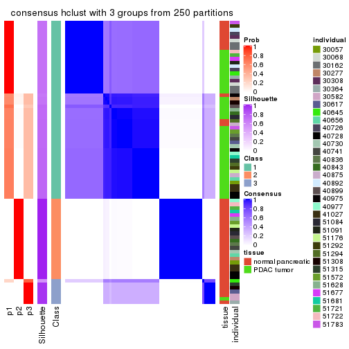
consensus_heatmap(res, k = 4)
consensus_heatmap(res, k = 5)
consensus_heatmap(res, k = 6)
Heatmaps for the membership of samples in all partitions to see how consistent they are:
membership_heatmap(res, k = 2)
membership_heatmap(res, k = 3)
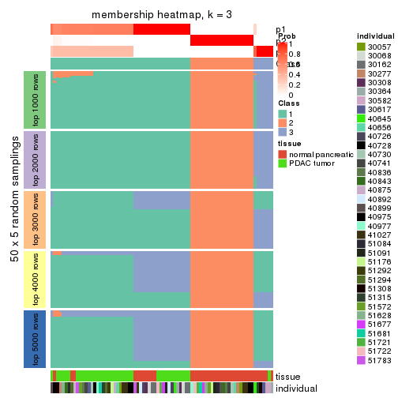
membership_heatmap(res, k = 4)
membership_heatmap(res, k = 5)

membership_heatmap(res, k = 6)
As soon as we have had the classes for columns, we can look for signatures which are significantly different between classes which can be candidate marks for certain classes. Following are the heatmaps for signatures.
Signature heatmaps where rows are scaled:
get_signatures(res, k = 2)
get_signatures(res, k = 3)
get_signatures(res, k = 4)
get_signatures(res, k = 5)
get_signatures(res, k = 6)
Signature heatmaps where rows are not scaled:
get_signatures(res, k = 2, scale_rows = FALSE)
get_signatures(res, k = 3, scale_rows = FALSE)
get_signatures(res, k = 4, scale_rows = FALSE)
get_signatures(res, k = 5, scale_rows = FALSE)
get_signatures(res, k = 6, scale_rows = FALSE)
Compare the overlap of signatures from different k:
compare_signatures(res)

get_signature() returns a data frame invisibly. TO get the list of signatures, the function
call should be assigned to a variable explicitly. In following code, if plot argument is set
to FALSE, no heatmap is plotted while only the differential analysis is performed.
# code only for demonstration
tb = get_signature(res, k = ..., plot = FALSE)
An example of the output of tb is:
#> which_row fdr mean_1 mean_2 scaled_mean_1 scaled_mean_2 km
#> 1 38 0.042760348 8.373488 9.131774 -0.5533452 0.5164555 1
#> 2 40 0.018707592 7.106213 8.469186 -0.6173731 0.5762149 1
#> 3 55 0.019134737 10.221463 11.207825 -0.6159697 0.5749050 1
#> 4 59 0.006059896 5.921854 7.869574 -0.6899429 0.6439467 1
#> 5 60 0.018055526 8.928898 10.211722 -0.6204761 0.5791110 1
#> 6 98 0.009384629 15.714769 14.887706 0.6635654 -0.6193277 2
...
The columns in tb are:
which_row: row indices corresponding to the input matrix.fdr: FDR for the differential test. mean_x: The mean value in group x.scaled_mean_x: The mean value in group x after rows are scaled.km: Row groups if k-means clustering is applied to rows.UMAP plot which shows how samples are separated.
dimension_reduction(res, k = 2, method = "UMAP")
dimension_reduction(res, k = 3, method = "UMAP")
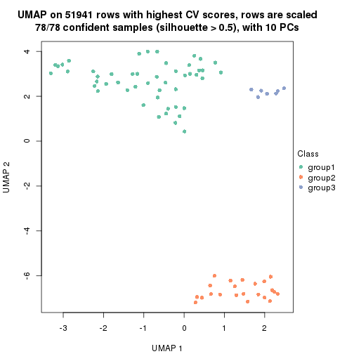
dimension_reduction(res, k = 4, method = "UMAP")
dimension_reduction(res, k = 5, method = "UMAP")
dimension_reduction(res, k = 6, method = "UMAP")
Following heatmap shows how subgroups are split when increasing k:
collect_classes(res)
Test correlation between subgroups and known annotations. If the known annotation is numeric, one-way ANOVA test is applied, and if the known annotation is discrete, chi-squared contingency table test is applied.
test_to_known_factors(res)
#> n tissue(p) individual(p) k
#> CV:hclust 78 1.26e-07 0.927 2
#> CV:hclust 78 1.65e-09 0.557 3
#> CV:hclust 77 1.79e-09 0.135 4
#> CV:hclust 78 2.53e-09 0.238 5
#> CV:hclust 77 4.21e-09 0.105 6
If matrix rows can be associated to genes, consider to use functional_enrichment(res,
...) to perform function enrichment for the signature genes. See this vignette for more detailed explanations.
The object with results only for a single top-value method and a single partition method can be extracted as:
res = res_list["CV", "kmeans"]
# you can also extract it by
# res = res_list["CV:kmeans"]
A summary of res and all the functions that can be applied to it:
res
#> A 'ConsensusPartition' object with k = 2, 3, 4, 5, 6.
#> On a matrix with 51941 rows and 78 columns.
#> Top rows (1000, 2000, 3000, 4000, 5000) are extracted by 'CV' method.
#> Subgroups are detected by 'kmeans' method.
#> Performed in total 1250 partitions by row resampling.
#> Best k for subgroups seems to be 2.
#>
#> Following methods can be applied to this 'ConsensusPartition' object:
#> [1] "cola_report" "collect_classes" "collect_plots"
#> [4] "collect_stats" "colnames" "compare_signatures"
#> [7] "consensus_heatmap" "dimension_reduction" "functional_enrichment"
#> [10] "get_anno_col" "get_anno" "get_classes"
#> [13] "get_consensus" "get_matrix" "get_membership"
#> [16] "get_param" "get_signatures" "get_stats"
#> [19] "is_best_k" "is_stable_k" "membership_heatmap"
#> [22] "ncol" "nrow" "plot_ecdf"
#> [25] "rownames" "select_partition_number" "show"
#> [28] "suggest_best_k" "test_to_known_factors"
collect_plots() function collects all the plots made from res for all k (number of partitions)
into one single page to provide an easy and fast comparison between different k.
collect_plots(res)
The plots are:
k and the heatmap of
predicted classes for each k.k.k.k.All the plots in panels can be made by individual functions and they are plotted later in this section.
select_partition_number() produces several plots showing different
statistics for choosing “optimized” k. There are following statistics:
k;k, the area increased is defined as \(A_k - A_{k-1}\).The detailed explanations of these statistics can be found in the cola vignette.
Generally speaking, lower PAC score, higher mean silhouette score or higher
concordance corresponds to better partition. Rand index and Jaccard index
measure how similar the current partition is compared to partition with k-1.
If they are too similar, we won't accept k is better than k-1.
select_partition_number(res)

The numeric values for all these statistics can be obtained by get_stats().
get_stats(res)
#> k 1-PAC mean_silhouette concordance area_increased Rand Jaccard
#> 2 2 1.000 0.993 0.992 0.4195 0.579 0.579
#> 3 3 0.680 0.901 0.881 0.4808 0.767 0.597
#> 4 4 0.829 0.842 0.899 0.1573 0.935 0.811
#> 5 5 0.825 0.847 0.861 0.0735 0.925 0.735
#> 6 6 0.801 0.788 0.853 0.0485 0.966 0.842
suggest_best_k() suggests the best \(k\) based on these statistics. The rules are as follows:
suggest_best_k(res)
#> [1] 2
Following shows the table of the partitions (You need to click the show/hide
code output link to see it). The membership matrix (columns with name p*)
is inferred by
clue::cl_consensus()
function with the SE method. Basically the value in the membership matrix
represents the probability to belong to a certain group. The finall class
label for an item is determined with the group with highest probability it
belongs to.
In get_classes() function, the entropy is calculated from the membership
matrix and the silhouette score is calculated from the consensus matrix.
cbind(get_classes(res, k = 2), get_membership(res, k = 2))
#> class entropy silhouette p1 p2
#> GSM388115 1 0.0000 0.995 1.000 0.000
#> GSM388116 1 0.0000 0.995 1.000 0.000
#> GSM388117 1 0.0000 0.995 1.000 0.000
#> GSM388118 1 0.0000 0.995 1.000 0.000
#> GSM388119 1 0.0000 0.995 1.000 0.000
#> GSM388120 1 0.0000 0.995 1.000 0.000
#> GSM388121 1 0.0000 0.995 1.000 0.000
#> GSM388122 1 0.0000 0.995 1.000 0.000
#> GSM388123 1 0.0000 0.995 1.000 0.000
#> GSM388124 1 0.0000 0.995 1.000 0.000
#> GSM388125 1 0.0000 0.995 1.000 0.000
#> GSM388126 1 0.1184 0.982 0.984 0.016
#> GSM388127 1 0.0000 0.995 1.000 0.000
#> GSM388128 1 0.0000 0.995 1.000 0.000
#> GSM388129 1 0.0000 0.995 1.000 0.000
#> GSM388130 1 0.0000 0.995 1.000 0.000
#> GSM388131 1 0.0000 0.995 1.000 0.000
#> GSM388132 1 0.0000 0.995 1.000 0.000
#> GSM388133 1 0.0000 0.995 1.000 0.000
#> GSM388134 1 0.0000 0.995 1.000 0.000
#> GSM388135 1 0.0000 0.995 1.000 0.000
#> GSM388136 1 0.0000 0.995 1.000 0.000
#> GSM388137 1 0.0000 0.995 1.000 0.000
#> GSM388140 1 0.0000 0.995 1.000 0.000
#> GSM388141 1 0.0000 0.995 1.000 0.000
#> GSM388142 1 0.0000 0.995 1.000 0.000
#> GSM388143 1 0.0000 0.995 1.000 0.000
#> GSM388144 1 0.0000 0.995 1.000 0.000
#> GSM388145 1 0.6623 0.789 0.828 0.172
#> GSM388146 1 0.0000 0.995 1.000 0.000
#> GSM388147 1 0.0000 0.995 1.000 0.000
#> GSM388148 1 0.0000 0.995 1.000 0.000
#> GSM388149 1 0.0000 0.995 1.000 0.000
#> GSM388150 1 0.0000 0.995 1.000 0.000
#> GSM388151 1 0.0000 0.995 1.000 0.000
#> GSM388152 1 0.0000 0.995 1.000 0.000
#> GSM388153 1 0.0000 0.995 1.000 0.000
#> GSM388139 1 0.0000 0.995 1.000 0.000
#> GSM388138 1 0.0000 0.995 1.000 0.000
#> GSM388076 1 0.0000 0.995 1.000 0.000
#> GSM388077 1 0.0000 0.995 1.000 0.000
#> GSM388078 2 0.1184 1.000 0.016 0.984
#> GSM388079 2 0.1184 1.000 0.016 0.984
#> GSM388080 2 0.1184 1.000 0.016 0.984
#> GSM388081 2 0.1184 1.000 0.016 0.984
#> GSM388082 2 0.1184 1.000 0.016 0.984
#> GSM388083 1 0.0000 0.995 1.000 0.000
#> GSM388084 2 0.1184 1.000 0.016 0.984
#> GSM388085 1 0.0000 0.995 1.000 0.000
#> GSM388086 1 0.1184 0.982 0.984 0.016
#> GSM388087 1 0.1184 0.982 0.984 0.016
#> GSM388088 1 0.1184 0.982 0.984 0.016
#> GSM388089 1 0.0376 0.992 0.996 0.004
#> GSM388090 2 0.1184 1.000 0.016 0.984
#> GSM388091 1 0.0000 0.995 1.000 0.000
#> GSM388092 2 0.1184 1.000 0.016 0.984
#> GSM388093 2 0.1184 1.000 0.016 0.984
#> GSM388094 2 0.1184 1.000 0.016 0.984
#> GSM388095 2 0.1184 1.000 0.016 0.984
#> GSM388096 1 0.0000 0.995 1.000 0.000
#> GSM388097 1 0.0000 0.995 1.000 0.000
#> GSM388098 2 0.1184 1.000 0.016 0.984
#> GSM388101 2 0.1184 1.000 0.016 0.984
#> GSM388102 2 0.1184 1.000 0.016 0.984
#> GSM388103 2 0.1184 1.000 0.016 0.984
#> GSM388104 1 0.0000 0.995 1.000 0.000
#> GSM388105 1 0.0000 0.995 1.000 0.000
#> GSM388106 1 0.1184 0.982 0.984 0.016
#> GSM388107 1 0.1184 0.982 0.984 0.016
#> GSM388108 2 0.1184 1.000 0.016 0.984
#> GSM388109 2 0.1184 1.000 0.016 0.984
#> GSM388110 2 0.1184 1.000 0.016 0.984
#> GSM388111 2 0.1184 1.000 0.016 0.984
#> GSM388112 2 0.1184 1.000 0.016 0.984
#> GSM388113 2 0.1184 1.000 0.016 0.984
#> GSM388114 1 0.0000 0.995 1.000 0.000
#> GSM388100 2 0.1184 1.000 0.016 0.984
#> GSM388099 2 0.1184 1.000 0.016 0.984
cbind(get_classes(res, k = 3), get_membership(res, k = 3))
#> class entropy silhouette p1 p2 p3
#> GSM388115 3 0.550 0.963 0.292 0.000 0.708
#> GSM388116 3 0.550 0.963 0.292 0.000 0.708
#> GSM388117 1 0.000 0.886 1.000 0.000 0.000
#> GSM388118 1 0.000 0.886 1.000 0.000 0.000
#> GSM388119 1 0.000 0.886 1.000 0.000 0.000
#> GSM388120 1 0.000 0.886 1.000 0.000 0.000
#> GSM388121 1 0.000 0.886 1.000 0.000 0.000
#> GSM388122 3 0.562 0.950 0.308 0.000 0.692
#> GSM388123 1 0.000 0.886 1.000 0.000 0.000
#> GSM388124 3 0.543 0.959 0.284 0.000 0.716
#> GSM388125 3 0.550 0.963 0.292 0.000 0.708
#> GSM388126 1 0.610 0.572 0.608 0.000 0.392
#> GSM388127 1 0.000 0.886 1.000 0.000 0.000
#> GSM388128 3 0.550 0.963 0.292 0.000 0.708
#> GSM388129 1 0.000 0.886 1.000 0.000 0.000
#> GSM388130 3 0.550 0.963 0.292 0.000 0.708
#> GSM388131 1 0.000 0.886 1.000 0.000 0.000
#> GSM388132 1 0.000 0.886 1.000 0.000 0.000
#> GSM388133 1 0.000 0.886 1.000 0.000 0.000
#> GSM388134 1 0.000 0.886 1.000 0.000 0.000
#> GSM388135 1 0.000 0.886 1.000 0.000 0.000
#> GSM388136 3 0.623 0.790 0.436 0.000 0.564
#> GSM388137 1 0.280 0.754 0.908 0.000 0.092
#> GSM388140 1 0.000 0.886 1.000 0.000 0.000
#> GSM388141 3 0.611 0.848 0.396 0.000 0.604
#> GSM388142 1 0.000 0.886 1.000 0.000 0.000
#> GSM388143 1 0.000 0.886 1.000 0.000 0.000
#> GSM388144 1 0.000 0.886 1.000 0.000 0.000
#> GSM388145 1 0.319 0.761 0.888 0.112 0.000
#> GSM388146 1 0.000 0.886 1.000 0.000 0.000
#> GSM388147 1 0.000 0.886 1.000 0.000 0.000
#> GSM388148 1 0.000 0.886 1.000 0.000 0.000
#> GSM388149 3 0.583 0.918 0.340 0.000 0.660
#> GSM388150 1 0.000 0.886 1.000 0.000 0.000
#> GSM388151 3 0.550 0.963 0.292 0.000 0.708
#> GSM388152 3 0.623 0.790 0.436 0.000 0.564
#> GSM388153 1 0.000 0.886 1.000 0.000 0.000
#> GSM388139 1 0.000 0.886 1.000 0.000 0.000
#> GSM388138 1 0.000 0.886 1.000 0.000 0.000
#> GSM388076 3 0.543 0.959 0.284 0.000 0.716
#> GSM388077 3 0.543 0.959 0.284 0.000 0.716
#> GSM388078 2 0.000 1.000 0.000 1.000 0.000
#> GSM388079 2 0.000 1.000 0.000 1.000 0.000
#> GSM388080 2 0.000 1.000 0.000 1.000 0.000
#> GSM388081 2 0.000 1.000 0.000 1.000 0.000
#> GSM388082 2 0.000 1.000 0.000 1.000 0.000
#> GSM388083 3 0.543 0.959 0.284 0.000 0.716
#> GSM388084 2 0.000 1.000 0.000 1.000 0.000
#> GSM388085 3 0.550 0.963 0.292 0.000 0.708
#> GSM388086 1 0.610 0.572 0.608 0.000 0.392
#> GSM388087 1 0.610 0.572 0.608 0.000 0.392
#> GSM388088 1 0.610 0.572 0.608 0.000 0.392
#> GSM388089 1 0.579 0.615 0.668 0.000 0.332
#> GSM388090 2 0.000 1.000 0.000 1.000 0.000
#> GSM388091 3 0.550 0.963 0.292 0.000 0.708
#> GSM388092 2 0.000 1.000 0.000 1.000 0.000
#> GSM388093 2 0.000 1.000 0.000 1.000 0.000
#> GSM388094 2 0.000 1.000 0.000 1.000 0.000
#> GSM388095 2 0.000 1.000 0.000 1.000 0.000
#> GSM388096 1 0.000 0.886 1.000 0.000 0.000
#> GSM388097 3 0.550 0.963 0.292 0.000 0.708
#> GSM388098 2 0.000 1.000 0.000 1.000 0.000
#> GSM388101 2 0.000 1.000 0.000 1.000 0.000
#> GSM388102 2 0.000 1.000 0.000 1.000 0.000
#> GSM388103 2 0.000 1.000 0.000 1.000 0.000
#> GSM388104 3 0.543 0.959 0.284 0.000 0.716
#> GSM388105 1 0.000 0.886 1.000 0.000 0.000
#> GSM388106 1 0.610 0.572 0.608 0.000 0.392
#> GSM388107 1 0.610 0.572 0.608 0.000 0.392
#> GSM388108 2 0.000 1.000 0.000 1.000 0.000
#> GSM388109 2 0.000 1.000 0.000 1.000 0.000
#> GSM388110 2 0.000 1.000 0.000 1.000 0.000
#> GSM388111 2 0.000 1.000 0.000 1.000 0.000
#> GSM388112 2 0.000 1.000 0.000 1.000 0.000
#> GSM388113 2 0.000 1.000 0.000 1.000 0.000
#> GSM388114 3 0.543 0.959 0.284 0.000 0.716
#> GSM388100 2 0.000 1.000 0.000 1.000 0.000
#> GSM388099 2 0.000 1.000 0.000 1.000 0.000
cbind(get_classes(res, k = 4), get_membership(res, k = 4))
#> class entropy silhouette p1 p2 p3 p4
#> GSM388115 3 0.2266 0.847 0.004 0.000 0.912 0.084
#> GSM388116 3 0.2266 0.847 0.004 0.000 0.912 0.084
#> GSM388117 1 0.4103 0.784 0.744 0.000 0.000 0.256
#> GSM388118 1 0.4103 0.784 0.744 0.000 0.000 0.256
#> GSM388119 1 0.4103 0.784 0.744 0.000 0.000 0.256
#> GSM388120 1 0.4103 0.784 0.744 0.000 0.000 0.256
#> GSM388121 1 0.4134 0.782 0.740 0.000 0.000 0.260
#> GSM388122 3 0.1118 0.845 0.036 0.000 0.964 0.000
#> GSM388123 1 0.1940 0.724 0.924 0.000 0.076 0.000
#> GSM388124 3 0.2334 0.845 0.004 0.000 0.908 0.088
#> GSM388125 3 0.0188 0.852 0.004 0.000 0.996 0.000
#> GSM388126 4 0.3105 0.956 0.120 0.000 0.012 0.868
#> GSM388127 1 0.0188 0.801 0.996 0.000 0.004 0.000
#> GSM388128 3 0.1118 0.845 0.036 0.000 0.964 0.000
#> GSM388129 1 0.3975 0.789 0.760 0.000 0.000 0.240
#> GSM388130 3 0.1118 0.845 0.036 0.000 0.964 0.000
#> GSM388131 1 0.0188 0.801 0.996 0.000 0.004 0.000
#> GSM388132 1 0.0188 0.804 0.996 0.000 0.000 0.004
#> GSM388133 1 0.0188 0.801 0.996 0.000 0.004 0.000
#> GSM388134 1 0.0188 0.801 0.996 0.000 0.004 0.000
#> GSM388135 1 0.2081 0.807 0.916 0.000 0.000 0.084
#> GSM388136 3 0.5693 0.105 0.472 0.000 0.504 0.024
#> GSM388137 1 0.5825 0.694 0.664 0.000 0.068 0.268
#> GSM388140 1 0.1022 0.803 0.968 0.000 0.000 0.032
#> GSM388141 3 0.5510 0.387 0.376 0.000 0.600 0.024
#> GSM388142 1 0.4103 0.784 0.744 0.000 0.000 0.256
#> GSM388143 1 0.4103 0.784 0.744 0.000 0.000 0.256
#> GSM388144 1 0.4103 0.784 0.744 0.000 0.000 0.256
#> GSM388145 1 0.0188 0.800 0.996 0.004 0.000 0.000
#> GSM388146 1 0.4103 0.784 0.744 0.000 0.000 0.256
#> GSM388147 1 0.0336 0.805 0.992 0.000 0.000 0.008
#> GSM388148 1 0.0188 0.804 0.996 0.000 0.000 0.004
#> GSM388149 3 0.4267 0.685 0.188 0.000 0.788 0.024
#> GSM388150 1 0.3873 0.789 0.772 0.000 0.000 0.228
#> GSM388151 3 0.0188 0.852 0.004 0.000 0.996 0.000
#> GSM388152 3 0.5678 0.176 0.452 0.000 0.524 0.024
#> GSM388153 1 0.0188 0.801 0.996 0.000 0.004 0.000
#> GSM388139 1 0.4103 0.784 0.744 0.000 0.000 0.256
#> GSM388138 1 0.4134 0.782 0.740 0.000 0.000 0.260
#> GSM388076 3 0.2466 0.842 0.004 0.000 0.900 0.096
#> GSM388077 3 0.2466 0.842 0.004 0.000 0.900 0.096
#> GSM388078 2 0.0592 0.981 0.000 0.984 0.000 0.016
#> GSM388079 2 0.0592 0.981 0.000 0.984 0.000 0.016
#> GSM388080 2 0.0000 0.983 0.000 1.000 0.000 0.000
#> GSM388081 2 0.0000 0.983 0.000 1.000 0.000 0.000
#> GSM388082 2 0.0592 0.981 0.000 0.984 0.000 0.016
#> GSM388083 3 0.2401 0.844 0.004 0.000 0.904 0.092
#> GSM388084 2 0.0000 0.983 0.000 1.000 0.000 0.000
#> GSM388085 3 0.0188 0.852 0.004 0.000 0.996 0.000
#> GSM388086 4 0.3224 0.960 0.120 0.000 0.016 0.864
#> GSM388087 4 0.3224 0.960 0.120 0.000 0.016 0.864
#> GSM388088 4 0.3224 0.960 0.120 0.000 0.016 0.864
#> GSM388089 4 0.4776 0.706 0.272 0.000 0.016 0.712
#> GSM388090 2 0.0000 0.983 0.000 1.000 0.000 0.000
#> GSM388091 3 0.1118 0.845 0.036 0.000 0.964 0.000
#> GSM388092 2 0.0592 0.981 0.000 0.984 0.000 0.016
#> GSM388093 2 0.0592 0.981 0.000 0.984 0.000 0.016
#> GSM388094 2 0.0000 0.983 0.000 1.000 0.000 0.000
#> GSM388095 2 0.0000 0.983 0.000 1.000 0.000 0.000
#> GSM388096 1 0.0921 0.780 0.972 0.000 0.028 0.000
#> GSM388097 3 0.0188 0.852 0.004 0.000 0.996 0.000
#> GSM388098 2 0.0592 0.981 0.000 0.984 0.000 0.016
#> GSM388101 2 0.0000 0.983 0.000 1.000 0.000 0.000
#> GSM388102 2 0.0000 0.983 0.000 1.000 0.000 0.000
#> GSM388103 2 0.0592 0.981 0.000 0.984 0.000 0.016
#> GSM388104 3 0.2401 0.844 0.004 0.000 0.904 0.092
#> GSM388105 1 0.0188 0.801 0.996 0.000 0.004 0.000
#> GSM388106 4 0.3224 0.960 0.120 0.000 0.016 0.864
#> GSM388107 4 0.3224 0.960 0.120 0.000 0.016 0.864
#> GSM388108 2 0.0592 0.981 0.000 0.984 0.000 0.016
#> GSM388109 2 0.0000 0.983 0.000 1.000 0.000 0.000
#> GSM388110 2 0.0592 0.981 0.000 0.984 0.000 0.016
#> GSM388111 2 0.0188 0.981 0.000 0.996 0.004 0.000
#> GSM388112 2 0.0000 0.983 0.000 1.000 0.000 0.000
#> GSM388113 2 0.0592 0.981 0.000 0.984 0.000 0.016
#> GSM388114 3 0.2401 0.844 0.004 0.000 0.904 0.092
#> GSM388100 2 0.0000 0.983 0.000 1.000 0.000 0.000
#> GSM388099 2 0.4399 0.715 0.224 0.760 0.000 0.016
cbind(get_classes(res, k = 5), get_membership(res, k = 5))
#> class entropy silhouette p1 p2 p3 p4 p5
#> GSM388115 3 0.4151 0.757 0.004 0.000 0.784 0.060 0.152
#> GSM388116 3 0.4151 0.757 0.004 0.000 0.784 0.060 0.152
#> GSM388117 1 0.0000 0.932 1.000 0.000 0.000 0.000 0.000
#> GSM388118 1 0.0000 0.932 1.000 0.000 0.000 0.000 0.000
#> GSM388119 1 0.0000 0.932 1.000 0.000 0.000 0.000 0.000
#> GSM388120 1 0.0000 0.932 1.000 0.000 0.000 0.000 0.000
#> GSM388121 1 0.0000 0.932 1.000 0.000 0.000 0.000 0.000
#> GSM388122 3 0.1717 0.775 0.004 0.000 0.936 0.008 0.052
#> GSM388123 5 0.5059 0.757 0.192 0.000 0.112 0.000 0.696
#> GSM388124 3 0.4816 0.739 0.004 0.000 0.732 0.096 0.168
#> GSM388125 3 0.0162 0.784 0.004 0.000 0.996 0.000 0.000
#> GSM388126 4 0.2930 0.964 0.164 0.000 0.004 0.832 0.000
#> GSM388127 5 0.3990 0.894 0.308 0.000 0.004 0.000 0.688
#> GSM388128 3 0.1717 0.775 0.004 0.000 0.936 0.008 0.052
#> GSM388129 1 0.0794 0.905 0.972 0.000 0.000 0.000 0.028
#> GSM388130 3 0.1717 0.775 0.004 0.000 0.936 0.008 0.052
#> GSM388131 5 0.4142 0.894 0.308 0.000 0.004 0.004 0.684
#> GSM388132 5 0.4045 0.851 0.356 0.000 0.000 0.000 0.644
#> GSM388133 5 0.4009 0.893 0.312 0.000 0.000 0.004 0.684
#> GSM388134 5 0.3990 0.894 0.308 0.000 0.004 0.000 0.688
#> GSM388135 1 0.1892 0.821 0.916 0.000 0.000 0.004 0.080
#> GSM388136 3 0.5583 0.391 0.352 0.000 0.572 0.004 0.072
#> GSM388137 1 0.3129 0.772 0.872 0.000 0.076 0.020 0.032
#> GSM388140 5 0.4045 0.851 0.356 0.000 0.000 0.000 0.644
#> GSM388141 3 0.5294 0.455 0.332 0.000 0.608 0.004 0.056
#> GSM388142 1 0.0000 0.932 1.000 0.000 0.000 0.000 0.000
#> GSM388143 1 0.0000 0.932 1.000 0.000 0.000 0.000 0.000
#> GSM388144 1 0.0000 0.932 1.000 0.000 0.000 0.000 0.000
#> GSM388145 5 0.4240 0.889 0.304 0.004 0.000 0.008 0.684
#> GSM388146 1 0.0000 0.932 1.000 0.000 0.000 0.000 0.000
#> GSM388147 1 0.4359 -0.272 0.584 0.000 0.000 0.004 0.412
#> GSM388148 5 0.4045 0.851 0.356 0.000 0.000 0.000 0.644
#> GSM388149 3 0.5196 0.500 0.308 0.000 0.632 0.004 0.056
#> GSM388150 1 0.0671 0.915 0.980 0.000 0.000 0.004 0.016
#> GSM388151 3 0.0162 0.784 0.004 0.000 0.996 0.000 0.000
#> GSM388152 3 0.5421 0.409 0.352 0.000 0.584 0.004 0.060
#> GSM388153 5 0.3990 0.894 0.308 0.000 0.004 0.000 0.688
#> GSM388139 1 0.0000 0.932 1.000 0.000 0.000 0.000 0.000
#> GSM388138 1 0.0000 0.932 1.000 0.000 0.000 0.000 0.000
#> GSM388076 3 0.4953 0.722 0.000 0.000 0.696 0.088 0.216
#> GSM388077 3 0.4953 0.722 0.000 0.000 0.696 0.088 0.216
#> GSM388078 2 0.1059 0.979 0.000 0.968 0.004 0.008 0.020
#> GSM388079 2 0.1059 0.979 0.000 0.968 0.004 0.008 0.020
#> GSM388080 2 0.0000 0.980 0.000 1.000 0.000 0.000 0.000
#> GSM388081 2 0.0000 0.980 0.000 1.000 0.000 0.000 0.000
#> GSM388082 2 0.1059 0.979 0.000 0.968 0.004 0.008 0.020
#> GSM388083 3 0.4797 0.735 0.000 0.000 0.724 0.104 0.172
#> GSM388084 2 0.0000 0.980 0.000 1.000 0.000 0.000 0.000
#> GSM388085 3 0.0162 0.784 0.004 0.000 0.996 0.000 0.000
#> GSM388086 4 0.2930 0.964 0.164 0.000 0.004 0.832 0.000
#> GSM388087 4 0.2930 0.964 0.164 0.000 0.004 0.832 0.000
#> GSM388088 4 0.2930 0.964 0.164 0.000 0.004 0.832 0.000
#> GSM388089 4 0.4882 0.728 0.328 0.000 0.004 0.636 0.032
#> GSM388090 2 0.1041 0.967 0.000 0.964 0.000 0.032 0.004
#> GSM388091 3 0.1717 0.775 0.004 0.000 0.936 0.008 0.052
#> GSM388092 2 0.1901 0.964 0.000 0.932 0.004 0.040 0.024
#> GSM388093 2 0.1901 0.964 0.000 0.932 0.004 0.040 0.024
#> GSM388094 2 0.0000 0.980 0.000 1.000 0.000 0.000 0.000
#> GSM388095 2 0.0000 0.980 0.000 1.000 0.000 0.000 0.000
#> GSM388096 5 0.4491 0.868 0.280 0.000 0.024 0.004 0.692
#> GSM388097 3 0.0613 0.784 0.004 0.000 0.984 0.004 0.008
#> GSM388098 2 0.1059 0.979 0.000 0.968 0.004 0.008 0.020
#> GSM388101 2 0.0000 0.980 0.000 1.000 0.000 0.000 0.000
#> GSM388102 2 0.1041 0.967 0.000 0.964 0.000 0.032 0.004
#> GSM388103 2 0.1059 0.979 0.000 0.968 0.004 0.008 0.020
#> GSM388104 3 0.4797 0.735 0.000 0.000 0.724 0.104 0.172
#> GSM388105 5 0.4142 0.894 0.308 0.000 0.004 0.004 0.684
#> GSM388106 4 0.2930 0.964 0.164 0.000 0.004 0.832 0.000
#> GSM388107 4 0.2930 0.964 0.164 0.000 0.004 0.832 0.000
#> GSM388108 2 0.1059 0.979 0.000 0.968 0.004 0.008 0.020
#> GSM388109 2 0.0000 0.980 0.000 1.000 0.000 0.000 0.000
#> GSM388110 2 0.1059 0.979 0.000 0.968 0.004 0.008 0.020
#> GSM388111 2 0.0609 0.972 0.000 0.980 0.000 0.000 0.020
#> GSM388112 2 0.0000 0.980 0.000 1.000 0.000 0.000 0.000
#> GSM388113 2 0.1173 0.978 0.000 0.964 0.004 0.012 0.020
#> GSM388114 3 0.4797 0.735 0.000 0.000 0.724 0.104 0.172
#> GSM388100 2 0.0609 0.975 0.000 0.980 0.000 0.020 0.000
#> GSM388099 5 0.4731 0.352 0.000 0.328 0.000 0.032 0.640
cbind(get_classes(res, k = 6), get_membership(res, k = 6))
#> class entropy silhouette p1 p2 p3 p4 p5 p6
#> GSM388115 3 0.5086 -0.562 0.000 0.000 0.572 0.020 0.048 0.360
#> GSM388116 3 0.5086 -0.562 0.000 0.000 0.572 0.020 0.048 0.360
#> GSM388117 1 0.0000 0.957 1.000 0.000 0.000 0.000 0.000 0.000
#> GSM388118 1 0.0000 0.957 1.000 0.000 0.000 0.000 0.000 0.000
#> GSM388119 1 0.0260 0.957 0.992 0.000 0.000 0.000 0.000 0.008
#> GSM388120 1 0.0260 0.957 0.992 0.000 0.000 0.000 0.000 0.008
#> GSM388121 1 0.1010 0.946 0.960 0.000 0.000 0.004 0.000 0.036
#> GSM388122 3 0.2252 0.586 0.000 0.000 0.908 0.020 0.044 0.028
#> GSM388123 5 0.2134 0.882 0.052 0.000 0.044 0.000 0.904 0.000
#> GSM388124 3 0.3866 -0.932 0.000 0.000 0.516 0.000 0.000 0.484
#> GSM388125 3 0.0000 0.575 0.000 0.000 1.000 0.000 0.000 0.000
#> GSM388126 4 0.1863 0.961 0.104 0.000 0.000 0.896 0.000 0.000
#> GSM388127 5 0.2408 0.928 0.108 0.000 0.004 0.000 0.876 0.012
#> GSM388128 3 0.1693 0.587 0.000 0.000 0.932 0.020 0.044 0.004
#> GSM388129 1 0.2134 0.905 0.904 0.000 0.000 0.000 0.044 0.052
#> GSM388130 3 0.1693 0.587 0.000 0.000 0.932 0.020 0.044 0.004
#> GSM388131 5 0.2812 0.924 0.104 0.000 0.008 0.000 0.860 0.028
#> GSM388132 5 0.2704 0.915 0.140 0.000 0.000 0.000 0.844 0.016
#> GSM388133 5 0.2747 0.925 0.108 0.000 0.004 0.000 0.860 0.028
#> GSM388134 5 0.2053 0.928 0.108 0.000 0.004 0.000 0.888 0.000
#> GSM388135 1 0.1524 0.905 0.932 0.000 0.000 0.000 0.060 0.008
#> GSM388136 3 0.5167 0.486 0.188 0.000 0.684 0.000 0.064 0.064
#> GSM388137 1 0.4440 0.757 0.780 0.000 0.088 0.016 0.036 0.080
#> GSM388140 5 0.2402 0.915 0.140 0.000 0.000 0.000 0.856 0.004
#> GSM388141 3 0.4695 0.489 0.224 0.000 0.696 0.000 0.028 0.052
#> GSM388142 1 0.0632 0.953 0.976 0.000 0.000 0.000 0.000 0.024
#> GSM388143 1 0.0000 0.957 1.000 0.000 0.000 0.000 0.000 0.000
#> GSM388144 1 0.0547 0.954 0.980 0.000 0.000 0.000 0.000 0.020
#> GSM388145 5 0.2764 0.911 0.100 0.000 0.000 0.008 0.864 0.028
#> GSM388146 1 0.0260 0.956 0.992 0.000 0.000 0.000 0.000 0.008
#> GSM388147 5 0.4040 0.735 0.280 0.000 0.000 0.000 0.688 0.032
#> GSM388148 5 0.2402 0.915 0.140 0.000 0.000 0.000 0.856 0.004
#> GSM388149 3 0.4701 0.492 0.216 0.000 0.700 0.000 0.028 0.056
#> GSM388150 1 0.0891 0.941 0.968 0.000 0.000 0.000 0.024 0.008
#> GSM388151 3 0.0000 0.575 0.000 0.000 1.000 0.000 0.000 0.000
#> GSM388152 3 0.4921 0.488 0.212 0.000 0.688 0.000 0.036 0.064
#> GSM388153 5 0.2053 0.928 0.108 0.000 0.004 0.000 0.888 0.000
#> GSM388139 1 0.0260 0.956 0.992 0.000 0.000 0.000 0.000 0.008
#> GSM388138 1 0.1226 0.944 0.952 0.000 0.000 0.004 0.004 0.040
#> GSM388076 6 0.4406 0.935 0.000 0.000 0.464 0.008 0.012 0.516
#> GSM388077 6 0.4406 0.935 0.000 0.000 0.464 0.008 0.012 0.516
#> GSM388078 2 0.1974 0.907 0.000 0.920 0.000 0.020 0.012 0.048
#> GSM388079 2 0.1974 0.907 0.000 0.920 0.000 0.020 0.012 0.048
#> GSM388080 2 0.0291 0.912 0.000 0.992 0.000 0.004 0.000 0.004
#> GSM388081 2 0.0291 0.912 0.000 0.992 0.000 0.004 0.000 0.004
#> GSM388082 2 0.1974 0.907 0.000 0.920 0.000 0.020 0.012 0.048
#> GSM388083 6 0.3868 0.956 0.000 0.000 0.492 0.000 0.000 0.508
#> GSM388084 2 0.0508 0.911 0.000 0.984 0.000 0.012 0.000 0.004
#> GSM388085 3 0.0000 0.575 0.000 0.000 1.000 0.000 0.000 0.000
#> GSM388086 4 0.1863 0.961 0.104 0.000 0.000 0.896 0.000 0.000
#> GSM388087 4 0.1863 0.961 0.104 0.000 0.000 0.896 0.000 0.000
#> GSM388088 4 0.1863 0.961 0.104 0.000 0.000 0.896 0.000 0.000
#> GSM388089 4 0.4986 0.721 0.260 0.000 0.000 0.648 0.016 0.076
#> GSM388090 2 0.4137 0.778 0.000 0.732 0.000 0.040 0.012 0.216
#> GSM388091 3 0.1693 0.587 0.000 0.000 0.932 0.020 0.044 0.004
#> GSM388092 2 0.4772 0.771 0.000 0.668 0.000 0.048 0.024 0.260
#> GSM388093 2 0.4772 0.771 0.000 0.668 0.000 0.048 0.024 0.260
#> GSM388094 2 0.0146 0.912 0.000 0.996 0.000 0.000 0.000 0.004
#> GSM388095 2 0.0146 0.912 0.000 0.996 0.000 0.000 0.000 0.004
#> GSM388096 5 0.2020 0.924 0.096 0.000 0.008 0.000 0.896 0.000
#> GSM388097 3 0.1148 0.566 0.000 0.000 0.960 0.020 0.016 0.004
#> GSM388098 2 0.2102 0.906 0.000 0.908 0.000 0.012 0.012 0.068
#> GSM388101 2 0.0146 0.912 0.000 0.996 0.000 0.000 0.000 0.004
#> GSM388102 2 0.4137 0.778 0.000 0.732 0.000 0.040 0.012 0.216
#> GSM388103 2 0.2102 0.906 0.000 0.908 0.000 0.012 0.012 0.068
#> GSM388104 6 0.3868 0.956 0.000 0.000 0.492 0.000 0.000 0.508
#> GSM388105 5 0.2812 0.924 0.104 0.000 0.008 0.000 0.860 0.028
#> GSM388106 4 0.1863 0.961 0.104 0.000 0.000 0.896 0.000 0.000
#> GSM388107 4 0.1863 0.961 0.104 0.000 0.000 0.896 0.000 0.000
#> GSM388108 2 0.2043 0.906 0.000 0.912 0.000 0.012 0.012 0.064
#> GSM388109 2 0.0363 0.912 0.000 0.988 0.000 0.000 0.000 0.012
#> GSM388110 2 0.1974 0.907 0.000 0.920 0.000 0.020 0.012 0.048
#> GSM388111 2 0.1409 0.899 0.000 0.948 0.000 0.012 0.008 0.032
#> GSM388112 2 0.0146 0.912 0.000 0.996 0.000 0.000 0.000 0.004
#> GSM388113 2 0.2815 0.893 0.000 0.864 0.000 0.028 0.012 0.096
#> GSM388114 6 0.3868 0.956 0.000 0.000 0.492 0.000 0.000 0.508
#> GSM388100 2 0.3385 0.819 0.000 0.788 0.000 0.032 0.000 0.180
#> GSM388099 5 0.5067 0.595 0.000 0.092 0.000 0.036 0.688 0.184
Heatmaps for the consensus matrix. It visualizes the probability of two samples to be in a same group.
consensus_heatmap(res, k = 2)
consensus_heatmap(res, k = 3)
consensus_heatmap(res, k = 4)
consensus_heatmap(res, k = 5)
consensus_heatmap(res, k = 6)
Heatmaps for the membership of samples in all partitions to see how consistent they are:
membership_heatmap(res, k = 2)
membership_heatmap(res, k = 3)
membership_heatmap(res, k = 4)
membership_heatmap(res, k = 5)
membership_heatmap(res, k = 6)
As soon as we have had the classes for columns, we can look for signatures which are significantly different between classes which can be candidate marks for certain classes. Following are the heatmaps for signatures.
Signature heatmaps where rows are scaled:
get_signatures(res, k = 2)
get_signatures(res, k = 3)
get_signatures(res, k = 4)
get_signatures(res, k = 5)
get_signatures(res, k = 6)
Signature heatmaps where rows are not scaled:
get_signatures(res, k = 2, scale_rows = FALSE)
get_signatures(res, k = 3, scale_rows = FALSE)
get_signatures(res, k = 4, scale_rows = FALSE)
get_signatures(res, k = 5, scale_rows = FALSE)

get_signatures(res, k = 6, scale_rows = FALSE)
Compare the overlap of signatures from different k:
compare_signatures(res)
get_signature() returns a data frame invisibly. TO get the list of signatures, the function
call should be assigned to a variable explicitly. In following code, if plot argument is set
to FALSE, no heatmap is plotted while only the differential analysis is performed.
# code only for demonstration
tb = get_signature(res, k = ..., plot = FALSE)
An example of the output of tb is:
#> which_row fdr mean_1 mean_2 scaled_mean_1 scaled_mean_2 km
#> 1 38 0.042760348 8.373488 9.131774 -0.5533452 0.5164555 1
#> 2 40 0.018707592 7.106213 8.469186 -0.6173731 0.5762149 1
#> 3 55 0.019134737 10.221463 11.207825 -0.6159697 0.5749050 1
#> 4 59 0.006059896 5.921854 7.869574 -0.6899429 0.6439467 1
#> 5 60 0.018055526 8.928898 10.211722 -0.6204761 0.5791110 1
#> 6 98 0.009384629 15.714769 14.887706 0.6635654 -0.6193277 2
...
The columns in tb are:
which_row: row indices corresponding to the input matrix.fdr: FDR for the differential test. mean_x: The mean value in group x.scaled_mean_x: The mean value in group x after rows are scaled.km: Row groups if k-means clustering is applied to rows.UMAP plot which shows how samples are separated.
dimension_reduction(res, k = 2, method = "UMAP")
dimension_reduction(res, k = 3, method = "UMAP")
dimension_reduction(res, k = 4, method = "UMAP")
dimension_reduction(res, k = 5, method = "UMAP")

dimension_reduction(res, k = 6, method = "UMAP")
Following heatmap shows how subgroups are split when increasing k:
collect_classes(res)
Test correlation between subgroups and known annotations. If the known annotation is numeric, one-way ANOVA test is applied, and if the known annotation is discrete, chi-squared contingency table test is applied.
test_to_known_factors(res)
#> n tissue(p) individual(p) k
#> CV:kmeans 78 4.68e-08 0.946 2
#> CV:kmeans 78 3.91e-08 0.298 3
#> CV:kmeans 75 3.22e-10 0.172 4
#> CV:kmeans 72 2.68e-09 0.231 5
#> CV:kmeans 71 1.12e-09 0.223 6
If matrix rows can be associated to genes, consider to use functional_enrichment(res,
...) to perform function enrichment for the signature genes. See this vignette for more detailed explanations.
The object with results only for a single top-value method and a single partition method can be extracted as:
res = res_list["CV", "skmeans"]
# you can also extract it by
# res = res_list["CV:skmeans"]
A summary of res and all the functions that can be applied to it:
res
#> A 'ConsensusPartition' object with k = 2, 3, 4, 5, 6.
#> On a matrix with 51941 rows and 78 columns.
#> Top rows (1000, 2000, 3000, 4000, 5000) are extracted by 'CV' method.
#> Subgroups are detected by 'skmeans' method.
#> Performed in total 1250 partitions by row resampling.
#> Best k for subgroups seems to be 6.
#>
#> Following methods can be applied to this 'ConsensusPartition' object:
#> [1] "cola_report" "collect_classes" "collect_plots"
#> [4] "collect_stats" "colnames" "compare_signatures"
#> [7] "consensus_heatmap" "dimension_reduction" "functional_enrichment"
#> [10] "get_anno_col" "get_anno" "get_classes"
#> [13] "get_consensus" "get_matrix" "get_membership"
#> [16] "get_param" "get_signatures" "get_stats"
#> [19] "is_best_k" "is_stable_k" "membership_heatmap"
#> [22] "ncol" "nrow" "plot_ecdf"
#> [25] "rownames" "select_partition_number" "show"
#> [28] "suggest_best_k" "test_to_known_factors"
collect_plots() function collects all the plots made from res for all k (number of partitions)
into one single page to provide an easy and fast comparison between different k.
collect_plots(res)
The plots are:
k and the heatmap of
predicted classes for each k.k.k.k.All the plots in panels can be made by individual functions and they are plotted later in this section.
select_partition_number() produces several plots showing different
statistics for choosing “optimized” k. There are following statistics:
k;k, the area increased is defined as \(A_k - A_{k-1}\).The detailed explanations of these statistics can be found in the cola vignette.
Generally speaking, lower PAC score, higher mean silhouette score or higher
concordance corresponds to better partition. Rand index and Jaccard index
measure how similar the current partition is compared to partition with k-1.
If they are too similar, we won't accept k is better than k-1.
select_partition_number(res)
The numeric values for all these statistics can be obtained by get_stats().
get_stats(res)
#> k 1-PAC mean_silhouette concordance area_increased Rand Jaccard
#> 2 2 0.921 0.946 0.978 0.4759 0.527 0.527
#> 3 3 0.805 0.819 0.919 0.4174 0.737 0.528
#> 4 4 1.000 0.969 0.979 0.0764 0.946 0.835
#> 5 5 1.000 0.971 0.988 0.0748 0.928 0.747
#> 6 6 0.926 0.908 0.909 0.0317 0.968 0.855
suggest_best_k() suggests the best \(k\) based on these statistics. The rules are as follows:
suggest_best_k(res)
#> [1] 6
#> attr(,"optional")
#> [1] 2 4 5
There is also optional best \(k\) = 2 4 5 that is worth to check.
Following shows the table of the partitions (You need to click the show/hide
code output link to see it). The membership matrix (columns with name p*)
is inferred by
clue::cl_consensus()
function with the SE method. Basically the value in the membership matrix
represents the probability to belong to a certain group. The finall class
label for an item is determined with the group with highest probability it
belongs to.
In get_classes() function, the entropy is calculated from the membership
matrix and the silhouette score is calculated from the consensus matrix.
cbind(get_classes(res, k = 2), get_membership(res, k = 2))
#> class entropy silhouette p1 p2
#> GSM388115 1 0.000 0.978 1.000 0.000
#> GSM388116 1 0.000 0.978 1.000 0.000
#> GSM388117 1 0.000 0.978 1.000 0.000
#> GSM388118 1 0.000 0.978 1.000 0.000
#> GSM388119 1 0.000 0.978 1.000 0.000
#> GSM388120 1 0.000 0.978 1.000 0.000
#> GSM388121 1 0.000 0.978 1.000 0.000
#> GSM388122 1 0.000 0.978 1.000 0.000
#> GSM388123 1 0.983 0.246 0.576 0.424
#> GSM388124 1 0.000 0.978 1.000 0.000
#> GSM388125 1 0.000 0.978 1.000 0.000
#> GSM388126 1 0.000 0.978 1.000 0.000
#> GSM388127 1 0.000 0.978 1.000 0.000
#> GSM388128 1 0.000 0.978 1.000 0.000
#> GSM388129 1 0.000 0.978 1.000 0.000
#> GSM388130 1 0.000 0.978 1.000 0.000
#> GSM388131 1 0.000 0.978 1.000 0.000
#> GSM388132 1 0.000 0.978 1.000 0.000
#> GSM388133 1 0.000 0.978 1.000 0.000
#> GSM388134 2 0.866 0.586 0.288 0.712
#> GSM388135 1 0.000 0.978 1.000 0.000
#> GSM388136 1 0.000 0.978 1.000 0.000
#> GSM388137 1 0.000 0.978 1.000 0.000
#> GSM388140 2 0.000 0.975 0.000 1.000
#> GSM388141 1 0.000 0.978 1.000 0.000
#> GSM388142 1 0.000 0.978 1.000 0.000
#> GSM388143 1 0.000 0.978 1.000 0.000
#> GSM388144 1 0.000 0.978 1.000 0.000
#> GSM388145 2 0.000 0.975 0.000 1.000
#> GSM388146 1 0.000 0.978 1.000 0.000
#> GSM388147 1 0.000 0.978 1.000 0.000
#> GSM388148 2 0.000 0.975 0.000 1.000
#> GSM388149 1 0.000 0.978 1.000 0.000
#> GSM388150 1 0.000 0.978 1.000 0.000
#> GSM388151 1 0.000 0.978 1.000 0.000
#> GSM388152 1 0.000 0.978 1.000 0.000
#> GSM388153 1 0.541 0.845 0.876 0.124
#> GSM388139 1 0.000 0.978 1.000 0.000
#> GSM388138 1 0.000 0.978 1.000 0.000
#> GSM388076 1 0.000 0.978 1.000 0.000
#> GSM388077 1 0.000 0.978 1.000 0.000
#> GSM388078 2 0.000 0.975 0.000 1.000
#> GSM388079 2 0.000 0.975 0.000 1.000
#> GSM388080 2 0.000 0.975 0.000 1.000
#> GSM388081 2 0.000 0.975 0.000 1.000
#> GSM388082 2 0.000 0.975 0.000 1.000
#> GSM388083 1 0.000 0.978 1.000 0.000
#> GSM388084 2 0.000 0.975 0.000 1.000
#> GSM388085 1 0.000 0.978 1.000 0.000
#> GSM388086 1 0.000 0.978 1.000 0.000
#> GSM388087 1 0.000 0.978 1.000 0.000
#> GSM388088 1 0.788 0.685 0.764 0.236
#> GSM388089 2 0.955 0.381 0.376 0.624
#> GSM388090 2 0.000 0.975 0.000 1.000
#> GSM388091 1 0.000 0.978 1.000 0.000
#> GSM388092 2 0.000 0.975 0.000 1.000
#> GSM388093 2 0.000 0.975 0.000 1.000
#> GSM388094 2 0.000 0.975 0.000 1.000
#> GSM388095 2 0.000 0.975 0.000 1.000
#> GSM388096 1 0.000 0.978 1.000 0.000
#> GSM388097 1 0.000 0.978 1.000 0.000
#> GSM388098 2 0.000 0.975 0.000 1.000
#> GSM388101 2 0.000 0.975 0.000 1.000
#> GSM388102 2 0.000 0.975 0.000 1.000
#> GSM388103 2 0.000 0.975 0.000 1.000
#> GSM388104 1 0.000 0.978 1.000 0.000
#> GSM388105 1 0.000 0.978 1.000 0.000
#> GSM388106 2 0.000 0.975 0.000 1.000
#> GSM388107 1 0.788 0.685 0.764 0.236
#> GSM388108 2 0.000 0.975 0.000 1.000
#> GSM388109 2 0.000 0.975 0.000 1.000
#> GSM388110 2 0.000 0.975 0.000 1.000
#> GSM388111 2 0.000 0.975 0.000 1.000
#> GSM388112 2 0.000 0.975 0.000 1.000
#> GSM388113 2 0.000 0.975 0.000 1.000
#> GSM388114 1 0.000 0.978 1.000 0.000
#> GSM388100 2 0.000 0.975 0.000 1.000
#> GSM388099 2 0.000 0.975 0.000 1.000
cbind(get_classes(res, k = 3), get_membership(res, k = 3))
#> class entropy silhouette p1 p2 p3
#> GSM388115 3 0.0000 0.842 0.000 0.000 1.000
#> GSM388116 3 0.0000 0.842 0.000 0.000 1.000
#> GSM388117 1 0.0237 0.869 0.996 0.000 0.004
#> GSM388118 1 0.0237 0.869 0.996 0.000 0.004
#> GSM388119 1 0.0237 0.869 0.996 0.000 0.004
#> GSM388120 1 0.0237 0.869 0.996 0.000 0.004
#> GSM388121 1 0.0237 0.869 0.996 0.000 0.004
#> GSM388122 3 0.0000 0.842 0.000 0.000 1.000
#> GSM388123 3 0.5968 0.382 0.000 0.364 0.636
#> GSM388124 3 0.0000 0.842 0.000 0.000 1.000
#> GSM388125 3 0.0000 0.842 0.000 0.000 1.000
#> GSM388126 3 0.5882 0.538 0.348 0.000 0.652
#> GSM388127 1 0.5882 0.564 0.652 0.000 0.348
#> GSM388128 3 0.0000 0.842 0.000 0.000 1.000
#> GSM388129 1 0.0237 0.869 0.996 0.000 0.004
#> GSM388130 3 0.0000 0.842 0.000 0.000 1.000
#> GSM388131 1 0.5882 0.564 0.652 0.000 0.348
#> GSM388132 1 0.0237 0.869 0.996 0.000 0.004
#> GSM388133 1 0.5882 0.564 0.652 0.000 0.348
#> GSM388134 1 0.5882 0.564 0.652 0.000 0.348
#> GSM388135 1 0.0237 0.869 0.996 0.000 0.004
#> GSM388136 3 0.4605 0.615 0.204 0.000 0.796
#> GSM388137 3 0.5948 0.515 0.360 0.000 0.640
#> GSM388140 1 0.0237 0.865 0.996 0.004 0.000
#> GSM388141 3 0.0000 0.842 0.000 0.000 1.000
#> GSM388142 1 0.0237 0.869 0.996 0.000 0.004
#> GSM388143 1 0.0237 0.869 0.996 0.000 0.004
#> GSM388144 1 0.0237 0.869 0.996 0.000 0.004
#> GSM388145 2 0.0000 0.985 0.000 1.000 0.000
#> GSM388146 1 0.0237 0.869 0.996 0.000 0.004
#> GSM388147 1 0.0237 0.869 0.996 0.000 0.004
#> GSM388148 1 0.0237 0.865 0.996 0.004 0.000
#> GSM388149 3 0.0000 0.842 0.000 0.000 1.000
#> GSM388150 1 0.0237 0.869 0.996 0.000 0.004
#> GSM388151 3 0.0000 0.842 0.000 0.000 1.000
#> GSM388152 3 0.4605 0.615 0.204 0.000 0.796
#> GSM388153 1 0.5882 0.564 0.652 0.000 0.348
#> GSM388139 1 0.0237 0.869 0.996 0.000 0.004
#> GSM388138 1 0.0237 0.869 0.996 0.000 0.004
#> GSM388076 3 0.0000 0.842 0.000 0.000 1.000
#> GSM388077 3 0.0000 0.842 0.000 0.000 1.000
#> GSM388078 2 0.0000 0.985 0.000 1.000 0.000
#> GSM388079 2 0.0000 0.985 0.000 1.000 0.000
#> GSM388080 2 0.0000 0.985 0.000 1.000 0.000
#> GSM388081 2 0.0000 0.985 0.000 1.000 0.000
#> GSM388082 2 0.0000 0.985 0.000 1.000 0.000
#> GSM388083 3 0.0000 0.842 0.000 0.000 1.000
#> GSM388084 2 0.0000 0.985 0.000 1.000 0.000
#> GSM388085 3 0.0000 0.842 0.000 0.000 1.000
#> GSM388086 3 0.5882 0.538 0.348 0.000 0.652
#> GSM388087 3 0.5882 0.538 0.348 0.000 0.652
#> GSM388088 3 0.5882 0.538 0.348 0.000 0.652
#> GSM388089 3 0.9858 0.217 0.348 0.256 0.396
#> GSM388090 2 0.0000 0.985 0.000 1.000 0.000
#> GSM388091 3 0.0000 0.842 0.000 0.000 1.000
#> GSM388092 2 0.0000 0.985 0.000 1.000 0.000
#> GSM388093 2 0.0000 0.985 0.000 1.000 0.000
#> GSM388094 2 0.0000 0.985 0.000 1.000 0.000
#> GSM388095 2 0.0000 0.985 0.000 1.000 0.000
#> GSM388096 1 0.5882 0.564 0.652 0.000 0.348
#> GSM388097 3 0.0000 0.842 0.000 0.000 1.000
#> GSM388098 2 0.0000 0.985 0.000 1.000 0.000
#> GSM388101 2 0.0000 0.985 0.000 1.000 0.000
#> GSM388102 2 0.0000 0.985 0.000 1.000 0.000
#> GSM388103 2 0.0000 0.985 0.000 1.000 0.000
#> GSM388104 3 0.0000 0.842 0.000 0.000 1.000
#> GSM388105 1 0.5882 0.564 0.652 0.000 0.348
#> GSM388106 2 0.5835 0.497 0.340 0.660 0.000
#> GSM388107 3 0.5882 0.538 0.348 0.000 0.652
#> GSM388108 2 0.0000 0.985 0.000 1.000 0.000
#> GSM388109 2 0.0000 0.985 0.000 1.000 0.000
#> GSM388110 2 0.0000 0.985 0.000 1.000 0.000
#> GSM388111 2 0.0000 0.985 0.000 1.000 0.000
#> GSM388112 2 0.0000 0.985 0.000 1.000 0.000
#> GSM388113 2 0.0000 0.985 0.000 1.000 0.000
#> GSM388114 3 0.0000 0.842 0.000 0.000 1.000
#> GSM388100 2 0.0000 0.985 0.000 1.000 0.000
#> GSM388099 2 0.0000 0.985 0.000 1.000 0.000
cbind(get_classes(res, k = 4), get_membership(res, k = 4))
#> class entropy silhouette p1 p2 p3 p4
#> GSM388115 3 0.0000 0.972 0.000 0.000 1.000 0.000
#> GSM388116 3 0.0000 0.972 0.000 0.000 1.000 0.000
#> GSM388117 1 0.2011 0.956 0.920 0.000 0.000 0.080
#> GSM388118 1 0.2011 0.956 0.920 0.000 0.000 0.080
#> GSM388119 1 0.2011 0.956 0.920 0.000 0.000 0.080
#> GSM388120 1 0.2011 0.956 0.920 0.000 0.000 0.080
#> GSM388121 1 0.2011 0.956 0.920 0.000 0.000 0.080
#> GSM388122 3 0.0000 0.972 0.000 0.000 1.000 0.000
#> GSM388123 3 0.5136 0.676 0.056 0.188 0.752 0.004
#> GSM388124 3 0.0000 0.972 0.000 0.000 1.000 0.000
#> GSM388125 3 0.0000 0.972 0.000 0.000 1.000 0.000
#> GSM388126 4 0.0188 0.995 0.004 0.000 0.000 0.996
#> GSM388127 1 0.0188 0.951 0.996 0.000 0.000 0.004
#> GSM388128 3 0.0000 0.972 0.000 0.000 1.000 0.000
#> GSM388129 1 0.1792 0.956 0.932 0.000 0.000 0.068
#> GSM388130 3 0.0000 0.972 0.000 0.000 1.000 0.000
#> GSM388131 1 0.0188 0.951 0.996 0.000 0.000 0.004
#> GSM388132 1 0.0188 0.951 0.996 0.000 0.000 0.004
#> GSM388133 1 0.0188 0.951 0.996 0.000 0.000 0.004
#> GSM388134 1 0.0188 0.951 0.996 0.000 0.000 0.004
#> GSM388135 1 0.1022 0.955 0.968 0.000 0.000 0.032
#> GSM388136 3 0.1118 0.940 0.036 0.000 0.964 0.000
#> GSM388137 3 0.4153 0.752 0.132 0.000 0.820 0.048
#> GSM388140 1 0.0188 0.951 0.996 0.000 0.000 0.004
#> GSM388141 3 0.0188 0.969 0.004 0.000 0.996 0.000
#> GSM388142 1 0.2011 0.956 0.920 0.000 0.000 0.080
#> GSM388143 1 0.2011 0.956 0.920 0.000 0.000 0.080
#> GSM388144 1 0.2011 0.956 0.920 0.000 0.000 0.080
#> GSM388145 2 0.0895 0.974 0.020 0.976 0.000 0.004
#> GSM388146 1 0.2011 0.956 0.920 0.000 0.000 0.080
#> GSM388147 1 0.0000 0.951 1.000 0.000 0.000 0.000
#> GSM388148 1 0.0188 0.951 0.996 0.000 0.000 0.004
#> GSM388149 3 0.0188 0.969 0.004 0.000 0.996 0.000
#> GSM388150 1 0.2011 0.956 0.920 0.000 0.000 0.080
#> GSM388151 3 0.0000 0.972 0.000 0.000 1.000 0.000
#> GSM388152 3 0.1118 0.940 0.036 0.000 0.964 0.000
#> GSM388153 1 0.0376 0.948 0.992 0.000 0.004 0.004
#> GSM388139 1 0.2011 0.956 0.920 0.000 0.000 0.080
#> GSM388138 1 0.2011 0.956 0.920 0.000 0.000 0.080
#> GSM388076 3 0.0000 0.972 0.000 0.000 1.000 0.000
#> GSM388077 3 0.0000 0.972 0.000 0.000 1.000 0.000
#> GSM388078 2 0.0000 0.999 0.000 1.000 0.000 0.000
#> GSM388079 2 0.0000 0.999 0.000 1.000 0.000 0.000
#> GSM388080 2 0.0000 0.999 0.000 1.000 0.000 0.000
#> GSM388081 2 0.0000 0.999 0.000 1.000 0.000 0.000
#> GSM388082 2 0.0000 0.999 0.000 1.000 0.000 0.000
#> GSM388083 3 0.0000 0.972 0.000 0.000 1.000 0.000
#> GSM388084 2 0.0000 0.999 0.000 1.000 0.000 0.000
#> GSM388085 3 0.0000 0.972 0.000 0.000 1.000 0.000
#> GSM388086 4 0.0188 0.998 0.000 0.000 0.004 0.996
#> GSM388087 4 0.0188 0.998 0.000 0.000 0.004 0.996
#> GSM388088 4 0.0188 0.998 0.000 0.000 0.004 0.996
#> GSM388089 4 0.0188 0.998 0.000 0.000 0.004 0.996
#> GSM388090 2 0.0000 0.999 0.000 1.000 0.000 0.000
#> GSM388091 3 0.0000 0.972 0.000 0.000 1.000 0.000
#> GSM388092 2 0.0000 0.999 0.000 1.000 0.000 0.000
#> GSM388093 2 0.0000 0.999 0.000 1.000 0.000 0.000
#> GSM388094 2 0.0000 0.999 0.000 1.000 0.000 0.000
#> GSM388095 2 0.0000 0.999 0.000 1.000 0.000 0.000
#> GSM388096 1 0.0188 0.951 0.996 0.000 0.000 0.004
#> GSM388097 3 0.0000 0.972 0.000 0.000 1.000 0.000
#> GSM388098 2 0.0000 0.999 0.000 1.000 0.000 0.000
#> GSM388101 2 0.0000 0.999 0.000 1.000 0.000 0.000
#> GSM388102 2 0.0000 0.999 0.000 1.000 0.000 0.000
#> GSM388103 2 0.0000 0.999 0.000 1.000 0.000 0.000
#> GSM388104 3 0.0000 0.972 0.000 0.000 1.000 0.000
#> GSM388105 1 0.0188 0.951 0.996 0.000 0.000 0.004
#> GSM388106 4 0.0188 0.995 0.000 0.004 0.000 0.996
#> GSM388107 4 0.0188 0.998 0.000 0.000 0.004 0.996
#> GSM388108 2 0.0000 0.999 0.000 1.000 0.000 0.000
#> GSM388109 2 0.0000 0.999 0.000 1.000 0.000 0.000
#> GSM388110 2 0.0000 0.999 0.000 1.000 0.000 0.000
#> GSM388111 2 0.0000 0.999 0.000 1.000 0.000 0.000
#> GSM388112 2 0.0000 0.999 0.000 1.000 0.000 0.000
#> GSM388113 2 0.0000 0.999 0.000 1.000 0.000 0.000
#> GSM388114 3 0.0000 0.972 0.000 0.000 1.000 0.000
#> GSM388100 2 0.0000 0.999 0.000 1.000 0.000 0.000
#> GSM388099 2 0.0000 0.999 0.000 1.000 0.000 0.000
cbind(get_classes(res, k = 5), get_membership(res, k = 5))
#> class entropy silhouette p1 p2 p3 p4 p5
#> GSM388115 3 0.0162 0.997 0.000 0.000 0.996 0 0.004
#> GSM388116 3 0.0162 0.997 0.000 0.000 0.996 0 0.004
#> GSM388117 1 0.0000 0.982 1.000 0.000 0.000 0 0.000
#> GSM388118 1 0.0000 0.982 1.000 0.000 0.000 0 0.000
#> GSM388119 1 0.0000 0.982 1.000 0.000 0.000 0 0.000
#> GSM388120 1 0.0000 0.982 1.000 0.000 0.000 0 0.000
#> GSM388121 1 0.0000 0.982 1.000 0.000 0.000 0 0.000
#> GSM388122 3 0.0000 0.998 0.000 0.000 1.000 0 0.000
#> GSM388123 5 0.0671 0.950 0.000 0.004 0.016 0 0.980
#> GSM388124 3 0.0162 0.997 0.000 0.000 0.996 0 0.004
#> GSM388125 3 0.0000 0.998 0.000 0.000 1.000 0 0.000
#> GSM388126 4 0.0000 1.000 0.000 0.000 0.000 1 0.000
#> GSM388127 5 0.0162 0.966 0.004 0.000 0.000 0 0.996
#> GSM388128 3 0.0000 0.998 0.000 0.000 1.000 0 0.000
#> GSM388129 1 0.0000 0.982 1.000 0.000 0.000 0 0.000
#> GSM388130 3 0.0000 0.998 0.000 0.000 1.000 0 0.000
#> GSM388131 5 0.0162 0.966 0.004 0.000 0.000 0 0.996
#> GSM388132 5 0.2966 0.779 0.184 0.000 0.000 0 0.816
#> GSM388133 5 0.0162 0.966 0.004 0.000 0.000 0 0.996
#> GSM388134 5 0.0162 0.966 0.004 0.000 0.000 0 0.996
#> GSM388135 1 0.0000 0.982 1.000 0.000 0.000 0 0.000
#> GSM388136 3 0.0290 0.991 0.000 0.000 0.992 0 0.008
#> GSM388137 1 0.3333 0.702 0.788 0.000 0.208 0 0.004
#> GSM388140 5 0.1121 0.942 0.044 0.000 0.000 0 0.956
#> GSM388141 3 0.0000 0.998 0.000 0.000 1.000 0 0.000
#> GSM388142 1 0.0000 0.982 1.000 0.000 0.000 0 0.000
#> GSM388143 1 0.0000 0.982 1.000 0.000 0.000 0 0.000
#> GSM388144 1 0.0000 0.982 1.000 0.000 0.000 0 0.000
#> GSM388145 2 0.4138 0.374 0.000 0.616 0.000 0 0.384
#> GSM388146 1 0.0000 0.982 1.000 0.000 0.000 0 0.000
#> GSM388147 1 0.0290 0.974 0.992 0.000 0.000 0 0.008
#> GSM388148 5 0.1121 0.942 0.044 0.000 0.000 0 0.956
#> GSM388149 3 0.0000 0.998 0.000 0.000 1.000 0 0.000
#> GSM388150 1 0.0000 0.982 1.000 0.000 0.000 0 0.000
#> GSM388151 3 0.0000 0.998 0.000 0.000 1.000 0 0.000
#> GSM388152 3 0.0000 0.998 0.000 0.000 1.000 0 0.000
#> GSM388153 5 0.0162 0.966 0.004 0.000 0.000 0 0.996
#> GSM388139 1 0.0000 0.982 1.000 0.000 0.000 0 0.000
#> GSM388138 1 0.0000 0.982 1.000 0.000 0.000 0 0.000
#> GSM388076 3 0.0162 0.997 0.000 0.000 0.996 0 0.004
#> GSM388077 3 0.0162 0.997 0.000 0.000 0.996 0 0.004
#> GSM388078 2 0.0000 0.982 0.000 1.000 0.000 0 0.000
#> GSM388079 2 0.0000 0.982 0.000 1.000 0.000 0 0.000
#> GSM388080 2 0.0000 0.982 0.000 1.000 0.000 0 0.000
#> GSM388081 2 0.0000 0.982 0.000 1.000 0.000 0 0.000
#> GSM388082 2 0.0000 0.982 0.000 1.000 0.000 0 0.000
#> GSM388083 3 0.0162 0.997 0.000 0.000 0.996 0 0.004
#> GSM388084 2 0.0000 0.982 0.000 1.000 0.000 0 0.000
#> GSM388085 3 0.0000 0.998 0.000 0.000 1.000 0 0.000
#> GSM388086 4 0.0000 1.000 0.000 0.000 0.000 1 0.000
#> GSM388087 4 0.0000 1.000 0.000 0.000 0.000 1 0.000
#> GSM388088 4 0.0000 1.000 0.000 0.000 0.000 1 0.000
#> GSM388089 4 0.0000 1.000 0.000 0.000 0.000 1 0.000
#> GSM388090 2 0.0000 0.982 0.000 1.000 0.000 0 0.000
#> GSM388091 3 0.0000 0.998 0.000 0.000 1.000 0 0.000
#> GSM388092 2 0.0000 0.982 0.000 1.000 0.000 0 0.000
#> GSM388093 2 0.0000 0.982 0.000 1.000 0.000 0 0.000
#> GSM388094 2 0.0000 0.982 0.000 1.000 0.000 0 0.000
#> GSM388095 2 0.0000 0.982 0.000 1.000 0.000 0 0.000
#> GSM388096 5 0.0162 0.966 0.004 0.000 0.000 0 0.996
#> GSM388097 3 0.0000 0.998 0.000 0.000 1.000 0 0.000
#> GSM388098 2 0.0000 0.982 0.000 1.000 0.000 0 0.000
#> GSM388101 2 0.0000 0.982 0.000 1.000 0.000 0 0.000
#> GSM388102 2 0.0000 0.982 0.000 1.000 0.000 0 0.000
#> GSM388103 2 0.0000 0.982 0.000 1.000 0.000 0 0.000
#> GSM388104 3 0.0162 0.997 0.000 0.000 0.996 0 0.004
#> GSM388105 5 0.0162 0.966 0.004 0.000 0.000 0 0.996
#> GSM388106 4 0.0000 1.000 0.000 0.000 0.000 1 0.000
#> GSM388107 4 0.0000 1.000 0.000 0.000 0.000 1 0.000
#> GSM388108 2 0.0000 0.982 0.000 1.000 0.000 0 0.000
#> GSM388109 2 0.0000 0.982 0.000 1.000 0.000 0 0.000
#> GSM388110 2 0.0000 0.982 0.000 1.000 0.000 0 0.000
#> GSM388111 2 0.0000 0.982 0.000 1.000 0.000 0 0.000
#> GSM388112 2 0.0000 0.982 0.000 1.000 0.000 0 0.000
#> GSM388113 2 0.0000 0.982 0.000 1.000 0.000 0 0.000
#> GSM388114 3 0.0162 0.997 0.000 0.000 0.996 0 0.004
#> GSM388100 2 0.0000 0.982 0.000 1.000 0.000 0 0.000
#> GSM388099 2 0.0000 0.982 0.000 1.000 0.000 0 0.000
cbind(get_classes(res, k = 6), get_membership(res, k = 6))
#> class entropy silhouette p1 p2 p3 p4 p5 p6
#> GSM388115 6 0.3828 0.947 0.000 0.000 0.440 0 0.000 0.560
#> GSM388116 6 0.3828 0.947 0.000 0.000 0.440 0 0.000 0.560
#> GSM388117 1 0.0000 0.956 1.000 0.000 0.000 0 0.000 0.000
#> GSM388118 1 0.0000 0.956 1.000 0.000 0.000 0 0.000 0.000
#> GSM388119 1 0.0260 0.956 0.992 0.000 0.000 0 0.000 0.008
#> GSM388120 1 0.0260 0.956 0.992 0.000 0.000 0 0.000 0.008
#> GSM388121 1 0.0260 0.955 0.992 0.000 0.000 0 0.000 0.008
#> GSM388122 3 0.0000 0.950 0.000 0.000 1.000 0 0.000 0.000
#> GSM388123 5 0.4527 0.529 0.000 0.000 0.272 0 0.660 0.068
#> GSM388124 6 0.3789 0.980 0.000 0.000 0.416 0 0.000 0.584
#> GSM388125 3 0.0458 0.948 0.000 0.000 0.984 0 0.000 0.016
#> GSM388126 4 0.0000 1.000 0.000 0.000 0.000 1 0.000 0.000
#> GSM388127 5 0.0000 0.804 0.000 0.000 0.000 0 1.000 0.000
#> GSM388128 3 0.0458 0.947 0.000 0.000 0.984 0 0.000 0.016
#> GSM388129 1 0.0260 0.955 0.992 0.000 0.000 0 0.000 0.008
#> GSM388130 3 0.0458 0.947 0.000 0.000 0.984 0 0.000 0.016
#> GSM388131 5 0.0000 0.804 0.000 0.000 0.000 0 1.000 0.000
#> GSM388132 5 0.5948 0.353 0.328 0.000 0.000 0 0.440 0.232
#> GSM388133 5 0.0000 0.804 0.000 0.000 0.000 0 1.000 0.000
#> GSM388134 5 0.1267 0.795 0.000 0.000 0.000 0 0.940 0.060
#> GSM388135 1 0.0260 0.956 0.992 0.000 0.000 0 0.000 0.008
#> GSM388136 3 0.2302 0.759 0.000 0.000 0.872 0 0.120 0.008
#> GSM388137 1 0.4686 0.527 0.660 0.000 0.092 0 0.000 0.248
#> GSM388140 5 0.5633 0.565 0.152 0.000 0.000 0 0.468 0.380
#> GSM388141 3 0.0363 0.946 0.000 0.000 0.988 0 0.000 0.012
#> GSM388142 1 0.0260 0.955 0.992 0.000 0.000 0 0.000 0.008
#> GSM388143 1 0.0000 0.956 1.000 0.000 0.000 0 0.000 0.000
#> GSM388144 1 0.0260 0.955 0.992 0.000 0.000 0 0.000 0.008
#> GSM388145 2 0.5536 0.294 0.000 0.540 0.000 0 0.168 0.292
#> GSM388146 1 0.0260 0.956 0.992 0.000 0.000 0 0.000 0.008
#> GSM388147 1 0.2896 0.765 0.824 0.000 0.000 0 0.160 0.016
#> GSM388148 5 0.5633 0.565 0.152 0.000 0.000 0 0.468 0.380
#> GSM388149 3 0.0547 0.945 0.000 0.000 0.980 0 0.000 0.020
#> GSM388150 1 0.0260 0.956 0.992 0.000 0.000 0 0.000 0.008
#> GSM388151 3 0.0363 0.949 0.000 0.000 0.988 0 0.000 0.012
#> GSM388152 3 0.1297 0.898 0.000 0.000 0.948 0 0.040 0.012
#> GSM388153 5 0.1531 0.795 0.000 0.000 0.004 0 0.928 0.068
#> GSM388139 1 0.0260 0.956 0.992 0.000 0.000 0 0.000 0.008
#> GSM388138 1 0.0260 0.955 0.992 0.000 0.000 0 0.000 0.008
#> GSM388076 6 0.3789 0.980 0.000 0.000 0.416 0 0.000 0.584
#> GSM388077 6 0.3789 0.980 0.000 0.000 0.416 0 0.000 0.584
#> GSM388078 2 0.0000 0.976 0.000 1.000 0.000 0 0.000 0.000
#> GSM388079 2 0.0000 0.976 0.000 1.000 0.000 0 0.000 0.000
#> GSM388080 2 0.0000 0.976 0.000 1.000 0.000 0 0.000 0.000
#> GSM388081 2 0.0000 0.976 0.000 1.000 0.000 0 0.000 0.000
#> GSM388082 2 0.0000 0.976 0.000 1.000 0.000 0 0.000 0.000
#> GSM388083 6 0.3797 0.980 0.000 0.000 0.420 0 0.000 0.580
#> GSM388084 2 0.0000 0.976 0.000 1.000 0.000 0 0.000 0.000
#> GSM388085 3 0.0363 0.949 0.000 0.000 0.988 0 0.000 0.012
#> GSM388086 4 0.0000 1.000 0.000 0.000 0.000 1 0.000 0.000
#> GSM388087 4 0.0000 1.000 0.000 0.000 0.000 1 0.000 0.000
#> GSM388088 4 0.0000 1.000 0.000 0.000 0.000 1 0.000 0.000
#> GSM388089 4 0.0000 1.000 0.000 0.000 0.000 1 0.000 0.000
#> GSM388090 2 0.0000 0.976 0.000 1.000 0.000 0 0.000 0.000
#> GSM388091 3 0.0458 0.947 0.000 0.000 0.984 0 0.000 0.016
#> GSM388092 2 0.0000 0.976 0.000 1.000 0.000 0 0.000 0.000
#> GSM388093 2 0.0000 0.976 0.000 1.000 0.000 0 0.000 0.000
#> GSM388094 2 0.0000 0.976 0.000 1.000 0.000 0 0.000 0.000
#> GSM388095 2 0.0000 0.976 0.000 1.000 0.000 0 0.000 0.000
#> GSM388096 5 0.1151 0.798 0.000 0.000 0.012 0 0.956 0.032
#> GSM388097 3 0.0547 0.946 0.000 0.000 0.980 0 0.000 0.020
#> GSM388098 2 0.0000 0.976 0.000 1.000 0.000 0 0.000 0.000
#> GSM388101 2 0.0000 0.976 0.000 1.000 0.000 0 0.000 0.000
#> GSM388102 2 0.0000 0.976 0.000 1.000 0.000 0 0.000 0.000
#> GSM388103 2 0.0000 0.976 0.000 1.000 0.000 0 0.000 0.000
#> GSM388104 6 0.3797 0.980 0.000 0.000 0.420 0 0.000 0.580
#> GSM388105 5 0.0000 0.804 0.000 0.000 0.000 0 1.000 0.000
#> GSM388106 4 0.0000 1.000 0.000 0.000 0.000 1 0.000 0.000
#> GSM388107 4 0.0000 1.000 0.000 0.000 0.000 1 0.000 0.000
#> GSM388108 2 0.0000 0.976 0.000 1.000 0.000 0 0.000 0.000
#> GSM388109 2 0.0000 0.976 0.000 1.000 0.000 0 0.000 0.000
#> GSM388110 2 0.0000 0.976 0.000 1.000 0.000 0 0.000 0.000
#> GSM388111 2 0.0000 0.976 0.000 1.000 0.000 0 0.000 0.000
#> GSM388112 2 0.0000 0.976 0.000 1.000 0.000 0 0.000 0.000
#> GSM388113 2 0.0000 0.976 0.000 1.000 0.000 0 0.000 0.000
#> GSM388114 6 0.3797 0.980 0.000 0.000 0.420 0 0.000 0.580
#> GSM388100 2 0.0000 0.976 0.000 1.000 0.000 0 0.000 0.000
#> GSM388099 2 0.1957 0.873 0.000 0.888 0.000 0 0.000 0.112
Heatmaps for the consensus matrix. It visualizes the probability of two samples to be in a same group.
consensus_heatmap(res, k = 2)
consensus_heatmap(res, k = 3)
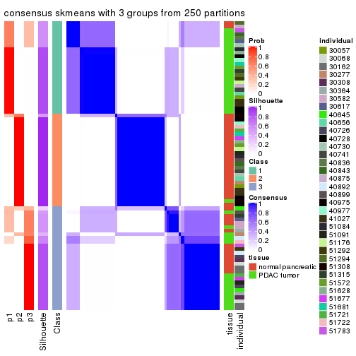
consensus_heatmap(res, k = 4)
consensus_heatmap(res, k = 5)
consensus_heatmap(res, k = 6)
Heatmaps for the membership of samples in all partitions to see how consistent they are:
membership_heatmap(res, k = 2)
membership_heatmap(res, k = 3)
membership_heatmap(res, k = 4)
membership_heatmap(res, k = 5)
membership_heatmap(res, k = 6)
As soon as we have had the classes for columns, we can look for signatures which are significantly different between classes which can be candidate marks for certain classes. Following are the heatmaps for signatures.
Signature heatmaps where rows are scaled:
get_signatures(res, k = 2)

get_signatures(res, k = 3)
get_signatures(res, k = 4)
get_signatures(res, k = 5)
get_signatures(res, k = 6)
Signature heatmaps where rows are not scaled:
get_signatures(res, k = 2, scale_rows = FALSE)
get_signatures(res, k = 3, scale_rows = FALSE)

get_signatures(res, k = 4, scale_rows = FALSE)
get_signatures(res, k = 5, scale_rows = FALSE)
get_signatures(res, k = 6, scale_rows = FALSE)
Compare the overlap of signatures from different k:
compare_signatures(res)
get_signature() returns a data frame invisibly. TO get the list of signatures, the function
call should be assigned to a variable explicitly. In following code, if plot argument is set
to FALSE, no heatmap is plotted while only the differential analysis is performed.
# code only for demonstration
tb = get_signature(res, k = ..., plot = FALSE)
An example of the output of tb is:
#> which_row fdr mean_1 mean_2 scaled_mean_1 scaled_mean_2 km
#> 1 38 0.042760348 8.373488 9.131774 -0.5533452 0.5164555 1
#> 2 40 0.018707592 7.106213 8.469186 -0.6173731 0.5762149 1
#> 3 55 0.019134737 10.221463 11.207825 -0.6159697 0.5749050 1
#> 4 59 0.006059896 5.921854 7.869574 -0.6899429 0.6439467 1
#> 5 60 0.018055526 8.928898 10.211722 -0.6204761 0.5791110 1
#> 6 98 0.009384629 15.714769 14.887706 0.6635654 -0.6193277 2
...
The columns in tb are:
which_row: row indices corresponding to the input matrix.fdr: FDR for the differential test. mean_x: The mean value in group x.scaled_mean_x: The mean value in group x after rows are scaled.km: Row groups if k-means clustering is applied to rows.UMAP plot which shows how samples are separated.
dimension_reduction(res, k = 2, method = "UMAP")
dimension_reduction(res, k = 3, method = "UMAP")
dimension_reduction(res, k = 4, method = "UMAP")
dimension_reduction(res, k = 5, method = "UMAP")
dimension_reduction(res, k = 6, method = "UMAP")
Following heatmap shows how subgroups are split when increasing k:
collect_classes(res)

Test correlation between subgroups and known annotations. If the known annotation is numeric, one-way ANOVA test is applied, and if the known annotation is discrete, chi-squared contingency table test is applied.
test_to_known_factors(res)
#> n tissue(p) individual(p) k
#> CV:skmeans 76 6.24e-06 0.4600 2
#> CV:skmeans 75 5.73e-09 0.4394 3
#> CV:skmeans 78 2.44e-09 0.2056 4
#> CV:skmeans 77 1.03e-09 0.1811 5
#> CV:skmeans 76 1.63e-09 0.0821 6
If matrix rows can be associated to genes, consider to use functional_enrichment(res,
...) to perform function enrichment for the signature genes. See this vignette for more detailed explanations.
The object with results only for a single top-value method and a single partition method can be extracted as:
res = res_list["CV", "pam"]
# you can also extract it by
# res = res_list["CV:pam"]
A summary of res and all the functions that can be applied to it:
res
#> A 'ConsensusPartition' object with k = 2, 3, 4, 5, 6.
#> On a matrix with 51941 rows and 78 columns.
#> Top rows (1000, 2000, 3000, 4000, 5000) are extracted by 'CV' method.
#> Subgroups are detected by 'pam' method.
#> Performed in total 1250 partitions by row resampling.
#> Best k for subgroups seems to be 6.
#>
#> Following methods can be applied to this 'ConsensusPartition' object:
#> [1] "cola_report" "collect_classes" "collect_plots"
#> [4] "collect_stats" "colnames" "compare_signatures"
#> [7] "consensus_heatmap" "dimension_reduction" "functional_enrichment"
#> [10] "get_anno_col" "get_anno" "get_classes"
#> [13] "get_consensus" "get_matrix" "get_membership"
#> [16] "get_param" "get_signatures" "get_stats"
#> [19] "is_best_k" "is_stable_k" "membership_heatmap"
#> [22] "ncol" "nrow" "plot_ecdf"
#> [25] "rownames" "select_partition_number" "show"
#> [28] "suggest_best_k" "test_to_known_factors"
collect_plots() function collects all the plots made from res for all k (number of partitions)
into one single page to provide an easy and fast comparison between different k.
collect_plots(res)
The plots are:
k and the heatmap of
predicted classes for each k.k.k.k.All the plots in panels can be made by individual functions and they are plotted later in this section.
select_partition_number() produces several plots showing different
statistics for choosing “optimized” k. There are following statistics:
k;k, the area increased is defined as \(A_k - A_{k-1}\).The detailed explanations of these statistics can be found in the cola vignette.
Generally speaking, lower PAC score, higher mean silhouette score or higher
concordance corresponds to better partition. Rand index and Jaccard index
measure how similar the current partition is compared to partition with k-1.
If they are too similar, we won't accept k is better than k-1.
select_partition_number(res)
The numeric values for all these statistics can be obtained by get_stats().
get_stats(res)
#> k 1-PAC mean_silhouette concordance area_increased Rand Jaccard
#> 2 2 1.000 0.999 1.000 0.4414 0.559 0.559
#> 3 3 0.740 0.920 0.922 0.4370 0.722 0.530
#> 4 4 1.000 0.959 0.986 0.1250 0.942 0.832
#> 5 5 1.000 0.967 0.987 0.1018 0.912 0.701
#> 6 6 0.979 0.939 0.976 0.0342 0.975 0.883
suggest_best_k() suggests the best \(k\) based on these statistics. The rules are as follows:
suggest_best_k(res)
#> [1] 6
#> attr(,"optional")
#> [1] 2 4 5
There is also optional best \(k\) = 2 4 5 that is worth to check.
Following shows the table of the partitions (You need to click the show/hide
code output link to see it). The membership matrix (columns with name p*)
is inferred by
clue::cl_consensus()
function with the SE method. Basically the value in the membership matrix
represents the probability to belong to a certain group. The finall class
label for an item is determined with the group with highest probability it
belongs to.
In get_classes() function, the entropy is calculated from the membership
matrix and the silhouette score is calculated from the consensus matrix.
cbind(get_classes(res, k = 2), get_membership(res, k = 2))
#> class entropy silhouette p1 p2
#> GSM388115 1 0.000 1.000 1.000 0.000
#> GSM388116 1 0.000 1.000 1.000 0.000
#> GSM388117 1 0.000 1.000 1.000 0.000
#> GSM388118 1 0.000 1.000 1.000 0.000
#> GSM388119 1 0.000 1.000 1.000 0.000
#> GSM388120 1 0.000 1.000 1.000 0.000
#> GSM388121 1 0.000 1.000 1.000 0.000
#> GSM388122 1 0.000 1.000 1.000 0.000
#> GSM388123 1 0.000 1.000 1.000 0.000
#> GSM388124 1 0.000 1.000 1.000 0.000
#> GSM388125 1 0.000 1.000 1.000 0.000
#> GSM388126 1 0.000 1.000 1.000 0.000
#> GSM388127 1 0.000 1.000 1.000 0.000
#> GSM388128 1 0.000 1.000 1.000 0.000
#> GSM388129 1 0.000 1.000 1.000 0.000
#> GSM388130 1 0.000 1.000 1.000 0.000
#> GSM388131 1 0.000 1.000 1.000 0.000
#> GSM388132 1 0.000 1.000 1.000 0.000
#> GSM388133 1 0.000 1.000 1.000 0.000
#> GSM388134 1 0.000 1.000 1.000 0.000
#> GSM388135 1 0.000 1.000 1.000 0.000
#> GSM388136 1 0.000 1.000 1.000 0.000
#> GSM388137 1 0.000 1.000 1.000 0.000
#> GSM388140 1 0.000 1.000 1.000 0.000
#> GSM388141 1 0.000 1.000 1.000 0.000
#> GSM388142 1 0.000 1.000 1.000 0.000
#> GSM388143 1 0.000 1.000 1.000 0.000
#> GSM388144 1 0.000 1.000 1.000 0.000
#> GSM388145 2 0.141 0.980 0.020 0.980
#> GSM388146 1 0.000 1.000 1.000 0.000
#> GSM388147 1 0.000 1.000 1.000 0.000
#> GSM388148 1 0.000 1.000 1.000 0.000
#> GSM388149 1 0.000 1.000 1.000 0.000
#> GSM388150 1 0.000 1.000 1.000 0.000
#> GSM388151 1 0.000 1.000 1.000 0.000
#> GSM388152 1 0.000 1.000 1.000 0.000
#> GSM388153 1 0.000 1.000 1.000 0.000
#> GSM388139 1 0.000 1.000 1.000 0.000
#> GSM388138 1 0.000 1.000 1.000 0.000
#> GSM388076 1 0.000 1.000 1.000 0.000
#> GSM388077 1 0.000 1.000 1.000 0.000
#> GSM388078 2 0.000 0.999 0.000 1.000
#> GSM388079 2 0.000 0.999 0.000 1.000
#> GSM388080 2 0.000 0.999 0.000 1.000
#> GSM388081 2 0.000 0.999 0.000 1.000
#> GSM388082 2 0.000 0.999 0.000 1.000
#> GSM388083 1 0.000 1.000 1.000 0.000
#> GSM388084 2 0.000 0.999 0.000 1.000
#> GSM388085 1 0.000 1.000 1.000 0.000
#> GSM388086 1 0.000 1.000 1.000 0.000
#> GSM388087 1 0.000 1.000 1.000 0.000
#> GSM388088 1 0.000 1.000 1.000 0.000
#> GSM388089 1 0.000 1.000 1.000 0.000
#> GSM388090 2 0.000 0.999 0.000 1.000
#> GSM388091 1 0.000 1.000 1.000 0.000
#> GSM388092 2 0.000 0.999 0.000 1.000
#> GSM388093 2 0.000 0.999 0.000 1.000
#> GSM388094 2 0.000 0.999 0.000 1.000
#> GSM388095 2 0.000 0.999 0.000 1.000
#> GSM388096 1 0.000 1.000 1.000 0.000
#> GSM388097 1 0.000 1.000 1.000 0.000
#> GSM388098 2 0.000 0.999 0.000 1.000
#> GSM388101 2 0.000 0.999 0.000 1.000
#> GSM388102 2 0.000 0.999 0.000 1.000
#> GSM388103 2 0.000 0.999 0.000 1.000
#> GSM388104 1 0.000 1.000 1.000 0.000
#> GSM388105 1 0.000 1.000 1.000 0.000
#> GSM388106 2 0.118 0.984 0.016 0.984
#> GSM388107 1 0.000 1.000 1.000 0.000
#> GSM388108 2 0.000 0.999 0.000 1.000
#> GSM388109 2 0.000 0.999 0.000 1.000
#> GSM388110 2 0.000 0.999 0.000 1.000
#> GSM388111 2 0.000 0.999 0.000 1.000
#> GSM388112 2 0.000 0.999 0.000 1.000
#> GSM388113 2 0.000 0.999 0.000 1.000
#> GSM388114 1 0.000 1.000 1.000 0.000
#> GSM388100 2 0.000 0.999 0.000 1.000
#> GSM388099 2 0.000 0.999 0.000 1.000
cbind(get_classes(res, k = 3), get_membership(res, k = 3))
#> class entropy silhouette p1 p2 p3
#> GSM388115 3 0.0000 0.966 0.000 0.000 1.000
#> GSM388116 3 0.0000 0.966 0.000 0.000 1.000
#> GSM388117 1 0.4291 0.922 0.820 0.000 0.180
#> GSM388118 1 0.4291 0.922 0.820 0.000 0.180
#> GSM388119 1 0.4291 0.922 0.820 0.000 0.180
#> GSM388120 1 0.4291 0.922 0.820 0.000 0.180
#> GSM388121 1 0.4291 0.922 0.820 0.000 0.180
#> GSM388122 3 0.0000 0.966 0.000 0.000 1.000
#> GSM388123 1 0.5621 0.764 0.692 0.000 0.308
#> GSM388124 3 0.0000 0.966 0.000 0.000 1.000
#> GSM388125 3 0.0000 0.966 0.000 0.000 1.000
#> GSM388126 1 0.0000 0.805 1.000 0.000 0.000
#> GSM388127 1 0.4291 0.922 0.820 0.000 0.180
#> GSM388128 3 0.0000 0.966 0.000 0.000 1.000
#> GSM388129 1 0.4291 0.922 0.820 0.000 0.180
#> GSM388130 3 0.0000 0.966 0.000 0.000 1.000
#> GSM388131 1 0.4291 0.922 0.820 0.000 0.180
#> GSM388132 1 0.4291 0.922 0.820 0.000 0.180
#> GSM388133 1 0.4291 0.922 0.820 0.000 0.180
#> GSM388134 1 0.4291 0.922 0.820 0.000 0.180
#> GSM388135 1 0.4291 0.922 0.820 0.000 0.180
#> GSM388136 3 0.4062 0.739 0.164 0.000 0.836
#> GSM388137 3 0.6008 0.197 0.372 0.000 0.628
#> GSM388140 1 0.4291 0.922 0.820 0.000 0.180
#> GSM388141 3 0.0000 0.966 0.000 0.000 1.000
#> GSM388142 1 0.4291 0.922 0.820 0.000 0.180
#> GSM388143 1 0.4291 0.922 0.820 0.000 0.180
#> GSM388144 1 0.4291 0.922 0.820 0.000 0.180
#> GSM388145 1 0.5728 0.643 0.720 0.272 0.008
#> GSM388146 1 0.4291 0.922 0.820 0.000 0.180
#> GSM388147 1 0.4291 0.922 0.820 0.000 0.180
#> GSM388148 1 0.4291 0.922 0.820 0.000 0.180
#> GSM388149 3 0.0000 0.966 0.000 0.000 1.000
#> GSM388150 1 0.4291 0.922 0.820 0.000 0.180
#> GSM388151 3 0.0000 0.966 0.000 0.000 1.000
#> GSM388152 3 0.0237 0.962 0.004 0.000 0.996
#> GSM388153 1 0.4291 0.922 0.820 0.000 0.180
#> GSM388139 1 0.4291 0.922 0.820 0.000 0.180
#> GSM388138 1 0.4291 0.922 0.820 0.000 0.180
#> GSM388076 3 0.0000 0.966 0.000 0.000 1.000
#> GSM388077 3 0.0000 0.966 0.000 0.000 1.000
#> GSM388078 2 0.0000 1.000 0.000 1.000 0.000
#> GSM388079 2 0.0000 1.000 0.000 1.000 0.000
#> GSM388080 2 0.0000 1.000 0.000 1.000 0.000
#> GSM388081 2 0.0000 1.000 0.000 1.000 0.000
#> GSM388082 2 0.0000 1.000 0.000 1.000 0.000
#> GSM388083 3 0.0000 0.966 0.000 0.000 1.000
#> GSM388084 2 0.0000 1.000 0.000 1.000 0.000
#> GSM388085 3 0.0000 0.966 0.000 0.000 1.000
#> GSM388086 1 0.2625 0.750 0.916 0.000 0.084
#> GSM388087 1 0.0000 0.805 1.000 0.000 0.000
#> GSM388088 1 0.0000 0.805 1.000 0.000 0.000
#> GSM388089 1 0.0000 0.805 1.000 0.000 0.000
#> GSM388090 2 0.0000 1.000 0.000 1.000 0.000
#> GSM388091 3 0.0000 0.966 0.000 0.000 1.000
#> GSM388092 2 0.0000 1.000 0.000 1.000 0.000
#> GSM388093 2 0.0000 1.000 0.000 1.000 0.000
#> GSM388094 2 0.0000 1.000 0.000 1.000 0.000
#> GSM388095 2 0.0000 1.000 0.000 1.000 0.000
#> GSM388096 1 0.4291 0.922 0.820 0.000 0.180
#> GSM388097 3 0.0000 0.966 0.000 0.000 1.000
#> GSM388098 2 0.0000 1.000 0.000 1.000 0.000
#> GSM388101 2 0.0000 1.000 0.000 1.000 0.000
#> GSM388102 2 0.0000 1.000 0.000 1.000 0.000
#> GSM388103 2 0.0000 1.000 0.000 1.000 0.000
#> GSM388104 3 0.0000 0.966 0.000 0.000 1.000
#> GSM388105 1 0.4291 0.922 0.820 0.000 0.180
#> GSM388106 1 0.0000 0.805 1.000 0.000 0.000
#> GSM388107 1 0.0000 0.805 1.000 0.000 0.000
#> GSM388108 2 0.0000 1.000 0.000 1.000 0.000
#> GSM388109 2 0.0000 1.000 0.000 1.000 0.000
#> GSM388110 2 0.0000 1.000 0.000 1.000 0.000
#> GSM388111 2 0.0000 1.000 0.000 1.000 0.000
#> GSM388112 2 0.0000 1.000 0.000 1.000 0.000
#> GSM388113 2 0.0000 1.000 0.000 1.000 0.000
#> GSM388114 3 0.0000 0.966 0.000 0.000 1.000
#> GSM388100 2 0.0000 1.000 0.000 1.000 0.000
#> GSM388099 1 0.6095 0.404 0.608 0.392 0.000
cbind(get_classes(res, k = 4), get_membership(res, k = 4))
#> class entropy silhouette p1 p2 p3 p4
#> GSM388115 3 0.0000 0.9546 0.000 0.000 1.000 0.00
#> GSM388116 3 0.0000 0.9546 0.000 0.000 1.000 0.00
#> GSM388117 1 0.0000 0.9822 1.000 0.000 0.000 0.00
#> GSM388118 1 0.0000 0.9822 1.000 0.000 0.000 0.00
#> GSM388119 1 0.0000 0.9822 1.000 0.000 0.000 0.00
#> GSM388120 1 0.0000 0.9822 1.000 0.000 0.000 0.00
#> GSM388121 1 0.0000 0.9822 1.000 0.000 0.000 0.00
#> GSM388122 3 0.0000 0.9546 0.000 0.000 1.000 0.00
#> GSM388123 1 0.0469 0.9707 0.988 0.000 0.012 0.00
#> GSM388124 3 0.0000 0.9546 0.000 0.000 1.000 0.00
#> GSM388125 3 0.0000 0.9546 0.000 0.000 1.000 0.00
#> GSM388126 4 0.0000 1.0000 0.000 0.000 0.000 1.00
#> GSM388127 1 0.0000 0.9822 1.000 0.000 0.000 0.00
#> GSM388128 3 0.0000 0.9546 0.000 0.000 1.000 0.00
#> GSM388129 1 0.0000 0.9822 1.000 0.000 0.000 0.00
#> GSM388130 3 0.0000 0.9546 0.000 0.000 1.000 0.00
#> GSM388131 1 0.0000 0.9822 1.000 0.000 0.000 0.00
#> GSM388132 1 0.0000 0.9822 1.000 0.000 0.000 0.00
#> GSM388133 1 0.0000 0.9822 1.000 0.000 0.000 0.00
#> GSM388134 1 0.0000 0.9822 1.000 0.000 0.000 0.00
#> GSM388135 1 0.0000 0.9822 1.000 0.000 0.000 0.00
#> GSM388136 3 0.3311 0.7238 0.172 0.000 0.828 0.00
#> GSM388137 3 0.4996 0.0602 0.484 0.000 0.516 0.00
#> GSM388140 1 0.0000 0.9822 1.000 0.000 0.000 0.00
#> GSM388141 3 0.0000 0.9546 0.000 0.000 1.000 0.00
#> GSM388142 1 0.0000 0.9822 1.000 0.000 0.000 0.00
#> GSM388143 1 0.0000 0.9822 1.000 0.000 0.000 0.00
#> GSM388144 1 0.0000 0.9822 1.000 0.000 0.000 0.00
#> GSM388145 1 0.0592 0.9663 0.984 0.016 0.000 0.00
#> GSM388146 1 0.0000 0.9822 1.000 0.000 0.000 0.00
#> GSM388147 1 0.0000 0.9822 1.000 0.000 0.000 0.00
#> GSM388148 1 0.0000 0.9822 1.000 0.000 0.000 0.00
#> GSM388149 3 0.0000 0.9546 0.000 0.000 1.000 0.00
#> GSM388150 1 0.0000 0.9822 1.000 0.000 0.000 0.00
#> GSM388151 3 0.0000 0.9546 0.000 0.000 1.000 0.00
#> GSM388152 3 0.0188 0.9503 0.004 0.000 0.996 0.00
#> GSM388153 1 0.0000 0.9822 1.000 0.000 0.000 0.00
#> GSM388139 1 0.0000 0.9822 1.000 0.000 0.000 0.00
#> GSM388138 1 0.0000 0.9822 1.000 0.000 0.000 0.00
#> GSM388076 3 0.0000 0.9546 0.000 0.000 1.000 0.00
#> GSM388077 3 0.0000 0.9546 0.000 0.000 1.000 0.00
#> GSM388078 2 0.0000 1.0000 0.000 1.000 0.000 0.00
#> GSM388079 2 0.0000 1.0000 0.000 1.000 0.000 0.00
#> GSM388080 2 0.0000 1.0000 0.000 1.000 0.000 0.00
#> GSM388081 2 0.0000 1.0000 0.000 1.000 0.000 0.00
#> GSM388082 2 0.0000 1.0000 0.000 1.000 0.000 0.00
#> GSM388083 3 0.0000 0.9546 0.000 0.000 1.000 0.00
#> GSM388084 2 0.0000 1.0000 0.000 1.000 0.000 0.00
#> GSM388085 3 0.0000 0.9546 0.000 0.000 1.000 0.00
#> GSM388086 4 0.0000 1.0000 0.000 0.000 0.000 1.00
#> GSM388087 4 0.0000 1.0000 0.000 0.000 0.000 1.00
#> GSM388088 4 0.0000 1.0000 0.000 0.000 0.000 1.00
#> GSM388089 1 0.4134 0.6487 0.740 0.000 0.000 0.26
#> GSM388090 2 0.0000 1.0000 0.000 1.000 0.000 0.00
#> GSM388091 3 0.0000 0.9546 0.000 0.000 1.000 0.00
#> GSM388092 2 0.0000 1.0000 0.000 1.000 0.000 0.00
#> GSM388093 2 0.0000 1.0000 0.000 1.000 0.000 0.00
#> GSM388094 2 0.0000 1.0000 0.000 1.000 0.000 0.00
#> GSM388095 2 0.0000 1.0000 0.000 1.000 0.000 0.00
#> GSM388096 1 0.0000 0.9822 1.000 0.000 0.000 0.00
#> GSM388097 3 0.0000 0.9546 0.000 0.000 1.000 0.00
#> GSM388098 2 0.0000 1.0000 0.000 1.000 0.000 0.00
#> GSM388101 2 0.0000 1.0000 0.000 1.000 0.000 0.00
#> GSM388102 2 0.0000 1.0000 0.000 1.000 0.000 0.00
#> GSM388103 2 0.0000 1.0000 0.000 1.000 0.000 0.00
#> GSM388104 3 0.0000 0.9546 0.000 0.000 1.000 0.00
#> GSM388105 1 0.0000 0.9822 1.000 0.000 0.000 0.00
#> GSM388106 4 0.0000 1.0000 0.000 0.000 0.000 1.00
#> GSM388107 4 0.0000 1.0000 0.000 0.000 0.000 1.00
#> GSM388108 2 0.0000 1.0000 0.000 1.000 0.000 0.00
#> GSM388109 2 0.0000 1.0000 0.000 1.000 0.000 0.00
#> GSM388110 2 0.0000 1.0000 0.000 1.000 0.000 0.00
#> GSM388111 2 0.0000 1.0000 0.000 1.000 0.000 0.00
#> GSM388112 2 0.0000 1.0000 0.000 1.000 0.000 0.00
#> GSM388113 2 0.0000 1.0000 0.000 1.000 0.000 0.00
#> GSM388114 3 0.0000 0.9546 0.000 0.000 1.000 0.00
#> GSM388100 2 0.0000 1.0000 0.000 1.000 0.000 0.00
#> GSM388099 1 0.3219 0.7757 0.836 0.164 0.000 0.00
cbind(get_classes(res, k = 5), get_membership(res, k = 5))
#> class entropy silhouette p1 p2 p3 p4 p5
#> GSM388115 3 0.0000 0.985 0.000 0.000 1.000 0.000 0.000
#> GSM388116 3 0.0000 0.985 0.000 0.000 1.000 0.000 0.000
#> GSM388117 1 0.0000 0.953 1.000 0.000 0.000 0.000 0.000
#> GSM388118 1 0.0000 0.953 1.000 0.000 0.000 0.000 0.000
#> GSM388119 1 0.0000 0.953 1.000 0.000 0.000 0.000 0.000
#> GSM388120 1 0.0000 0.953 1.000 0.000 0.000 0.000 0.000
#> GSM388121 1 0.0000 0.953 1.000 0.000 0.000 0.000 0.000
#> GSM388122 3 0.0510 0.974 0.000 0.000 0.984 0.000 0.016
#> GSM388123 5 0.0000 0.999 0.000 0.000 0.000 0.000 1.000
#> GSM388124 3 0.0000 0.985 0.000 0.000 1.000 0.000 0.000
#> GSM388125 3 0.0000 0.985 0.000 0.000 1.000 0.000 0.000
#> GSM388126 4 0.0000 0.960 0.000 0.000 0.000 1.000 0.000
#> GSM388127 5 0.0000 0.999 0.000 0.000 0.000 0.000 1.000
#> GSM388128 3 0.0000 0.985 0.000 0.000 1.000 0.000 0.000
#> GSM388129 1 0.2329 0.824 0.876 0.000 0.000 0.000 0.124
#> GSM388130 3 0.0000 0.985 0.000 0.000 1.000 0.000 0.000
#> GSM388131 5 0.0000 0.999 0.000 0.000 0.000 0.000 1.000
#> GSM388132 5 0.0000 0.999 0.000 0.000 0.000 0.000 1.000
#> GSM388133 5 0.0000 0.999 0.000 0.000 0.000 0.000 1.000
#> GSM388134 5 0.0000 0.999 0.000 0.000 0.000 0.000 1.000
#> GSM388135 1 0.0162 0.950 0.996 0.000 0.000 0.000 0.004
#> GSM388136 3 0.2966 0.769 0.000 0.000 0.816 0.000 0.184
#> GSM388137 1 0.4101 0.413 0.628 0.000 0.372 0.000 0.000
#> GSM388140 5 0.0000 0.999 0.000 0.000 0.000 0.000 1.000
#> GSM388141 3 0.0566 0.975 0.012 0.000 0.984 0.000 0.004
#> GSM388142 1 0.0000 0.953 1.000 0.000 0.000 0.000 0.000
#> GSM388143 1 0.0000 0.953 1.000 0.000 0.000 0.000 0.000
#> GSM388144 1 0.0000 0.953 1.000 0.000 0.000 0.000 0.000
#> GSM388145 5 0.0000 0.999 0.000 0.000 0.000 0.000 1.000
#> GSM388146 1 0.0000 0.953 1.000 0.000 0.000 0.000 0.000
#> GSM388147 1 0.1121 0.914 0.956 0.000 0.000 0.000 0.044
#> GSM388148 5 0.0000 0.999 0.000 0.000 0.000 0.000 1.000
#> GSM388149 3 0.0510 0.973 0.016 0.000 0.984 0.000 0.000
#> GSM388150 1 0.0000 0.953 1.000 0.000 0.000 0.000 0.000
#> GSM388151 3 0.0000 0.985 0.000 0.000 1.000 0.000 0.000
#> GSM388152 3 0.0510 0.974 0.000 0.000 0.984 0.000 0.016
#> GSM388153 5 0.0000 0.999 0.000 0.000 0.000 0.000 1.000
#> GSM388139 1 0.0000 0.953 1.000 0.000 0.000 0.000 0.000
#> GSM388138 1 0.0000 0.953 1.000 0.000 0.000 0.000 0.000
#> GSM388076 3 0.0000 0.985 0.000 0.000 1.000 0.000 0.000
#> GSM388077 3 0.0000 0.985 0.000 0.000 1.000 0.000 0.000
#> GSM388078 2 0.0000 1.000 0.000 1.000 0.000 0.000 0.000
#> GSM388079 2 0.0000 1.000 0.000 1.000 0.000 0.000 0.000
#> GSM388080 2 0.0000 1.000 0.000 1.000 0.000 0.000 0.000
#> GSM388081 2 0.0000 1.000 0.000 1.000 0.000 0.000 0.000
#> GSM388082 2 0.0000 1.000 0.000 1.000 0.000 0.000 0.000
#> GSM388083 3 0.0000 0.985 0.000 0.000 1.000 0.000 0.000
#> GSM388084 2 0.0000 1.000 0.000 1.000 0.000 0.000 0.000
#> GSM388085 3 0.0000 0.985 0.000 0.000 1.000 0.000 0.000
#> GSM388086 4 0.0000 0.960 0.000 0.000 0.000 1.000 0.000
#> GSM388087 4 0.0000 0.960 0.000 0.000 0.000 1.000 0.000
#> GSM388088 4 0.0000 0.960 0.000 0.000 0.000 1.000 0.000
#> GSM388089 4 0.3366 0.706 0.232 0.000 0.000 0.768 0.000
#> GSM388090 2 0.0000 1.000 0.000 1.000 0.000 0.000 0.000
#> GSM388091 3 0.0000 0.985 0.000 0.000 1.000 0.000 0.000
#> GSM388092 2 0.0000 1.000 0.000 1.000 0.000 0.000 0.000
#> GSM388093 2 0.0000 1.000 0.000 1.000 0.000 0.000 0.000
#> GSM388094 2 0.0000 1.000 0.000 1.000 0.000 0.000 0.000
#> GSM388095 2 0.0000 1.000 0.000 1.000 0.000 0.000 0.000
#> GSM388096 5 0.0000 0.999 0.000 0.000 0.000 0.000 1.000
#> GSM388097 3 0.0000 0.985 0.000 0.000 1.000 0.000 0.000
#> GSM388098 2 0.0000 1.000 0.000 1.000 0.000 0.000 0.000
#> GSM388101 2 0.0000 1.000 0.000 1.000 0.000 0.000 0.000
#> GSM388102 2 0.0000 1.000 0.000 1.000 0.000 0.000 0.000
#> GSM388103 2 0.0000 1.000 0.000 1.000 0.000 0.000 0.000
#> GSM388104 3 0.0000 0.985 0.000 0.000 1.000 0.000 0.000
#> GSM388105 5 0.0000 0.999 0.000 0.000 0.000 0.000 1.000
#> GSM388106 4 0.0000 0.960 0.000 0.000 0.000 1.000 0.000
#> GSM388107 4 0.0000 0.960 0.000 0.000 0.000 1.000 0.000
#> GSM388108 2 0.0000 1.000 0.000 1.000 0.000 0.000 0.000
#> GSM388109 2 0.0000 1.000 0.000 1.000 0.000 0.000 0.000
#> GSM388110 2 0.0000 1.000 0.000 1.000 0.000 0.000 0.000
#> GSM388111 2 0.0000 1.000 0.000 1.000 0.000 0.000 0.000
#> GSM388112 2 0.0000 1.000 0.000 1.000 0.000 0.000 0.000
#> GSM388113 2 0.0000 1.000 0.000 1.000 0.000 0.000 0.000
#> GSM388114 3 0.0000 0.985 0.000 0.000 1.000 0.000 0.000
#> GSM388100 2 0.0000 1.000 0.000 1.000 0.000 0.000 0.000
#> GSM388099 5 0.0290 0.989 0.000 0.008 0.000 0.000 0.992
cbind(get_classes(res, k = 6), get_membership(res, k = 6))
#> class entropy silhouette p1 p2 p3 p4 p5 p6
#> GSM388115 3 0.1267 0.903 0.000 0.000 0.940 0.000 0.000 0.060
#> GSM388116 3 0.1267 0.903 0.000 0.000 0.940 0.000 0.000 0.060
#> GSM388117 1 0.0000 0.936 1.000 0.000 0.000 0.000 0.000 0.000
#> GSM388118 1 0.0000 0.936 1.000 0.000 0.000 0.000 0.000 0.000
#> GSM388119 1 0.0000 0.936 1.000 0.000 0.000 0.000 0.000 0.000
#> GSM388120 1 0.0000 0.936 1.000 0.000 0.000 0.000 0.000 0.000
#> GSM388121 1 0.0000 0.936 1.000 0.000 0.000 0.000 0.000 0.000
#> GSM388122 3 0.0000 0.939 0.000 0.000 1.000 0.000 0.000 0.000
#> GSM388123 5 0.0000 1.000 0.000 0.000 0.000 0.000 1.000 0.000
#> GSM388124 3 0.3782 0.293 0.000 0.000 0.588 0.000 0.000 0.412
#> GSM388125 3 0.0000 0.939 0.000 0.000 1.000 0.000 0.000 0.000
#> GSM388126 4 0.0000 0.948 0.000 0.000 0.000 1.000 0.000 0.000
#> GSM388127 5 0.0000 1.000 0.000 0.000 0.000 0.000 1.000 0.000
#> GSM388128 3 0.0000 0.939 0.000 0.000 1.000 0.000 0.000 0.000
#> GSM388129 1 0.2048 0.814 0.880 0.000 0.000 0.000 0.120 0.000
#> GSM388130 3 0.0000 0.939 0.000 0.000 1.000 0.000 0.000 0.000
#> GSM388131 5 0.0000 1.000 0.000 0.000 0.000 0.000 1.000 0.000
#> GSM388132 5 0.0000 1.000 0.000 0.000 0.000 0.000 1.000 0.000
#> GSM388133 5 0.0000 1.000 0.000 0.000 0.000 0.000 1.000 0.000
#> GSM388134 5 0.0000 1.000 0.000 0.000 0.000 0.000 1.000 0.000
#> GSM388135 1 0.0000 0.936 1.000 0.000 0.000 0.000 0.000 0.000
#> GSM388136 3 0.2631 0.732 0.000 0.000 0.820 0.000 0.180 0.000
#> GSM388137 1 0.3727 0.361 0.612 0.000 0.388 0.000 0.000 0.000
#> GSM388140 5 0.0000 1.000 0.000 0.000 0.000 0.000 1.000 0.000
#> GSM388141 3 0.0000 0.939 0.000 0.000 1.000 0.000 0.000 0.000
#> GSM388142 1 0.0000 0.936 1.000 0.000 0.000 0.000 0.000 0.000
#> GSM388143 1 0.0000 0.936 1.000 0.000 0.000 0.000 0.000 0.000
#> GSM388144 1 0.0000 0.936 1.000 0.000 0.000 0.000 0.000 0.000
#> GSM388145 5 0.0000 1.000 0.000 0.000 0.000 0.000 1.000 0.000
#> GSM388146 1 0.0000 0.936 1.000 0.000 0.000 0.000 0.000 0.000
#> GSM388147 1 0.3956 0.615 0.712 0.000 0.252 0.000 0.036 0.000
#> GSM388148 5 0.0000 1.000 0.000 0.000 0.000 0.000 1.000 0.000
#> GSM388149 3 0.0000 0.939 0.000 0.000 1.000 0.000 0.000 0.000
#> GSM388150 1 0.0000 0.936 1.000 0.000 0.000 0.000 0.000 0.000
#> GSM388151 3 0.0000 0.939 0.000 0.000 1.000 0.000 0.000 0.000
#> GSM388152 3 0.0000 0.939 0.000 0.000 1.000 0.000 0.000 0.000
#> GSM388153 5 0.0000 1.000 0.000 0.000 0.000 0.000 1.000 0.000
#> GSM388139 1 0.0000 0.936 1.000 0.000 0.000 0.000 0.000 0.000
#> GSM388138 1 0.0000 0.936 1.000 0.000 0.000 0.000 0.000 0.000
#> GSM388076 6 0.0000 0.982 0.000 0.000 0.000 0.000 0.000 1.000
#> GSM388077 6 0.0000 0.982 0.000 0.000 0.000 0.000 0.000 1.000
#> GSM388078 2 0.0000 1.000 0.000 1.000 0.000 0.000 0.000 0.000
#> GSM388079 2 0.0000 1.000 0.000 1.000 0.000 0.000 0.000 0.000
#> GSM388080 2 0.0000 1.000 0.000 1.000 0.000 0.000 0.000 0.000
#> GSM388081 2 0.0000 1.000 0.000 1.000 0.000 0.000 0.000 0.000
#> GSM388082 2 0.0000 1.000 0.000 1.000 0.000 0.000 0.000 0.000
#> GSM388083 6 0.0000 0.982 0.000 0.000 0.000 0.000 0.000 1.000
#> GSM388084 2 0.0000 1.000 0.000 1.000 0.000 0.000 0.000 0.000
#> GSM388085 3 0.0000 0.939 0.000 0.000 1.000 0.000 0.000 0.000
#> GSM388086 4 0.0000 0.948 0.000 0.000 0.000 1.000 0.000 0.000
#> GSM388087 4 0.0000 0.948 0.000 0.000 0.000 1.000 0.000 0.000
#> GSM388088 4 0.0000 0.948 0.000 0.000 0.000 1.000 0.000 0.000
#> GSM388089 4 0.3023 0.669 0.232 0.000 0.000 0.768 0.000 0.000
#> GSM388090 2 0.0000 1.000 0.000 1.000 0.000 0.000 0.000 0.000
#> GSM388091 3 0.0000 0.939 0.000 0.000 1.000 0.000 0.000 0.000
#> GSM388092 2 0.0000 1.000 0.000 1.000 0.000 0.000 0.000 0.000
#> GSM388093 2 0.0000 1.000 0.000 1.000 0.000 0.000 0.000 0.000
#> GSM388094 2 0.0000 1.000 0.000 1.000 0.000 0.000 0.000 0.000
#> GSM388095 2 0.0000 1.000 0.000 1.000 0.000 0.000 0.000 0.000
#> GSM388096 5 0.0000 1.000 0.000 0.000 0.000 0.000 1.000 0.000
#> GSM388097 3 0.1327 0.894 0.000 0.000 0.936 0.000 0.000 0.064
#> GSM388098 2 0.0000 1.000 0.000 1.000 0.000 0.000 0.000 0.000
#> GSM388101 2 0.0000 1.000 0.000 1.000 0.000 0.000 0.000 0.000
#> GSM388102 2 0.0000 1.000 0.000 1.000 0.000 0.000 0.000 0.000
#> GSM388103 2 0.0000 1.000 0.000 1.000 0.000 0.000 0.000 0.000
#> GSM388104 6 0.1204 0.925 0.000 0.000 0.056 0.000 0.000 0.944
#> GSM388105 5 0.0000 1.000 0.000 0.000 0.000 0.000 1.000 0.000
#> GSM388106 4 0.0000 0.948 0.000 0.000 0.000 1.000 0.000 0.000
#> GSM388107 4 0.0000 0.948 0.000 0.000 0.000 1.000 0.000 0.000
#> GSM388108 2 0.0000 1.000 0.000 1.000 0.000 0.000 0.000 0.000
#> GSM388109 2 0.0000 1.000 0.000 1.000 0.000 0.000 0.000 0.000
#> GSM388110 2 0.0000 1.000 0.000 1.000 0.000 0.000 0.000 0.000
#> GSM388111 2 0.0000 1.000 0.000 1.000 0.000 0.000 0.000 0.000
#> GSM388112 2 0.0000 1.000 0.000 1.000 0.000 0.000 0.000 0.000
#> GSM388113 2 0.0000 1.000 0.000 1.000 0.000 0.000 0.000 0.000
#> GSM388114 6 0.0000 0.982 0.000 0.000 0.000 0.000 0.000 1.000
#> GSM388100 2 0.0000 1.000 0.000 1.000 0.000 0.000 0.000 0.000
#> GSM388099 5 0.0146 0.994 0.000 0.004 0.000 0.000 0.996 0.000
Heatmaps for the consensus matrix. It visualizes the probability of two samples to be in a same group.
consensus_heatmap(res, k = 2)

consensus_heatmap(res, k = 3)
consensus_heatmap(res, k = 4)
consensus_heatmap(res, k = 5)
consensus_heatmap(res, k = 6)
Heatmaps for the membership of samples in all partitions to see how consistent they are:
membership_heatmap(res, k = 2)
membership_heatmap(res, k = 3)
membership_heatmap(res, k = 4)

membership_heatmap(res, k = 5)

membership_heatmap(res, k = 6)
As soon as we have had the classes for columns, we can look for signatures which are significantly different between classes which can be candidate marks for certain classes. Following are the heatmaps for signatures.
Signature heatmaps where rows are scaled:
get_signatures(res, k = 2)
get_signatures(res, k = 3)
get_signatures(res, k = 4)
get_signatures(res, k = 5)
get_signatures(res, k = 6)
Signature heatmaps where rows are not scaled:
get_signatures(res, k = 2, scale_rows = FALSE)
get_signatures(res, k = 3, scale_rows = FALSE)
get_signatures(res, k = 4, scale_rows = FALSE)
get_signatures(res, k = 5, scale_rows = FALSE)
get_signatures(res, k = 6, scale_rows = FALSE)
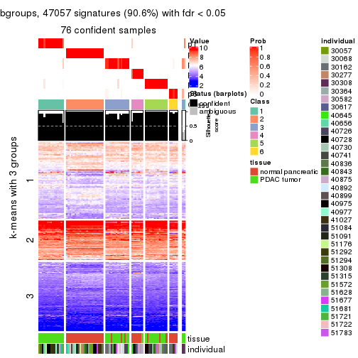
Compare the overlap of signatures from different k:
compare_signatures(res)
get_signature() returns a data frame invisibly. TO get the list of signatures, the function
call should be assigned to a variable explicitly. In following code, if plot argument is set
to FALSE, no heatmap is plotted while only the differential analysis is performed.
# code only for demonstration
tb = get_signature(res, k = ..., plot = FALSE)
An example of the output of tb is:
#> which_row fdr mean_1 mean_2 scaled_mean_1 scaled_mean_2 km
#> 1 38 0.042760348 8.373488 9.131774 -0.5533452 0.5164555 1
#> 2 40 0.018707592 7.106213 8.469186 -0.6173731 0.5762149 1
#> 3 55 0.019134737 10.221463 11.207825 -0.6159697 0.5749050 1
#> 4 59 0.006059896 5.921854 7.869574 -0.6899429 0.6439467 1
#> 5 60 0.018055526 8.928898 10.211722 -0.6204761 0.5791110 1
#> 6 98 0.009384629 15.714769 14.887706 0.6635654 -0.6193277 2
...
The columns in tb are:
which_row: row indices corresponding to the input matrix.fdr: FDR for the differential test. mean_x: The mean value in group x.scaled_mean_x: The mean value in group x after rows are scaled.km: Row groups if k-means clustering is applied to rows.UMAP plot which shows how samples are separated.
dimension_reduction(res, k = 2, method = "UMAP")
dimension_reduction(res, k = 3, method = "UMAP")
dimension_reduction(res, k = 4, method = "UMAP")
dimension_reduction(res, k = 5, method = "UMAP")
dimension_reduction(res, k = 6, method = "UMAP")
Following heatmap shows how subgroups are split when increasing k:
collect_classes(res)
Test correlation between subgroups and known annotations. If the known annotation is numeric, one-way ANOVA test is applied, and if the known annotation is discrete, chi-squared contingency table test is applied.
test_to_known_factors(res)
#> n tissue(p) individual(p) k
#> CV:pam 78 9.41e-08 0.889 2
#> CV:pam 76 9.54e-08 0.263 3
#> CV:pam 77 7.69e-09 0.115 4
#> CV:pam 77 3.73e-09 0.242 5
#> CV:pam 76 2.20e-10 0.419 6
If matrix rows can be associated to genes, consider to use functional_enrichment(res,
...) to perform function enrichment for the signature genes. See this vignette for more detailed explanations.
The object with results only for a single top-value method and a single partition method can be extracted as:
res = res_list["CV", "mclust"]
# you can also extract it by
# res = res_list["CV:mclust"]
A summary of res and all the functions that can be applied to it:
res
#> A 'ConsensusPartition' object with k = 2, 3, 4, 5, 6.
#> On a matrix with 51941 rows and 78 columns.
#> Top rows (1000, 2000, 3000, 4000, 5000) are extracted by 'CV' method.
#> Subgroups are detected by 'mclust' method.
#> Performed in total 1250 partitions by row resampling.
#> Best k for subgroups seems to be 5.
#>
#> Following methods can be applied to this 'ConsensusPartition' object:
#> [1] "cola_report" "collect_classes" "collect_plots"
#> [4] "collect_stats" "colnames" "compare_signatures"
#> [7] "consensus_heatmap" "dimension_reduction" "functional_enrichment"
#> [10] "get_anno_col" "get_anno" "get_classes"
#> [13] "get_consensus" "get_matrix" "get_membership"
#> [16] "get_param" "get_signatures" "get_stats"
#> [19] "is_best_k" "is_stable_k" "membership_heatmap"
#> [22] "ncol" "nrow" "plot_ecdf"
#> [25] "rownames" "select_partition_number" "show"
#> [28] "suggest_best_k" "test_to_known_factors"
collect_plots() function collects all the plots made from res for all k (number of partitions)
into one single page to provide an easy and fast comparison between different k.
collect_plots(res)
The plots are:
k and the heatmap of
predicted classes for each k.k.k.k.All the plots in panels can be made by individual functions and they are plotted later in this section.
select_partition_number() produces several plots showing different
statistics for choosing “optimized” k. There are following statistics:
k;k, the area increased is defined as \(A_k - A_{k-1}\).The detailed explanations of these statistics can be found in the cola vignette.
Generally speaking, lower PAC score, higher mean silhouette score or higher
concordance corresponds to better partition. Rand index and Jaccard index
measure how similar the current partition is compared to partition with k-1.
If they are too similar, we won't accept k is better than k-1.
select_partition_number(res)
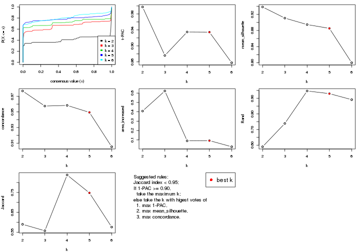
The numeric values for all these statistics can be obtained by get_stats().
get_stats(res)
#> k 1-PAC mean_silhouette concordance area_increased Rand Jaccard
#> 2 2 0.997 0.938 0.977 0.4081 0.590 0.590
#> 3 3 0.876 0.911 0.957 0.6224 0.739 0.557
#> 4 4 0.935 0.895 0.958 0.0898 0.947 0.838
#> 5 5 0.934 0.885 0.949 0.0923 0.930 0.748
#> 6 6 0.858 0.800 0.905 0.0267 0.891 0.576
suggest_best_k() suggests the best \(k\) based on these statistics. The rules are as follows:
suggest_best_k(res)
#> [1] 5
#> attr(,"optional")
#> [1] 2 4
There is also optional best \(k\) = 2 4 that is worth to check.
Following shows the table of the partitions (You need to click the show/hide
code output link to see it). The membership matrix (columns with name p*)
is inferred by
clue::cl_consensus()
function with the SE method. Basically the value in the membership matrix
represents the probability to belong to a certain group. The finall class
label for an item is determined with the group with highest probability it
belongs to.
In get_classes() function, the entropy is calculated from the membership
matrix and the silhouette score is calculated from the consensus matrix.
cbind(get_classes(res, k = 2), get_membership(res, k = 2))
#> class entropy silhouette p1 p2
#> GSM388115 1 0.0000 0.983 1.000 0.000
#> GSM388116 1 0.0000 0.983 1.000 0.000
#> GSM388117 1 0.0000 0.983 1.000 0.000
#> GSM388118 1 0.0000 0.983 1.000 0.000
#> GSM388119 1 0.0000 0.983 1.000 0.000
#> GSM388120 1 0.0000 0.983 1.000 0.000
#> GSM388121 1 0.0000 0.983 1.000 0.000
#> GSM388122 1 0.0000 0.983 1.000 0.000
#> GSM388123 1 0.0000 0.983 1.000 0.000
#> GSM388124 1 0.0000 0.983 1.000 0.000
#> GSM388125 1 0.0000 0.983 1.000 0.000
#> GSM388126 1 0.0938 0.974 0.988 0.012
#> GSM388127 1 0.0000 0.983 1.000 0.000
#> GSM388128 1 0.0000 0.983 1.000 0.000
#> GSM388129 1 0.0000 0.983 1.000 0.000
#> GSM388130 1 0.0000 0.983 1.000 0.000
#> GSM388131 1 0.0000 0.983 1.000 0.000
#> GSM388132 1 0.0000 0.983 1.000 0.000
#> GSM388133 1 0.0000 0.983 1.000 0.000
#> GSM388134 1 0.0000 0.983 1.000 0.000
#> GSM388135 1 0.0000 0.983 1.000 0.000
#> GSM388136 1 0.0000 0.983 1.000 0.000
#> GSM388137 1 0.0000 0.983 1.000 0.000
#> GSM388140 1 0.0000 0.983 1.000 0.000
#> GSM388141 1 0.0000 0.983 1.000 0.000
#> GSM388142 1 0.0000 0.983 1.000 0.000
#> GSM388143 1 0.0000 0.983 1.000 0.000
#> GSM388144 1 0.0000 0.983 1.000 0.000
#> GSM388145 1 0.9491 0.381 0.632 0.368
#> GSM388146 1 0.0000 0.983 1.000 0.000
#> GSM388147 1 0.0000 0.983 1.000 0.000
#> GSM388148 1 0.0000 0.983 1.000 0.000
#> GSM388149 1 0.0000 0.983 1.000 0.000
#> GSM388150 1 0.0000 0.983 1.000 0.000
#> GSM388151 1 0.0000 0.983 1.000 0.000
#> GSM388152 1 0.0000 0.983 1.000 0.000
#> GSM388153 1 0.0000 0.983 1.000 0.000
#> GSM388139 1 0.0000 0.983 1.000 0.000
#> GSM388138 1 0.0000 0.983 1.000 0.000
#> GSM388076 1 0.0000 0.983 1.000 0.000
#> GSM388077 1 0.0000 0.983 1.000 0.000
#> GSM388078 2 0.0000 0.952 0.000 1.000
#> GSM388079 2 0.0000 0.952 0.000 1.000
#> GSM388080 2 0.0000 0.952 0.000 1.000
#> GSM388081 2 0.0000 0.952 0.000 1.000
#> GSM388082 2 0.0000 0.952 0.000 1.000
#> GSM388083 1 0.0000 0.983 1.000 0.000
#> GSM388084 2 0.0000 0.952 0.000 1.000
#> GSM388085 1 0.0000 0.983 1.000 0.000
#> GSM388086 1 0.0938 0.974 0.988 0.012
#> GSM388087 1 0.0938 0.974 0.988 0.012
#> GSM388088 1 0.0938 0.974 0.988 0.012
#> GSM388089 1 0.0938 0.974 0.988 0.012
#> GSM388090 2 0.9866 0.257 0.432 0.568
#> GSM388091 1 0.0000 0.983 1.000 0.000
#> GSM388092 2 0.0000 0.952 0.000 1.000
#> GSM388093 2 0.4562 0.863 0.096 0.904
#> GSM388094 2 0.0000 0.952 0.000 1.000
#> GSM388095 2 0.0000 0.952 0.000 1.000
#> GSM388096 1 0.0000 0.983 1.000 0.000
#> GSM388097 1 0.0000 0.983 1.000 0.000
#> GSM388098 2 0.0000 0.952 0.000 1.000
#> GSM388101 2 0.0000 0.952 0.000 1.000
#> GSM388102 2 0.0000 0.952 0.000 1.000
#> GSM388103 2 0.0000 0.952 0.000 1.000
#> GSM388104 1 0.0000 0.983 1.000 0.000
#> GSM388105 1 0.0000 0.983 1.000 0.000
#> GSM388106 1 0.0938 0.974 0.988 0.012
#> GSM388107 1 0.0938 0.974 0.988 0.012
#> GSM388108 2 0.0000 0.952 0.000 1.000
#> GSM388109 2 0.0000 0.952 0.000 1.000
#> GSM388110 2 0.0000 0.952 0.000 1.000
#> GSM388111 2 0.9866 0.257 0.432 0.568
#> GSM388112 2 0.0000 0.952 0.000 1.000
#> GSM388113 2 0.0000 0.952 0.000 1.000
#> GSM388114 1 0.0000 0.983 1.000 0.000
#> GSM388100 2 0.0000 0.952 0.000 1.000
#> GSM388099 1 0.9710 0.293 0.600 0.400
cbind(get_classes(res, k = 3), get_membership(res, k = 3))
#> class entropy silhouette p1 p2 p3
#> GSM388115 3 0.0237 0.999 0.004 0.000 0.996
#> GSM388116 3 0.0237 0.999 0.004 0.000 0.996
#> GSM388117 1 0.0000 0.905 1.000 0.000 0.000
#> GSM388118 1 0.0000 0.905 1.000 0.000 0.000
#> GSM388119 1 0.0000 0.905 1.000 0.000 0.000
#> GSM388120 1 0.0000 0.905 1.000 0.000 0.000
#> GSM388121 1 0.0000 0.905 1.000 0.000 0.000
#> GSM388122 3 0.0237 0.999 0.004 0.000 0.996
#> GSM388123 1 0.5760 0.609 0.672 0.000 0.328
#> GSM388124 3 0.0237 0.999 0.004 0.000 0.996
#> GSM388125 3 0.0237 0.999 0.004 0.000 0.996
#> GSM388126 3 0.0000 0.996 0.000 0.000 1.000
#> GSM388127 1 0.0000 0.905 1.000 0.000 0.000
#> GSM388128 3 0.0237 0.999 0.004 0.000 0.996
#> GSM388129 1 0.0000 0.905 1.000 0.000 0.000
#> GSM388130 3 0.0237 0.999 0.004 0.000 0.996
#> GSM388131 1 0.0000 0.905 1.000 0.000 0.000
#> GSM388132 1 0.0892 0.895 0.980 0.000 0.020
#> GSM388133 1 0.0000 0.905 1.000 0.000 0.000
#> GSM388134 1 0.4842 0.736 0.776 0.000 0.224
#> GSM388135 1 0.0000 0.905 1.000 0.000 0.000
#> GSM388136 3 0.0237 0.999 0.004 0.000 0.996
#> GSM388137 3 0.0237 0.999 0.004 0.000 0.996
#> GSM388140 1 0.5760 0.609 0.672 0.000 0.328
#> GSM388141 3 0.0237 0.999 0.004 0.000 0.996
#> GSM388142 1 0.0000 0.905 1.000 0.000 0.000
#> GSM388143 1 0.0000 0.905 1.000 0.000 0.000
#> GSM388144 1 0.0000 0.905 1.000 0.000 0.000
#> GSM388145 1 0.5760 0.609 0.672 0.000 0.328
#> GSM388146 1 0.0000 0.905 1.000 0.000 0.000
#> GSM388147 1 0.0000 0.905 1.000 0.000 0.000
#> GSM388148 1 0.5760 0.609 0.672 0.000 0.328
#> GSM388149 3 0.0237 0.999 0.004 0.000 0.996
#> GSM388150 1 0.0000 0.905 1.000 0.000 0.000
#> GSM388151 3 0.0237 0.999 0.004 0.000 0.996
#> GSM388152 3 0.0237 0.999 0.004 0.000 0.996
#> GSM388153 1 0.5591 0.643 0.696 0.000 0.304
#> GSM388139 1 0.0000 0.905 1.000 0.000 0.000
#> GSM388138 1 0.0000 0.905 1.000 0.000 0.000
#> GSM388076 3 0.0237 0.999 0.004 0.000 0.996
#> GSM388077 3 0.0237 0.999 0.004 0.000 0.996
#> GSM388078 2 0.0000 0.952 0.000 1.000 0.000
#> GSM388079 2 0.0000 0.952 0.000 1.000 0.000
#> GSM388080 2 0.0000 0.952 0.000 1.000 0.000
#> GSM388081 2 0.0000 0.952 0.000 1.000 0.000
#> GSM388082 2 0.0000 0.952 0.000 1.000 0.000
#> GSM388083 3 0.0237 0.999 0.004 0.000 0.996
#> GSM388084 2 0.0000 0.952 0.000 1.000 0.000
#> GSM388085 3 0.0237 0.999 0.004 0.000 0.996
#> GSM388086 3 0.0000 0.996 0.000 0.000 1.000
#> GSM388087 3 0.0000 0.996 0.000 0.000 1.000
#> GSM388088 3 0.0000 0.996 0.000 0.000 1.000
#> GSM388089 3 0.0000 0.996 0.000 0.000 1.000
#> GSM388090 2 0.8395 0.395 0.104 0.568 0.328
#> GSM388091 3 0.0237 0.999 0.004 0.000 0.996
#> GSM388092 2 0.0000 0.952 0.000 1.000 0.000
#> GSM388093 2 0.4045 0.830 0.104 0.872 0.024
#> GSM388094 2 0.0000 0.952 0.000 1.000 0.000
#> GSM388095 2 0.0000 0.952 0.000 1.000 0.000
#> GSM388096 1 0.0000 0.905 1.000 0.000 0.000
#> GSM388097 3 0.0237 0.999 0.004 0.000 0.996
#> GSM388098 2 0.0000 0.952 0.000 1.000 0.000
#> GSM388101 2 0.0000 0.952 0.000 1.000 0.000
#> GSM388102 2 0.0000 0.952 0.000 1.000 0.000
#> GSM388103 2 0.0000 0.952 0.000 1.000 0.000
#> GSM388104 3 0.0237 0.999 0.004 0.000 0.996
#> GSM388105 1 0.0747 0.897 0.984 0.000 0.016
#> GSM388106 3 0.0000 0.996 0.000 0.000 1.000
#> GSM388107 3 0.0000 0.996 0.000 0.000 1.000
#> GSM388108 2 0.0000 0.952 0.000 1.000 0.000
#> GSM388109 2 0.0000 0.952 0.000 1.000 0.000
#> GSM388110 2 0.0000 0.952 0.000 1.000 0.000
#> GSM388111 2 0.8395 0.395 0.104 0.568 0.328
#> GSM388112 2 0.0000 0.952 0.000 1.000 0.000
#> GSM388113 2 0.0000 0.952 0.000 1.000 0.000
#> GSM388114 3 0.0237 0.999 0.004 0.000 0.996
#> GSM388100 2 0.0000 0.952 0.000 1.000 0.000
#> GSM388099 1 0.7190 0.582 0.636 0.044 0.320
cbind(get_classes(res, k = 4), get_membership(res, k = 4))
#> class entropy silhouette p1 p2 p3 p4
#> GSM388115 3 0.000 1.000 0.000 0.000 1.000 0.000
#> GSM388116 3 0.000 1.000 0.000 0.000 1.000 0.000
#> GSM388117 1 0.000 0.933 1.000 0.000 0.000 0.000
#> GSM388118 1 0.000 0.933 1.000 0.000 0.000 0.000
#> GSM388119 1 0.000 0.933 1.000 0.000 0.000 0.000
#> GSM388120 1 0.000 0.933 1.000 0.000 0.000 0.000
#> GSM388121 1 0.000 0.933 1.000 0.000 0.000 0.000
#> GSM388122 3 0.000 1.000 0.000 0.000 1.000 0.000
#> GSM388123 1 0.488 0.543 0.664 0.000 0.328 0.008
#> GSM388124 3 0.000 1.000 0.000 0.000 1.000 0.000
#> GSM388125 3 0.000 1.000 0.000 0.000 1.000 0.000
#> GSM388126 4 0.000 0.926 0.000 0.000 0.000 1.000
#> GSM388127 1 0.000 0.933 1.000 0.000 0.000 0.000
#> GSM388128 3 0.000 1.000 0.000 0.000 1.000 0.000
#> GSM388129 1 0.000 0.933 1.000 0.000 0.000 0.000
#> GSM388130 3 0.000 1.000 0.000 0.000 1.000 0.000
#> GSM388131 1 0.000 0.933 1.000 0.000 0.000 0.000
#> GSM388132 1 0.000 0.933 1.000 0.000 0.000 0.000
#> GSM388133 1 0.000 0.933 1.000 0.000 0.000 0.000
#> GSM388134 1 0.000 0.933 1.000 0.000 0.000 0.000
#> GSM388135 1 0.000 0.933 1.000 0.000 0.000 0.000
#> GSM388136 3 0.000 1.000 0.000 0.000 1.000 0.000
#> GSM388137 4 0.529 0.047 0.008 0.000 0.476 0.516
#> GSM388140 1 0.000 0.933 1.000 0.000 0.000 0.000
#> GSM388141 3 0.000 1.000 0.000 0.000 1.000 0.000
#> GSM388142 1 0.000 0.933 1.000 0.000 0.000 0.000
#> GSM388143 1 0.000 0.933 1.000 0.000 0.000 0.000
#> GSM388144 1 0.000 0.933 1.000 0.000 0.000 0.000
#> GSM388145 1 0.456 0.551 0.672 0.000 0.328 0.000
#> GSM388146 1 0.000 0.933 1.000 0.000 0.000 0.000
#> GSM388147 1 0.000 0.933 1.000 0.000 0.000 0.000
#> GSM388148 1 0.000 0.933 1.000 0.000 0.000 0.000
#> GSM388149 3 0.000 1.000 0.000 0.000 1.000 0.000
#> GSM388150 1 0.000 0.933 1.000 0.000 0.000 0.000
#> GSM388151 3 0.000 1.000 0.000 0.000 1.000 0.000
#> GSM388152 3 0.000 1.000 0.000 0.000 1.000 0.000
#> GSM388153 1 0.456 0.551 0.672 0.000 0.328 0.000
#> GSM388139 1 0.000 0.933 1.000 0.000 0.000 0.000
#> GSM388138 1 0.000 0.933 1.000 0.000 0.000 0.000
#> GSM388076 3 0.000 1.000 0.000 0.000 1.000 0.000
#> GSM388077 3 0.000 1.000 0.000 0.000 1.000 0.000
#> GSM388078 2 0.000 0.927 0.000 1.000 0.000 0.000
#> GSM388079 2 0.000 0.927 0.000 1.000 0.000 0.000
#> GSM388080 2 0.000 0.927 0.000 1.000 0.000 0.000
#> GSM388081 2 0.000 0.927 0.000 1.000 0.000 0.000
#> GSM388082 2 0.000 0.927 0.000 1.000 0.000 0.000
#> GSM388083 3 0.000 1.000 0.000 0.000 1.000 0.000
#> GSM388084 2 0.000 0.927 0.000 1.000 0.000 0.000
#> GSM388085 3 0.000 1.000 0.000 0.000 1.000 0.000
#> GSM388086 4 0.000 0.926 0.000 0.000 0.000 1.000
#> GSM388087 4 0.000 0.926 0.000 0.000 0.000 1.000
#> GSM388088 4 0.000 0.926 0.000 0.000 0.000 1.000
#> GSM388089 4 0.000 0.926 0.000 0.000 0.000 1.000
#> GSM388090 2 0.682 0.398 0.104 0.564 0.328 0.004
#> GSM388091 3 0.000 1.000 0.000 0.000 1.000 0.000
#> GSM388092 2 0.000 0.927 0.000 1.000 0.000 0.000
#> GSM388093 2 0.659 0.435 0.104 0.584 0.312 0.000
#> GSM388094 2 0.000 0.927 0.000 1.000 0.000 0.000
#> GSM388095 2 0.000 0.927 0.000 1.000 0.000 0.000
#> GSM388096 1 0.000 0.933 1.000 0.000 0.000 0.000
#> GSM388097 3 0.000 1.000 0.000 0.000 1.000 0.000
#> GSM388098 2 0.000 0.927 0.000 1.000 0.000 0.000
#> GSM388101 2 0.000 0.927 0.000 1.000 0.000 0.000
#> GSM388102 2 0.000 0.927 0.000 1.000 0.000 0.000
#> GSM388103 2 0.000 0.927 0.000 1.000 0.000 0.000
#> GSM388104 3 0.000 1.000 0.000 0.000 1.000 0.000
#> GSM388105 1 0.187 0.867 0.928 0.000 0.072 0.000
#> GSM388106 4 0.000 0.926 0.000 0.000 0.000 1.000
#> GSM388107 4 0.000 0.926 0.000 0.000 0.000 1.000
#> GSM388108 2 0.000 0.927 0.000 1.000 0.000 0.000
#> GSM388109 2 0.000 0.927 0.000 1.000 0.000 0.000
#> GSM388110 2 0.000 0.927 0.000 1.000 0.000 0.000
#> GSM388111 2 0.682 0.398 0.104 0.564 0.328 0.004
#> GSM388112 2 0.000 0.927 0.000 1.000 0.000 0.000
#> GSM388113 2 0.000 0.927 0.000 1.000 0.000 0.000
#> GSM388114 3 0.000 1.000 0.000 0.000 1.000 0.000
#> GSM388100 2 0.000 0.927 0.000 1.000 0.000 0.000
#> GSM388099 1 0.645 0.438 0.584 0.088 0.328 0.000
cbind(get_classes(res, k = 5), get_membership(res, k = 5))
#> class entropy silhouette p1 p2 p3 p4 p5
#> GSM388115 3 0.0000 0.9908 0.000 0.000 1.000 0.000 0.000
#> GSM388116 3 0.0000 0.9908 0.000 0.000 1.000 0.000 0.000
#> GSM388117 1 0.0000 0.8844 1.000 0.000 0.000 0.000 0.000
#> GSM388118 1 0.0000 0.8844 1.000 0.000 0.000 0.000 0.000
#> GSM388119 1 0.0000 0.8844 1.000 0.000 0.000 0.000 0.000
#> GSM388120 1 0.0000 0.8844 1.000 0.000 0.000 0.000 0.000
#> GSM388121 1 0.1478 0.8802 0.936 0.000 0.000 0.000 0.064
#> GSM388122 3 0.0000 0.9908 0.000 0.000 1.000 0.000 0.000
#> GSM388123 5 0.0000 0.9243 0.000 0.000 0.000 0.000 1.000
#> GSM388124 3 0.0000 0.9908 0.000 0.000 1.000 0.000 0.000
#> GSM388125 3 0.0000 0.9908 0.000 0.000 1.000 0.000 0.000
#> GSM388126 4 0.0000 0.9384 0.000 0.000 0.000 1.000 0.000
#> GSM388127 5 0.0162 0.9252 0.004 0.000 0.000 0.000 0.996
#> GSM388128 3 0.0000 0.9908 0.000 0.000 1.000 0.000 0.000
#> GSM388129 1 0.3242 0.7971 0.784 0.000 0.000 0.000 0.216
#> GSM388130 3 0.0000 0.9908 0.000 0.000 1.000 0.000 0.000
#> GSM388131 5 0.0162 0.9252 0.004 0.000 0.000 0.000 0.996
#> GSM388132 1 0.3816 0.7287 0.696 0.000 0.000 0.000 0.304
#> GSM388133 5 0.0162 0.9252 0.004 0.000 0.000 0.000 0.996
#> GSM388134 5 0.0000 0.9243 0.000 0.000 0.000 0.000 1.000
#> GSM388135 1 0.2074 0.8673 0.896 0.000 0.000 0.000 0.104
#> GSM388136 3 0.1608 0.9217 0.000 0.000 0.928 0.000 0.072
#> GSM388137 4 0.4387 0.4571 0.000 0.000 0.348 0.640 0.012
#> GSM388140 1 0.3816 0.7287 0.696 0.000 0.000 0.000 0.304
#> GSM388141 3 0.0703 0.9742 0.000 0.000 0.976 0.000 0.024
#> GSM388142 1 0.0510 0.8854 0.984 0.000 0.000 0.000 0.016
#> GSM388143 1 0.0000 0.8844 1.000 0.000 0.000 0.000 0.000
#> GSM388144 1 0.0000 0.8844 1.000 0.000 0.000 0.000 0.000
#> GSM388145 5 0.0703 0.9055 0.024 0.000 0.000 0.000 0.976
#> GSM388146 1 0.0000 0.8844 1.000 0.000 0.000 0.000 0.000
#> GSM388147 1 0.3988 0.7724 0.732 0.000 0.000 0.016 0.252
#> GSM388148 1 0.3816 0.7287 0.696 0.000 0.000 0.000 0.304
#> GSM388149 3 0.0703 0.9741 0.000 0.000 0.976 0.000 0.024
#> GSM388150 1 0.2074 0.8673 0.896 0.000 0.000 0.000 0.104
#> GSM388151 3 0.0000 0.9908 0.000 0.000 1.000 0.000 0.000
#> GSM388152 3 0.1121 0.9560 0.000 0.000 0.956 0.000 0.044
#> GSM388153 5 0.0000 0.9243 0.000 0.000 0.000 0.000 1.000
#> GSM388139 1 0.2074 0.8673 0.896 0.000 0.000 0.000 0.104
#> GSM388138 1 0.1908 0.8702 0.908 0.000 0.000 0.000 0.092
#> GSM388076 3 0.0000 0.9908 0.000 0.000 1.000 0.000 0.000
#> GSM388077 3 0.0000 0.9908 0.000 0.000 1.000 0.000 0.000
#> GSM388078 2 0.0000 0.9465 0.000 1.000 0.000 0.000 0.000
#> GSM388079 2 0.0000 0.9465 0.000 1.000 0.000 0.000 0.000
#> GSM388080 2 0.0000 0.9465 0.000 1.000 0.000 0.000 0.000
#> GSM388081 2 0.0000 0.9465 0.000 1.000 0.000 0.000 0.000
#> GSM388082 2 0.0000 0.9465 0.000 1.000 0.000 0.000 0.000
#> GSM388083 3 0.0000 0.9908 0.000 0.000 1.000 0.000 0.000
#> GSM388084 2 0.0000 0.9465 0.000 1.000 0.000 0.000 0.000
#> GSM388085 3 0.0000 0.9908 0.000 0.000 1.000 0.000 0.000
#> GSM388086 4 0.0000 0.9384 0.000 0.000 0.000 1.000 0.000
#> GSM388087 4 0.0000 0.9384 0.000 0.000 0.000 1.000 0.000
#> GSM388088 4 0.0000 0.9384 0.000 0.000 0.000 1.000 0.000
#> GSM388089 4 0.0000 0.9384 0.000 0.000 0.000 1.000 0.000
#> GSM388090 5 0.4307 -0.0985 0.000 0.500 0.000 0.000 0.500
#> GSM388091 3 0.0000 0.9908 0.000 0.000 1.000 0.000 0.000
#> GSM388092 2 0.0000 0.9465 0.000 1.000 0.000 0.000 0.000
#> GSM388093 2 0.4307 -0.0397 0.000 0.500 0.000 0.000 0.500
#> GSM388094 2 0.0000 0.9465 0.000 1.000 0.000 0.000 0.000
#> GSM388095 2 0.0000 0.9465 0.000 1.000 0.000 0.000 0.000
#> GSM388096 5 0.0162 0.9252 0.004 0.000 0.000 0.000 0.996
#> GSM388097 3 0.0000 0.9908 0.000 0.000 1.000 0.000 0.000
#> GSM388098 2 0.0000 0.9465 0.000 1.000 0.000 0.000 0.000
#> GSM388101 2 0.0000 0.9465 0.000 1.000 0.000 0.000 0.000
#> GSM388102 2 0.0609 0.9285 0.000 0.980 0.000 0.000 0.020
#> GSM388103 2 0.0000 0.9465 0.000 1.000 0.000 0.000 0.000
#> GSM388104 3 0.0000 0.9908 0.000 0.000 1.000 0.000 0.000
#> GSM388105 5 0.0162 0.9252 0.004 0.000 0.000 0.000 0.996
#> GSM388106 4 0.0000 0.9384 0.000 0.000 0.000 1.000 0.000
#> GSM388107 4 0.0000 0.9384 0.000 0.000 0.000 1.000 0.000
#> GSM388108 2 0.0000 0.9465 0.000 1.000 0.000 0.000 0.000
#> GSM388109 2 0.0000 0.9465 0.000 1.000 0.000 0.000 0.000
#> GSM388110 2 0.0000 0.9465 0.000 1.000 0.000 0.000 0.000
#> GSM388111 2 0.4283 0.1214 0.000 0.544 0.000 0.000 0.456
#> GSM388112 2 0.0000 0.9465 0.000 1.000 0.000 0.000 0.000
#> GSM388113 2 0.0000 0.9465 0.000 1.000 0.000 0.000 0.000
#> GSM388114 3 0.0000 0.9908 0.000 0.000 1.000 0.000 0.000
#> GSM388100 2 0.0000 0.9465 0.000 1.000 0.000 0.000 0.000
#> GSM388099 5 0.0703 0.9050 0.000 0.024 0.000 0.000 0.976
cbind(get_classes(res, k = 6), get_membership(res, k = 6))
#> class entropy silhouette p1 p2 p3 p4 p5 p6
#> GSM388115 3 0.0000 0.943 0.000 0.000 1.000 0.000 0.000 0.000
#> GSM388116 3 0.0000 0.943 0.000 0.000 1.000 0.000 0.000 0.000
#> GSM388117 1 0.0000 0.885 1.000 0.000 0.000 0.000 0.000 0.000
#> GSM388118 1 0.0000 0.885 1.000 0.000 0.000 0.000 0.000 0.000
#> GSM388119 1 0.0000 0.885 1.000 0.000 0.000 0.000 0.000 0.000
#> GSM388120 1 0.0000 0.885 1.000 0.000 0.000 0.000 0.000 0.000
#> GSM388121 1 0.2664 0.773 0.816 0.000 0.000 0.000 0.184 0.000
#> GSM388122 3 0.3151 0.589 0.000 0.000 0.748 0.000 0.252 0.000
#> GSM388123 5 0.1387 0.721 0.000 0.000 0.000 0.000 0.932 0.068
#> GSM388124 3 0.2562 0.748 0.000 0.000 0.828 0.000 0.000 0.172
#> GSM388125 3 0.0000 0.943 0.000 0.000 1.000 0.000 0.000 0.000
#> GSM388126 4 0.0000 0.999 0.000 0.000 0.000 1.000 0.000 0.000
#> GSM388127 5 0.0000 0.740 0.000 0.000 0.000 0.000 1.000 0.000
#> GSM388128 3 0.0000 0.943 0.000 0.000 1.000 0.000 0.000 0.000
#> GSM388129 1 0.3198 0.676 0.740 0.000 0.000 0.000 0.260 0.000
#> GSM388130 3 0.0000 0.943 0.000 0.000 1.000 0.000 0.000 0.000
#> GSM388131 5 0.0146 0.741 0.004 0.000 0.000 0.000 0.996 0.000
#> GSM388132 5 0.3804 0.172 0.424 0.000 0.000 0.000 0.576 0.000
#> GSM388133 5 0.0146 0.741 0.004 0.000 0.000 0.000 0.996 0.000
#> GSM388134 5 0.0865 0.737 0.000 0.000 0.000 0.000 0.964 0.036
#> GSM388135 1 0.3126 0.675 0.752 0.000 0.000 0.000 0.248 0.000
#> GSM388136 5 0.3607 0.463 0.000 0.000 0.348 0.000 0.652 0.000
#> GSM388137 5 0.4789 0.494 0.000 0.000 0.092 0.268 0.640 0.000
#> GSM388140 5 0.3804 0.172 0.424 0.000 0.000 0.000 0.576 0.000
#> GSM388141 5 0.3774 0.357 0.000 0.000 0.408 0.000 0.592 0.000
#> GSM388142 1 0.1204 0.867 0.944 0.000 0.000 0.000 0.056 0.000
#> GSM388143 1 0.0000 0.885 1.000 0.000 0.000 0.000 0.000 0.000
#> GSM388144 1 0.0000 0.885 1.000 0.000 0.000 0.000 0.000 0.000
#> GSM388145 5 0.0865 0.737 0.000 0.000 0.000 0.000 0.964 0.036
#> GSM388146 1 0.0000 0.885 1.000 0.000 0.000 0.000 0.000 0.000
#> GSM388147 5 0.4051 0.144 0.432 0.000 0.000 0.008 0.560 0.000
#> GSM388148 5 0.3804 0.172 0.424 0.000 0.000 0.000 0.576 0.000
#> GSM388149 5 0.3727 0.393 0.000 0.000 0.388 0.000 0.612 0.000
#> GSM388150 1 0.2793 0.751 0.800 0.000 0.000 0.000 0.200 0.000
#> GSM388151 3 0.0000 0.943 0.000 0.000 1.000 0.000 0.000 0.000
#> GSM388152 5 0.3672 0.432 0.000 0.000 0.368 0.000 0.632 0.000
#> GSM388153 5 0.0865 0.737 0.000 0.000 0.000 0.000 0.964 0.036
#> GSM388139 1 0.1814 0.849 0.900 0.000 0.000 0.000 0.100 0.000
#> GSM388138 1 0.2491 0.784 0.836 0.000 0.000 0.000 0.164 0.000
#> GSM388076 6 0.1765 0.978 0.000 0.000 0.096 0.000 0.000 0.904
#> GSM388077 6 0.1765 0.978 0.000 0.000 0.096 0.000 0.000 0.904
#> GSM388078 2 0.0000 0.931 0.000 1.000 0.000 0.000 0.000 0.000
#> GSM388079 2 0.0000 0.931 0.000 1.000 0.000 0.000 0.000 0.000
#> GSM388080 2 0.0000 0.931 0.000 1.000 0.000 0.000 0.000 0.000
#> GSM388081 2 0.0000 0.931 0.000 1.000 0.000 0.000 0.000 0.000
#> GSM388082 2 0.0000 0.931 0.000 1.000 0.000 0.000 0.000 0.000
#> GSM388083 6 0.1765 0.978 0.000 0.000 0.096 0.000 0.000 0.904
#> GSM388084 2 0.0000 0.931 0.000 1.000 0.000 0.000 0.000 0.000
#> GSM388085 3 0.0000 0.943 0.000 0.000 1.000 0.000 0.000 0.000
#> GSM388086 4 0.0000 0.999 0.000 0.000 0.000 1.000 0.000 0.000
#> GSM388087 4 0.0000 0.999 0.000 0.000 0.000 1.000 0.000 0.000
#> GSM388088 4 0.0000 0.999 0.000 0.000 0.000 1.000 0.000 0.000
#> GSM388089 4 0.0146 0.994 0.000 0.000 0.000 0.996 0.004 0.000
#> GSM388090 2 0.5094 0.463 0.000 0.568 0.000 0.000 0.336 0.096
#> GSM388091 3 0.0000 0.943 0.000 0.000 1.000 0.000 0.000 0.000
#> GSM388092 2 0.0000 0.931 0.000 1.000 0.000 0.000 0.000 0.000
#> GSM388093 2 0.5094 0.463 0.000 0.568 0.000 0.000 0.336 0.096
#> GSM388094 2 0.0000 0.931 0.000 1.000 0.000 0.000 0.000 0.000
#> GSM388095 2 0.0000 0.931 0.000 1.000 0.000 0.000 0.000 0.000
#> GSM388096 5 0.0713 0.738 0.000 0.000 0.000 0.000 0.972 0.028
#> GSM388097 3 0.0000 0.943 0.000 0.000 1.000 0.000 0.000 0.000
#> GSM388098 2 0.0000 0.931 0.000 1.000 0.000 0.000 0.000 0.000
#> GSM388101 2 0.0000 0.931 0.000 1.000 0.000 0.000 0.000 0.000
#> GSM388102 2 0.1267 0.887 0.000 0.940 0.000 0.000 0.000 0.060
#> GSM388103 2 0.0000 0.931 0.000 1.000 0.000 0.000 0.000 0.000
#> GSM388104 6 0.2491 0.906 0.000 0.000 0.164 0.000 0.000 0.836
#> GSM388105 5 0.0146 0.741 0.004 0.000 0.000 0.000 0.996 0.000
#> GSM388106 4 0.0000 0.999 0.000 0.000 0.000 1.000 0.000 0.000
#> GSM388107 4 0.0000 0.999 0.000 0.000 0.000 1.000 0.000 0.000
#> GSM388108 2 0.0000 0.931 0.000 1.000 0.000 0.000 0.000 0.000
#> GSM388109 2 0.0000 0.931 0.000 1.000 0.000 0.000 0.000 0.000
#> GSM388110 2 0.0000 0.931 0.000 1.000 0.000 0.000 0.000 0.000
#> GSM388111 2 0.5094 0.463 0.000 0.568 0.000 0.000 0.336 0.096
#> GSM388112 2 0.0000 0.931 0.000 1.000 0.000 0.000 0.000 0.000
#> GSM388113 2 0.0000 0.931 0.000 1.000 0.000 0.000 0.000 0.000
#> GSM388114 6 0.1765 0.978 0.000 0.000 0.096 0.000 0.000 0.904
#> GSM388100 2 0.0000 0.931 0.000 1.000 0.000 0.000 0.000 0.000
#> GSM388099 5 0.0865 0.737 0.000 0.000 0.000 0.000 0.964 0.036
Heatmaps for the consensus matrix. It visualizes the probability of two samples to be in a same group.
consensus_heatmap(res, k = 2)
consensus_heatmap(res, k = 3)
consensus_heatmap(res, k = 4)
consensus_heatmap(res, k = 5)
consensus_heatmap(res, k = 6)
Heatmaps for the membership of samples in all partitions to see how consistent they are:
membership_heatmap(res, k = 2)
membership_heatmap(res, k = 3)
membership_heatmap(res, k = 4)

membership_heatmap(res, k = 5)

membership_heatmap(res, k = 6)
As soon as we have had the classes for columns, we can look for signatures which are significantly different between classes which can be candidate marks for certain classes. Following are the heatmaps for signatures.
Signature heatmaps where rows are scaled:
get_signatures(res, k = 2)
get_signatures(res, k = 3)
get_signatures(res, k = 4)

get_signatures(res, k = 5)
get_signatures(res, k = 6)
Signature heatmaps where rows are not scaled:
get_signatures(res, k = 2, scale_rows = FALSE)
get_signatures(res, k = 3, scale_rows = FALSE)
get_signatures(res, k = 4, scale_rows = FALSE)
get_signatures(res, k = 5, scale_rows = FALSE)
get_signatures(res, k = 6, scale_rows = FALSE)
Compare the overlap of signatures from different k:
compare_signatures(res)
get_signature() returns a data frame invisibly. TO get the list of signatures, the function
call should be assigned to a variable explicitly. In following code, if plot argument is set
to FALSE, no heatmap is plotted while only the differential analysis is performed.
# code only for demonstration
tb = get_signature(res, k = ..., plot = FALSE)
An example of the output of tb is:
#> which_row fdr mean_1 mean_2 scaled_mean_1 scaled_mean_2 km
#> 1 38 0.042760348 8.373488 9.131774 -0.5533452 0.5164555 1
#> 2 40 0.018707592 7.106213 8.469186 -0.6173731 0.5762149 1
#> 3 55 0.019134737 10.221463 11.207825 -0.6159697 0.5749050 1
#> 4 59 0.006059896 5.921854 7.869574 -0.6899429 0.6439467 1
#> 5 60 0.018055526 8.928898 10.211722 -0.6204761 0.5791110 1
#> 6 98 0.009384629 15.714769 14.887706 0.6635654 -0.6193277 2
...
The columns in tb are:
which_row: row indices corresponding to the input matrix.fdr: FDR for the differential test. mean_x: The mean value in group x.scaled_mean_x: The mean value in group x after rows are scaled.km: Row groups if k-means clustering is applied to rows.UMAP plot which shows how samples are separated.
dimension_reduction(res, k = 2, method = "UMAP")
dimension_reduction(res, k = 3, method = "UMAP")
dimension_reduction(res, k = 4, method = "UMAP")
dimension_reduction(res, k = 5, method = "UMAP")
dimension_reduction(res, k = 6, method = "UMAP")
Following heatmap shows how subgroups are split when increasing k:
collect_classes(res)
Test correlation between subgroups and known annotations. If the known annotation is numeric, one-way ANOVA test is applied, and if the known annotation is discrete, chi-squared contingency table test is applied.
test_to_known_factors(res)
#> n tissue(p) individual(p) k
#> CV:mclust 74 3.11e-07 0.935 2
#> CV:mclust 76 8.12e-09 0.371 3
#> CV:mclust 73 2.57e-09 0.181 4
#> CV:mclust 74 1.06e-08 0.232 5
#> CV:mclust 66 1.28e-08 0.415 6
If matrix rows can be associated to genes, consider to use functional_enrichment(res,
...) to perform function enrichment for the signature genes. See this vignette for more detailed explanations.
The object with results only for a single top-value method and a single partition method can be extracted as:
res = res_list["CV", "NMF"]
# you can also extract it by
# res = res_list["CV:NMF"]
A summary of res and all the functions that can be applied to it:
res
#> A 'ConsensusPartition' object with k = 2, 3, 4, 5, 6.
#> On a matrix with 51941 rows and 78 columns.
#> Top rows (1000, 2000, 3000, 4000, 5000) are extracted by 'CV' method.
#> Subgroups are detected by 'NMF' method.
#> Performed in total 1250 partitions by row resampling.
#> Best k for subgroups seems to be 4.
#>
#> Following methods can be applied to this 'ConsensusPartition' object:
#> [1] "cola_report" "collect_classes" "collect_plots"
#> [4] "collect_stats" "colnames" "compare_signatures"
#> [7] "consensus_heatmap" "dimension_reduction" "functional_enrichment"
#> [10] "get_anno_col" "get_anno" "get_classes"
#> [13] "get_consensus" "get_matrix" "get_membership"
#> [16] "get_param" "get_signatures" "get_stats"
#> [19] "is_best_k" "is_stable_k" "membership_heatmap"
#> [22] "ncol" "nrow" "plot_ecdf"
#> [25] "rownames" "select_partition_number" "show"
#> [28] "suggest_best_k" "test_to_known_factors"
collect_plots() function collects all the plots made from res for all k (number of partitions)
into one single page to provide an easy and fast comparison between different k.
collect_plots(res)
The plots are:
k and the heatmap of
predicted classes for each k.k.k.k.All the plots in panels can be made by individual functions and they are plotted later in this section.
select_partition_number() produces several plots showing different
statistics for choosing “optimized” k. There are following statistics:
k;k, the area increased is defined as \(A_k - A_{k-1}\).The detailed explanations of these statistics can be found in the cola vignette.
Generally speaking, lower PAC score, higher mean silhouette score or higher
concordance corresponds to better partition. Rand index and Jaccard index
measure how similar the current partition is compared to partition with k-1.
If they are too similar, we won't accept k is better than k-1.
select_partition_number(res)
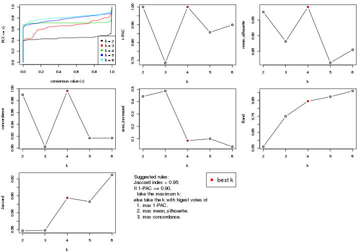
The numeric values for all these statistics can be obtained by get_stats().
get_stats(res)
#> k 1-PAC mean_silhouette concordance area_increased Rand Jaccard
#> 2 2 1.000 0.976 0.990 0.4415 0.559 0.559
#> 3 3 0.686 0.882 0.902 0.4857 0.750 0.559
#> 4 4 1.000 0.991 0.996 0.0850 0.845 0.598
#> 5 5 0.857 0.814 0.917 0.1004 0.873 0.593
#> 6 6 0.900 0.856 0.917 0.0357 0.909 0.625
suggest_best_k() suggests the best \(k\) based on these statistics. The rules are as follows:
suggest_best_k(res)
#> [1] 4
#> attr(,"optional")
#> [1] 2
There is also optional best \(k\) = 2 that is worth to check.
Following shows the table of the partitions (You need to click the show/hide
code output link to see it). The membership matrix (columns with name p*)
is inferred by
clue::cl_consensus()
function with the SE method. Basically the value in the membership matrix
represents the probability to belong to a certain group. The finall class
label for an item is determined with the group with highest probability it
belongs to.
In get_classes() function, the entropy is calculated from the membership
matrix and the silhouette score is calculated from the consensus matrix.
cbind(get_classes(res, k = 2), get_membership(res, k = 2))
#> class entropy silhouette p1 p2
#> GSM388115 1 0.0000 0.992 1.000 0.000
#> GSM388116 1 0.0000 0.992 1.000 0.000
#> GSM388117 1 0.0000 0.992 1.000 0.000
#> GSM388118 1 0.0000 0.992 1.000 0.000
#> GSM388119 1 0.0000 0.992 1.000 0.000
#> GSM388120 1 0.0000 0.992 1.000 0.000
#> GSM388121 1 0.0000 0.992 1.000 0.000
#> GSM388122 1 0.0000 0.992 1.000 0.000
#> GSM388123 1 0.2603 0.950 0.956 0.044
#> GSM388124 1 0.0000 0.992 1.000 0.000
#> GSM388125 1 0.0000 0.992 1.000 0.000
#> GSM388126 1 0.0000 0.992 1.000 0.000
#> GSM388127 1 0.0000 0.992 1.000 0.000
#> GSM388128 1 0.0000 0.992 1.000 0.000
#> GSM388129 1 0.0000 0.992 1.000 0.000
#> GSM388130 1 0.0000 0.992 1.000 0.000
#> GSM388131 1 0.0000 0.992 1.000 0.000
#> GSM388132 1 0.0000 0.992 1.000 0.000
#> GSM388133 1 0.0000 0.992 1.000 0.000
#> GSM388134 1 0.1633 0.970 0.976 0.024
#> GSM388135 1 0.0000 0.992 1.000 0.000
#> GSM388136 1 0.0000 0.992 1.000 0.000
#> GSM388137 1 0.0000 0.992 1.000 0.000
#> GSM388140 1 0.5737 0.844 0.864 0.136
#> GSM388141 1 0.0000 0.992 1.000 0.000
#> GSM388142 1 0.0000 0.992 1.000 0.000
#> GSM388143 1 0.0000 0.992 1.000 0.000
#> GSM388144 1 0.0000 0.992 1.000 0.000
#> GSM388145 2 0.0376 0.980 0.004 0.996
#> GSM388146 1 0.0000 0.992 1.000 0.000
#> GSM388147 1 0.0000 0.992 1.000 0.000
#> GSM388148 1 0.7219 0.753 0.800 0.200
#> GSM388149 1 0.0000 0.992 1.000 0.000
#> GSM388150 1 0.0000 0.992 1.000 0.000
#> GSM388151 1 0.0000 0.992 1.000 0.000
#> GSM388152 1 0.0000 0.992 1.000 0.000
#> GSM388153 1 0.0000 0.992 1.000 0.000
#> GSM388139 1 0.0000 0.992 1.000 0.000
#> GSM388138 1 0.0000 0.992 1.000 0.000
#> GSM388076 1 0.0000 0.992 1.000 0.000
#> GSM388077 1 0.0000 0.992 1.000 0.000
#> GSM388078 2 0.0000 0.984 0.000 1.000
#> GSM388079 2 0.0000 0.984 0.000 1.000
#> GSM388080 2 0.0000 0.984 0.000 1.000
#> GSM388081 2 0.0000 0.984 0.000 1.000
#> GSM388082 2 0.0000 0.984 0.000 1.000
#> GSM388083 1 0.0000 0.992 1.000 0.000
#> GSM388084 2 0.0000 0.984 0.000 1.000
#> GSM388085 1 0.0000 0.992 1.000 0.000
#> GSM388086 1 0.0000 0.992 1.000 0.000
#> GSM388087 1 0.0000 0.992 1.000 0.000
#> GSM388088 1 0.0000 0.992 1.000 0.000
#> GSM388089 1 0.0000 0.992 1.000 0.000
#> GSM388090 2 0.0000 0.984 0.000 1.000
#> GSM388091 1 0.0000 0.992 1.000 0.000
#> GSM388092 2 0.0000 0.984 0.000 1.000
#> GSM388093 2 0.0000 0.984 0.000 1.000
#> GSM388094 2 0.0000 0.984 0.000 1.000
#> GSM388095 2 0.0000 0.984 0.000 1.000
#> GSM388096 1 0.0000 0.992 1.000 0.000
#> GSM388097 1 0.0000 0.992 1.000 0.000
#> GSM388098 2 0.0000 0.984 0.000 1.000
#> GSM388101 2 0.0000 0.984 0.000 1.000
#> GSM388102 2 0.0000 0.984 0.000 1.000
#> GSM388103 2 0.0000 0.984 0.000 1.000
#> GSM388104 1 0.0000 0.992 1.000 0.000
#> GSM388105 1 0.0000 0.992 1.000 0.000
#> GSM388106 2 0.9608 0.365 0.384 0.616
#> GSM388107 1 0.0000 0.992 1.000 0.000
#> GSM388108 2 0.0000 0.984 0.000 1.000
#> GSM388109 2 0.0000 0.984 0.000 1.000
#> GSM388110 2 0.0000 0.984 0.000 1.000
#> GSM388111 2 0.0000 0.984 0.000 1.000
#> GSM388112 2 0.0000 0.984 0.000 1.000
#> GSM388113 2 0.0000 0.984 0.000 1.000
#> GSM388114 1 0.0000 0.992 1.000 0.000
#> GSM388100 2 0.0000 0.984 0.000 1.000
#> GSM388099 2 0.0000 0.984 0.000 1.000
cbind(get_classes(res, k = 3), get_membership(res, k = 3))
#> class entropy silhouette p1 p2 p3
#> GSM388115 3 0.0424 0.890 0.008 0.000 0.992
#> GSM388116 3 0.0424 0.890 0.008 0.000 0.992
#> GSM388117 1 0.3192 0.897 0.888 0.000 0.112
#> GSM388118 1 0.3192 0.897 0.888 0.000 0.112
#> GSM388119 1 0.3412 0.899 0.876 0.000 0.124
#> GSM388120 1 0.3412 0.899 0.876 0.000 0.124
#> GSM388121 1 0.3752 0.897 0.856 0.000 0.144
#> GSM388122 3 0.2796 0.850 0.092 0.000 0.908
#> GSM388123 3 0.3091 0.848 0.016 0.072 0.912
#> GSM388124 3 0.0000 0.890 0.000 0.000 1.000
#> GSM388125 3 0.0000 0.890 0.000 0.000 1.000
#> GSM388126 1 0.3192 0.787 0.888 0.000 0.112
#> GSM388127 1 0.4002 0.883 0.840 0.000 0.160
#> GSM388128 3 0.0424 0.890 0.008 0.000 0.992
#> GSM388129 1 0.3752 0.897 0.856 0.000 0.144
#> GSM388130 3 0.0000 0.890 0.000 0.000 1.000
#> GSM388131 1 0.5058 0.769 0.756 0.000 0.244
#> GSM388132 1 0.3752 0.897 0.856 0.000 0.144
#> GSM388133 1 0.3816 0.894 0.852 0.000 0.148
#> GSM388134 3 0.8380 0.553 0.124 0.276 0.600
#> GSM388135 1 0.3752 0.897 0.856 0.000 0.144
#> GSM388136 3 0.3192 0.836 0.112 0.000 0.888
#> GSM388137 1 0.3941 0.888 0.844 0.000 0.156
#> GSM388140 1 0.3267 0.807 0.884 0.116 0.000
#> GSM388141 3 0.6204 0.260 0.424 0.000 0.576
#> GSM388142 1 0.3619 0.899 0.864 0.000 0.136
#> GSM388143 1 0.3116 0.895 0.892 0.000 0.108
#> GSM388144 1 0.3619 0.899 0.864 0.000 0.136
#> GSM388145 2 0.0592 0.986 0.012 0.988 0.000
#> GSM388146 1 0.2878 0.890 0.904 0.000 0.096
#> GSM388147 1 0.3752 0.897 0.856 0.000 0.144
#> GSM388148 1 0.3340 0.805 0.880 0.120 0.000
#> GSM388149 3 0.4842 0.722 0.224 0.000 0.776
#> GSM388150 1 0.3752 0.897 0.856 0.000 0.144
#> GSM388151 3 0.1289 0.882 0.032 0.000 0.968
#> GSM388152 3 0.3412 0.829 0.124 0.000 0.876
#> GSM388153 3 0.3921 0.832 0.112 0.016 0.872
#> GSM388139 1 0.3551 0.899 0.868 0.000 0.132
#> GSM388138 1 0.3752 0.897 0.856 0.000 0.144
#> GSM388076 3 0.0000 0.890 0.000 0.000 1.000
#> GSM388077 3 0.0000 0.890 0.000 0.000 1.000
#> GSM388078 2 0.0000 0.999 0.000 1.000 0.000
#> GSM388079 2 0.0000 0.999 0.000 1.000 0.000
#> GSM388080 2 0.0000 0.999 0.000 1.000 0.000
#> GSM388081 2 0.0000 0.999 0.000 1.000 0.000
#> GSM388082 2 0.0000 0.999 0.000 1.000 0.000
#> GSM388083 3 0.0000 0.890 0.000 0.000 1.000
#> GSM388084 2 0.0000 0.999 0.000 1.000 0.000
#> GSM388085 3 0.0424 0.890 0.008 0.000 0.992
#> GSM388086 1 0.3192 0.787 0.888 0.000 0.112
#> GSM388087 1 0.3192 0.787 0.888 0.000 0.112
#> GSM388088 1 0.3192 0.787 0.888 0.000 0.112
#> GSM388089 1 0.3192 0.787 0.888 0.000 0.112
#> GSM388090 2 0.0000 0.999 0.000 1.000 0.000
#> GSM388091 3 0.0237 0.890 0.004 0.000 0.996
#> GSM388092 2 0.0000 0.999 0.000 1.000 0.000
#> GSM388093 2 0.0000 0.999 0.000 1.000 0.000
#> GSM388094 2 0.0000 0.999 0.000 1.000 0.000
#> GSM388095 2 0.0000 0.999 0.000 1.000 0.000
#> GSM388096 3 0.5098 0.688 0.248 0.000 0.752
#> GSM388097 3 0.0000 0.890 0.000 0.000 1.000
#> GSM388098 2 0.0000 0.999 0.000 1.000 0.000
#> GSM388101 2 0.0000 0.999 0.000 1.000 0.000
#> GSM388102 2 0.0000 0.999 0.000 1.000 0.000
#> GSM388103 2 0.0000 0.999 0.000 1.000 0.000
#> GSM388104 3 0.0000 0.890 0.000 0.000 1.000
#> GSM388105 3 0.6260 0.161 0.448 0.000 0.552
#> GSM388106 1 0.3192 0.787 0.888 0.000 0.112
#> GSM388107 1 0.3192 0.787 0.888 0.000 0.112
#> GSM388108 2 0.0000 0.999 0.000 1.000 0.000
#> GSM388109 2 0.0000 0.999 0.000 1.000 0.000
#> GSM388110 2 0.0000 0.999 0.000 1.000 0.000
#> GSM388111 2 0.0000 0.999 0.000 1.000 0.000
#> GSM388112 2 0.0000 0.999 0.000 1.000 0.000
#> GSM388113 2 0.0000 0.999 0.000 1.000 0.000
#> GSM388114 3 0.0000 0.890 0.000 0.000 1.000
#> GSM388100 2 0.0000 0.999 0.000 1.000 0.000
#> GSM388099 2 0.0000 0.999 0.000 1.000 0.000
cbind(get_classes(res, k = 4), get_membership(res, k = 4))
#> class entropy silhouette p1 p2 p3 p4
#> GSM388115 3 0.0000 0.998 0.000 0.000 1.000 0
#> GSM388116 3 0.0000 0.998 0.000 0.000 1.000 0
#> GSM388117 1 0.0000 0.990 1.000 0.000 0.000 0
#> GSM388118 1 0.0000 0.990 1.000 0.000 0.000 0
#> GSM388119 1 0.0000 0.990 1.000 0.000 0.000 0
#> GSM388120 1 0.0000 0.990 1.000 0.000 0.000 0
#> GSM388121 1 0.0000 0.990 1.000 0.000 0.000 0
#> GSM388122 3 0.0000 0.998 0.000 0.000 1.000 0
#> GSM388123 3 0.0707 0.973 0.000 0.020 0.980 0
#> GSM388124 3 0.0000 0.998 0.000 0.000 1.000 0
#> GSM388125 3 0.0000 0.998 0.000 0.000 1.000 0
#> GSM388126 4 0.0000 1.000 0.000 0.000 0.000 1
#> GSM388127 1 0.0000 0.990 1.000 0.000 0.000 0
#> GSM388128 3 0.0000 0.998 0.000 0.000 1.000 0
#> GSM388129 1 0.0000 0.990 1.000 0.000 0.000 0
#> GSM388130 3 0.0000 0.998 0.000 0.000 1.000 0
#> GSM388131 1 0.0000 0.990 1.000 0.000 0.000 0
#> GSM388132 1 0.0000 0.990 1.000 0.000 0.000 0
#> GSM388133 1 0.0000 0.990 1.000 0.000 0.000 0
#> GSM388134 1 0.1637 0.922 0.940 0.060 0.000 0
#> GSM388135 1 0.0000 0.990 1.000 0.000 0.000 0
#> GSM388136 1 0.0921 0.961 0.972 0.000 0.028 0
#> GSM388137 1 0.0000 0.990 1.000 0.000 0.000 0
#> GSM388140 1 0.0000 0.990 1.000 0.000 0.000 0
#> GSM388141 1 0.0000 0.990 1.000 0.000 0.000 0
#> GSM388142 1 0.0000 0.990 1.000 0.000 0.000 0
#> GSM388143 1 0.0000 0.990 1.000 0.000 0.000 0
#> GSM388144 1 0.0000 0.990 1.000 0.000 0.000 0
#> GSM388145 2 0.0000 1.000 0.000 1.000 0.000 0
#> GSM388146 1 0.0000 0.990 1.000 0.000 0.000 0
#> GSM388147 1 0.0000 0.990 1.000 0.000 0.000 0
#> GSM388148 1 0.0000 0.990 1.000 0.000 0.000 0
#> GSM388149 1 0.0000 0.990 1.000 0.000 0.000 0
#> GSM388150 1 0.0000 0.990 1.000 0.000 0.000 0
#> GSM388151 3 0.0000 0.998 0.000 0.000 1.000 0
#> GSM388152 1 0.0000 0.990 1.000 0.000 0.000 0
#> GSM388153 1 0.3958 0.781 0.824 0.144 0.032 0
#> GSM388139 1 0.0000 0.990 1.000 0.000 0.000 0
#> GSM388138 1 0.0000 0.990 1.000 0.000 0.000 0
#> GSM388076 3 0.0000 0.998 0.000 0.000 1.000 0
#> GSM388077 3 0.0000 0.998 0.000 0.000 1.000 0
#> GSM388078 2 0.0000 1.000 0.000 1.000 0.000 0
#> GSM388079 2 0.0000 1.000 0.000 1.000 0.000 0
#> GSM388080 2 0.0000 1.000 0.000 1.000 0.000 0
#> GSM388081 2 0.0000 1.000 0.000 1.000 0.000 0
#> GSM388082 2 0.0000 1.000 0.000 1.000 0.000 0
#> GSM388083 3 0.0000 0.998 0.000 0.000 1.000 0
#> GSM388084 2 0.0000 1.000 0.000 1.000 0.000 0
#> GSM388085 3 0.0000 0.998 0.000 0.000 1.000 0
#> GSM388086 4 0.0000 1.000 0.000 0.000 0.000 1
#> GSM388087 4 0.0000 1.000 0.000 0.000 0.000 1
#> GSM388088 4 0.0000 1.000 0.000 0.000 0.000 1
#> GSM388089 4 0.0000 1.000 0.000 0.000 0.000 1
#> GSM388090 2 0.0000 1.000 0.000 1.000 0.000 0
#> GSM388091 3 0.0000 0.998 0.000 0.000 1.000 0
#> GSM388092 2 0.0000 1.000 0.000 1.000 0.000 0
#> GSM388093 2 0.0000 1.000 0.000 1.000 0.000 0
#> GSM388094 2 0.0000 1.000 0.000 1.000 0.000 0
#> GSM388095 2 0.0000 1.000 0.000 1.000 0.000 0
#> GSM388096 1 0.0000 0.990 1.000 0.000 0.000 0
#> GSM388097 3 0.0000 0.998 0.000 0.000 1.000 0
#> GSM388098 2 0.0000 1.000 0.000 1.000 0.000 0
#> GSM388101 2 0.0000 1.000 0.000 1.000 0.000 0
#> GSM388102 2 0.0000 1.000 0.000 1.000 0.000 0
#> GSM388103 2 0.0000 1.000 0.000 1.000 0.000 0
#> GSM388104 3 0.0000 0.998 0.000 0.000 1.000 0
#> GSM388105 1 0.0000 0.990 1.000 0.000 0.000 0
#> GSM388106 4 0.0000 1.000 0.000 0.000 0.000 1
#> GSM388107 4 0.0000 1.000 0.000 0.000 0.000 1
#> GSM388108 2 0.0000 1.000 0.000 1.000 0.000 0
#> GSM388109 2 0.0000 1.000 0.000 1.000 0.000 0
#> GSM388110 2 0.0000 1.000 0.000 1.000 0.000 0
#> GSM388111 2 0.0000 1.000 0.000 1.000 0.000 0
#> GSM388112 2 0.0000 1.000 0.000 1.000 0.000 0
#> GSM388113 2 0.0000 1.000 0.000 1.000 0.000 0
#> GSM388114 3 0.0000 0.998 0.000 0.000 1.000 0
#> GSM388100 2 0.0000 1.000 0.000 1.000 0.000 0
#> GSM388099 2 0.0000 1.000 0.000 1.000 0.000 0
cbind(get_classes(res, k = 5), get_membership(res, k = 5))
#> class entropy silhouette p1 p2 p3 p4 p5
#> GSM388115 3 0.0000 0.8807 0.000 0.000 1.000 0 0.000
#> GSM388116 3 0.0000 0.8807 0.000 0.000 1.000 0 0.000
#> GSM388117 1 0.0000 0.8702 1.000 0.000 0.000 0 0.000
#> GSM388118 1 0.0000 0.8702 1.000 0.000 0.000 0 0.000
#> GSM388119 1 0.2516 0.7912 0.860 0.000 0.000 0 0.140
#> GSM388120 1 0.2424 0.7974 0.868 0.000 0.000 0 0.132
#> GSM388121 1 0.0000 0.8702 1.000 0.000 0.000 0 0.000
#> GSM388122 5 0.2852 0.5927 0.000 0.000 0.172 0 0.828
#> GSM388123 5 0.4494 0.1082 0.000 0.012 0.380 0 0.608
#> GSM388124 3 0.0000 0.8807 0.000 0.000 1.000 0 0.000
#> GSM388125 3 0.0510 0.8750 0.000 0.000 0.984 0 0.016
#> GSM388126 4 0.0000 1.0000 0.000 0.000 0.000 1 0.000
#> GSM388127 5 0.1544 0.7736 0.068 0.000 0.000 0 0.932
#> GSM388128 3 0.3983 0.5966 0.000 0.000 0.660 0 0.340
#> GSM388129 1 0.0000 0.8702 1.000 0.000 0.000 0 0.000
#> GSM388130 3 0.4219 0.4605 0.000 0.000 0.584 0 0.416
#> GSM388131 5 0.0510 0.7696 0.016 0.000 0.000 0 0.984
#> GSM388132 5 0.3684 0.5797 0.280 0.000 0.000 0 0.720
#> GSM388133 5 0.3074 0.7019 0.196 0.000 0.000 0 0.804
#> GSM388134 5 0.1012 0.7709 0.012 0.020 0.000 0 0.968
#> GSM388135 5 0.2852 0.7234 0.172 0.000 0.000 0 0.828
#> GSM388136 5 0.1701 0.7755 0.048 0.000 0.016 0 0.936
#> GSM388137 1 0.0000 0.8702 1.000 0.000 0.000 0 0.000
#> GSM388140 5 0.4242 0.2152 0.428 0.000 0.000 0 0.572
#> GSM388141 3 0.6532 -0.1128 0.196 0.000 0.420 0 0.384
#> GSM388142 1 0.0000 0.8702 1.000 0.000 0.000 0 0.000
#> GSM388143 1 0.0000 0.8702 1.000 0.000 0.000 0 0.000
#> GSM388144 1 0.0000 0.8702 1.000 0.000 0.000 0 0.000
#> GSM388145 5 0.4227 0.3375 0.000 0.420 0.000 0 0.580
#> GSM388146 1 0.2891 0.7529 0.824 0.000 0.000 0 0.176
#> GSM388147 1 0.4305 -0.0101 0.512 0.000 0.000 0 0.488
#> GSM388148 5 0.3177 0.6881 0.208 0.000 0.000 0 0.792
#> GSM388149 1 0.0162 0.8677 0.996 0.000 0.004 0 0.000
#> GSM388150 1 0.4305 -0.0974 0.512 0.000 0.000 0 0.488
#> GSM388151 3 0.0000 0.8807 0.000 0.000 1.000 0 0.000
#> GSM388152 5 0.2423 0.7719 0.080 0.000 0.024 0 0.896
#> GSM388153 5 0.1792 0.7374 0.000 0.084 0.000 0 0.916
#> GSM388139 1 0.2852 0.7592 0.828 0.000 0.000 0 0.172
#> GSM388138 1 0.0000 0.8702 1.000 0.000 0.000 0 0.000
#> GSM388076 3 0.0000 0.8807 0.000 0.000 1.000 0 0.000
#> GSM388077 3 0.0000 0.8807 0.000 0.000 1.000 0 0.000
#> GSM388078 2 0.0000 1.0000 0.000 1.000 0.000 0 0.000
#> GSM388079 2 0.0000 1.0000 0.000 1.000 0.000 0 0.000
#> GSM388080 2 0.0000 1.0000 0.000 1.000 0.000 0 0.000
#> GSM388081 2 0.0000 1.0000 0.000 1.000 0.000 0 0.000
#> GSM388082 2 0.0000 1.0000 0.000 1.000 0.000 0 0.000
#> GSM388083 3 0.0000 0.8807 0.000 0.000 1.000 0 0.000
#> GSM388084 2 0.0000 1.0000 0.000 1.000 0.000 0 0.000
#> GSM388085 3 0.0162 0.8796 0.000 0.000 0.996 0 0.004
#> GSM388086 4 0.0000 1.0000 0.000 0.000 0.000 1 0.000
#> GSM388087 4 0.0000 1.0000 0.000 0.000 0.000 1 0.000
#> GSM388088 4 0.0000 1.0000 0.000 0.000 0.000 1 0.000
#> GSM388089 4 0.0000 1.0000 0.000 0.000 0.000 1 0.000
#> GSM388090 2 0.0000 1.0000 0.000 1.000 0.000 0 0.000
#> GSM388091 3 0.3837 0.6404 0.000 0.000 0.692 0 0.308
#> GSM388092 2 0.0000 1.0000 0.000 1.000 0.000 0 0.000
#> GSM388093 2 0.0000 1.0000 0.000 1.000 0.000 0 0.000
#> GSM388094 2 0.0000 1.0000 0.000 1.000 0.000 0 0.000
#> GSM388095 2 0.0000 1.0000 0.000 1.000 0.000 0 0.000
#> GSM388096 5 0.0162 0.7653 0.004 0.000 0.000 0 0.996
#> GSM388097 3 0.0510 0.8747 0.000 0.000 0.984 0 0.016
#> GSM388098 2 0.0000 1.0000 0.000 1.000 0.000 0 0.000
#> GSM388101 2 0.0000 1.0000 0.000 1.000 0.000 0 0.000
#> GSM388102 2 0.0000 1.0000 0.000 1.000 0.000 0 0.000
#> GSM388103 2 0.0000 1.0000 0.000 1.000 0.000 0 0.000
#> GSM388104 3 0.0000 0.8807 0.000 0.000 1.000 0 0.000
#> GSM388105 5 0.2280 0.7567 0.120 0.000 0.000 0 0.880
#> GSM388106 4 0.0000 1.0000 0.000 0.000 0.000 1 0.000
#> GSM388107 4 0.0000 1.0000 0.000 0.000 0.000 1 0.000
#> GSM388108 2 0.0000 1.0000 0.000 1.000 0.000 0 0.000
#> GSM388109 2 0.0000 1.0000 0.000 1.000 0.000 0 0.000
#> GSM388110 2 0.0000 1.0000 0.000 1.000 0.000 0 0.000
#> GSM388111 2 0.0000 1.0000 0.000 1.000 0.000 0 0.000
#> GSM388112 2 0.0000 1.0000 0.000 1.000 0.000 0 0.000
#> GSM388113 2 0.0000 1.0000 0.000 1.000 0.000 0 0.000
#> GSM388114 3 0.0000 0.8807 0.000 0.000 1.000 0 0.000
#> GSM388100 2 0.0000 1.0000 0.000 1.000 0.000 0 0.000
#> GSM388099 5 0.3534 0.6147 0.000 0.256 0.000 0 0.744
cbind(get_classes(res, k = 6), get_membership(res, k = 6))
#> class entropy silhouette p1 p2 p3 p4 p5 p6
#> GSM388115 6 0.2056 0.800 0.080 0.000 0.012 0.000 0.004 0.904
#> GSM388116 6 0.1946 0.806 0.072 0.000 0.012 0.000 0.004 0.912
#> GSM388117 1 0.2003 0.935 0.912 0.000 0.044 0.000 0.044 0.000
#> GSM388118 1 0.2003 0.935 0.912 0.000 0.044 0.000 0.044 0.000
#> GSM388119 5 0.4224 0.518 0.340 0.000 0.028 0.000 0.632 0.000
#> GSM388120 5 0.4423 0.337 0.420 0.000 0.028 0.000 0.552 0.000
#> GSM388121 1 0.0622 0.955 0.980 0.000 0.012 0.000 0.008 0.000
#> GSM388122 3 0.2784 0.765 0.000 0.000 0.848 0.000 0.124 0.028
#> GSM388123 3 0.4180 0.770 0.000 0.044 0.784 0.000 0.096 0.076
#> GSM388124 6 0.0547 0.856 0.000 0.000 0.020 0.000 0.000 0.980
#> GSM388125 3 0.3288 0.697 0.000 0.000 0.724 0.000 0.000 0.276
#> GSM388126 4 0.0000 0.991 0.000 0.000 0.000 1.000 0.000 0.000
#> GSM388127 5 0.0632 0.842 0.000 0.000 0.024 0.000 0.976 0.000
#> GSM388128 3 0.2473 0.801 0.000 0.000 0.856 0.000 0.008 0.136
#> GSM388129 1 0.1149 0.949 0.960 0.000 0.008 0.000 0.024 0.008
#> GSM388130 3 0.2513 0.800 0.000 0.000 0.852 0.000 0.008 0.140
#> GSM388131 5 0.0692 0.844 0.004 0.000 0.020 0.000 0.976 0.000
#> GSM388132 5 0.0260 0.848 0.008 0.000 0.000 0.000 0.992 0.000
#> GSM388133 5 0.0622 0.847 0.008 0.000 0.012 0.000 0.980 0.000
#> GSM388134 5 0.0713 0.839 0.000 0.000 0.028 0.000 0.972 0.000
#> GSM388135 5 0.0547 0.847 0.020 0.000 0.000 0.000 0.980 0.000
#> GSM388136 5 0.2362 0.758 0.000 0.000 0.136 0.000 0.860 0.004
#> GSM388137 1 0.0870 0.945 0.972 0.000 0.012 0.000 0.004 0.012
#> GSM388140 5 0.0951 0.846 0.020 0.004 0.008 0.000 0.968 0.000
#> GSM388141 6 0.5984 0.334 0.096 0.000 0.056 0.000 0.292 0.556
#> GSM388142 1 0.0935 0.953 0.964 0.000 0.004 0.000 0.032 0.000
#> GSM388143 1 0.2066 0.933 0.908 0.000 0.052 0.000 0.040 0.000
#> GSM388144 1 0.0603 0.956 0.980 0.000 0.004 0.000 0.016 0.000
#> GSM388145 5 0.1267 0.819 0.000 0.060 0.000 0.000 0.940 0.000
#> GSM388146 5 0.3612 0.717 0.200 0.000 0.036 0.000 0.764 0.000
#> GSM388147 5 0.1010 0.844 0.036 0.000 0.004 0.000 0.960 0.000
#> GSM388148 5 0.0260 0.848 0.008 0.000 0.000 0.000 0.992 0.000
#> GSM388149 1 0.0777 0.948 0.972 0.000 0.024 0.000 0.000 0.004
#> GSM388150 5 0.4429 0.322 0.424 0.000 0.028 0.000 0.548 0.000
#> GSM388151 6 0.3578 0.306 0.000 0.000 0.340 0.000 0.000 0.660
#> GSM388152 3 0.3881 0.356 0.004 0.000 0.600 0.000 0.396 0.000
#> GSM388153 3 0.4328 0.654 0.000 0.080 0.708 0.000 0.212 0.000
#> GSM388139 5 0.2815 0.791 0.120 0.000 0.032 0.000 0.848 0.000
#> GSM388138 1 0.0508 0.951 0.984 0.000 0.012 0.000 0.000 0.004
#> GSM388076 6 0.0260 0.856 0.000 0.000 0.008 0.000 0.000 0.992
#> GSM388077 6 0.0260 0.856 0.000 0.000 0.008 0.000 0.000 0.992
#> GSM388078 2 0.0260 0.995 0.000 0.992 0.008 0.000 0.000 0.000
#> GSM388079 2 0.0260 0.995 0.000 0.992 0.008 0.000 0.000 0.000
#> GSM388080 2 0.0000 0.996 0.000 1.000 0.000 0.000 0.000 0.000
#> GSM388081 2 0.0000 0.996 0.000 1.000 0.000 0.000 0.000 0.000
#> GSM388082 2 0.0260 0.995 0.000 0.992 0.008 0.000 0.000 0.000
#> GSM388083 6 0.0547 0.856 0.000 0.000 0.020 0.000 0.000 0.980
#> GSM388084 2 0.0000 0.996 0.000 1.000 0.000 0.000 0.000 0.000
#> GSM388085 3 0.3244 0.710 0.000 0.000 0.732 0.000 0.000 0.268
#> GSM388086 4 0.0000 0.991 0.000 0.000 0.000 1.000 0.000 0.000
#> GSM388087 4 0.0000 0.991 0.000 0.000 0.000 1.000 0.000 0.000
#> GSM388088 4 0.0000 0.991 0.000 0.000 0.000 1.000 0.000 0.000
#> GSM388089 4 0.1462 0.944 0.008 0.000 0.056 0.936 0.000 0.000
#> GSM388090 2 0.0000 0.996 0.000 1.000 0.000 0.000 0.000 0.000
#> GSM388091 3 0.2389 0.800 0.000 0.000 0.864 0.000 0.008 0.128
#> GSM388092 2 0.0260 0.995 0.000 0.992 0.008 0.000 0.000 0.000
#> GSM388093 2 0.0260 0.995 0.000 0.992 0.008 0.000 0.000 0.000
#> GSM388094 2 0.0000 0.996 0.000 1.000 0.000 0.000 0.000 0.000
#> GSM388095 2 0.0000 0.996 0.000 1.000 0.000 0.000 0.000 0.000
#> GSM388096 5 0.3482 0.487 0.000 0.000 0.316 0.000 0.684 0.000
#> GSM388097 3 0.2994 0.769 0.000 0.000 0.788 0.000 0.004 0.208
#> GSM388098 2 0.0260 0.995 0.000 0.992 0.008 0.000 0.000 0.000
#> GSM388101 2 0.0000 0.996 0.000 1.000 0.000 0.000 0.000 0.000
#> GSM388102 2 0.0000 0.996 0.000 1.000 0.000 0.000 0.000 0.000
#> GSM388103 2 0.0260 0.995 0.000 0.992 0.008 0.000 0.000 0.000
#> GSM388104 6 0.0547 0.855 0.000 0.000 0.020 0.000 0.000 0.980
#> GSM388105 5 0.0858 0.843 0.004 0.000 0.028 0.000 0.968 0.000
#> GSM388106 4 0.0000 0.991 0.000 0.000 0.000 1.000 0.000 0.000
#> GSM388107 4 0.0000 0.991 0.000 0.000 0.000 1.000 0.000 0.000
#> GSM388108 2 0.0260 0.995 0.000 0.992 0.008 0.000 0.000 0.000
#> GSM388109 2 0.0000 0.996 0.000 1.000 0.000 0.000 0.000 0.000
#> GSM388110 2 0.0260 0.995 0.000 0.992 0.008 0.000 0.000 0.000
#> GSM388111 2 0.0363 0.988 0.000 0.988 0.012 0.000 0.000 0.000
#> GSM388112 2 0.0000 0.996 0.000 1.000 0.000 0.000 0.000 0.000
#> GSM388113 2 0.0260 0.995 0.000 0.992 0.008 0.000 0.000 0.000
#> GSM388114 6 0.0713 0.852 0.000 0.000 0.028 0.000 0.000 0.972
#> GSM388100 2 0.0000 0.996 0.000 1.000 0.000 0.000 0.000 0.000
#> GSM388099 5 0.1838 0.801 0.000 0.068 0.016 0.000 0.916 0.000
Heatmaps for the consensus matrix. It visualizes the probability of two samples to be in a same group.
consensus_heatmap(res, k = 2)
consensus_heatmap(res, k = 3)
consensus_heatmap(res, k = 4)
consensus_heatmap(res, k = 5)
consensus_heatmap(res, k = 6)
Heatmaps for the membership of samples in all partitions to see how consistent they are:
membership_heatmap(res, k = 2)
membership_heatmap(res, k = 3)
membership_heatmap(res, k = 4)
membership_heatmap(res, k = 5)
membership_heatmap(res, k = 6)
As soon as we have had the classes for columns, we can look for signatures which are significantly different between classes which can be candidate marks for certain classes. Following are the heatmaps for signatures.
Signature heatmaps where rows are scaled:
get_signatures(res, k = 2)
get_signatures(res, k = 3)
get_signatures(res, k = 4)
get_signatures(res, k = 5)
get_signatures(res, k = 6)
Signature heatmaps where rows are not scaled:
get_signatures(res, k = 2, scale_rows = FALSE)
get_signatures(res, k = 3, scale_rows = FALSE)
get_signatures(res, k = 4, scale_rows = FALSE)
get_signatures(res, k = 5, scale_rows = FALSE)
get_signatures(res, k = 6, scale_rows = FALSE)
Compare the overlap of signatures from different k:
compare_signatures(res)
get_signature() returns a data frame invisibly. TO get the list of signatures, the function
call should be assigned to a variable explicitly. In following code, if plot argument is set
to FALSE, no heatmap is plotted while only the differential analysis is performed.
# code only for demonstration
tb = get_signature(res, k = ..., plot = FALSE)
An example of the output of tb is:
#> which_row fdr mean_1 mean_2 scaled_mean_1 scaled_mean_2 km
#> 1 38 0.042760348 8.373488 9.131774 -0.5533452 0.5164555 1
#> 2 40 0.018707592 7.106213 8.469186 -0.6173731 0.5762149 1
#> 3 55 0.019134737 10.221463 11.207825 -0.6159697 0.5749050 1
#> 4 59 0.006059896 5.921854 7.869574 -0.6899429 0.6439467 1
#> 5 60 0.018055526 8.928898 10.211722 -0.6204761 0.5791110 1
#> 6 98 0.009384629 15.714769 14.887706 0.6635654 -0.6193277 2
...
The columns in tb are:
which_row: row indices corresponding to the input matrix.fdr: FDR for the differential test. mean_x: The mean value in group x.scaled_mean_x: The mean value in group x after rows are scaled.km: Row groups if k-means clustering is applied to rows.UMAP plot which shows how samples are separated.
dimension_reduction(res, k = 2, method = "UMAP")
dimension_reduction(res, k = 3, method = "UMAP")
dimension_reduction(res, k = 4, method = "UMAP")
dimension_reduction(res, k = 5, method = "UMAP")
dimension_reduction(res, k = 6, method = "UMAP")
Following heatmap shows how subgroups are split when increasing k:
collect_classes(res)
Test correlation between subgroups and known annotations. If the known annotation is numeric, one-way ANOVA test is applied, and if the known annotation is discrete, chi-squared contingency table test is applied.
test_to_known_factors(res)
#> n tissue(p) individual(p) k
#> CV:NMF 77 1.57e-07 0.933 2
#> CV:NMF 76 1.66e-07 0.415 3
#> CV:NMF 78 4.82e-10 0.194 4
#> CV:NMF 71 5.92e-09 0.220 5
#> CV:NMF 72 9.12e-09 0.216 6
If matrix rows can be associated to genes, consider to use functional_enrichment(res,
...) to perform function enrichment for the signature genes. See this vignette for more detailed explanations.
The object with results only for a single top-value method and a single partition method can be extracted as:
res = res_list["MAD", "hclust"]
# you can also extract it by
# res = res_list["MAD:hclust"]
A summary of res and all the functions that can be applied to it:
res
#> A 'ConsensusPartition' object with k = 2, 3, 4, 5, 6.
#> On a matrix with 51941 rows and 78 columns.
#> Top rows (1000, 2000, 3000, 4000, 5000) are extracted by 'MAD' method.
#> Subgroups are detected by 'hclust' method.
#> Performed in total 1250 partitions by row resampling.
#> Best k for subgroups seems to be 6.
#>
#> Following methods can be applied to this 'ConsensusPartition' object:
#> [1] "cola_report" "collect_classes" "collect_plots"
#> [4] "collect_stats" "colnames" "compare_signatures"
#> [7] "consensus_heatmap" "dimension_reduction" "functional_enrichment"
#> [10] "get_anno_col" "get_anno" "get_classes"
#> [13] "get_consensus" "get_matrix" "get_membership"
#> [16] "get_param" "get_signatures" "get_stats"
#> [19] "is_best_k" "is_stable_k" "membership_heatmap"
#> [22] "ncol" "nrow" "plot_ecdf"
#> [25] "rownames" "select_partition_number" "show"
#> [28] "suggest_best_k" "test_to_known_factors"
collect_plots() function collects all the plots made from res for all k (number of partitions)
into one single page to provide an easy and fast comparison between different k.
collect_plots(res)
The plots are:
k and the heatmap of
predicted classes for each k.k.k.k.All the plots in panels can be made by individual functions and they are plotted later in this section.
select_partition_number() produces several plots showing different
statistics for choosing “optimized” k. There are following statistics:
k;k, the area increased is defined as \(A_k - A_{k-1}\).The detailed explanations of these statistics can be found in the cola vignette.
Generally speaking, lower PAC score, higher mean silhouette score or higher
concordance corresponds to better partition. Rand index and Jaccard index
measure how similar the current partition is compared to partition with k-1.
If they are too similar, we won't accept k is better than k-1.
select_partition_number(res)
The numeric values for all these statistics can be obtained by get_stats().
get_stats(res)
#> k 1-PAC mean_silhouette concordance area_increased Rand Jaccard
#> 2 2 1.000 1.000 1.000 0.4108 0.590 0.590
#> 3 3 0.895 0.974 0.978 0.5828 0.760 0.593
#> 4 4 0.904 0.814 0.874 0.1415 0.893 0.696
#> 5 5 0.968 0.968 0.972 0.0533 0.939 0.764
#> 6 6 0.956 0.947 0.965 0.0408 0.968 0.850
suggest_best_k() suggests the best \(k\) based on these statistics. The rules are as follows:
suggest_best_k(res)
#> [1] 6
#> attr(,"optional")
#> [1] 2 4 5
There is also optional best \(k\) = 2 4 5 that is worth to check.
Following shows the table of the partitions (You need to click the show/hide
code output link to see it). The membership matrix (columns with name p*)
is inferred by
clue::cl_consensus()
function with the SE method. Basically the value in the membership matrix
represents the probability to belong to a certain group. The finall class
label for an item is determined with the group with highest probability it
belongs to.
In get_classes() function, the entropy is calculated from the membership
matrix and the silhouette score is calculated from the consensus matrix.
cbind(get_classes(res, k = 2), get_membership(res, k = 2))
#> class entropy silhouette p1 p2
#> GSM388115 1 0 1 1 0
#> GSM388116 1 0 1 1 0
#> GSM388117 1 0 1 1 0
#> GSM388118 1 0 1 1 0
#> GSM388119 1 0 1 1 0
#> GSM388120 1 0 1 1 0
#> GSM388121 1 0 1 1 0
#> GSM388122 1 0 1 1 0
#> GSM388123 1 0 1 1 0
#> GSM388124 1 0 1 1 0
#> GSM388125 1 0 1 1 0
#> GSM388126 1 0 1 1 0
#> GSM388127 1 0 1 1 0
#> GSM388128 1 0 1 1 0
#> GSM388129 1 0 1 1 0
#> GSM388130 1 0 1 1 0
#> GSM388131 1 0 1 1 0
#> GSM388132 1 0 1 1 0
#> GSM388133 1 0 1 1 0
#> GSM388134 1 0 1 1 0
#> GSM388135 1 0 1 1 0
#> GSM388136 1 0 1 1 0
#> GSM388137 1 0 1 1 0
#> GSM388140 1 0 1 1 0
#> GSM388141 1 0 1 1 0
#> GSM388142 1 0 1 1 0
#> GSM388143 1 0 1 1 0
#> GSM388144 1 0 1 1 0
#> GSM388145 1 0 1 1 0
#> GSM388146 1 0 1 1 0
#> GSM388147 1 0 1 1 0
#> GSM388148 1 0 1 1 0
#> GSM388149 1 0 1 1 0
#> GSM388150 1 0 1 1 0
#> GSM388151 1 0 1 1 0
#> GSM388152 1 0 1 1 0
#> GSM388153 1 0 1 1 0
#> GSM388139 1 0 1 1 0
#> GSM388138 1 0 1 1 0
#> GSM388076 1 0 1 1 0
#> GSM388077 1 0 1 1 0
#> GSM388078 2 0 1 0 1
#> GSM388079 2 0 1 0 1
#> GSM388080 2 0 1 0 1
#> GSM388081 2 0 1 0 1
#> GSM388082 2 0 1 0 1
#> GSM388083 1 0 1 1 0
#> GSM388084 2 0 1 0 1
#> GSM388085 1 0 1 1 0
#> GSM388086 1 0 1 1 0
#> GSM388087 1 0 1 1 0
#> GSM388088 1 0 1 1 0
#> GSM388089 1 0 1 1 0
#> GSM388090 2 0 1 0 1
#> GSM388091 1 0 1 1 0
#> GSM388092 2 0 1 0 1
#> GSM388093 2 0 1 0 1
#> GSM388094 2 0 1 0 1
#> GSM388095 2 0 1 0 1
#> GSM388096 1 0 1 1 0
#> GSM388097 1 0 1 1 0
#> GSM388098 2 0 1 0 1
#> GSM388101 2 0 1 0 1
#> GSM388102 2 0 1 0 1
#> GSM388103 2 0 1 0 1
#> GSM388104 1 0 1 1 0
#> GSM388105 1 0 1 1 0
#> GSM388106 1 0 1 1 0
#> GSM388107 1 0 1 1 0
#> GSM388108 2 0 1 0 1
#> GSM388109 2 0 1 0 1
#> GSM388110 2 0 1 0 1
#> GSM388111 2 0 1 0 1
#> GSM388112 2 0 1 0 1
#> GSM388113 2 0 1 0 1
#> GSM388114 1 0 1 1 0
#> GSM388100 2 0 1 0 1
#> GSM388099 1 0 1 1 0
cbind(get_classes(res, k = 3), get_membership(res, k = 3))
#> class entropy silhouette p1 p2 p3
#> GSM388115 3 0.0424 0.997 0.008 0 0.992
#> GSM388116 3 0.0424 0.997 0.008 0 0.992
#> GSM388117 1 0.2878 0.936 0.904 0 0.096
#> GSM388118 1 0.2878 0.936 0.904 0 0.096
#> GSM388119 1 0.2878 0.936 0.904 0 0.096
#> GSM388120 1 0.2878 0.936 0.904 0 0.096
#> GSM388121 1 0.2878 0.936 0.904 0 0.096
#> GSM388122 3 0.0424 0.997 0.008 0 0.992
#> GSM388123 1 0.0000 0.954 1.000 0 0.000
#> GSM388124 3 0.0237 0.995 0.004 0 0.996
#> GSM388125 3 0.0424 0.997 0.008 0 0.992
#> GSM388126 1 0.0592 0.952 0.988 0 0.012
#> GSM388127 1 0.0000 0.954 1.000 0 0.000
#> GSM388128 3 0.0424 0.997 0.008 0 0.992
#> GSM388129 1 0.2878 0.936 0.904 0 0.096
#> GSM388130 3 0.0424 0.997 0.008 0 0.992
#> GSM388131 1 0.0000 0.954 1.000 0 0.000
#> GSM388132 1 0.0592 0.954 0.988 0 0.012
#> GSM388133 1 0.0000 0.954 1.000 0 0.000
#> GSM388134 1 0.0000 0.954 1.000 0 0.000
#> GSM388135 1 0.2878 0.936 0.904 0 0.096
#> GSM388136 3 0.0424 0.997 0.008 0 0.992
#> GSM388137 1 0.3619 0.899 0.864 0 0.136
#> GSM388140 1 0.0000 0.954 1.000 0 0.000
#> GSM388141 3 0.0424 0.997 0.008 0 0.992
#> GSM388142 1 0.2878 0.936 0.904 0 0.096
#> GSM388143 1 0.2878 0.936 0.904 0 0.096
#> GSM388144 1 0.2878 0.936 0.904 0 0.096
#> GSM388145 1 0.0000 0.954 1.000 0 0.000
#> GSM388146 1 0.2878 0.936 0.904 0 0.096
#> GSM388147 1 0.0592 0.954 0.988 0 0.012
#> GSM388148 1 0.0000 0.954 1.000 0 0.000
#> GSM388149 3 0.0424 0.997 0.008 0 0.992
#> GSM388150 1 0.2878 0.936 0.904 0 0.096
#> GSM388151 3 0.0424 0.997 0.008 0 0.992
#> GSM388152 3 0.0424 0.997 0.008 0 0.992
#> GSM388153 1 0.0000 0.954 1.000 0 0.000
#> GSM388139 1 0.2878 0.936 0.904 0 0.096
#> GSM388138 1 0.2878 0.936 0.904 0 0.096
#> GSM388076 3 0.0000 0.993 0.000 0 1.000
#> GSM388077 3 0.0000 0.993 0.000 0 1.000
#> GSM388078 2 0.0000 1.000 0.000 1 0.000
#> GSM388079 2 0.0000 1.000 0.000 1 0.000
#> GSM388080 2 0.0000 1.000 0.000 1 0.000
#> GSM388081 2 0.0000 1.000 0.000 1 0.000
#> GSM388082 2 0.0000 1.000 0.000 1 0.000
#> GSM388083 3 0.0000 0.993 0.000 0 1.000
#> GSM388084 2 0.0000 1.000 0.000 1 0.000
#> GSM388085 3 0.0424 0.997 0.008 0 0.992
#> GSM388086 1 0.0592 0.952 0.988 0 0.012
#> GSM388087 1 0.0592 0.952 0.988 0 0.012
#> GSM388088 1 0.0592 0.952 0.988 0 0.012
#> GSM388089 1 0.0592 0.952 0.988 0 0.012
#> GSM388090 2 0.0000 1.000 0.000 1 0.000
#> GSM388091 3 0.0424 0.997 0.008 0 0.992
#> GSM388092 2 0.0000 1.000 0.000 1 0.000
#> GSM388093 2 0.0000 1.000 0.000 1 0.000
#> GSM388094 2 0.0000 1.000 0.000 1 0.000
#> GSM388095 2 0.0000 1.000 0.000 1 0.000
#> GSM388096 1 0.0000 0.954 1.000 0 0.000
#> GSM388097 3 0.0424 0.997 0.008 0 0.992
#> GSM388098 2 0.0000 1.000 0.000 1 0.000
#> GSM388101 2 0.0000 1.000 0.000 1 0.000
#> GSM388102 2 0.0000 1.000 0.000 1 0.000
#> GSM388103 2 0.0000 1.000 0.000 1 0.000
#> GSM388104 3 0.0000 0.993 0.000 0 1.000
#> GSM388105 1 0.0000 0.954 1.000 0 0.000
#> GSM388106 1 0.0592 0.952 0.988 0 0.012
#> GSM388107 1 0.0592 0.952 0.988 0 0.012
#> GSM388108 2 0.0000 1.000 0.000 1 0.000
#> GSM388109 2 0.0000 1.000 0.000 1 0.000
#> GSM388110 2 0.0000 1.000 0.000 1 0.000
#> GSM388111 2 0.0000 1.000 0.000 1 0.000
#> GSM388112 2 0.0000 1.000 0.000 1 0.000
#> GSM388113 2 0.0000 1.000 0.000 1 0.000
#> GSM388114 3 0.0000 0.993 0.000 0 1.000
#> GSM388100 2 0.0000 1.000 0.000 1 0.000
#> GSM388099 1 0.0000 0.954 1.000 0 0.000
cbind(get_classes(res, k = 4), get_membership(res, k = 4))
#> class entropy silhouette p1 p2 p3 p4
#> GSM388115 3 0.1474 0.965 0.052 0 0.948 0.000
#> GSM388116 3 0.1474 0.965 0.052 0 0.948 0.000
#> GSM388117 1 0.0000 0.818 1.000 0 0.000 0.000
#> GSM388118 1 0.0000 0.818 1.000 0 0.000 0.000
#> GSM388119 1 0.0000 0.818 1.000 0 0.000 0.000
#> GSM388120 1 0.0000 0.818 1.000 0 0.000 0.000
#> GSM388121 1 0.0000 0.818 1.000 0 0.000 0.000
#> GSM388122 3 0.0707 0.990 0.020 0 0.980 0.000
#> GSM388123 4 0.4605 0.667 0.336 0 0.000 0.664
#> GSM388124 3 0.0336 0.986 0.008 0 0.992 0.000
#> GSM388125 3 0.0707 0.990 0.020 0 0.980 0.000
#> GSM388126 4 0.0469 0.703 0.000 0 0.012 0.988
#> GSM388127 4 0.4998 0.251 0.488 0 0.000 0.512
#> GSM388128 3 0.0707 0.990 0.020 0 0.980 0.000
#> GSM388129 1 0.0000 0.818 1.000 0 0.000 0.000
#> GSM388130 3 0.0707 0.990 0.020 0 0.980 0.000
#> GSM388131 1 0.4994 -0.213 0.520 0 0.000 0.480
#> GSM388132 1 0.4972 -0.132 0.544 0 0.000 0.456
#> GSM388133 1 0.4994 -0.213 0.520 0 0.000 0.480
#> GSM388134 4 0.4605 0.667 0.336 0 0.000 0.664
#> GSM388135 1 0.0000 0.818 1.000 0 0.000 0.000
#> GSM388136 3 0.0707 0.990 0.020 0 0.980 0.000
#> GSM388137 1 0.1211 0.768 0.960 0 0.040 0.000
#> GSM388140 4 0.4605 0.667 0.336 0 0.000 0.664
#> GSM388141 3 0.0707 0.990 0.020 0 0.980 0.000
#> GSM388142 1 0.0000 0.818 1.000 0 0.000 0.000
#> GSM388143 1 0.0000 0.818 1.000 0 0.000 0.000
#> GSM388144 1 0.0000 0.818 1.000 0 0.000 0.000
#> GSM388145 4 0.4605 0.667 0.336 0 0.000 0.664
#> GSM388146 1 0.0000 0.818 1.000 0 0.000 0.000
#> GSM388147 1 0.4972 -0.132 0.544 0 0.000 0.456
#> GSM388148 4 0.4605 0.667 0.336 0 0.000 0.664
#> GSM388149 3 0.0707 0.990 0.020 0 0.980 0.000
#> GSM388150 1 0.0000 0.818 1.000 0 0.000 0.000
#> GSM388151 3 0.0707 0.990 0.020 0 0.980 0.000
#> GSM388152 3 0.0707 0.990 0.020 0 0.980 0.000
#> GSM388153 4 0.4605 0.667 0.336 0 0.000 0.664
#> GSM388139 1 0.0000 0.818 1.000 0 0.000 0.000
#> GSM388138 1 0.0000 0.818 1.000 0 0.000 0.000
#> GSM388076 3 0.0000 0.982 0.000 0 1.000 0.000
#> GSM388077 3 0.0000 0.982 0.000 0 1.000 0.000
#> GSM388078 2 0.0000 1.000 0.000 1 0.000 0.000
#> GSM388079 2 0.0000 1.000 0.000 1 0.000 0.000
#> GSM388080 2 0.0000 1.000 0.000 1 0.000 0.000
#> GSM388081 2 0.0000 1.000 0.000 1 0.000 0.000
#> GSM388082 2 0.0000 1.000 0.000 1 0.000 0.000
#> GSM388083 3 0.0000 0.982 0.000 0 1.000 0.000
#> GSM388084 2 0.0000 1.000 0.000 1 0.000 0.000
#> GSM388085 3 0.0707 0.990 0.020 0 0.980 0.000
#> GSM388086 4 0.0469 0.703 0.000 0 0.012 0.988
#> GSM388087 4 0.0469 0.703 0.000 0 0.012 0.988
#> GSM388088 4 0.0469 0.703 0.000 0 0.012 0.988
#> GSM388089 4 0.0469 0.703 0.000 0 0.012 0.988
#> GSM388090 2 0.0000 1.000 0.000 1 0.000 0.000
#> GSM388091 3 0.0707 0.990 0.020 0 0.980 0.000
#> GSM388092 2 0.0000 1.000 0.000 1 0.000 0.000
#> GSM388093 2 0.0000 1.000 0.000 1 0.000 0.000
#> GSM388094 2 0.0000 1.000 0.000 1 0.000 0.000
#> GSM388095 2 0.0000 1.000 0.000 1 0.000 0.000
#> GSM388096 4 0.4605 0.667 0.336 0 0.000 0.664
#> GSM388097 3 0.0707 0.990 0.020 0 0.980 0.000
#> GSM388098 2 0.0000 1.000 0.000 1 0.000 0.000
#> GSM388101 2 0.0000 1.000 0.000 1 0.000 0.000
#> GSM388102 2 0.0000 1.000 0.000 1 0.000 0.000
#> GSM388103 2 0.0000 1.000 0.000 1 0.000 0.000
#> GSM388104 3 0.0000 0.982 0.000 0 1.000 0.000
#> GSM388105 1 0.4994 -0.213 0.520 0 0.000 0.480
#> GSM388106 4 0.0469 0.703 0.000 0 0.012 0.988
#> GSM388107 4 0.0469 0.703 0.000 0 0.012 0.988
#> GSM388108 2 0.0000 1.000 0.000 1 0.000 0.000
#> GSM388109 2 0.0000 1.000 0.000 1 0.000 0.000
#> GSM388110 2 0.0000 1.000 0.000 1 0.000 0.000
#> GSM388111 2 0.0000 1.000 0.000 1 0.000 0.000
#> GSM388112 2 0.0000 1.000 0.000 1 0.000 0.000
#> GSM388113 2 0.0000 1.000 0.000 1 0.000 0.000
#> GSM388114 3 0.0000 0.982 0.000 0 1.000 0.000
#> GSM388100 2 0.0000 1.000 0.000 1 0.000 0.000
#> GSM388099 4 0.4605 0.667 0.336 0 0.000 0.664
cbind(get_classes(res, k = 5), get_membership(res, k = 5))
#> class entropy silhouette p1 p2 p3 p4 p5
#> GSM388115 3 0.1270 0.961 0.052 0 0.948 0 0.000
#> GSM388116 3 0.1270 0.961 0.052 0 0.948 0 0.000
#> GSM388117 1 0.0000 0.997 1.000 0 0.000 0 0.000
#> GSM388118 1 0.0000 0.997 1.000 0 0.000 0 0.000
#> GSM388119 1 0.0000 0.997 1.000 0 0.000 0 0.000
#> GSM388120 1 0.0000 0.997 1.000 0 0.000 0 0.000
#> GSM388121 1 0.0000 0.997 1.000 0 0.000 0 0.000
#> GSM388122 3 0.0609 0.989 0.020 0 0.980 0 0.000
#> GSM388123 5 0.1043 0.884 0.040 0 0.000 0 0.960
#> GSM388124 3 0.0290 0.984 0.008 0 0.992 0 0.000
#> GSM388125 3 0.0609 0.989 0.020 0 0.980 0 0.000
#> GSM388126 4 0.0000 1.000 0.000 0 0.000 1 0.000
#> GSM388127 5 0.3143 0.845 0.204 0 0.000 0 0.796
#> GSM388128 3 0.0609 0.989 0.020 0 0.980 0 0.000
#> GSM388129 1 0.0000 0.997 1.000 0 0.000 0 0.000
#> GSM388130 3 0.0609 0.989 0.020 0 0.980 0 0.000
#> GSM388131 5 0.3395 0.828 0.236 0 0.000 0 0.764
#> GSM388132 5 0.3730 0.771 0.288 0 0.000 0 0.712
#> GSM388133 5 0.3395 0.828 0.236 0 0.000 0 0.764
#> GSM388134 5 0.1043 0.884 0.040 0 0.000 0 0.960
#> GSM388135 1 0.0000 0.997 1.000 0 0.000 0 0.000
#> GSM388136 3 0.0609 0.989 0.020 0 0.980 0 0.000
#> GSM388137 1 0.1043 0.952 0.960 0 0.000 0 0.040
#> GSM388140 5 0.1043 0.884 0.040 0 0.000 0 0.960
#> GSM388141 3 0.0609 0.989 0.020 0 0.980 0 0.000
#> GSM388142 1 0.0000 0.997 1.000 0 0.000 0 0.000
#> GSM388143 1 0.0000 0.997 1.000 0 0.000 0 0.000
#> GSM388144 1 0.0000 0.997 1.000 0 0.000 0 0.000
#> GSM388145 5 0.1043 0.884 0.040 0 0.000 0 0.960
#> GSM388146 1 0.0000 0.997 1.000 0 0.000 0 0.000
#> GSM388147 5 0.3730 0.771 0.288 0 0.000 0 0.712
#> GSM388148 5 0.1043 0.884 0.040 0 0.000 0 0.960
#> GSM388149 3 0.0609 0.989 0.020 0 0.980 0 0.000
#> GSM388150 1 0.0000 0.997 1.000 0 0.000 0 0.000
#> GSM388151 3 0.0609 0.989 0.020 0 0.980 0 0.000
#> GSM388152 3 0.0609 0.989 0.020 0 0.980 0 0.000
#> GSM388153 5 0.1043 0.884 0.040 0 0.000 0 0.960
#> GSM388139 1 0.0000 0.997 1.000 0 0.000 0 0.000
#> GSM388138 1 0.0000 0.997 1.000 0 0.000 0 0.000
#> GSM388076 3 0.0000 0.980 0.000 0 1.000 0 0.000
#> GSM388077 3 0.0000 0.980 0.000 0 1.000 0 0.000
#> GSM388078 2 0.0000 1.000 0.000 1 0.000 0 0.000
#> GSM388079 2 0.0000 1.000 0.000 1 0.000 0 0.000
#> GSM388080 2 0.0000 1.000 0.000 1 0.000 0 0.000
#> GSM388081 2 0.0000 1.000 0.000 1 0.000 0 0.000
#> GSM388082 2 0.0000 1.000 0.000 1 0.000 0 0.000
#> GSM388083 3 0.0000 0.980 0.000 0 1.000 0 0.000
#> GSM388084 2 0.0000 1.000 0.000 1 0.000 0 0.000
#> GSM388085 3 0.0609 0.989 0.020 0 0.980 0 0.000
#> GSM388086 4 0.0000 1.000 0.000 0 0.000 1 0.000
#> GSM388087 4 0.0000 1.000 0.000 0 0.000 1 0.000
#> GSM388088 4 0.0000 1.000 0.000 0 0.000 1 0.000
#> GSM388089 4 0.0000 1.000 0.000 0 0.000 1 0.000
#> GSM388090 2 0.0000 1.000 0.000 1 0.000 0 0.000
#> GSM388091 3 0.0609 0.989 0.020 0 0.980 0 0.000
#> GSM388092 2 0.0000 1.000 0.000 1 0.000 0 0.000
#> GSM388093 2 0.0000 1.000 0.000 1 0.000 0 0.000
#> GSM388094 2 0.0000 1.000 0.000 1 0.000 0 0.000
#> GSM388095 2 0.0000 1.000 0.000 1 0.000 0 0.000
#> GSM388096 5 0.1043 0.884 0.040 0 0.000 0 0.960
#> GSM388097 3 0.0609 0.989 0.020 0 0.980 0 0.000
#> GSM388098 2 0.0000 1.000 0.000 1 0.000 0 0.000
#> GSM388101 2 0.0000 1.000 0.000 1 0.000 0 0.000
#> GSM388102 2 0.0000 1.000 0.000 1 0.000 0 0.000
#> GSM388103 2 0.0000 1.000 0.000 1 0.000 0 0.000
#> GSM388104 3 0.0000 0.980 0.000 0 1.000 0 0.000
#> GSM388105 5 0.3395 0.828 0.236 0 0.000 0 0.764
#> GSM388106 4 0.0000 1.000 0.000 0 0.000 1 0.000
#> GSM388107 4 0.0000 1.000 0.000 0 0.000 1 0.000
#> GSM388108 2 0.0000 1.000 0.000 1 0.000 0 0.000
#> GSM388109 2 0.0000 1.000 0.000 1 0.000 0 0.000
#> GSM388110 2 0.0000 1.000 0.000 1 0.000 0 0.000
#> GSM388111 2 0.0000 1.000 0.000 1 0.000 0 0.000
#> GSM388112 2 0.0000 1.000 0.000 1 0.000 0 0.000
#> GSM388113 2 0.0000 1.000 0.000 1 0.000 0 0.000
#> GSM388114 3 0.0000 0.980 0.000 0 1.000 0 0.000
#> GSM388100 2 0.0000 1.000 0.000 1 0.000 0 0.000
#> GSM388099 5 0.1043 0.884 0.040 0 0.000 0 0.960
cbind(get_classes(res, k = 6), get_membership(res, k = 6))
#> class entropy silhouette p1 p2 p3 p4 p5 p6
#> GSM388115 6 0.3888 0.768 0.032 0 0.252 0 0.000 0.716
#> GSM388116 6 0.3888 0.768 0.032 0 0.252 0 0.000 0.716
#> GSM388117 1 0.0000 0.996 1.000 0 0.000 0 0.000 0.000
#> GSM388118 1 0.0000 0.996 1.000 0 0.000 0 0.000 0.000
#> GSM388119 1 0.0000 0.996 1.000 0 0.000 0 0.000 0.000
#> GSM388120 1 0.0000 0.996 1.000 0 0.000 0 0.000 0.000
#> GSM388121 1 0.0000 0.996 1.000 0 0.000 0 0.000 0.000
#> GSM388122 3 0.0000 0.983 0.000 0 1.000 0 0.000 0.000
#> GSM388123 5 0.0000 0.856 0.000 0 0.000 0 1.000 0.000
#> GSM388124 6 0.3050 0.792 0.000 0 0.236 0 0.000 0.764
#> GSM388125 3 0.1556 0.905 0.000 0 0.920 0 0.000 0.080
#> GSM388126 4 0.0000 1.000 0.000 0 0.000 1 0.000 0.000
#> GSM388127 5 0.2793 0.823 0.200 0 0.000 0 0.800 0.000
#> GSM388128 3 0.0000 0.983 0.000 0 1.000 0 0.000 0.000
#> GSM388129 1 0.0000 0.996 1.000 0 0.000 0 0.000 0.000
#> GSM388130 3 0.0000 0.983 0.000 0 1.000 0 0.000 0.000
#> GSM388131 5 0.3050 0.804 0.236 0 0.000 0 0.764 0.000
#> GSM388132 5 0.3351 0.745 0.288 0 0.000 0 0.712 0.000
#> GSM388133 5 0.3050 0.804 0.236 0 0.000 0 0.764 0.000
#> GSM388134 5 0.0363 0.858 0.012 0 0.000 0 0.988 0.000
#> GSM388135 1 0.0000 0.996 1.000 0 0.000 0 0.000 0.000
#> GSM388136 3 0.0000 0.983 0.000 0 1.000 0 0.000 0.000
#> GSM388137 1 0.1391 0.944 0.944 0 0.016 0 0.000 0.040
#> GSM388140 5 0.0000 0.856 0.000 0 0.000 0 1.000 0.000
#> GSM388141 3 0.0000 0.983 0.000 0 1.000 0 0.000 0.000
#> GSM388142 1 0.0000 0.996 1.000 0 0.000 0 0.000 0.000
#> GSM388143 1 0.0000 0.996 1.000 0 0.000 0 0.000 0.000
#> GSM388144 1 0.0000 0.996 1.000 0 0.000 0 0.000 0.000
#> GSM388145 5 0.0000 0.856 0.000 0 0.000 0 1.000 0.000
#> GSM388146 1 0.0000 0.996 1.000 0 0.000 0 0.000 0.000
#> GSM388147 5 0.3351 0.745 0.288 0 0.000 0 0.712 0.000
#> GSM388148 5 0.0000 0.856 0.000 0 0.000 0 1.000 0.000
#> GSM388149 3 0.0000 0.983 0.000 0 1.000 0 0.000 0.000
#> GSM388150 1 0.0000 0.996 1.000 0 0.000 0 0.000 0.000
#> GSM388151 3 0.0000 0.983 0.000 0 1.000 0 0.000 0.000
#> GSM388152 3 0.0000 0.983 0.000 0 1.000 0 0.000 0.000
#> GSM388153 5 0.0000 0.856 0.000 0 0.000 0 1.000 0.000
#> GSM388139 1 0.0000 0.996 1.000 0 0.000 0 0.000 0.000
#> GSM388138 1 0.0000 0.996 1.000 0 0.000 0 0.000 0.000
#> GSM388076 6 0.0937 0.890 0.000 0 0.040 0 0.000 0.960
#> GSM388077 6 0.0937 0.890 0.000 0 0.040 0 0.000 0.960
#> GSM388078 2 0.0000 1.000 0.000 1 0.000 0 0.000 0.000
#> GSM388079 2 0.0000 1.000 0.000 1 0.000 0 0.000 0.000
#> GSM388080 2 0.0000 1.000 0.000 1 0.000 0 0.000 0.000
#> GSM388081 2 0.0000 1.000 0.000 1 0.000 0 0.000 0.000
#> GSM388082 2 0.0000 1.000 0.000 1 0.000 0 0.000 0.000
#> GSM388083 6 0.0937 0.890 0.000 0 0.040 0 0.000 0.960
#> GSM388084 2 0.0000 1.000 0.000 1 0.000 0 0.000 0.000
#> GSM388085 3 0.1556 0.905 0.000 0 0.920 0 0.000 0.080
#> GSM388086 4 0.0000 1.000 0.000 0 0.000 1 0.000 0.000
#> GSM388087 4 0.0000 1.000 0.000 0 0.000 1 0.000 0.000
#> GSM388088 4 0.0000 1.000 0.000 0 0.000 1 0.000 0.000
#> GSM388089 4 0.0000 1.000 0.000 0 0.000 1 0.000 0.000
#> GSM388090 2 0.0000 1.000 0.000 1 0.000 0 0.000 0.000
#> GSM388091 3 0.0000 0.983 0.000 0 1.000 0 0.000 0.000
#> GSM388092 2 0.0000 1.000 0.000 1 0.000 0 0.000 0.000
#> GSM388093 2 0.0000 1.000 0.000 1 0.000 0 0.000 0.000
#> GSM388094 2 0.0000 1.000 0.000 1 0.000 0 0.000 0.000
#> GSM388095 2 0.0000 1.000 0.000 1 0.000 0 0.000 0.000
#> GSM388096 5 0.0937 0.856 0.040 0 0.000 0 0.960 0.000
#> GSM388097 3 0.0000 0.983 0.000 0 1.000 0 0.000 0.000
#> GSM388098 2 0.0000 1.000 0.000 1 0.000 0 0.000 0.000
#> GSM388101 2 0.0000 1.000 0.000 1 0.000 0 0.000 0.000
#> GSM388102 2 0.0000 1.000 0.000 1 0.000 0 0.000 0.000
#> GSM388103 2 0.0000 1.000 0.000 1 0.000 0 0.000 0.000
#> GSM388104 6 0.0937 0.890 0.000 0 0.040 0 0.000 0.960
#> GSM388105 5 0.3050 0.804 0.236 0 0.000 0 0.764 0.000
#> GSM388106 4 0.0000 1.000 0.000 0 0.000 1 0.000 0.000
#> GSM388107 4 0.0000 1.000 0.000 0 0.000 1 0.000 0.000
#> GSM388108 2 0.0000 1.000 0.000 1 0.000 0 0.000 0.000
#> GSM388109 2 0.0000 1.000 0.000 1 0.000 0 0.000 0.000
#> GSM388110 2 0.0000 1.000 0.000 1 0.000 0 0.000 0.000
#> GSM388111 2 0.0000 1.000 0.000 1 0.000 0 0.000 0.000
#> GSM388112 2 0.0000 1.000 0.000 1 0.000 0 0.000 0.000
#> GSM388113 2 0.0000 1.000 0.000 1 0.000 0 0.000 0.000
#> GSM388114 6 0.0937 0.890 0.000 0 0.040 0 0.000 0.960
#> GSM388100 2 0.0000 1.000 0.000 1 0.000 0 0.000 0.000
#> GSM388099 5 0.0000 0.856 0.000 0 0.000 0 1.000 0.000
Heatmaps for the consensus matrix. It visualizes the probability of two samples to be in a same group.
consensus_heatmap(res, k = 2)

consensus_heatmap(res, k = 3)
consensus_heatmap(res, k = 4)
consensus_heatmap(res, k = 5)
consensus_heatmap(res, k = 6)
Heatmaps for the membership of samples in all partitions to see how consistent they are:
membership_heatmap(res, k = 2)
membership_heatmap(res, k = 3)
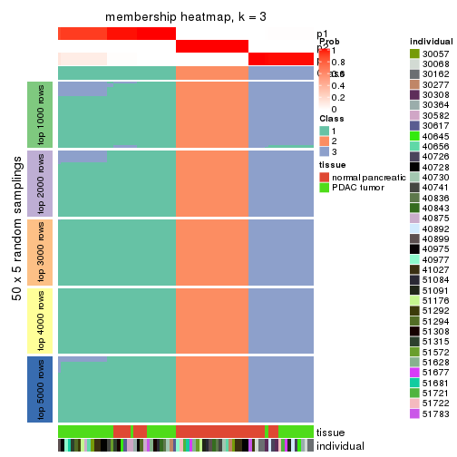
membership_heatmap(res, k = 4)
membership_heatmap(res, k = 5)
membership_heatmap(res, k = 6)
As soon as we have had the classes for columns, we can look for signatures which are significantly different between classes which can be candidate marks for certain classes. Following are the heatmaps for signatures.
Signature heatmaps where rows are scaled:
get_signatures(res, k = 2)
get_signatures(res, k = 3)
get_signatures(res, k = 4)
get_signatures(res, k = 5)
get_signatures(res, k = 6)
Signature heatmaps where rows are not scaled:
get_signatures(res, k = 2, scale_rows = FALSE)

get_signatures(res, k = 3, scale_rows = FALSE)
get_signatures(res, k = 4, scale_rows = FALSE)
get_signatures(res, k = 5, scale_rows = FALSE)
get_signatures(res, k = 6, scale_rows = FALSE)
Compare the overlap of signatures from different k:
compare_signatures(res)

get_signature() returns a data frame invisibly. TO get the list of signatures, the function
call should be assigned to a variable explicitly. In following code, if plot argument is set
to FALSE, no heatmap is plotted while only the differential analysis is performed.
# code only for demonstration
tb = get_signature(res, k = ..., plot = FALSE)
An example of the output of tb is:
#> which_row fdr mean_1 mean_2 scaled_mean_1 scaled_mean_2 km
#> 1 38 0.042760348 8.373488 9.131774 -0.5533452 0.5164555 1
#> 2 40 0.018707592 7.106213 8.469186 -0.6173731 0.5762149 1
#> 3 55 0.019134737 10.221463 11.207825 -0.6159697 0.5749050 1
#> 4 59 0.006059896 5.921854 7.869574 -0.6899429 0.6439467 1
#> 5 60 0.018055526 8.928898 10.211722 -0.6204761 0.5791110 1
#> 6 98 0.009384629 15.714769 14.887706 0.6635654 -0.6193277 2
...
The columns in tb are:
which_row: row indices corresponding to the input matrix.fdr: FDR for the differential test. mean_x: The mean value in group x.scaled_mean_x: The mean value in group x after rows are scaled.km: Row groups if k-means clustering is applied to rows.UMAP plot which shows how samples are separated.
dimension_reduction(res, k = 2, method = "UMAP")
dimension_reduction(res, k = 3, method = "UMAP")
dimension_reduction(res, k = 4, method = "UMAP")
dimension_reduction(res, k = 5, method = "UMAP")
dimension_reduction(res, k = 6, method = "UMAP")
Following heatmap shows how subgroups are split when increasing k:
collect_classes(res)
Test correlation between subgroups and known annotations. If the known annotation is numeric, one-way ANOVA test is applied, and if the known annotation is discrete, chi-squared contingency table test is applied.
test_to_known_factors(res)
#> n tissue(p) individual(p) k
#> MAD:hclust 78 1.26e-07 0.9268 2
#> MAD:hclust 78 1.24e-07 0.2503 3
#> MAD:hclust 72 3.18e-08 0.2465 4
#> MAD:hclust 78 2.53e-09 0.2384 5
#> MAD:hclust 78 2.63e-09 0.0976 6
If matrix rows can be associated to genes, consider to use functional_enrichment(res,
...) to perform function enrichment for the signature genes. See this vignette for more detailed explanations.
The object with results only for a single top-value method and a single partition method can be extracted as:
res = res_list["MAD", "kmeans"]
# you can also extract it by
# res = res_list["MAD:kmeans"]
A summary of res and all the functions that can be applied to it:
res
#> A 'ConsensusPartition' object with k = 2, 3, 4, 5, 6.
#> On a matrix with 51941 rows and 78 columns.
#> Top rows (1000, 2000, 3000, 4000, 5000) are extracted by 'MAD' method.
#> Subgroups are detected by 'kmeans' method.
#> Performed in total 1250 partitions by row resampling.
#> Best k for subgroups seems to be 2.
#>
#> Following methods can be applied to this 'ConsensusPartition' object:
#> [1] "cola_report" "collect_classes" "collect_plots"
#> [4] "collect_stats" "colnames" "compare_signatures"
#> [7] "consensus_heatmap" "dimension_reduction" "functional_enrichment"
#> [10] "get_anno_col" "get_anno" "get_classes"
#> [13] "get_consensus" "get_matrix" "get_membership"
#> [16] "get_param" "get_signatures" "get_stats"
#> [19] "is_best_k" "is_stable_k" "membership_heatmap"
#> [22] "ncol" "nrow" "plot_ecdf"
#> [25] "rownames" "select_partition_number" "show"
#> [28] "suggest_best_k" "test_to_known_factors"
collect_plots() function collects all the plots made from res for all k (number of partitions)
into one single page to provide an easy and fast comparison between different k.
collect_plots(res)
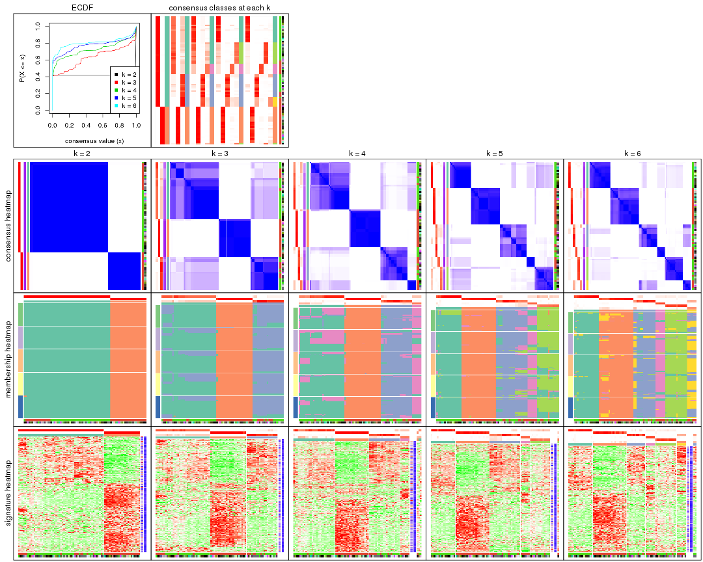
The plots are:
k and the heatmap of
predicted classes for each k.k.k.k.All the plots in panels can be made by individual functions and they are plotted later in this section.
select_partition_number() produces several plots showing different
statistics for choosing “optimized” k. There are following statistics:
k;k, the area increased is defined as \(A_k - A_{k-1}\).The detailed explanations of these statistics can be found in the cola vignette.
Generally speaking, lower PAC score, higher mean silhouette score or higher
concordance corresponds to better partition. Rand index and Jaccard index
measure how similar the current partition is compared to partition with k-1.
If they are too similar, we won't accept k is better than k-1.
select_partition_number(res)
The numeric values for all these statistics can be obtained by get_stats().
get_stats(res)
#> k 1-PAC mean_silhouette concordance area_increased Rand Jaccard
#> 2 2 1.000 1.000 1.000 0.4220 0.579 0.579
#> 3 3 0.665 0.861 0.878 0.4923 0.767 0.597
#> 4 4 0.772 0.814 0.856 0.1530 0.942 0.832
#> 5 5 0.816 0.883 0.867 0.0672 0.919 0.723
#> 6 6 0.879 0.853 0.882 0.0429 0.972 0.870
suggest_best_k() suggests the best \(k\) based on these statistics. The rules are as follows:
suggest_best_k(res)
#> [1] 2
Following shows the table of the partitions (You need to click the show/hide
code output link to see it). The membership matrix (columns with name p*)
is inferred by
clue::cl_consensus()
function with the SE method. Basically the value in the membership matrix
represents the probability to belong to a certain group. The finall class
label for an item is determined with the group with highest probability it
belongs to.
In get_classes() function, the entropy is calculated from the membership
matrix and the silhouette score is calculated from the consensus matrix.
cbind(get_classes(res, k = 2), get_membership(res, k = 2))
#> class entropy silhouette p1 p2
#> GSM388115 1 0.0000 1.000 1.000 0.000
#> GSM388116 1 0.0000 1.000 1.000 0.000
#> GSM388117 1 0.0000 1.000 1.000 0.000
#> GSM388118 1 0.0000 1.000 1.000 0.000
#> GSM388119 1 0.0000 1.000 1.000 0.000
#> GSM388120 1 0.0000 1.000 1.000 0.000
#> GSM388121 1 0.0000 1.000 1.000 0.000
#> GSM388122 1 0.0000 1.000 1.000 0.000
#> GSM388123 1 0.0000 1.000 1.000 0.000
#> GSM388124 1 0.0000 1.000 1.000 0.000
#> GSM388125 1 0.0000 1.000 1.000 0.000
#> GSM388126 1 0.0000 1.000 1.000 0.000
#> GSM388127 1 0.0000 1.000 1.000 0.000
#> GSM388128 1 0.0000 1.000 1.000 0.000
#> GSM388129 1 0.0000 1.000 1.000 0.000
#> GSM388130 1 0.0000 1.000 1.000 0.000
#> GSM388131 1 0.0000 1.000 1.000 0.000
#> GSM388132 1 0.0000 1.000 1.000 0.000
#> GSM388133 1 0.0000 1.000 1.000 0.000
#> GSM388134 1 0.0000 1.000 1.000 0.000
#> GSM388135 1 0.0000 1.000 1.000 0.000
#> GSM388136 1 0.0000 1.000 1.000 0.000
#> GSM388137 1 0.0000 1.000 1.000 0.000
#> GSM388140 1 0.0000 1.000 1.000 0.000
#> GSM388141 1 0.0000 1.000 1.000 0.000
#> GSM388142 1 0.0000 1.000 1.000 0.000
#> GSM388143 1 0.0000 1.000 1.000 0.000
#> GSM388144 1 0.0000 1.000 1.000 0.000
#> GSM388145 1 0.0672 0.992 0.992 0.008
#> GSM388146 1 0.0000 1.000 1.000 0.000
#> GSM388147 1 0.0000 1.000 1.000 0.000
#> GSM388148 1 0.0000 1.000 1.000 0.000
#> GSM388149 1 0.0000 1.000 1.000 0.000
#> GSM388150 1 0.0000 1.000 1.000 0.000
#> GSM388151 1 0.0000 1.000 1.000 0.000
#> GSM388152 1 0.0000 1.000 1.000 0.000
#> GSM388153 1 0.0000 1.000 1.000 0.000
#> GSM388139 1 0.0000 1.000 1.000 0.000
#> GSM388138 1 0.0000 1.000 1.000 0.000
#> GSM388076 1 0.0000 1.000 1.000 0.000
#> GSM388077 1 0.0000 1.000 1.000 0.000
#> GSM388078 2 0.0000 1.000 0.000 1.000
#> GSM388079 2 0.0000 1.000 0.000 1.000
#> GSM388080 2 0.0000 1.000 0.000 1.000
#> GSM388081 2 0.0000 1.000 0.000 1.000
#> GSM388082 2 0.0000 1.000 0.000 1.000
#> GSM388083 1 0.0000 1.000 1.000 0.000
#> GSM388084 2 0.0000 1.000 0.000 1.000
#> GSM388085 1 0.0000 1.000 1.000 0.000
#> GSM388086 1 0.0000 1.000 1.000 0.000
#> GSM388087 1 0.0000 1.000 1.000 0.000
#> GSM388088 1 0.0000 1.000 1.000 0.000
#> GSM388089 1 0.0000 1.000 1.000 0.000
#> GSM388090 2 0.0000 1.000 0.000 1.000
#> GSM388091 1 0.0000 1.000 1.000 0.000
#> GSM388092 2 0.0000 1.000 0.000 1.000
#> GSM388093 2 0.0000 1.000 0.000 1.000
#> GSM388094 2 0.0000 1.000 0.000 1.000
#> GSM388095 2 0.0000 1.000 0.000 1.000
#> GSM388096 1 0.0000 1.000 1.000 0.000
#> GSM388097 1 0.0000 1.000 1.000 0.000
#> GSM388098 2 0.0000 1.000 0.000 1.000
#> GSM388101 2 0.0000 1.000 0.000 1.000
#> GSM388102 2 0.0000 1.000 0.000 1.000
#> GSM388103 2 0.0000 1.000 0.000 1.000
#> GSM388104 1 0.0000 1.000 1.000 0.000
#> GSM388105 1 0.0000 1.000 1.000 0.000
#> GSM388106 1 0.0672 0.992 0.992 0.008
#> GSM388107 1 0.0000 1.000 1.000 0.000
#> GSM388108 2 0.0000 1.000 0.000 1.000
#> GSM388109 2 0.0000 1.000 0.000 1.000
#> GSM388110 2 0.0000 1.000 0.000 1.000
#> GSM388111 2 0.0000 1.000 0.000 1.000
#> GSM388112 2 0.0000 1.000 0.000 1.000
#> GSM388113 2 0.0000 1.000 0.000 1.000
#> GSM388114 1 0.0000 1.000 1.000 0.000
#> GSM388100 2 0.0000 1.000 0.000 1.000
#> GSM388099 2 0.0000 1.000 0.000 1.000
cbind(get_classes(res, k = 3), get_membership(res, k = 3))
#> class entropy silhouette p1 p2 p3
#> GSM388115 3 0.2165 0.931 0.064 0.000 0.936
#> GSM388116 3 0.2165 0.931 0.064 0.000 0.936
#> GSM388117 1 0.5327 0.833 0.728 0.000 0.272
#> GSM388118 1 0.5327 0.833 0.728 0.000 0.272
#> GSM388119 1 0.5327 0.833 0.728 0.000 0.272
#> GSM388120 1 0.5327 0.833 0.728 0.000 0.272
#> GSM388121 1 0.5327 0.833 0.728 0.000 0.272
#> GSM388122 3 0.2165 0.931 0.064 0.000 0.936
#> GSM388123 1 0.4555 0.810 0.800 0.000 0.200
#> GSM388124 3 0.0237 0.899 0.004 0.000 0.996
#> GSM388125 3 0.2165 0.931 0.064 0.000 0.936
#> GSM388126 1 0.4796 0.656 0.780 0.000 0.220
#> GSM388127 1 0.5178 0.830 0.744 0.000 0.256
#> GSM388128 3 0.2165 0.931 0.064 0.000 0.936
#> GSM388129 1 0.5327 0.833 0.728 0.000 0.272
#> GSM388130 3 0.2165 0.931 0.064 0.000 0.936
#> GSM388131 1 0.5327 0.833 0.728 0.000 0.272
#> GSM388132 1 0.4346 0.804 0.816 0.000 0.184
#> GSM388133 1 0.5327 0.833 0.728 0.000 0.272
#> GSM388134 1 0.4291 0.802 0.820 0.000 0.180
#> GSM388135 1 0.5327 0.833 0.728 0.000 0.272
#> GSM388136 3 0.5138 0.655 0.252 0.000 0.748
#> GSM388137 1 0.6154 0.648 0.592 0.000 0.408
#> GSM388140 1 0.2356 0.735 0.928 0.000 0.072
#> GSM388141 3 0.3879 0.825 0.152 0.000 0.848
#> GSM388142 1 0.5327 0.833 0.728 0.000 0.272
#> GSM388143 1 0.5327 0.833 0.728 0.000 0.272
#> GSM388144 1 0.5327 0.833 0.728 0.000 0.272
#> GSM388145 1 0.2651 0.726 0.928 0.012 0.060
#> GSM388146 1 0.5327 0.833 0.728 0.000 0.272
#> GSM388147 1 0.5327 0.833 0.728 0.000 0.272
#> GSM388148 1 0.2356 0.735 0.928 0.000 0.072
#> GSM388149 3 0.2796 0.903 0.092 0.000 0.908
#> GSM388150 1 0.5327 0.833 0.728 0.000 0.272
#> GSM388151 3 0.2165 0.931 0.064 0.000 0.936
#> GSM388152 3 0.5138 0.655 0.252 0.000 0.748
#> GSM388153 1 0.4291 0.802 0.820 0.000 0.180
#> GSM388139 1 0.5327 0.833 0.728 0.000 0.272
#> GSM388138 1 0.5327 0.833 0.728 0.000 0.272
#> GSM388076 3 0.0237 0.899 0.004 0.000 0.996
#> GSM388077 3 0.0237 0.899 0.004 0.000 0.996
#> GSM388078 2 0.0237 0.995 0.000 0.996 0.004
#> GSM388079 2 0.0237 0.995 0.000 0.996 0.004
#> GSM388080 2 0.0000 0.995 0.000 1.000 0.000
#> GSM388081 2 0.0000 0.995 0.000 1.000 0.000
#> GSM388082 2 0.0237 0.995 0.000 0.996 0.004
#> GSM388083 3 0.0237 0.899 0.004 0.000 0.996
#> GSM388084 2 0.0000 0.995 0.000 1.000 0.000
#> GSM388085 3 0.2165 0.931 0.064 0.000 0.936
#> GSM388086 1 0.4399 0.543 0.812 0.000 0.188
#> GSM388087 1 0.4399 0.543 0.812 0.000 0.188
#> GSM388088 1 0.4399 0.543 0.812 0.000 0.188
#> GSM388089 1 0.4399 0.543 0.812 0.000 0.188
#> GSM388090 2 0.0000 0.995 0.000 1.000 0.000
#> GSM388091 3 0.2165 0.931 0.064 0.000 0.936
#> GSM388092 2 0.0237 0.995 0.000 0.996 0.004
#> GSM388093 2 0.0237 0.995 0.000 0.996 0.004
#> GSM388094 2 0.0000 0.995 0.000 1.000 0.000
#> GSM388095 2 0.0000 0.995 0.000 1.000 0.000
#> GSM388096 1 0.5178 0.830 0.744 0.000 0.256
#> GSM388097 3 0.2165 0.931 0.064 0.000 0.936
#> GSM388098 2 0.0237 0.995 0.000 0.996 0.004
#> GSM388101 2 0.0000 0.995 0.000 1.000 0.000
#> GSM388102 2 0.0000 0.995 0.000 1.000 0.000
#> GSM388103 2 0.0237 0.995 0.000 0.996 0.004
#> GSM388104 3 0.0237 0.899 0.004 0.000 0.996
#> GSM388105 1 0.5327 0.833 0.728 0.000 0.272
#> GSM388106 1 0.4399 0.543 0.812 0.000 0.188
#> GSM388107 1 0.4399 0.543 0.812 0.000 0.188
#> GSM388108 2 0.0237 0.995 0.000 0.996 0.004
#> GSM388109 2 0.0000 0.995 0.000 1.000 0.000
#> GSM388110 2 0.0237 0.995 0.000 0.996 0.004
#> GSM388111 2 0.0000 0.995 0.000 1.000 0.000
#> GSM388112 2 0.0000 0.995 0.000 1.000 0.000
#> GSM388113 2 0.0237 0.995 0.000 0.996 0.004
#> GSM388114 3 0.0237 0.899 0.004 0.000 0.996
#> GSM388100 2 0.0000 0.995 0.000 1.000 0.000
#> GSM388099 2 0.2860 0.920 0.084 0.912 0.004
cbind(get_classes(res, k = 4), get_membership(res, k = 4))
#> class entropy silhouette p1 p2 p3 p4
#> GSM388115 3 0.2542 0.874 0.012 0.000 0.904 0.084
#> GSM388116 3 0.2542 0.874 0.012 0.000 0.904 0.084
#> GSM388117 1 0.1118 0.758 0.964 0.000 0.036 0.000
#> GSM388118 1 0.1118 0.758 0.964 0.000 0.036 0.000
#> GSM388119 1 0.1118 0.758 0.964 0.000 0.036 0.000
#> GSM388120 1 0.1118 0.758 0.964 0.000 0.036 0.000
#> GSM388121 1 0.1118 0.758 0.964 0.000 0.036 0.000
#> GSM388122 3 0.1356 0.879 0.008 0.000 0.960 0.032
#> GSM388123 1 0.5756 0.496 0.568 0.000 0.032 0.400
#> GSM388124 3 0.3142 0.857 0.008 0.000 0.860 0.132
#> GSM388125 3 0.0336 0.884 0.008 0.000 0.992 0.000
#> GSM388126 1 0.5999 -0.377 0.552 0.000 0.044 0.404
#> GSM388127 1 0.4019 0.721 0.792 0.000 0.012 0.196
#> GSM388128 3 0.1356 0.879 0.008 0.000 0.960 0.032
#> GSM388129 1 0.1004 0.758 0.972 0.000 0.024 0.004
#> GSM388130 3 0.1356 0.879 0.008 0.000 0.960 0.032
#> GSM388131 1 0.4245 0.721 0.784 0.000 0.020 0.196
#> GSM388132 1 0.3448 0.729 0.828 0.000 0.004 0.168
#> GSM388133 1 0.4136 0.723 0.788 0.000 0.016 0.196
#> GSM388134 1 0.5279 0.515 0.588 0.000 0.012 0.400
#> GSM388135 1 0.3372 0.753 0.868 0.000 0.036 0.096
#> GSM388136 3 0.5472 0.555 0.280 0.000 0.676 0.044
#> GSM388137 1 0.3812 0.623 0.832 0.000 0.140 0.028
#> GSM388140 1 0.4936 0.524 0.624 0.000 0.004 0.372
#> GSM388141 3 0.3731 0.796 0.120 0.000 0.844 0.036
#> GSM388142 1 0.1118 0.758 0.964 0.000 0.036 0.000
#> GSM388143 1 0.1118 0.758 0.964 0.000 0.036 0.000
#> GSM388144 1 0.1118 0.758 0.964 0.000 0.036 0.000
#> GSM388145 1 0.4978 0.521 0.612 0.000 0.004 0.384
#> GSM388146 1 0.1118 0.758 0.964 0.000 0.036 0.000
#> GSM388147 1 0.3725 0.729 0.812 0.000 0.008 0.180
#> GSM388148 1 0.4936 0.524 0.624 0.000 0.004 0.372
#> GSM388149 3 0.3245 0.822 0.100 0.000 0.872 0.028
#> GSM388150 1 0.1929 0.754 0.940 0.000 0.036 0.024
#> GSM388151 3 0.0336 0.884 0.008 0.000 0.992 0.000
#> GSM388152 3 0.5472 0.555 0.280 0.000 0.676 0.044
#> GSM388153 1 0.5279 0.515 0.588 0.000 0.012 0.400
#> GSM388139 1 0.1118 0.758 0.964 0.000 0.036 0.000
#> GSM388138 1 0.1118 0.758 0.964 0.000 0.036 0.000
#> GSM388076 3 0.3681 0.839 0.008 0.000 0.816 0.176
#> GSM388077 3 0.3681 0.839 0.008 0.000 0.816 0.176
#> GSM388078 2 0.0188 0.979 0.000 0.996 0.000 0.004
#> GSM388079 2 0.0188 0.979 0.000 0.996 0.000 0.004
#> GSM388080 2 0.0000 0.979 0.000 1.000 0.000 0.000
#> GSM388081 2 0.0000 0.979 0.000 1.000 0.000 0.000
#> GSM388082 2 0.0188 0.979 0.000 0.996 0.000 0.004
#> GSM388083 3 0.3351 0.849 0.008 0.000 0.844 0.148
#> GSM388084 2 0.0000 0.979 0.000 1.000 0.000 0.000
#> GSM388085 3 0.0336 0.884 0.008 0.000 0.992 0.000
#> GSM388086 4 0.5254 0.995 0.300 0.000 0.028 0.672
#> GSM388087 4 0.5254 0.995 0.300 0.000 0.028 0.672
#> GSM388088 4 0.5254 0.995 0.300 0.000 0.028 0.672
#> GSM388089 4 0.5254 0.995 0.300 0.000 0.028 0.672
#> GSM388090 2 0.0188 0.978 0.000 0.996 0.000 0.004
#> GSM388091 3 0.1356 0.879 0.008 0.000 0.960 0.032
#> GSM388092 2 0.0336 0.977 0.000 0.992 0.000 0.008
#> GSM388093 2 0.0336 0.977 0.000 0.992 0.000 0.008
#> GSM388094 2 0.0000 0.979 0.000 1.000 0.000 0.000
#> GSM388095 2 0.0000 0.979 0.000 1.000 0.000 0.000
#> GSM388096 1 0.4540 0.709 0.772 0.000 0.032 0.196
#> GSM388097 3 0.0336 0.884 0.008 0.000 0.992 0.000
#> GSM388098 2 0.0188 0.979 0.000 0.996 0.000 0.004
#> GSM388101 2 0.0000 0.979 0.000 1.000 0.000 0.000
#> GSM388102 2 0.0188 0.978 0.000 0.996 0.000 0.004
#> GSM388103 2 0.0188 0.979 0.000 0.996 0.000 0.004
#> GSM388104 3 0.3142 0.857 0.008 0.000 0.860 0.132
#> GSM388105 1 0.4245 0.721 0.784 0.000 0.020 0.196
#> GSM388106 4 0.5022 0.975 0.300 0.004 0.012 0.684
#> GSM388107 4 0.5254 0.995 0.300 0.000 0.028 0.672
#> GSM388108 2 0.0188 0.979 0.000 0.996 0.000 0.004
#> GSM388109 2 0.0000 0.979 0.000 1.000 0.000 0.000
#> GSM388110 2 0.0188 0.979 0.000 0.996 0.000 0.004
#> GSM388111 2 0.0336 0.974 0.000 0.992 0.008 0.000
#> GSM388112 2 0.0000 0.979 0.000 1.000 0.000 0.000
#> GSM388113 2 0.0336 0.977 0.000 0.992 0.000 0.008
#> GSM388114 3 0.3351 0.849 0.008 0.000 0.844 0.148
#> GSM388100 2 0.0000 0.979 0.000 1.000 0.000 0.000
#> GSM388099 2 0.5686 0.389 0.032 0.592 0.000 0.376
cbind(get_classes(res, k = 5), get_membership(res, k = 5))
#> class entropy silhouette p1 p2 p3 p4 p5
#> GSM388115 3 0.4057 0.782 0.000 0.000 0.792 0.088 0.120
#> GSM388116 3 0.4057 0.782 0.000 0.000 0.792 0.088 0.120
#> GSM388117 1 0.0000 0.959 1.000 0.000 0.000 0.000 0.000
#> GSM388118 1 0.0000 0.959 1.000 0.000 0.000 0.000 0.000
#> GSM388119 1 0.0000 0.959 1.000 0.000 0.000 0.000 0.000
#> GSM388120 1 0.0000 0.959 1.000 0.000 0.000 0.000 0.000
#> GSM388121 1 0.0000 0.959 1.000 0.000 0.000 0.000 0.000
#> GSM388122 3 0.1121 0.808 0.000 0.000 0.956 0.000 0.044
#> GSM388123 5 0.4237 0.849 0.200 0.000 0.048 0.000 0.752
#> GSM388124 3 0.5243 0.739 0.000 0.000 0.680 0.132 0.188
#> GSM388125 3 0.0000 0.813 0.000 0.000 1.000 0.000 0.000
#> GSM388126 1 0.3048 0.665 0.820 0.000 0.000 0.176 0.004
#> GSM388127 5 0.4088 0.871 0.304 0.000 0.008 0.000 0.688
#> GSM388128 3 0.1121 0.808 0.000 0.000 0.956 0.000 0.044
#> GSM388129 1 0.0290 0.951 0.992 0.000 0.000 0.000 0.008
#> GSM388130 3 0.1121 0.808 0.000 0.000 0.956 0.000 0.044
#> GSM388131 5 0.4088 0.871 0.304 0.000 0.008 0.000 0.688
#> GSM388132 5 0.3999 0.837 0.344 0.000 0.000 0.000 0.656
#> GSM388133 5 0.4088 0.871 0.304 0.000 0.008 0.000 0.688
#> GSM388134 5 0.4299 0.867 0.220 0.000 0.008 0.028 0.744
#> GSM388135 1 0.1671 0.853 0.924 0.000 0.000 0.000 0.076
#> GSM388136 3 0.4453 0.625 0.228 0.000 0.724 0.000 0.048
#> GSM388137 1 0.3160 0.801 0.872 0.000 0.072 0.032 0.024
#> GSM388140 5 0.4301 0.864 0.260 0.000 0.000 0.028 0.712
#> GSM388141 3 0.4254 0.640 0.220 0.000 0.740 0.000 0.040
#> GSM388142 1 0.0000 0.959 1.000 0.000 0.000 0.000 0.000
#> GSM388143 1 0.0000 0.959 1.000 0.000 0.000 0.000 0.000
#> GSM388144 1 0.0000 0.959 1.000 0.000 0.000 0.000 0.000
#> GSM388145 5 0.4384 0.864 0.228 0.000 0.000 0.044 0.728
#> GSM388146 1 0.0000 0.959 1.000 0.000 0.000 0.000 0.000
#> GSM388147 5 0.4242 0.701 0.428 0.000 0.000 0.000 0.572
#> GSM388148 5 0.4301 0.864 0.260 0.000 0.000 0.028 0.712
#> GSM388149 3 0.3432 0.726 0.132 0.000 0.828 0.000 0.040
#> GSM388150 1 0.0510 0.943 0.984 0.000 0.000 0.000 0.016
#> GSM388151 3 0.0000 0.813 0.000 0.000 1.000 0.000 0.000
#> GSM388152 3 0.4453 0.625 0.228 0.000 0.724 0.000 0.048
#> GSM388153 5 0.4299 0.867 0.220 0.000 0.008 0.028 0.744
#> GSM388139 1 0.0000 0.959 1.000 0.000 0.000 0.000 0.000
#> GSM388138 1 0.0000 0.959 1.000 0.000 0.000 0.000 0.000
#> GSM388076 3 0.5544 0.725 0.000 0.000 0.648 0.168 0.184
#> GSM388077 3 0.5544 0.725 0.000 0.000 0.648 0.168 0.184
#> GSM388078 2 0.0693 0.983 0.000 0.980 0.000 0.012 0.008
#> GSM388079 2 0.0693 0.983 0.000 0.980 0.000 0.012 0.008
#> GSM388080 2 0.0000 0.983 0.000 1.000 0.000 0.000 0.000
#> GSM388081 2 0.0000 0.983 0.000 1.000 0.000 0.000 0.000
#> GSM388082 2 0.0693 0.983 0.000 0.980 0.000 0.012 0.008
#> GSM388083 3 0.5314 0.736 0.000 0.000 0.672 0.136 0.192
#> GSM388084 2 0.0000 0.983 0.000 1.000 0.000 0.000 0.000
#> GSM388085 3 0.0000 0.813 0.000 0.000 1.000 0.000 0.000
#> GSM388086 4 0.4391 0.998 0.164 0.000 0.008 0.768 0.060
#> GSM388087 4 0.4326 0.999 0.164 0.000 0.008 0.772 0.056
#> GSM388088 4 0.4326 0.999 0.164 0.000 0.008 0.772 0.056
#> GSM388089 4 0.4391 0.998 0.164 0.000 0.008 0.768 0.060
#> GSM388090 2 0.1197 0.963 0.000 0.952 0.000 0.048 0.000
#> GSM388091 3 0.1121 0.808 0.000 0.000 0.956 0.000 0.044
#> GSM388092 2 0.1408 0.971 0.000 0.948 0.000 0.044 0.008
#> GSM388093 2 0.1697 0.961 0.000 0.932 0.000 0.060 0.008
#> GSM388094 2 0.0000 0.983 0.000 1.000 0.000 0.000 0.000
#> GSM388095 2 0.0000 0.983 0.000 1.000 0.000 0.000 0.000
#> GSM388096 5 0.4597 0.860 0.260 0.000 0.044 0.000 0.696
#> GSM388097 3 0.0404 0.812 0.000 0.000 0.988 0.000 0.012
#> GSM388098 2 0.0693 0.983 0.000 0.980 0.000 0.012 0.008
#> GSM388101 2 0.0000 0.983 0.000 1.000 0.000 0.000 0.000
#> GSM388102 2 0.1197 0.963 0.000 0.952 0.000 0.048 0.000
#> GSM388103 2 0.0693 0.983 0.000 0.980 0.000 0.012 0.008
#> GSM388104 3 0.5274 0.739 0.000 0.000 0.676 0.132 0.192
#> GSM388105 5 0.4088 0.871 0.304 0.000 0.008 0.000 0.688
#> GSM388106 4 0.4326 0.999 0.164 0.000 0.008 0.772 0.056
#> GSM388107 4 0.4326 0.999 0.164 0.000 0.008 0.772 0.056
#> GSM388108 2 0.0693 0.983 0.000 0.980 0.000 0.012 0.008
#> GSM388109 2 0.0000 0.983 0.000 1.000 0.000 0.000 0.000
#> GSM388110 2 0.0693 0.983 0.000 0.980 0.000 0.012 0.008
#> GSM388111 2 0.0865 0.975 0.000 0.972 0.000 0.004 0.024
#> GSM388112 2 0.0000 0.983 0.000 1.000 0.000 0.000 0.000
#> GSM388113 2 0.1331 0.973 0.000 0.952 0.000 0.040 0.008
#> GSM388114 3 0.5314 0.736 0.000 0.000 0.672 0.136 0.192
#> GSM388100 2 0.0404 0.981 0.000 0.988 0.000 0.012 0.000
#> GSM388099 5 0.4873 0.445 0.000 0.244 0.000 0.068 0.688
cbind(get_classes(res, k = 6), get_membership(res, k = 6))
#> class entropy silhouette p1 p2 p3 p4 p5 p6
#> GSM388115 3 0.5337 -0.581 0.000 0.000 0.540 0.048 0.032 0.380
#> GSM388116 3 0.5337 -0.581 0.000 0.000 0.540 0.048 0.032 0.380
#> GSM388117 1 0.0000 0.966 1.000 0.000 0.000 0.000 0.000 0.000
#> GSM388118 1 0.0000 0.966 1.000 0.000 0.000 0.000 0.000 0.000
#> GSM388119 1 0.0260 0.965 0.992 0.000 0.000 0.000 0.000 0.008
#> GSM388120 1 0.0260 0.965 0.992 0.000 0.000 0.000 0.000 0.008
#> GSM388121 1 0.0632 0.962 0.976 0.000 0.000 0.000 0.000 0.024
#> GSM388122 3 0.1167 0.730 0.000 0.000 0.960 0.008 0.020 0.012
#> GSM388123 5 0.1781 0.939 0.060 0.000 0.008 0.008 0.924 0.000
#> GSM388124 6 0.3828 0.940 0.000 0.000 0.440 0.000 0.000 0.560
#> GSM388125 3 0.0000 0.728 0.000 0.000 1.000 0.000 0.000 0.000
#> GSM388126 1 0.2513 0.878 0.888 0.000 0.000 0.060 0.008 0.044
#> GSM388127 5 0.2250 0.944 0.092 0.000 0.000 0.000 0.888 0.020
#> GSM388128 3 0.1065 0.730 0.000 0.000 0.964 0.008 0.020 0.008
#> GSM388129 1 0.0790 0.960 0.968 0.000 0.000 0.000 0.000 0.032
#> GSM388130 3 0.1065 0.730 0.000 0.000 0.964 0.008 0.020 0.008
#> GSM388131 5 0.2333 0.944 0.092 0.000 0.000 0.000 0.884 0.024
#> GSM388132 5 0.2383 0.942 0.096 0.000 0.000 0.000 0.880 0.024
#> GSM388133 5 0.2333 0.944 0.092 0.000 0.000 0.000 0.884 0.024
#> GSM388134 5 0.1643 0.943 0.068 0.000 0.000 0.008 0.924 0.000
#> GSM388135 1 0.1701 0.889 0.920 0.000 0.000 0.000 0.072 0.008
#> GSM388136 3 0.3769 0.586 0.176 0.000 0.776 0.000 0.012 0.036
#> GSM388137 1 0.3335 0.857 0.860 0.000 0.032 0.032 0.032 0.044
#> GSM388140 5 0.1701 0.944 0.072 0.000 0.000 0.008 0.920 0.000
#> GSM388141 3 0.3471 0.584 0.188 0.000 0.784 0.000 0.008 0.020
#> GSM388142 1 0.0363 0.965 0.988 0.000 0.000 0.000 0.000 0.012
#> GSM388143 1 0.0000 0.966 1.000 0.000 0.000 0.000 0.000 0.000
#> GSM388144 1 0.0363 0.965 0.988 0.000 0.000 0.000 0.000 0.012
#> GSM388145 5 0.2136 0.934 0.064 0.000 0.000 0.016 0.908 0.012
#> GSM388146 1 0.0000 0.966 1.000 0.000 0.000 0.000 0.000 0.000
#> GSM388147 5 0.3027 0.889 0.148 0.000 0.000 0.000 0.824 0.028
#> GSM388148 5 0.1701 0.944 0.072 0.000 0.000 0.008 0.920 0.000
#> GSM388149 3 0.2225 0.675 0.092 0.000 0.892 0.000 0.008 0.008
#> GSM388150 1 0.0692 0.951 0.976 0.000 0.004 0.000 0.020 0.000
#> GSM388151 3 0.0000 0.728 0.000 0.000 1.000 0.000 0.000 0.000
#> GSM388152 3 0.3769 0.586 0.176 0.000 0.776 0.000 0.012 0.036
#> GSM388153 5 0.1643 0.943 0.068 0.000 0.000 0.008 0.924 0.000
#> GSM388139 1 0.0260 0.965 0.992 0.000 0.000 0.000 0.000 0.008
#> GSM388138 1 0.0713 0.961 0.972 0.000 0.000 0.000 0.000 0.028
#> GSM388076 6 0.4759 0.916 0.000 0.000 0.396 0.044 0.004 0.556
#> GSM388077 6 0.4759 0.916 0.000 0.000 0.396 0.044 0.004 0.556
#> GSM388078 2 0.0547 0.932 0.000 0.980 0.000 0.000 0.000 0.020
#> GSM388079 2 0.0547 0.932 0.000 0.980 0.000 0.000 0.000 0.020
#> GSM388080 2 0.0000 0.933 0.000 1.000 0.000 0.000 0.000 0.000
#> GSM388081 2 0.0000 0.933 0.000 1.000 0.000 0.000 0.000 0.000
#> GSM388082 2 0.0547 0.932 0.000 0.980 0.000 0.000 0.000 0.020
#> GSM388083 6 0.4123 0.946 0.000 0.000 0.420 0.012 0.000 0.568
#> GSM388084 2 0.0000 0.933 0.000 1.000 0.000 0.000 0.000 0.000
#> GSM388085 3 0.0000 0.728 0.000 0.000 1.000 0.000 0.000 0.000
#> GSM388086 4 0.2790 0.987 0.088 0.000 0.000 0.868 0.032 0.012
#> GSM388087 4 0.2282 0.993 0.088 0.000 0.000 0.888 0.024 0.000
#> GSM388088 4 0.2282 0.993 0.088 0.000 0.000 0.888 0.024 0.000
#> GSM388089 4 0.2969 0.985 0.088 0.000 0.000 0.860 0.032 0.020
#> GSM388090 2 0.3853 0.816 0.000 0.756 0.000 0.044 0.004 0.196
#> GSM388091 3 0.1065 0.730 0.000 0.000 0.964 0.008 0.020 0.008
#> GSM388092 2 0.3781 0.827 0.000 0.756 0.000 0.036 0.004 0.204
#> GSM388093 2 0.4024 0.809 0.000 0.732 0.000 0.044 0.004 0.220
#> GSM388094 2 0.0000 0.933 0.000 1.000 0.000 0.000 0.000 0.000
#> GSM388095 2 0.0603 0.932 0.000 0.980 0.000 0.004 0.000 0.016
#> GSM388096 5 0.1901 0.944 0.076 0.000 0.008 0.000 0.912 0.004
#> GSM388097 3 0.0976 0.728 0.000 0.000 0.968 0.008 0.016 0.008
#> GSM388098 2 0.1082 0.931 0.000 0.956 0.000 0.004 0.000 0.040
#> GSM388101 2 0.0000 0.933 0.000 1.000 0.000 0.000 0.000 0.000
#> GSM388102 2 0.3853 0.816 0.000 0.756 0.000 0.044 0.004 0.196
#> GSM388103 2 0.1082 0.931 0.000 0.956 0.000 0.004 0.000 0.040
#> GSM388104 6 0.3817 0.940 0.000 0.000 0.432 0.000 0.000 0.568
#> GSM388105 5 0.2333 0.944 0.092 0.000 0.000 0.000 0.884 0.024
#> GSM388106 4 0.2230 0.990 0.084 0.000 0.000 0.892 0.024 0.000
#> GSM388107 4 0.2282 0.993 0.088 0.000 0.000 0.888 0.024 0.000
#> GSM388108 2 0.0935 0.932 0.000 0.964 0.000 0.004 0.000 0.032
#> GSM388109 2 0.0603 0.932 0.000 0.980 0.000 0.004 0.000 0.016
#> GSM388110 2 0.0547 0.932 0.000 0.980 0.000 0.000 0.000 0.020
#> GSM388111 2 0.2100 0.871 0.000 0.884 0.000 0.000 0.004 0.112
#> GSM388112 2 0.0000 0.933 0.000 1.000 0.000 0.000 0.000 0.000
#> GSM388113 2 0.2664 0.886 0.000 0.848 0.000 0.016 0.000 0.136
#> GSM388114 6 0.4123 0.946 0.000 0.000 0.420 0.012 0.000 0.568
#> GSM388100 2 0.2911 0.868 0.000 0.832 0.000 0.024 0.000 0.144
#> GSM388099 5 0.4544 0.692 0.000 0.064 0.000 0.048 0.748 0.140
Heatmaps for the consensus matrix. It visualizes the probability of two samples to be in a same group.
consensus_heatmap(res, k = 2)
consensus_heatmap(res, k = 3)
consensus_heatmap(res, k = 4)
consensus_heatmap(res, k = 5)
consensus_heatmap(res, k = 6)
Heatmaps for the membership of samples in all partitions to see how consistent they are:
membership_heatmap(res, k = 2)
membership_heatmap(res, k = 3)
membership_heatmap(res, k = 4)
membership_heatmap(res, k = 5)
membership_heatmap(res, k = 6)
As soon as we have had the classes for columns, we can look for signatures which are significantly different between classes which can be candidate marks for certain classes. Following are the heatmaps for signatures.
Signature heatmaps where rows are scaled:
get_signatures(res, k = 2)
get_signatures(res, k = 3)
get_signatures(res, k = 4)
get_signatures(res, k = 5)
get_signatures(res, k = 6)
Signature heatmaps where rows are not scaled:
get_signatures(res, k = 2, scale_rows = FALSE)
get_signatures(res, k = 3, scale_rows = FALSE)
get_signatures(res, k = 4, scale_rows = FALSE)
get_signatures(res, k = 5, scale_rows = FALSE)
get_signatures(res, k = 6, scale_rows = FALSE)
Compare the overlap of signatures from different k:
compare_signatures(res)
get_signature() returns a data frame invisibly. TO get the list of signatures, the function
call should be assigned to a variable explicitly. In following code, if plot argument is set
to FALSE, no heatmap is plotted while only the differential analysis is performed.
# code only for demonstration
tb = get_signature(res, k = ..., plot = FALSE)
An example of the output of tb is:
#> which_row fdr mean_1 mean_2 scaled_mean_1 scaled_mean_2 km
#> 1 38 0.042760348 8.373488 9.131774 -0.5533452 0.5164555 1
#> 2 40 0.018707592 7.106213 8.469186 -0.6173731 0.5762149 1
#> 3 55 0.019134737 10.221463 11.207825 -0.6159697 0.5749050 1
#> 4 59 0.006059896 5.921854 7.869574 -0.6899429 0.6439467 1
#> 5 60 0.018055526 8.928898 10.211722 -0.6204761 0.5791110 1
#> 6 98 0.009384629 15.714769 14.887706 0.6635654 -0.6193277 2
...
The columns in tb are:
which_row: row indices corresponding to the input matrix.fdr: FDR for the differential test. mean_x: The mean value in group x.scaled_mean_x: The mean value in group x after rows are scaled.km: Row groups if k-means clustering is applied to rows.UMAP plot which shows how samples are separated.
dimension_reduction(res, k = 2, method = "UMAP")
dimension_reduction(res, k = 3, method = "UMAP")
dimension_reduction(res, k = 4, method = "UMAP")
dimension_reduction(res, k = 5, method = "UMAP")
dimension_reduction(res, k = 6, method = "UMAP")
Following heatmap shows how subgroups are split when increasing k:
collect_classes(res)
Test correlation between subgroups and known annotations. If the known annotation is numeric, one-way ANOVA test is applied, and if the known annotation is discrete, chi-squared contingency table test is applied.
test_to_known_factors(res)
#> n tissue(p) individual(p) k
#> MAD:kmeans 78 4.68e-08 0.946 2
#> MAD:kmeans 78 3.91e-08 0.298 3
#> MAD:kmeans 75 1.76e-10 0.293 4
#> MAD:kmeans 77 2.20e-10 0.460 5
#> MAD:kmeans 76 1.89e-10 0.437 6
If matrix rows can be associated to genes, consider to use functional_enrichment(res,
...) to perform function enrichment for the signature genes. See this vignette for more detailed explanations.
The object with results only for a single top-value method and a single partition method can be extracted as:
res = res_list["MAD", "skmeans"]
# you can also extract it by
# res = res_list["MAD:skmeans"]
A summary of res and all the functions that can be applied to it:
res
#> A 'ConsensusPartition' object with k = 2, 3, 4, 5, 6.
#> On a matrix with 51941 rows and 78 columns.
#> Top rows (1000, 2000, 3000, 4000, 5000) are extracted by 'MAD' method.
#> Subgroups are detected by 'skmeans' method.
#> Performed in total 1250 partitions by row resampling.
#> Best k for subgroups seems to be 6.
#>
#> Following methods can be applied to this 'ConsensusPartition' object:
#> [1] "cola_report" "collect_classes" "collect_plots"
#> [4] "collect_stats" "colnames" "compare_signatures"
#> [7] "consensus_heatmap" "dimension_reduction" "functional_enrichment"
#> [10] "get_anno_col" "get_anno" "get_classes"
#> [13] "get_consensus" "get_matrix" "get_membership"
#> [16] "get_param" "get_signatures" "get_stats"
#> [19] "is_best_k" "is_stable_k" "membership_heatmap"
#> [22] "ncol" "nrow" "plot_ecdf"
#> [25] "rownames" "select_partition_number" "show"
#> [28] "suggest_best_k" "test_to_known_factors"
collect_plots() function collects all the plots made from res for all k (number of partitions)
into one single page to provide an easy and fast comparison between different k.
collect_plots(res)
The plots are:
k and the heatmap of
predicted classes for each k.k.k.k.All the plots in panels can be made by individual functions and they are plotted later in this section.
select_partition_number() produces several plots showing different
statistics for choosing “optimized” k. There are following statistics:
k;k, the area increased is defined as \(A_k - A_{k-1}\).The detailed explanations of these statistics can be found in the cola vignette.
Generally speaking, lower PAC score, higher mean silhouette score or higher
concordance corresponds to better partition. Rand index and Jaccard index
measure how similar the current partition is compared to partition with k-1.
If they are too similar, we won't accept k is better than k-1.
select_partition_number(res)
The numeric values for all these statistics can be obtained by get_stats().
get_stats(res)
#> k 1-PAC mean_silhouette concordance area_increased Rand Jaccard
#> 2 2 0.922 0.965 0.984 0.4801 0.520 0.520
#> 3 3 0.961 0.944 0.975 0.4056 0.741 0.530
#> 4 4 0.937 0.955 0.969 0.0761 0.944 0.830
#> 5 5 1.000 0.962 0.986 0.0760 0.928 0.747
#> 6 6 0.942 0.898 0.914 0.0339 0.959 0.819
suggest_best_k() suggests the best \(k\) based on these statistics. The rules are as follows:
suggest_best_k(res)
#> [1] 6
#> attr(,"optional")
#> [1] 2 3 4 5
There is also optional best \(k\) = 2 3 4 5 that is worth to check.
Following shows the table of the partitions (You need to click the show/hide
code output link to see it). The membership matrix (columns with name p*)
is inferred by
clue::cl_consensus()
function with the SE method. Basically the value in the membership matrix
represents the probability to belong to a certain group. The finall class
label for an item is determined with the group with highest probability it
belongs to.
In get_classes() function, the entropy is calculated from the membership
matrix and the silhouette score is calculated from the consensus matrix.
cbind(get_classes(res, k = 2), get_membership(res, k = 2))
#> class entropy silhouette p1 p2
#> GSM388115 1 0.000 0.986 1.00 0.00
#> GSM388116 1 0.000 0.986 1.00 0.00
#> GSM388117 1 0.000 0.986 1.00 0.00
#> GSM388118 1 0.000 0.986 1.00 0.00
#> GSM388119 1 0.000 0.986 1.00 0.00
#> GSM388120 1 0.000 0.986 1.00 0.00
#> GSM388121 1 0.000 0.986 1.00 0.00
#> GSM388122 1 0.000 0.986 1.00 0.00
#> GSM388123 1 0.722 0.751 0.80 0.20
#> GSM388124 1 0.000 0.986 1.00 0.00
#> GSM388125 1 0.000 0.986 1.00 0.00
#> GSM388126 1 0.000 0.986 1.00 0.00
#> GSM388127 1 0.000 0.986 1.00 0.00
#> GSM388128 1 0.000 0.986 1.00 0.00
#> GSM388129 1 0.000 0.986 1.00 0.00
#> GSM388130 1 0.000 0.986 1.00 0.00
#> GSM388131 1 0.000 0.986 1.00 0.00
#> GSM388132 1 0.000 0.986 1.00 0.00
#> GSM388133 1 0.000 0.986 1.00 0.00
#> GSM388134 1 0.722 0.751 0.80 0.20
#> GSM388135 1 0.000 0.986 1.00 0.00
#> GSM388136 1 0.000 0.986 1.00 0.00
#> GSM388137 1 0.000 0.986 1.00 0.00
#> GSM388140 2 0.000 0.978 0.00 1.00
#> GSM388141 1 0.000 0.986 1.00 0.00
#> GSM388142 1 0.000 0.986 1.00 0.00
#> GSM388143 1 0.000 0.986 1.00 0.00
#> GSM388144 1 0.000 0.986 1.00 0.00
#> GSM388145 2 0.000 0.978 0.00 1.00
#> GSM388146 1 0.000 0.986 1.00 0.00
#> GSM388147 1 0.000 0.986 1.00 0.00
#> GSM388148 2 0.000 0.978 0.00 1.00
#> GSM388149 1 0.000 0.986 1.00 0.00
#> GSM388150 1 0.000 0.986 1.00 0.00
#> GSM388151 1 0.000 0.986 1.00 0.00
#> GSM388152 1 0.000 0.986 1.00 0.00
#> GSM388153 1 0.000 0.986 1.00 0.00
#> GSM388139 1 0.000 0.986 1.00 0.00
#> GSM388138 1 0.000 0.986 1.00 0.00
#> GSM388076 1 0.000 0.986 1.00 0.00
#> GSM388077 1 0.000 0.986 1.00 0.00
#> GSM388078 2 0.000 0.978 0.00 1.00
#> GSM388079 2 0.000 0.978 0.00 1.00
#> GSM388080 2 0.000 0.978 0.00 1.00
#> GSM388081 2 0.000 0.978 0.00 1.00
#> GSM388082 2 0.000 0.978 0.00 1.00
#> GSM388083 1 0.000 0.986 1.00 0.00
#> GSM388084 2 0.000 0.978 0.00 1.00
#> GSM388085 1 0.000 0.986 1.00 0.00
#> GSM388086 1 0.000 0.986 1.00 0.00
#> GSM388087 1 0.795 0.675 0.76 0.24
#> GSM388088 2 0.722 0.762 0.20 0.80
#> GSM388089 2 0.722 0.762 0.20 0.80
#> GSM388090 2 0.000 0.978 0.00 1.00
#> GSM388091 1 0.000 0.986 1.00 0.00
#> GSM388092 2 0.000 0.978 0.00 1.00
#> GSM388093 2 0.000 0.978 0.00 1.00
#> GSM388094 2 0.000 0.978 0.00 1.00
#> GSM388095 2 0.000 0.978 0.00 1.00
#> GSM388096 1 0.000 0.986 1.00 0.00
#> GSM388097 1 0.000 0.986 1.00 0.00
#> GSM388098 2 0.000 0.978 0.00 1.00
#> GSM388101 2 0.000 0.978 0.00 1.00
#> GSM388102 2 0.000 0.978 0.00 1.00
#> GSM388103 2 0.000 0.978 0.00 1.00
#> GSM388104 1 0.000 0.986 1.00 0.00
#> GSM388105 1 0.000 0.986 1.00 0.00
#> GSM388106 2 0.000 0.978 0.00 1.00
#> GSM388107 2 0.722 0.762 0.20 0.80
#> GSM388108 2 0.000 0.978 0.00 1.00
#> GSM388109 2 0.000 0.978 0.00 1.00
#> GSM388110 2 0.000 0.978 0.00 1.00
#> GSM388111 2 0.000 0.978 0.00 1.00
#> GSM388112 2 0.000 0.978 0.00 1.00
#> GSM388113 2 0.000 0.978 0.00 1.00
#> GSM388114 1 0.000 0.986 1.00 0.00
#> GSM388100 2 0.000 0.978 0.00 1.00
#> GSM388099 2 0.000 0.978 0.00 1.00
cbind(get_classes(res, k = 3), get_membership(res, k = 3))
#> class entropy silhouette p1 p2 p3
#> GSM388115 3 0.0237 0.939 0.004 0.000 0.996
#> GSM388116 3 0.0237 0.939 0.004 0.000 0.996
#> GSM388117 1 0.0000 1.000 1.000 0.000 0.000
#> GSM388118 1 0.0000 1.000 1.000 0.000 0.000
#> GSM388119 1 0.0000 1.000 1.000 0.000 0.000
#> GSM388120 1 0.0000 1.000 1.000 0.000 0.000
#> GSM388121 1 0.0000 1.000 1.000 0.000 0.000
#> GSM388122 3 0.0237 0.939 0.004 0.000 0.996
#> GSM388123 3 0.7988 0.613 0.144 0.200 0.656
#> GSM388124 3 0.0000 0.938 0.000 0.000 1.000
#> GSM388125 3 0.0237 0.939 0.004 0.000 0.996
#> GSM388126 3 0.2878 0.865 0.096 0.000 0.904
#> GSM388127 1 0.0000 1.000 1.000 0.000 0.000
#> GSM388128 3 0.0237 0.939 0.004 0.000 0.996
#> GSM388129 1 0.0000 1.000 1.000 0.000 0.000
#> GSM388130 3 0.0237 0.939 0.004 0.000 0.996
#> GSM388131 1 0.0000 1.000 1.000 0.000 0.000
#> GSM388132 1 0.0000 1.000 1.000 0.000 0.000
#> GSM388133 1 0.0000 1.000 1.000 0.000 0.000
#> GSM388134 1 0.0000 1.000 1.000 0.000 0.000
#> GSM388135 1 0.0000 1.000 1.000 0.000 0.000
#> GSM388136 3 0.6008 0.444 0.372 0.000 0.628
#> GSM388137 3 0.0892 0.930 0.020 0.000 0.980
#> GSM388140 1 0.0237 0.995 0.996 0.004 0.000
#> GSM388141 3 0.0747 0.932 0.016 0.000 0.984
#> GSM388142 1 0.0000 1.000 1.000 0.000 0.000
#> GSM388143 1 0.0000 1.000 1.000 0.000 0.000
#> GSM388144 1 0.0000 1.000 1.000 0.000 0.000
#> GSM388145 2 0.0000 0.985 0.000 1.000 0.000
#> GSM388146 1 0.0000 1.000 1.000 0.000 0.000
#> GSM388147 1 0.0000 1.000 1.000 0.000 0.000
#> GSM388148 1 0.0237 0.995 0.996 0.004 0.000
#> GSM388149 3 0.0237 0.939 0.004 0.000 0.996
#> GSM388150 1 0.0000 1.000 1.000 0.000 0.000
#> GSM388151 3 0.0237 0.939 0.004 0.000 0.996
#> GSM388152 3 0.6008 0.444 0.372 0.000 0.628
#> GSM388153 1 0.0000 1.000 1.000 0.000 0.000
#> GSM388139 1 0.0000 1.000 1.000 0.000 0.000
#> GSM388138 1 0.0000 1.000 1.000 0.000 0.000
#> GSM388076 3 0.0000 0.938 0.000 0.000 1.000
#> GSM388077 3 0.0000 0.938 0.000 0.000 1.000
#> GSM388078 2 0.0000 0.985 0.000 1.000 0.000
#> GSM388079 2 0.0000 0.985 0.000 1.000 0.000
#> GSM388080 2 0.0000 0.985 0.000 1.000 0.000
#> GSM388081 2 0.0000 0.985 0.000 1.000 0.000
#> GSM388082 2 0.0000 0.985 0.000 1.000 0.000
#> GSM388083 3 0.0000 0.938 0.000 0.000 1.000
#> GSM388084 2 0.0000 0.985 0.000 1.000 0.000
#> GSM388085 3 0.0237 0.939 0.004 0.000 0.996
#> GSM388086 3 0.0000 0.938 0.000 0.000 1.000
#> GSM388087 3 0.0000 0.938 0.000 0.000 1.000
#> GSM388088 3 0.4121 0.778 0.000 0.168 0.832
#> GSM388089 2 0.5968 0.414 0.000 0.636 0.364
#> GSM388090 2 0.0000 0.985 0.000 1.000 0.000
#> GSM388091 3 0.0237 0.939 0.004 0.000 0.996
#> GSM388092 2 0.0000 0.985 0.000 1.000 0.000
#> GSM388093 2 0.0000 0.985 0.000 1.000 0.000
#> GSM388094 2 0.0000 0.985 0.000 1.000 0.000
#> GSM388095 2 0.0000 0.985 0.000 1.000 0.000
#> GSM388096 1 0.0000 1.000 1.000 0.000 0.000
#> GSM388097 3 0.0237 0.939 0.004 0.000 0.996
#> GSM388098 2 0.0000 0.985 0.000 1.000 0.000
#> GSM388101 2 0.0000 0.985 0.000 1.000 0.000
#> GSM388102 2 0.0000 0.985 0.000 1.000 0.000
#> GSM388103 2 0.0000 0.985 0.000 1.000 0.000
#> GSM388104 3 0.0000 0.938 0.000 0.000 1.000
#> GSM388105 1 0.0000 1.000 1.000 0.000 0.000
#> GSM388106 2 0.0237 0.981 0.000 0.996 0.004
#> GSM388107 3 0.4121 0.778 0.000 0.168 0.832
#> GSM388108 2 0.0000 0.985 0.000 1.000 0.000
#> GSM388109 2 0.0000 0.985 0.000 1.000 0.000
#> GSM388110 2 0.0000 0.985 0.000 1.000 0.000
#> GSM388111 2 0.0000 0.985 0.000 1.000 0.000
#> GSM388112 2 0.0000 0.985 0.000 1.000 0.000
#> GSM388113 2 0.0000 0.985 0.000 1.000 0.000
#> GSM388114 3 0.0000 0.938 0.000 0.000 1.000
#> GSM388100 2 0.0000 0.985 0.000 1.000 0.000
#> GSM388099 2 0.0000 0.985 0.000 1.000 0.000
cbind(get_classes(res, k = 4), get_membership(res, k = 4))
#> class entropy silhouette p1 p2 p3 p4
#> GSM388115 3 0.0000 0.960 0.000 0.000 1.000 0.000
#> GSM388116 3 0.0000 0.960 0.000 0.000 1.000 0.000
#> GSM388117 1 0.1716 0.950 0.936 0.000 0.000 0.064
#> GSM388118 1 0.1716 0.950 0.936 0.000 0.000 0.064
#> GSM388119 1 0.1716 0.950 0.936 0.000 0.000 0.064
#> GSM388120 1 0.1716 0.950 0.936 0.000 0.000 0.064
#> GSM388121 1 0.1716 0.950 0.936 0.000 0.000 0.064
#> GSM388122 3 0.0000 0.960 0.000 0.000 1.000 0.000
#> GSM388123 3 0.5940 0.673 0.064 0.160 0.736 0.040
#> GSM388124 3 0.0000 0.960 0.000 0.000 1.000 0.000
#> GSM388125 3 0.0000 0.960 0.000 0.000 1.000 0.000
#> GSM388126 4 0.1211 0.928 0.040 0.000 0.000 0.960
#> GSM388127 1 0.1211 0.940 0.960 0.000 0.000 0.040
#> GSM388128 3 0.0000 0.960 0.000 0.000 1.000 0.000
#> GSM388129 1 0.1716 0.950 0.936 0.000 0.000 0.064
#> GSM388130 3 0.0000 0.960 0.000 0.000 1.000 0.000
#> GSM388131 1 0.1211 0.940 0.960 0.000 0.000 0.040
#> GSM388132 1 0.1211 0.940 0.960 0.000 0.000 0.040
#> GSM388133 1 0.1211 0.940 0.960 0.000 0.000 0.040
#> GSM388134 1 0.1211 0.940 0.960 0.000 0.000 0.040
#> GSM388135 1 0.0188 0.945 0.996 0.000 0.000 0.004
#> GSM388136 3 0.2973 0.818 0.144 0.000 0.856 0.000
#> GSM388137 3 0.2908 0.871 0.040 0.000 0.896 0.064
#> GSM388140 1 0.1211 0.940 0.960 0.000 0.000 0.040
#> GSM388141 3 0.1211 0.928 0.040 0.000 0.960 0.000
#> GSM388142 1 0.1716 0.950 0.936 0.000 0.000 0.064
#> GSM388143 1 0.1716 0.950 0.936 0.000 0.000 0.064
#> GSM388144 1 0.1716 0.950 0.936 0.000 0.000 0.064
#> GSM388145 2 0.1398 0.950 0.004 0.956 0.000 0.040
#> GSM388146 1 0.1716 0.950 0.936 0.000 0.000 0.064
#> GSM388147 1 0.0469 0.944 0.988 0.000 0.000 0.012
#> GSM388148 1 0.1211 0.940 0.960 0.000 0.000 0.040
#> GSM388149 3 0.0336 0.954 0.008 0.000 0.992 0.000
#> GSM388150 1 0.1716 0.950 0.936 0.000 0.000 0.064
#> GSM388151 3 0.0000 0.960 0.000 0.000 1.000 0.000
#> GSM388152 3 0.3172 0.797 0.160 0.000 0.840 0.000
#> GSM388153 1 0.1211 0.940 0.960 0.000 0.000 0.040
#> GSM388139 1 0.1716 0.950 0.936 0.000 0.000 0.064
#> GSM388138 1 0.1716 0.950 0.936 0.000 0.000 0.064
#> GSM388076 3 0.0000 0.960 0.000 0.000 1.000 0.000
#> GSM388077 3 0.0000 0.960 0.000 0.000 1.000 0.000
#> GSM388078 2 0.0000 0.998 0.000 1.000 0.000 0.000
#> GSM388079 2 0.0000 0.998 0.000 1.000 0.000 0.000
#> GSM388080 2 0.0000 0.998 0.000 1.000 0.000 0.000
#> GSM388081 2 0.0000 0.998 0.000 1.000 0.000 0.000
#> GSM388082 2 0.0000 0.998 0.000 1.000 0.000 0.000
#> GSM388083 3 0.0000 0.960 0.000 0.000 1.000 0.000
#> GSM388084 2 0.0000 0.998 0.000 1.000 0.000 0.000
#> GSM388085 3 0.0000 0.960 0.000 0.000 1.000 0.000
#> GSM388086 4 0.1716 0.943 0.000 0.000 0.064 0.936
#> GSM388087 4 0.1211 0.958 0.000 0.000 0.040 0.960
#> GSM388088 4 0.1211 0.958 0.000 0.000 0.040 0.960
#> GSM388089 4 0.2224 0.944 0.000 0.032 0.040 0.928
#> GSM388090 2 0.0000 0.998 0.000 1.000 0.000 0.000
#> GSM388091 3 0.0000 0.960 0.000 0.000 1.000 0.000
#> GSM388092 2 0.0000 0.998 0.000 1.000 0.000 0.000
#> GSM388093 2 0.0000 0.998 0.000 1.000 0.000 0.000
#> GSM388094 2 0.0000 0.998 0.000 1.000 0.000 0.000
#> GSM388095 2 0.0000 0.998 0.000 1.000 0.000 0.000
#> GSM388096 1 0.1211 0.940 0.960 0.000 0.000 0.040
#> GSM388097 3 0.0000 0.960 0.000 0.000 1.000 0.000
#> GSM388098 2 0.0000 0.998 0.000 1.000 0.000 0.000
#> GSM388101 2 0.0000 0.998 0.000 1.000 0.000 0.000
#> GSM388102 2 0.0000 0.998 0.000 1.000 0.000 0.000
#> GSM388103 2 0.0000 0.998 0.000 1.000 0.000 0.000
#> GSM388104 3 0.0000 0.960 0.000 0.000 1.000 0.000
#> GSM388105 1 0.1211 0.940 0.960 0.000 0.000 0.040
#> GSM388106 4 0.2408 0.879 0.000 0.104 0.000 0.896
#> GSM388107 4 0.1211 0.958 0.000 0.000 0.040 0.960
#> GSM388108 2 0.0000 0.998 0.000 1.000 0.000 0.000
#> GSM388109 2 0.0000 0.998 0.000 1.000 0.000 0.000
#> GSM388110 2 0.0000 0.998 0.000 1.000 0.000 0.000
#> GSM388111 2 0.0000 0.998 0.000 1.000 0.000 0.000
#> GSM388112 2 0.0000 0.998 0.000 1.000 0.000 0.000
#> GSM388113 2 0.0000 0.998 0.000 1.000 0.000 0.000
#> GSM388114 3 0.0000 0.960 0.000 0.000 1.000 0.000
#> GSM388100 2 0.0000 0.998 0.000 1.000 0.000 0.000
#> GSM388099 2 0.0000 0.998 0.000 1.000 0.000 0.000
cbind(get_classes(res, k = 5), get_membership(res, k = 5))
#> class entropy silhouette p1 p2 p3 p4 p5
#> GSM388115 3 0.0000 0.9972 0.000 0.000 1.000 0.000 0.000
#> GSM388116 3 0.0000 0.9972 0.000 0.000 1.000 0.000 0.000
#> GSM388117 1 0.0000 0.9556 1.000 0.000 0.000 0.000 0.000
#> GSM388118 1 0.0000 0.9556 1.000 0.000 0.000 0.000 0.000
#> GSM388119 1 0.0000 0.9556 1.000 0.000 0.000 0.000 0.000
#> GSM388120 1 0.0000 0.9556 1.000 0.000 0.000 0.000 0.000
#> GSM388121 1 0.0000 0.9556 1.000 0.000 0.000 0.000 0.000
#> GSM388122 3 0.0000 0.9972 0.000 0.000 1.000 0.000 0.000
#> GSM388123 5 0.0162 0.9913 0.000 0.004 0.000 0.000 0.996
#> GSM388124 3 0.0162 0.9963 0.000 0.000 0.996 0.000 0.004
#> GSM388125 3 0.0000 0.9972 0.000 0.000 1.000 0.000 0.000
#> GSM388126 4 0.0794 0.9689 0.028 0.000 0.000 0.972 0.000
#> GSM388127 5 0.0162 0.9969 0.004 0.000 0.000 0.000 0.996
#> GSM388128 3 0.0000 0.9972 0.000 0.000 1.000 0.000 0.000
#> GSM388129 1 0.0000 0.9556 1.000 0.000 0.000 0.000 0.000
#> GSM388130 3 0.0000 0.9972 0.000 0.000 1.000 0.000 0.000
#> GSM388131 5 0.0162 0.9969 0.004 0.000 0.000 0.000 0.996
#> GSM388132 5 0.0703 0.9752 0.024 0.000 0.000 0.000 0.976
#> GSM388133 5 0.0162 0.9969 0.004 0.000 0.000 0.000 0.996
#> GSM388134 5 0.0162 0.9969 0.004 0.000 0.000 0.000 0.996
#> GSM388135 1 0.0000 0.9556 1.000 0.000 0.000 0.000 0.000
#> GSM388136 3 0.0290 0.9915 0.008 0.000 0.992 0.000 0.000
#> GSM388137 1 0.2127 0.8307 0.892 0.000 0.108 0.000 0.000
#> GSM388140 5 0.0162 0.9969 0.004 0.000 0.000 0.000 0.996
#> GSM388141 3 0.0290 0.9915 0.008 0.000 0.992 0.000 0.000
#> GSM388142 1 0.0000 0.9556 1.000 0.000 0.000 0.000 0.000
#> GSM388143 1 0.0000 0.9556 1.000 0.000 0.000 0.000 0.000
#> GSM388144 1 0.0000 0.9556 1.000 0.000 0.000 0.000 0.000
#> GSM388145 2 0.4114 0.3937 0.000 0.624 0.000 0.000 0.376
#> GSM388146 1 0.0000 0.9556 1.000 0.000 0.000 0.000 0.000
#> GSM388147 1 0.4300 0.0788 0.524 0.000 0.000 0.000 0.476
#> GSM388148 5 0.0162 0.9969 0.004 0.000 0.000 0.000 0.996
#> GSM388149 3 0.0000 0.9972 0.000 0.000 1.000 0.000 0.000
#> GSM388150 1 0.0000 0.9556 1.000 0.000 0.000 0.000 0.000
#> GSM388151 3 0.0000 0.9972 0.000 0.000 1.000 0.000 0.000
#> GSM388152 3 0.0404 0.9876 0.012 0.000 0.988 0.000 0.000
#> GSM388153 5 0.0162 0.9969 0.004 0.000 0.000 0.000 0.996
#> GSM388139 1 0.0000 0.9556 1.000 0.000 0.000 0.000 0.000
#> GSM388138 1 0.0000 0.9556 1.000 0.000 0.000 0.000 0.000
#> GSM388076 3 0.0162 0.9963 0.000 0.000 0.996 0.000 0.004
#> GSM388077 3 0.0162 0.9963 0.000 0.000 0.996 0.000 0.004
#> GSM388078 2 0.0000 0.9823 0.000 1.000 0.000 0.000 0.000
#> GSM388079 2 0.0000 0.9823 0.000 1.000 0.000 0.000 0.000
#> GSM388080 2 0.0000 0.9823 0.000 1.000 0.000 0.000 0.000
#> GSM388081 2 0.0000 0.9823 0.000 1.000 0.000 0.000 0.000
#> GSM388082 2 0.0000 0.9823 0.000 1.000 0.000 0.000 0.000
#> GSM388083 3 0.0162 0.9963 0.000 0.000 0.996 0.000 0.004
#> GSM388084 2 0.0000 0.9823 0.000 1.000 0.000 0.000 0.000
#> GSM388085 3 0.0000 0.9972 0.000 0.000 1.000 0.000 0.000
#> GSM388086 4 0.0000 0.9949 0.000 0.000 0.000 1.000 0.000
#> GSM388087 4 0.0000 0.9949 0.000 0.000 0.000 1.000 0.000
#> GSM388088 4 0.0000 0.9949 0.000 0.000 0.000 1.000 0.000
#> GSM388089 4 0.0000 0.9949 0.000 0.000 0.000 1.000 0.000
#> GSM388090 2 0.0000 0.9823 0.000 1.000 0.000 0.000 0.000
#> GSM388091 3 0.0000 0.9972 0.000 0.000 1.000 0.000 0.000
#> GSM388092 2 0.0000 0.9823 0.000 1.000 0.000 0.000 0.000
#> GSM388093 2 0.0000 0.9823 0.000 1.000 0.000 0.000 0.000
#> GSM388094 2 0.0000 0.9823 0.000 1.000 0.000 0.000 0.000
#> GSM388095 2 0.0000 0.9823 0.000 1.000 0.000 0.000 0.000
#> GSM388096 5 0.0162 0.9969 0.004 0.000 0.000 0.000 0.996
#> GSM388097 3 0.0000 0.9972 0.000 0.000 1.000 0.000 0.000
#> GSM388098 2 0.0000 0.9823 0.000 1.000 0.000 0.000 0.000
#> GSM388101 2 0.0000 0.9823 0.000 1.000 0.000 0.000 0.000
#> GSM388102 2 0.0000 0.9823 0.000 1.000 0.000 0.000 0.000
#> GSM388103 2 0.0000 0.9823 0.000 1.000 0.000 0.000 0.000
#> GSM388104 3 0.0162 0.9963 0.000 0.000 0.996 0.000 0.004
#> GSM388105 5 0.0162 0.9969 0.004 0.000 0.000 0.000 0.996
#> GSM388106 4 0.0000 0.9949 0.000 0.000 0.000 1.000 0.000
#> GSM388107 4 0.0000 0.9949 0.000 0.000 0.000 1.000 0.000
#> GSM388108 2 0.0000 0.9823 0.000 1.000 0.000 0.000 0.000
#> GSM388109 2 0.0000 0.9823 0.000 1.000 0.000 0.000 0.000
#> GSM388110 2 0.0000 0.9823 0.000 1.000 0.000 0.000 0.000
#> GSM388111 2 0.0000 0.9823 0.000 1.000 0.000 0.000 0.000
#> GSM388112 2 0.0000 0.9823 0.000 1.000 0.000 0.000 0.000
#> GSM388113 2 0.0000 0.9823 0.000 1.000 0.000 0.000 0.000
#> GSM388114 3 0.0162 0.9963 0.000 0.000 0.996 0.000 0.004
#> GSM388100 2 0.0000 0.9823 0.000 1.000 0.000 0.000 0.000
#> GSM388099 2 0.0000 0.9823 0.000 1.000 0.000 0.000 0.000
cbind(get_classes(res, k = 6), get_membership(res, k = 6))
#> class entropy silhouette p1 p2 p3 p4 p5 p6
#> GSM388115 6 0.3851 0.8778 0.000 0.000 0.460 0.00 0.000 0.540
#> GSM388116 6 0.3851 0.8778 0.000 0.000 0.460 0.00 0.000 0.540
#> GSM388117 1 0.0000 0.9840 1.000 0.000 0.000 0.00 0.000 0.000
#> GSM388118 1 0.0000 0.9840 1.000 0.000 0.000 0.00 0.000 0.000
#> GSM388119 1 0.0000 0.9840 1.000 0.000 0.000 0.00 0.000 0.000
#> GSM388120 1 0.0000 0.9840 1.000 0.000 0.000 0.00 0.000 0.000
#> GSM388121 1 0.0000 0.9840 1.000 0.000 0.000 0.00 0.000 0.000
#> GSM388122 3 0.0405 0.9638 0.000 0.000 0.988 0.00 0.004 0.008
#> GSM388123 5 0.4774 0.4347 0.000 0.000 0.332 0.00 0.600 0.068
#> GSM388124 6 0.3717 0.9634 0.000 0.000 0.384 0.00 0.000 0.616
#> GSM388125 3 0.0363 0.9571 0.000 0.000 0.988 0.00 0.000 0.012
#> GSM388126 4 0.0937 0.9502 0.040 0.000 0.000 0.96 0.000 0.000
#> GSM388127 5 0.0000 0.8069 0.000 0.000 0.000 0.00 1.000 0.000
#> GSM388128 3 0.0405 0.9638 0.000 0.000 0.988 0.00 0.004 0.008
#> GSM388129 1 0.0000 0.9840 1.000 0.000 0.000 0.00 0.000 0.000
#> GSM388130 3 0.0405 0.9638 0.000 0.000 0.988 0.00 0.004 0.008
#> GSM388131 5 0.0146 0.8071 0.000 0.000 0.004 0.00 0.996 0.000
#> GSM388132 5 0.3558 0.6334 0.248 0.000 0.000 0.00 0.736 0.016
#> GSM388133 5 0.0146 0.8069 0.004 0.000 0.000 0.00 0.996 0.000
#> GSM388134 5 0.1327 0.7966 0.000 0.000 0.000 0.00 0.936 0.064
#> GSM388135 1 0.0458 0.9693 0.984 0.000 0.000 0.00 0.016 0.000
#> GSM388136 3 0.1327 0.8889 0.000 0.000 0.936 0.00 0.064 0.000
#> GSM388137 1 0.3464 0.7694 0.808 0.000 0.084 0.00 0.000 0.108
#> GSM388140 5 0.3819 0.6573 0.004 0.000 0.000 0.00 0.624 0.372
#> GSM388141 3 0.0146 0.9638 0.000 0.000 0.996 0.00 0.004 0.000
#> GSM388142 1 0.0000 0.9840 1.000 0.000 0.000 0.00 0.000 0.000
#> GSM388143 1 0.0000 0.9840 1.000 0.000 0.000 0.00 0.000 0.000
#> GSM388144 1 0.0000 0.9840 1.000 0.000 0.000 0.00 0.000 0.000
#> GSM388145 2 0.6068 -0.1496 0.000 0.376 0.000 0.00 0.264 0.360
#> GSM388146 1 0.0000 0.9840 1.000 0.000 0.000 0.00 0.000 0.000
#> GSM388147 5 0.3869 0.0587 0.500 0.000 0.000 0.00 0.500 0.000
#> GSM388148 5 0.3819 0.6573 0.004 0.000 0.000 0.00 0.624 0.372
#> GSM388149 3 0.0363 0.9571 0.000 0.000 0.988 0.00 0.000 0.012
#> GSM388150 1 0.0000 0.9840 1.000 0.000 0.000 0.00 0.000 0.000
#> GSM388151 3 0.0363 0.9571 0.000 0.000 0.988 0.00 0.000 0.012
#> GSM388152 3 0.1398 0.8966 0.008 0.000 0.940 0.00 0.052 0.000
#> GSM388153 5 0.1501 0.7960 0.000 0.000 0.000 0.00 0.924 0.076
#> GSM388139 1 0.0000 0.9840 1.000 0.000 0.000 0.00 0.000 0.000
#> GSM388138 1 0.0000 0.9840 1.000 0.000 0.000 0.00 0.000 0.000
#> GSM388076 6 0.3717 0.9634 0.000 0.000 0.384 0.00 0.000 0.616
#> GSM388077 6 0.3717 0.9634 0.000 0.000 0.384 0.00 0.000 0.616
#> GSM388078 2 0.0000 0.9615 0.000 1.000 0.000 0.00 0.000 0.000
#> GSM388079 2 0.0000 0.9615 0.000 1.000 0.000 0.00 0.000 0.000
#> GSM388080 2 0.0000 0.9615 0.000 1.000 0.000 0.00 0.000 0.000
#> GSM388081 2 0.0000 0.9615 0.000 1.000 0.000 0.00 0.000 0.000
#> GSM388082 2 0.0000 0.9615 0.000 1.000 0.000 0.00 0.000 0.000
#> GSM388083 6 0.3717 0.9634 0.000 0.000 0.384 0.00 0.000 0.616
#> GSM388084 2 0.0000 0.9615 0.000 1.000 0.000 0.00 0.000 0.000
#> GSM388085 3 0.0363 0.9571 0.000 0.000 0.988 0.00 0.000 0.012
#> GSM388086 4 0.0000 0.9918 0.000 0.000 0.000 1.00 0.000 0.000
#> GSM388087 4 0.0000 0.9918 0.000 0.000 0.000 1.00 0.000 0.000
#> GSM388088 4 0.0000 0.9918 0.000 0.000 0.000 1.00 0.000 0.000
#> GSM388089 4 0.0000 0.9918 0.000 0.000 0.000 1.00 0.000 0.000
#> GSM388090 2 0.0000 0.9615 0.000 1.000 0.000 0.00 0.000 0.000
#> GSM388091 3 0.0405 0.9638 0.000 0.000 0.988 0.00 0.004 0.008
#> GSM388092 2 0.0000 0.9615 0.000 1.000 0.000 0.00 0.000 0.000
#> GSM388093 2 0.0000 0.9615 0.000 1.000 0.000 0.00 0.000 0.000
#> GSM388094 2 0.0000 0.9615 0.000 1.000 0.000 0.00 0.000 0.000
#> GSM388095 2 0.0000 0.9615 0.000 1.000 0.000 0.00 0.000 0.000
#> GSM388096 5 0.0725 0.8027 0.000 0.000 0.012 0.00 0.976 0.012
#> GSM388097 3 0.0146 0.9638 0.000 0.000 0.996 0.00 0.000 0.004
#> GSM388098 2 0.0000 0.9615 0.000 1.000 0.000 0.00 0.000 0.000
#> GSM388101 2 0.0000 0.9615 0.000 1.000 0.000 0.00 0.000 0.000
#> GSM388102 2 0.0000 0.9615 0.000 1.000 0.000 0.00 0.000 0.000
#> GSM388103 2 0.0000 0.9615 0.000 1.000 0.000 0.00 0.000 0.000
#> GSM388104 6 0.3717 0.9634 0.000 0.000 0.384 0.00 0.000 0.616
#> GSM388105 5 0.0146 0.8071 0.000 0.000 0.004 0.00 0.996 0.000
#> GSM388106 4 0.0000 0.9918 0.000 0.000 0.000 1.00 0.000 0.000
#> GSM388107 4 0.0000 0.9918 0.000 0.000 0.000 1.00 0.000 0.000
#> GSM388108 2 0.0000 0.9615 0.000 1.000 0.000 0.00 0.000 0.000
#> GSM388109 2 0.0000 0.9615 0.000 1.000 0.000 0.00 0.000 0.000
#> GSM388110 2 0.0000 0.9615 0.000 1.000 0.000 0.00 0.000 0.000
#> GSM388111 2 0.0000 0.9615 0.000 1.000 0.000 0.00 0.000 0.000
#> GSM388112 2 0.0000 0.9615 0.000 1.000 0.000 0.00 0.000 0.000
#> GSM388113 2 0.0000 0.9615 0.000 1.000 0.000 0.00 0.000 0.000
#> GSM388114 6 0.3717 0.9634 0.000 0.000 0.384 0.00 0.000 0.616
#> GSM388100 2 0.0000 0.9615 0.000 1.000 0.000 0.00 0.000 0.000
#> GSM388099 2 0.3446 0.6291 0.000 0.692 0.000 0.00 0.000 0.308
Heatmaps for the consensus matrix. It visualizes the probability of two samples to be in a same group.
consensus_heatmap(res, k = 2)
consensus_heatmap(res, k = 3)
consensus_heatmap(res, k = 4)
consensus_heatmap(res, k = 5)
consensus_heatmap(res, k = 6)
Heatmaps for the membership of samples in all partitions to see how consistent they are:
membership_heatmap(res, k = 2)
membership_heatmap(res, k = 3)
membership_heatmap(res, k = 4)
membership_heatmap(res, k = 5)
membership_heatmap(res, k = 6)
As soon as we have had the classes for columns, we can look for signatures which are significantly different between classes which can be candidate marks for certain classes. Following are the heatmaps for signatures.
Signature heatmaps where rows are scaled:
get_signatures(res, k = 2)
get_signatures(res, k = 3)
get_signatures(res, k = 4)
get_signatures(res, k = 5)
get_signatures(res, k = 6)
Signature heatmaps where rows are not scaled:
get_signatures(res, k = 2, scale_rows = FALSE)
get_signatures(res, k = 3, scale_rows = FALSE)
get_signatures(res, k = 4, scale_rows = FALSE)

get_signatures(res, k = 5, scale_rows = FALSE)
get_signatures(res, k = 6, scale_rows = FALSE)
Compare the overlap of signatures from different k:
compare_signatures(res)
get_signature() returns a data frame invisibly. TO get the list of signatures, the function
call should be assigned to a variable explicitly. In following code, if plot argument is set
to FALSE, no heatmap is plotted while only the differential analysis is performed.
# code only for demonstration
tb = get_signature(res, k = ..., plot = FALSE)
An example of the output of tb is:
#> which_row fdr mean_1 mean_2 scaled_mean_1 scaled_mean_2 km
#> 1 38 0.042760348 8.373488 9.131774 -0.5533452 0.5164555 1
#> 2 40 0.018707592 7.106213 8.469186 -0.6173731 0.5762149 1
#> 3 55 0.019134737 10.221463 11.207825 -0.6159697 0.5749050 1
#> 4 59 0.006059896 5.921854 7.869574 -0.6899429 0.6439467 1
#> 5 60 0.018055526 8.928898 10.211722 -0.6204761 0.5791110 1
#> 6 98 0.009384629 15.714769 14.887706 0.6635654 -0.6193277 2
...
The columns in tb are:
which_row: row indices corresponding to the input matrix.fdr: FDR for the differential test. mean_x: The mean value in group x.scaled_mean_x: The mean value in group x after rows are scaled.km: Row groups if k-means clustering is applied to rows.UMAP plot which shows how samples are separated.
dimension_reduction(res, k = 2, method = "UMAP")
dimension_reduction(res, k = 3, method = "UMAP")

dimension_reduction(res, k = 4, method = "UMAP")
dimension_reduction(res, k = 5, method = "UMAP")
dimension_reduction(res, k = 6, method = "UMAP")
Following heatmap shows how subgroups are split when increasing k:
collect_classes(res)
Test correlation between subgroups and known annotations. If the known annotation is numeric, one-way ANOVA test is applied, and if the known annotation is discrete, chi-squared contingency table test is applied.
test_to_known_factors(res)
#> n tissue(p) individual(p) k
#> MAD:skmeans 78 8.65e-08 0.8204 2
#> MAD:skmeans 75 3.69e-09 0.4115 3
#> MAD:skmeans 78 2.44e-09 0.2056 4
#> MAD:skmeans 76 1.67e-09 0.1864 5
#> MAD:skmeans 75 2.64e-09 0.0899 6
If matrix rows can be associated to genes, consider to use functional_enrichment(res,
...) to perform function enrichment for the signature genes. See this vignette for more detailed explanations.
The object with results only for a single top-value method and a single partition method can be extracted as:
res = res_list["MAD", "pam"]
# you can also extract it by
# res = res_list["MAD:pam"]
A summary of res and all the functions that can be applied to it:
res
#> A 'ConsensusPartition' object with k = 2, 3, 4, 5, 6.
#> On a matrix with 51941 rows and 78 columns.
#> Top rows (1000, 2000, 3000, 4000, 5000) are extracted by 'MAD' method.
#> Subgroups are detected by 'pam' method.
#> Performed in total 1250 partitions by row resampling.
#> Best k for subgroups seems to be 6.
#>
#> Following methods can be applied to this 'ConsensusPartition' object:
#> [1] "cola_report" "collect_classes" "collect_plots"
#> [4] "collect_stats" "colnames" "compare_signatures"
#> [7] "consensus_heatmap" "dimension_reduction" "functional_enrichment"
#> [10] "get_anno_col" "get_anno" "get_classes"
#> [13] "get_consensus" "get_matrix" "get_membership"
#> [16] "get_param" "get_signatures" "get_stats"
#> [19] "is_best_k" "is_stable_k" "membership_heatmap"
#> [22] "ncol" "nrow" "plot_ecdf"
#> [25] "rownames" "select_partition_number" "show"
#> [28] "suggest_best_k" "test_to_known_factors"
collect_plots() function collects all the plots made from res for all k (number of partitions)
into one single page to provide an easy and fast comparison between different k.
collect_plots(res)
The plots are:
k and the heatmap of
predicted classes for each k.k.k.k.All the plots in panels can be made by individual functions and they are plotted later in this section.
select_partition_number() produces several plots showing different
statistics for choosing “optimized” k. There are following statistics:
k;k, the area increased is defined as \(A_k - A_{k-1}\).The detailed explanations of these statistics can be found in the cola vignette.
Generally speaking, lower PAC score, higher mean silhouette score or higher
concordance corresponds to better partition. Rand index and Jaccard index
measure how similar the current partition is compared to partition with k-1.
If they are too similar, we won't accept k is better than k-1.
select_partition_number(res)

The numeric values for all these statistics can be obtained by get_stats().
get_stats(res)
#> k 1-PAC mean_silhouette concordance area_increased Rand Jaccard
#> 2 2 1.000 0.979 0.992 0.4453 0.550 0.550
#> 3 3 1.000 0.960 0.984 0.4862 0.727 0.530
#> 4 4 1.000 0.967 0.988 0.0784 0.945 0.837
#> 5 5 1.000 0.981 0.992 0.0979 0.916 0.713
#> 6 6 0.963 0.940 0.977 0.0332 0.972 0.871
suggest_best_k() suggests the best \(k\) based on these statistics. The rules are as follows:
suggest_best_k(res)
#> [1] 6
#> attr(,"optional")
#> [1] 2 3 4 5
There is also optional best \(k\) = 2 3 4 5 that is worth to check.
Following shows the table of the partitions (You need to click the show/hide
code output link to see it). The membership matrix (columns with name p*)
is inferred by
clue::cl_consensus()
function with the SE method. Basically the value in the membership matrix
represents the probability to belong to a certain group. The finall class
label for an item is determined with the group with highest probability it
belongs to.
In get_classes() function, the entropy is calculated from the membership
matrix and the silhouette score is calculated from the consensus matrix.
cbind(get_classes(res, k = 2), get_membership(res, k = 2))
#> class entropy silhouette p1 p2
#> GSM388115 1 0.000 1.000 1.000 0.000
#> GSM388116 1 0.000 1.000 1.000 0.000
#> GSM388117 1 0.000 1.000 1.000 0.000
#> GSM388118 1 0.000 1.000 1.000 0.000
#> GSM388119 1 0.000 1.000 1.000 0.000
#> GSM388120 1 0.000 1.000 1.000 0.000
#> GSM388121 1 0.000 1.000 1.000 0.000
#> GSM388122 1 0.000 1.000 1.000 0.000
#> GSM388123 1 0.000 1.000 1.000 0.000
#> GSM388124 1 0.000 1.000 1.000 0.000
#> GSM388125 1 0.000 1.000 1.000 0.000
#> GSM388126 1 0.000 1.000 1.000 0.000
#> GSM388127 1 0.000 1.000 1.000 0.000
#> GSM388128 1 0.000 1.000 1.000 0.000
#> GSM388129 1 0.000 1.000 1.000 0.000
#> GSM388130 1 0.000 1.000 1.000 0.000
#> GSM388131 1 0.000 1.000 1.000 0.000
#> GSM388132 1 0.000 1.000 1.000 0.000
#> GSM388133 1 0.000 1.000 1.000 0.000
#> GSM388134 1 0.000 1.000 1.000 0.000
#> GSM388135 1 0.000 1.000 1.000 0.000
#> GSM388136 1 0.000 1.000 1.000 0.000
#> GSM388137 1 0.000 1.000 1.000 0.000
#> GSM388140 1 0.000 1.000 1.000 0.000
#> GSM388141 1 0.000 1.000 1.000 0.000
#> GSM388142 1 0.000 1.000 1.000 0.000
#> GSM388143 1 0.000 1.000 1.000 0.000
#> GSM388144 1 0.000 1.000 1.000 0.000
#> GSM388145 2 0.506 0.864 0.112 0.888
#> GSM388146 1 0.000 1.000 1.000 0.000
#> GSM388147 1 0.000 1.000 1.000 0.000
#> GSM388148 1 0.000 1.000 1.000 0.000
#> GSM388149 1 0.000 1.000 1.000 0.000
#> GSM388150 1 0.000 1.000 1.000 0.000
#> GSM388151 1 0.000 1.000 1.000 0.000
#> GSM388152 1 0.000 1.000 1.000 0.000
#> GSM388153 1 0.000 1.000 1.000 0.000
#> GSM388139 1 0.000 1.000 1.000 0.000
#> GSM388138 1 0.000 1.000 1.000 0.000
#> GSM388076 1 0.000 1.000 1.000 0.000
#> GSM388077 1 0.000 1.000 1.000 0.000
#> GSM388078 2 0.000 0.976 0.000 1.000
#> GSM388079 2 0.000 0.976 0.000 1.000
#> GSM388080 2 0.000 0.976 0.000 1.000
#> GSM388081 2 0.000 0.976 0.000 1.000
#> GSM388082 2 0.000 0.976 0.000 1.000
#> GSM388083 1 0.000 1.000 1.000 0.000
#> GSM388084 2 0.000 0.976 0.000 1.000
#> GSM388085 1 0.000 1.000 1.000 0.000
#> GSM388086 1 0.000 1.000 1.000 0.000
#> GSM388087 1 0.000 1.000 1.000 0.000
#> GSM388088 1 0.000 1.000 1.000 0.000
#> GSM388089 2 0.997 0.135 0.468 0.532
#> GSM388090 2 0.000 0.976 0.000 1.000
#> GSM388091 1 0.000 1.000 1.000 0.000
#> GSM388092 2 0.000 0.976 0.000 1.000
#> GSM388093 2 0.000 0.976 0.000 1.000
#> GSM388094 2 0.000 0.976 0.000 1.000
#> GSM388095 2 0.000 0.976 0.000 1.000
#> GSM388096 1 0.000 1.000 1.000 0.000
#> GSM388097 1 0.000 1.000 1.000 0.000
#> GSM388098 2 0.000 0.976 0.000 1.000
#> GSM388101 2 0.000 0.976 0.000 1.000
#> GSM388102 2 0.000 0.976 0.000 1.000
#> GSM388103 2 0.000 0.976 0.000 1.000
#> GSM388104 1 0.000 1.000 1.000 0.000
#> GSM388105 1 0.000 1.000 1.000 0.000
#> GSM388106 2 0.163 0.955 0.024 0.976
#> GSM388107 1 0.000 1.000 1.000 0.000
#> GSM388108 2 0.000 0.976 0.000 1.000
#> GSM388109 2 0.000 0.976 0.000 1.000
#> GSM388110 2 0.000 0.976 0.000 1.000
#> GSM388111 2 0.000 0.976 0.000 1.000
#> GSM388112 2 0.000 0.976 0.000 1.000
#> GSM388113 2 0.000 0.976 0.000 1.000
#> GSM388114 1 0.000 1.000 1.000 0.000
#> GSM388100 2 0.000 0.976 0.000 1.000
#> GSM388099 2 0.000 0.976 0.000 1.000
cbind(get_classes(res, k = 3), get_membership(res, k = 3))
#> class entropy silhouette p1 p2 p3
#> GSM388115 3 0.0000 0.962 0.000 0.000 1.000
#> GSM388116 3 0.0000 0.962 0.000 0.000 1.000
#> GSM388117 1 0.0000 0.985 1.000 0.000 0.000
#> GSM388118 1 0.0000 0.985 1.000 0.000 0.000
#> GSM388119 1 0.0000 0.985 1.000 0.000 0.000
#> GSM388120 1 0.0000 0.985 1.000 0.000 0.000
#> GSM388121 1 0.0000 0.985 1.000 0.000 0.000
#> GSM388122 3 0.0000 0.962 0.000 0.000 1.000
#> GSM388123 3 0.6299 0.115 0.476 0.000 0.524
#> GSM388124 3 0.0000 0.962 0.000 0.000 1.000
#> GSM388125 3 0.0000 0.962 0.000 0.000 1.000
#> GSM388126 1 0.0000 0.985 1.000 0.000 0.000
#> GSM388127 1 0.0000 0.985 1.000 0.000 0.000
#> GSM388128 3 0.0000 0.962 0.000 0.000 1.000
#> GSM388129 1 0.0000 0.985 1.000 0.000 0.000
#> GSM388130 3 0.0000 0.962 0.000 0.000 1.000
#> GSM388131 1 0.0000 0.985 1.000 0.000 0.000
#> GSM388132 1 0.0000 0.985 1.000 0.000 0.000
#> GSM388133 1 0.0000 0.985 1.000 0.000 0.000
#> GSM388134 1 0.0000 0.985 1.000 0.000 0.000
#> GSM388135 1 0.0000 0.985 1.000 0.000 0.000
#> GSM388136 3 0.4555 0.745 0.200 0.000 0.800
#> GSM388137 1 0.0424 0.978 0.992 0.000 0.008
#> GSM388140 1 0.0000 0.985 1.000 0.000 0.000
#> GSM388141 3 0.1753 0.920 0.048 0.000 0.952
#> GSM388142 1 0.0000 0.985 1.000 0.000 0.000
#> GSM388143 1 0.0000 0.985 1.000 0.000 0.000
#> GSM388144 1 0.0000 0.985 1.000 0.000 0.000
#> GSM388145 1 0.4121 0.800 0.832 0.168 0.000
#> GSM388146 1 0.0000 0.985 1.000 0.000 0.000
#> GSM388147 1 0.0000 0.985 1.000 0.000 0.000
#> GSM388148 1 0.0000 0.985 1.000 0.000 0.000
#> GSM388149 3 0.0000 0.962 0.000 0.000 1.000
#> GSM388150 1 0.0000 0.985 1.000 0.000 0.000
#> GSM388151 3 0.0000 0.962 0.000 0.000 1.000
#> GSM388152 3 0.0000 0.962 0.000 0.000 1.000
#> GSM388153 1 0.0000 0.985 1.000 0.000 0.000
#> GSM388139 1 0.0000 0.985 1.000 0.000 0.000
#> GSM388138 1 0.0000 0.985 1.000 0.000 0.000
#> GSM388076 3 0.0000 0.962 0.000 0.000 1.000
#> GSM388077 3 0.0000 0.962 0.000 0.000 1.000
#> GSM388078 2 0.0000 0.997 0.000 1.000 0.000
#> GSM388079 2 0.0000 0.997 0.000 1.000 0.000
#> GSM388080 2 0.0000 0.997 0.000 1.000 0.000
#> GSM388081 2 0.0000 0.997 0.000 1.000 0.000
#> GSM388082 2 0.0000 0.997 0.000 1.000 0.000
#> GSM388083 3 0.0000 0.962 0.000 0.000 1.000
#> GSM388084 2 0.0000 0.997 0.000 1.000 0.000
#> GSM388085 3 0.0000 0.962 0.000 0.000 1.000
#> GSM388086 3 0.0424 0.955 0.008 0.000 0.992
#> GSM388087 1 0.0000 0.985 1.000 0.000 0.000
#> GSM388088 1 0.0000 0.985 1.000 0.000 0.000
#> GSM388089 1 0.4504 0.748 0.804 0.000 0.196
#> GSM388090 2 0.0000 0.997 0.000 1.000 0.000
#> GSM388091 3 0.0000 0.962 0.000 0.000 1.000
#> GSM388092 2 0.0000 0.997 0.000 1.000 0.000
#> GSM388093 2 0.0000 0.997 0.000 1.000 0.000
#> GSM388094 2 0.0000 0.997 0.000 1.000 0.000
#> GSM388095 2 0.0000 0.997 0.000 1.000 0.000
#> GSM388096 1 0.0000 0.985 1.000 0.000 0.000
#> GSM388097 3 0.0000 0.962 0.000 0.000 1.000
#> GSM388098 2 0.0000 0.997 0.000 1.000 0.000
#> GSM388101 2 0.0000 0.997 0.000 1.000 0.000
#> GSM388102 2 0.0000 0.997 0.000 1.000 0.000
#> GSM388103 2 0.0000 0.997 0.000 1.000 0.000
#> GSM388104 3 0.0000 0.962 0.000 0.000 1.000
#> GSM388105 1 0.0000 0.985 1.000 0.000 0.000
#> GSM388106 1 0.2711 0.899 0.912 0.088 0.000
#> GSM388107 1 0.0000 0.985 1.000 0.000 0.000
#> GSM388108 2 0.0000 0.997 0.000 1.000 0.000
#> GSM388109 2 0.0000 0.997 0.000 1.000 0.000
#> GSM388110 2 0.0000 0.997 0.000 1.000 0.000
#> GSM388111 2 0.0000 0.997 0.000 1.000 0.000
#> GSM388112 2 0.0000 0.997 0.000 1.000 0.000
#> GSM388113 2 0.0000 0.997 0.000 1.000 0.000
#> GSM388114 3 0.0000 0.962 0.000 0.000 1.000
#> GSM388100 2 0.0000 0.997 0.000 1.000 0.000
#> GSM388099 2 0.1964 0.934 0.056 0.944 0.000
cbind(get_classes(res, k = 4), get_membership(res, k = 4))
#> class entropy silhouette p1 p2 p3 p4
#> GSM388115 3 0.0000 0.953 0.000 0.000 1.000 0.000
#> GSM388116 3 0.0000 0.953 0.000 0.000 1.000 0.000
#> GSM388117 1 0.0000 0.989 1.000 0.000 0.000 0.000
#> GSM388118 1 0.0000 0.989 1.000 0.000 0.000 0.000
#> GSM388119 1 0.0000 0.989 1.000 0.000 0.000 0.000
#> GSM388120 1 0.0000 0.989 1.000 0.000 0.000 0.000
#> GSM388121 1 0.0000 0.989 1.000 0.000 0.000 0.000
#> GSM388122 3 0.0000 0.953 0.000 0.000 1.000 0.000
#> GSM388123 3 0.4916 0.293 0.424 0.000 0.576 0.000
#> GSM388124 3 0.0000 0.953 0.000 0.000 1.000 0.000
#> GSM388125 3 0.0000 0.953 0.000 0.000 1.000 0.000
#> GSM388126 1 0.0188 0.986 0.996 0.000 0.000 0.004
#> GSM388127 1 0.0000 0.989 1.000 0.000 0.000 0.000
#> GSM388128 3 0.0000 0.953 0.000 0.000 1.000 0.000
#> GSM388129 1 0.0000 0.989 1.000 0.000 0.000 0.000
#> GSM388130 3 0.0000 0.953 0.000 0.000 1.000 0.000
#> GSM388131 1 0.0000 0.989 1.000 0.000 0.000 0.000
#> GSM388132 1 0.0000 0.989 1.000 0.000 0.000 0.000
#> GSM388133 1 0.0000 0.989 1.000 0.000 0.000 0.000
#> GSM388134 1 0.0000 0.989 1.000 0.000 0.000 0.000
#> GSM388135 1 0.0000 0.989 1.000 0.000 0.000 0.000
#> GSM388136 3 0.3610 0.703 0.200 0.000 0.800 0.000
#> GSM388137 1 0.1557 0.925 0.944 0.000 0.056 0.000
#> GSM388140 1 0.0000 0.989 1.000 0.000 0.000 0.000
#> GSM388141 3 0.1940 0.869 0.076 0.000 0.924 0.000
#> GSM388142 1 0.0000 0.989 1.000 0.000 0.000 0.000
#> GSM388143 1 0.0000 0.989 1.000 0.000 0.000 0.000
#> GSM388144 1 0.0000 0.989 1.000 0.000 0.000 0.000
#> GSM388145 1 0.3356 0.755 0.824 0.176 0.000 0.000
#> GSM388146 1 0.0000 0.989 1.000 0.000 0.000 0.000
#> GSM388147 1 0.0000 0.989 1.000 0.000 0.000 0.000
#> GSM388148 1 0.0000 0.989 1.000 0.000 0.000 0.000
#> GSM388149 3 0.0000 0.953 0.000 0.000 1.000 0.000
#> GSM388150 1 0.0000 0.989 1.000 0.000 0.000 0.000
#> GSM388151 3 0.0000 0.953 0.000 0.000 1.000 0.000
#> GSM388152 3 0.0000 0.953 0.000 0.000 1.000 0.000
#> GSM388153 1 0.0000 0.989 1.000 0.000 0.000 0.000
#> GSM388139 1 0.0000 0.989 1.000 0.000 0.000 0.000
#> GSM388138 1 0.0000 0.989 1.000 0.000 0.000 0.000
#> GSM388076 3 0.0000 0.953 0.000 0.000 1.000 0.000
#> GSM388077 3 0.0000 0.953 0.000 0.000 1.000 0.000
#> GSM388078 2 0.0000 1.000 0.000 1.000 0.000 0.000
#> GSM388079 2 0.0000 1.000 0.000 1.000 0.000 0.000
#> GSM388080 2 0.0000 1.000 0.000 1.000 0.000 0.000
#> GSM388081 2 0.0000 1.000 0.000 1.000 0.000 0.000
#> GSM388082 2 0.0000 1.000 0.000 1.000 0.000 0.000
#> GSM388083 3 0.0000 0.953 0.000 0.000 1.000 0.000
#> GSM388084 2 0.0000 1.000 0.000 1.000 0.000 0.000
#> GSM388085 3 0.0000 0.953 0.000 0.000 1.000 0.000
#> GSM388086 4 0.0000 1.000 0.000 0.000 0.000 1.000
#> GSM388087 4 0.0000 1.000 0.000 0.000 0.000 1.000
#> GSM388088 4 0.0000 1.000 0.000 0.000 0.000 1.000
#> GSM388089 4 0.0000 1.000 0.000 0.000 0.000 1.000
#> GSM388090 2 0.0000 1.000 0.000 1.000 0.000 0.000
#> GSM388091 3 0.0000 0.953 0.000 0.000 1.000 0.000
#> GSM388092 2 0.0000 1.000 0.000 1.000 0.000 0.000
#> GSM388093 2 0.0000 1.000 0.000 1.000 0.000 0.000
#> GSM388094 2 0.0000 1.000 0.000 1.000 0.000 0.000
#> GSM388095 2 0.0000 1.000 0.000 1.000 0.000 0.000
#> GSM388096 1 0.0000 0.989 1.000 0.000 0.000 0.000
#> GSM388097 3 0.0000 0.953 0.000 0.000 1.000 0.000
#> GSM388098 2 0.0000 1.000 0.000 1.000 0.000 0.000
#> GSM388101 2 0.0000 1.000 0.000 1.000 0.000 0.000
#> GSM388102 2 0.0000 1.000 0.000 1.000 0.000 0.000
#> GSM388103 2 0.0000 1.000 0.000 1.000 0.000 0.000
#> GSM388104 3 0.0000 0.953 0.000 0.000 1.000 0.000
#> GSM388105 1 0.0000 0.989 1.000 0.000 0.000 0.000
#> GSM388106 4 0.0000 1.000 0.000 0.000 0.000 1.000
#> GSM388107 4 0.0000 1.000 0.000 0.000 0.000 1.000
#> GSM388108 2 0.0000 1.000 0.000 1.000 0.000 0.000
#> GSM388109 2 0.0000 1.000 0.000 1.000 0.000 0.000
#> GSM388110 2 0.0000 1.000 0.000 1.000 0.000 0.000
#> GSM388111 2 0.0000 1.000 0.000 1.000 0.000 0.000
#> GSM388112 2 0.0000 1.000 0.000 1.000 0.000 0.000
#> GSM388113 2 0.0000 1.000 0.000 1.000 0.000 0.000
#> GSM388114 3 0.0000 0.953 0.000 0.000 1.000 0.000
#> GSM388100 2 0.0000 1.000 0.000 1.000 0.000 0.000
#> GSM388099 2 0.0000 1.000 0.000 1.000 0.000 0.000
cbind(get_classes(res, k = 5), get_membership(res, k = 5))
#> class entropy silhouette p1 p2 p3 p4 p5
#> GSM388115 3 0.0000 0.983 0.000 0 1.000 0.000 0.000
#> GSM388116 3 0.0000 0.983 0.000 0 1.000 0.000 0.000
#> GSM388117 1 0.0000 0.994 1.000 0 0.000 0.000 0.000
#> GSM388118 1 0.0000 0.994 1.000 0 0.000 0.000 0.000
#> GSM388119 1 0.0000 0.994 1.000 0 0.000 0.000 0.000
#> GSM388120 1 0.0000 0.994 1.000 0 0.000 0.000 0.000
#> GSM388121 1 0.0000 0.994 1.000 0 0.000 0.000 0.000
#> GSM388122 3 0.0000 0.983 0.000 0 1.000 0.000 0.000
#> GSM388123 5 0.0000 0.974 0.000 0 0.000 0.000 1.000
#> GSM388124 3 0.0000 0.983 0.000 0 1.000 0.000 0.000
#> GSM388125 3 0.0000 0.983 0.000 0 1.000 0.000 0.000
#> GSM388126 1 0.0162 0.991 0.996 0 0.000 0.004 0.000
#> GSM388127 5 0.0000 0.974 0.000 0 0.000 0.000 1.000
#> GSM388128 3 0.0000 0.983 0.000 0 1.000 0.000 0.000
#> GSM388129 1 0.0404 0.983 0.988 0 0.000 0.000 0.012
#> GSM388130 3 0.0000 0.983 0.000 0 1.000 0.000 0.000
#> GSM388131 5 0.0000 0.974 0.000 0 0.000 0.000 1.000
#> GSM388132 5 0.3480 0.646 0.248 0 0.000 0.000 0.752
#> GSM388133 5 0.0000 0.974 0.000 0 0.000 0.000 1.000
#> GSM388134 5 0.0000 0.974 0.000 0 0.000 0.000 1.000
#> GSM388135 1 0.0000 0.994 1.000 0 0.000 0.000 0.000
#> GSM388136 3 0.3355 0.747 0.184 0 0.804 0.000 0.012
#> GSM388137 1 0.1341 0.926 0.944 0 0.056 0.000 0.000
#> GSM388140 5 0.0000 0.974 0.000 0 0.000 0.000 1.000
#> GSM388141 3 0.1608 0.906 0.072 0 0.928 0.000 0.000
#> GSM388142 1 0.0000 0.994 1.000 0 0.000 0.000 0.000
#> GSM388143 1 0.0000 0.994 1.000 0 0.000 0.000 0.000
#> GSM388144 1 0.0000 0.994 1.000 0 0.000 0.000 0.000
#> GSM388145 5 0.0000 0.974 0.000 0 0.000 0.000 1.000
#> GSM388146 1 0.0000 0.994 1.000 0 0.000 0.000 0.000
#> GSM388147 1 0.0404 0.983 0.988 0 0.000 0.000 0.012
#> GSM388148 5 0.0000 0.974 0.000 0 0.000 0.000 1.000
#> GSM388149 3 0.0000 0.983 0.000 0 1.000 0.000 0.000
#> GSM388150 1 0.0000 0.994 1.000 0 0.000 0.000 0.000
#> GSM388151 3 0.0000 0.983 0.000 0 1.000 0.000 0.000
#> GSM388152 3 0.0000 0.983 0.000 0 1.000 0.000 0.000
#> GSM388153 5 0.0000 0.974 0.000 0 0.000 0.000 1.000
#> GSM388139 1 0.0000 0.994 1.000 0 0.000 0.000 0.000
#> GSM388138 1 0.0000 0.994 1.000 0 0.000 0.000 0.000
#> GSM388076 3 0.0000 0.983 0.000 0 1.000 0.000 0.000
#> GSM388077 3 0.0000 0.983 0.000 0 1.000 0.000 0.000
#> GSM388078 2 0.0000 1.000 0.000 1 0.000 0.000 0.000
#> GSM388079 2 0.0000 1.000 0.000 1 0.000 0.000 0.000
#> GSM388080 2 0.0000 1.000 0.000 1 0.000 0.000 0.000
#> GSM388081 2 0.0000 1.000 0.000 1 0.000 0.000 0.000
#> GSM388082 2 0.0000 1.000 0.000 1 0.000 0.000 0.000
#> GSM388083 3 0.0000 0.983 0.000 0 1.000 0.000 0.000
#> GSM388084 2 0.0000 1.000 0.000 1 0.000 0.000 0.000
#> GSM388085 3 0.0000 0.983 0.000 0 1.000 0.000 0.000
#> GSM388086 4 0.0000 1.000 0.000 0 0.000 1.000 0.000
#> GSM388087 4 0.0000 1.000 0.000 0 0.000 1.000 0.000
#> GSM388088 4 0.0000 1.000 0.000 0 0.000 1.000 0.000
#> GSM388089 4 0.0000 1.000 0.000 0 0.000 1.000 0.000
#> GSM388090 2 0.0000 1.000 0.000 1 0.000 0.000 0.000
#> GSM388091 3 0.0000 0.983 0.000 0 1.000 0.000 0.000
#> GSM388092 2 0.0000 1.000 0.000 1 0.000 0.000 0.000
#> GSM388093 2 0.0000 1.000 0.000 1 0.000 0.000 0.000
#> GSM388094 2 0.0000 1.000 0.000 1 0.000 0.000 0.000
#> GSM388095 2 0.0000 1.000 0.000 1 0.000 0.000 0.000
#> GSM388096 5 0.0000 0.974 0.000 0 0.000 0.000 1.000
#> GSM388097 3 0.0000 0.983 0.000 0 1.000 0.000 0.000
#> GSM388098 2 0.0000 1.000 0.000 1 0.000 0.000 0.000
#> GSM388101 2 0.0000 1.000 0.000 1 0.000 0.000 0.000
#> GSM388102 2 0.0000 1.000 0.000 1 0.000 0.000 0.000
#> GSM388103 2 0.0000 1.000 0.000 1 0.000 0.000 0.000
#> GSM388104 3 0.0000 0.983 0.000 0 1.000 0.000 0.000
#> GSM388105 5 0.0000 0.974 0.000 0 0.000 0.000 1.000
#> GSM388106 4 0.0000 1.000 0.000 0 0.000 1.000 0.000
#> GSM388107 4 0.0000 1.000 0.000 0 0.000 1.000 0.000
#> GSM388108 2 0.0000 1.000 0.000 1 0.000 0.000 0.000
#> GSM388109 2 0.0000 1.000 0.000 1 0.000 0.000 0.000
#> GSM388110 2 0.0000 1.000 0.000 1 0.000 0.000 0.000
#> GSM388111 2 0.0000 1.000 0.000 1 0.000 0.000 0.000
#> GSM388112 2 0.0000 1.000 0.000 1 0.000 0.000 0.000
#> GSM388113 2 0.0000 1.000 0.000 1 0.000 0.000 0.000
#> GSM388114 3 0.0000 0.983 0.000 0 1.000 0.000 0.000
#> GSM388100 2 0.0000 1.000 0.000 1 0.000 0.000 0.000
#> GSM388099 5 0.0000 0.974 0.000 0 0.000 0.000 1.000
cbind(get_classes(res, k = 6), get_membership(res, k = 6))
#> class entropy silhouette p1 p2 p3 p4 p5 p6
#> GSM388115 3 0.0000 0.958 0.000 0 1.000 0.000 0.000 0.000
#> GSM388116 3 0.0000 0.958 0.000 0 1.000 0.000 0.000 0.000
#> GSM388117 1 0.0000 0.974 1.000 0 0.000 0.000 0.000 0.000
#> GSM388118 1 0.0000 0.974 1.000 0 0.000 0.000 0.000 0.000
#> GSM388119 1 0.0000 0.974 1.000 0 0.000 0.000 0.000 0.000
#> GSM388120 1 0.0000 0.974 1.000 0 0.000 0.000 0.000 0.000
#> GSM388121 1 0.0000 0.974 1.000 0 0.000 0.000 0.000 0.000
#> GSM388122 3 0.0000 0.958 0.000 0 1.000 0.000 0.000 0.000
#> GSM388123 5 0.0000 0.937 0.000 0 0.000 0.000 1.000 0.000
#> GSM388124 6 0.3659 0.486 0.000 0 0.364 0.000 0.000 0.636
#> GSM388125 3 0.0000 0.958 0.000 0 1.000 0.000 0.000 0.000
#> GSM388126 1 0.0146 0.971 0.996 0 0.000 0.004 0.000 0.000
#> GSM388127 5 0.0000 0.937 0.000 0 0.000 0.000 1.000 0.000
#> GSM388128 3 0.0000 0.958 0.000 0 1.000 0.000 0.000 0.000
#> GSM388129 1 0.0363 0.964 0.988 0 0.000 0.000 0.012 0.000
#> GSM388130 3 0.0000 0.958 0.000 0 1.000 0.000 0.000 0.000
#> GSM388131 5 0.0000 0.937 0.000 0 0.000 0.000 1.000 0.000
#> GSM388132 5 0.3101 0.626 0.244 0 0.000 0.000 0.756 0.000
#> GSM388133 5 0.0000 0.937 0.000 0 0.000 0.000 1.000 0.000
#> GSM388134 5 0.0000 0.937 0.000 0 0.000 0.000 1.000 0.000
#> GSM388135 1 0.0260 0.968 0.992 0 0.008 0.000 0.000 0.000
#> GSM388136 3 0.3014 0.725 0.184 0 0.804 0.000 0.012 0.000
#> GSM388137 1 0.2562 0.763 0.828 0 0.172 0.000 0.000 0.000
#> GSM388140 5 0.0000 0.937 0.000 0 0.000 0.000 1.000 0.000
#> GSM388141 3 0.2631 0.741 0.180 0 0.820 0.000 0.000 0.000
#> GSM388142 1 0.0000 0.974 1.000 0 0.000 0.000 0.000 0.000
#> GSM388143 1 0.0000 0.974 1.000 0 0.000 0.000 0.000 0.000
#> GSM388144 1 0.0000 0.974 1.000 0 0.000 0.000 0.000 0.000
#> GSM388145 5 0.0000 0.937 0.000 0 0.000 0.000 1.000 0.000
#> GSM388146 1 0.0000 0.974 1.000 0 0.000 0.000 0.000 0.000
#> GSM388147 1 0.2572 0.812 0.852 0 0.136 0.000 0.012 0.000
#> GSM388148 5 0.0000 0.937 0.000 0 0.000 0.000 1.000 0.000
#> GSM388149 3 0.0000 0.958 0.000 0 1.000 0.000 0.000 0.000
#> GSM388150 1 0.0000 0.974 1.000 0 0.000 0.000 0.000 0.000
#> GSM388151 3 0.0000 0.958 0.000 0 1.000 0.000 0.000 0.000
#> GSM388152 3 0.0146 0.955 0.004 0 0.996 0.000 0.000 0.000
#> GSM388153 5 0.0000 0.937 0.000 0 0.000 0.000 1.000 0.000
#> GSM388139 1 0.0000 0.974 1.000 0 0.000 0.000 0.000 0.000
#> GSM388138 1 0.0000 0.974 1.000 0 0.000 0.000 0.000 0.000
#> GSM388076 6 0.0000 0.881 0.000 0 0.000 0.000 0.000 1.000
#> GSM388077 6 0.0000 0.881 0.000 0 0.000 0.000 0.000 1.000
#> GSM388078 2 0.0000 1.000 0.000 1 0.000 0.000 0.000 0.000
#> GSM388079 2 0.0000 1.000 0.000 1 0.000 0.000 0.000 0.000
#> GSM388080 2 0.0000 1.000 0.000 1 0.000 0.000 0.000 0.000
#> GSM388081 2 0.0000 1.000 0.000 1 0.000 0.000 0.000 0.000
#> GSM388082 2 0.0000 1.000 0.000 1 0.000 0.000 0.000 0.000
#> GSM388083 6 0.0000 0.881 0.000 0 0.000 0.000 0.000 1.000
#> GSM388084 2 0.0000 1.000 0.000 1 0.000 0.000 0.000 0.000
#> GSM388085 3 0.0000 0.958 0.000 0 1.000 0.000 0.000 0.000
#> GSM388086 4 0.0000 1.000 0.000 0 0.000 1.000 0.000 0.000
#> GSM388087 4 0.0000 1.000 0.000 0 0.000 1.000 0.000 0.000
#> GSM388088 4 0.0000 1.000 0.000 0 0.000 1.000 0.000 0.000
#> GSM388089 4 0.0000 1.000 0.000 0 0.000 1.000 0.000 0.000
#> GSM388090 2 0.0000 1.000 0.000 1 0.000 0.000 0.000 0.000
#> GSM388091 3 0.0000 0.958 0.000 0 1.000 0.000 0.000 0.000
#> GSM388092 2 0.0000 1.000 0.000 1 0.000 0.000 0.000 0.000
#> GSM388093 2 0.0000 1.000 0.000 1 0.000 0.000 0.000 0.000
#> GSM388094 2 0.0000 1.000 0.000 1 0.000 0.000 0.000 0.000
#> GSM388095 2 0.0000 1.000 0.000 1 0.000 0.000 0.000 0.000
#> GSM388096 5 0.0000 0.937 0.000 0 0.000 0.000 1.000 0.000
#> GSM388097 3 0.0146 0.955 0.000 0 0.996 0.000 0.000 0.004
#> GSM388098 2 0.0000 1.000 0.000 1 0.000 0.000 0.000 0.000
#> GSM388101 2 0.0000 1.000 0.000 1 0.000 0.000 0.000 0.000
#> GSM388102 2 0.0000 1.000 0.000 1 0.000 0.000 0.000 0.000
#> GSM388103 2 0.0000 1.000 0.000 1 0.000 0.000 0.000 0.000
#> GSM388104 6 0.1814 0.823 0.000 0 0.100 0.000 0.000 0.900
#> GSM388105 5 0.3607 0.446 0.000 0 0.348 0.000 0.652 0.000
#> GSM388106 4 0.0000 1.000 0.000 0 0.000 1.000 0.000 0.000
#> GSM388107 4 0.0000 1.000 0.000 0 0.000 1.000 0.000 0.000
#> GSM388108 2 0.0000 1.000 0.000 1 0.000 0.000 0.000 0.000
#> GSM388109 2 0.0000 1.000 0.000 1 0.000 0.000 0.000 0.000
#> GSM388110 2 0.0000 1.000 0.000 1 0.000 0.000 0.000 0.000
#> GSM388111 2 0.0000 1.000 0.000 1 0.000 0.000 0.000 0.000
#> GSM388112 2 0.0000 1.000 0.000 1 0.000 0.000 0.000 0.000
#> GSM388113 2 0.0000 1.000 0.000 1 0.000 0.000 0.000 0.000
#> GSM388114 6 0.0000 0.881 0.000 0 0.000 0.000 0.000 1.000
#> GSM388100 2 0.0000 1.000 0.000 1 0.000 0.000 0.000 0.000
#> GSM388099 5 0.0000 0.937 0.000 0 0.000 0.000 1.000 0.000
Heatmaps for the consensus matrix. It visualizes the probability of two samples to be in a same group.
consensus_heatmap(res, k = 2)

consensus_heatmap(res, k = 3)
consensus_heatmap(res, k = 4)
consensus_heatmap(res, k = 5)
consensus_heatmap(res, k = 6)
Heatmaps for the membership of samples in all partitions to see how consistent they are:
membership_heatmap(res, k = 2)
membership_heatmap(res, k = 3)
membership_heatmap(res, k = 4)
membership_heatmap(res, k = 5)
membership_heatmap(res, k = 6)
As soon as we have had the classes for columns, we can look for signatures which are significantly different between classes which can be candidate marks for certain classes. Following are the heatmaps for signatures.
Signature heatmaps where rows are scaled:
get_signatures(res, k = 2)
get_signatures(res, k = 3)
get_signatures(res, k = 4)
get_signatures(res, k = 5)
get_signatures(res, k = 6)
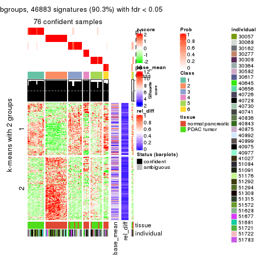
Signature heatmaps where rows are not scaled:
get_signatures(res, k = 2, scale_rows = FALSE)
get_signatures(res, k = 3, scale_rows = FALSE)
get_signatures(res, k = 4, scale_rows = FALSE)
get_signatures(res, k = 5, scale_rows = FALSE)
get_signatures(res, k = 6, scale_rows = FALSE)
Compare the overlap of signatures from different k:
compare_signatures(res)
get_signature() returns a data frame invisibly. TO get the list of signatures, the function
call should be assigned to a variable explicitly. In following code, if plot argument is set
to FALSE, no heatmap is plotted while only the differential analysis is performed.
# code only for demonstration
tb = get_signature(res, k = ..., plot = FALSE)
An example of the output of tb is:
#> which_row fdr mean_1 mean_2 scaled_mean_1 scaled_mean_2 km
#> 1 38 0.042760348 8.373488 9.131774 -0.5533452 0.5164555 1
#> 2 40 0.018707592 7.106213 8.469186 -0.6173731 0.5762149 1
#> 3 55 0.019134737 10.221463 11.207825 -0.6159697 0.5749050 1
#> 4 59 0.006059896 5.921854 7.869574 -0.6899429 0.6439467 1
#> 5 60 0.018055526 8.928898 10.211722 -0.6204761 0.5791110 1
#> 6 98 0.009384629 15.714769 14.887706 0.6635654 -0.6193277 2
...
The columns in tb are:
which_row: row indices corresponding to the input matrix.fdr: FDR for the differential test. mean_x: The mean value in group x.scaled_mean_x: The mean value in group x after rows are scaled.km: Row groups if k-means clustering is applied to rows.UMAP plot which shows how samples are separated.
dimension_reduction(res, k = 2, method = "UMAP")
dimension_reduction(res, k = 3, method = "UMAP")
dimension_reduction(res, k = 4, method = "UMAP")
dimension_reduction(res, k = 5, method = "UMAP")
dimension_reduction(res, k = 6, method = "UMAP")
Following heatmap shows how subgroups are split when increasing k:
collect_classes(res)
Test correlation between subgroups and known annotations. If the known annotation is numeric, one-way ANOVA test is applied, and if the known annotation is discrete, chi-squared contingency table test is applied.
test_to_known_factors(res)
#> n tissue(p) individual(p) k
#> MAD:pam 77 5.52e-08 0.906 2
#> MAD:pam 77 3.46e-08 0.197 3
#> MAD:pam 77 6.67e-11 0.420 4
#> MAD:pam 78 4.44e-10 0.475 5
#> MAD:pam 76 1.27e-11 0.638 6
If matrix rows can be associated to genes, consider to use functional_enrichment(res,
...) to perform function enrichment for the signature genes. See this vignette for more detailed explanations.
The object with results only for a single top-value method and a single partition method can be extracted as:
res = res_list["MAD", "mclust"]
# you can also extract it by
# res = res_list["MAD:mclust"]
A summary of res and all the functions that can be applied to it:
res
#> A 'ConsensusPartition' object with k = 2, 3, 4, 5, 6.
#> On a matrix with 51941 rows and 78 columns.
#> Top rows (1000, 2000, 3000, 4000, 5000) are extracted by 'MAD' method.
#> Subgroups are detected by 'mclust' method.
#> Performed in total 1250 partitions by row resampling.
#> Best k for subgroups seems to be 5.
#>
#> Following methods can be applied to this 'ConsensusPartition' object:
#> [1] "cola_report" "collect_classes" "collect_plots"
#> [4] "collect_stats" "colnames" "compare_signatures"
#> [7] "consensus_heatmap" "dimension_reduction" "functional_enrichment"
#> [10] "get_anno_col" "get_anno" "get_classes"
#> [13] "get_consensus" "get_matrix" "get_membership"
#> [16] "get_param" "get_signatures" "get_stats"
#> [19] "is_best_k" "is_stable_k" "membership_heatmap"
#> [22] "ncol" "nrow" "plot_ecdf"
#> [25] "rownames" "select_partition_number" "show"
#> [28] "suggest_best_k" "test_to_known_factors"
collect_plots() function collects all the plots made from res for all k (number of partitions)
into one single page to provide an easy and fast comparison between different k.
collect_plots(res)
The plots are:
k and the heatmap of
predicted classes for each k.k.k.k.All the plots in panels can be made by individual functions and they are plotted later in this section.
select_partition_number() produces several plots showing different
statistics for choosing “optimized” k. There are following statistics:
k;k, the area increased is defined as \(A_k - A_{k-1}\).The detailed explanations of these statistics can be found in the cola vignette.
Generally speaking, lower PAC score, higher mean silhouette score or higher
concordance corresponds to better partition. Rand index and Jaccard index
measure how similar the current partition is compared to partition with k-1.
If they are too similar, we won't accept k is better than k-1.
select_partition_number(res)
The numeric values for all these statistics can be obtained by get_stats().
get_stats(res)
#> k 1-PAC mean_silhouette concordance area_increased Rand Jaccard
#> 2 2 1.000 0.965 0.987 0.3968 0.601 0.601
#> 3 3 0.744 0.826 0.930 0.5386 0.782 0.637
#> 4 4 0.859 0.882 0.871 0.2003 0.836 0.596
#> 5 5 0.943 0.897 0.945 0.0728 0.947 0.799
#> 6 6 0.870 0.880 0.920 0.0308 0.975 0.882
suggest_best_k() suggests the best \(k\) based on these statistics. The rules are as follows:
suggest_best_k(res)
#> [1] 5
#> attr(,"optional")
#> [1] 2
There is also optional best \(k\) = 2 that is worth to check.
Following shows the table of the partitions (You need to click the show/hide
code output link to see it). The membership matrix (columns with name p*)
is inferred by
clue::cl_consensus()
function with the SE method. Basically the value in the membership matrix
represents the probability to belong to a certain group. The finall class
label for an item is determined with the group with highest probability it
belongs to.
In get_classes() function, the entropy is calculated from the membership
matrix and the silhouette score is calculated from the consensus matrix.
cbind(get_classes(res, k = 2), get_membership(res, k = 2))
#> class entropy silhouette p1 p2
#> GSM388115 1 0.000 0.99183 1.000 0.000
#> GSM388116 1 0.000 0.99183 1.000 0.000
#> GSM388117 1 0.000 0.99183 1.000 0.000
#> GSM388118 1 0.000 0.99183 1.000 0.000
#> GSM388119 1 0.000 0.99183 1.000 0.000
#> GSM388120 1 0.000 0.99183 1.000 0.000
#> GSM388121 1 0.000 0.99183 1.000 0.000
#> GSM388122 1 0.000 0.99183 1.000 0.000
#> GSM388123 1 0.000 0.99183 1.000 0.000
#> GSM388124 1 0.000 0.99183 1.000 0.000
#> GSM388125 1 0.000 0.99183 1.000 0.000
#> GSM388126 1 0.000 0.99183 1.000 0.000
#> GSM388127 1 0.000 0.99183 1.000 0.000
#> GSM388128 1 0.000 0.99183 1.000 0.000
#> GSM388129 1 0.000 0.99183 1.000 0.000
#> GSM388130 1 0.000 0.99183 1.000 0.000
#> GSM388131 1 0.000 0.99183 1.000 0.000
#> GSM388132 1 0.000 0.99183 1.000 0.000
#> GSM388133 1 0.000 0.99183 1.000 0.000
#> GSM388134 1 0.000 0.99183 1.000 0.000
#> GSM388135 1 0.000 0.99183 1.000 0.000
#> GSM388136 1 0.000 0.99183 1.000 0.000
#> GSM388137 1 0.000 0.99183 1.000 0.000
#> GSM388140 1 0.000 0.99183 1.000 0.000
#> GSM388141 1 0.000 0.99183 1.000 0.000
#> GSM388142 1 0.000 0.99183 1.000 0.000
#> GSM388143 1 0.000 0.99183 1.000 0.000
#> GSM388144 1 0.000 0.99183 1.000 0.000
#> GSM388145 1 0.118 0.97617 0.984 0.016
#> GSM388146 1 0.000 0.99183 1.000 0.000
#> GSM388147 1 0.000 0.99183 1.000 0.000
#> GSM388148 1 0.000 0.99183 1.000 0.000
#> GSM388149 1 0.000 0.99183 1.000 0.000
#> GSM388150 1 0.000 0.99183 1.000 0.000
#> GSM388151 1 0.000 0.99183 1.000 0.000
#> GSM388152 1 0.000 0.99183 1.000 0.000
#> GSM388153 1 0.000 0.99183 1.000 0.000
#> GSM388139 1 0.000 0.99183 1.000 0.000
#> GSM388138 1 0.000 0.99183 1.000 0.000
#> GSM388076 1 0.000 0.99183 1.000 0.000
#> GSM388077 1 0.000 0.99183 1.000 0.000
#> GSM388078 2 0.000 0.96936 0.000 1.000
#> GSM388079 2 0.000 0.96936 0.000 1.000
#> GSM388080 2 0.000 0.96936 0.000 1.000
#> GSM388081 2 0.000 0.96936 0.000 1.000
#> GSM388082 2 0.000 0.96936 0.000 1.000
#> GSM388083 1 0.000 0.99183 1.000 0.000
#> GSM388084 2 0.000 0.96936 0.000 1.000
#> GSM388085 1 0.000 0.99183 1.000 0.000
#> GSM388086 1 0.000 0.99183 1.000 0.000
#> GSM388087 1 0.000 0.99183 1.000 0.000
#> GSM388088 1 0.000 0.99183 1.000 0.000
#> GSM388089 1 0.000 0.99183 1.000 0.000
#> GSM388090 2 1.000 0.00417 0.496 0.504
#> GSM388091 1 0.000 0.99183 1.000 0.000
#> GSM388092 2 0.000 0.96936 0.000 1.000
#> GSM388093 2 0.482 0.86461 0.104 0.896
#> GSM388094 2 0.000 0.96936 0.000 1.000
#> GSM388095 2 0.000 0.96936 0.000 1.000
#> GSM388096 1 0.000 0.99183 1.000 0.000
#> GSM388097 1 0.000 0.99183 1.000 0.000
#> GSM388098 2 0.000 0.96936 0.000 1.000
#> GSM388101 2 0.000 0.96936 0.000 1.000
#> GSM388102 2 0.000 0.96936 0.000 1.000
#> GSM388103 2 0.000 0.96936 0.000 1.000
#> GSM388104 1 0.000 0.99183 1.000 0.000
#> GSM388105 1 0.000 0.99183 1.000 0.000
#> GSM388106 1 0.000 0.99183 1.000 0.000
#> GSM388107 1 0.000 0.99183 1.000 0.000
#> GSM388108 2 0.000 0.96936 0.000 1.000
#> GSM388109 2 0.000 0.96936 0.000 1.000
#> GSM388110 2 0.000 0.96936 0.000 1.000
#> GSM388111 1 0.844 0.61474 0.728 0.272
#> GSM388112 2 0.000 0.96936 0.000 1.000
#> GSM388113 2 0.000 0.96936 0.000 1.000
#> GSM388114 1 0.000 0.99183 1.000 0.000
#> GSM388100 2 0.000 0.96936 0.000 1.000
#> GSM388099 1 0.615 0.81479 0.848 0.152
cbind(get_classes(res, k = 3), get_membership(res, k = 3))
#> class entropy silhouette p1 p2 p3
#> GSM388115 3 0.000 0.9062 0.000 0.000 1.000
#> GSM388116 3 0.000 0.9062 0.000 0.000 1.000
#> GSM388117 1 0.000 0.8460 1.000 0.000 0.000
#> GSM388118 1 0.000 0.8460 1.000 0.000 0.000
#> GSM388119 1 0.000 0.8460 1.000 0.000 0.000
#> GSM388120 1 0.000 0.8460 1.000 0.000 0.000
#> GSM388121 1 0.000 0.8460 1.000 0.000 0.000
#> GSM388122 3 0.000 0.9062 0.000 0.000 1.000
#> GSM388123 3 0.435 0.7755 0.184 0.000 0.816
#> GSM388124 3 0.000 0.9062 0.000 0.000 1.000
#> GSM388125 3 0.000 0.9062 0.000 0.000 1.000
#> GSM388126 3 0.000 0.9062 0.000 0.000 1.000
#> GSM388127 3 0.586 0.5142 0.344 0.000 0.656
#> GSM388128 3 0.000 0.9062 0.000 0.000 1.000
#> GSM388129 1 0.000 0.8460 1.000 0.000 0.000
#> GSM388130 3 0.000 0.9062 0.000 0.000 1.000
#> GSM388131 3 0.586 0.5142 0.344 0.000 0.656
#> GSM388132 1 0.630 0.0295 0.520 0.000 0.480
#> GSM388133 3 0.586 0.5142 0.344 0.000 0.656
#> GSM388134 3 0.435 0.7755 0.184 0.000 0.816
#> GSM388135 1 0.623 0.1997 0.564 0.000 0.436
#> GSM388136 3 0.000 0.9062 0.000 0.000 1.000
#> GSM388137 3 0.000 0.9062 0.000 0.000 1.000
#> GSM388140 3 0.435 0.7755 0.184 0.000 0.816
#> GSM388141 3 0.000 0.9062 0.000 0.000 1.000
#> GSM388142 1 0.000 0.8460 1.000 0.000 0.000
#> GSM388143 1 0.000 0.8460 1.000 0.000 0.000
#> GSM388144 1 0.000 0.8460 1.000 0.000 0.000
#> GSM388145 3 0.435 0.7755 0.184 0.000 0.816
#> GSM388146 1 0.000 0.8460 1.000 0.000 0.000
#> GSM388147 1 0.620 0.2375 0.576 0.000 0.424
#> GSM388148 3 0.435 0.7755 0.184 0.000 0.816
#> GSM388149 3 0.000 0.9062 0.000 0.000 1.000
#> GSM388150 1 0.619 0.2488 0.580 0.000 0.420
#> GSM388151 3 0.000 0.9062 0.000 0.000 1.000
#> GSM388152 3 0.000 0.9062 0.000 0.000 1.000
#> GSM388153 3 0.435 0.7755 0.184 0.000 0.816
#> GSM388139 1 0.000 0.8460 1.000 0.000 0.000
#> GSM388138 1 0.000 0.8460 1.000 0.000 0.000
#> GSM388076 3 0.000 0.9062 0.000 0.000 1.000
#> GSM388077 3 0.000 0.9062 0.000 0.000 1.000
#> GSM388078 2 0.000 0.9611 0.000 1.000 0.000
#> GSM388079 2 0.000 0.9611 0.000 1.000 0.000
#> GSM388080 2 0.000 0.9611 0.000 1.000 0.000
#> GSM388081 2 0.000 0.9611 0.000 1.000 0.000
#> GSM388082 2 0.000 0.9611 0.000 1.000 0.000
#> GSM388083 3 0.000 0.9062 0.000 0.000 1.000
#> GSM388084 2 0.000 0.9611 0.000 1.000 0.000
#> GSM388085 3 0.000 0.9062 0.000 0.000 1.000
#> GSM388086 3 0.000 0.9062 0.000 0.000 1.000
#> GSM388087 3 0.000 0.9062 0.000 0.000 1.000
#> GSM388088 3 0.000 0.9062 0.000 0.000 1.000
#> GSM388089 3 0.000 0.9062 0.000 0.000 1.000
#> GSM388090 2 0.606 0.3108 0.000 0.616 0.384
#> GSM388091 3 0.000 0.9062 0.000 0.000 1.000
#> GSM388092 2 0.000 0.9611 0.000 1.000 0.000
#> GSM388093 2 0.440 0.7063 0.000 0.812 0.188
#> GSM388094 2 0.000 0.9611 0.000 1.000 0.000
#> GSM388095 2 0.000 0.9611 0.000 1.000 0.000
#> GSM388096 3 0.581 0.5314 0.336 0.000 0.664
#> GSM388097 3 0.000 0.9062 0.000 0.000 1.000
#> GSM388098 2 0.000 0.9611 0.000 1.000 0.000
#> GSM388101 2 0.000 0.9611 0.000 1.000 0.000
#> GSM388102 2 0.000 0.9611 0.000 1.000 0.000
#> GSM388103 2 0.000 0.9611 0.000 1.000 0.000
#> GSM388104 3 0.000 0.9062 0.000 0.000 1.000
#> GSM388105 3 0.502 0.7031 0.240 0.000 0.760
#> GSM388106 3 0.000 0.9062 0.000 0.000 1.000
#> GSM388107 3 0.000 0.9062 0.000 0.000 1.000
#> GSM388108 2 0.000 0.9611 0.000 1.000 0.000
#> GSM388109 2 0.000 0.9611 0.000 1.000 0.000
#> GSM388110 2 0.000 0.9611 0.000 1.000 0.000
#> GSM388111 3 0.445 0.7319 0.000 0.192 0.808
#> GSM388112 2 0.000 0.9611 0.000 1.000 0.000
#> GSM388113 2 0.000 0.9611 0.000 1.000 0.000
#> GSM388114 3 0.000 0.9062 0.000 0.000 1.000
#> GSM388100 2 0.000 0.9611 0.000 1.000 0.000
#> GSM388099 3 0.506 0.7640 0.184 0.016 0.800
cbind(get_classes(res, k = 4), get_membership(res, k = 4))
#> class entropy silhouette p1 p2 p3 p4
#> GSM388115 3 0.0000 0.888 0.000 0.000 1.000 0.000
#> GSM388116 3 0.0000 0.888 0.000 0.000 1.000 0.000
#> GSM388117 4 0.4761 1.000 0.372 0.000 0.000 0.628
#> GSM388118 4 0.4761 1.000 0.372 0.000 0.000 0.628
#> GSM388119 4 0.4761 1.000 0.372 0.000 0.000 0.628
#> GSM388120 4 0.4761 1.000 0.372 0.000 0.000 0.628
#> GSM388121 4 0.4761 1.000 0.372 0.000 0.000 0.628
#> GSM388122 3 0.1474 0.886 0.052 0.000 0.948 0.000
#> GSM388123 1 0.2859 0.750 0.880 0.112 0.008 0.000
#> GSM388124 3 0.0000 0.888 0.000 0.000 1.000 0.000
#> GSM388125 3 0.1211 0.888 0.040 0.000 0.960 0.000
#> GSM388126 3 0.4761 0.716 0.000 0.000 0.628 0.372
#> GSM388127 1 0.0336 0.917 0.992 0.000 0.008 0.000
#> GSM388128 3 0.1474 0.886 0.052 0.000 0.948 0.000
#> GSM388129 4 0.4761 1.000 0.372 0.000 0.000 0.628
#> GSM388130 3 0.1474 0.886 0.052 0.000 0.948 0.000
#> GSM388131 1 0.0336 0.917 0.992 0.000 0.008 0.000
#> GSM388132 1 0.0592 0.904 0.984 0.000 0.000 0.016
#> GSM388133 1 0.0336 0.917 0.992 0.000 0.008 0.000
#> GSM388134 1 0.0336 0.917 0.992 0.000 0.008 0.000
#> GSM388135 1 0.0592 0.904 0.984 0.000 0.000 0.016
#> GSM388136 3 0.1557 0.884 0.056 0.000 0.944 0.000
#> GSM388137 3 0.3356 0.820 0.000 0.000 0.824 0.176
#> GSM388140 1 0.0779 0.908 0.980 0.000 0.004 0.016
#> GSM388141 3 0.1474 0.886 0.052 0.000 0.948 0.000
#> GSM388142 4 0.4761 1.000 0.372 0.000 0.000 0.628
#> GSM388143 4 0.4761 1.000 0.372 0.000 0.000 0.628
#> GSM388144 4 0.4761 1.000 0.372 0.000 0.000 0.628
#> GSM388145 1 0.0336 0.917 0.992 0.000 0.008 0.000
#> GSM388146 4 0.4761 1.000 0.372 0.000 0.000 0.628
#> GSM388147 1 0.0707 0.901 0.980 0.000 0.000 0.020
#> GSM388148 1 0.0779 0.908 0.980 0.000 0.004 0.016
#> GSM388149 3 0.1474 0.886 0.052 0.000 0.948 0.000
#> GSM388150 1 0.0921 0.891 0.972 0.000 0.000 0.028
#> GSM388151 3 0.1302 0.888 0.044 0.000 0.956 0.000
#> GSM388152 3 0.1474 0.886 0.052 0.000 0.948 0.000
#> GSM388153 1 0.0336 0.917 0.992 0.000 0.008 0.000
#> GSM388139 4 0.4761 1.000 0.372 0.000 0.000 0.628
#> GSM388138 4 0.4761 1.000 0.372 0.000 0.000 0.628
#> GSM388076 3 0.0000 0.888 0.000 0.000 1.000 0.000
#> GSM388077 3 0.0000 0.888 0.000 0.000 1.000 0.000
#> GSM388078 2 0.0000 0.945 0.000 1.000 0.000 0.000
#> GSM388079 2 0.0000 0.945 0.000 1.000 0.000 0.000
#> GSM388080 2 0.0000 0.945 0.000 1.000 0.000 0.000
#> GSM388081 2 0.0000 0.945 0.000 1.000 0.000 0.000
#> GSM388082 2 0.0000 0.945 0.000 1.000 0.000 0.000
#> GSM388083 3 0.0000 0.888 0.000 0.000 1.000 0.000
#> GSM388084 2 0.0000 0.945 0.000 1.000 0.000 0.000
#> GSM388085 3 0.1302 0.888 0.044 0.000 0.956 0.000
#> GSM388086 3 0.4761 0.716 0.000 0.000 0.628 0.372
#> GSM388087 3 0.4761 0.716 0.000 0.000 0.628 0.372
#> GSM388088 3 0.4761 0.716 0.000 0.000 0.628 0.372
#> GSM388089 3 0.4761 0.716 0.000 0.000 0.628 0.372
#> GSM388090 2 0.4697 0.488 0.356 0.644 0.000 0.000
#> GSM388091 3 0.1474 0.886 0.052 0.000 0.948 0.000
#> GSM388092 2 0.0000 0.945 0.000 1.000 0.000 0.000
#> GSM388093 2 0.4697 0.488 0.356 0.644 0.000 0.000
#> GSM388094 2 0.0000 0.945 0.000 1.000 0.000 0.000
#> GSM388095 2 0.0000 0.945 0.000 1.000 0.000 0.000
#> GSM388096 1 0.0336 0.917 0.992 0.000 0.008 0.000
#> GSM388097 3 0.1389 0.887 0.048 0.000 0.952 0.000
#> GSM388098 2 0.0000 0.945 0.000 1.000 0.000 0.000
#> GSM388101 2 0.0000 0.945 0.000 1.000 0.000 0.000
#> GSM388102 2 0.0000 0.945 0.000 1.000 0.000 0.000
#> GSM388103 2 0.0000 0.945 0.000 1.000 0.000 0.000
#> GSM388104 3 0.0000 0.888 0.000 0.000 1.000 0.000
#> GSM388105 1 0.0336 0.917 0.992 0.000 0.008 0.000
#> GSM388106 3 0.4761 0.716 0.000 0.000 0.628 0.372
#> GSM388107 3 0.4761 0.716 0.000 0.000 0.628 0.372
#> GSM388108 2 0.0000 0.945 0.000 1.000 0.000 0.000
#> GSM388109 2 0.0000 0.945 0.000 1.000 0.000 0.000
#> GSM388110 2 0.0000 0.945 0.000 1.000 0.000 0.000
#> GSM388111 2 0.5237 0.465 0.356 0.628 0.016 0.000
#> GSM388112 2 0.0000 0.945 0.000 1.000 0.000 0.000
#> GSM388113 2 0.0000 0.945 0.000 1.000 0.000 0.000
#> GSM388114 3 0.0000 0.888 0.000 0.000 1.000 0.000
#> GSM388100 2 0.0000 0.945 0.000 1.000 0.000 0.000
#> GSM388099 1 0.5024 0.287 0.632 0.360 0.008 0.000
cbind(get_classes(res, k = 5), get_membership(res, k = 5))
#> class entropy silhouette p1 p2 p3 p4 p5
#> GSM388115 3 0.0865 0.976 0.000 0.000 0.972 0.004 0.024
#> GSM388116 3 0.0865 0.976 0.000 0.000 0.972 0.004 0.024
#> GSM388117 1 0.0000 1.000 1.000 0.000 0.000 0.000 0.000
#> GSM388118 1 0.0000 1.000 1.000 0.000 0.000 0.000 0.000
#> GSM388119 1 0.0000 1.000 1.000 0.000 0.000 0.000 0.000
#> GSM388120 1 0.0000 1.000 1.000 0.000 0.000 0.000 0.000
#> GSM388121 1 0.0000 1.000 1.000 0.000 0.000 0.000 0.000
#> GSM388122 3 0.0963 0.973 0.000 0.000 0.964 0.000 0.036
#> GSM388123 5 0.0000 0.827 0.000 0.000 0.000 0.000 1.000
#> GSM388124 3 0.1386 0.966 0.000 0.000 0.952 0.032 0.016
#> GSM388125 3 0.0703 0.977 0.000 0.000 0.976 0.000 0.024
#> GSM388126 4 0.0510 0.950 0.000 0.000 0.000 0.984 0.016
#> GSM388127 5 0.0000 0.827 0.000 0.000 0.000 0.000 1.000
#> GSM388128 3 0.0703 0.977 0.000 0.000 0.976 0.000 0.024
#> GSM388129 1 0.0000 1.000 1.000 0.000 0.000 0.000 0.000
#> GSM388130 3 0.0703 0.977 0.000 0.000 0.976 0.000 0.024
#> GSM388131 5 0.0000 0.827 0.000 0.000 0.000 0.000 1.000
#> GSM388132 5 0.4074 0.624 0.364 0.000 0.000 0.000 0.636
#> GSM388133 5 0.0000 0.827 0.000 0.000 0.000 0.000 1.000
#> GSM388134 5 0.0000 0.827 0.000 0.000 0.000 0.000 1.000
#> GSM388135 5 0.4060 0.628 0.360 0.000 0.000 0.000 0.640
#> GSM388136 3 0.1341 0.964 0.000 0.000 0.944 0.000 0.056
#> GSM388137 4 0.3596 0.725 0.000 0.000 0.200 0.784 0.016
#> GSM388140 5 0.4074 0.624 0.364 0.000 0.000 0.000 0.636
#> GSM388141 3 0.1341 0.964 0.000 0.000 0.944 0.000 0.056
#> GSM388142 1 0.0000 1.000 1.000 0.000 0.000 0.000 0.000
#> GSM388143 1 0.0000 1.000 1.000 0.000 0.000 0.000 0.000
#> GSM388144 1 0.0000 1.000 1.000 0.000 0.000 0.000 0.000
#> GSM388145 5 0.0000 0.827 0.000 0.000 0.000 0.000 1.000
#> GSM388146 1 0.0000 1.000 1.000 0.000 0.000 0.000 0.000
#> GSM388147 5 0.4088 0.618 0.368 0.000 0.000 0.000 0.632
#> GSM388148 5 0.4074 0.624 0.364 0.000 0.000 0.000 0.636
#> GSM388149 3 0.1341 0.964 0.000 0.000 0.944 0.000 0.056
#> GSM388150 5 0.4088 0.618 0.368 0.000 0.000 0.000 0.632
#> GSM388151 3 0.0703 0.977 0.000 0.000 0.976 0.000 0.024
#> GSM388152 3 0.1341 0.964 0.000 0.000 0.944 0.000 0.056
#> GSM388153 5 0.0000 0.827 0.000 0.000 0.000 0.000 1.000
#> GSM388139 1 0.0000 1.000 1.000 0.000 0.000 0.000 0.000
#> GSM388138 1 0.0000 1.000 1.000 0.000 0.000 0.000 0.000
#> GSM388076 3 0.0880 0.959 0.000 0.000 0.968 0.032 0.000
#> GSM388077 3 0.0880 0.959 0.000 0.000 0.968 0.032 0.000
#> GSM388078 2 0.0000 0.939 0.000 1.000 0.000 0.000 0.000
#> GSM388079 2 0.0000 0.939 0.000 1.000 0.000 0.000 0.000
#> GSM388080 2 0.0000 0.939 0.000 1.000 0.000 0.000 0.000
#> GSM388081 2 0.0000 0.939 0.000 1.000 0.000 0.000 0.000
#> GSM388082 2 0.0000 0.939 0.000 1.000 0.000 0.000 0.000
#> GSM388083 3 0.0880 0.959 0.000 0.000 0.968 0.032 0.000
#> GSM388084 2 0.0000 0.939 0.000 1.000 0.000 0.000 0.000
#> GSM388085 3 0.0703 0.977 0.000 0.000 0.976 0.000 0.024
#> GSM388086 4 0.0510 0.950 0.000 0.000 0.000 0.984 0.016
#> GSM388087 4 0.0000 0.958 0.000 0.000 0.000 1.000 0.000
#> GSM388088 4 0.0000 0.958 0.000 0.000 0.000 1.000 0.000
#> GSM388089 4 0.0000 0.958 0.000 0.000 0.000 1.000 0.000
#> GSM388090 2 0.4088 0.441 0.000 0.632 0.000 0.000 0.368
#> GSM388091 3 0.0703 0.977 0.000 0.000 0.976 0.000 0.024
#> GSM388092 2 0.0000 0.939 0.000 1.000 0.000 0.000 0.000
#> GSM388093 2 0.4088 0.441 0.000 0.632 0.000 0.000 0.368
#> GSM388094 2 0.0000 0.939 0.000 1.000 0.000 0.000 0.000
#> GSM388095 2 0.0000 0.939 0.000 1.000 0.000 0.000 0.000
#> GSM388096 5 0.0000 0.827 0.000 0.000 0.000 0.000 1.000
#> GSM388097 3 0.0703 0.977 0.000 0.000 0.976 0.000 0.024
#> GSM388098 2 0.0000 0.939 0.000 1.000 0.000 0.000 0.000
#> GSM388101 2 0.0000 0.939 0.000 1.000 0.000 0.000 0.000
#> GSM388102 2 0.0000 0.939 0.000 1.000 0.000 0.000 0.000
#> GSM388103 2 0.0000 0.939 0.000 1.000 0.000 0.000 0.000
#> GSM388104 3 0.0880 0.959 0.000 0.000 0.968 0.032 0.000
#> GSM388105 5 0.0000 0.827 0.000 0.000 0.000 0.000 1.000
#> GSM388106 4 0.0000 0.958 0.000 0.000 0.000 1.000 0.000
#> GSM388107 4 0.0000 0.958 0.000 0.000 0.000 1.000 0.000
#> GSM388108 2 0.0000 0.939 0.000 1.000 0.000 0.000 0.000
#> GSM388109 2 0.0000 0.939 0.000 1.000 0.000 0.000 0.000
#> GSM388110 2 0.0000 0.939 0.000 1.000 0.000 0.000 0.000
#> GSM388111 2 0.4060 0.456 0.000 0.640 0.000 0.000 0.360
#> GSM388112 2 0.0000 0.939 0.000 1.000 0.000 0.000 0.000
#> GSM388113 2 0.0000 0.939 0.000 1.000 0.000 0.000 0.000
#> GSM388114 3 0.0880 0.959 0.000 0.000 0.968 0.032 0.000
#> GSM388100 2 0.0000 0.939 0.000 1.000 0.000 0.000 0.000
#> GSM388099 5 0.0000 0.827 0.000 0.000 0.000 0.000 1.000
cbind(get_classes(res, k = 6), get_membership(res, k = 6))
#> class entropy silhouette p1 p2 p3 p4 p5 p6
#> GSM388115 3 0.1075 0.845 0.000 0.000 0.952 0.000 0.000 0.048
#> GSM388116 3 0.1075 0.845 0.000 0.000 0.952 0.000 0.000 0.048
#> GSM388117 1 0.0000 1.000 1.000 0.000 0.000 0.000 0.000 0.000
#> GSM388118 1 0.0000 1.000 1.000 0.000 0.000 0.000 0.000 0.000
#> GSM388119 1 0.0000 1.000 1.000 0.000 0.000 0.000 0.000 0.000
#> GSM388120 1 0.0000 1.000 1.000 0.000 0.000 0.000 0.000 0.000
#> GSM388121 1 0.0000 1.000 1.000 0.000 0.000 0.000 0.000 0.000
#> GSM388122 3 0.1663 0.830 0.000 0.000 0.912 0.000 0.088 0.000
#> GSM388123 5 0.1226 0.867 0.000 0.000 0.004 0.004 0.952 0.040
#> GSM388124 3 0.2631 0.652 0.000 0.000 0.820 0.000 0.000 0.180
#> GSM388125 3 0.0000 0.883 0.000 0.000 1.000 0.000 0.000 0.000
#> GSM388126 4 0.0767 0.923 0.008 0.000 0.004 0.976 0.012 0.000
#> GSM388127 5 0.0146 0.870 0.000 0.000 0.004 0.000 0.996 0.000
#> GSM388128 3 0.0000 0.883 0.000 0.000 1.000 0.000 0.000 0.000
#> GSM388129 1 0.0000 1.000 1.000 0.000 0.000 0.000 0.000 0.000
#> GSM388130 3 0.0000 0.883 0.000 0.000 1.000 0.000 0.000 0.000
#> GSM388131 5 0.0146 0.870 0.000 0.000 0.004 0.000 0.996 0.000
#> GSM388132 5 0.2933 0.797 0.200 0.000 0.004 0.000 0.796 0.000
#> GSM388133 5 0.0146 0.870 0.000 0.000 0.004 0.000 0.996 0.000
#> GSM388134 5 0.1082 0.868 0.000 0.000 0.004 0.000 0.956 0.040
#> GSM388135 5 0.3360 0.734 0.264 0.000 0.004 0.000 0.732 0.000
#> GSM388136 3 0.2362 0.771 0.000 0.000 0.860 0.004 0.136 0.000
#> GSM388137 4 0.4407 0.493 0.008 0.000 0.292 0.664 0.036 0.000
#> GSM388140 5 0.2871 0.803 0.192 0.000 0.004 0.000 0.804 0.000
#> GSM388141 3 0.2491 0.797 0.000 0.000 0.868 0.020 0.112 0.000
#> GSM388142 1 0.0000 1.000 1.000 0.000 0.000 0.000 0.000 0.000
#> GSM388143 1 0.0000 1.000 1.000 0.000 0.000 0.000 0.000 0.000
#> GSM388144 1 0.0000 1.000 1.000 0.000 0.000 0.000 0.000 0.000
#> GSM388145 5 0.1152 0.868 0.000 0.000 0.004 0.000 0.952 0.044
#> GSM388146 1 0.0000 1.000 1.000 0.000 0.000 0.000 0.000 0.000
#> GSM388147 5 0.3426 0.719 0.276 0.000 0.004 0.000 0.720 0.000
#> GSM388148 5 0.2871 0.803 0.192 0.000 0.004 0.000 0.804 0.000
#> GSM388149 3 0.2350 0.811 0.000 0.000 0.880 0.020 0.100 0.000
#> GSM388150 5 0.3592 0.612 0.344 0.000 0.000 0.000 0.656 0.000
#> GSM388151 3 0.0000 0.883 0.000 0.000 1.000 0.000 0.000 0.000
#> GSM388152 3 0.2624 0.780 0.000 0.000 0.856 0.020 0.124 0.000
#> GSM388153 5 0.1082 0.868 0.000 0.000 0.004 0.000 0.956 0.040
#> GSM388139 1 0.0000 1.000 1.000 0.000 0.000 0.000 0.000 0.000
#> GSM388138 1 0.0000 1.000 1.000 0.000 0.000 0.000 0.000 0.000
#> GSM388076 6 0.3515 0.925 0.000 0.000 0.324 0.000 0.000 0.676
#> GSM388077 6 0.3515 0.925 0.000 0.000 0.324 0.000 0.000 0.676
#> GSM388078 2 0.0000 0.942 0.000 1.000 0.000 0.000 0.000 0.000
#> GSM388079 2 0.0000 0.942 0.000 1.000 0.000 0.000 0.000 0.000
#> GSM388080 2 0.0000 0.942 0.000 1.000 0.000 0.000 0.000 0.000
#> GSM388081 2 0.0000 0.942 0.000 1.000 0.000 0.000 0.000 0.000
#> GSM388082 2 0.0000 0.942 0.000 1.000 0.000 0.000 0.000 0.000
#> GSM388083 6 0.3515 0.925 0.000 0.000 0.324 0.000 0.000 0.676
#> GSM388084 2 0.0000 0.942 0.000 1.000 0.000 0.000 0.000 0.000
#> GSM388085 3 0.0000 0.883 0.000 0.000 1.000 0.000 0.000 0.000
#> GSM388086 4 0.0508 0.926 0.000 0.000 0.004 0.984 0.012 0.000
#> GSM388087 4 0.0000 0.935 0.000 0.000 0.000 1.000 0.000 0.000
#> GSM388088 4 0.0000 0.935 0.000 0.000 0.000 1.000 0.000 0.000
#> GSM388089 4 0.0000 0.935 0.000 0.000 0.000 1.000 0.000 0.000
#> GSM388090 2 0.4881 0.605 0.000 0.604 0.000 0.004 0.068 0.324
#> GSM388091 3 0.0000 0.883 0.000 0.000 1.000 0.000 0.000 0.000
#> GSM388092 2 0.0692 0.932 0.000 0.976 0.000 0.000 0.004 0.020
#> GSM388093 2 0.4747 0.610 0.000 0.608 0.000 0.000 0.068 0.324
#> GSM388094 2 0.0000 0.942 0.000 1.000 0.000 0.000 0.000 0.000
#> GSM388095 2 0.0000 0.942 0.000 1.000 0.000 0.000 0.000 0.000
#> GSM388096 5 0.1082 0.868 0.000 0.000 0.004 0.000 0.956 0.040
#> GSM388097 3 0.0000 0.883 0.000 0.000 1.000 0.000 0.000 0.000
#> GSM388098 2 0.0000 0.942 0.000 1.000 0.000 0.000 0.000 0.000
#> GSM388101 2 0.0000 0.942 0.000 1.000 0.000 0.000 0.000 0.000
#> GSM388102 2 0.2053 0.874 0.000 0.888 0.000 0.000 0.004 0.108
#> GSM388103 2 0.0000 0.942 0.000 1.000 0.000 0.000 0.000 0.000
#> GSM388104 6 0.3869 0.587 0.000 0.000 0.500 0.000 0.000 0.500
#> GSM388105 5 0.0146 0.870 0.000 0.000 0.004 0.000 0.996 0.000
#> GSM388106 4 0.0000 0.935 0.000 0.000 0.000 1.000 0.000 0.000
#> GSM388107 4 0.0000 0.935 0.000 0.000 0.000 1.000 0.000 0.000
#> GSM388108 2 0.0000 0.942 0.000 1.000 0.000 0.000 0.000 0.000
#> GSM388109 2 0.0000 0.942 0.000 1.000 0.000 0.000 0.000 0.000
#> GSM388110 2 0.0000 0.942 0.000 1.000 0.000 0.000 0.000 0.000
#> GSM388111 2 0.4832 0.610 0.000 0.608 0.000 0.004 0.064 0.324
#> GSM388112 2 0.0000 0.942 0.000 1.000 0.000 0.000 0.000 0.000
#> GSM388113 2 0.0692 0.932 0.000 0.976 0.000 0.000 0.004 0.020
#> GSM388114 6 0.3515 0.925 0.000 0.000 0.324 0.000 0.000 0.676
#> GSM388100 2 0.0603 0.934 0.000 0.980 0.000 0.000 0.004 0.016
#> GSM388099 5 0.1410 0.864 0.000 0.008 0.004 0.000 0.944 0.044
Heatmaps for the consensus matrix. It visualizes the probability of two samples to be in a same group.
consensus_heatmap(res, k = 2)
consensus_heatmap(res, k = 3)

consensus_heatmap(res, k = 4)
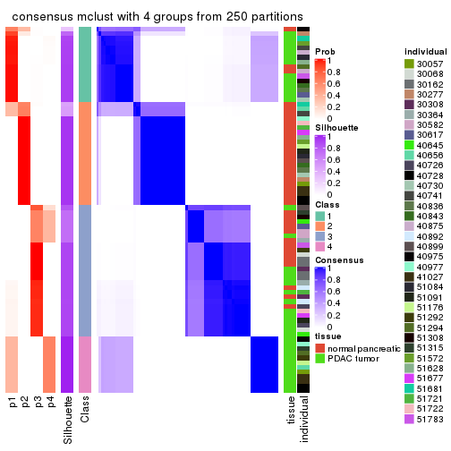
consensus_heatmap(res, k = 5)

consensus_heatmap(res, k = 6)
Heatmaps for the membership of samples in all partitions to see how consistent they are:
membership_heatmap(res, k = 2)
membership_heatmap(res, k = 3)
membership_heatmap(res, k = 4)
membership_heatmap(res, k = 5)

membership_heatmap(res, k = 6)
As soon as we have had the classes for columns, we can look for signatures which are significantly different between classes which can be candidate marks for certain classes. Following are the heatmaps for signatures.
Signature heatmaps where rows are scaled:
get_signatures(res, k = 2)
get_signatures(res, k = 3)
get_signatures(res, k = 4)
get_signatures(res, k = 5)
get_signatures(res, k = 6)
Signature heatmaps where rows are not scaled:
get_signatures(res, k = 2, scale_rows = FALSE)
get_signatures(res, k = 3, scale_rows = FALSE)
get_signatures(res, k = 4, scale_rows = FALSE)
get_signatures(res, k = 5, scale_rows = FALSE)
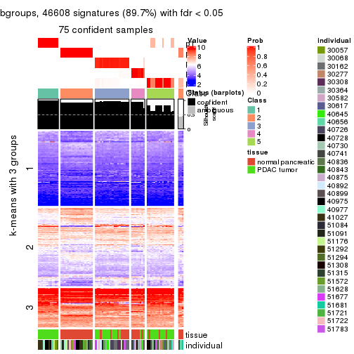
get_signatures(res, k = 6, scale_rows = FALSE)
Compare the overlap of signatures from different k:
compare_signatures(res)
get_signature() returns a data frame invisibly. TO get the list of signatures, the function
call should be assigned to a variable explicitly. In following code, if plot argument is set
to FALSE, no heatmap is plotted while only the differential analysis is performed.
# code only for demonstration
tb = get_signature(res, k = ..., plot = FALSE)
An example of the output of tb is:
#> which_row fdr mean_1 mean_2 scaled_mean_1 scaled_mean_2 km
#> 1 38 0.042760348 8.373488 9.131774 -0.5533452 0.5164555 1
#> 2 40 0.018707592 7.106213 8.469186 -0.6173731 0.5762149 1
#> 3 55 0.019134737 10.221463 11.207825 -0.6159697 0.5749050 1
#> 4 59 0.006059896 5.921854 7.869574 -0.6899429 0.6439467 1
#> 5 60 0.018055526 8.928898 10.211722 -0.6204761 0.5791110 1
#> 6 98 0.009384629 15.714769 14.887706 0.6635654 -0.6193277 2
...
The columns in tb are:
which_row: row indices corresponding to the input matrix.fdr: FDR for the differential test. mean_x: The mean value in group x.scaled_mean_x: The mean value in group x after rows are scaled.km: Row groups if k-means clustering is applied to rows.UMAP plot which shows how samples are separated.
dimension_reduction(res, k = 2, method = "UMAP")
dimension_reduction(res, k = 3, method = "UMAP")
dimension_reduction(res, k = 4, method = "UMAP")
dimension_reduction(res, k = 5, method = "UMAP")
dimension_reduction(res, k = 6, method = "UMAP")
Following heatmap shows how subgroups are split when increasing k:
collect_classes(res)
Test correlation between subgroups and known annotations. If the known annotation is numeric, one-way ANOVA test is applied, and if the known annotation is discrete, chi-squared contingency table test is applied.
test_to_known_factors(res)
#> n tissue(p) individual(p) k
#> MAD:mclust 77 5.56e-07 0.895 2
#> MAD:mclust 73 8.58e-08 0.602 3
#> MAD:mclust 74 1.77e-08 0.262 4
#> MAD:mclust 75 4.34e-08 0.156 5
#> MAD:mclust 77 1.89e-10 0.254 6
If matrix rows can be associated to genes, consider to use functional_enrichment(res,
...) to perform function enrichment for the signature genes. See this vignette for more detailed explanations.
The object with results only for a single top-value method and a single partition method can be extracted as:
res = res_list["MAD", "NMF"]
# you can also extract it by
# res = res_list["MAD:NMF"]
A summary of res and all the functions that can be applied to it:
res
#> A 'ConsensusPartition' object with k = 2, 3, 4, 5, 6.
#> On a matrix with 51941 rows and 78 columns.
#> Top rows (1000, 2000, 3000, 4000, 5000) are extracted by 'MAD' method.
#> Subgroups are detected by 'NMF' method.
#> Performed in total 1250 partitions by row resampling.
#> Best k for subgroups seems to be 6.
#>
#> Following methods can be applied to this 'ConsensusPartition' object:
#> [1] "cola_report" "collect_classes" "collect_plots"
#> [4] "collect_stats" "colnames" "compare_signatures"
#> [7] "consensus_heatmap" "dimension_reduction" "functional_enrichment"
#> [10] "get_anno_col" "get_anno" "get_classes"
#> [13] "get_consensus" "get_matrix" "get_membership"
#> [16] "get_param" "get_signatures" "get_stats"
#> [19] "is_best_k" "is_stable_k" "membership_heatmap"
#> [22] "ncol" "nrow" "plot_ecdf"
#> [25] "rownames" "select_partition_number" "show"
#> [28] "suggest_best_k" "test_to_known_factors"
collect_plots() function collects all the plots made from res for all k (number of partitions)
into one single page to provide an easy and fast comparison between different k.
collect_plots(res)
The plots are:
k and the heatmap of
predicted classes for each k.k.k.k.All the plots in panels can be made by individual functions and they are plotted later in this section.
select_partition_number() produces several plots showing different
statistics for choosing “optimized” k. There are following statistics:
k;k, the area increased is defined as \(A_k - A_{k-1}\).The detailed explanations of these statistics can be found in the cola vignette.
Generally speaking, lower PAC score, higher mean silhouette score or higher
concordance corresponds to better partition. Rand index and Jaccard index
measure how similar the current partition is compared to partition with k-1.
If they are too similar, we won't accept k is better than k-1.
select_partition_number(res)
The numeric values for all these statistics can be obtained by get_stats().
get_stats(res)
#> k 1-PAC mean_silhouette concordance area_increased Rand Jaccard
#> 2 2 1.000 0.984 0.993 0.4422 0.559 0.559
#> 3 3 0.924 0.915 0.962 0.4941 0.780 0.607
#> 4 4 1.000 0.988 0.995 0.0755 0.940 0.826
#> 5 5 0.808 0.721 0.867 0.0837 0.908 0.694
#> 6 6 0.906 0.880 0.932 0.0512 0.869 0.516
suggest_best_k() suggests the best \(k\) based on these statistics. The rules are as follows:
suggest_best_k(res)
#> [1] 6
#> attr(,"optional")
#> [1] 2 3 4
There is also optional best \(k\) = 2 3 4 that is worth to check.
Following shows the table of the partitions (You need to click the show/hide
code output link to see it). The membership matrix (columns with name p*)
is inferred by
clue::cl_consensus()
function with the SE method. Basically the value in the membership matrix
represents the probability to belong to a certain group. The finall class
label for an item is determined with the group with highest probability it
belongs to.
In get_classes() function, the entropy is calculated from the membership
matrix and the silhouette score is calculated from the consensus matrix.
cbind(get_classes(res, k = 2), get_membership(res, k = 2))
#> class entropy silhouette p1 p2
#> GSM388115 1 0.0000 0.994 1.000 0.000
#> GSM388116 1 0.0000 0.994 1.000 0.000
#> GSM388117 1 0.0000 0.994 1.000 0.000
#> GSM388118 1 0.0000 0.994 1.000 0.000
#> GSM388119 1 0.0000 0.994 1.000 0.000
#> GSM388120 1 0.0000 0.994 1.000 0.000
#> GSM388121 1 0.0000 0.994 1.000 0.000
#> GSM388122 1 0.0000 0.994 1.000 0.000
#> GSM388123 1 0.0376 0.990 0.996 0.004
#> GSM388124 1 0.0000 0.994 1.000 0.000
#> GSM388125 1 0.0000 0.994 1.000 0.000
#> GSM388126 1 0.0000 0.994 1.000 0.000
#> GSM388127 1 0.0000 0.994 1.000 0.000
#> GSM388128 1 0.0000 0.994 1.000 0.000
#> GSM388129 1 0.0000 0.994 1.000 0.000
#> GSM388130 1 0.0000 0.994 1.000 0.000
#> GSM388131 1 0.0000 0.994 1.000 0.000
#> GSM388132 1 0.0000 0.994 1.000 0.000
#> GSM388133 1 0.0000 0.994 1.000 0.000
#> GSM388134 1 0.0376 0.990 0.996 0.004
#> GSM388135 1 0.0000 0.994 1.000 0.000
#> GSM388136 1 0.0000 0.994 1.000 0.000
#> GSM388137 1 0.0000 0.994 1.000 0.000
#> GSM388140 1 0.5946 0.832 0.856 0.144
#> GSM388141 1 0.0000 0.994 1.000 0.000
#> GSM388142 1 0.0000 0.994 1.000 0.000
#> GSM388143 1 0.0000 0.994 1.000 0.000
#> GSM388144 1 0.0000 0.994 1.000 0.000
#> GSM388145 2 0.0938 0.979 0.012 0.988
#> GSM388146 1 0.0000 0.994 1.000 0.000
#> GSM388147 1 0.0000 0.994 1.000 0.000
#> GSM388148 1 0.6438 0.805 0.836 0.164
#> GSM388149 1 0.0000 0.994 1.000 0.000
#> GSM388150 1 0.0000 0.994 1.000 0.000
#> GSM388151 1 0.0000 0.994 1.000 0.000
#> GSM388152 1 0.0000 0.994 1.000 0.000
#> GSM388153 1 0.0000 0.994 1.000 0.000
#> GSM388139 1 0.0000 0.994 1.000 0.000
#> GSM388138 1 0.0000 0.994 1.000 0.000
#> GSM388076 1 0.0000 0.994 1.000 0.000
#> GSM388077 1 0.0000 0.994 1.000 0.000
#> GSM388078 2 0.0000 0.990 0.000 1.000
#> GSM388079 2 0.0000 0.990 0.000 1.000
#> GSM388080 2 0.0000 0.990 0.000 1.000
#> GSM388081 2 0.0000 0.990 0.000 1.000
#> GSM388082 2 0.0000 0.990 0.000 1.000
#> GSM388083 1 0.0000 0.994 1.000 0.000
#> GSM388084 2 0.0000 0.990 0.000 1.000
#> GSM388085 1 0.0000 0.994 1.000 0.000
#> GSM388086 1 0.0000 0.994 1.000 0.000
#> GSM388087 1 0.0000 0.994 1.000 0.000
#> GSM388088 1 0.0000 0.994 1.000 0.000
#> GSM388089 1 0.0000 0.994 1.000 0.000
#> GSM388090 2 0.0000 0.990 0.000 1.000
#> GSM388091 1 0.0000 0.994 1.000 0.000
#> GSM388092 2 0.0000 0.990 0.000 1.000
#> GSM388093 2 0.0000 0.990 0.000 1.000
#> GSM388094 2 0.0000 0.990 0.000 1.000
#> GSM388095 2 0.0000 0.990 0.000 1.000
#> GSM388096 1 0.0000 0.994 1.000 0.000
#> GSM388097 1 0.0000 0.994 1.000 0.000
#> GSM388098 2 0.0000 0.990 0.000 1.000
#> GSM388101 2 0.0000 0.990 0.000 1.000
#> GSM388102 2 0.0000 0.990 0.000 1.000
#> GSM388103 2 0.0000 0.990 0.000 1.000
#> GSM388104 1 0.0000 0.994 1.000 0.000
#> GSM388105 1 0.0000 0.994 1.000 0.000
#> GSM388106 2 0.7674 0.708 0.224 0.776
#> GSM388107 1 0.0000 0.994 1.000 0.000
#> GSM388108 2 0.0000 0.990 0.000 1.000
#> GSM388109 2 0.0000 0.990 0.000 1.000
#> GSM388110 2 0.0000 0.990 0.000 1.000
#> GSM388111 2 0.0000 0.990 0.000 1.000
#> GSM388112 2 0.0000 0.990 0.000 1.000
#> GSM388113 2 0.0000 0.990 0.000 1.000
#> GSM388114 1 0.0000 0.994 1.000 0.000
#> GSM388100 2 0.0000 0.990 0.000 1.000
#> GSM388099 2 0.0000 0.990 0.000 1.000
cbind(get_classes(res, k = 3), get_membership(res, k = 3))
#> class entropy silhouette p1 p2 p3
#> GSM388115 3 0.0592 0.9372 0.012 0.000 0.988
#> GSM388116 3 0.0592 0.9372 0.012 0.000 0.988
#> GSM388117 1 0.0237 0.9479 0.996 0.000 0.004
#> GSM388118 1 0.0237 0.9479 0.996 0.000 0.004
#> GSM388119 1 0.0000 0.9493 1.000 0.000 0.000
#> GSM388120 1 0.0000 0.9493 1.000 0.000 0.000
#> GSM388121 1 0.0237 0.9494 0.996 0.000 0.004
#> GSM388122 3 0.3619 0.8172 0.136 0.000 0.864
#> GSM388123 3 0.4840 0.7616 0.016 0.168 0.816
#> GSM388124 3 0.0592 0.9372 0.012 0.000 0.988
#> GSM388125 3 0.0592 0.9372 0.012 0.000 0.988
#> GSM388126 1 0.0592 0.9427 0.988 0.000 0.012
#> GSM388127 1 0.0237 0.9494 0.996 0.000 0.004
#> GSM388128 3 0.0592 0.9372 0.012 0.000 0.988
#> GSM388129 1 0.0237 0.9494 0.996 0.000 0.004
#> GSM388130 3 0.0592 0.9372 0.012 0.000 0.988
#> GSM388131 1 0.0237 0.9494 0.996 0.000 0.004
#> GSM388132 1 0.0237 0.9494 0.996 0.000 0.004
#> GSM388133 1 0.0237 0.9494 0.996 0.000 0.004
#> GSM388134 1 0.3091 0.8852 0.912 0.072 0.016
#> GSM388135 1 0.0000 0.9493 1.000 0.000 0.000
#> GSM388136 1 0.3879 0.8123 0.848 0.000 0.152
#> GSM388137 1 0.0237 0.9494 0.996 0.000 0.004
#> GSM388140 1 0.0592 0.9416 0.988 0.012 0.000
#> GSM388141 1 0.2066 0.9123 0.940 0.000 0.060
#> GSM388142 1 0.0000 0.9493 1.000 0.000 0.000
#> GSM388143 1 0.0237 0.9479 0.996 0.000 0.004
#> GSM388144 1 0.0000 0.9493 1.000 0.000 0.000
#> GSM388145 2 0.0000 0.9952 0.000 1.000 0.000
#> GSM388146 1 0.0237 0.9479 0.996 0.000 0.004
#> GSM388147 1 0.0237 0.9494 0.996 0.000 0.004
#> GSM388148 1 0.0747 0.9400 0.984 0.016 0.000
#> GSM388149 1 0.1411 0.9314 0.964 0.000 0.036
#> GSM388150 1 0.0000 0.9493 1.000 0.000 0.000
#> GSM388151 3 0.0592 0.9372 0.012 0.000 0.988
#> GSM388152 1 0.2066 0.9123 0.940 0.000 0.060
#> GSM388153 1 0.4342 0.8328 0.856 0.024 0.120
#> GSM388139 1 0.0237 0.9479 0.996 0.000 0.004
#> GSM388138 1 0.0237 0.9494 0.996 0.000 0.004
#> GSM388076 3 0.0592 0.9372 0.012 0.000 0.988
#> GSM388077 3 0.0592 0.9372 0.012 0.000 0.988
#> GSM388078 2 0.0000 0.9952 0.000 1.000 0.000
#> GSM388079 2 0.0000 0.9952 0.000 1.000 0.000
#> GSM388080 2 0.0000 0.9952 0.000 1.000 0.000
#> GSM388081 2 0.0000 0.9952 0.000 1.000 0.000
#> GSM388082 2 0.0000 0.9952 0.000 1.000 0.000
#> GSM388083 3 0.0592 0.9372 0.012 0.000 0.988
#> GSM388084 2 0.0000 0.9952 0.000 1.000 0.000
#> GSM388085 3 0.0592 0.9372 0.012 0.000 0.988
#> GSM388086 3 0.0892 0.9202 0.020 0.000 0.980
#> GSM388087 1 0.6302 0.0325 0.520 0.000 0.480
#> GSM388088 3 0.6168 0.2938 0.412 0.000 0.588
#> GSM388089 1 0.5988 0.3958 0.632 0.000 0.368
#> GSM388090 2 0.0000 0.9952 0.000 1.000 0.000
#> GSM388091 3 0.0592 0.9372 0.012 0.000 0.988
#> GSM388092 2 0.0000 0.9952 0.000 1.000 0.000
#> GSM388093 2 0.0000 0.9952 0.000 1.000 0.000
#> GSM388094 2 0.0000 0.9952 0.000 1.000 0.000
#> GSM388095 2 0.0000 0.9952 0.000 1.000 0.000
#> GSM388096 1 0.1163 0.9359 0.972 0.000 0.028
#> GSM388097 3 0.0592 0.9372 0.012 0.000 0.988
#> GSM388098 2 0.0000 0.9952 0.000 1.000 0.000
#> GSM388101 2 0.0000 0.9952 0.000 1.000 0.000
#> GSM388102 2 0.0000 0.9952 0.000 1.000 0.000
#> GSM388103 2 0.0000 0.9952 0.000 1.000 0.000
#> GSM388104 3 0.0592 0.9372 0.012 0.000 0.988
#> GSM388105 1 0.0237 0.9494 0.996 0.000 0.004
#> GSM388106 2 0.3832 0.8703 0.020 0.880 0.100
#> GSM388107 3 0.6026 0.3933 0.376 0.000 0.624
#> GSM388108 2 0.0000 0.9952 0.000 1.000 0.000
#> GSM388109 2 0.0000 0.9952 0.000 1.000 0.000
#> GSM388110 2 0.0000 0.9952 0.000 1.000 0.000
#> GSM388111 2 0.0000 0.9952 0.000 1.000 0.000
#> GSM388112 2 0.0000 0.9952 0.000 1.000 0.000
#> GSM388113 2 0.0000 0.9952 0.000 1.000 0.000
#> GSM388114 3 0.0592 0.9372 0.012 0.000 0.988
#> GSM388100 2 0.0000 0.9952 0.000 1.000 0.000
#> GSM388099 2 0.0000 0.9952 0.000 1.000 0.000
cbind(get_classes(res, k = 4), get_membership(res, k = 4))
#> class entropy silhouette p1 p2 p3 p4
#> GSM388115 3 0.0000 0.979 0.000 0.000 1.000 0
#> GSM388116 3 0.0000 0.979 0.000 0.000 1.000 0
#> GSM388117 1 0.0000 0.995 1.000 0.000 0.000 0
#> GSM388118 1 0.0000 0.995 1.000 0.000 0.000 0
#> GSM388119 1 0.0000 0.995 1.000 0.000 0.000 0
#> GSM388120 1 0.0000 0.995 1.000 0.000 0.000 0
#> GSM388121 1 0.0000 0.995 1.000 0.000 0.000 0
#> GSM388122 3 0.1716 0.899 0.064 0.000 0.936 0
#> GSM388123 3 0.3444 0.735 0.000 0.184 0.816 0
#> GSM388124 3 0.0000 0.979 0.000 0.000 1.000 0
#> GSM388125 3 0.0000 0.979 0.000 0.000 1.000 0
#> GSM388126 4 0.0000 1.000 0.000 0.000 0.000 1
#> GSM388127 1 0.0000 0.995 1.000 0.000 0.000 0
#> GSM388128 3 0.0000 0.979 0.000 0.000 1.000 0
#> GSM388129 1 0.0000 0.995 1.000 0.000 0.000 0
#> GSM388130 3 0.0000 0.979 0.000 0.000 1.000 0
#> GSM388131 1 0.0000 0.995 1.000 0.000 0.000 0
#> GSM388132 1 0.0000 0.995 1.000 0.000 0.000 0
#> GSM388133 1 0.0000 0.995 1.000 0.000 0.000 0
#> GSM388134 1 0.2149 0.886 0.912 0.088 0.000 0
#> GSM388135 1 0.0000 0.995 1.000 0.000 0.000 0
#> GSM388136 1 0.0188 0.992 0.996 0.000 0.004 0
#> GSM388137 1 0.0000 0.995 1.000 0.000 0.000 0
#> GSM388140 1 0.0000 0.995 1.000 0.000 0.000 0
#> GSM388141 1 0.0336 0.988 0.992 0.000 0.008 0
#> GSM388142 1 0.0000 0.995 1.000 0.000 0.000 0
#> GSM388143 1 0.0000 0.995 1.000 0.000 0.000 0
#> GSM388144 1 0.0000 0.995 1.000 0.000 0.000 0
#> GSM388145 2 0.0000 1.000 0.000 1.000 0.000 0
#> GSM388146 1 0.0000 0.995 1.000 0.000 0.000 0
#> GSM388147 1 0.0000 0.995 1.000 0.000 0.000 0
#> GSM388148 1 0.0000 0.995 1.000 0.000 0.000 0
#> GSM388149 1 0.0000 0.995 1.000 0.000 0.000 0
#> GSM388150 1 0.0000 0.995 1.000 0.000 0.000 0
#> GSM388151 3 0.0000 0.979 0.000 0.000 1.000 0
#> GSM388152 1 0.0000 0.995 1.000 0.000 0.000 0
#> GSM388153 1 0.0524 0.984 0.988 0.008 0.004 0
#> GSM388139 1 0.0000 0.995 1.000 0.000 0.000 0
#> GSM388138 1 0.0000 0.995 1.000 0.000 0.000 0
#> GSM388076 3 0.0000 0.979 0.000 0.000 1.000 0
#> GSM388077 3 0.0000 0.979 0.000 0.000 1.000 0
#> GSM388078 2 0.0000 1.000 0.000 1.000 0.000 0
#> GSM388079 2 0.0000 1.000 0.000 1.000 0.000 0
#> GSM388080 2 0.0000 1.000 0.000 1.000 0.000 0
#> GSM388081 2 0.0000 1.000 0.000 1.000 0.000 0
#> GSM388082 2 0.0000 1.000 0.000 1.000 0.000 0
#> GSM388083 3 0.0000 0.979 0.000 0.000 1.000 0
#> GSM388084 2 0.0000 1.000 0.000 1.000 0.000 0
#> GSM388085 3 0.0000 0.979 0.000 0.000 1.000 0
#> GSM388086 4 0.0000 1.000 0.000 0.000 0.000 1
#> GSM388087 4 0.0000 1.000 0.000 0.000 0.000 1
#> GSM388088 4 0.0000 1.000 0.000 0.000 0.000 1
#> GSM388089 4 0.0000 1.000 0.000 0.000 0.000 1
#> GSM388090 2 0.0000 1.000 0.000 1.000 0.000 0
#> GSM388091 3 0.0000 0.979 0.000 0.000 1.000 0
#> GSM388092 2 0.0000 1.000 0.000 1.000 0.000 0
#> GSM388093 2 0.0000 1.000 0.000 1.000 0.000 0
#> GSM388094 2 0.0000 1.000 0.000 1.000 0.000 0
#> GSM388095 2 0.0000 1.000 0.000 1.000 0.000 0
#> GSM388096 1 0.0000 0.995 1.000 0.000 0.000 0
#> GSM388097 3 0.0000 0.979 0.000 0.000 1.000 0
#> GSM388098 2 0.0000 1.000 0.000 1.000 0.000 0
#> GSM388101 2 0.0000 1.000 0.000 1.000 0.000 0
#> GSM388102 2 0.0000 1.000 0.000 1.000 0.000 0
#> GSM388103 2 0.0000 1.000 0.000 1.000 0.000 0
#> GSM388104 3 0.0000 0.979 0.000 0.000 1.000 0
#> GSM388105 1 0.0000 0.995 1.000 0.000 0.000 0
#> GSM388106 4 0.0000 1.000 0.000 0.000 0.000 1
#> GSM388107 4 0.0000 1.000 0.000 0.000 0.000 1
#> GSM388108 2 0.0000 1.000 0.000 1.000 0.000 0
#> GSM388109 2 0.0000 1.000 0.000 1.000 0.000 0
#> GSM388110 2 0.0000 1.000 0.000 1.000 0.000 0
#> GSM388111 2 0.0000 1.000 0.000 1.000 0.000 0
#> GSM388112 2 0.0000 1.000 0.000 1.000 0.000 0
#> GSM388113 2 0.0000 1.000 0.000 1.000 0.000 0
#> GSM388114 3 0.0000 0.979 0.000 0.000 1.000 0
#> GSM388100 2 0.0000 1.000 0.000 1.000 0.000 0
#> GSM388099 2 0.0000 1.000 0.000 1.000 0.000 0
cbind(get_classes(res, k = 5), get_membership(res, k = 5))
#> class entropy silhouette p1 p2 p3 p4 p5
#> GSM388115 3 0.1205 0.8854 0.040 0.000 0.956 0.000 0.004
#> GSM388116 3 0.1205 0.8852 0.040 0.000 0.956 0.000 0.004
#> GSM388117 1 0.0000 0.7601 1.000 0.000 0.000 0.000 0.000
#> GSM388118 1 0.0000 0.7601 1.000 0.000 0.000 0.000 0.000
#> GSM388119 1 0.2074 0.7327 0.896 0.000 0.000 0.000 0.104
#> GSM388120 1 0.1965 0.7358 0.904 0.000 0.000 0.000 0.096
#> GSM388121 1 0.0000 0.7601 1.000 0.000 0.000 0.000 0.000
#> GSM388122 5 0.2929 0.4065 0.008 0.000 0.152 0.000 0.840
#> GSM388123 5 0.6030 0.1172 0.004 0.148 0.264 0.000 0.584
#> GSM388124 3 0.0000 0.9104 0.000 0.000 1.000 0.000 0.000
#> GSM388125 3 0.2424 0.8501 0.000 0.000 0.868 0.000 0.132
#> GSM388126 4 0.0000 1.0000 0.000 0.000 0.000 1.000 0.000
#> GSM388127 5 0.4273 -0.0106 0.448 0.000 0.000 0.000 0.552
#> GSM388128 5 0.4227 -0.1779 0.000 0.000 0.420 0.000 0.580
#> GSM388129 1 0.0162 0.7576 0.996 0.000 0.000 0.000 0.004
#> GSM388130 5 0.4219 -0.1658 0.000 0.000 0.416 0.000 0.584
#> GSM388131 5 0.3452 0.4078 0.244 0.000 0.000 0.000 0.756
#> GSM388132 1 0.4045 0.4775 0.644 0.000 0.000 0.000 0.356
#> GSM388133 1 0.4304 0.1381 0.516 0.000 0.000 0.000 0.484
#> GSM388134 5 0.3354 0.5060 0.088 0.068 0.000 0.000 0.844
#> GSM388135 5 0.3949 0.2935 0.332 0.000 0.000 0.000 0.668
#> GSM388136 1 0.6597 0.0756 0.444 0.000 0.332 0.000 0.224
#> GSM388137 1 0.0162 0.7576 0.996 0.000 0.000 0.000 0.004
#> GSM388140 1 0.4218 0.5130 0.660 0.008 0.000 0.000 0.332
#> GSM388141 1 0.6731 -0.0108 0.416 0.000 0.280 0.000 0.304
#> GSM388142 1 0.0000 0.7601 1.000 0.000 0.000 0.000 0.000
#> GSM388143 1 0.0000 0.7601 1.000 0.000 0.000 0.000 0.000
#> GSM388144 1 0.0000 0.7601 1.000 0.000 0.000 0.000 0.000
#> GSM388145 2 0.2179 0.8620 0.000 0.888 0.000 0.000 0.112
#> GSM388146 1 0.3395 0.6364 0.764 0.000 0.000 0.000 0.236
#> GSM388147 1 0.3636 0.6002 0.728 0.000 0.000 0.000 0.272
#> GSM388148 5 0.4354 0.2112 0.368 0.008 0.000 0.000 0.624
#> GSM388149 1 0.0162 0.7572 0.996 0.000 0.000 0.000 0.004
#> GSM388150 5 0.4307 -0.1672 0.500 0.000 0.000 0.000 0.500
#> GSM388151 3 0.1197 0.8974 0.000 0.000 0.952 0.000 0.048
#> GSM388152 5 0.5403 -0.0494 0.456 0.000 0.056 0.000 0.488
#> GSM388153 5 0.3921 0.4994 0.072 0.128 0.000 0.000 0.800
#> GSM388139 1 0.2674 0.7126 0.856 0.000 0.000 0.004 0.140
#> GSM388138 1 0.0000 0.7601 1.000 0.000 0.000 0.000 0.000
#> GSM388076 3 0.0162 0.9095 0.000 0.000 0.996 0.000 0.004
#> GSM388077 3 0.0162 0.9095 0.000 0.000 0.996 0.000 0.004
#> GSM388078 2 0.0162 0.9841 0.000 0.996 0.000 0.000 0.004
#> GSM388079 2 0.0162 0.9841 0.000 0.996 0.000 0.000 0.004
#> GSM388080 2 0.0000 0.9843 0.000 1.000 0.000 0.000 0.000
#> GSM388081 2 0.0000 0.9843 0.000 1.000 0.000 0.000 0.000
#> GSM388082 2 0.0162 0.9841 0.000 0.996 0.000 0.000 0.004
#> GSM388083 3 0.0000 0.9104 0.000 0.000 1.000 0.000 0.000
#> GSM388084 2 0.0000 0.9843 0.000 1.000 0.000 0.000 0.000
#> GSM388085 3 0.1851 0.8795 0.000 0.000 0.912 0.000 0.088
#> GSM388086 4 0.0000 1.0000 0.000 0.000 0.000 1.000 0.000
#> GSM388087 4 0.0000 1.0000 0.000 0.000 0.000 1.000 0.000
#> GSM388088 4 0.0000 1.0000 0.000 0.000 0.000 1.000 0.000
#> GSM388089 4 0.0000 1.0000 0.000 0.000 0.000 1.000 0.000
#> GSM388090 2 0.0000 0.9843 0.000 1.000 0.000 0.000 0.000
#> GSM388091 3 0.4278 0.4022 0.000 0.000 0.548 0.000 0.452
#> GSM388092 2 0.0162 0.9841 0.000 0.996 0.000 0.000 0.004
#> GSM388093 2 0.0162 0.9841 0.000 0.996 0.000 0.000 0.004
#> GSM388094 2 0.0000 0.9843 0.000 1.000 0.000 0.000 0.000
#> GSM388095 2 0.0000 0.9843 0.000 1.000 0.000 0.000 0.000
#> GSM388096 5 0.0963 0.5231 0.036 0.000 0.000 0.000 0.964
#> GSM388097 3 0.3336 0.7525 0.000 0.000 0.772 0.000 0.228
#> GSM388098 2 0.0162 0.9841 0.000 0.996 0.000 0.000 0.004
#> GSM388101 2 0.0000 0.9843 0.000 1.000 0.000 0.000 0.000
#> GSM388102 2 0.0000 0.9843 0.000 1.000 0.000 0.000 0.000
#> GSM388103 2 0.0162 0.9841 0.000 0.996 0.000 0.000 0.004
#> GSM388104 3 0.0000 0.9104 0.000 0.000 1.000 0.000 0.000
#> GSM388105 1 0.4219 0.3404 0.584 0.000 0.000 0.000 0.416
#> GSM388106 4 0.0000 1.0000 0.000 0.000 0.000 1.000 0.000
#> GSM388107 4 0.0000 1.0000 0.000 0.000 0.000 1.000 0.000
#> GSM388108 2 0.0162 0.9841 0.000 0.996 0.000 0.000 0.004
#> GSM388109 2 0.0000 0.9843 0.000 1.000 0.000 0.000 0.000
#> GSM388110 2 0.0162 0.9841 0.000 0.996 0.000 0.000 0.004
#> GSM388111 2 0.0510 0.9739 0.000 0.984 0.000 0.000 0.016
#> GSM388112 2 0.0000 0.9843 0.000 1.000 0.000 0.000 0.000
#> GSM388113 2 0.0162 0.9841 0.000 0.996 0.000 0.000 0.004
#> GSM388114 3 0.0000 0.9104 0.000 0.000 1.000 0.000 0.000
#> GSM388100 2 0.0000 0.9843 0.000 1.000 0.000 0.000 0.000
#> GSM388099 2 0.2773 0.7979 0.000 0.836 0.000 0.000 0.164
cbind(get_classes(res, k = 6), get_membership(res, k = 6))
#> class entropy silhouette p1 p2 p3 p4 p5 p6
#> GSM388115 6 0.0790 0.873 0.032 0.000 0.000 0.000 0.000 0.968
#> GSM388116 6 0.0713 0.875 0.028 0.000 0.000 0.000 0.000 0.972
#> GSM388117 1 0.0713 0.982 0.972 0.000 0.000 0.000 0.028 0.000
#> GSM388118 1 0.0790 0.979 0.968 0.000 0.000 0.000 0.032 0.000
#> GSM388119 5 0.3797 0.408 0.420 0.000 0.000 0.000 0.580 0.000
#> GSM388120 5 0.3838 0.336 0.448 0.000 0.000 0.000 0.552 0.000
#> GSM388121 1 0.0363 0.984 0.988 0.000 0.000 0.000 0.012 0.000
#> GSM388122 3 0.1152 0.842 0.000 0.000 0.952 0.000 0.044 0.004
#> GSM388123 3 0.3139 0.795 0.000 0.080 0.852 0.000 0.020 0.048
#> GSM388124 6 0.1444 0.872 0.000 0.000 0.072 0.000 0.000 0.928
#> GSM388125 3 0.2135 0.826 0.000 0.000 0.872 0.000 0.000 0.128
#> GSM388126 4 0.0000 1.000 0.000 0.000 0.000 1.000 0.000 0.000
#> GSM388127 5 0.0520 0.861 0.008 0.000 0.008 0.000 0.984 0.000
#> GSM388128 3 0.1341 0.854 0.000 0.000 0.948 0.000 0.024 0.028
#> GSM388129 1 0.0692 0.983 0.976 0.000 0.000 0.000 0.020 0.004
#> GSM388130 3 0.1341 0.854 0.000 0.000 0.948 0.000 0.024 0.028
#> GSM388131 5 0.0363 0.858 0.000 0.000 0.012 0.000 0.988 0.000
#> GSM388132 5 0.0632 0.862 0.024 0.000 0.000 0.000 0.976 0.000
#> GSM388133 5 0.0603 0.862 0.016 0.000 0.004 0.000 0.980 0.000
#> GSM388134 5 0.0508 0.856 0.004 0.000 0.012 0.000 0.984 0.000
#> GSM388135 5 0.0909 0.860 0.012 0.000 0.020 0.000 0.968 0.000
#> GSM388136 5 0.4217 0.754 0.060 0.000 0.036 0.000 0.772 0.132
#> GSM388137 1 0.0405 0.974 0.988 0.000 0.000 0.000 0.004 0.008
#> GSM388140 5 0.1003 0.862 0.028 0.004 0.004 0.000 0.964 0.000
#> GSM388141 6 0.5603 0.293 0.112 0.000 0.016 0.000 0.320 0.552
#> GSM388142 1 0.0865 0.975 0.964 0.000 0.000 0.000 0.036 0.000
#> GSM388143 1 0.0632 0.984 0.976 0.000 0.000 0.000 0.024 0.000
#> GSM388144 1 0.0547 0.985 0.980 0.000 0.000 0.000 0.020 0.000
#> GSM388145 5 0.1757 0.817 0.000 0.076 0.008 0.000 0.916 0.000
#> GSM388146 5 0.2362 0.821 0.136 0.000 0.000 0.004 0.860 0.000
#> GSM388147 5 0.1075 0.860 0.048 0.000 0.000 0.000 0.952 0.000
#> GSM388148 5 0.0603 0.858 0.004 0.000 0.016 0.000 0.980 0.000
#> GSM388149 1 0.0914 0.976 0.968 0.000 0.016 0.000 0.016 0.000
#> GSM388150 5 0.2446 0.824 0.124 0.000 0.012 0.000 0.864 0.000
#> GSM388151 3 0.3868 0.123 0.000 0.000 0.504 0.000 0.000 0.496
#> GSM388152 5 0.4943 0.659 0.124 0.000 0.184 0.000 0.680 0.012
#> GSM388153 3 0.4238 0.667 0.000 0.092 0.728 0.000 0.180 0.000
#> GSM388139 5 0.2053 0.838 0.108 0.000 0.000 0.004 0.888 0.000
#> GSM388138 1 0.0363 0.984 0.988 0.000 0.000 0.000 0.012 0.000
#> GSM388076 6 0.0260 0.879 0.008 0.000 0.000 0.000 0.000 0.992
#> GSM388077 6 0.0260 0.879 0.008 0.000 0.000 0.000 0.000 0.992
#> GSM388078 2 0.0000 0.999 0.000 1.000 0.000 0.000 0.000 0.000
#> GSM388079 2 0.0000 0.999 0.000 1.000 0.000 0.000 0.000 0.000
#> GSM388080 2 0.0000 0.999 0.000 1.000 0.000 0.000 0.000 0.000
#> GSM388081 2 0.0000 0.999 0.000 1.000 0.000 0.000 0.000 0.000
#> GSM388082 2 0.0000 0.999 0.000 1.000 0.000 0.000 0.000 0.000
#> GSM388083 6 0.1267 0.876 0.000 0.000 0.060 0.000 0.000 0.940
#> GSM388084 2 0.0000 0.999 0.000 1.000 0.000 0.000 0.000 0.000
#> GSM388085 3 0.2536 0.826 0.020 0.000 0.864 0.000 0.000 0.116
#> GSM388086 4 0.0000 1.000 0.000 0.000 0.000 1.000 0.000 0.000
#> GSM388087 4 0.0000 1.000 0.000 0.000 0.000 1.000 0.000 0.000
#> GSM388088 4 0.0000 1.000 0.000 0.000 0.000 1.000 0.000 0.000
#> GSM388089 4 0.0000 1.000 0.000 0.000 0.000 1.000 0.000 0.000
#> GSM388090 2 0.0000 0.999 0.000 1.000 0.000 0.000 0.000 0.000
#> GSM388091 3 0.1176 0.853 0.000 0.000 0.956 0.000 0.020 0.024
#> GSM388092 2 0.0000 0.999 0.000 1.000 0.000 0.000 0.000 0.000
#> GSM388093 2 0.0000 0.999 0.000 1.000 0.000 0.000 0.000 0.000
#> GSM388094 2 0.0000 0.999 0.000 1.000 0.000 0.000 0.000 0.000
#> GSM388095 2 0.0000 0.999 0.000 1.000 0.000 0.000 0.000 0.000
#> GSM388096 5 0.3756 0.366 0.000 0.000 0.400 0.000 0.600 0.000
#> GSM388097 3 0.2234 0.829 0.004 0.000 0.872 0.000 0.000 0.124
#> GSM388098 2 0.0000 0.999 0.000 1.000 0.000 0.000 0.000 0.000
#> GSM388101 2 0.0000 0.999 0.000 1.000 0.000 0.000 0.000 0.000
#> GSM388102 2 0.0000 0.999 0.000 1.000 0.000 0.000 0.000 0.000
#> GSM388103 2 0.0000 0.999 0.000 1.000 0.000 0.000 0.000 0.000
#> GSM388104 6 0.1501 0.867 0.000 0.000 0.076 0.000 0.000 0.924
#> GSM388105 5 0.0547 0.863 0.020 0.000 0.000 0.000 0.980 0.000
#> GSM388106 4 0.0000 1.000 0.000 0.000 0.000 1.000 0.000 0.000
#> GSM388107 4 0.0000 1.000 0.000 0.000 0.000 1.000 0.000 0.000
#> GSM388108 2 0.0000 0.999 0.000 1.000 0.000 0.000 0.000 0.000
#> GSM388109 2 0.0000 0.999 0.000 1.000 0.000 0.000 0.000 0.000
#> GSM388110 2 0.0000 0.999 0.000 1.000 0.000 0.000 0.000 0.000
#> GSM388111 2 0.0862 0.974 0.004 0.972 0.016 0.000 0.008 0.000
#> GSM388112 2 0.0000 0.999 0.000 1.000 0.000 0.000 0.000 0.000
#> GSM388113 2 0.0000 0.999 0.000 1.000 0.000 0.000 0.000 0.000
#> GSM388114 6 0.1387 0.873 0.000 0.000 0.068 0.000 0.000 0.932
#> GSM388100 2 0.0000 0.999 0.000 1.000 0.000 0.000 0.000 0.000
#> GSM388099 5 0.2738 0.706 0.000 0.176 0.004 0.000 0.820 0.000
Heatmaps for the consensus matrix. It visualizes the probability of two samples to be in a same group.
consensus_heatmap(res, k = 2)
consensus_heatmap(res, k = 3)
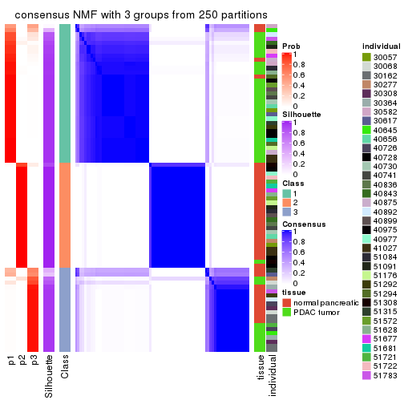
consensus_heatmap(res, k = 4)
consensus_heatmap(res, k = 5)
consensus_heatmap(res, k = 6)
Heatmaps for the membership of samples in all partitions to see how consistent they are:
membership_heatmap(res, k = 2)
membership_heatmap(res, k = 3)
membership_heatmap(res, k = 4)
membership_heatmap(res, k = 5)
membership_heatmap(res, k = 6)
As soon as we have had the classes for columns, we can look for signatures which are significantly different between classes which can be candidate marks for certain classes. Following are the heatmaps for signatures.
Signature heatmaps where rows are scaled:
get_signatures(res, k = 2)
get_signatures(res, k = 3)

get_signatures(res, k = 4)

get_signatures(res, k = 5)
get_signatures(res, k = 6)
Signature heatmaps where rows are not scaled:
get_signatures(res, k = 2, scale_rows = FALSE)
get_signatures(res, k = 3, scale_rows = FALSE)
get_signatures(res, k = 4, scale_rows = FALSE)
get_signatures(res, k = 5, scale_rows = FALSE)
get_signatures(res, k = 6, scale_rows = FALSE)
Compare the overlap of signatures from different k:
compare_signatures(res)
get_signature() returns a data frame invisibly. TO get the list of signatures, the function
call should be assigned to a variable explicitly. In following code, if plot argument is set
to FALSE, no heatmap is plotted while only the differential analysis is performed.
# code only for demonstration
tb = get_signature(res, k = ..., plot = FALSE)
An example of the output of tb is:
#> which_row fdr mean_1 mean_2 scaled_mean_1 scaled_mean_2 km
#> 1 38 0.042760348 8.373488 9.131774 -0.5533452 0.5164555 1
#> 2 40 0.018707592 7.106213 8.469186 -0.6173731 0.5762149 1
#> 3 55 0.019134737 10.221463 11.207825 -0.6159697 0.5749050 1
#> 4 59 0.006059896 5.921854 7.869574 -0.6899429 0.6439467 1
#> 5 60 0.018055526 8.928898 10.211722 -0.6204761 0.5791110 1
#> 6 98 0.009384629 15.714769 14.887706 0.6635654 -0.6193277 2
...
The columns in tb are:
which_row: row indices corresponding to the input matrix.fdr: FDR for the differential test. mean_x: The mean value in group x.scaled_mean_x: The mean value in group x after rows are scaled.km: Row groups if k-means clustering is applied to rows.UMAP plot which shows how samples are separated.
dimension_reduction(res, k = 2, method = "UMAP")
dimension_reduction(res, k = 3, method = "UMAP")
dimension_reduction(res, k = 4, method = "UMAP")
dimension_reduction(res, k = 5, method = "UMAP")
dimension_reduction(res, k = 6, method = "UMAP")
Following heatmap shows how subgroups are split when increasing k:
collect_classes(res)
Test correlation between subgroups and known annotations. If the known annotation is numeric, one-way ANOVA test is applied, and if the known annotation is discrete, chi-squared contingency table test is applied.
test_to_known_factors(res)
#> n tissue(p) individual(p) k
#> MAD:NMF 78 9.41e-08 0.8891 2
#> MAD:NMF 74 2.08e-10 0.3185 3
#> MAD:NMF 78 4.82e-10 0.1943 4
#> MAD:NMF 61 6.72e-08 0.0854 5
#> MAD:NMF 73 5.77e-09 0.1855 6
If matrix rows can be associated to genes, consider to use functional_enrichment(res,
...) to perform function enrichment for the signature genes. See this vignette for more detailed explanations.
The object with results only for a single top-value method and a single partition method can be extracted as:
res = res_list["ATC", "hclust"]
# you can also extract it by
# res = res_list["ATC:hclust"]
A summary of res and all the functions that can be applied to it:
res
#> A 'ConsensusPartition' object with k = 2, 3, 4, 5, 6.
#> On a matrix with 51941 rows and 78 columns.
#> Top rows (1000, 2000, 3000, 4000, 5000) are extracted by 'ATC' method.
#> Subgroups are detected by 'hclust' method.
#> Performed in total 1250 partitions by row resampling.
#> Best k for subgroups seems to be 4.
#>
#> Following methods can be applied to this 'ConsensusPartition' object:
#> [1] "cola_report" "collect_classes" "collect_plots"
#> [4] "collect_stats" "colnames" "compare_signatures"
#> [7] "consensus_heatmap" "dimension_reduction" "functional_enrichment"
#> [10] "get_anno_col" "get_anno" "get_classes"
#> [13] "get_consensus" "get_matrix" "get_membership"
#> [16] "get_param" "get_signatures" "get_stats"
#> [19] "is_best_k" "is_stable_k" "membership_heatmap"
#> [22] "ncol" "nrow" "plot_ecdf"
#> [25] "rownames" "select_partition_number" "show"
#> [28] "suggest_best_k" "test_to_known_factors"
collect_plots() function collects all the plots made from res for all k (number of partitions)
into one single page to provide an easy and fast comparison between different k.
collect_plots(res)
The plots are:
k and the heatmap of
predicted classes for each k.k.k.k.All the plots in panels can be made by individual functions and they are plotted later in this section.
select_partition_number() produces several plots showing different
statistics for choosing “optimized” k. There are following statistics:
k;k, the area increased is defined as \(A_k - A_{k-1}\).The detailed explanations of these statistics can be found in the cola vignette.
Generally speaking, lower PAC score, higher mean silhouette score or higher
concordance corresponds to better partition. Rand index and Jaccard index
measure how similar the current partition is compared to partition with k-1.
If they are too similar, we won't accept k is better than k-1.
select_partition_number(res)
The numeric values for all these statistics can be obtained by get_stats().
get_stats(res)
#> k 1-PAC mean_silhouette concordance area_increased Rand Jaccard
#> 2 2 1.000 0.984 0.993 0.4232 0.579 0.579
#> 3 3 0.757 0.944 0.901 0.3700 0.792 0.641
#> 4 4 1.000 0.982 0.992 0.1549 0.960 0.892
#> 5 5 0.990 0.926 0.966 0.0212 0.984 0.952
#> 6 6 0.999 0.960 0.974 0.0116 0.991 0.972
suggest_best_k() suggests the best \(k\) based on these statistics. The rules are as follows:
suggest_best_k(res)
#> [1] 4
#> attr(,"optional")
#> [1] 2
There is also optional best \(k\) = 2 that is worth to check.
Following shows the table of the partitions (You need to click the show/hide
code output link to see it). The membership matrix (columns with name p*)
is inferred by
clue::cl_consensus()
function with the SE method. Basically the value in the membership matrix
represents the probability to belong to a certain group. The finall class
label for an item is determined with the group with highest probability it
belongs to.
In get_classes() function, the entropy is calculated from the membership
matrix and the silhouette score is calculated from the consensus matrix.
cbind(get_classes(res, k = 2), get_membership(res, k = 2))
#> class entropy silhouette p1 p2
#> GSM388115 1 0.0000 0.994 1.000 0.000
#> GSM388116 1 0.0000 0.994 1.000 0.000
#> GSM388117 1 0.0000 0.994 1.000 0.000
#> GSM388118 1 0.0000 0.994 1.000 0.000
#> GSM388119 1 0.0000 0.994 1.000 0.000
#> GSM388120 1 0.0000 0.994 1.000 0.000
#> GSM388121 1 0.0000 0.994 1.000 0.000
#> GSM388122 1 0.0000 0.994 1.000 0.000
#> GSM388123 1 0.0000 0.994 1.000 0.000
#> GSM388124 1 0.0000 0.994 1.000 0.000
#> GSM388125 1 0.0000 0.994 1.000 0.000
#> GSM388126 1 0.0000 0.994 1.000 0.000
#> GSM388127 1 0.0000 0.994 1.000 0.000
#> GSM388128 1 0.0000 0.994 1.000 0.000
#> GSM388129 1 0.0000 0.994 1.000 0.000
#> GSM388130 1 0.0000 0.994 1.000 0.000
#> GSM388131 1 0.0000 0.994 1.000 0.000
#> GSM388132 1 0.0000 0.994 1.000 0.000
#> GSM388133 1 0.0000 0.994 1.000 0.000
#> GSM388134 1 0.0000 0.994 1.000 0.000
#> GSM388135 1 0.0000 0.994 1.000 0.000
#> GSM388136 1 0.0000 0.994 1.000 0.000
#> GSM388137 1 0.0000 0.994 1.000 0.000
#> GSM388140 1 0.0000 0.994 1.000 0.000
#> GSM388141 1 0.0000 0.994 1.000 0.000
#> GSM388142 1 0.0000 0.994 1.000 0.000
#> GSM388143 1 0.0000 0.994 1.000 0.000
#> GSM388144 1 0.0000 0.994 1.000 0.000
#> GSM388145 1 0.9129 0.504 0.672 0.328
#> GSM388146 1 0.0000 0.994 1.000 0.000
#> GSM388147 1 0.0000 0.994 1.000 0.000
#> GSM388148 1 0.0000 0.994 1.000 0.000
#> GSM388149 1 0.0000 0.994 1.000 0.000
#> GSM388150 1 0.0000 0.994 1.000 0.000
#> GSM388151 1 0.0000 0.994 1.000 0.000
#> GSM388152 1 0.0000 0.994 1.000 0.000
#> GSM388153 1 0.0000 0.994 1.000 0.000
#> GSM388139 1 0.0000 0.994 1.000 0.000
#> GSM388138 1 0.0000 0.994 1.000 0.000
#> GSM388076 1 0.0000 0.994 1.000 0.000
#> GSM388077 1 0.0000 0.994 1.000 0.000
#> GSM388078 2 0.0000 0.992 0.000 1.000
#> GSM388079 2 0.0000 0.992 0.000 1.000
#> GSM388080 2 0.0000 0.992 0.000 1.000
#> GSM388081 2 0.0000 0.992 0.000 1.000
#> GSM388082 2 0.0000 0.992 0.000 1.000
#> GSM388083 1 0.0000 0.994 1.000 0.000
#> GSM388084 2 0.0000 0.992 0.000 1.000
#> GSM388085 1 0.0000 0.994 1.000 0.000
#> GSM388086 1 0.0000 0.994 1.000 0.000
#> GSM388087 1 0.0000 0.994 1.000 0.000
#> GSM388088 1 0.0000 0.994 1.000 0.000
#> GSM388089 1 0.0000 0.994 1.000 0.000
#> GSM388090 2 0.0000 0.992 0.000 1.000
#> GSM388091 1 0.0000 0.994 1.000 0.000
#> GSM388092 2 0.0000 0.992 0.000 1.000
#> GSM388093 2 0.0000 0.992 0.000 1.000
#> GSM388094 2 0.0000 0.992 0.000 1.000
#> GSM388095 2 0.0000 0.992 0.000 1.000
#> GSM388096 1 0.0000 0.994 1.000 0.000
#> GSM388097 1 0.0000 0.994 1.000 0.000
#> GSM388098 2 0.0000 0.992 0.000 1.000
#> GSM388101 2 0.0000 0.992 0.000 1.000
#> GSM388102 2 0.0938 0.981 0.012 0.988
#> GSM388103 2 0.0000 0.992 0.000 1.000
#> GSM388104 1 0.0000 0.994 1.000 0.000
#> GSM388105 1 0.0000 0.994 1.000 0.000
#> GSM388106 1 0.0000 0.994 1.000 0.000
#> GSM388107 1 0.0000 0.994 1.000 0.000
#> GSM388108 2 0.0000 0.992 0.000 1.000
#> GSM388109 2 0.0000 0.992 0.000 1.000
#> GSM388110 2 0.0000 0.992 0.000 1.000
#> GSM388111 2 0.0000 0.992 0.000 1.000
#> GSM388112 2 0.0000 0.992 0.000 1.000
#> GSM388113 2 0.0000 0.992 0.000 1.000
#> GSM388114 1 0.0000 0.994 1.000 0.000
#> GSM388100 2 0.0000 0.992 0.000 1.000
#> GSM388099 2 0.6531 0.796 0.168 0.832
cbind(get_classes(res, k = 3), get_membership(res, k = 3))
#> class entropy silhouette p1 p2 p3
#> GSM388115 3 0.000 1.000 0.000 0.000 1.000
#> GSM388116 3 0.000 1.000 0.000 0.000 1.000
#> GSM388117 3 0.000 1.000 0.000 0.000 1.000
#> GSM388118 3 0.000 1.000 0.000 0.000 1.000
#> GSM388119 3 0.000 1.000 0.000 0.000 1.000
#> GSM388120 3 0.000 1.000 0.000 0.000 1.000
#> GSM388121 3 0.000 1.000 0.000 0.000 1.000
#> GSM388122 3 0.000 1.000 0.000 0.000 1.000
#> GSM388123 1 0.576 0.965 0.672 0.000 0.328
#> GSM388124 3 0.000 1.000 0.000 0.000 1.000
#> GSM388125 3 0.000 1.000 0.000 0.000 1.000
#> GSM388126 3 0.000 1.000 0.000 0.000 1.000
#> GSM388127 1 0.576 0.965 0.672 0.000 0.328
#> GSM388128 1 0.576 0.965 0.672 0.000 0.328
#> GSM388129 3 0.000 1.000 0.000 0.000 1.000
#> GSM388130 3 0.000 1.000 0.000 0.000 1.000
#> GSM388131 3 0.000 1.000 0.000 0.000 1.000
#> GSM388132 1 0.576 0.965 0.672 0.000 0.328
#> GSM388133 3 0.000 1.000 0.000 0.000 1.000
#> GSM388134 1 0.576 0.965 0.672 0.000 0.328
#> GSM388135 3 0.000 1.000 0.000 0.000 1.000
#> GSM388136 3 0.000 1.000 0.000 0.000 1.000
#> GSM388137 3 0.000 1.000 0.000 0.000 1.000
#> GSM388140 1 0.576 0.965 0.672 0.000 0.328
#> GSM388141 3 0.000 1.000 0.000 0.000 1.000
#> GSM388142 3 0.000 1.000 0.000 0.000 1.000
#> GSM388143 3 0.000 1.000 0.000 0.000 1.000
#> GSM388144 3 0.000 1.000 0.000 0.000 1.000
#> GSM388145 1 0.000 0.430 1.000 0.000 0.000
#> GSM388146 3 0.000 1.000 0.000 0.000 1.000
#> GSM388147 3 0.000 1.000 0.000 0.000 1.000
#> GSM388148 1 0.576 0.965 0.672 0.000 0.328
#> GSM388149 3 0.000 1.000 0.000 0.000 1.000
#> GSM388150 3 0.000 1.000 0.000 0.000 1.000
#> GSM388151 3 0.000 1.000 0.000 0.000 1.000
#> GSM388152 3 0.000 1.000 0.000 0.000 1.000
#> GSM388153 1 0.576 0.965 0.672 0.000 0.328
#> GSM388139 3 0.000 1.000 0.000 0.000 1.000
#> GSM388138 3 0.000 1.000 0.000 0.000 1.000
#> GSM388076 3 0.000 1.000 0.000 0.000 1.000
#> GSM388077 3 0.000 1.000 0.000 0.000 1.000
#> GSM388078 2 0.000 0.899 0.000 1.000 0.000
#> GSM388079 2 0.000 0.899 0.000 1.000 0.000
#> GSM388080 2 0.000 0.899 0.000 1.000 0.000
#> GSM388081 2 0.000 0.899 0.000 1.000 0.000
#> GSM388082 2 0.000 0.899 0.000 1.000 0.000
#> GSM388083 3 0.000 1.000 0.000 0.000 1.000
#> GSM388084 2 0.000 0.899 0.000 1.000 0.000
#> GSM388085 3 0.000 1.000 0.000 0.000 1.000
#> GSM388086 1 0.576 0.965 0.672 0.000 0.328
#> GSM388087 1 0.576 0.965 0.672 0.000 0.328
#> GSM388088 1 0.576 0.965 0.672 0.000 0.328
#> GSM388089 1 0.576 0.965 0.672 0.000 0.328
#> GSM388090 2 0.576 0.798 0.328 0.672 0.000
#> GSM388091 3 0.000 1.000 0.000 0.000 1.000
#> GSM388092 2 0.576 0.798 0.328 0.672 0.000
#> GSM388093 2 0.576 0.798 0.328 0.672 0.000
#> GSM388094 2 0.000 0.899 0.000 1.000 0.000
#> GSM388095 2 0.000 0.899 0.000 1.000 0.000
#> GSM388096 1 0.576 0.965 0.672 0.000 0.328
#> GSM388097 3 0.000 1.000 0.000 0.000 1.000
#> GSM388098 2 0.576 0.798 0.328 0.672 0.000
#> GSM388101 2 0.000 0.899 0.000 1.000 0.000
#> GSM388102 2 0.583 0.790 0.340 0.660 0.000
#> GSM388103 2 0.576 0.798 0.328 0.672 0.000
#> GSM388104 3 0.000 1.000 0.000 0.000 1.000
#> GSM388105 3 0.000 1.000 0.000 0.000 1.000
#> GSM388106 1 0.576 0.965 0.672 0.000 0.328
#> GSM388107 1 0.576 0.965 0.672 0.000 0.328
#> GSM388108 2 0.000 0.899 0.000 1.000 0.000
#> GSM388109 2 0.000 0.899 0.000 1.000 0.000
#> GSM388110 2 0.000 0.899 0.000 1.000 0.000
#> GSM388111 2 0.000 0.899 0.000 1.000 0.000
#> GSM388112 2 0.000 0.899 0.000 1.000 0.000
#> GSM388113 2 0.000 0.899 0.000 1.000 0.000
#> GSM388114 3 0.000 1.000 0.000 0.000 1.000
#> GSM388100 2 0.576 0.798 0.328 0.672 0.000
#> GSM388099 2 0.631 0.619 0.496 0.504 0.000
cbind(get_classes(res, k = 4), get_membership(res, k = 4))
#> class entropy silhouette p1 p2 p3 p4
#> GSM388115 3 0.0000 0.999 0.000 0.000 1.000 0.000
#> GSM388116 3 0.0000 0.999 0.000 0.000 1.000 0.000
#> GSM388117 3 0.0000 0.999 0.000 0.000 1.000 0.000
#> GSM388118 3 0.0000 0.999 0.000 0.000 1.000 0.000
#> GSM388119 3 0.0000 0.999 0.000 0.000 1.000 0.000
#> GSM388120 3 0.0000 0.999 0.000 0.000 1.000 0.000
#> GSM388121 3 0.0336 0.992 0.008 0.000 0.992 0.000
#> GSM388122 3 0.0000 0.999 0.000 0.000 1.000 0.000
#> GSM388123 1 0.0469 0.968 0.988 0.000 0.000 0.012
#> GSM388124 3 0.0000 0.999 0.000 0.000 1.000 0.000
#> GSM388125 3 0.0000 0.999 0.000 0.000 1.000 0.000
#> GSM388126 3 0.0000 0.999 0.000 0.000 1.000 0.000
#> GSM388127 1 0.0000 0.974 1.000 0.000 0.000 0.000
#> GSM388128 1 0.0000 0.974 1.000 0.000 0.000 0.000
#> GSM388129 3 0.0000 0.999 0.000 0.000 1.000 0.000
#> GSM388130 3 0.0000 0.999 0.000 0.000 1.000 0.000
#> GSM388131 3 0.0000 0.999 0.000 0.000 1.000 0.000
#> GSM388132 1 0.0000 0.974 1.000 0.000 0.000 0.000
#> GSM388133 3 0.0000 0.999 0.000 0.000 1.000 0.000
#> GSM388134 1 0.0000 0.974 1.000 0.000 0.000 0.000
#> GSM388135 3 0.0000 0.999 0.000 0.000 1.000 0.000
#> GSM388136 3 0.0000 0.999 0.000 0.000 1.000 0.000
#> GSM388137 3 0.0000 0.999 0.000 0.000 1.000 0.000
#> GSM388140 1 0.0000 0.974 1.000 0.000 0.000 0.000
#> GSM388141 3 0.0000 0.999 0.000 0.000 1.000 0.000
#> GSM388142 3 0.0000 0.999 0.000 0.000 1.000 0.000
#> GSM388143 3 0.0336 0.992 0.008 0.000 0.992 0.000
#> GSM388144 3 0.0000 0.999 0.000 0.000 1.000 0.000
#> GSM388145 1 0.4624 0.476 0.660 0.000 0.000 0.340
#> GSM388146 3 0.0000 0.999 0.000 0.000 1.000 0.000
#> GSM388147 3 0.0000 0.999 0.000 0.000 1.000 0.000
#> GSM388148 1 0.0000 0.974 1.000 0.000 0.000 0.000
#> GSM388149 3 0.0336 0.992 0.008 0.000 0.992 0.000
#> GSM388150 3 0.0000 0.999 0.000 0.000 1.000 0.000
#> GSM388151 3 0.0000 0.999 0.000 0.000 1.000 0.000
#> GSM388152 3 0.0000 0.999 0.000 0.000 1.000 0.000
#> GSM388153 1 0.0469 0.968 0.988 0.000 0.000 0.012
#> GSM388139 3 0.0000 0.999 0.000 0.000 1.000 0.000
#> GSM388138 3 0.0336 0.992 0.008 0.000 0.992 0.000
#> GSM388076 3 0.0000 0.999 0.000 0.000 1.000 0.000
#> GSM388077 3 0.0000 0.999 0.000 0.000 1.000 0.000
#> GSM388078 2 0.0000 0.999 0.000 1.000 0.000 0.000
#> GSM388079 2 0.0000 0.999 0.000 1.000 0.000 0.000
#> GSM388080 2 0.0000 0.999 0.000 1.000 0.000 0.000
#> GSM388081 2 0.0000 0.999 0.000 1.000 0.000 0.000
#> GSM388082 2 0.0000 0.999 0.000 1.000 0.000 0.000
#> GSM388083 3 0.0000 0.999 0.000 0.000 1.000 0.000
#> GSM388084 2 0.0000 0.999 0.000 1.000 0.000 0.000
#> GSM388085 3 0.0000 0.999 0.000 0.000 1.000 0.000
#> GSM388086 1 0.0000 0.974 1.000 0.000 0.000 0.000
#> GSM388087 1 0.0000 0.974 1.000 0.000 0.000 0.000
#> GSM388088 1 0.0000 0.974 1.000 0.000 0.000 0.000
#> GSM388089 1 0.0000 0.974 1.000 0.000 0.000 0.000
#> GSM388090 4 0.0469 0.974 0.000 0.012 0.000 0.988
#> GSM388091 3 0.0000 0.999 0.000 0.000 1.000 0.000
#> GSM388092 4 0.0469 0.974 0.000 0.012 0.000 0.988
#> GSM388093 4 0.0469 0.974 0.000 0.012 0.000 0.988
#> GSM388094 2 0.0000 0.999 0.000 1.000 0.000 0.000
#> GSM388095 2 0.0000 0.999 0.000 1.000 0.000 0.000
#> GSM388096 1 0.0000 0.974 1.000 0.000 0.000 0.000
#> GSM388097 3 0.0000 0.999 0.000 0.000 1.000 0.000
#> GSM388098 4 0.0469 0.974 0.000 0.012 0.000 0.988
#> GSM388101 2 0.0000 0.999 0.000 1.000 0.000 0.000
#> GSM388102 4 0.0000 0.965 0.000 0.000 0.000 1.000
#> GSM388103 4 0.0469 0.974 0.000 0.012 0.000 0.988
#> GSM388104 3 0.0000 0.999 0.000 0.000 1.000 0.000
#> GSM388105 3 0.0000 0.999 0.000 0.000 1.000 0.000
#> GSM388106 1 0.0469 0.968 0.988 0.000 0.000 0.012
#> GSM388107 1 0.0000 0.974 1.000 0.000 0.000 0.000
#> GSM388108 2 0.0188 0.996 0.000 0.996 0.000 0.004
#> GSM388109 2 0.0000 0.999 0.000 1.000 0.000 0.000
#> GSM388110 2 0.0000 0.999 0.000 1.000 0.000 0.000
#> GSM388111 2 0.0000 0.999 0.000 1.000 0.000 0.000
#> GSM388112 2 0.0000 0.999 0.000 1.000 0.000 0.000
#> GSM388113 2 0.0188 0.996 0.000 0.996 0.000 0.004
#> GSM388114 3 0.0000 0.999 0.000 0.000 1.000 0.000
#> GSM388100 4 0.0469 0.974 0.000 0.012 0.000 0.988
#> GSM388099 4 0.3123 0.799 0.156 0.000 0.000 0.844
cbind(get_classes(res, k = 5), get_membership(res, k = 5))
#> class entropy silhouette p1 p2 p3 p4 p5
#> GSM388115 3 0.0000 0.999 0.000 0.000 1.000 0.000 0.000
#> GSM388116 3 0.0000 0.999 0.000 0.000 1.000 0.000 0.000
#> GSM388117 3 0.0000 0.999 0.000 0.000 1.000 0.000 0.000
#> GSM388118 3 0.0000 0.999 0.000 0.000 1.000 0.000 0.000
#> GSM388119 3 0.0000 0.999 0.000 0.000 1.000 0.000 0.000
#> GSM388120 3 0.0000 0.999 0.000 0.000 1.000 0.000 0.000
#> GSM388121 3 0.0290 0.992 0.000 0.000 0.992 0.008 0.000
#> GSM388122 3 0.0000 0.999 0.000 0.000 1.000 0.000 0.000
#> GSM388123 5 0.3949 0.711 0.000 0.000 0.000 0.332 0.668
#> GSM388124 3 0.0000 0.999 0.000 0.000 1.000 0.000 0.000
#> GSM388125 3 0.0000 0.999 0.000 0.000 1.000 0.000 0.000
#> GSM388126 3 0.0000 0.999 0.000 0.000 1.000 0.000 0.000
#> GSM388127 4 0.0000 0.921 0.000 0.000 0.000 1.000 0.000
#> GSM388128 4 0.0000 0.921 0.000 0.000 0.000 1.000 0.000
#> GSM388129 3 0.0000 0.999 0.000 0.000 1.000 0.000 0.000
#> GSM388130 3 0.0000 0.999 0.000 0.000 1.000 0.000 0.000
#> GSM388131 3 0.0000 0.999 0.000 0.000 1.000 0.000 0.000
#> GSM388132 4 0.0609 0.913 0.000 0.000 0.000 0.980 0.020
#> GSM388133 3 0.0000 0.999 0.000 0.000 1.000 0.000 0.000
#> GSM388134 4 0.0609 0.913 0.000 0.000 0.000 0.980 0.020
#> GSM388135 3 0.0000 0.999 0.000 0.000 1.000 0.000 0.000
#> GSM388136 3 0.0000 0.999 0.000 0.000 1.000 0.000 0.000
#> GSM388137 3 0.0000 0.999 0.000 0.000 1.000 0.000 0.000
#> GSM388140 4 0.0609 0.913 0.000 0.000 0.000 0.980 0.020
#> GSM388141 3 0.0000 0.999 0.000 0.000 1.000 0.000 0.000
#> GSM388142 3 0.0000 0.999 0.000 0.000 1.000 0.000 0.000
#> GSM388143 3 0.0290 0.992 0.000 0.000 0.992 0.008 0.000
#> GSM388144 3 0.0000 0.999 0.000 0.000 1.000 0.000 0.000
#> GSM388145 5 0.0162 0.418 0.000 0.000 0.000 0.004 0.996
#> GSM388146 3 0.0000 0.999 0.000 0.000 1.000 0.000 0.000
#> GSM388147 3 0.0000 0.999 0.000 0.000 1.000 0.000 0.000
#> GSM388148 4 0.0609 0.913 0.000 0.000 0.000 0.980 0.020
#> GSM388149 3 0.0290 0.992 0.000 0.000 0.992 0.008 0.000
#> GSM388150 3 0.0000 0.999 0.000 0.000 1.000 0.000 0.000
#> GSM388151 3 0.0000 0.999 0.000 0.000 1.000 0.000 0.000
#> GSM388152 3 0.0000 0.999 0.000 0.000 1.000 0.000 0.000
#> GSM388153 5 0.3949 0.711 0.000 0.000 0.000 0.332 0.668
#> GSM388139 3 0.0000 0.999 0.000 0.000 1.000 0.000 0.000
#> GSM388138 3 0.0290 0.992 0.000 0.000 0.992 0.008 0.000
#> GSM388076 3 0.0000 0.999 0.000 0.000 1.000 0.000 0.000
#> GSM388077 3 0.0000 0.999 0.000 0.000 1.000 0.000 0.000
#> GSM388078 2 0.0000 0.999 0.000 1.000 0.000 0.000 0.000
#> GSM388079 2 0.0000 0.999 0.000 1.000 0.000 0.000 0.000
#> GSM388080 2 0.0000 0.999 0.000 1.000 0.000 0.000 0.000
#> GSM388081 2 0.0000 0.999 0.000 1.000 0.000 0.000 0.000
#> GSM388082 2 0.0000 0.999 0.000 1.000 0.000 0.000 0.000
#> GSM388083 3 0.0000 0.999 0.000 0.000 1.000 0.000 0.000
#> GSM388084 2 0.0000 0.999 0.000 1.000 0.000 0.000 0.000
#> GSM388085 3 0.0000 0.999 0.000 0.000 1.000 0.000 0.000
#> GSM388086 4 0.0000 0.921 0.000 0.000 0.000 1.000 0.000
#> GSM388087 4 0.0000 0.921 0.000 0.000 0.000 1.000 0.000
#> GSM388088 4 0.0000 0.921 0.000 0.000 0.000 1.000 0.000
#> GSM388089 4 0.4307 -0.565 0.000 0.000 0.000 0.500 0.500
#> GSM388090 1 0.0162 0.892 0.996 0.000 0.000 0.000 0.004
#> GSM388091 3 0.0000 0.999 0.000 0.000 1.000 0.000 0.000
#> GSM388092 1 0.0000 0.894 1.000 0.000 0.000 0.000 0.000
#> GSM388093 1 0.0000 0.894 1.000 0.000 0.000 0.000 0.000
#> GSM388094 2 0.0000 0.999 0.000 1.000 0.000 0.000 0.000
#> GSM388095 2 0.0000 0.999 0.000 1.000 0.000 0.000 0.000
#> GSM388096 4 0.0000 0.921 0.000 0.000 0.000 1.000 0.000
#> GSM388097 3 0.0000 0.999 0.000 0.000 1.000 0.000 0.000
#> GSM388098 1 0.0000 0.894 1.000 0.000 0.000 0.000 0.000
#> GSM388101 2 0.0000 0.999 0.000 1.000 0.000 0.000 0.000
#> GSM388102 1 0.3999 0.664 0.656 0.000 0.000 0.000 0.344
#> GSM388103 1 0.0000 0.894 1.000 0.000 0.000 0.000 0.000
#> GSM388104 3 0.0000 0.999 0.000 0.000 1.000 0.000 0.000
#> GSM388105 3 0.0000 0.999 0.000 0.000 1.000 0.000 0.000
#> GSM388106 5 0.4305 0.415 0.000 0.000 0.000 0.488 0.512
#> GSM388107 4 0.0000 0.921 0.000 0.000 0.000 1.000 0.000
#> GSM388108 2 0.0162 0.996 0.004 0.996 0.000 0.000 0.000
#> GSM388109 2 0.0000 0.999 0.000 1.000 0.000 0.000 0.000
#> GSM388110 2 0.0000 0.999 0.000 1.000 0.000 0.000 0.000
#> GSM388111 2 0.0000 0.999 0.000 1.000 0.000 0.000 0.000
#> GSM388112 2 0.0000 0.999 0.000 1.000 0.000 0.000 0.000
#> GSM388113 2 0.0162 0.996 0.004 0.996 0.000 0.000 0.000
#> GSM388114 3 0.0000 0.999 0.000 0.000 1.000 0.000 0.000
#> GSM388100 1 0.0000 0.894 1.000 0.000 0.000 0.000 0.000
#> GSM388099 1 0.4307 0.479 0.500 0.000 0.000 0.000 0.500
cbind(get_classes(res, k = 6), get_membership(res, k = 6))
#> class entropy silhouette p1 p2 p3 p4 p5 p6
#> GSM388115 1 0.0000 0.999 1.000 0.000 0.000 0.000 0.000 0.000
#> GSM388116 1 0.0000 0.999 1.000 0.000 0.000 0.000 0.000 0.000
#> GSM388117 1 0.0000 0.999 1.000 0.000 0.000 0.000 0.000 0.000
#> GSM388118 1 0.0000 0.999 1.000 0.000 0.000 0.000 0.000 0.000
#> GSM388119 1 0.0000 0.999 1.000 0.000 0.000 0.000 0.000 0.000
#> GSM388120 1 0.0000 0.999 1.000 0.000 0.000 0.000 0.000 0.000
#> GSM388121 1 0.0260 0.992 0.992 0.000 0.000 0.000 0.008 0.000
#> GSM388122 1 0.0000 0.999 1.000 0.000 0.000 0.000 0.000 0.000
#> GSM388123 4 0.2669 0.814 0.000 0.000 0.156 0.836 0.008 0.000
#> GSM388124 1 0.0000 0.999 1.000 0.000 0.000 0.000 0.000 0.000
#> GSM388125 1 0.0000 0.999 1.000 0.000 0.000 0.000 0.000 0.000
#> GSM388126 1 0.0000 0.999 1.000 0.000 0.000 0.000 0.000 0.000
#> GSM388127 5 0.0363 0.973 0.000 0.000 0.000 0.012 0.988 0.000
#> GSM388128 5 0.0000 0.972 0.000 0.000 0.000 0.000 1.000 0.000
#> GSM388129 1 0.0000 0.999 1.000 0.000 0.000 0.000 0.000 0.000
#> GSM388130 1 0.0000 0.999 1.000 0.000 0.000 0.000 0.000 0.000
#> GSM388131 1 0.0000 0.999 1.000 0.000 0.000 0.000 0.000 0.000
#> GSM388132 5 0.0790 0.967 0.000 0.000 0.000 0.032 0.968 0.000
#> GSM388133 1 0.0000 0.999 1.000 0.000 0.000 0.000 0.000 0.000
#> GSM388134 5 0.1556 0.934 0.000 0.000 0.000 0.080 0.920 0.000
#> GSM388135 1 0.0000 0.999 1.000 0.000 0.000 0.000 0.000 0.000
#> GSM388136 1 0.0000 0.999 1.000 0.000 0.000 0.000 0.000 0.000
#> GSM388137 1 0.0000 0.999 1.000 0.000 0.000 0.000 0.000 0.000
#> GSM388140 5 0.1556 0.934 0.000 0.000 0.000 0.080 0.920 0.000
#> GSM388141 1 0.0000 0.999 1.000 0.000 0.000 0.000 0.000 0.000
#> GSM388142 1 0.0000 0.999 1.000 0.000 0.000 0.000 0.000 0.000
#> GSM388143 1 0.0260 0.992 0.992 0.000 0.000 0.000 0.008 0.000
#> GSM388144 1 0.0000 0.999 1.000 0.000 0.000 0.000 0.000 0.000
#> GSM388145 4 0.3866 0.404 0.000 0.000 0.484 0.516 0.000 0.000
#> GSM388146 1 0.0000 0.999 1.000 0.000 0.000 0.000 0.000 0.000
#> GSM388147 1 0.0000 0.999 1.000 0.000 0.000 0.000 0.000 0.000
#> GSM388148 5 0.0790 0.967 0.000 0.000 0.000 0.032 0.968 0.000
#> GSM388149 1 0.0260 0.992 0.992 0.000 0.000 0.000 0.008 0.000
#> GSM388150 1 0.0000 0.999 1.000 0.000 0.000 0.000 0.000 0.000
#> GSM388151 1 0.0000 0.999 1.000 0.000 0.000 0.000 0.000 0.000
#> GSM388152 1 0.0000 0.999 1.000 0.000 0.000 0.000 0.000 0.000
#> GSM388153 4 0.2669 0.814 0.000 0.000 0.156 0.836 0.008 0.000
#> GSM388139 1 0.0000 0.999 1.000 0.000 0.000 0.000 0.000 0.000
#> GSM388138 1 0.0260 0.992 0.992 0.000 0.000 0.000 0.008 0.000
#> GSM388076 1 0.0000 0.999 1.000 0.000 0.000 0.000 0.000 0.000
#> GSM388077 1 0.0000 0.999 1.000 0.000 0.000 0.000 0.000 0.000
#> GSM388078 2 0.0000 0.999 0.000 1.000 0.000 0.000 0.000 0.000
#> GSM388079 2 0.0000 0.999 0.000 1.000 0.000 0.000 0.000 0.000
#> GSM388080 2 0.0000 0.999 0.000 1.000 0.000 0.000 0.000 0.000
#> GSM388081 2 0.0000 0.999 0.000 1.000 0.000 0.000 0.000 0.000
#> GSM388082 2 0.0000 0.999 0.000 1.000 0.000 0.000 0.000 0.000
#> GSM388083 1 0.0000 0.999 1.000 0.000 0.000 0.000 0.000 0.000
#> GSM388084 2 0.0000 0.999 0.000 1.000 0.000 0.000 0.000 0.000
#> GSM388085 1 0.0000 0.999 1.000 0.000 0.000 0.000 0.000 0.000
#> GSM388086 5 0.0260 0.972 0.000 0.000 0.000 0.008 0.992 0.000
#> GSM388087 5 0.0260 0.972 0.000 0.000 0.000 0.008 0.992 0.000
#> GSM388088 5 0.0260 0.972 0.000 0.000 0.000 0.008 0.992 0.000
#> GSM388089 4 0.0363 0.790 0.000 0.000 0.000 0.988 0.012 0.000
#> GSM388090 6 0.3126 0.628 0.000 0.000 0.248 0.000 0.000 0.752
#> GSM388091 1 0.0000 0.999 1.000 0.000 0.000 0.000 0.000 0.000
#> GSM388092 6 0.0000 0.929 0.000 0.000 0.000 0.000 0.000 1.000
#> GSM388093 6 0.0000 0.929 0.000 0.000 0.000 0.000 0.000 1.000
#> GSM388094 2 0.0000 0.999 0.000 1.000 0.000 0.000 0.000 0.000
#> GSM388095 2 0.0000 0.999 0.000 1.000 0.000 0.000 0.000 0.000
#> GSM388096 5 0.0363 0.973 0.000 0.000 0.000 0.012 0.988 0.000
#> GSM388097 1 0.0000 0.999 1.000 0.000 0.000 0.000 0.000 0.000
#> GSM388098 6 0.0000 0.929 0.000 0.000 0.000 0.000 0.000 1.000
#> GSM388101 2 0.0000 0.999 0.000 1.000 0.000 0.000 0.000 0.000
#> GSM388102 3 0.3975 0.702 0.000 0.000 0.600 0.008 0.000 0.392
#> GSM388103 6 0.0000 0.929 0.000 0.000 0.000 0.000 0.000 1.000
#> GSM388104 1 0.0000 0.999 1.000 0.000 0.000 0.000 0.000 0.000
#> GSM388105 1 0.0000 0.999 1.000 0.000 0.000 0.000 0.000 0.000
#> GSM388106 4 0.0000 0.795 0.000 0.000 0.000 1.000 0.000 0.000
#> GSM388107 5 0.0260 0.972 0.000 0.000 0.000 0.008 0.992 0.000
#> GSM388108 2 0.0146 0.996 0.000 0.996 0.000 0.000 0.000 0.004
#> GSM388109 2 0.0000 0.999 0.000 1.000 0.000 0.000 0.000 0.000
#> GSM388110 2 0.0000 0.999 0.000 1.000 0.000 0.000 0.000 0.000
#> GSM388111 2 0.0000 0.999 0.000 1.000 0.000 0.000 0.000 0.000
#> GSM388112 2 0.0000 0.999 0.000 1.000 0.000 0.000 0.000 0.000
#> GSM388113 2 0.0146 0.996 0.000 0.996 0.000 0.000 0.000 0.004
#> GSM388114 1 0.0000 0.999 1.000 0.000 0.000 0.000 0.000 0.000
#> GSM388100 6 0.0000 0.929 0.000 0.000 0.000 0.000 0.000 1.000
#> GSM388099 3 0.3298 0.743 0.000 0.000 0.756 0.008 0.000 0.236
Heatmaps for the consensus matrix. It visualizes the probability of two samples to be in a same group.
consensus_heatmap(res, k = 2)
consensus_heatmap(res, k = 3)
consensus_heatmap(res, k = 4)
consensus_heatmap(res, k = 5)
consensus_heatmap(res, k = 6)
Heatmaps for the membership of samples in all partitions to see how consistent they are:
membership_heatmap(res, k = 2)
membership_heatmap(res, k = 3)

membership_heatmap(res, k = 4)

membership_heatmap(res, k = 5)

membership_heatmap(res, k = 6)
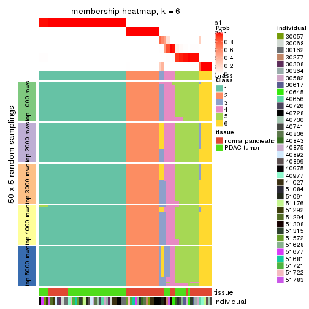
As soon as we have had the classes for columns, we can look for signatures which are significantly different between classes which can be candidate marks for certain classes. Following are the heatmaps for signatures.
Signature heatmaps where rows are scaled:
get_signatures(res, k = 2)
get_signatures(res, k = 3)
get_signatures(res, k = 4)
get_signatures(res, k = 5)
get_signatures(res, k = 6)
Signature heatmaps where rows are not scaled:
get_signatures(res, k = 2, scale_rows = FALSE)
get_signatures(res, k = 3, scale_rows = FALSE)
get_signatures(res, k = 4, scale_rows = FALSE)
get_signatures(res, k = 5, scale_rows = FALSE)
get_signatures(res, k = 6, scale_rows = FALSE)
Compare the overlap of signatures from different k:
compare_signatures(res)
get_signature() returns a data frame invisibly. TO get the list of signatures, the function
call should be assigned to a variable explicitly. In following code, if plot argument is set
to FALSE, no heatmap is plotted while only the differential analysis is performed.
# code only for demonstration
tb = get_signature(res, k = ..., plot = FALSE)
An example of the output of tb is:
#> which_row fdr mean_1 mean_2 scaled_mean_1 scaled_mean_2 km
#> 1 38 0.042760348 8.373488 9.131774 -0.5533452 0.5164555 1
#> 2 40 0.018707592 7.106213 8.469186 -0.6173731 0.5762149 1
#> 3 55 0.019134737 10.221463 11.207825 -0.6159697 0.5749050 1
#> 4 59 0.006059896 5.921854 7.869574 -0.6899429 0.6439467 1
#> 5 60 0.018055526 8.928898 10.211722 -0.6204761 0.5791110 1
#> 6 98 0.009384629 15.714769 14.887706 0.6635654 -0.6193277 2
...
The columns in tb are:
which_row: row indices corresponding to the input matrix.fdr: FDR for the differential test. mean_x: The mean value in group x.scaled_mean_x: The mean value in group x after rows are scaled.km: Row groups if k-means clustering is applied to rows.UMAP plot which shows how samples are separated.
dimension_reduction(res, k = 2, method = "UMAP")
dimension_reduction(res, k = 3, method = "UMAP")
dimension_reduction(res, k = 4, method = "UMAP")
dimension_reduction(res, k = 5, method = "UMAP")
dimension_reduction(res, k = 6, method = "UMAP")
Following heatmap shows how subgroups are split when increasing k:
collect_classes(res)
Test correlation between subgroups and known annotations. If the known annotation is numeric, one-way ANOVA test is applied, and if the known annotation is discrete, chi-squared contingency table test is applied.
test_to_known_factors(res)
#> n tissue(p) individual(p) k
#> ATC:hclust 78 4.68e-08 0.946 2
#> ATC:hclust 77 3.45e-08 0.575 3
#> ATC:hclust 77 1.66e-07 0.464 4
#> ATC:hclust 74 3.90e-07 0.455 5
#> ATC:hclust 77 1.99e-06 0.263 6
If matrix rows can be associated to genes, consider to use functional_enrichment(res,
...) to perform function enrichment for the signature genes. See this vignette for more detailed explanations.
The object with results only for a single top-value method and a single partition method can be extracted as:
res = res_list["ATC", "kmeans"]
# you can also extract it by
# res = res_list["ATC:kmeans"]
A summary of res and all the functions that can be applied to it:
res
#> A 'ConsensusPartition' object with k = 2, 3, 4, 5, 6.
#> On a matrix with 51941 rows and 78 columns.
#> Top rows (1000, 2000, 3000, 4000, 5000) are extracted by 'ATC' method.
#> Subgroups are detected by 'kmeans' method.
#> Performed in total 1250 partitions by row resampling.
#> Best k for subgroups seems to be 3.
#>
#> Following methods can be applied to this 'ConsensusPartition' object:
#> [1] "cola_report" "collect_classes" "collect_plots"
#> [4] "collect_stats" "colnames" "compare_signatures"
#> [7] "consensus_heatmap" "dimension_reduction" "functional_enrichment"
#> [10] "get_anno_col" "get_anno" "get_classes"
#> [13] "get_consensus" "get_matrix" "get_membership"
#> [16] "get_param" "get_signatures" "get_stats"
#> [19] "is_best_k" "is_stable_k" "membership_heatmap"
#> [22] "ncol" "nrow" "plot_ecdf"
#> [25] "rownames" "select_partition_number" "show"
#> [28] "suggest_best_k" "test_to_known_factors"
collect_plots() function collects all the plots made from res for all k (number of partitions)
into one single page to provide an easy and fast comparison between different k.
collect_plots(res)
The plots are:
k and the heatmap of
predicted classes for each k.k.k.k.All the plots in panels can be made by individual functions and they are plotted later in this section.
select_partition_number() produces several plots showing different
statistics for choosing “optimized” k. There are following statistics:
k;k, the area increased is defined as \(A_k - A_{k-1}\).The detailed explanations of these statistics can be found in the cola vignette.
Generally speaking, lower PAC score, higher mean silhouette score or higher
concordance corresponds to better partition. Rand index and Jaccard index
measure how similar the current partition is compared to partition with k-1.
If they are too similar, we won't accept k is better than k-1.
select_partition_number(res)
The numeric values for all these statistics can be obtained by get_stats().
get_stats(res)
#> k 1-PAC mean_silhouette concordance area_increased Rand Jaccard
#> 2 2 1.000 1.000 1.000 0.4218 0.579 0.579
#> 3 3 1.000 0.982 0.993 0.4879 0.776 0.620
#> 4 4 0.883 0.944 0.944 0.0775 0.938 0.839
#> 5 5 0.746 0.629 0.803 0.1235 0.917 0.751
#> 6 6 0.747 0.740 0.784 0.0564 0.899 0.615
suggest_best_k() suggests the best \(k\) based on these statistics. The rules are as follows:
suggest_best_k(res)
#> [1] 3
#> attr(,"optional")
#> [1] 2
There is also optional best \(k\) = 2 that is worth to check.
Following shows the table of the partitions (You need to click the show/hide
code output link to see it). The membership matrix (columns with name p*)
is inferred by
clue::cl_consensus()
function with the SE method. Basically the value in the membership matrix
represents the probability to belong to a certain group. The finall class
label for an item is determined with the group with highest probability it
belongs to.
In get_classes() function, the entropy is calculated from the membership
matrix and the silhouette score is calculated from the consensus matrix.
cbind(get_classes(res, k = 2), get_membership(res, k = 2))
#> class entropy silhouette p1 p2
#> GSM388115 1 0 1 1 0
#> GSM388116 1 0 1 1 0
#> GSM388117 1 0 1 1 0
#> GSM388118 1 0 1 1 0
#> GSM388119 1 0 1 1 0
#> GSM388120 1 0 1 1 0
#> GSM388121 1 0 1 1 0
#> GSM388122 1 0 1 1 0
#> GSM388123 1 0 1 1 0
#> GSM388124 1 0 1 1 0
#> GSM388125 1 0 1 1 0
#> GSM388126 1 0 1 1 0
#> GSM388127 1 0 1 1 0
#> GSM388128 1 0 1 1 0
#> GSM388129 1 0 1 1 0
#> GSM388130 1 0 1 1 0
#> GSM388131 1 0 1 1 0
#> GSM388132 1 0 1 1 0
#> GSM388133 1 0 1 1 0
#> GSM388134 1 0 1 1 0
#> GSM388135 1 0 1 1 0
#> GSM388136 1 0 1 1 0
#> GSM388137 1 0 1 1 0
#> GSM388140 1 0 1 1 0
#> GSM388141 1 0 1 1 0
#> GSM388142 1 0 1 1 0
#> GSM388143 1 0 1 1 0
#> GSM388144 1 0 1 1 0
#> GSM388145 1 0 1 1 0
#> GSM388146 1 0 1 1 0
#> GSM388147 1 0 1 1 0
#> GSM388148 1 0 1 1 0
#> GSM388149 1 0 1 1 0
#> GSM388150 1 0 1 1 0
#> GSM388151 1 0 1 1 0
#> GSM388152 1 0 1 1 0
#> GSM388153 1 0 1 1 0
#> GSM388139 1 0 1 1 0
#> GSM388138 1 0 1 1 0
#> GSM388076 1 0 1 1 0
#> GSM388077 1 0 1 1 0
#> GSM388078 2 0 1 0 1
#> GSM388079 2 0 1 0 1
#> GSM388080 2 0 1 0 1
#> GSM388081 2 0 1 0 1
#> GSM388082 2 0 1 0 1
#> GSM388083 1 0 1 1 0
#> GSM388084 2 0 1 0 1
#> GSM388085 1 0 1 1 0
#> GSM388086 1 0 1 1 0
#> GSM388087 1 0 1 1 0
#> GSM388088 1 0 1 1 0
#> GSM388089 1 0 1 1 0
#> GSM388090 2 0 1 0 1
#> GSM388091 1 0 1 1 0
#> GSM388092 2 0 1 0 1
#> GSM388093 2 0 1 0 1
#> GSM388094 2 0 1 0 1
#> GSM388095 2 0 1 0 1
#> GSM388096 1 0 1 1 0
#> GSM388097 1 0 1 1 0
#> GSM388098 2 0 1 0 1
#> GSM388101 2 0 1 0 1
#> GSM388102 2 0 1 0 1
#> GSM388103 2 0 1 0 1
#> GSM388104 1 0 1 1 0
#> GSM388105 1 0 1 1 0
#> GSM388106 1 0 1 1 0
#> GSM388107 1 0 1 1 0
#> GSM388108 2 0 1 0 1
#> GSM388109 2 0 1 0 1
#> GSM388110 2 0 1 0 1
#> GSM388111 2 0 1 0 1
#> GSM388112 2 0 1 0 1
#> GSM388113 2 0 1 0 1
#> GSM388114 1 0 1 1 0
#> GSM388100 2 0 1 0 1
#> GSM388099 2 0 1 0 1
cbind(get_classes(res, k = 3), get_membership(res, k = 3))
#> class entropy silhouette p1 p2 p3
#> GSM388115 3 0.0000 0.989 0.000 0 1.000
#> GSM388116 3 0.0000 0.989 0.000 0 1.000
#> GSM388117 3 0.0000 0.989 0.000 0 1.000
#> GSM388118 3 0.0000 0.989 0.000 0 1.000
#> GSM388119 3 0.0000 0.989 0.000 0 1.000
#> GSM388120 3 0.0000 0.989 0.000 0 1.000
#> GSM388121 3 0.0000 0.989 0.000 0 1.000
#> GSM388122 3 0.0000 0.989 0.000 0 1.000
#> GSM388123 1 0.0000 0.992 1.000 0 0.000
#> GSM388124 3 0.0000 0.989 0.000 0 1.000
#> GSM388125 3 0.0000 0.989 0.000 0 1.000
#> GSM388126 3 0.0000 0.989 0.000 0 1.000
#> GSM388127 1 0.0747 0.976 0.984 0 0.016
#> GSM388128 1 0.0000 0.992 1.000 0 0.000
#> GSM388129 3 0.0000 0.989 0.000 0 1.000
#> GSM388130 3 0.0000 0.989 0.000 0 1.000
#> GSM388131 3 0.0000 0.989 0.000 0 1.000
#> GSM388132 1 0.0000 0.992 1.000 0 0.000
#> GSM388133 3 0.0000 0.989 0.000 0 1.000
#> GSM388134 1 0.0000 0.992 1.000 0 0.000
#> GSM388135 3 0.0000 0.989 0.000 0 1.000
#> GSM388136 3 0.0000 0.989 0.000 0 1.000
#> GSM388137 3 0.0000 0.989 0.000 0 1.000
#> GSM388140 1 0.0000 0.992 1.000 0 0.000
#> GSM388141 3 0.0000 0.989 0.000 0 1.000
#> GSM388142 3 0.0000 0.989 0.000 0 1.000
#> GSM388143 3 0.0000 0.989 0.000 0 1.000
#> GSM388144 3 0.0000 0.989 0.000 0 1.000
#> GSM388145 1 0.0000 0.992 1.000 0 0.000
#> GSM388146 3 0.0000 0.989 0.000 0 1.000
#> GSM388147 3 0.0000 0.989 0.000 0 1.000
#> GSM388148 1 0.0000 0.992 1.000 0 0.000
#> GSM388149 3 0.0000 0.989 0.000 0 1.000
#> GSM388150 3 0.0000 0.989 0.000 0 1.000
#> GSM388151 3 0.0000 0.989 0.000 0 1.000
#> GSM388152 3 0.0000 0.989 0.000 0 1.000
#> GSM388153 1 0.0000 0.992 1.000 0 0.000
#> GSM388139 3 0.0000 0.989 0.000 0 1.000
#> GSM388138 3 0.0000 0.989 0.000 0 1.000
#> GSM388076 3 0.0000 0.989 0.000 0 1.000
#> GSM388077 3 0.0000 0.989 0.000 0 1.000
#> GSM388078 2 0.0000 1.000 0.000 1 0.000
#> GSM388079 2 0.0000 1.000 0.000 1 0.000
#> GSM388080 2 0.0000 1.000 0.000 1 0.000
#> GSM388081 2 0.0000 1.000 0.000 1 0.000
#> GSM388082 2 0.0000 1.000 0.000 1 0.000
#> GSM388083 3 0.0000 0.989 0.000 0 1.000
#> GSM388084 2 0.0000 1.000 0.000 1 0.000
#> GSM388085 3 0.0000 0.989 0.000 0 1.000
#> GSM388086 1 0.0000 0.992 1.000 0 0.000
#> GSM388087 3 0.6180 0.276 0.416 0 0.584
#> GSM388088 1 0.0000 0.992 1.000 0 0.000
#> GSM388089 1 0.0000 0.992 1.000 0 0.000
#> GSM388090 2 0.0000 1.000 0.000 1 0.000
#> GSM388091 3 0.0000 0.989 0.000 0 1.000
#> GSM388092 2 0.0000 1.000 0.000 1 0.000
#> GSM388093 2 0.0000 1.000 0.000 1 0.000
#> GSM388094 2 0.0000 1.000 0.000 1 0.000
#> GSM388095 2 0.0000 1.000 0.000 1 0.000
#> GSM388096 1 0.0000 0.992 1.000 0 0.000
#> GSM388097 3 0.0000 0.989 0.000 0 1.000
#> GSM388098 2 0.0000 1.000 0.000 1 0.000
#> GSM388101 2 0.0000 1.000 0.000 1 0.000
#> GSM388102 1 0.0000 0.992 1.000 0 0.000
#> GSM388103 2 0.0000 1.000 0.000 1 0.000
#> GSM388104 3 0.0000 0.989 0.000 0 1.000
#> GSM388105 3 0.0000 0.989 0.000 0 1.000
#> GSM388106 1 0.0000 0.992 1.000 0 0.000
#> GSM388107 1 0.2711 0.891 0.912 0 0.088
#> GSM388108 2 0.0000 1.000 0.000 1 0.000
#> GSM388109 2 0.0000 1.000 0.000 1 0.000
#> GSM388110 2 0.0000 1.000 0.000 1 0.000
#> GSM388111 2 0.0000 1.000 0.000 1 0.000
#> GSM388112 2 0.0000 1.000 0.000 1 0.000
#> GSM388113 2 0.0000 1.000 0.000 1 0.000
#> GSM388114 3 0.0000 0.989 0.000 0 1.000
#> GSM388100 2 0.0000 1.000 0.000 1 0.000
#> GSM388099 1 0.0000 0.992 1.000 0 0.000
cbind(get_classes(res, k = 4), get_membership(res, k = 4))
#> class entropy silhouette p1 p2 p3 p4
#> GSM388115 3 0.2408 0.947 0.000 0.000 0.896 0.104
#> GSM388116 3 0.1867 0.952 0.000 0.000 0.928 0.072
#> GSM388117 3 0.0000 0.959 0.000 0.000 1.000 0.000
#> GSM388118 3 0.0000 0.959 0.000 0.000 1.000 0.000
#> GSM388119 3 0.0000 0.959 0.000 0.000 1.000 0.000
#> GSM388120 3 0.0000 0.959 0.000 0.000 1.000 0.000
#> GSM388121 3 0.0804 0.956 0.008 0.000 0.980 0.012
#> GSM388122 3 0.2345 0.948 0.000 0.000 0.900 0.100
#> GSM388123 1 0.3219 0.868 0.836 0.000 0.000 0.164
#> GSM388124 3 0.2408 0.947 0.000 0.000 0.896 0.104
#> GSM388125 3 0.2408 0.947 0.000 0.000 0.896 0.104
#> GSM388126 3 0.0469 0.959 0.000 0.000 0.988 0.012
#> GSM388127 1 0.1820 0.915 0.944 0.000 0.036 0.020
#> GSM388128 1 0.0707 0.941 0.980 0.000 0.000 0.020
#> GSM388129 3 0.0000 0.959 0.000 0.000 1.000 0.000
#> GSM388130 3 0.1867 0.952 0.000 0.000 0.928 0.072
#> GSM388131 3 0.0469 0.959 0.000 0.000 0.988 0.012
#> GSM388132 1 0.0000 0.949 1.000 0.000 0.000 0.000
#> GSM388133 3 0.0000 0.959 0.000 0.000 1.000 0.000
#> GSM388134 1 0.0336 0.949 0.992 0.000 0.000 0.008
#> GSM388135 3 0.0000 0.959 0.000 0.000 1.000 0.000
#> GSM388136 3 0.1118 0.958 0.000 0.000 0.964 0.036
#> GSM388137 3 0.0000 0.959 0.000 0.000 1.000 0.000
#> GSM388140 1 0.0469 0.948 0.988 0.000 0.000 0.012
#> GSM388141 3 0.1867 0.952 0.000 0.000 0.928 0.072
#> GSM388142 3 0.0000 0.959 0.000 0.000 1.000 0.000
#> GSM388143 3 0.0804 0.956 0.008 0.000 0.980 0.012
#> GSM388144 3 0.0000 0.959 0.000 0.000 1.000 0.000
#> GSM388145 1 0.3219 0.868 0.836 0.000 0.000 0.164
#> GSM388146 3 0.0000 0.959 0.000 0.000 1.000 0.000
#> GSM388147 3 0.0469 0.959 0.000 0.000 0.988 0.012
#> GSM388148 1 0.0000 0.949 1.000 0.000 0.000 0.000
#> GSM388149 3 0.1356 0.954 0.008 0.000 0.960 0.032
#> GSM388150 3 0.0000 0.959 0.000 0.000 1.000 0.000
#> GSM388151 3 0.2408 0.947 0.000 0.000 0.896 0.104
#> GSM388152 3 0.1867 0.952 0.000 0.000 0.928 0.072
#> GSM388153 1 0.3219 0.868 0.836 0.000 0.000 0.164
#> GSM388139 3 0.0000 0.959 0.000 0.000 1.000 0.000
#> GSM388138 3 0.0804 0.956 0.008 0.000 0.980 0.012
#> GSM388076 3 0.2408 0.947 0.000 0.000 0.896 0.104
#> GSM388077 3 0.2216 0.948 0.000 0.000 0.908 0.092
#> GSM388078 2 0.0000 1.000 0.000 1.000 0.000 0.000
#> GSM388079 2 0.0000 1.000 0.000 1.000 0.000 0.000
#> GSM388080 2 0.0000 1.000 0.000 1.000 0.000 0.000
#> GSM388081 2 0.0000 1.000 0.000 1.000 0.000 0.000
#> GSM388082 2 0.0000 1.000 0.000 1.000 0.000 0.000
#> GSM388083 3 0.2408 0.947 0.000 0.000 0.896 0.104
#> GSM388084 2 0.0000 1.000 0.000 1.000 0.000 0.000
#> GSM388085 3 0.2408 0.947 0.000 0.000 0.896 0.104
#> GSM388086 1 0.0000 0.949 1.000 0.000 0.000 0.000
#> GSM388087 1 0.2032 0.909 0.936 0.000 0.036 0.028
#> GSM388088 1 0.0000 0.949 1.000 0.000 0.000 0.000
#> GSM388089 1 0.0469 0.948 0.988 0.000 0.000 0.012
#> GSM388090 4 0.3764 0.852 0.000 0.216 0.000 0.784
#> GSM388091 3 0.2345 0.948 0.000 0.000 0.900 0.100
#> GSM388092 4 0.4222 0.871 0.000 0.272 0.000 0.728
#> GSM388093 4 0.4222 0.871 0.000 0.272 0.000 0.728
#> GSM388094 2 0.0000 1.000 0.000 1.000 0.000 0.000
#> GSM388095 2 0.0000 1.000 0.000 1.000 0.000 0.000
#> GSM388096 1 0.0000 0.949 1.000 0.000 0.000 0.000
#> GSM388097 3 0.2345 0.948 0.000 0.000 0.900 0.100
#> GSM388098 4 0.4222 0.871 0.000 0.272 0.000 0.728
#> GSM388101 2 0.0000 1.000 0.000 1.000 0.000 0.000
#> GSM388102 4 0.2469 0.692 0.108 0.000 0.000 0.892
#> GSM388103 4 0.4222 0.871 0.000 0.272 0.000 0.728
#> GSM388104 3 0.2408 0.947 0.000 0.000 0.896 0.104
#> GSM388105 3 0.0469 0.959 0.000 0.000 0.988 0.012
#> GSM388106 1 0.2469 0.904 0.892 0.000 0.000 0.108
#> GSM388107 1 0.0657 0.943 0.984 0.000 0.004 0.012
#> GSM388108 2 0.0000 1.000 0.000 1.000 0.000 0.000
#> GSM388109 2 0.0000 1.000 0.000 1.000 0.000 0.000
#> GSM388110 2 0.0000 1.000 0.000 1.000 0.000 0.000
#> GSM388111 2 0.0188 0.995 0.000 0.996 0.000 0.004
#> GSM388112 2 0.0000 1.000 0.000 1.000 0.000 0.000
#> GSM388113 2 0.0000 1.000 0.000 1.000 0.000 0.000
#> GSM388114 3 0.2408 0.947 0.000 0.000 0.896 0.104
#> GSM388100 4 0.4222 0.871 0.000 0.272 0.000 0.728
#> GSM388099 4 0.2469 0.692 0.108 0.000 0.000 0.892
cbind(get_classes(res, k = 5), get_membership(res, k = 5))
#> class entropy silhouette p1 p2 p3 p4 p5
#> GSM388115 3 0.4359 0.8970 0.412 0.000 0.584 0.004 0.000
#> GSM388116 1 0.3635 0.0949 0.748 0.000 0.248 0.004 0.000
#> GSM388117 1 0.0000 0.5473 1.000 0.000 0.000 0.000 0.000
#> GSM388118 1 0.3661 0.3559 0.724 0.000 0.276 0.000 0.000
#> GSM388119 1 0.0000 0.5473 1.000 0.000 0.000 0.000 0.000
#> GSM388120 1 0.3837 0.3552 0.692 0.000 0.308 0.000 0.000
#> GSM388121 1 0.4161 0.3268 0.608 0.000 0.392 0.000 0.000
#> GSM388122 1 0.4283 -0.5623 0.544 0.000 0.456 0.000 0.000
#> GSM388123 5 0.3803 0.7590 0.000 0.000 0.056 0.140 0.804
#> GSM388124 1 0.4430 -0.5432 0.540 0.000 0.456 0.004 0.000
#> GSM388125 3 0.4138 0.9210 0.384 0.000 0.616 0.000 0.000
#> GSM388126 1 0.4101 0.3382 0.628 0.000 0.372 0.000 0.000
#> GSM388127 5 0.3730 0.7737 0.000 0.000 0.288 0.000 0.712
#> GSM388128 5 0.2813 0.8476 0.000 0.000 0.168 0.000 0.832
#> GSM388129 1 0.0880 0.5390 0.968 0.000 0.032 0.000 0.000
#> GSM388130 1 0.3508 0.0921 0.748 0.000 0.252 0.000 0.000
#> GSM388131 1 0.3932 0.3480 0.672 0.000 0.328 0.000 0.000
#> GSM388132 5 0.2230 0.8592 0.000 0.000 0.116 0.000 0.884
#> GSM388133 1 0.0000 0.5473 1.000 0.000 0.000 0.000 0.000
#> GSM388134 5 0.0162 0.8532 0.000 0.000 0.004 0.000 0.996
#> GSM388135 1 0.0000 0.5473 1.000 0.000 0.000 0.000 0.000
#> GSM388136 1 0.1851 0.4460 0.912 0.000 0.088 0.000 0.000
#> GSM388137 1 0.0000 0.5473 1.000 0.000 0.000 0.000 0.000
#> GSM388140 5 0.0510 0.8500 0.000 0.000 0.000 0.016 0.984
#> GSM388141 1 0.3480 0.1026 0.752 0.000 0.248 0.000 0.000
#> GSM388142 1 0.0000 0.5473 1.000 0.000 0.000 0.000 0.000
#> GSM388143 1 0.4235 0.2796 0.576 0.000 0.424 0.000 0.000
#> GSM388144 1 0.0880 0.5390 0.968 0.000 0.032 0.000 0.000
#> GSM388145 5 0.4113 0.7428 0.000 0.000 0.076 0.140 0.784
#> GSM388146 1 0.0000 0.5473 1.000 0.000 0.000 0.000 0.000
#> GSM388147 1 0.4101 0.3382 0.628 0.000 0.372 0.000 0.000
#> GSM388148 5 0.1851 0.8608 0.000 0.000 0.088 0.000 0.912
#> GSM388149 1 0.4305 0.1359 0.512 0.000 0.488 0.000 0.000
#> GSM388150 1 0.0000 0.5473 1.000 0.000 0.000 0.000 0.000
#> GSM388151 3 0.3837 0.7557 0.308 0.000 0.692 0.000 0.000
#> GSM388152 1 0.4171 -0.3464 0.604 0.000 0.396 0.000 0.000
#> GSM388153 5 0.3803 0.7590 0.000 0.000 0.056 0.140 0.804
#> GSM388139 1 0.0000 0.5473 1.000 0.000 0.000 0.000 0.000
#> GSM388138 1 0.4161 0.3268 0.608 0.000 0.392 0.000 0.000
#> GSM388076 3 0.4510 0.8482 0.432 0.000 0.560 0.008 0.000
#> GSM388077 1 0.4354 -0.2861 0.624 0.000 0.368 0.008 0.000
#> GSM388078 2 0.0000 0.9852 0.000 1.000 0.000 0.000 0.000
#> GSM388079 2 0.0000 0.9852 0.000 1.000 0.000 0.000 0.000
#> GSM388080 2 0.0794 0.9803 0.000 0.972 0.028 0.000 0.000
#> GSM388081 2 0.0000 0.9852 0.000 1.000 0.000 0.000 0.000
#> GSM388082 2 0.0000 0.9852 0.000 1.000 0.000 0.000 0.000
#> GSM388083 3 0.4288 0.9218 0.384 0.000 0.612 0.004 0.000
#> GSM388084 2 0.0000 0.9852 0.000 1.000 0.000 0.000 0.000
#> GSM388085 3 0.4210 0.8974 0.412 0.000 0.588 0.000 0.000
#> GSM388086 5 0.2230 0.8594 0.000 0.000 0.116 0.000 0.884
#> GSM388087 5 0.3932 0.7326 0.000 0.000 0.328 0.000 0.672
#> GSM388088 5 0.2230 0.8594 0.000 0.000 0.116 0.000 0.884
#> GSM388089 5 0.0566 0.8507 0.000 0.000 0.004 0.012 0.984
#> GSM388090 4 0.1965 0.8988 0.000 0.096 0.000 0.904 0.000
#> GSM388091 1 0.4171 -0.3698 0.604 0.000 0.396 0.000 0.000
#> GSM388092 4 0.2648 0.9182 0.000 0.152 0.000 0.848 0.000
#> GSM388093 4 0.2648 0.9182 0.000 0.152 0.000 0.848 0.000
#> GSM388094 2 0.0794 0.9803 0.000 0.972 0.028 0.000 0.000
#> GSM388095 2 0.0290 0.9839 0.000 0.992 0.008 0.000 0.000
#> GSM388096 5 0.2813 0.8476 0.000 0.000 0.168 0.000 0.832
#> GSM388097 1 0.4278 -0.5465 0.548 0.000 0.452 0.000 0.000
#> GSM388098 4 0.2648 0.9182 0.000 0.152 0.000 0.848 0.000
#> GSM388101 2 0.0000 0.9852 0.000 1.000 0.000 0.000 0.000
#> GSM388102 4 0.2069 0.7943 0.000 0.000 0.076 0.912 0.012
#> GSM388103 4 0.2648 0.9182 0.000 0.152 0.000 0.848 0.000
#> GSM388104 3 0.4288 0.9218 0.384 0.000 0.612 0.004 0.000
#> GSM388105 1 0.4192 0.2917 0.596 0.000 0.404 0.000 0.000
#> GSM388106 5 0.2830 0.8062 0.000 0.000 0.044 0.080 0.876
#> GSM388107 5 0.3752 0.7699 0.000 0.000 0.292 0.000 0.708
#> GSM388108 2 0.1043 0.9761 0.000 0.960 0.040 0.000 0.000
#> GSM388109 2 0.0880 0.9795 0.000 0.968 0.032 0.000 0.000
#> GSM388110 2 0.0963 0.9777 0.000 0.964 0.036 0.000 0.000
#> GSM388111 2 0.0771 0.9718 0.000 0.976 0.020 0.004 0.000
#> GSM388112 2 0.0000 0.9852 0.000 1.000 0.000 0.000 0.000
#> GSM388113 2 0.1043 0.9761 0.000 0.960 0.040 0.000 0.000
#> GSM388114 3 0.4276 0.9163 0.380 0.000 0.616 0.004 0.000
#> GSM388100 4 0.2648 0.9182 0.000 0.152 0.000 0.848 0.000
#> GSM388099 4 0.2983 0.7634 0.000 0.000 0.076 0.868 0.056
cbind(get_classes(res, k = 6), get_membership(res, k = 6))
#> class entropy silhouette p1 p2 p3 p4 p5 p6
#> GSM388115 3 0.2933 0.860 0.200 0.000 0.796 0.004 0.000 0.000
#> GSM388116 1 0.2454 0.584 0.840 0.000 0.160 0.000 0.000 0.000
#> GSM388117 1 0.0000 0.759 1.000 0.000 0.000 0.000 0.000 0.000
#> GSM388118 1 0.5001 0.103 0.644 0.000 0.160 0.196 0.000 0.000
#> GSM388119 1 0.0935 0.740 0.964 0.000 0.004 0.032 0.000 0.000
#> GSM388120 1 0.5259 -0.104 0.600 0.000 0.160 0.240 0.000 0.000
#> GSM388121 4 0.5458 0.967 0.320 0.000 0.144 0.536 0.000 0.000
#> GSM388122 3 0.3993 0.681 0.400 0.000 0.592 0.008 0.000 0.000
#> GSM388123 5 0.5671 0.606 0.000 0.000 0.032 0.312 0.564 0.092
#> GSM388124 3 0.3468 0.806 0.284 0.000 0.712 0.004 0.000 0.000
#> GSM388125 3 0.3043 0.860 0.200 0.000 0.792 0.008 0.000 0.000
#> GSM388126 4 0.5574 0.949 0.344 0.000 0.152 0.504 0.000 0.000
#> GSM388127 5 0.3899 0.477 0.000 0.000 0.008 0.364 0.628 0.000
#> GSM388128 5 0.3101 0.622 0.000 0.000 0.000 0.244 0.756 0.000
#> GSM388129 1 0.2053 0.670 0.888 0.000 0.004 0.108 0.000 0.000
#> GSM388130 1 0.2632 0.572 0.832 0.000 0.164 0.004 0.000 0.000
#> GSM388131 1 0.5681 -0.751 0.424 0.000 0.156 0.420 0.000 0.000
#> GSM388132 5 0.0458 0.704 0.000 0.000 0.000 0.016 0.984 0.000
#> GSM388133 1 0.0000 0.759 1.000 0.000 0.000 0.000 0.000 0.000
#> GSM388134 5 0.3620 0.690 0.000 0.000 0.008 0.248 0.736 0.008
#> GSM388135 1 0.0000 0.759 1.000 0.000 0.000 0.000 0.000 0.000
#> GSM388136 1 0.1753 0.695 0.912 0.000 0.084 0.004 0.000 0.000
#> GSM388137 1 0.0000 0.759 1.000 0.000 0.000 0.000 0.000 0.000
#> GSM388140 5 0.3863 0.687 0.000 0.000 0.008 0.244 0.728 0.020
#> GSM388141 1 0.2558 0.585 0.840 0.000 0.156 0.004 0.000 0.000
#> GSM388142 1 0.1908 0.686 0.900 0.000 0.004 0.096 0.000 0.000
#> GSM388143 4 0.5475 0.966 0.316 0.000 0.148 0.536 0.000 0.000
#> GSM388144 1 0.2558 0.605 0.840 0.000 0.004 0.156 0.000 0.000
#> GSM388145 5 0.6421 0.555 0.000 0.000 0.096 0.304 0.508 0.092
#> GSM388146 1 0.0000 0.759 1.000 0.000 0.000 0.000 0.000 0.000
#> GSM388147 4 0.5510 0.958 0.340 0.000 0.144 0.516 0.000 0.000
#> GSM388148 5 0.1349 0.709 0.000 0.000 0.004 0.056 0.940 0.000
#> GSM388149 4 0.5509 0.938 0.292 0.000 0.164 0.544 0.000 0.000
#> GSM388150 1 0.0000 0.759 1.000 0.000 0.000 0.000 0.000 0.000
#> GSM388151 3 0.3602 0.798 0.160 0.000 0.784 0.056 0.000 0.000
#> GSM388152 1 0.4199 -0.118 0.568 0.000 0.416 0.016 0.000 0.000
#> GSM388153 5 0.5671 0.606 0.000 0.000 0.032 0.312 0.564 0.092
#> GSM388139 1 0.0000 0.759 1.000 0.000 0.000 0.000 0.000 0.000
#> GSM388138 4 0.5458 0.967 0.320 0.000 0.144 0.536 0.000 0.000
#> GSM388076 3 0.2994 0.861 0.208 0.000 0.788 0.004 0.000 0.000
#> GSM388077 3 0.3890 0.642 0.400 0.000 0.596 0.004 0.000 0.000
#> GSM388078 2 0.0146 0.973 0.000 0.996 0.000 0.004 0.000 0.000
#> GSM388079 2 0.0000 0.973 0.000 1.000 0.000 0.000 0.000 0.000
#> GSM388080 2 0.1334 0.963 0.000 0.948 0.020 0.032 0.000 0.000
#> GSM388081 2 0.0000 0.973 0.000 1.000 0.000 0.000 0.000 0.000
#> GSM388082 2 0.0000 0.973 0.000 1.000 0.000 0.000 0.000 0.000
#> GSM388083 3 0.2933 0.860 0.200 0.000 0.796 0.004 0.000 0.000
#> GSM388084 2 0.0000 0.973 0.000 1.000 0.000 0.000 0.000 0.000
#> GSM388085 3 0.3043 0.860 0.200 0.000 0.792 0.008 0.000 0.000
#> GSM388086 5 0.1267 0.701 0.000 0.000 0.000 0.060 0.940 0.000
#> GSM388087 5 0.4010 0.474 0.000 0.000 0.008 0.408 0.584 0.000
#> GSM388088 5 0.1411 0.701 0.000 0.000 0.004 0.060 0.936 0.000
#> GSM388089 5 0.3973 0.685 0.000 0.000 0.012 0.296 0.684 0.008
#> GSM388090 6 0.2505 0.879 0.000 0.064 0.040 0.008 0.000 0.888
#> GSM388091 3 0.4062 0.618 0.440 0.000 0.552 0.008 0.000 0.000
#> GSM388092 6 0.1714 0.905 0.000 0.092 0.000 0.000 0.000 0.908
#> GSM388093 6 0.1714 0.905 0.000 0.092 0.000 0.000 0.000 0.908
#> GSM388094 2 0.1257 0.964 0.000 0.952 0.020 0.028 0.000 0.000
#> GSM388095 2 0.0146 0.973 0.000 0.996 0.000 0.004 0.000 0.000
#> GSM388096 5 0.3101 0.622 0.000 0.000 0.000 0.244 0.756 0.000
#> GSM388097 3 0.4032 0.654 0.420 0.000 0.572 0.008 0.000 0.000
#> GSM388098 6 0.1714 0.905 0.000 0.092 0.000 0.000 0.000 0.908
#> GSM388101 2 0.0000 0.973 0.000 1.000 0.000 0.000 0.000 0.000
#> GSM388102 6 0.3650 0.744 0.000 0.000 0.116 0.092 0.000 0.792
#> GSM388103 6 0.1714 0.905 0.000 0.092 0.000 0.000 0.000 0.908
#> GSM388104 3 0.3141 0.857 0.200 0.000 0.788 0.012 0.000 0.000
#> GSM388105 4 0.5509 0.960 0.328 0.000 0.148 0.524 0.000 0.000
#> GSM388106 5 0.5019 0.644 0.000 0.000 0.016 0.344 0.588 0.052
#> GSM388107 5 0.3993 0.486 0.000 0.000 0.008 0.400 0.592 0.000
#> GSM388108 2 0.2570 0.926 0.000 0.892 0.032 0.040 0.000 0.036
#> GSM388109 2 0.1168 0.965 0.000 0.956 0.016 0.028 0.000 0.000
#> GSM388110 2 0.1334 0.962 0.000 0.948 0.020 0.032 0.000 0.000
#> GSM388111 2 0.0891 0.959 0.000 0.968 0.024 0.008 0.000 0.000
#> GSM388112 2 0.0146 0.973 0.000 0.996 0.000 0.004 0.000 0.000
#> GSM388113 2 0.2500 0.928 0.000 0.896 0.032 0.036 0.000 0.036
#> GSM388114 3 0.3141 0.857 0.200 0.000 0.788 0.012 0.000 0.000
#> GSM388100 6 0.1714 0.905 0.000 0.092 0.000 0.000 0.000 0.908
#> GSM388099 6 0.4672 0.640 0.000 0.000 0.128 0.188 0.000 0.684
Heatmaps for the consensus matrix. It visualizes the probability of two samples to be in a same group.
consensus_heatmap(res, k = 2)
consensus_heatmap(res, k = 3)
consensus_heatmap(res, k = 4)
consensus_heatmap(res, k = 5)
consensus_heatmap(res, k = 6)
Heatmaps for the membership of samples in all partitions to see how consistent they are:
membership_heatmap(res, k = 2)
membership_heatmap(res, k = 3)
membership_heatmap(res, k = 4)
membership_heatmap(res, k = 5)
membership_heatmap(res, k = 6)
As soon as we have had the classes for columns, we can look for signatures which are significantly different between classes which can be candidate marks for certain classes. Following are the heatmaps for signatures.
Signature heatmaps where rows are scaled:
get_signatures(res, k = 2)
get_signatures(res, k = 3)
get_signatures(res, k = 4)

get_signatures(res, k = 5)
get_signatures(res, k = 6)
Signature heatmaps where rows are not scaled:
get_signatures(res, k = 2, scale_rows = FALSE)

get_signatures(res, k = 3, scale_rows = FALSE)
get_signatures(res, k = 4, scale_rows = FALSE)
get_signatures(res, k = 5, scale_rows = FALSE)
get_signatures(res, k = 6, scale_rows = FALSE)
Compare the overlap of signatures from different k:
compare_signatures(res)
get_signature() returns a data frame invisibly. TO get the list of signatures, the function
call should be assigned to a variable explicitly. In following code, if plot argument is set
to FALSE, no heatmap is plotted while only the differential analysis is performed.
# code only for demonstration
tb = get_signature(res, k = ..., plot = FALSE)
An example of the output of tb is:
#> which_row fdr mean_1 mean_2 scaled_mean_1 scaled_mean_2 km
#> 1 38 0.042760348 8.373488 9.131774 -0.5533452 0.5164555 1
#> 2 40 0.018707592 7.106213 8.469186 -0.6173731 0.5762149 1
#> 3 55 0.019134737 10.221463 11.207825 -0.6159697 0.5749050 1
#> 4 59 0.006059896 5.921854 7.869574 -0.6899429 0.6439467 1
#> 5 60 0.018055526 8.928898 10.211722 -0.6204761 0.5791110 1
#> 6 98 0.009384629 15.714769 14.887706 0.6635654 -0.6193277 2
...
The columns in tb are:
which_row: row indices corresponding to the input matrix.fdr: FDR for the differential test. mean_x: The mean value in group x.scaled_mean_x: The mean value in group x after rows are scaled.km: Row groups if k-means clustering is applied to rows.UMAP plot which shows how samples are separated.
dimension_reduction(res, k = 2, method = "UMAP")

dimension_reduction(res, k = 3, method = "UMAP")

dimension_reduction(res, k = 4, method = "UMAP")
dimension_reduction(res, k = 5, method = "UMAP")
dimension_reduction(res, k = 6, method = "UMAP")
Following heatmap shows how subgroups are split when increasing k:
collect_classes(res)
Test correlation between subgroups and known annotations. If the known annotation is numeric, one-way ANOVA test is applied, and if the known annotation is discrete, chi-squared contingency table test is applied.
test_to_known_factors(res)
#> n tissue(p) individual(p) k
#> ATC:kmeans 78 4.68e-08 0.946 2
#> ATC:kmeans 77 9.40e-08 0.516 3
#> ATC:kmeans 78 1.51e-07 0.385 4
#> ATC:kmeans 58 8.54e-07 0.303 5
#> ATC:kmeans 71 3.86e-08 0.282 6
If matrix rows can be associated to genes, consider to use functional_enrichment(res,
...) to perform function enrichment for the signature genes. See this vignette for more detailed explanations.
The object with results only for a single top-value method and a single partition method can be extracted as:
res = res_list["ATC", "skmeans"]
# you can also extract it by
# res = res_list["ATC:skmeans"]
A summary of res and all the functions that can be applied to it:
res
#> A 'ConsensusPartition' object with k = 2, 3, 4, 5, 6.
#> On a matrix with 51941 rows and 78 columns.
#> Top rows (1000, 2000, 3000, 4000, 5000) are extracted by 'ATC' method.
#> Subgroups are detected by 'skmeans' method.
#> Performed in total 1250 partitions by row resampling.
#> Best k for subgroups seems to be 4.
#>
#> Following methods can be applied to this 'ConsensusPartition' object:
#> [1] "cola_report" "collect_classes" "collect_plots"
#> [4] "collect_stats" "colnames" "compare_signatures"
#> [7] "consensus_heatmap" "dimension_reduction" "functional_enrichment"
#> [10] "get_anno_col" "get_anno" "get_classes"
#> [13] "get_consensus" "get_matrix" "get_membership"
#> [16] "get_param" "get_signatures" "get_stats"
#> [19] "is_best_k" "is_stable_k" "membership_heatmap"
#> [22] "ncol" "nrow" "plot_ecdf"
#> [25] "rownames" "select_partition_number" "show"
#> [28] "suggest_best_k" "test_to_known_factors"
collect_plots() function collects all the plots made from res for all k (number of partitions)
into one single page to provide an easy and fast comparison between different k.
collect_plots(res)
The plots are:
k and the heatmap of
predicted classes for each k.k.k.k.All the plots in panels can be made by individual functions and they are plotted later in this section.
select_partition_number() produces several plots showing different
statistics for choosing “optimized” k. There are following statistics:
k;k, the area increased is defined as \(A_k - A_{k-1}\).The detailed explanations of these statistics can be found in the cola vignette.
Generally speaking, lower PAC score, higher mean silhouette score or higher
concordance corresponds to better partition. Rand index and Jaccard index
measure how similar the current partition is compared to partition with k-1.
If they are too similar, we won't accept k is better than k-1.
select_partition_number(res)
The numeric values for all these statistics can be obtained by get_stats().
get_stats(res)
#> k 1-PAC mean_silhouette concordance area_increased Rand Jaccard
#> 2 2 1.000 0.999 1.000 0.4736 0.527 0.527
#> 3 3 0.883 0.813 0.927 0.1182 0.957 0.920
#> 4 4 0.948 0.919 0.971 0.0906 0.907 0.815
#> 5 5 0.800 0.877 0.925 0.0709 0.969 0.926
#> 6 6 0.779 0.828 0.884 0.0580 0.997 0.993
suggest_best_k() suggests the best \(k\) based on these statistics. The rules are as follows:
suggest_best_k(res)
#> [1] 4
#> attr(,"optional")
#> [1] 2
There is also optional best \(k\) = 2 that is worth to check.
Following shows the table of the partitions (You need to click the show/hide
code output link to see it). The membership matrix (columns with name p*)
is inferred by
clue::cl_consensus()
function with the SE method. Basically the value in the membership matrix
represents the probability to belong to a certain group. The finall class
label for an item is determined with the group with highest probability it
belongs to.
In get_classes() function, the entropy is calculated from the membership
matrix and the silhouette score is calculated from the consensus matrix.
cbind(get_classes(res, k = 2), get_membership(res, k = 2))
#> class entropy silhouette p1 p2
#> GSM388115 1 0.000 1.000 1.00 0.00
#> GSM388116 1 0.000 1.000 1.00 0.00
#> GSM388117 1 0.000 1.000 1.00 0.00
#> GSM388118 1 0.000 1.000 1.00 0.00
#> GSM388119 1 0.000 1.000 1.00 0.00
#> GSM388120 1 0.000 1.000 1.00 0.00
#> GSM388121 1 0.000 1.000 1.00 0.00
#> GSM388122 1 0.000 1.000 1.00 0.00
#> GSM388123 2 0.000 0.999 0.00 1.00
#> GSM388124 1 0.000 1.000 1.00 0.00
#> GSM388125 1 0.000 1.000 1.00 0.00
#> GSM388126 1 0.000 1.000 1.00 0.00
#> GSM388127 1 0.000 1.000 1.00 0.00
#> GSM388128 1 0.000 1.000 1.00 0.00
#> GSM388129 1 0.000 1.000 1.00 0.00
#> GSM388130 1 0.000 1.000 1.00 0.00
#> GSM388131 1 0.000 1.000 1.00 0.00
#> GSM388132 1 0.000 1.000 1.00 0.00
#> GSM388133 1 0.000 1.000 1.00 0.00
#> GSM388134 1 0.000 1.000 1.00 0.00
#> GSM388135 1 0.000 1.000 1.00 0.00
#> GSM388136 1 0.000 1.000 1.00 0.00
#> GSM388137 1 0.000 1.000 1.00 0.00
#> GSM388140 2 0.141 0.980 0.02 0.98
#> GSM388141 1 0.000 1.000 1.00 0.00
#> GSM388142 1 0.000 1.000 1.00 0.00
#> GSM388143 1 0.000 1.000 1.00 0.00
#> GSM388144 1 0.000 1.000 1.00 0.00
#> GSM388145 2 0.000 0.999 0.00 1.00
#> GSM388146 1 0.000 1.000 1.00 0.00
#> GSM388147 1 0.000 1.000 1.00 0.00
#> GSM388148 1 0.000 1.000 1.00 0.00
#> GSM388149 1 0.000 1.000 1.00 0.00
#> GSM388150 1 0.000 1.000 1.00 0.00
#> GSM388151 1 0.000 1.000 1.00 0.00
#> GSM388152 1 0.000 1.000 1.00 0.00
#> GSM388153 2 0.000 0.999 0.00 1.00
#> GSM388139 1 0.000 1.000 1.00 0.00
#> GSM388138 1 0.000 1.000 1.00 0.00
#> GSM388076 1 0.000 1.000 1.00 0.00
#> GSM388077 1 0.000 1.000 1.00 0.00
#> GSM388078 2 0.000 0.999 0.00 1.00
#> GSM388079 2 0.000 0.999 0.00 1.00
#> GSM388080 2 0.000 0.999 0.00 1.00
#> GSM388081 2 0.000 0.999 0.00 1.00
#> GSM388082 2 0.000 0.999 0.00 1.00
#> GSM388083 1 0.000 1.000 1.00 0.00
#> GSM388084 2 0.000 0.999 0.00 1.00
#> GSM388085 1 0.000 1.000 1.00 0.00
#> GSM388086 1 0.000 1.000 1.00 0.00
#> GSM388087 1 0.000 1.000 1.00 0.00
#> GSM388088 1 0.000 1.000 1.00 0.00
#> GSM388089 2 0.000 0.999 0.00 1.00
#> GSM388090 2 0.000 0.999 0.00 1.00
#> GSM388091 1 0.000 1.000 1.00 0.00
#> GSM388092 2 0.000 0.999 0.00 1.00
#> GSM388093 2 0.000 0.999 0.00 1.00
#> GSM388094 2 0.000 0.999 0.00 1.00
#> GSM388095 2 0.000 0.999 0.00 1.00
#> GSM388096 1 0.000 1.000 1.00 0.00
#> GSM388097 1 0.000 1.000 1.00 0.00
#> GSM388098 2 0.000 0.999 0.00 1.00
#> GSM388101 2 0.000 0.999 0.00 1.00
#> GSM388102 2 0.000 0.999 0.00 1.00
#> GSM388103 2 0.000 0.999 0.00 1.00
#> GSM388104 1 0.000 1.000 1.00 0.00
#> GSM388105 1 0.000 1.000 1.00 0.00
#> GSM388106 2 0.000 0.999 0.00 1.00
#> GSM388107 1 0.000 1.000 1.00 0.00
#> GSM388108 2 0.000 0.999 0.00 1.00
#> GSM388109 2 0.000 0.999 0.00 1.00
#> GSM388110 2 0.000 0.999 0.00 1.00
#> GSM388111 2 0.000 0.999 0.00 1.00
#> GSM388112 2 0.000 0.999 0.00 1.00
#> GSM388113 2 0.000 0.999 0.00 1.00
#> GSM388114 1 0.000 1.000 1.00 0.00
#> GSM388100 2 0.000 0.999 0.00 1.00
#> GSM388099 2 0.000 0.999 0.00 1.00
cbind(get_classes(res, k = 3), get_membership(res, k = 3))
#> class entropy silhouette p1 p2 p3
#> GSM388115 1 0.0000 0.964 1.000 0.000 0.000
#> GSM388116 1 0.0000 0.964 1.000 0.000 0.000
#> GSM388117 1 0.0000 0.964 1.000 0.000 0.000
#> GSM388118 1 0.0000 0.964 1.000 0.000 0.000
#> GSM388119 1 0.0000 0.964 1.000 0.000 0.000
#> GSM388120 1 0.0000 0.964 1.000 0.000 0.000
#> GSM388121 1 0.0000 0.964 1.000 0.000 0.000
#> GSM388122 1 0.0000 0.964 1.000 0.000 0.000
#> GSM388123 2 0.0424 -0.177 0.000 0.992 0.008
#> GSM388124 1 0.0000 0.964 1.000 0.000 0.000
#> GSM388125 1 0.0000 0.964 1.000 0.000 0.000
#> GSM388126 1 0.0000 0.964 1.000 0.000 0.000
#> GSM388127 1 0.0000 0.964 1.000 0.000 0.000
#> GSM388128 1 0.0000 0.964 1.000 0.000 0.000
#> GSM388129 1 0.0000 0.964 1.000 0.000 0.000
#> GSM388130 1 0.0000 0.964 1.000 0.000 0.000
#> GSM388131 1 0.0000 0.964 1.000 0.000 0.000
#> GSM388132 1 0.3686 0.841 0.860 0.000 0.140
#> GSM388133 1 0.0000 0.964 1.000 0.000 0.000
#> GSM388134 2 0.9111 -0.235 0.384 0.472 0.144
#> GSM388135 1 0.0000 0.964 1.000 0.000 0.000
#> GSM388136 1 0.0000 0.964 1.000 0.000 0.000
#> GSM388137 1 0.0000 0.964 1.000 0.000 0.000
#> GSM388140 2 0.5431 -0.299 0.000 0.716 0.284
#> GSM388141 1 0.0000 0.964 1.000 0.000 0.000
#> GSM388142 1 0.0000 0.964 1.000 0.000 0.000
#> GSM388143 1 0.0000 0.964 1.000 0.000 0.000
#> GSM388144 1 0.0000 0.964 1.000 0.000 0.000
#> GSM388145 2 0.6295 0.750 0.000 0.528 0.472
#> GSM388146 1 0.0000 0.964 1.000 0.000 0.000
#> GSM388147 1 0.0000 0.964 1.000 0.000 0.000
#> GSM388148 1 0.4033 0.837 0.856 0.008 0.136
#> GSM388149 1 0.0000 0.964 1.000 0.000 0.000
#> GSM388150 1 0.0000 0.964 1.000 0.000 0.000
#> GSM388151 1 0.0000 0.964 1.000 0.000 0.000
#> GSM388152 1 0.0000 0.964 1.000 0.000 0.000
#> GSM388153 2 0.0000 -0.181 0.000 1.000 0.000
#> GSM388139 1 0.0000 0.964 1.000 0.000 0.000
#> GSM388138 1 0.0000 0.964 1.000 0.000 0.000
#> GSM388076 1 0.0000 0.964 1.000 0.000 0.000
#> GSM388077 1 0.0000 0.964 1.000 0.000 0.000
#> GSM388078 2 0.6295 0.750 0.000 0.528 0.472
#> GSM388079 2 0.6295 0.750 0.000 0.528 0.472
#> GSM388080 2 0.6295 0.750 0.000 0.528 0.472
#> GSM388081 2 0.6295 0.750 0.000 0.528 0.472
#> GSM388082 2 0.6295 0.750 0.000 0.528 0.472
#> GSM388083 1 0.0000 0.964 1.000 0.000 0.000
#> GSM388084 2 0.6295 0.750 0.000 0.528 0.472
#> GSM388085 1 0.0000 0.964 1.000 0.000 0.000
#> GSM388086 1 0.6062 0.517 0.616 0.000 0.384
#> GSM388087 1 0.5882 0.575 0.652 0.000 0.348
#> GSM388088 1 0.6062 0.517 0.616 0.000 0.384
#> GSM388089 3 0.3619 0.981 0.000 0.136 0.864
#> GSM388090 2 0.6295 0.750 0.000 0.528 0.472
#> GSM388091 1 0.0000 0.964 1.000 0.000 0.000
#> GSM388092 2 0.6295 0.750 0.000 0.528 0.472
#> GSM388093 2 0.6295 0.750 0.000 0.528 0.472
#> GSM388094 2 0.6295 0.750 0.000 0.528 0.472
#> GSM388095 2 0.6295 0.750 0.000 0.528 0.472
#> GSM388096 1 0.0000 0.964 1.000 0.000 0.000
#> GSM388097 1 0.0000 0.964 1.000 0.000 0.000
#> GSM388098 2 0.6295 0.750 0.000 0.528 0.472
#> GSM388101 2 0.6295 0.750 0.000 0.528 0.472
#> GSM388102 2 0.6295 0.750 0.000 0.528 0.472
#> GSM388103 2 0.6295 0.750 0.000 0.528 0.472
#> GSM388104 1 0.0000 0.964 1.000 0.000 0.000
#> GSM388105 1 0.0000 0.964 1.000 0.000 0.000
#> GSM388106 3 0.3752 0.980 0.000 0.144 0.856
#> GSM388107 1 0.5882 0.575 0.652 0.000 0.348
#> GSM388108 2 0.6295 0.750 0.000 0.528 0.472
#> GSM388109 2 0.6295 0.750 0.000 0.528 0.472
#> GSM388110 2 0.6295 0.750 0.000 0.528 0.472
#> GSM388111 2 0.6295 0.750 0.000 0.528 0.472
#> GSM388112 2 0.6295 0.750 0.000 0.528 0.472
#> GSM388113 2 0.6295 0.750 0.000 0.528 0.472
#> GSM388114 1 0.0000 0.964 1.000 0.000 0.000
#> GSM388100 2 0.6295 0.750 0.000 0.528 0.472
#> GSM388099 2 0.6295 0.750 0.000 0.528 0.472
cbind(get_classes(res, k = 4), get_membership(res, k = 4))
#> class entropy silhouette p1 p2 p3 p4
#> GSM388115 3 0.0376 0.980 0.004 0.000 0.992 0.004
#> GSM388116 3 0.0000 0.983 0.000 0.000 1.000 0.000
#> GSM388117 3 0.0000 0.983 0.000 0.000 1.000 0.000
#> GSM388118 3 0.0000 0.983 0.000 0.000 1.000 0.000
#> GSM388119 3 0.0000 0.983 0.000 0.000 1.000 0.000
#> GSM388120 3 0.0000 0.983 0.000 0.000 1.000 0.000
#> GSM388121 3 0.0000 0.983 0.000 0.000 1.000 0.000
#> GSM388122 3 0.0188 0.982 0.004 0.000 0.996 0.000
#> GSM388123 1 0.4431 0.646 0.696 0.304 0.000 0.000
#> GSM388124 3 0.0376 0.980 0.004 0.000 0.992 0.004
#> GSM388125 3 0.0376 0.980 0.004 0.000 0.992 0.004
#> GSM388126 3 0.0000 0.983 0.000 0.000 1.000 0.000
#> GSM388127 3 0.0188 0.982 0.004 0.000 0.996 0.000
#> GSM388128 3 0.0376 0.980 0.004 0.000 0.992 0.004
#> GSM388129 3 0.0000 0.983 0.000 0.000 1.000 0.000
#> GSM388130 3 0.0000 0.983 0.000 0.000 1.000 0.000
#> GSM388131 3 0.0000 0.983 0.000 0.000 1.000 0.000
#> GSM388132 3 0.4088 0.662 0.232 0.000 0.764 0.004
#> GSM388133 3 0.0000 0.983 0.000 0.000 1.000 0.000
#> GSM388134 1 0.0000 0.669 1.000 0.000 0.000 0.000
#> GSM388135 3 0.0000 0.983 0.000 0.000 1.000 0.000
#> GSM388136 3 0.0000 0.983 0.000 0.000 1.000 0.000
#> GSM388137 3 0.0000 0.983 0.000 0.000 1.000 0.000
#> GSM388140 1 0.0188 0.674 0.996 0.004 0.000 0.000
#> GSM388141 3 0.0000 0.983 0.000 0.000 1.000 0.000
#> GSM388142 3 0.0000 0.983 0.000 0.000 1.000 0.000
#> GSM388143 3 0.0000 0.983 0.000 0.000 1.000 0.000
#> GSM388144 3 0.0000 0.983 0.000 0.000 1.000 0.000
#> GSM388145 2 0.0000 1.000 0.000 1.000 0.000 0.000
#> GSM388146 3 0.0000 0.983 0.000 0.000 1.000 0.000
#> GSM388147 3 0.0000 0.983 0.000 0.000 1.000 0.000
#> GSM388148 3 0.4406 0.530 0.300 0.000 0.700 0.000
#> GSM388149 3 0.0376 0.980 0.004 0.000 0.992 0.004
#> GSM388150 3 0.0000 0.983 0.000 0.000 1.000 0.000
#> GSM388151 3 0.0376 0.980 0.004 0.000 0.992 0.004
#> GSM388152 3 0.0000 0.983 0.000 0.000 1.000 0.000
#> GSM388153 1 0.4103 0.688 0.744 0.256 0.000 0.000
#> GSM388139 3 0.0000 0.983 0.000 0.000 1.000 0.000
#> GSM388138 3 0.0000 0.983 0.000 0.000 1.000 0.000
#> GSM388076 3 0.0376 0.980 0.004 0.000 0.992 0.004
#> GSM388077 3 0.0188 0.982 0.004 0.000 0.996 0.000
#> GSM388078 2 0.0000 1.000 0.000 1.000 0.000 0.000
#> GSM388079 2 0.0000 1.000 0.000 1.000 0.000 0.000
#> GSM388080 2 0.0000 1.000 0.000 1.000 0.000 0.000
#> GSM388081 2 0.0000 1.000 0.000 1.000 0.000 0.000
#> GSM388082 2 0.0000 1.000 0.000 1.000 0.000 0.000
#> GSM388083 3 0.0376 0.980 0.004 0.000 0.992 0.004
#> GSM388084 2 0.0000 1.000 0.000 1.000 0.000 0.000
#> GSM388085 3 0.0376 0.980 0.004 0.000 0.992 0.004
#> GSM388086 4 0.0188 0.510 0.000 0.000 0.004 0.996
#> GSM388087 4 0.4967 0.329 0.000 0.000 0.452 0.548
#> GSM388088 4 0.0000 0.508 0.000 0.000 0.000 1.000
#> GSM388089 4 0.0188 0.506 0.000 0.004 0.000 0.996
#> GSM388090 2 0.0000 1.000 0.000 1.000 0.000 0.000
#> GSM388091 3 0.0188 0.982 0.004 0.000 0.996 0.000
#> GSM388092 2 0.0000 1.000 0.000 1.000 0.000 0.000
#> GSM388093 2 0.0000 1.000 0.000 1.000 0.000 0.000
#> GSM388094 2 0.0000 1.000 0.000 1.000 0.000 0.000
#> GSM388095 2 0.0000 1.000 0.000 1.000 0.000 0.000
#> GSM388096 3 0.0000 0.983 0.000 0.000 1.000 0.000
#> GSM388097 3 0.0188 0.982 0.004 0.000 0.996 0.000
#> GSM388098 2 0.0000 1.000 0.000 1.000 0.000 0.000
#> GSM388101 2 0.0000 1.000 0.000 1.000 0.000 0.000
#> GSM388102 2 0.0000 1.000 0.000 1.000 0.000 0.000
#> GSM388103 2 0.0000 1.000 0.000 1.000 0.000 0.000
#> GSM388104 3 0.0376 0.980 0.004 0.000 0.992 0.004
#> GSM388105 3 0.0000 0.983 0.000 0.000 1.000 0.000
#> GSM388106 4 0.3172 0.326 0.000 0.160 0.000 0.840
#> GSM388107 4 0.4941 0.369 0.000 0.000 0.436 0.564
#> GSM388108 2 0.0000 1.000 0.000 1.000 0.000 0.000
#> GSM388109 2 0.0000 1.000 0.000 1.000 0.000 0.000
#> GSM388110 2 0.0000 1.000 0.000 1.000 0.000 0.000
#> GSM388111 2 0.0000 1.000 0.000 1.000 0.000 0.000
#> GSM388112 2 0.0000 1.000 0.000 1.000 0.000 0.000
#> GSM388113 2 0.0000 1.000 0.000 1.000 0.000 0.000
#> GSM388114 3 0.0376 0.980 0.004 0.000 0.992 0.004
#> GSM388100 2 0.0000 1.000 0.000 1.000 0.000 0.000
#> GSM388099 2 0.0000 1.000 0.000 1.000 0.000 0.000
cbind(get_classes(res, k = 5), get_membership(res, k = 5))
#> class entropy silhouette p1 p2 p3 p4 p5
#> GSM388115 3 0.2561 0.885 0.000 0.000 0.856 0.000 0.144
#> GSM388116 3 0.0000 0.938 0.000 0.000 1.000 0.000 0.000
#> GSM388117 3 0.0000 0.938 0.000 0.000 1.000 0.000 0.000
#> GSM388118 3 0.0000 0.938 0.000 0.000 1.000 0.000 0.000
#> GSM388119 3 0.0000 0.938 0.000 0.000 1.000 0.000 0.000
#> GSM388120 3 0.0000 0.938 0.000 0.000 1.000 0.000 0.000
#> GSM388121 3 0.0000 0.938 0.000 0.000 1.000 0.000 0.000
#> GSM388122 3 0.2127 0.904 0.000 0.000 0.892 0.000 0.108
#> GSM388123 1 0.3074 0.895 0.804 0.196 0.000 0.000 0.000
#> GSM388124 3 0.2561 0.885 0.000 0.000 0.856 0.000 0.144
#> GSM388125 3 0.2561 0.885 0.000 0.000 0.856 0.000 0.144
#> GSM388126 3 0.0000 0.938 0.000 0.000 1.000 0.000 0.000
#> GSM388127 3 0.1544 0.919 0.000 0.000 0.932 0.000 0.068
#> GSM388128 3 0.4549 0.764 0.016 0.000 0.752 0.044 0.188
#> GSM388129 3 0.0000 0.938 0.000 0.000 1.000 0.000 0.000
#> GSM388130 3 0.0963 0.929 0.000 0.000 0.964 0.000 0.036
#> GSM388131 3 0.0000 0.938 0.000 0.000 1.000 0.000 0.000
#> GSM388132 5 0.5406 0.387 0.016 0.000 0.228 0.080 0.676
#> GSM388133 3 0.0000 0.938 0.000 0.000 1.000 0.000 0.000
#> GSM388134 5 0.4101 0.188 0.372 0.000 0.000 0.000 0.628
#> GSM388135 3 0.0000 0.938 0.000 0.000 1.000 0.000 0.000
#> GSM388136 3 0.0000 0.938 0.000 0.000 1.000 0.000 0.000
#> GSM388137 3 0.0000 0.938 0.000 0.000 1.000 0.000 0.000
#> GSM388140 5 0.4210 0.147 0.412 0.000 0.000 0.000 0.588
#> GSM388141 3 0.0000 0.938 0.000 0.000 1.000 0.000 0.000
#> GSM388142 3 0.0000 0.938 0.000 0.000 1.000 0.000 0.000
#> GSM388143 3 0.0000 0.938 0.000 0.000 1.000 0.000 0.000
#> GSM388144 3 0.0000 0.938 0.000 0.000 1.000 0.000 0.000
#> GSM388145 2 0.0162 0.995 0.004 0.996 0.000 0.000 0.000
#> GSM388146 3 0.0000 0.938 0.000 0.000 1.000 0.000 0.000
#> GSM388147 3 0.0000 0.938 0.000 0.000 1.000 0.000 0.000
#> GSM388148 5 0.4270 0.413 0.012 0.000 0.320 0.000 0.668
#> GSM388149 3 0.2471 0.889 0.000 0.000 0.864 0.000 0.136
#> GSM388150 3 0.0000 0.938 0.000 0.000 1.000 0.000 0.000
#> GSM388151 3 0.2561 0.885 0.000 0.000 0.856 0.000 0.144
#> GSM388152 3 0.0290 0.937 0.000 0.000 0.992 0.000 0.008
#> GSM388153 1 0.3141 0.889 0.832 0.152 0.000 0.000 0.016
#> GSM388139 3 0.0000 0.938 0.000 0.000 1.000 0.000 0.000
#> GSM388138 3 0.0000 0.938 0.000 0.000 1.000 0.000 0.000
#> GSM388076 3 0.2561 0.885 0.000 0.000 0.856 0.000 0.144
#> GSM388077 3 0.2471 0.890 0.000 0.000 0.864 0.000 0.136
#> GSM388078 2 0.0000 1.000 0.000 1.000 0.000 0.000 0.000
#> GSM388079 2 0.0000 1.000 0.000 1.000 0.000 0.000 0.000
#> GSM388080 2 0.0000 1.000 0.000 1.000 0.000 0.000 0.000
#> GSM388081 2 0.0000 1.000 0.000 1.000 0.000 0.000 0.000
#> GSM388082 2 0.0000 1.000 0.000 1.000 0.000 0.000 0.000
#> GSM388083 3 0.2561 0.885 0.000 0.000 0.856 0.000 0.144
#> GSM388084 2 0.0000 1.000 0.000 1.000 0.000 0.000 0.000
#> GSM388085 3 0.2561 0.885 0.000 0.000 0.856 0.000 0.144
#> GSM388086 4 0.0671 0.605 0.000 0.000 0.004 0.980 0.016
#> GSM388087 4 0.4088 0.329 0.000 0.000 0.304 0.688 0.008
#> GSM388088 4 0.0000 0.604 0.000 0.000 0.000 1.000 0.000
#> GSM388089 4 0.4680 0.544 0.128 0.000 0.000 0.740 0.132
#> GSM388090 2 0.0000 1.000 0.000 1.000 0.000 0.000 0.000
#> GSM388091 3 0.2127 0.904 0.000 0.000 0.892 0.000 0.108
#> GSM388092 2 0.0000 1.000 0.000 1.000 0.000 0.000 0.000
#> GSM388093 2 0.0000 1.000 0.000 1.000 0.000 0.000 0.000
#> GSM388094 2 0.0000 1.000 0.000 1.000 0.000 0.000 0.000
#> GSM388095 2 0.0000 1.000 0.000 1.000 0.000 0.000 0.000
#> GSM388096 3 0.0290 0.936 0.000 0.000 0.992 0.000 0.008
#> GSM388097 3 0.2127 0.904 0.000 0.000 0.892 0.000 0.108
#> GSM388098 2 0.0000 1.000 0.000 1.000 0.000 0.000 0.000
#> GSM388101 2 0.0000 1.000 0.000 1.000 0.000 0.000 0.000
#> GSM388102 2 0.0000 1.000 0.000 1.000 0.000 0.000 0.000
#> GSM388103 2 0.0000 1.000 0.000 1.000 0.000 0.000 0.000
#> GSM388104 3 0.2561 0.885 0.000 0.000 0.856 0.000 0.144
#> GSM388105 3 0.0404 0.936 0.000 0.000 0.988 0.000 0.012
#> GSM388106 4 0.6400 0.471 0.152 0.068 0.000 0.640 0.140
#> GSM388107 4 0.3728 0.428 0.000 0.000 0.244 0.748 0.008
#> GSM388108 2 0.0000 1.000 0.000 1.000 0.000 0.000 0.000
#> GSM388109 2 0.0000 1.000 0.000 1.000 0.000 0.000 0.000
#> GSM388110 2 0.0000 1.000 0.000 1.000 0.000 0.000 0.000
#> GSM388111 2 0.0000 1.000 0.000 1.000 0.000 0.000 0.000
#> GSM388112 2 0.0000 1.000 0.000 1.000 0.000 0.000 0.000
#> GSM388113 2 0.0000 1.000 0.000 1.000 0.000 0.000 0.000
#> GSM388114 3 0.2561 0.885 0.000 0.000 0.856 0.000 0.144
#> GSM388100 2 0.0000 1.000 0.000 1.000 0.000 0.000 0.000
#> GSM388099 2 0.0000 1.000 0.000 1.000 0.000 0.000 0.000
cbind(get_classes(res, k = 6), get_membership(res, k = 6))
#> class entropy silhouette p1 p2 p3 p4 p5 p6
#> GSM388115 1 0.3620 0.693 0.648 0.000 0.352 0.000 0.000 0.000
#> GSM388116 1 0.0547 0.856 0.980 0.000 0.020 0.000 0.000 0.000
#> GSM388117 1 0.0000 0.856 1.000 0.000 0.000 0.000 0.000 0.000
#> GSM388118 1 0.0146 0.855 0.996 0.000 0.004 0.000 0.000 0.000
#> GSM388119 1 0.0000 0.856 1.000 0.000 0.000 0.000 0.000 0.000
#> GSM388120 1 0.0146 0.855 0.996 0.000 0.004 0.000 0.000 0.000
#> GSM388121 1 0.0146 0.855 0.996 0.000 0.004 0.000 0.000 0.000
#> GSM388122 1 0.2664 0.800 0.816 0.000 0.184 0.000 0.000 0.000
#> GSM388123 6 0.1957 0.854 0.000 0.112 0.000 0.000 0.000 0.888
#> GSM388124 1 0.3620 0.693 0.648 0.000 0.352 0.000 0.000 0.000
#> GSM388125 1 0.3620 0.693 0.648 0.000 0.352 0.000 0.000 0.000
#> GSM388126 1 0.0146 0.856 0.996 0.000 0.004 0.000 0.000 0.000
#> GSM388127 1 0.2378 0.815 0.848 0.000 0.152 0.000 0.000 0.000
#> GSM388128 1 0.5944 0.497 0.520 0.000 0.368 0.060 0.032 0.020
#> GSM388129 1 0.0000 0.856 1.000 0.000 0.000 0.000 0.000 0.000
#> GSM388130 1 0.1444 0.845 0.928 0.000 0.072 0.000 0.000 0.000
#> GSM388131 1 0.0547 0.856 0.980 0.000 0.020 0.000 0.000 0.000
#> GSM388132 5 0.7024 0.320 0.176 0.000 0.228 0.056 0.508 0.032
#> GSM388133 1 0.0000 0.856 1.000 0.000 0.000 0.000 0.000 0.000
#> GSM388134 5 0.3468 0.316 0.000 0.000 0.004 0.000 0.712 0.284
#> GSM388135 1 0.0000 0.856 1.000 0.000 0.000 0.000 0.000 0.000
#> GSM388136 1 0.0363 0.856 0.988 0.000 0.012 0.000 0.000 0.000
#> GSM388137 1 0.0000 0.856 1.000 0.000 0.000 0.000 0.000 0.000
#> GSM388140 5 0.3428 0.278 0.000 0.000 0.000 0.000 0.696 0.304
#> GSM388141 1 0.0632 0.856 0.976 0.000 0.024 0.000 0.000 0.000
#> GSM388142 1 0.0146 0.855 0.996 0.000 0.004 0.000 0.000 0.000
#> GSM388143 1 0.0458 0.855 0.984 0.000 0.016 0.000 0.000 0.000
#> GSM388144 1 0.0146 0.855 0.996 0.000 0.004 0.000 0.000 0.000
#> GSM388145 2 0.0146 0.996 0.000 0.996 0.000 0.000 0.000 0.004
#> GSM388146 1 0.0000 0.856 1.000 0.000 0.000 0.000 0.000 0.000
#> GSM388147 1 0.0146 0.855 0.996 0.000 0.004 0.000 0.000 0.000
#> GSM388148 5 0.3867 0.418 0.192 0.000 0.040 0.000 0.760 0.008
#> GSM388149 1 0.3620 0.693 0.648 0.000 0.352 0.000 0.000 0.000
#> GSM388150 1 0.0000 0.856 1.000 0.000 0.000 0.000 0.000 0.000
#> GSM388151 1 0.3620 0.693 0.648 0.000 0.352 0.000 0.000 0.000
#> GSM388152 1 0.0937 0.854 0.960 0.000 0.040 0.000 0.000 0.000
#> GSM388153 6 0.1462 0.847 0.000 0.056 0.000 0.000 0.008 0.936
#> GSM388139 1 0.0000 0.856 1.000 0.000 0.000 0.000 0.000 0.000
#> GSM388138 1 0.0146 0.855 0.996 0.000 0.004 0.000 0.000 0.000
#> GSM388076 1 0.3620 0.693 0.648 0.000 0.352 0.000 0.000 0.000
#> GSM388077 1 0.3499 0.716 0.680 0.000 0.320 0.000 0.000 0.000
#> GSM388078 2 0.0000 1.000 0.000 1.000 0.000 0.000 0.000 0.000
#> GSM388079 2 0.0000 1.000 0.000 1.000 0.000 0.000 0.000 0.000
#> GSM388080 2 0.0000 1.000 0.000 1.000 0.000 0.000 0.000 0.000
#> GSM388081 2 0.0000 1.000 0.000 1.000 0.000 0.000 0.000 0.000
#> GSM388082 2 0.0000 1.000 0.000 1.000 0.000 0.000 0.000 0.000
#> GSM388083 1 0.3620 0.693 0.648 0.000 0.352 0.000 0.000 0.000
#> GSM388084 2 0.0000 1.000 0.000 1.000 0.000 0.000 0.000 0.000
#> GSM388085 1 0.3620 0.693 0.648 0.000 0.352 0.000 0.000 0.000
#> GSM388086 4 0.0603 0.584 0.000 0.000 0.016 0.980 0.000 0.004
#> GSM388087 4 0.2653 0.625 0.144 0.000 0.012 0.844 0.000 0.000
#> GSM388088 4 0.0291 0.580 0.000 0.000 0.004 0.992 0.004 0.000
#> GSM388089 3 0.5554 0.785 0.000 0.000 0.508 0.380 0.100 0.012
#> GSM388090 2 0.0000 1.000 0.000 1.000 0.000 0.000 0.000 0.000
#> GSM388091 1 0.2697 0.798 0.812 0.000 0.188 0.000 0.000 0.000
#> GSM388092 2 0.0000 1.000 0.000 1.000 0.000 0.000 0.000 0.000
#> GSM388093 2 0.0000 1.000 0.000 1.000 0.000 0.000 0.000 0.000
#> GSM388094 2 0.0000 1.000 0.000 1.000 0.000 0.000 0.000 0.000
#> GSM388095 2 0.0000 1.000 0.000 1.000 0.000 0.000 0.000 0.000
#> GSM388096 1 0.1049 0.854 0.960 0.000 0.032 0.000 0.008 0.000
#> GSM388097 1 0.2664 0.800 0.816 0.000 0.184 0.000 0.000 0.000
#> GSM388098 2 0.0000 1.000 0.000 1.000 0.000 0.000 0.000 0.000
#> GSM388101 2 0.0000 1.000 0.000 1.000 0.000 0.000 0.000 0.000
#> GSM388102 2 0.0000 1.000 0.000 1.000 0.000 0.000 0.000 0.000
#> GSM388103 2 0.0000 1.000 0.000 1.000 0.000 0.000 0.000 0.000
#> GSM388104 1 0.3620 0.693 0.648 0.000 0.352 0.000 0.000 0.000
#> GSM388105 1 0.1007 0.853 0.956 0.000 0.044 0.000 0.000 0.000
#> GSM388106 3 0.6219 0.790 0.000 0.044 0.512 0.344 0.088 0.012
#> GSM388107 4 0.2489 0.654 0.128 0.000 0.012 0.860 0.000 0.000
#> GSM388108 2 0.0000 1.000 0.000 1.000 0.000 0.000 0.000 0.000
#> GSM388109 2 0.0000 1.000 0.000 1.000 0.000 0.000 0.000 0.000
#> GSM388110 2 0.0000 1.000 0.000 1.000 0.000 0.000 0.000 0.000
#> GSM388111 2 0.0000 1.000 0.000 1.000 0.000 0.000 0.000 0.000
#> GSM388112 2 0.0000 1.000 0.000 1.000 0.000 0.000 0.000 0.000
#> GSM388113 2 0.0000 1.000 0.000 1.000 0.000 0.000 0.000 0.000
#> GSM388114 1 0.3620 0.693 0.648 0.000 0.352 0.000 0.000 0.000
#> GSM388100 2 0.0000 1.000 0.000 1.000 0.000 0.000 0.000 0.000
#> GSM388099 2 0.0000 1.000 0.000 1.000 0.000 0.000 0.000 0.000
Heatmaps for the consensus matrix. It visualizes the probability of two samples to be in a same group.
consensus_heatmap(res, k = 2)

consensus_heatmap(res, k = 3)
consensus_heatmap(res, k = 4)
consensus_heatmap(res, k = 5)
consensus_heatmap(res, k = 6)
Heatmaps for the membership of samples in all partitions to see how consistent they are:
membership_heatmap(res, k = 2)
membership_heatmap(res, k = 3)
membership_heatmap(res, k = 4)

membership_heatmap(res, k = 5)
membership_heatmap(res, k = 6)
As soon as we have had the classes for columns, we can look for signatures which are significantly different between classes which can be candidate marks for certain classes. Following are the heatmaps for signatures.
Signature heatmaps where rows are scaled:
get_signatures(res, k = 2)
get_signatures(res, k = 3)
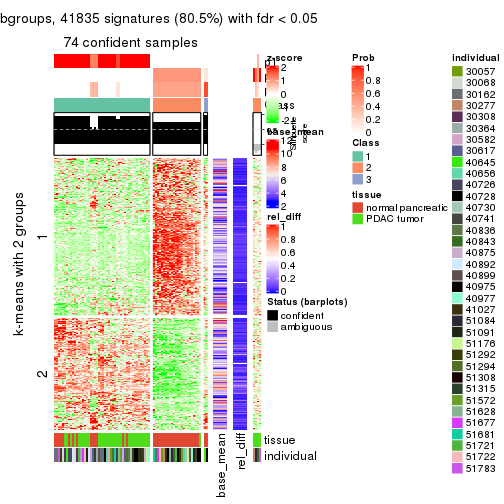
get_signatures(res, k = 4)
get_signatures(res, k = 5)

get_signatures(res, k = 6)
Signature heatmaps where rows are not scaled:
get_signatures(res, k = 2, scale_rows = FALSE)
get_signatures(res, k = 3, scale_rows = FALSE)
get_signatures(res, k = 4, scale_rows = FALSE)
get_signatures(res, k = 5, scale_rows = FALSE)
get_signatures(res, k = 6, scale_rows = FALSE)
Compare the overlap of signatures from different k:
compare_signatures(res)
get_signature() returns a data frame invisibly. TO get the list of signatures, the function
call should be assigned to a variable explicitly. In following code, if plot argument is set
to FALSE, no heatmap is plotted while only the differential analysis is performed.
# code only for demonstration
tb = get_signature(res, k = ..., plot = FALSE)
An example of the output of tb is:
#> which_row fdr mean_1 mean_2 scaled_mean_1 scaled_mean_2 km
#> 1 38 0.042760348 8.373488 9.131774 -0.5533452 0.5164555 1
#> 2 40 0.018707592 7.106213 8.469186 -0.6173731 0.5762149 1
#> 3 55 0.019134737 10.221463 11.207825 -0.6159697 0.5749050 1
#> 4 59 0.006059896 5.921854 7.869574 -0.6899429 0.6439467 1
#> 5 60 0.018055526 8.928898 10.211722 -0.6204761 0.5791110 1
#> 6 98 0.009384629 15.714769 14.887706 0.6635654 -0.6193277 2
...
The columns in tb are:
which_row: row indices corresponding to the input matrix.fdr: FDR for the differential test. mean_x: The mean value in group x.scaled_mean_x: The mean value in group x after rows are scaled.km: Row groups if k-means clustering is applied to rows.UMAP plot which shows how samples are separated.
dimension_reduction(res, k = 2, method = "UMAP")
dimension_reduction(res, k = 3, method = "UMAP")
dimension_reduction(res, k = 4, method = "UMAP")
dimension_reduction(res, k = 5, method = "UMAP")
dimension_reduction(res, k = 6, method = "UMAP")
Following heatmap shows how subgroups are split when increasing k:
collect_classes(res)

Test correlation between subgroups and known annotations. If the known annotation is numeric, one-way ANOVA test is applied, and if the known annotation is discrete, chi-squared contingency table test is applied.
test_to_known_factors(res)
#> n tissue(p) individual(p) k
#> ATC:skmeans 78 2.79e-06 0.762 2
#> ATC:skmeans 74 2.54e-07 0.728 3
#> ATC:skmeans 75 9.66e-09 0.779 4
#> ATC:skmeans 71 5.37e-08 0.740 5
#> ATC:skmeans 73 7.80e-08 0.269 6
If matrix rows can be associated to genes, consider to use functional_enrichment(res,
...) to perform function enrichment for the signature genes. See this vignette for more detailed explanations.
The object with results only for a single top-value method and a single partition method can be extracted as:
res = res_list["ATC", "pam"]
# you can also extract it by
# res = res_list["ATC:pam"]
A summary of res and all the functions that can be applied to it:
res
#> A 'ConsensusPartition' object with k = 2, 3, 4, 5, 6.
#> On a matrix with 51941 rows and 78 columns.
#> Top rows (1000, 2000, 3000, 4000, 5000) are extracted by 'ATC' method.
#> Subgroups are detected by 'pam' method.
#> Performed in total 1250 partitions by row resampling.
#> Best k for subgroups seems to be 5.
#>
#> Following methods can be applied to this 'ConsensusPartition' object:
#> [1] "cola_report" "collect_classes" "collect_plots"
#> [4] "collect_stats" "colnames" "compare_signatures"
#> [7] "consensus_heatmap" "dimension_reduction" "functional_enrichment"
#> [10] "get_anno_col" "get_anno" "get_classes"
#> [13] "get_consensus" "get_matrix" "get_membership"
#> [16] "get_param" "get_signatures" "get_stats"
#> [19] "is_best_k" "is_stable_k" "membership_heatmap"
#> [22] "ncol" "nrow" "plot_ecdf"
#> [25] "rownames" "select_partition_number" "show"
#> [28] "suggest_best_k" "test_to_known_factors"
collect_plots() function collects all the plots made from res for all k (number of partitions)
into one single page to provide an easy and fast comparison between different k.
collect_plots(res)
The plots are:
k and the heatmap of
predicted classes for each k.k.k.k.All the plots in panels can be made by individual functions and they are plotted later in this section.
select_partition_number() produces several plots showing different
statistics for choosing “optimized” k. There are following statistics:
k;k, the area increased is defined as \(A_k - A_{k-1}\).The detailed explanations of these statistics can be found in the cola vignette.
Generally speaking, lower PAC score, higher mean silhouette score or higher
concordance corresponds to better partition. Rand index and Jaccard index
measure how similar the current partition is compared to partition with k-1.
If they are too similar, we won't accept k is better than k-1.
select_partition_number(res)
The numeric values for all these statistics can be obtained by get_stats().
get_stats(res)
#> k 1-PAC mean_silhouette concordance area_increased Rand Jaccard
#> 2 2 1.000 1.000 1.000 0.4218 0.579 0.579
#> 3 3 1.000 0.994 0.997 0.4858 0.776 0.620
#> 4 4 1.000 0.978 0.982 0.0541 0.963 0.901
#> 5 5 0.980 0.868 0.946 0.0437 0.963 0.893
#> 6 6 0.842 0.854 0.890 0.0676 0.976 0.925
suggest_best_k() suggests the best \(k\) based on these statistics. The rules are as follows:
suggest_best_k(res)
#> [1] 5
#> attr(,"optional")
#> [1] 2 3 4
There is also optional best \(k\) = 2 3 4 that is worth to check.
Following shows the table of the partitions (You need to click the show/hide
code output link to see it). The membership matrix (columns with name p*)
is inferred by
clue::cl_consensus()
function with the SE method. Basically the value in the membership matrix
represents the probability to belong to a certain group. The finall class
label for an item is determined with the group with highest probability it
belongs to.
In get_classes() function, the entropy is calculated from the membership
matrix and the silhouette score is calculated from the consensus matrix.
cbind(get_classes(res, k = 2), get_membership(res, k = 2))
#> class entropy silhouette p1 p2
#> GSM388115 1 0 1 1 0
#> GSM388116 1 0 1 1 0
#> GSM388117 1 0 1 1 0
#> GSM388118 1 0 1 1 0
#> GSM388119 1 0 1 1 0
#> GSM388120 1 0 1 1 0
#> GSM388121 1 0 1 1 0
#> GSM388122 1 0 1 1 0
#> GSM388123 1 0 1 1 0
#> GSM388124 1 0 1 1 0
#> GSM388125 1 0 1 1 0
#> GSM388126 1 0 1 1 0
#> GSM388127 1 0 1 1 0
#> GSM388128 1 0 1 1 0
#> GSM388129 1 0 1 1 0
#> GSM388130 1 0 1 1 0
#> GSM388131 1 0 1 1 0
#> GSM388132 1 0 1 1 0
#> GSM388133 1 0 1 1 0
#> GSM388134 1 0 1 1 0
#> GSM388135 1 0 1 1 0
#> GSM388136 1 0 1 1 0
#> GSM388137 1 0 1 1 0
#> GSM388140 1 0 1 1 0
#> GSM388141 1 0 1 1 0
#> GSM388142 1 0 1 1 0
#> GSM388143 1 0 1 1 0
#> GSM388144 1 0 1 1 0
#> GSM388145 1 0 1 1 0
#> GSM388146 1 0 1 1 0
#> GSM388147 1 0 1 1 0
#> GSM388148 1 0 1 1 0
#> GSM388149 1 0 1 1 0
#> GSM388150 1 0 1 1 0
#> GSM388151 1 0 1 1 0
#> GSM388152 1 0 1 1 0
#> GSM388153 1 0 1 1 0
#> GSM388139 1 0 1 1 0
#> GSM388138 1 0 1 1 0
#> GSM388076 1 0 1 1 0
#> GSM388077 1 0 1 1 0
#> GSM388078 2 0 1 0 1
#> GSM388079 2 0 1 0 1
#> GSM388080 2 0 1 0 1
#> GSM388081 2 0 1 0 1
#> GSM388082 2 0 1 0 1
#> GSM388083 1 0 1 1 0
#> GSM388084 2 0 1 0 1
#> GSM388085 1 0 1 1 0
#> GSM388086 1 0 1 1 0
#> GSM388087 1 0 1 1 0
#> GSM388088 1 0 1 1 0
#> GSM388089 1 0 1 1 0
#> GSM388090 2 0 1 0 1
#> GSM388091 1 0 1 1 0
#> GSM388092 2 0 1 0 1
#> GSM388093 2 0 1 0 1
#> GSM388094 2 0 1 0 1
#> GSM388095 2 0 1 0 1
#> GSM388096 1 0 1 1 0
#> GSM388097 1 0 1 1 0
#> GSM388098 2 0 1 0 1
#> GSM388101 2 0 1 0 1
#> GSM388102 2 0 1 0 1
#> GSM388103 2 0 1 0 1
#> GSM388104 1 0 1 1 0
#> GSM388105 1 0 1 1 0
#> GSM388106 1 0 1 1 0
#> GSM388107 1 0 1 1 0
#> GSM388108 2 0 1 0 1
#> GSM388109 2 0 1 0 1
#> GSM388110 2 0 1 0 1
#> GSM388111 2 0 1 0 1
#> GSM388112 2 0 1 0 1
#> GSM388113 2 0 1 0 1
#> GSM388114 1 0 1 1 0
#> GSM388100 2 0 1 0 1
#> GSM388099 2 0 1 0 1
cbind(get_classes(res, k = 3), get_membership(res, k = 3))
#> class entropy silhouette p1 p2 p3
#> GSM388115 3 0.0000 0.995 0.000 0 1.000
#> GSM388116 3 0.0000 0.995 0.000 0 1.000
#> GSM388117 3 0.0000 0.995 0.000 0 1.000
#> GSM388118 3 0.0000 0.995 0.000 0 1.000
#> GSM388119 3 0.0000 0.995 0.000 0 1.000
#> GSM388120 3 0.0000 0.995 0.000 0 1.000
#> GSM388121 3 0.0000 0.995 0.000 0 1.000
#> GSM388122 3 0.0000 0.995 0.000 0 1.000
#> GSM388123 1 0.0000 0.999 1.000 0 0.000
#> GSM388124 3 0.0000 0.995 0.000 0 1.000
#> GSM388125 3 0.0000 0.995 0.000 0 1.000
#> GSM388126 3 0.0000 0.995 0.000 0 1.000
#> GSM388127 1 0.0000 0.999 1.000 0 0.000
#> GSM388128 1 0.0000 0.999 1.000 0 0.000
#> GSM388129 3 0.0000 0.995 0.000 0 1.000
#> GSM388130 3 0.0000 0.995 0.000 0 1.000
#> GSM388131 3 0.0000 0.995 0.000 0 1.000
#> GSM388132 1 0.0000 0.999 1.000 0 0.000
#> GSM388133 3 0.0000 0.995 0.000 0 1.000
#> GSM388134 1 0.0000 0.999 1.000 0 0.000
#> GSM388135 3 0.0000 0.995 0.000 0 1.000
#> GSM388136 3 0.0000 0.995 0.000 0 1.000
#> GSM388137 3 0.0000 0.995 0.000 0 1.000
#> GSM388140 1 0.0000 0.999 1.000 0 0.000
#> GSM388141 3 0.0000 0.995 0.000 0 1.000
#> GSM388142 3 0.0000 0.995 0.000 0 1.000
#> GSM388143 3 0.0000 0.995 0.000 0 1.000
#> GSM388144 3 0.0000 0.995 0.000 0 1.000
#> GSM388145 1 0.0000 0.999 1.000 0 0.000
#> GSM388146 3 0.0000 0.995 0.000 0 1.000
#> GSM388147 3 0.0000 0.995 0.000 0 1.000
#> GSM388148 1 0.0000 0.999 1.000 0 0.000
#> GSM388149 3 0.0000 0.995 0.000 0 1.000
#> GSM388150 3 0.0000 0.995 0.000 0 1.000
#> GSM388151 3 0.0000 0.995 0.000 0 1.000
#> GSM388152 3 0.0000 0.995 0.000 0 1.000
#> GSM388153 1 0.0000 0.999 1.000 0 0.000
#> GSM388139 3 0.0000 0.995 0.000 0 1.000
#> GSM388138 3 0.0000 0.995 0.000 0 1.000
#> GSM388076 3 0.0000 0.995 0.000 0 1.000
#> GSM388077 3 0.0000 0.995 0.000 0 1.000
#> GSM388078 2 0.0000 1.000 0.000 1 0.000
#> GSM388079 2 0.0000 1.000 0.000 1 0.000
#> GSM388080 2 0.0000 1.000 0.000 1 0.000
#> GSM388081 2 0.0000 1.000 0.000 1 0.000
#> GSM388082 2 0.0000 1.000 0.000 1 0.000
#> GSM388083 3 0.0000 0.995 0.000 0 1.000
#> GSM388084 2 0.0000 1.000 0.000 1 0.000
#> GSM388085 3 0.0000 0.995 0.000 0 1.000
#> GSM388086 1 0.0000 0.999 1.000 0 0.000
#> GSM388087 3 0.4504 0.756 0.196 0 0.804
#> GSM388088 1 0.0000 0.999 1.000 0 0.000
#> GSM388089 1 0.0000 0.999 1.000 0 0.000
#> GSM388090 2 0.0000 1.000 0.000 1 0.000
#> GSM388091 3 0.0000 0.995 0.000 0 1.000
#> GSM388092 2 0.0000 1.000 0.000 1 0.000
#> GSM388093 2 0.0000 1.000 0.000 1 0.000
#> GSM388094 2 0.0000 1.000 0.000 1 0.000
#> GSM388095 2 0.0000 1.000 0.000 1 0.000
#> GSM388096 1 0.0000 0.999 1.000 0 0.000
#> GSM388097 3 0.0000 0.995 0.000 0 1.000
#> GSM388098 2 0.0000 1.000 0.000 1 0.000
#> GSM388101 2 0.0000 1.000 0.000 1 0.000
#> GSM388102 1 0.0000 0.999 1.000 0 0.000
#> GSM388103 2 0.0000 1.000 0.000 1 0.000
#> GSM388104 3 0.0000 0.995 0.000 0 1.000
#> GSM388105 3 0.0000 0.995 0.000 0 1.000
#> GSM388106 1 0.0000 0.999 1.000 0 0.000
#> GSM388107 1 0.0592 0.985 0.988 0 0.012
#> GSM388108 2 0.0000 1.000 0.000 1 0.000
#> GSM388109 2 0.0000 1.000 0.000 1 0.000
#> GSM388110 2 0.0000 1.000 0.000 1 0.000
#> GSM388111 2 0.0000 1.000 0.000 1 0.000
#> GSM388112 2 0.0000 1.000 0.000 1 0.000
#> GSM388113 2 0.0000 1.000 0.000 1 0.000
#> GSM388114 3 0.0000 0.995 0.000 0 1.000
#> GSM388100 2 0.0000 1.000 0.000 1 0.000
#> GSM388099 1 0.0000 0.999 1.000 0 0.000
cbind(get_classes(res, k = 4), get_membership(res, k = 4))
#> class entropy silhouette p1 p2 p3 p4
#> GSM388115 3 0.0000 0.993 0.000 0.000 1.000 0.000
#> GSM388116 3 0.0000 0.993 0.000 0.000 1.000 0.000
#> GSM388117 3 0.0000 0.993 0.000 0.000 1.000 0.000
#> GSM388118 3 0.0000 0.993 0.000 0.000 1.000 0.000
#> GSM388119 3 0.0000 0.993 0.000 0.000 1.000 0.000
#> GSM388120 3 0.0000 0.993 0.000 0.000 1.000 0.000
#> GSM388121 3 0.0000 0.993 0.000 0.000 1.000 0.000
#> GSM388122 3 0.0000 0.993 0.000 0.000 1.000 0.000
#> GSM388123 1 0.1716 0.954 0.936 0.000 0.000 0.064
#> GSM388124 3 0.0000 0.993 0.000 0.000 1.000 0.000
#> GSM388125 3 0.0000 0.993 0.000 0.000 1.000 0.000
#> GSM388126 3 0.0000 0.993 0.000 0.000 1.000 0.000
#> GSM388127 1 0.0000 0.956 1.000 0.000 0.000 0.000
#> GSM388128 1 0.0000 0.956 1.000 0.000 0.000 0.000
#> GSM388129 3 0.0000 0.993 0.000 0.000 1.000 0.000
#> GSM388130 3 0.0000 0.993 0.000 0.000 1.000 0.000
#> GSM388131 3 0.0000 0.993 0.000 0.000 1.000 0.000
#> GSM388132 1 0.0000 0.956 1.000 0.000 0.000 0.000
#> GSM388133 3 0.0000 0.993 0.000 0.000 1.000 0.000
#> GSM388134 1 0.1716 0.954 0.936 0.000 0.000 0.064
#> GSM388135 3 0.0000 0.993 0.000 0.000 1.000 0.000
#> GSM388136 3 0.0000 0.993 0.000 0.000 1.000 0.000
#> GSM388137 3 0.0000 0.993 0.000 0.000 1.000 0.000
#> GSM388140 1 0.1716 0.954 0.936 0.000 0.000 0.064
#> GSM388141 3 0.0000 0.993 0.000 0.000 1.000 0.000
#> GSM388142 3 0.0000 0.993 0.000 0.000 1.000 0.000
#> GSM388143 3 0.0000 0.993 0.000 0.000 1.000 0.000
#> GSM388144 3 0.0000 0.993 0.000 0.000 1.000 0.000
#> GSM388145 1 0.1716 0.954 0.936 0.000 0.000 0.064
#> GSM388146 3 0.0000 0.993 0.000 0.000 1.000 0.000
#> GSM388147 3 0.0000 0.993 0.000 0.000 1.000 0.000
#> GSM388148 1 0.0000 0.956 1.000 0.000 0.000 0.000
#> GSM388149 3 0.0000 0.993 0.000 0.000 1.000 0.000
#> GSM388150 3 0.0000 0.993 0.000 0.000 1.000 0.000
#> GSM388151 3 0.0000 0.993 0.000 0.000 1.000 0.000
#> GSM388152 3 0.0000 0.993 0.000 0.000 1.000 0.000
#> GSM388153 1 0.1716 0.954 0.936 0.000 0.000 0.064
#> GSM388139 3 0.0000 0.993 0.000 0.000 1.000 0.000
#> GSM388138 3 0.0000 0.993 0.000 0.000 1.000 0.000
#> GSM388076 3 0.0000 0.993 0.000 0.000 1.000 0.000
#> GSM388077 3 0.0000 0.993 0.000 0.000 1.000 0.000
#> GSM388078 2 0.0000 0.999 0.000 1.000 0.000 0.000
#> GSM388079 2 0.0000 0.999 0.000 1.000 0.000 0.000
#> GSM388080 2 0.0000 0.999 0.000 1.000 0.000 0.000
#> GSM388081 2 0.0000 0.999 0.000 1.000 0.000 0.000
#> GSM388082 2 0.0000 0.999 0.000 1.000 0.000 0.000
#> GSM388083 3 0.0000 0.993 0.000 0.000 1.000 0.000
#> GSM388084 2 0.0000 0.999 0.000 1.000 0.000 0.000
#> GSM388085 3 0.0000 0.993 0.000 0.000 1.000 0.000
#> GSM388086 1 0.0000 0.956 1.000 0.000 0.000 0.000
#> GSM388087 3 0.4040 0.676 0.248 0.000 0.752 0.000
#> GSM388088 1 0.0000 0.956 1.000 0.000 0.000 0.000
#> GSM388089 1 0.1716 0.954 0.936 0.000 0.000 0.064
#> GSM388090 4 0.1716 0.987 0.000 0.064 0.000 0.936
#> GSM388091 3 0.0000 0.993 0.000 0.000 1.000 0.000
#> GSM388092 4 0.1716 0.987 0.000 0.064 0.000 0.936
#> GSM388093 4 0.1716 0.987 0.000 0.064 0.000 0.936
#> GSM388094 2 0.0000 0.999 0.000 1.000 0.000 0.000
#> GSM388095 2 0.0000 0.999 0.000 1.000 0.000 0.000
#> GSM388096 1 0.0000 0.956 1.000 0.000 0.000 0.000
#> GSM388097 3 0.0000 0.993 0.000 0.000 1.000 0.000
#> GSM388098 4 0.1716 0.987 0.000 0.064 0.000 0.936
#> GSM388101 2 0.0000 0.999 0.000 1.000 0.000 0.000
#> GSM388102 4 0.0000 0.920 0.000 0.000 0.000 1.000
#> GSM388103 4 0.1716 0.987 0.000 0.064 0.000 0.936
#> GSM388104 3 0.0000 0.993 0.000 0.000 1.000 0.000
#> GSM388105 3 0.0000 0.993 0.000 0.000 1.000 0.000
#> GSM388106 1 0.1716 0.954 0.936 0.000 0.000 0.064
#> GSM388107 1 0.0336 0.950 0.992 0.000 0.008 0.000
#> GSM388108 2 0.0000 0.999 0.000 1.000 0.000 0.000
#> GSM388109 2 0.0000 0.999 0.000 1.000 0.000 0.000
#> GSM388110 2 0.0000 0.999 0.000 1.000 0.000 0.000
#> GSM388111 2 0.0000 0.999 0.000 1.000 0.000 0.000
#> GSM388112 2 0.0000 0.999 0.000 1.000 0.000 0.000
#> GSM388113 2 0.0469 0.987 0.000 0.988 0.000 0.012
#> GSM388114 3 0.0000 0.993 0.000 0.000 1.000 0.000
#> GSM388100 4 0.1716 0.987 0.000 0.064 0.000 0.936
#> GSM388099 1 0.4222 0.716 0.728 0.000 0.000 0.272
cbind(get_classes(res, k = 5), get_membership(res, k = 5))
#> class entropy silhouette p1 p2 p3 p4 p5
#> GSM388115 3 0.0000 0.9943 0.000 0.000 1.000 0.000 0.000
#> GSM388116 3 0.0404 0.9920 0.000 0.000 0.988 0.000 0.012
#> GSM388117 3 0.0404 0.9920 0.000 0.000 0.988 0.000 0.012
#> GSM388118 3 0.0162 0.9935 0.000 0.000 0.996 0.004 0.000
#> GSM388119 3 0.0000 0.9943 0.000 0.000 1.000 0.000 0.000
#> GSM388120 3 0.0162 0.9935 0.000 0.000 0.996 0.004 0.000
#> GSM388121 3 0.0162 0.9935 0.000 0.000 0.996 0.004 0.000
#> GSM388122 3 0.0000 0.9943 0.000 0.000 1.000 0.000 0.000
#> GSM388123 5 0.0404 0.6717 0.000 0.000 0.000 0.012 0.988
#> GSM388124 3 0.0404 0.9920 0.000 0.000 0.988 0.000 0.012
#> GSM388125 3 0.0000 0.9943 0.000 0.000 1.000 0.000 0.000
#> GSM388126 3 0.0290 0.9916 0.000 0.000 0.992 0.008 0.000
#> GSM388127 4 0.4045 0.5312 0.000 0.000 0.000 0.644 0.356
#> GSM388128 4 0.4126 0.5237 0.000 0.000 0.000 0.620 0.380
#> GSM388129 3 0.0566 0.9915 0.000 0.000 0.984 0.004 0.012
#> GSM388130 3 0.0404 0.9920 0.000 0.000 0.988 0.000 0.012
#> GSM388131 3 0.0162 0.9935 0.000 0.000 0.996 0.004 0.000
#> GSM388132 4 0.4150 0.5134 0.000 0.000 0.000 0.612 0.388
#> GSM388133 3 0.0404 0.9920 0.000 0.000 0.988 0.000 0.012
#> GSM388134 5 0.4182 -0.0944 0.000 0.000 0.000 0.400 0.600
#> GSM388135 3 0.0404 0.9920 0.000 0.000 0.988 0.000 0.012
#> GSM388136 3 0.0404 0.9920 0.000 0.000 0.988 0.000 0.012
#> GSM388137 3 0.0404 0.9920 0.000 0.000 0.988 0.000 0.012
#> GSM388140 5 0.4182 -0.0944 0.000 0.000 0.000 0.400 0.600
#> GSM388141 3 0.0404 0.9920 0.000 0.000 0.988 0.000 0.012
#> GSM388142 3 0.0000 0.9943 0.000 0.000 1.000 0.000 0.000
#> GSM388143 3 0.0162 0.9935 0.000 0.000 0.996 0.004 0.000
#> GSM388144 3 0.0000 0.9943 0.000 0.000 1.000 0.000 0.000
#> GSM388145 5 0.0404 0.6717 0.000 0.000 0.000 0.012 0.988
#> GSM388146 3 0.0404 0.9920 0.000 0.000 0.988 0.000 0.012
#> GSM388147 3 0.0162 0.9935 0.000 0.000 0.996 0.004 0.000
#> GSM388148 4 0.4307 0.2696 0.000 0.000 0.000 0.504 0.496
#> GSM388149 3 0.0404 0.9884 0.000 0.000 0.988 0.012 0.000
#> GSM388150 3 0.0404 0.9920 0.000 0.000 0.988 0.000 0.012
#> GSM388151 3 0.0162 0.9935 0.000 0.000 0.996 0.004 0.000
#> GSM388152 3 0.0000 0.9943 0.000 0.000 1.000 0.000 0.000
#> GSM388153 5 0.0404 0.6717 0.000 0.000 0.000 0.012 0.988
#> GSM388139 3 0.0404 0.9920 0.000 0.000 0.988 0.000 0.012
#> GSM388138 3 0.0162 0.9935 0.000 0.000 0.996 0.004 0.000
#> GSM388076 3 0.0000 0.9943 0.000 0.000 1.000 0.000 0.000
#> GSM388077 3 0.0404 0.9920 0.000 0.000 0.988 0.000 0.012
#> GSM388078 2 0.0000 0.9989 0.000 1.000 0.000 0.000 0.000
#> GSM388079 2 0.0000 0.9989 0.000 1.000 0.000 0.000 0.000
#> GSM388080 2 0.0000 0.9989 0.000 1.000 0.000 0.000 0.000
#> GSM388081 2 0.0000 0.9989 0.000 1.000 0.000 0.000 0.000
#> GSM388082 2 0.0000 0.9989 0.000 1.000 0.000 0.000 0.000
#> GSM388083 3 0.0000 0.9943 0.000 0.000 1.000 0.000 0.000
#> GSM388084 2 0.0000 0.9989 0.000 1.000 0.000 0.000 0.000
#> GSM388085 3 0.0000 0.9943 0.000 0.000 1.000 0.000 0.000
#> GSM388086 4 0.0162 0.6167 0.000 0.000 0.000 0.996 0.004
#> GSM388087 4 0.0404 0.6052 0.000 0.000 0.012 0.988 0.000
#> GSM388088 4 0.0162 0.6167 0.000 0.000 0.000 0.996 0.004
#> GSM388089 4 0.3480 0.3561 0.000 0.000 0.000 0.752 0.248
#> GSM388090 1 0.0000 0.9356 1.000 0.000 0.000 0.000 0.000
#> GSM388091 3 0.0000 0.9943 0.000 0.000 1.000 0.000 0.000
#> GSM388092 1 0.0000 0.9356 1.000 0.000 0.000 0.000 0.000
#> GSM388093 1 0.0000 0.9356 1.000 0.000 0.000 0.000 0.000
#> GSM388094 2 0.0000 0.9989 0.000 1.000 0.000 0.000 0.000
#> GSM388095 2 0.0000 0.9989 0.000 1.000 0.000 0.000 0.000
#> GSM388096 4 0.4126 0.5237 0.000 0.000 0.000 0.620 0.380
#> GSM388097 3 0.0162 0.9939 0.000 0.000 0.996 0.000 0.004
#> GSM388098 1 0.0000 0.9356 1.000 0.000 0.000 0.000 0.000
#> GSM388101 2 0.0000 0.9989 0.000 1.000 0.000 0.000 0.000
#> GSM388102 1 0.4150 0.4701 0.612 0.000 0.000 0.000 0.388
#> GSM388103 1 0.0000 0.9356 1.000 0.000 0.000 0.000 0.000
#> GSM388104 3 0.0000 0.9943 0.000 0.000 1.000 0.000 0.000
#> GSM388105 3 0.0162 0.9935 0.000 0.000 0.996 0.004 0.000
#> GSM388106 5 0.4074 0.2805 0.000 0.000 0.000 0.364 0.636
#> GSM388107 4 0.0000 0.6155 0.000 0.000 0.000 1.000 0.000
#> GSM388108 2 0.0290 0.9925 0.008 0.992 0.000 0.000 0.000
#> GSM388109 2 0.0000 0.9989 0.000 1.000 0.000 0.000 0.000
#> GSM388110 2 0.0000 0.9989 0.000 1.000 0.000 0.000 0.000
#> GSM388111 2 0.0000 0.9989 0.000 1.000 0.000 0.000 0.000
#> GSM388112 2 0.0000 0.9989 0.000 1.000 0.000 0.000 0.000
#> GSM388113 2 0.0290 0.9925 0.008 0.992 0.000 0.000 0.000
#> GSM388114 3 0.0162 0.9935 0.000 0.000 0.996 0.004 0.000
#> GSM388100 1 0.0000 0.9356 1.000 0.000 0.000 0.000 0.000
#> GSM388099 5 0.1043 0.6456 0.040 0.000 0.000 0.000 0.960
cbind(get_classes(res, k = 6), get_membership(res, k = 6))
#> class entropy silhouette p1 p2 p3 p4 p5 p6
#> GSM388115 1 0.0000 0.865 1.000 0.000 0.000 0.000 0.000 0.000
#> GSM388116 1 0.4291 0.737 0.680 0.000 0.000 0.000 0.268 0.052
#> GSM388117 1 0.5030 0.715 0.616 0.000 0.000 0.000 0.268 0.116
#> GSM388118 1 0.0000 0.865 1.000 0.000 0.000 0.000 0.000 0.000
#> GSM388119 1 0.1327 0.852 0.936 0.000 0.000 0.000 0.000 0.064
#> GSM388120 1 0.1327 0.852 0.936 0.000 0.000 0.000 0.000 0.064
#> GSM388121 1 0.0000 0.865 1.000 0.000 0.000 0.000 0.000 0.000
#> GSM388122 1 0.0000 0.865 1.000 0.000 0.000 0.000 0.000 0.000
#> GSM388123 5 0.3330 0.595 0.000 0.000 0.000 0.000 0.716 0.284
#> GSM388124 1 0.2088 0.845 0.904 0.000 0.000 0.000 0.068 0.028
#> GSM388125 1 0.0000 0.865 1.000 0.000 0.000 0.000 0.000 0.000
#> GSM388126 1 0.1584 0.851 0.928 0.000 0.000 0.008 0.000 0.064
#> GSM388127 5 0.3592 0.786 0.000 0.000 0.000 0.344 0.656 0.000
#> GSM388128 5 0.3409 0.835 0.000 0.000 0.000 0.300 0.700 0.000
#> GSM388129 1 0.4309 0.779 0.724 0.000 0.000 0.000 0.172 0.104
#> GSM388130 1 0.4291 0.737 0.680 0.000 0.000 0.000 0.268 0.052
#> GSM388131 1 0.1327 0.852 0.936 0.000 0.000 0.000 0.000 0.064
#> GSM388132 5 0.3409 0.835 0.000 0.000 0.000 0.300 0.700 0.000
#> GSM388133 1 0.5030 0.715 0.616 0.000 0.000 0.000 0.268 0.116
#> GSM388134 5 0.4344 0.813 0.000 0.000 0.000 0.188 0.716 0.096
#> GSM388135 1 0.5030 0.715 0.616 0.000 0.000 0.000 0.268 0.116
#> GSM388136 1 0.4291 0.737 0.680 0.000 0.000 0.000 0.268 0.052
#> GSM388137 1 0.5030 0.715 0.616 0.000 0.000 0.000 0.268 0.116
#> GSM388140 5 0.4344 0.813 0.000 0.000 0.000 0.188 0.716 0.096
#> GSM388141 1 0.4291 0.737 0.680 0.000 0.000 0.000 0.268 0.052
#> GSM388142 1 0.1267 0.855 0.940 0.000 0.000 0.000 0.000 0.060
#> GSM388143 1 0.1327 0.852 0.936 0.000 0.000 0.000 0.000 0.064
#> GSM388144 1 0.1327 0.852 0.936 0.000 0.000 0.000 0.000 0.064
#> GSM388145 6 0.2092 0.792 0.000 0.000 0.000 0.000 0.124 0.876
#> GSM388146 1 0.5030 0.715 0.616 0.000 0.000 0.000 0.268 0.116
#> GSM388147 1 0.0000 0.865 1.000 0.000 0.000 0.000 0.000 0.000
#> GSM388148 5 0.3351 0.837 0.000 0.000 0.000 0.288 0.712 0.000
#> GSM388149 1 0.0000 0.865 1.000 0.000 0.000 0.000 0.000 0.000
#> GSM388150 1 0.4291 0.737 0.680 0.000 0.000 0.000 0.268 0.052
#> GSM388151 1 0.0000 0.865 1.000 0.000 0.000 0.000 0.000 0.000
#> GSM388152 1 0.0000 0.865 1.000 0.000 0.000 0.000 0.000 0.000
#> GSM388153 5 0.3330 0.595 0.000 0.000 0.000 0.000 0.716 0.284
#> GSM388139 1 0.5030 0.715 0.616 0.000 0.000 0.000 0.268 0.116
#> GSM388138 1 0.0632 0.862 0.976 0.000 0.000 0.000 0.000 0.024
#> GSM388076 1 0.0000 0.865 1.000 0.000 0.000 0.000 0.000 0.000
#> GSM388077 1 0.4291 0.737 0.680 0.000 0.000 0.000 0.268 0.052
#> GSM388078 2 0.0000 0.999 0.000 1.000 0.000 0.000 0.000 0.000
#> GSM388079 2 0.0000 0.999 0.000 1.000 0.000 0.000 0.000 0.000
#> GSM388080 2 0.0000 0.999 0.000 1.000 0.000 0.000 0.000 0.000
#> GSM388081 2 0.0000 0.999 0.000 1.000 0.000 0.000 0.000 0.000
#> GSM388082 2 0.0000 0.999 0.000 1.000 0.000 0.000 0.000 0.000
#> GSM388083 1 0.0000 0.865 1.000 0.000 0.000 0.000 0.000 0.000
#> GSM388084 2 0.0000 0.999 0.000 1.000 0.000 0.000 0.000 0.000
#> GSM388085 1 0.0146 0.865 0.996 0.000 0.000 0.000 0.000 0.004
#> GSM388086 4 0.0000 0.862 0.000 0.000 0.000 1.000 0.000 0.000
#> GSM388087 4 0.0000 0.862 0.000 0.000 0.000 1.000 0.000 0.000
#> GSM388088 4 0.0000 0.862 0.000 0.000 0.000 1.000 0.000 0.000
#> GSM388089 4 0.2997 0.752 0.000 0.000 0.000 0.844 0.060 0.096
#> GSM388090 3 0.0717 0.977 0.000 0.000 0.976 0.000 0.016 0.008
#> GSM388091 1 0.0000 0.865 1.000 0.000 0.000 0.000 0.000 0.000
#> GSM388092 3 0.0000 0.996 0.000 0.000 1.000 0.000 0.000 0.000
#> GSM388093 3 0.0000 0.996 0.000 0.000 1.000 0.000 0.000 0.000
#> GSM388094 2 0.0000 0.999 0.000 1.000 0.000 0.000 0.000 0.000
#> GSM388095 2 0.0000 0.999 0.000 1.000 0.000 0.000 0.000 0.000
#> GSM388096 5 0.3409 0.835 0.000 0.000 0.000 0.300 0.700 0.000
#> GSM388097 1 0.1757 0.849 0.916 0.000 0.000 0.000 0.076 0.008
#> GSM388098 3 0.0000 0.996 0.000 0.000 1.000 0.000 0.000 0.000
#> GSM388101 2 0.0000 0.999 0.000 1.000 0.000 0.000 0.000 0.000
#> GSM388102 6 0.2941 0.687 0.000 0.000 0.220 0.000 0.000 0.780
#> GSM388103 3 0.0000 0.996 0.000 0.000 1.000 0.000 0.000 0.000
#> GSM388104 1 0.0000 0.865 1.000 0.000 0.000 0.000 0.000 0.000
#> GSM388105 1 0.0000 0.865 1.000 0.000 0.000 0.000 0.000 0.000
#> GSM388106 4 0.5206 0.377 0.000 0.000 0.000 0.588 0.128 0.284
#> GSM388107 4 0.0000 0.862 0.000 0.000 0.000 1.000 0.000 0.000
#> GSM388108 2 0.0260 0.992 0.000 0.992 0.008 0.000 0.000 0.000
#> GSM388109 2 0.0000 0.999 0.000 1.000 0.000 0.000 0.000 0.000
#> GSM388110 2 0.0000 0.999 0.000 1.000 0.000 0.000 0.000 0.000
#> GSM388111 2 0.0000 0.999 0.000 1.000 0.000 0.000 0.000 0.000
#> GSM388112 2 0.0000 0.999 0.000 1.000 0.000 0.000 0.000 0.000
#> GSM388113 2 0.0260 0.992 0.000 0.992 0.008 0.000 0.000 0.000
#> GSM388114 1 0.0000 0.865 1.000 0.000 0.000 0.000 0.000 0.000
#> GSM388100 3 0.0000 0.996 0.000 0.000 1.000 0.000 0.000 0.000
#> GSM388099 6 0.2563 0.834 0.000 0.000 0.052 0.000 0.072 0.876
Heatmaps for the consensus matrix. It visualizes the probability of two samples to be in a same group.
consensus_heatmap(res, k = 2)
consensus_heatmap(res, k = 3)
consensus_heatmap(res, k = 4)
consensus_heatmap(res, k = 5)
consensus_heatmap(res, k = 6)
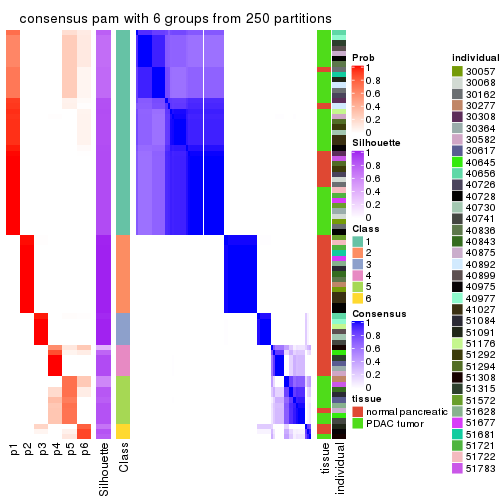
Heatmaps for the membership of samples in all partitions to see how consistent they are:
membership_heatmap(res, k = 2)

membership_heatmap(res, k = 3)
membership_heatmap(res, k = 4)
membership_heatmap(res, k = 5)
membership_heatmap(res, k = 6)
As soon as we have had the classes for columns, we can look for signatures which are significantly different between classes which can be candidate marks for certain classes. Following are the heatmaps for signatures.
Signature heatmaps where rows are scaled:
get_signatures(res, k = 2)

get_signatures(res, k = 3)

get_signatures(res, k = 4)
get_signatures(res, k = 5)
get_signatures(res, k = 6)
Signature heatmaps where rows are not scaled:
get_signatures(res, k = 2, scale_rows = FALSE)
get_signatures(res, k = 3, scale_rows = FALSE)
get_signatures(res, k = 4, scale_rows = FALSE)
get_signatures(res, k = 5, scale_rows = FALSE)

get_signatures(res, k = 6, scale_rows = FALSE)
Compare the overlap of signatures from different k:
compare_signatures(res)
get_signature() returns a data frame invisibly. TO get the list of signatures, the function
call should be assigned to a variable explicitly. In following code, if plot argument is set
to FALSE, no heatmap is plotted while only the differential analysis is performed.
# code only for demonstration
tb = get_signature(res, k = ..., plot = FALSE)
An example of the output of tb is:
#> which_row fdr mean_1 mean_2 scaled_mean_1 scaled_mean_2 km
#> 1 38 0.042760348 8.373488 9.131774 -0.5533452 0.5164555 1
#> 2 40 0.018707592 7.106213 8.469186 -0.6173731 0.5762149 1
#> 3 55 0.019134737 10.221463 11.207825 -0.6159697 0.5749050 1
#> 4 59 0.006059896 5.921854 7.869574 -0.6899429 0.6439467 1
#> 5 60 0.018055526 8.928898 10.211722 -0.6204761 0.5791110 1
#> 6 98 0.009384629 15.714769 14.887706 0.6635654 -0.6193277 2
...
The columns in tb are:
which_row: row indices corresponding to the input matrix.fdr: FDR for the differential test. mean_x: The mean value in group x.scaled_mean_x: The mean value in group x after rows are scaled.km: Row groups if k-means clustering is applied to rows.UMAP plot which shows how samples are separated.
dimension_reduction(res, k = 2, method = "UMAP")

dimension_reduction(res, k = 3, method = "UMAP")
dimension_reduction(res, k = 4, method = "UMAP")
dimension_reduction(res, k = 5, method = "UMAP")
dimension_reduction(res, k = 6, method = "UMAP")
Following heatmap shows how subgroups are split when increasing k:
collect_classes(res)

Test correlation between subgroups and known annotations. If the known annotation is numeric, one-way ANOVA test is applied, and if the known annotation is discrete, chi-squared contingency table test is applied.
test_to_known_factors(res)
#> n tissue(p) individual(p) k
#> ATC:pam 78 4.68e-08 0.946 2
#> ATC:pam 78 1.80e-07 0.467 3
#> ATC:pam 78 4.64e-07 0.346 4
#> ATC:pam 72 8.16e-07 0.207 5
#> ATC:pam 77 3.56e-08 0.331 6
If matrix rows can be associated to genes, consider to use functional_enrichment(res,
...) to perform function enrichment for the signature genes. See this vignette for more detailed explanations.
The object with results only for a single top-value method and a single partition method can be extracted as:
res = res_list["ATC", "mclust"]
# you can also extract it by
# res = res_list["ATC:mclust"]
A summary of res and all the functions that can be applied to it:
res
#> A 'ConsensusPartition' object with k = 2, 3, 4, 5, 6.
#> On a matrix with 51941 rows and 78 columns.
#> Top rows (1000, 2000, 3000, 4000, 5000) are extracted by 'ATC' method.
#> Subgroups are detected by 'mclust' method.
#> Performed in total 1250 partitions by row resampling.
#> Best k for subgroups seems to be 2.
#>
#> Following methods can be applied to this 'ConsensusPartition' object:
#> [1] "cola_report" "collect_classes" "collect_plots"
#> [4] "collect_stats" "colnames" "compare_signatures"
#> [7] "consensus_heatmap" "dimension_reduction" "functional_enrichment"
#> [10] "get_anno_col" "get_anno" "get_classes"
#> [13] "get_consensus" "get_matrix" "get_membership"
#> [16] "get_param" "get_signatures" "get_stats"
#> [19] "is_best_k" "is_stable_k" "membership_heatmap"
#> [22] "ncol" "nrow" "plot_ecdf"
#> [25] "rownames" "select_partition_number" "show"
#> [28] "suggest_best_k" "test_to_known_factors"
collect_plots() function collects all the plots made from res for all k (number of partitions)
into one single page to provide an easy and fast comparison between different k.
collect_plots(res)
The plots are:
k and the heatmap of
predicted classes for each k.k.k.k.All the plots in panels can be made by individual functions and they are plotted later in this section.
select_partition_number() produces several plots showing different
statistics for choosing “optimized” k. There are following statistics:
k;k, the area increased is defined as \(A_k - A_{k-1}\).The detailed explanations of these statistics can be found in the cola vignette.
Generally speaking, lower PAC score, higher mean silhouette score or higher
concordance corresponds to better partition. Rand index and Jaccard index
measure how similar the current partition is compared to partition with k-1.
If they are too similar, we won't accept k is better than k-1.
select_partition_number(res)
The numeric values for all these statistics can be obtained by get_stats().
get_stats(res)
#> k 1-PAC mean_silhouette concordance area_increased Rand Jaccard
#> 2 2 1.000 0.962 0.976 0.4993 0.494 0.494
#> 3 3 0.620 0.702 0.868 0.1865 0.703 0.531
#> 4 4 0.784 0.873 0.914 0.0901 0.865 0.723
#> 5 5 0.709 0.776 0.776 0.1452 0.877 0.675
#> 6 6 0.877 0.885 0.914 0.0551 0.930 0.751
suggest_best_k() suggests the best \(k\) based on these statistics. The rules are as follows:
suggest_best_k(res)
#> [1] 2
Following shows the table of the partitions (You need to click the show/hide
code output link to see it). The membership matrix (columns with name p*)
is inferred by
clue::cl_consensus()
function with the SE method. Basically the value in the membership matrix
represents the probability to belong to a certain group. The finall class
label for an item is determined with the group with highest probability it
belongs to.
In get_classes() function, the entropy is calculated from the membership
matrix and the silhouette score is calculated from the consensus matrix.
cbind(get_classes(res, k = 2), get_membership(res, k = 2))
#> class entropy silhouette p1 p2
#> GSM388115 1 0.000 0.998 1.000 0.000
#> GSM388116 1 0.000 0.998 1.000 0.000
#> GSM388117 1 0.000 0.998 1.000 0.000
#> GSM388118 1 0.000 0.998 1.000 0.000
#> GSM388119 1 0.000 0.998 1.000 0.000
#> GSM388120 1 0.000 0.998 1.000 0.000
#> GSM388121 1 0.000 0.998 1.000 0.000
#> GSM388122 1 0.000 0.998 1.000 0.000
#> GSM388123 2 0.416 0.937 0.084 0.916
#> GSM388124 1 0.000 0.998 1.000 0.000
#> GSM388125 1 0.000 0.998 1.000 0.000
#> GSM388126 2 0.988 0.317 0.436 0.564
#> GSM388127 2 0.416 0.937 0.084 0.916
#> GSM388128 2 0.416 0.937 0.084 0.916
#> GSM388129 1 0.000 0.998 1.000 0.000
#> GSM388130 1 0.000 0.998 1.000 0.000
#> GSM388131 1 0.000 0.998 1.000 0.000
#> GSM388132 2 0.416 0.937 0.084 0.916
#> GSM388133 1 0.000 0.998 1.000 0.000
#> GSM388134 2 0.416 0.937 0.084 0.916
#> GSM388135 1 0.000 0.998 1.000 0.000
#> GSM388136 1 0.000 0.998 1.000 0.000
#> GSM388137 1 0.000 0.998 1.000 0.000
#> GSM388140 2 0.416 0.937 0.084 0.916
#> GSM388141 1 0.000 0.998 1.000 0.000
#> GSM388142 1 0.000 0.998 1.000 0.000
#> GSM388143 1 0.000 0.998 1.000 0.000
#> GSM388144 1 0.000 0.998 1.000 0.000
#> GSM388145 2 0.416 0.937 0.084 0.916
#> GSM388146 1 0.000 0.998 1.000 0.000
#> GSM388147 1 0.000 0.998 1.000 0.000
#> GSM388148 2 0.416 0.937 0.084 0.916
#> GSM388149 1 0.327 0.931 0.940 0.060
#> GSM388150 1 0.000 0.998 1.000 0.000
#> GSM388151 1 0.000 0.998 1.000 0.000
#> GSM388152 1 0.000 0.998 1.000 0.000
#> GSM388153 2 0.416 0.937 0.084 0.916
#> GSM388139 1 0.000 0.998 1.000 0.000
#> GSM388138 1 0.000 0.998 1.000 0.000
#> GSM388076 1 0.000 0.998 1.000 0.000
#> GSM388077 1 0.000 0.998 1.000 0.000
#> GSM388078 2 0.000 0.953 0.000 1.000
#> GSM388079 2 0.000 0.953 0.000 1.000
#> GSM388080 2 0.000 0.953 0.000 1.000
#> GSM388081 2 0.000 0.953 0.000 1.000
#> GSM388082 2 0.000 0.953 0.000 1.000
#> GSM388083 1 0.000 0.998 1.000 0.000
#> GSM388084 2 0.000 0.953 0.000 1.000
#> GSM388085 1 0.000 0.998 1.000 0.000
#> GSM388086 2 0.416 0.937 0.084 0.916
#> GSM388087 2 0.416 0.937 0.084 0.916
#> GSM388088 2 0.416 0.937 0.084 0.916
#> GSM388089 2 0.416 0.937 0.084 0.916
#> GSM388090 2 0.000 0.953 0.000 1.000
#> GSM388091 1 0.000 0.998 1.000 0.000
#> GSM388092 2 0.000 0.953 0.000 1.000
#> GSM388093 2 0.000 0.953 0.000 1.000
#> GSM388094 2 0.000 0.953 0.000 1.000
#> GSM388095 2 0.000 0.953 0.000 1.000
#> GSM388096 2 0.416 0.937 0.084 0.916
#> GSM388097 1 0.000 0.998 1.000 0.000
#> GSM388098 2 0.000 0.953 0.000 1.000
#> GSM388101 2 0.000 0.953 0.000 1.000
#> GSM388102 2 0.000 0.953 0.000 1.000
#> GSM388103 2 0.000 0.953 0.000 1.000
#> GSM388104 1 0.000 0.998 1.000 0.000
#> GSM388105 1 0.000 0.998 1.000 0.000
#> GSM388106 2 0.416 0.937 0.084 0.916
#> GSM388107 2 0.416 0.937 0.084 0.916
#> GSM388108 2 0.000 0.953 0.000 1.000
#> GSM388109 2 0.000 0.953 0.000 1.000
#> GSM388110 2 0.000 0.953 0.000 1.000
#> GSM388111 2 0.000 0.953 0.000 1.000
#> GSM388112 2 0.000 0.953 0.000 1.000
#> GSM388113 2 0.000 0.953 0.000 1.000
#> GSM388114 1 0.000 0.998 1.000 0.000
#> GSM388100 2 0.000 0.953 0.000 1.000
#> GSM388099 2 0.184 0.948 0.028 0.972
cbind(get_classes(res, k = 3), get_membership(res, k = 3))
#> class entropy silhouette p1 p2 p3
#> GSM388115 1 0.5835 0.395 0.660 0.000 0.340
#> GSM388116 1 0.1753 0.738 0.952 0.000 0.048
#> GSM388117 1 0.3686 0.691 0.860 0.000 0.140
#> GSM388118 1 0.0000 0.738 1.000 0.000 0.000
#> GSM388119 1 0.3686 0.691 0.860 0.000 0.140
#> GSM388120 1 0.0000 0.738 1.000 0.000 0.000
#> GSM388121 1 0.0237 0.737 0.996 0.000 0.004
#> GSM388122 1 0.2066 0.737 0.940 0.000 0.060
#> GSM388123 1 0.6045 0.333 0.620 0.000 0.380
#> GSM388124 1 0.5650 0.452 0.688 0.000 0.312
#> GSM388125 1 0.5882 0.375 0.652 0.000 0.348
#> GSM388126 3 0.6421 0.365 0.424 0.004 0.572
#> GSM388127 1 0.2537 0.719 0.920 0.000 0.080
#> GSM388128 1 0.4654 0.601 0.792 0.000 0.208
#> GSM388129 1 0.3686 0.691 0.860 0.000 0.140
#> GSM388130 1 0.2537 0.730 0.920 0.000 0.080
#> GSM388131 1 0.2537 0.729 0.920 0.000 0.080
#> GSM388132 1 0.2356 0.712 0.928 0.000 0.072
#> GSM388133 1 0.3686 0.691 0.860 0.000 0.140
#> GSM388134 1 0.6045 0.333 0.620 0.000 0.380
#> GSM388135 1 0.3686 0.691 0.860 0.000 0.140
#> GSM388136 1 0.2448 0.732 0.924 0.000 0.076
#> GSM388137 1 0.2066 0.736 0.940 0.000 0.060
#> GSM388140 1 0.6045 0.333 0.620 0.000 0.380
#> GSM388141 1 0.1860 0.737 0.948 0.000 0.052
#> GSM388142 1 0.0000 0.738 1.000 0.000 0.000
#> GSM388143 1 0.3038 0.727 0.896 0.000 0.104
#> GSM388144 1 0.0000 0.738 1.000 0.000 0.000
#> GSM388145 1 0.6247 0.332 0.620 0.004 0.376
#> GSM388146 1 0.3686 0.691 0.860 0.000 0.140
#> GSM388147 1 0.0237 0.737 0.996 0.000 0.004
#> GSM388148 1 0.6045 0.333 0.620 0.000 0.380
#> GSM388149 1 0.1643 0.730 0.956 0.000 0.044
#> GSM388150 1 0.3551 0.696 0.868 0.000 0.132
#> GSM388151 1 0.5706 0.419 0.680 0.000 0.320
#> GSM388152 1 0.0592 0.738 0.988 0.000 0.012
#> GSM388153 1 0.6045 0.333 0.620 0.000 0.380
#> GSM388139 1 0.3686 0.691 0.860 0.000 0.140
#> GSM388138 1 0.0237 0.737 0.996 0.000 0.004
#> GSM388076 1 0.5760 0.413 0.672 0.000 0.328
#> GSM388077 1 0.5431 0.489 0.716 0.000 0.284
#> GSM388078 2 0.0237 0.987 0.000 0.996 0.004
#> GSM388079 2 0.0000 0.986 0.000 1.000 0.000
#> GSM388080 2 0.0237 0.987 0.000 0.996 0.004
#> GSM388081 2 0.0000 0.986 0.000 1.000 0.000
#> GSM388082 2 0.0000 0.986 0.000 1.000 0.000
#> GSM388083 1 0.5785 0.409 0.668 0.000 0.332
#> GSM388084 2 0.0000 0.986 0.000 1.000 0.000
#> GSM388085 1 0.5591 0.459 0.696 0.000 0.304
#> GSM388086 3 0.3272 0.763 0.104 0.004 0.892
#> GSM388087 3 0.5845 0.624 0.308 0.004 0.688
#> GSM388088 3 0.3272 0.763 0.104 0.004 0.892
#> GSM388089 3 0.3112 0.759 0.096 0.004 0.900
#> GSM388090 2 0.0424 0.984 0.000 0.992 0.008
#> GSM388091 1 0.2066 0.737 0.940 0.000 0.060
#> GSM388092 2 0.0237 0.987 0.000 0.996 0.004
#> GSM388093 2 0.4808 0.718 0.188 0.804 0.008
#> GSM388094 2 0.0237 0.987 0.000 0.996 0.004
#> GSM388095 2 0.0000 0.986 0.000 1.000 0.000
#> GSM388096 1 0.5968 0.354 0.636 0.000 0.364
#> GSM388097 1 0.0892 0.737 0.980 0.000 0.020
#> GSM388098 2 0.0237 0.987 0.000 0.996 0.004
#> GSM388101 2 0.0000 0.986 0.000 1.000 0.000
#> GSM388102 2 0.0424 0.984 0.000 0.992 0.008
#> GSM388103 2 0.0237 0.987 0.000 0.996 0.004
#> GSM388104 1 0.5465 0.435 0.712 0.000 0.288
#> GSM388105 1 0.0592 0.737 0.988 0.000 0.012
#> GSM388106 3 0.0237 0.661 0.000 0.004 0.996
#> GSM388107 3 0.5845 0.625 0.308 0.004 0.688
#> GSM388108 2 0.0237 0.987 0.000 0.996 0.004
#> GSM388109 2 0.0000 0.986 0.000 1.000 0.000
#> GSM388110 2 0.0000 0.986 0.000 1.000 0.000
#> GSM388111 2 0.0237 0.987 0.000 0.996 0.004
#> GSM388112 2 0.0237 0.987 0.000 0.996 0.004
#> GSM388113 2 0.0237 0.987 0.000 0.996 0.004
#> GSM388114 1 0.5431 0.436 0.716 0.000 0.284
#> GSM388100 2 0.0237 0.987 0.000 0.996 0.004
#> GSM388099 1 0.9773 -0.105 0.412 0.236 0.352
cbind(get_classes(res, k = 4), get_membership(res, k = 4))
#> class entropy silhouette p1 p2 p3 p4
#> GSM388115 3 0.3505 0.891 0.048 0.000 0.864 0.088
#> GSM388116 3 0.1389 0.922 0.000 0.000 0.952 0.048
#> GSM388117 3 0.1211 0.919 0.000 0.000 0.960 0.040
#> GSM388118 3 0.0592 0.928 0.000 0.000 0.984 0.016
#> GSM388119 3 0.0336 0.927 0.000 0.000 0.992 0.008
#> GSM388120 3 0.0188 0.927 0.000 0.000 0.996 0.004
#> GSM388121 3 0.0376 0.927 0.004 0.000 0.992 0.004
#> GSM388122 3 0.0188 0.927 0.000 0.000 0.996 0.004
#> GSM388123 1 0.1022 0.790 0.968 0.000 0.032 0.000
#> GSM388124 3 0.3421 0.892 0.044 0.000 0.868 0.088
#> GSM388125 3 0.3505 0.891 0.048 0.000 0.864 0.088
#> GSM388126 3 0.4699 0.429 0.004 0.000 0.676 0.320
#> GSM388127 3 0.3606 0.805 0.132 0.000 0.844 0.024
#> GSM388128 3 0.5035 0.764 0.196 0.000 0.748 0.056
#> GSM388129 3 0.1398 0.920 0.004 0.000 0.956 0.040
#> GSM388130 3 0.1118 0.919 0.000 0.000 0.964 0.036
#> GSM388131 3 0.0188 0.927 0.004 0.000 0.996 0.000
#> GSM388132 1 0.5636 0.155 0.552 0.000 0.424 0.024
#> GSM388133 3 0.1302 0.918 0.000 0.000 0.956 0.044
#> GSM388134 1 0.1022 0.790 0.968 0.000 0.032 0.000
#> GSM388135 3 0.1302 0.918 0.000 0.000 0.956 0.044
#> GSM388136 3 0.1118 0.919 0.000 0.000 0.964 0.036
#> GSM388137 3 0.0921 0.922 0.000 0.000 0.972 0.028
#> GSM388140 1 0.1022 0.790 0.968 0.000 0.032 0.000
#> GSM388141 3 0.1211 0.924 0.000 0.000 0.960 0.040
#> GSM388142 3 0.0376 0.927 0.004 0.000 0.992 0.004
#> GSM388143 3 0.1798 0.921 0.016 0.000 0.944 0.040
#> GSM388144 3 0.0000 0.927 0.000 0.000 1.000 0.000
#> GSM388145 1 0.1724 0.739 0.948 0.032 0.000 0.020
#> GSM388146 3 0.1302 0.918 0.000 0.000 0.956 0.044
#> GSM388147 3 0.0376 0.927 0.004 0.000 0.992 0.004
#> GSM388148 1 0.1022 0.790 0.968 0.000 0.032 0.000
#> GSM388149 3 0.2662 0.907 0.016 0.000 0.900 0.084
#> GSM388150 3 0.0817 0.923 0.000 0.000 0.976 0.024
#> GSM388151 3 0.3505 0.891 0.048 0.000 0.864 0.088
#> GSM388152 3 0.1557 0.920 0.000 0.000 0.944 0.056
#> GSM388153 1 0.1022 0.790 0.968 0.000 0.032 0.000
#> GSM388139 3 0.1302 0.918 0.000 0.000 0.956 0.044
#> GSM388138 3 0.0376 0.927 0.004 0.000 0.992 0.004
#> GSM388076 3 0.3505 0.891 0.048 0.000 0.864 0.088
#> GSM388077 3 0.3354 0.893 0.044 0.000 0.872 0.084
#> GSM388078 2 0.0000 0.954 0.000 1.000 0.000 0.000
#> GSM388079 2 0.0188 0.954 0.000 0.996 0.000 0.004
#> GSM388080 2 0.0000 0.954 0.000 1.000 0.000 0.000
#> GSM388081 2 0.0188 0.954 0.000 0.996 0.000 0.004
#> GSM388082 2 0.0188 0.954 0.000 0.996 0.000 0.004
#> GSM388083 3 0.3505 0.891 0.048 0.000 0.864 0.088
#> GSM388084 2 0.0188 0.954 0.000 0.996 0.000 0.004
#> GSM388085 3 0.3439 0.892 0.048 0.000 0.868 0.084
#> GSM388086 4 0.4964 0.880 0.168 0.000 0.068 0.764
#> GSM388087 4 0.5722 0.816 0.136 0.000 0.148 0.716
#> GSM388088 4 0.4964 0.880 0.168 0.000 0.068 0.764
#> GSM388089 4 0.4964 0.880 0.168 0.000 0.068 0.764
#> GSM388090 2 0.3080 0.906 0.024 0.880 0.000 0.096
#> GSM388091 3 0.0188 0.927 0.000 0.000 0.996 0.004
#> GSM388092 2 0.2909 0.911 0.020 0.888 0.000 0.092
#> GSM388093 2 0.4753 0.815 0.128 0.788 0.000 0.084
#> GSM388094 2 0.0000 0.954 0.000 1.000 0.000 0.000
#> GSM388095 2 0.0188 0.954 0.000 0.996 0.000 0.004
#> GSM388096 1 0.4644 0.474 0.748 0.000 0.228 0.024
#> GSM388097 3 0.1557 0.920 0.000 0.000 0.944 0.056
#> GSM388098 2 0.2775 0.915 0.020 0.896 0.000 0.084
#> GSM388101 2 0.0188 0.954 0.000 0.996 0.000 0.004
#> GSM388102 2 0.5477 0.738 0.180 0.728 0.000 0.092
#> GSM388103 2 0.2635 0.919 0.020 0.904 0.000 0.076
#> GSM388104 3 0.3505 0.891 0.048 0.000 0.864 0.088
#> GSM388105 3 0.0376 0.927 0.004 0.000 0.992 0.004
#> GSM388106 4 0.4072 0.752 0.252 0.000 0.000 0.748
#> GSM388107 4 0.6112 0.739 0.128 0.000 0.196 0.676
#> GSM388108 2 0.0592 0.951 0.000 0.984 0.000 0.016
#> GSM388109 2 0.0188 0.954 0.000 0.996 0.000 0.004
#> GSM388110 2 0.0188 0.954 0.000 0.996 0.000 0.004
#> GSM388111 2 0.0524 0.952 0.008 0.988 0.000 0.004
#> GSM388112 2 0.0000 0.954 0.000 1.000 0.000 0.000
#> GSM388113 2 0.0592 0.951 0.000 0.984 0.000 0.016
#> GSM388114 3 0.3505 0.891 0.048 0.000 0.864 0.088
#> GSM388100 2 0.2635 0.919 0.020 0.904 0.000 0.076
#> GSM388099 1 0.3679 0.653 0.856 0.060 0.000 0.084
cbind(get_classes(res, k = 5), get_membership(res, k = 5))
#> class entropy silhouette p1 p2 p3 p4 p5
#> GSM388115 3 0.3003 0.933 0.188 0.000 0.812 0.000 0.000
#> GSM388116 1 0.3210 0.666 0.788 0.000 0.212 0.000 0.000
#> GSM388117 1 0.0510 0.773 0.984 0.000 0.016 0.000 0.000
#> GSM388118 1 0.2891 0.807 0.824 0.000 0.176 0.000 0.000
#> GSM388119 1 0.2732 0.812 0.840 0.000 0.160 0.000 0.000
#> GSM388120 1 0.2891 0.807 0.824 0.000 0.176 0.000 0.000
#> GSM388121 1 0.3732 0.801 0.792 0.000 0.176 0.000 0.032
#> GSM388122 1 0.2929 0.805 0.820 0.000 0.180 0.000 0.000
#> GSM388123 5 0.4473 0.862 0.020 0.000 0.000 0.324 0.656
#> GSM388124 3 0.3177 0.910 0.208 0.000 0.792 0.000 0.000
#> GSM388125 3 0.3003 0.933 0.188 0.000 0.812 0.000 0.000
#> GSM388126 1 0.6347 0.238 0.460 0.000 0.164 0.376 0.000
#> GSM388127 1 0.5322 0.405 0.612 0.000 0.004 0.324 0.060
#> GSM388128 3 0.6987 0.136 0.092 0.000 0.508 0.324 0.076
#> GSM388129 1 0.1965 0.801 0.904 0.000 0.096 0.000 0.000
#> GSM388130 1 0.0510 0.773 0.984 0.000 0.016 0.000 0.000
#> GSM388131 1 0.2773 0.811 0.836 0.000 0.164 0.000 0.000
#> GSM388132 1 0.6099 0.221 0.544 0.000 0.004 0.324 0.128
#> GSM388133 1 0.0510 0.773 0.984 0.000 0.016 0.000 0.000
#> GSM388134 5 0.4558 0.858 0.024 0.000 0.000 0.324 0.652
#> GSM388135 1 0.0510 0.773 0.984 0.000 0.016 0.000 0.000
#> GSM388136 1 0.0000 0.781 1.000 0.000 0.000 0.000 0.000
#> GSM388137 1 0.0880 0.794 0.968 0.000 0.032 0.000 0.000
#> GSM388140 5 0.4473 0.862 0.020 0.000 0.000 0.324 0.656
#> GSM388141 1 0.2074 0.809 0.896 0.000 0.104 0.000 0.000
#> GSM388142 1 0.2891 0.807 0.824 0.000 0.176 0.000 0.000
#> GSM388143 1 0.3684 0.696 0.720 0.000 0.280 0.000 0.000
#> GSM388144 1 0.2813 0.811 0.832 0.000 0.168 0.000 0.000
#> GSM388145 5 0.4066 0.830 0.000 0.004 0.000 0.324 0.672
#> GSM388146 1 0.0510 0.773 0.984 0.000 0.016 0.000 0.000
#> GSM388147 1 0.2891 0.807 0.824 0.000 0.176 0.000 0.000
#> GSM388148 5 0.4508 0.856 0.020 0.000 0.000 0.332 0.648
#> GSM388149 1 0.5415 0.363 0.556 0.000 0.396 0.028 0.020
#> GSM388150 1 0.0162 0.783 0.996 0.000 0.004 0.000 0.000
#> GSM388151 3 0.3003 0.933 0.188 0.000 0.812 0.000 0.000
#> GSM388152 1 0.3039 0.798 0.808 0.000 0.192 0.000 0.000
#> GSM388153 5 0.4473 0.862 0.020 0.000 0.000 0.324 0.656
#> GSM388139 1 0.0510 0.773 0.984 0.000 0.016 0.000 0.000
#> GSM388138 1 0.3732 0.801 0.792 0.000 0.176 0.000 0.032
#> GSM388076 3 0.3003 0.933 0.188 0.000 0.812 0.000 0.000
#> GSM388077 3 0.3274 0.898 0.220 0.000 0.780 0.000 0.000
#> GSM388078 2 0.0404 0.823 0.000 0.988 0.000 0.000 0.012
#> GSM388079 2 0.2329 0.804 0.000 0.876 0.000 0.000 0.124
#> GSM388080 2 0.0404 0.823 0.000 0.988 0.000 0.000 0.012
#> GSM388081 2 0.2329 0.804 0.000 0.876 0.000 0.000 0.124
#> GSM388082 2 0.2329 0.804 0.000 0.876 0.000 0.000 0.124
#> GSM388083 3 0.3003 0.933 0.188 0.000 0.812 0.000 0.000
#> GSM388084 2 0.2280 0.805 0.000 0.880 0.000 0.000 0.120
#> GSM388085 3 0.3003 0.933 0.188 0.000 0.812 0.000 0.000
#> GSM388086 4 0.0324 0.943 0.004 0.000 0.004 0.992 0.000
#> GSM388087 4 0.1444 0.900 0.040 0.000 0.012 0.948 0.000
#> GSM388088 4 0.0324 0.943 0.004 0.000 0.004 0.992 0.000
#> GSM388089 4 0.0324 0.943 0.004 0.000 0.004 0.992 0.000
#> GSM388090 2 0.6005 0.673 0.000 0.600 0.172 0.004 0.224
#> GSM388091 1 0.2813 0.811 0.832 0.000 0.168 0.000 0.000
#> GSM388092 2 0.6005 0.673 0.000 0.600 0.172 0.004 0.224
#> GSM388093 2 0.5139 0.687 0.000 0.648 0.072 0.000 0.280
#> GSM388094 2 0.0510 0.823 0.000 0.984 0.000 0.000 0.016
#> GSM388095 2 0.2471 0.806 0.000 0.864 0.000 0.000 0.136
#> GSM388096 5 0.5849 0.689 0.100 0.000 0.004 0.332 0.564
#> GSM388097 1 0.3612 0.708 0.732 0.000 0.268 0.000 0.000
#> GSM388098 2 0.5974 0.676 0.000 0.604 0.168 0.004 0.224
#> GSM388101 2 0.2329 0.804 0.000 0.876 0.000 0.000 0.124
#> GSM388102 2 0.6005 0.673 0.000 0.600 0.172 0.004 0.224
#> GSM388103 2 0.5759 0.683 0.000 0.616 0.160 0.000 0.224
#> GSM388104 3 0.3003 0.933 0.188 0.000 0.812 0.000 0.000
#> GSM388105 1 0.3048 0.808 0.820 0.000 0.176 0.000 0.004
#> GSM388106 4 0.0510 0.923 0.000 0.000 0.000 0.984 0.016
#> GSM388107 4 0.1670 0.875 0.052 0.000 0.012 0.936 0.000
#> GSM388108 2 0.0963 0.821 0.000 0.964 0.000 0.000 0.036
#> GSM388109 2 0.2329 0.804 0.000 0.876 0.000 0.000 0.124
#> GSM388110 2 0.2329 0.804 0.000 0.876 0.000 0.000 0.124
#> GSM388111 2 0.1792 0.809 0.000 0.916 0.000 0.000 0.084
#> GSM388112 2 0.0000 0.822 0.000 1.000 0.000 0.000 0.000
#> GSM388113 2 0.1197 0.822 0.000 0.952 0.000 0.000 0.048
#> GSM388114 3 0.3003 0.933 0.188 0.000 0.812 0.000 0.000
#> GSM388100 2 0.5908 0.681 0.000 0.612 0.160 0.004 0.224
#> GSM388099 5 0.2612 0.437 0.000 0.124 0.000 0.008 0.868
cbind(get_classes(res, k = 6), get_membership(res, k = 6))
#> class entropy silhouette p1 p2 p3 p4 p5 p6
#> GSM388115 3 0.0260 0.967 0.008 0.000 0.992 0.000 0.000 0.000
#> GSM388116 1 0.0508 0.909 0.984 0.000 0.012 0.000 0.004 0.000
#> GSM388117 1 0.1387 0.888 0.932 0.000 0.000 0.000 0.068 0.000
#> GSM388118 1 0.1297 0.909 0.948 0.000 0.040 0.000 0.012 0.000
#> GSM388119 1 0.0790 0.910 0.968 0.000 0.032 0.000 0.000 0.000
#> GSM388120 1 0.1297 0.909 0.948 0.000 0.040 0.000 0.012 0.000
#> GSM388121 1 0.1418 0.909 0.944 0.000 0.032 0.000 0.024 0.000
#> GSM388122 1 0.1007 0.909 0.956 0.000 0.044 0.000 0.000 0.000
#> GSM388123 5 0.2378 0.909 0.000 0.000 0.000 0.152 0.848 0.000
#> GSM388124 3 0.0937 0.938 0.040 0.000 0.960 0.000 0.000 0.000
#> GSM388125 3 0.0260 0.967 0.008 0.000 0.992 0.000 0.000 0.000
#> GSM388126 1 0.2815 0.824 0.848 0.000 0.032 0.120 0.000 0.000
#> GSM388127 1 0.4111 0.687 0.740 0.000 0.084 0.176 0.000 0.000
#> GSM388128 3 0.3062 0.721 0.000 0.000 0.816 0.160 0.024 0.000
#> GSM388129 1 0.2145 0.896 0.900 0.000 0.028 0.000 0.072 0.000
#> GSM388130 1 0.1387 0.888 0.932 0.000 0.000 0.000 0.068 0.000
#> GSM388131 1 0.1049 0.910 0.960 0.000 0.032 0.000 0.008 0.000
#> GSM388132 5 0.5745 0.608 0.036 0.000 0.196 0.156 0.612 0.000
#> GSM388133 1 0.1501 0.885 0.924 0.000 0.000 0.000 0.076 0.000
#> GSM388134 5 0.2416 0.907 0.000 0.000 0.000 0.156 0.844 0.000
#> GSM388135 1 0.1501 0.885 0.924 0.000 0.000 0.000 0.076 0.000
#> GSM388136 1 0.0458 0.903 0.984 0.000 0.000 0.000 0.016 0.000
#> GSM388137 1 0.0260 0.908 0.992 0.000 0.008 0.000 0.000 0.000
#> GSM388140 5 0.2378 0.909 0.000 0.000 0.000 0.152 0.848 0.000
#> GSM388141 1 0.0363 0.909 0.988 0.000 0.012 0.000 0.000 0.000
#> GSM388142 1 0.1151 0.910 0.956 0.000 0.032 0.000 0.012 0.000
#> GSM388143 1 0.3765 0.413 0.596 0.000 0.404 0.000 0.000 0.000
#> GSM388144 1 0.0935 0.910 0.964 0.000 0.032 0.000 0.004 0.000
#> GSM388145 5 0.2378 0.909 0.000 0.000 0.000 0.152 0.848 0.000
#> GSM388146 1 0.1501 0.885 0.924 0.000 0.000 0.000 0.076 0.000
#> GSM388147 1 0.1418 0.909 0.944 0.000 0.032 0.000 0.024 0.000
#> GSM388148 5 0.2416 0.907 0.000 0.000 0.000 0.156 0.844 0.000
#> GSM388149 3 0.0363 0.965 0.012 0.000 0.988 0.000 0.000 0.000
#> GSM388150 1 0.1501 0.885 0.924 0.000 0.000 0.000 0.076 0.000
#> GSM388151 3 0.0260 0.967 0.008 0.000 0.992 0.000 0.000 0.000
#> GSM388152 1 0.1398 0.905 0.940 0.000 0.052 0.000 0.008 0.000
#> GSM388153 5 0.2378 0.909 0.000 0.000 0.000 0.152 0.848 0.000
#> GSM388139 1 0.1501 0.885 0.924 0.000 0.000 0.000 0.076 0.000
#> GSM388138 1 0.1418 0.909 0.944 0.000 0.032 0.000 0.024 0.000
#> GSM388076 3 0.0260 0.967 0.008 0.000 0.992 0.000 0.000 0.000
#> GSM388077 3 0.1327 0.924 0.064 0.000 0.936 0.000 0.000 0.000
#> GSM388078 2 0.0405 0.973 0.000 0.988 0.000 0.000 0.004 0.008
#> GSM388079 2 0.0000 0.974 0.000 1.000 0.000 0.000 0.000 0.000
#> GSM388080 2 0.0405 0.973 0.000 0.988 0.000 0.000 0.004 0.008
#> GSM388081 2 0.0000 0.974 0.000 1.000 0.000 0.000 0.000 0.000
#> GSM388082 2 0.0000 0.974 0.000 1.000 0.000 0.000 0.000 0.000
#> GSM388083 3 0.0260 0.967 0.008 0.000 0.992 0.000 0.000 0.000
#> GSM388084 2 0.0000 0.974 0.000 1.000 0.000 0.000 0.000 0.000
#> GSM388085 3 0.0458 0.962 0.016 0.000 0.984 0.000 0.000 0.000
#> GSM388086 4 0.0692 0.858 0.000 0.000 0.004 0.976 0.020 0.000
#> GSM388087 4 0.2462 0.789 0.096 0.000 0.028 0.876 0.000 0.000
#> GSM388088 4 0.0692 0.858 0.000 0.000 0.004 0.976 0.020 0.000
#> GSM388089 4 0.0692 0.858 0.000 0.000 0.004 0.976 0.020 0.000
#> GSM388090 6 0.3781 0.847 0.000 0.104 0.008 0.028 0.044 0.816
#> GSM388091 1 0.0790 0.910 0.968 0.000 0.032 0.000 0.000 0.000
#> GSM388092 6 0.3237 0.856 0.000 0.104 0.008 0.004 0.044 0.840
#> GSM388093 2 0.3555 0.732 0.000 0.780 0.000 0.000 0.044 0.176
#> GSM388094 2 0.0405 0.973 0.000 0.988 0.000 0.000 0.004 0.008
#> GSM388095 2 0.0000 0.974 0.000 1.000 0.000 0.000 0.000 0.000
#> GSM388096 1 0.5492 0.301 0.552 0.000 0.000 0.168 0.280 0.000
#> GSM388097 1 0.2996 0.730 0.772 0.000 0.228 0.000 0.000 0.000
#> GSM388098 6 0.0000 0.917 0.000 0.000 0.000 0.000 0.000 1.000
#> GSM388101 2 0.0000 0.974 0.000 1.000 0.000 0.000 0.000 0.000
#> GSM388102 6 0.1007 0.911 0.000 0.000 0.000 0.000 0.044 0.956
#> GSM388103 6 0.0260 0.916 0.000 0.000 0.000 0.000 0.008 0.992
#> GSM388104 3 0.0260 0.967 0.008 0.000 0.992 0.000 0.000 0.000
#> GSM388105 1 0.1418 0.909 0.944 0.000 0.032 0.000 0.024 0.000
#> GSM388106 4 0.1910 0.798 0.000 0.000 0.000 0.892 0.108 0.000
#> GSM388107 4 0.2902 0.656 0.196 0.000 0.004 0.800 0.000 0.000
#> GSM388108 2 0.0858 0.961 0.000 0.968 0.000 0.000 0.004 0.028
#> GSM388109 2 0.0000 0.974 0.000 1.000 0.000 0.000 0.000 0.000
#> GSM388110 2 0.0000 0.974 0.000 1.000 0.000 0.000 0.000 0.000
#> GSM388111 2 0.1492 0.937 0.000 0.940 0.000 0.000 0.036 0.024
#> GSM388112 2 0.0405 0.973 0.000 0.988 0.000 0.000 0.004 0.008
#> GSM388113 2 0.0777 0.964 0.000 0.972 0.000 0.000 0.004 0.024
#> GSM388114 3 0.0260 0.967 0.008 0.000 0.992 0.000 0.000 0.000
#> GSM388100 6 0.0260 0.916 0.000 0.000 0.000 0.000 0.008 0.992
#> GSM388099 5 0.2178 0.707 0.000 0.000 0.000 0.000 0.868 0.132
Heatmaps for the consensus matrix. It visualizes the probability of two samples to be in a same group.
consensus_heatmap(res, k = 2)
consensus_heatmap(res, k = 3)
consensus_heatmap(res, k = 4)
consensus_heatmap(res, k = 5)
consensus_heatmap(res, k = 6)
Heatmaps for the membership of samples in all partitions to see how consistent they are:
membership_heatmap(res, k = 2)
membership_heatmap(res, k = 3)
membership_heatmap(res, k = 4)
membership_heatmap(res, k = 5)
membership_heatmap(res, k = 6)
As soon as we have had the classes for columns, we can look for signatures which are significantly different between classes which can be candidate marks for certain classes. Following are the heatmaps for signatures.
Signature heatmaps where rows are scaled:
get_signatures(res, k = 2)
get_signatures(res, k = 3)

get_signatures(res, k = 4)
get_signatures(res, k = 5)
get_signatures(res, k = 6)
Signature heatmaps where rows are not scaled:
get_signatures(res, k = 2, scale_rows = FALSE)
get_signatures(res, k = 3, scale_rows = FALSE)
get_signatures(res, k = 4, scale_rows = FALSE)
get_signatures(res, k = 5, scale_rows = FALSE)
get_signatures(res, k = 6, scale_rows = FALSE)
Compare the overlap of signatures from different k:
compare_signatures(res)
get_signature() returns a data frame invisibly. TO get the list of signatures, the function
call should be assigned to a variable explicitly. In following code, if plot argument is set
to FALSE, no heatmap is plotted while only the differential analysis is performed.
# code only for demonstration
tb = get_signature(res, k = ..., plot = FALSE)
An example of the output of tb is:
#> which_row fdr mean_1 mean_2 scaled_mean_1 scaled_mean_2 km
#> 1 38 0.042760348 8.373488 9.131774 -0.5533452 0.5164555 1
#> 2 40 0.018707592 7.106213 8.469186 -0.6173731 0.5762149 1
#> 3 55 0.019134737 10.221463 11.207825 -0.6159697 0.5749050 1
#> 4 59 0.006059896 5.921854 7.869574 -0.6899429 0.6439467 1
#> 5 60 0.018055526 8.928898 10.211722 -0.6204761 0.5791110 1
#> 6 98 0.009384629 15.714769 14.887706 0.6635654 -0.6193277 2
...
The columns in tb are:
which_row: row indices corresponding to the input matrix.fdr: FDR for the differential test. mean_x: The mean value in group x.scaled_mean_x: The mean value in group x after rows are scaled.km: Row groups if k-means clustering is applied to rows.UMAP plot which shows how samples are separated.
dimension_reduction(res, k = 2, method = "UMAP")
dimension_reduction(res, k = 3, method = "UMAP")
dimension_reduction(res, k = 4, method = "UMAP")
dimension_reduction(res, k = 5, method = "UMAP")
dimension_reduction(res, k = 6, method = "UMAP")
Following heatmap shows how subgroups are split when increasing k:
collect_classes(res)
Test correlation between subgroups and known annotations. If the known annotation is numeric, one-way ANOVA test is applied, and if the known annotation is discrete, chi-squared contingency table test is applied.
test_to_known_factors(res)
#> n tissue(p) individual(p) k
#> ATC:mclust 77 8.84e-06 0.565 2
#> ATC:mclust 59 3.53e-11 0.637 3
#> ATC:mclust 75 1.78e-09 0.649 4
#> ATC:mclust 72 8.45e-10 0.256 5
#> ATC:mclust 76 1.53e-09 0.484 6
If matrix rows can be associated to genes, consider to use functional_enrichment(res,
...) to perform function enrichment for the signature genes. See this vignette for more detailed explanations.
The object with results only for a single top-value method and a single partition method can be extracted as:
res = res_list["ATC", "NMF"]
# you can also extract it by
# res = res_list["ATC:NMF"]
A summary of res and all the functions that can be applied to it:
res
#> A 'ConsensusPartition' object with k = 2, 3, 4, 5, 6.
#> On a matrix with 51941 rows and 78 columns.
#> Top rows (1000, 2000, 3000, 4000, 5000) are extracted by 'ATC' method.
#> Subgroups are detected by 'NMF' method.
#> Performed in total 1250 partitions by row resampling.
#> Best k for subgroups seems to be 2.
#>
#> Following methods can be applied to this 'ConsensusPartition' object:
#> [1] "cola_report" "collect_classes" "collect_plots"
#> [4] "collect_stats" "colnames" "compare_signatures"
#> [7] "consensus_heatmap" "dimension_reduction" "functional_enrichment"
#> [10] "get_anno_col" "get_anno" "get_classes"
#> [13] "get_consensus" "get_matrix" "get_membership"
#> [16] "get_param" "get_signatures" "get_stats"
#> [19] "is_best_k" "is_stable_k" "membership_heatmap"
#> [22] "ncol" "nrow" "plot_ecdf"
#> [25] "rownames" "select_partition_number" "show"
#> [28] "suggest_best_k" "test_to_known_factors"
collect_plots() function collects all the plots made from res for all k (number of partitions)
into one single page to provide an easy and fast comparison between different k.
collect_plots(res)
The plots are:
k and the heatmap of
predicted classes for each k.k.k.k.All the plots in panels can be made by individual functions and they are plotted later in this section.
select_partition_number() produces several plots showing different
statistics for choosing “optimized” k. There are following statistics:
k;k, the area increased is defined as \(A_k - A_{k-1}\).The detailed explanations of these statistics can be found in the cola vignette.
Generally speaking, lower PAC score, higher mean silhouette score or higher
concordance corresponds to better partition. Rand index and Jaccard index
measure how similar the current partition is compared to partition with k-1.
If they are too similar, we won't accept k is better than k-1.
select_partition_number(res)
The numeric values for all these statistics can be obtained by get_stats().
get_stats(res)
#> k 1-PAC mean_silhouette concordance area_increased Rand Jaccard
#> 2 2 0.973 0.945 0.979 0.4935 0.505 0.505
#> 3 3 0.744 0.857 0.918 0.1983 0.915 0.834
#> 4 4 0.629 0.789 0.861 0.0798 0.984 0.963
#> 5 5 0.592 0.731 0.797 0.0651 1.000 1.000
#> 6 6 0.569 0.449 0.701 0.0674 0.829 0.604
suggest_best_k() suggests the best \(k\) based on these statistics. The rules are as follows:
suggest_best_k(res)
#> [1] 2
Following shows the table of the partitions (You need to click the show/hide
code output link to see it). The membership matrix (columns with name p*)
is inferred by
clue::cl_consensus()
function with the SE method. Basically the value in the membership matrix
represents the probability to belong to a certain group. The finall class
label for an item is determined with the group with highest probability it
belongs to.
In get_classes() function, the entropy is calculated from the membership
matrix and the silhouette score is calculated from the consensus matrix.
cbind(get_classes(res, k = 2), get_membership(res, k = 2))
#> class entropy silhouette p1 p2
#> GSM388115 1 0.0000 0.9812 1.000 0.000
#> GSM388116 1 0.0000 0.9812 1.000 0.000
#> GSM388117 1 0.0000 0.9812 1.000 0.000
#> GSM388118 1 0.0000 0.9812 1.000 0.000
#> GSM388119 1 0.0000 0.9812 1.000 0.000
#> GSM388120 1 0.0000 0.9812 1.000 0.000
#> GSM388121 1 0.0000 0.9812 1.000 0.000
#> GSM388122 1 0.0000 0.9812 1.000 0.000
#> GSM388123 2 0.0000 0.9722 0.000 1.000
#> GSM388124 1 0.0000 0.9812 1.000 0.000
#> GSM388125 1 0.0000 0.9812 1.000 0.000
#> GSM388126 1 0.0000 0.9812 1.000 0.000
#> GSM388127 1 0.0938 0.9707 0.988 0.012
#> GSM388128 1 0.4939 0.8687 0.892 0.108
#> GSM388129 1 0.0000 0.9812 1.000 0.000
#> GSM388130 1 0.0000 0.9812 1.000 0.000
#> GSM388131 1 0.0000 0.9812 1.000 0.000
#> GSM388132 1 0.9795 0.2699 0.584 0.416
#> GSM388133 1 0.0000 0.9812 1.000 0.000
#> GSM388134 2 0.0938 0.9619 0.012 0.988
#> GSM388135 1 0.0000 0.9812 1.000 0.000
#> GSM388136 1 0.0000 0.9812 1.000 0.000
#> GSM388137 1 0.0000 0.9812 1.000 0.000
#> GSM388140 2 0.0000 0.9722 0.000 1.000
#> GSM388141 1 0.0000 0.9812 1.000 0.000
#> GSM388142 1 0.0000 0.9812 1.000 0.000
#> GSM388143 1 0.0000 0.9812 1.000 0.000
#> GSM388144 1 0.0000 0.9812 1.000 0.000
#> GSM388145 2 0.0000 0.9722 0.000 1.000
#> GSM388146 1 0.0000 0.9812 1.000 0.000
#> GSM388147 1 0.0000 0.9812 1.000 0.000
#> GSM388148 2 0.4298 0.8854 0.088 0.912
#> GSM388149 1 0.0000 0.9812 1.000 0.000
#> GSM388150 1 0.0000 0.9812 1.000 0.000
#> GSM388151 1 0.0000 0.9812 1.000 0.000
#> GSM388152 1 0.0000 0.9812 1.000 0.000
#> GSM388153 2 0.0000 0.9722 0.000 1.000
#> GSM388139 1 0.0000 0.9812 1.000 0.000
#> GSM388138 1 0.0000 0.9812 1.000 0.000
#> GSM388076 1 0.0000 0.9812 1.000 0.000
#> GSM388077 1 0.0000 0.9812 1.000 0.000
#> GSM388078 2 0.0000 0.9722 0.000 1.000
#> GSM388079 2 0.0000 0.9722 0.000 1.000
#> GSM388080 2 0.0000 0.9722 0.000 1.000
#> GSM388081 2 0.0000 0.9722 0.000 1.000
#> GSM388082 2 0.0000 0.9722 0.000 1.000
#> GSM388083 1 0.0000 0.9812 1.000 0.000
#> GSM388084 2 0.0000 0.9722 0.000 1.000
#> GSM388085 1 0.0000 0.9812 1.000 0.000
#> GSM388086 2 0.9998 0.0144 0.492 0.508
#> GSM388087 1 0.0000 0.9812 1.000 0.000
#> GSM388088 2 0.8327 0.6328 0.264 0.736
#> GSM388089 2 0.0000 0.9722 0.000 1.000
#> GSM388090 2 0.0000 0.9722 0.000 1.000
#> GSM388091 1 0.0000 0.9812 1.000 0.000
#> GSM388092 2 0.0000 0.9722 0.000 1.000
#> GSM388093 2 0.0000 0.9722 0.000 1.000
#> GSM388094 2 0.0000 0.9722 0.000 1.000
#> GSM388095 2 0.0000 0.9722 0.000 1.000
#> GSM388096 1 0.7745 0.6973 0.772 0.228
#> GSM388097 1 0.0000 0.9812 1.000 0.000
#> GSM388098 2 0.0000 0.9722 0.000 1.000
#> GSM388101 2 0.0000 0.9722 0.000 1.000
#> GSM388102 2 0.0000 0.9722 0.000 1.000
#> GSM388103 2 0.0000 0.9722 0.000 1.000
#> GSM388104 1 0.0000 0.9812 1.000 0.000
#> GSM388105 1 0.0000 0.9812 1.000 0.000
#> GSM388106 2 0.0000 0.9722 0.000 1.000
#> GSM388107 1 0.1843 0.9558 0.972 0.028
#> GSM388108 2 0.0000 0.9722 0.000 1.000
#> GSM388109 2 0.0000 0.9722 0.000 1.000
#> GSM388110 2 0.0000 0.9722 0.000 1.000
#> GSM388111 2 0.0000 0.9722 0.000 1.000
#> GSM388112 2 0.0000 0.9722 0.000 1.000
#> GSM388113 2 0.0000 0.9722 0.000 1.000
#> GSM388114 1 0.0000 0.9812 1.000 0.000
#> GSM388100 2 0.0000 0.9722 0.000 1.000
#> GSM388099 2 0.0000 0.9722 0.000 1.000
cbind(get_classes(res, k = 3), get_membership(res, k = 3))
#> class entropy silhouette p1 p2 p3
#> GSM388115 3 0.4555 0.775 0.200 0.000 0.800
#> GSM388116 3 0.0000 0.918 0.000 0.000 1.000
#> GSM388117 3 0.0000 0.918 0.000 0.000 1.000
#> GSM388118 3 0.0237 0.917 0.004 0.000 0.996
#> GSM388119 3 0.0000 0.918 0.000 0.000 1.000
#> GSM388120 3 0.0000 0.918 0.000 0.000 1.000
#> GSM388121 3 0.0424 0.916 0.008 0.000 0.992
#> GSM388122 3 0.3116 0.863 0.108 0.000 0.892
#> GSM388123 2 0.0592 0.920 0.012 0.988 0.000
#> GSM388124 3 0.3551 0.845 0.132 0.000 0.868
#> GSM388125 3 0.5178 0.697 0.256 0.000 0.744
#> GSM388126 3 0.5621 0.604 0.308 0.000 0.692
#> GSM388127 3 0.0592 0.916 0.012 0.000 0.988
#> GSM388128 1 0.4249 0.810 0.864 0.028 0.108
#> GSM388129 3 0.0424 0.916 0.008 0.000 0.992
#> GSM388130 3 0.0000 0.918 0.000 0.000 1.000
#> GSM388131 3 0.0000 0.918 0.000 0.000 1.000
#> GSM388132 3 0.6836 0.608 0.240 0.056 0.704
#> GSM388133 3 0.0000 0.918 0.000 0.000 1.000
#> GSM388134 2 0.2584 0.865 0.008 0.928 0.064
#> GSM388135 3 0.0424 0.916 0.008 0.000 0.992
#> GSM388136 3 0.0000 0.918 0.000 0.000 1.000
#> GSM388137 3 0.0000 0.918 0.000 0.000 1.000
#> GSM388140 2 0.2165 0.901 0.064 0.936 0.000
#> GSM388141 3 0.0000 0.918 0.000 0.000 1.000
#> GSM388142 3 0.0237 0.917 0.004 0.000 0.996
#> GSM388143 3 0.2165 0.893 0.064 0.000 0.936
#> GSM388144 3 0.0424 0.916 0.008 0.000 0.992
#> GSM388145 2 0.1031 0.915 0.024 0.976 0.000
#> GSM388146 3 0.0424 0.916 0.008 0.000 0.992
#> GSM388147 3 0.0424 0.916 0.008 0.000 0.992
#> GSM388148 2 0.5576 0.764 0.104 0.812 0.084
#> GSM388149 3 0.2165 0.894 0.064 0.000 0.936
#> GSM388150 3 0.0424 0.916 0.008 0.000 0.992
#> GSM388151 3 0.3686 0.840 0.140 0.000 0.860
#> GSM388152 3 0.0000 0.918 0.000 0.000 1.000
#> GSM388153 2 0.0424 0.922 0.008 0.992 0.000
#> GSM388139 3 0.0000 0.918 0.000 0.000 1.000
#> GSM388138 3 0.0424 0.916 0.008 0.000 0.992
#> GSM388076 3 0.3752 0.834 0.144 0.000 0.856
#> GSM388077 3 0.0424 0.917 0.008 0.000 0.992
#> GSM388078 2 0.3686 0.875 0.140 0.860 0.000
#> GSM388079 2 0.1860 0.923 0.052 0.948 0.000
#> GSM388080 2 0.2261 0.919 0.068 0.932 0.000
#> GSM388081 2 0.2448 0.916 0.076 0.924 0.000
#> GSM388082 2 0.1411 0.924 0.036 0.964 0.000
#> GSM388083 3 0.5098 0.710 0.248 0.000 0.752
#> GSM388084 2 0.2959 0.904 0.100 0.900 0.000
#> GSM388085 3 0.4399 0.789 0.188 0.000 0.812
#> GSM388086 1 0.3678 0.820 0.892 0.080 0.028
#> GSM388087 1 0.5698 0.666 0.736 0.012 0.252
#> GSM388088 1 0.3528 0.814 0.892 0.092 0.016
#> GSM388089 1 0.3116 0.797 0.892 0.108 0.000
#> GSM388090 2 0.3267 0.894 0.116 0.884 0.000
#> GSM388091 3 0.1031 0.911 0.024 0.000 0.976
#> GSM388092 2 0.1289 0.924 0.032 0.968 0.000
#> GSM388093 2 0.0592 0.920 0.012 0.988 0.000
#> GSM388094 2 0.3551 0.882 0.132 0.868 0.000
#> GSM388095 2 0.1964 0.922 0.056 0.944 0.000
#> GSM388096 3 0.6255 0.368 0.012 0.320 0.668
#> GSM388097 3 0.0424 0.917 0.008 0.000 0.992
#> GSM388098 2 0.1753 0.906 0.048 0.952 0.000
#> GSM388101 2 0.2537 0.914 0.080 0.920 0.000
#> GSM388102 2 0.2796 0.879 0.092 0.908 0.000
#> GSM388103 2 0.1643 0.905 0.044 0.956 0.000
#> GSM388104 3 0.3686 0.838 0.140 0.000 0.860
#> GSM388105 3 0.0000 0.918 0.000 0.000 1.000
#> GSM388106 1 0.3941 0.753 0.844 0.156 0.000
#> GSM388107 1 0.6102 0.529 0.672 0.008 0.320
#> GSM388108 2 0.2165 0.920 0.064 0.936 0.000
#> GSM388109 2 0.1753 0.923 0.048 0.952 0.000
#> GSM388110 2 0.1643 0.924 0.044 0.956 0.000
#> GSM388111 2 0.6299 0.208 0.476 0.524 0.000
#> GSM388112 2 0.3116 0.899 0.108 0.892 0.000
#> GSM388113 2 0.1411 0.924 0.036 0.964 0.000
#> GSM388114 3 0.3412 0.851 0.124 0.000 0.876
#> GSM388100 2 0.1643 0.905 0.044 0.956 0.000
#> GSM388099 2 0.1289 0.916 0.032 0.968 0.000
cbind(get_classes(res, k = 4), get_membership(res, k = 4))
#> class entropy silhouette p1 p2 p3 p4
#> GSM388115 1 0.4872 0.694 0.728 0.000 NA 0.244
#> GSM388116 1 0.0336 0.870 0.992 0.000 NA 0.000
#> GSM388117 1 0.1174 0.864 0.968 0.000 NA 0.020
#> GSM388118 1 0.1297 0.870 0.964 0.000 NA 0.020
#> GSM388119 1 0.0804 0.867 0.980 0.000 NA 0.012
#> GSM388120 1 0.0376 0.869 0.992 0.000 NA 0.004
#> GSM388121 1 0.1406 0.869 0.960 0.000 NA 0.016
#> GSM388122 1 0.3962 0.792 0.820 0.000 NA 0.152
#> GSM388123 2 0.2048 0.865 0.008 0.928 NA 0.000
#> GSM388124 1 0.5322 0.588 0.660 0.000 NA 0.312
#> GSM388125 1 0.5423 0.543 0.640 0.000 NA 0.332
#> GSM388126 4 0.5364 0.217 0.392 0.000 NA 0.592
#> GSM388127 1 0.1398 0.870 0.956 0.000 NA 0.040
#> GSM388128 4 0.5853 0.760 0.132 0.004 NA 0.716
#> GSM388129 1 0.1936 0.852 0.940 0.000 NA 0.028
#> GSM388130 1 0.0937 0.872 0.976 0.000 NA 0.012
#> GSM388131 1 0.1488 0.872 0.956 0.000 NA 0.032
#> GSM388132 1 0.7741 0.346 0.540 0.028 NA 0.284
#> GSM388133 1 0.1520 0.862 0.956 0.000 NA 0.024
#> GSM388134 2 0.4123 0.654 0.220 0.772 NA 0.000
#> GSM388135 1 0.1059 0.865 0.972 0.000 NA 0.012
#> GSM388136 1 0.0000 0.869 1.000 0.000 NA 0.000
#> GSM388137 1 0.0188 0.869 0.996 0.000 NA 0.004
#> GSM388140 2 0.4599 0.765 0.028 0.760 NA 0.000
#> GSM388141 1 0.1042 0.871 0.972 0.000 NA 0.020
#> GSM388142 1 0.2021 0.867 0.936 0.000 NA 0.040
#> GSM388143 1 0.2867 0.847 0.884 0.000 NA 0.104
#> GSM388144 1 0.0657 0.868 0.984 0.000 NA 0.004
#> GSM388145 2 0.2944 0.855 0.000 0.868 NA 0.004
#> GSM388146 1 0.2131 0.846 0.932 0.000 NA 0.032
#> GSM388147 1 0.0895 0.869 0.976 0.000 NA 0.004
#> GSM388148 2 0.7214 0.455 0.240 0.568 NA 0.004
#> GSM388149 1 0.4491 0.795 0.800 0.000 NA 0.140
#> GSM388150 1 0.0657 0.868 0.984 0.000 NA 0.004
#> GSM388151 1 0.4194 0.781 0.800 0.000 NA 0.172
#> GSM388152 1 0.1510 0.870 0.956 0.000 NA 0.016
#> GSM388153 2 0.2281 0.847 0.000 0.904 NA 0.000
#> GSM388139 1 0.2089 0.847 0.932 0.000 NA 0.048
#> GSM388138 1 0.0779 0.869 0.980 0.000 NA 0.004
#> GSM388076 1 0.4671 0.729 0.752 0.000 NA 0.220
#> GSM388077 1 0.1936 0.863 0.940 0.000 NA 0.032
#> GSM388078 2 0.4150 0.841 0.000 0.824 NA 0.056
#> GSM388079 2 0.0376 0.862 0.000 0.992 NA 0.004
#> GSM388080 2 0.3636 0.835 0.000 0.820 NA 0.008
#> GSM388081 2 0.1557 0.863 0.000 0.944 NA 0.000
#> GSM388082 2 0.1743 0.855 0.000 0.940 NA 0.004
#> GSM388083 1 0.5638 0.415 0.584 0.000 NA 0.388
#> GSM388084 2 0.2450 0.861 0.000 0.912 NA 0.016
#> GSM388085 1 0.5131 0.644 0.692 0.000 NA 0.280
#> GSM388086 4 0.2408 0.822 0.016 0.004 NA 0.920
#> GSM388087 4 0.2928 0.812 0.108 0.000 NA 0.880
#> GSM388088 4 0.1296 0.818 0.004 0.004 NA 0.964
#> GSM388089 4 0.1677 0.808 0.000 0.012 NA 0.948
#> GSM388090 2 0.6474 0.590 0.000 0.536 NA 0.076
#> GSM388091 1 0.2385 0.856 0.920 0.000 NA 0.052
#> GSM388092 2 0.4599 0.803 0.000 0.736 NA 0.016
#> GSM388093 2 0.1867 0.853 0.000 0.928 NA 0.000
#> GSM388094 2 0.5179 0.791 0.000 0.728 NA 0.052
#> GSM388095 2 0.0817 0.864 0.000 0.976 NA 0.000
#> GSM388096 1 0.5129 0.581 0.756 0.180 NA 0.004
#> GSM388097 1 0.2546 0.854 0.912 0.000 NA 0.060
#> GSM388098 2 0.3626 0.839 0.000 0.812 NA 0.004
#> GSM388101 2 0.1722 0.864 0.000 0.944 NA 0.008
#> GSM388102 2 0.4511 0.797 0.000 0.724 NA 0.008
#> GSM388103 2 0.1661 0.862 0.000 0.944 NA 0.004
#> GSM388104 1 0.4540 0.755 0.772 0.000 NA 0.196
#> GSM388105 1 0.1833 0.869 0.944 0.000 NA 0.032
#> GSM388106 4 0.2376 0.808 0.000 0.016 NA 0.916
#> GSM388107 4 0.4956 0.790 0.116 0.000 NA 0.776
#> GSM388108 2 0.3443 0.845 0.000 0.848 NA 0.016
#> GSM388109 2 0.1576 0.857 0.000 0.948 NA 0.004
#> GSM388110 2 0.1452 0.863 0.000 0.956 NA 0.008
#> GSM388111 2 0.7463 0.360 0.000 0.504 NA 0.272
#> GSM388112 2 0.4562 0.812 0.000 0.764 NA 0.028
#> GSM388113 2 0.2197 0.851 0.000 0.916 NA 0.004
#> GSM388114 1 0.4540 0.755 0.772 0.000 NA 0.196
#> GSM388100 2 0.1824 0.863 0.000 0.936 NA 0.004
#> GSM388099 2 0.3266 0.813 0.000 0.832 NA 0.000
cbind(get_classes(res, k = 5), get_membership(res, k = 5))
#> class entropy silhouette p1 p2 p3 p4 p5
#> GSM388115 3 0.5513 0.687 NA 0.000 0.652 0.168 0.180
#> GSM388116 3 0.1544 0.826 NA 0.000 0.932 0.000 0.068
#> GSM388117 3 0.1267 0.815 NA 0.000 0.960 0.024 0.004
#> GSM388118 3 0.2184 0.815 NA 0.000 0.924 0.020 0.028
#> GSM388119 3 0.1623 0.821 NA 0.000 0.948 0.020 0.016
#> GSM388120 3 0.1518 0.818 NA 0.000 0.952 0.012 0.020
#> GSM388121 3 0.2124 0.809 NA 0.000 0.924 0.020 0.012
#> GSM388122 3 0.4960 0.742 NA 0.000 0.708 0.112 0.180
#> GSM388123 2 0.3495 0.786 NA 0.852 0.020 0.000 0.080
#> GSM388124 3 0.6553 0.302 NA 0.000 0.452 0.368 0.176
#> GSM388125 3 0.5853 0.657 NA 0.000 0.624 0.184 0.188
#> GSM388126 4 0.3478 0.799 NA 0.000 0.136 0.828 0.032
#> GSM388127 3 0.3374 0.817 NA 0.000 0.844 0.044 0.108
#> GSM388128 4 0.7407 0.617 NA 0.020 0.112 0.536 0.264
#> GSM388129 3 0.2244 0.808 NA 0.000 0.920 0.040 0.016
#> GSM388130 3 0.3174 0.811 NA 0.000 0.844 0.020 0.132
#> GSM388131 3 0.5864 0.650 NA 0.000 0.664 0.200 0.100
#> GSM388132 3 0.8927 0.106 NA 0.080 0.404 0.140 0.108
#> GSM388133 3 0.2381 0.823 NA 0.000 0.908 0.036 0.052
#> GSM388134 2 0.6823 0.240 NA 0.460 0.380 0.000 0.032
#> GSM388135 3 0.1200 0.820 NA 0.000 0.964 0.008 0.016
#> GSM388136 3 0.0865 0.825 NA 0.000 0.972 0.000 0.024
#> GSM388137 3 0.0854 0.822 NA 0.000 0.976 0.004 0.008
#> GSM388140 2 0.6175 0.491 NA 0.544 0.124 0.000 0.008
#> GSM388141 3 0.2054 0.827 NA 0.000 0.916 0.008 0.072
#> GSM388142 3 0.3673 0.793 NA 0.000 0.840 0.096 0.036
#> GSM388143 3 0.2937 0.811 NA 0.000 0.884 0.060 0.040
#> GSM388144 3 0.0981 0.819 NA 0.000 0.972 0.008 0.008
#> GSM388145 2 0.4924 0.716 NA 0.668 0.000 0.000 0.272
#> GSM388146 3 0.1806 0.814 NA 0.000 0.940 0.028 0.016
#> GSM388147 3 0.0992 0.823 NA 0.000 0.968 0.000 0.008
#> GSM388148 2 0.7858 0.270 NA 0.412 0.268 0.016 0.040
#> GSM388149 3 0.5611 0.751 NA 0.000 0.712 0.064 0.136
#> GSM388150 3 0.1179 0.823 NA 0.000 0.964 0.004 0.016
#> GSM388151 3 0.3994 0.789 NA 0.000 0.772 0.040 0.188
#> GSM388152 3 0.2124 0.825 NA 0.000 0.900 0.004 0.096
#> GSM388153 2 0.3145 0.761 NA 0.844 0.008 0.000 0.012
#> GSM388139 3 0.2332 0.790 NA 0.000 0.904 0.076 0.004
#> GSM388138 3 0.1612 0.817 NA 0.000 0.948 0.012 0.016
#> GSM388076 3 0.5372 0.706 NA 0.000 0.668 0.152 0.180
#> GSM388077 3 0.3013 0.806 NA 0.000 0.832 0.008 0.160
#> GSM388078 2 0.3927 0.773 NA 0.792 0.000 0.004 0.164
#> GSM388079 2 0.1106 0.789 NA 0.964 0.000 0.000 0.012
#> GSM388080 2 0.3724 0.768 NA 0.788 0.000 0.000 0.184
#> GSM388081 2 0.1648 0.792 NA 0.940 0.000 0.000 0.040
#> GSM388082 2 0.1942 0.782 NA 0.920 0.000 0.000 0.012
#> GSM388083 3 0.6443 0.286 NA 0.000 0.444 0.376 0.180
#> GSM388084 2 0.3075 0.786 NA 0.860 0.000 0.000 0.092
#> GSM388085 3 0.6521 0.384 NA 0.000 0.480 0.336 0.180
#> GSM388086 4 0.3748 0.845 NA 0.004 0.000 0.824 0.092
#> GSM388087 4 0.1996 0.871 NA 0.000 0.048 0.928 0.012
#> GSM388088 4 0.2313 0.865 NA 0.004 0.000 0.912 0.040
#> GSM388089 4 0.1828 0.865 NA 0.004 0.000 0.936 0.028
#> GSM388090 2 0.6331 0.508 NA 0.440 0.000 0.004 0.420
#> GSM388091 3 0.4641 0.767 NA 0.000 0.744 0.080 0.172
#> GSM388092 2 0.4911 0.689 NA 0.612 0.000 0.004 0.356
#> GSM388093 2 0.2777 0.770 NA 0.864 0.000 0.000 0.016
#> GSM388094 2 0.4629 0.748 NA 0.724 0.000 0.008 0.224
#> GSM388095 2 0.2228 0.785 NA 0.912 0.000 0.000 0.048
#> GSM388096 3 0.3523 0.769 NA 0.096 0.844 0.000 0.048
#> GSM388097 3 0.4226 0.777 NA 0.000 0.764 0.060 0.176
#> GSM388098 2 0.4520 0.729 NA 0.684 0.000 0.000 0.284
#> GSM388101 2 0.2304 0.784 NA 0.908 0.000 0.000 0.048
#> GSM388102 2 0.5825 0.639 NA 0.564 0.000 0.000 0.320
#> GSM388103 2 0.3216 0.785 NA 0.848 0.000 0.000 0.108
#> GSM388104 3 0.4786 0.759 NA 0.000 0.720 0.092 0.188
#> GSM388105 3 0.3361 0.821 NA 0.000 0.860 0.036 0.080
#> GSM388106 4 0.0833 0.872 NA 0.004 0.000 0.976 0.016
#> GSM388107 4 0.3543 0.859 NA 0.000 0.056 0.852 0.024
#> GSM388108 2 0.3343 0.776 NA 0.812 0.000 0.000 0.172
#> GSM388109 2 0.1502 0.785 NA 0.940 0.000 0.000 0.004
#> GSM388110 2 0.1444 0.792 NA 0.948 0.000 0.000 0.040
#> GSM388111 2 0.7564 0.438 NA 0.500 0.000 0.104 0.164
#> GSM388112 2 0.4766 0.744 NA 0.708 0.000 0.000 0.220
#> GSM388113 2 0.2423 0.780 NA 0.896 0.000 0.000 0.024
#> GSM388114 3 0.4836 0.756 NA 0.000 0.716 0.096 0.188
#> GSM388100 2 0.4295 0.755 NA 0.740 0.000 0.000 0.216
#> GSM388099 2 0.3835 0.709 NA 0.744 0.000 0.000 0.012
cbind(get_classes(res, k = 6), get_membership(res, k = 6))
#> class entropy silhouette p1 p2 p3 p4 p5 p6
#> GSM388115 3 0.4469 0.7414 0.468 0.000 0.504 0.028 0.000 0.000
#> GSM388116 1 0.2697 0.4286 0.812 0.000 0.188 0.000 0.000 0.000
#> GSM388117 1 0.1492 0.6269 0.940 0.000 0.036 0.024 0.000 0.000
#> GSM388118 1 0.3301 0.5570 0.844 0.000 0.064 0.024 0.068 0.000
#> GSM388119 1 0.1261 0.6234 0.952 0.000 0.024 0.024 0.000 0.000
#> GSM388120 1 0.2328 0.6211 0.904 0.000 0.044 0.020 0.032 0.000
#> GSM388121 1 0.3689 0.4678 0.820 0.000 0.056 0.040 0.084 0.000
#> GSM388122 3 0.4089 0.7399 0.468 0.000 0.524 0.008 0.000 0.000
#> GSM388123 2 0.5075 0.4057 0.012 0.728 0.088 0.000 0.116 0.056
#> GSM388124 3 0.5621 0.6312 0.288 0.000 0.528 0.184 0.000 0.000
#> GSM388125 3 0.4469 0.7379 0.468 0.000 0.504 0.028 0.000 0.000
#> GSM388126 4 0.3104 0.8568 0.084 0.000 0.068 0.844 0.000 0.004
#> GSM388127 1 0.4911 -0.3117 0.564 0.000 0.384 0.040 0.004 0.008
#> GSM388128 3 0.5459 0.2240 0.068 0.036 0.668 0.212 0.008 0.008
#> GSM388129 1 0.1391 0.6270 0.944 0.000 0.016 0.040 0.000 0.000
#> GSM388130 1 0.3867 -0.6962 0.512 0.000 0.488 0.000 0.000 0.000
#> GSM388131 1 0.5672 -0.5384 0.464 0.000 0.428 0.092 0.008 0.008
#> GSM388132 5 0.8049 0.5146 0.360 0.024 0.112 0.064 0.364 0.076
#> GSM388133 1 0.3189 0.3207 0.760 0.000 0.236 0.004 0.000 0.000
#> GSM388134 5 0.8289 0.4499 0.288 0.252 0.096 0.008 0.304 0.052
#> GSM388135 1 0.1321 0.6301 0.952 0.000 0.020 0.024 0.004 0.000
#> GSM388136 1 0.2048 0.5407 0.880 0.000 0.120 0.000 0.000 0.000
#> GSM388137 1 0.0935 0.6146 0.964 0.000 0.032 0.000 0.004 0.000
#> GSM388140 5 0.6611 0.5529 0.284 0.172 0.024 0.016 0.500 0.004
#> GSM388141 1 0.2631 0.4617 0.820 0.000 0.180 0.000 0.000 0.000
#> GSM388142 1 0.2693 0.6152 0.884 0.000 0.052 0.028 0.036 0.000
#> GSM388143 1 0.4651 0.3832 0.760 0.000 0.076 0.116 0.024 0.024
#> GSM388144 1 0.1511 0.6264 0.944 0.000 0.032 0.012 0.012 0.000
#> GSM388145 2 0.5175 0.2579 0.000 0.664 0.044 0.000 0.224 0.068
#> GSM388146 1 0.3293 0.5394 0.844 0.000 0.064 0.076 0.004 0.012
#> GSM388147 1 0.1564 0.6215 0.936 0.000 0.040 0.000 0.024 0.000
#> GSM388148 1 0.7259 -0.6718 0.408 0.172 0.052 0.004 0.340 0.024
#> GSM388149 1 0.5848 0.1292 0.608 0.000 0.252 0.020 0.092 0.028
#> GSM388150 1 0.1204 0.6015 0.944 0.000 0.056 0.000 0.000 0.000
#> GSM388151 1 0.4227 -0.7053 0.496 0.000 0.492 0.004 0.000 0.008
#> GSM388152 1 0.3109 0.3798 0.772 0.000 0.224 0.000 0.004 0.000
#> GSM388153 2 0.5194 0.3231 0.016 0.644 0.044 0.004 0.276 0.016
#> GSM388139 1 0.2277 0.6086 0.892 0.000 0.032 0.076 0.000 0.000
#> GSM388138 1 0.2944 0.5583 0.868 0.000 0.056 0.024 0.052 0.000
#> GSM388076 3 0.4175 0.7429 0.464 0.000 0.524 0.012 0.000 0.000
#> GSM388077 1 0.3756 -0.4223 0.600 0.000 0.400 0.000 0.000 0.000
#> GSM388078 2 0.2252 0.5517 0.000 0.900 0.012 0.000 0.016 0.072
#> GSM388079 2 0.2201 0.5958 0.000 0.896 0.000 0.000 0.076 0.028
#> GSM388080 2 0.2222 0.5396 0.000 0.896 0.008 0.000 0.084 0.012
#> GSM388081 2 0.1908 0.5828 0.000 0.916 0.000 0.000 0.028 0.056
#> GSM388082 2 0.2404 0.5970 0.000 0.872 0.000 0.000 0.112 0.016
#> GSM388083 3 0.5451 0.6556 0.308 0.000 0.544 0.148 0.000 0.000
#> GSM388084 2 0.2728 0.5408 0.000 0.864 0.004 0.000 0.032 0.100
#> GSM388085 3 0.5661 0.6110 0.276 0.000 0.544 0.176 0.004 0.000
#> GSM388086 4 0.3364 0.8558 0.000 0.000 0.096 0.828 0.008 0.068
#> GSM388087 4 0.2608 0.8864 0.064 0.004 0.036 0.888 0.004 0.004
#> GSM388088 4 0.2145 0.8926 0.012 0.000 0.028 0.916 0.004 0.040
#> GSM388089 4 0.1768 0.8831 0.000 0.004 0.040 0.932 0.004 0.020
#> GSM388090 6 0.5386 0.0000 0.000 0.456 0.000 0.012 0.076 0.456
#> GSM388091 3 0.3997 0.7145 0.488 0.000 0.508 0.004 0.000 0.000
#> GSM388092 2 0.3761 0.3983 0.000 0.764 0.008 0.000 0.196 0.032
#> GSM388093 2 0.3807 0.4869 0.000 0.740 0.004 0.000 0.228 0.028
#> GSM388094 2 0.2934 0.5094 0.000 0.864 0.016 0.000 0.076 0.044
#> GSM388095 2 0.3401 0.5517 0.000 0.824 0.008 0.000 0.104 0.064
#> GSM388096 1 0.5236 0.1655 0.648 0.084 0.244 0.000 0.016 0.008
#> GSM388097 3 0.3997 0.7107 0.488 0.000 0.508 0.004 0.000 0.000
#> GSM388098 2 0.4279 0.3877 0.000 0.740 0.024 0.000 0.192 0.044
#> GSM388101 2 0.3438 0.5418 0.000 0.816 0.004 0.000 0.112 0.068
#> GSM388102 2 0.5538 0.1560 0.000 0.624 0.048 0.000 0.244 0.084
#> GSM388103 2 0.3663 0.5143 0.000 0.792 0.012 0.000 0.156 0.040
#> GSM388104 3 0.4384 0.7343 0.460 0.000 0.520 0.016 0.004 0.000
#> GSM388105 1 0.4509 0.0327 0.640 0.000 0.316 0.008 0.036 0.000
#> GSM388106 4 0.1854 0.8987 0.020 0.004 0.020 0.936 0.012 0.008
#> GSM388107 4 0.3512 0.8647 0.072 0.004 0.020 0.848 0.032 0.024
#> GSM388108 2 0.2294 0.5483 0.000 0.896 0.008 0.000 0.076 0.020
#> GSM388109 2 0.2312 0.5930 0.000 0.876 0.000 0.000 0.112 0.012
#> GSM388110 2 0.1511 0.6051 0.000 0.940 0.004 0.000 0.044 0.012
#> GSM388111 2 0.7659 -0.3987 0.000 0.404 0.104 0.036 0.156 0.300
#> GSM388112 2 0.3346 0.4783 0.000 0.816 0.008 0.000 0.036 0.140
#> GSM388113 2 0.2581 0.5949 0.000 0.856 0.000 0.000 0.128 0.016
#> GSM388114 3 0.4256 0.7386 0.464 0.000 0.520 0.016 0.000 0.000
#> GSM388100 2 0.4230 0.4166 0.000 0.740 0.020 0.000 0.196 0.044
#> GSM388099 2 0.4394 0.2015 0.000 0.568 0.004 0.000 0.408 0.020
Heatmaps for the consensus matrix. It visualizes the probability of two samples to be in a same group.
consensus_heatmap(res, k = 2)
consensus_heatmap(res, k = 3)
consensus_heatmap(res, k = 4)
consensus_heatmap(res, k = 5)
consensus_heatmap(res, k = 6)
Heatmaps for the membership of samples in all partitions to see how consistent they are:
membership_heatmap(res, k = 2)
membership_heatmap(res, k = 3)
membership_heatmap(res, k = 4)
membership_heatmap(res, k = 5)
membership_heatmap(res, k = 6)

As soon as we have had the classes for columns, we can look for signatures which are significantly different between classes which can be candidate marks for certain classes. Following are the heatmaps for signatures.
Signature heatmaps where rows are scaled:
get_signatures(res, k = 2)
get_signatures(res, k = 3)

get_signatures(res, k = 4)
get_signatures(res, k = 5)
get_signatures(res, k = 6)
Signature heatmaps where rows are not scaled:
get_signatures(res, k = 2, scale_rows = FALSE)
get_signatures(res, k = 3, scale_rows = FALSE)
get_signatures(res, k = 4, scale_rows = FALSE)
get_signatures(res, k = 5, scale_rows = FALSE)
get_signatures(res, k = 6, scale_rows = FALSE)
Compare the overlap of signatures from different k:
compare_signatures(res)
get_signature() returns a data frame invisibly. TO get the list of signatures, the function
call should be assigned to a variable explicitly. In following code, if plot argument is set
to FALSE, no heatmap is plotted while only the differential analysis is performed.
# code only for demonstration
tb = get_signature(res, k = ..., plot = FALSE)
An example of the output of tb is:
#> which_row fdr mean_1 mean_2 scaled_mean_1 scaled_mean_2 km
#> 1 38 0.042760348 8.373488 9.131774 -0.5533452 0.5164555 1
#> 2 40 0.018707592 7.106213 8.469186 -0.6173731 0.5762149 1
#> 3 55 0.019134737 10.221463 11.207825 -0.6159697 0.5749050 1
#> 4 59 0.006059896 5.921854 7.869574 -0.6899429 0.6439467 1
#> 5 60 0.018055526 8.928898 10.211722 -0.6204761 0.5791110 1
#> 6 98 0.009384629 15.714769 14.887706 0.6635654 -0.6193277 2
...
The columns in tb are:
which_row: row indices corresponding to the input matrix.fdr: FDR for the differential test. mean_x: The mean value in group x.scaled_mean_x: The mean value in group x after rows are scaled.km: Row groups if k-means clustering is applied to rows.UMAP plot which shows how samples are separated.
dimension_reduction(res, k = 2, method = "UMAP")
dimension_reduction(res, k = 3, method = "UMAP")
dimension_reduction(res, k = 4, method = "UMAP")
dimension_reduction(res, k = 5, method = "UMAP")
dimension_reduction(res, k = 6, method = "UMAP")
Following heatmap shows how subgroups are split when increasing k:
collect_classes(res)
Test correlation between subgroups and known annotations. If the known annotation is numeric, one-way ANOVA test is applied, and if the known annotation is discrete, chi-squared contingency table test is applied.
test_to_known_factors(res)
#> n tissue(p) individual(p) k
#> ATC:NMF 76 1.01e-05 0.569 2
#> ATC:NMF 76 2.79e-06 0.281 3
#> ATC:NMF 73 2.80e-06 0.198 4
#> ATC:NMF 70 7.07e-07 0.236 5
#> ATC:NMF 49 4.13e-07 0.120 6
If matrix rows can be associated to genes, consider to use functional_enrichment(res,
...) to perform function enrichment for the signature genes. See this vignette for more detailed explanations.
sessionInfo()
#> R version 3.6.0 (2019-04-26)
#> Platform: x86_64-pc-linux-gnu (64-bit)
#> Running under: CentOS Linux 7 (Core)
#>
#> Matrix products: default
#> BLAS: /usr/lib64/libblas.so.3.4.2
#> LAPACK: /usr/lib64/liblapack.so.3.4.2
#>
#> locale:
#> [1] LC_CTYPE=en_GB.UTF-8 LC_NUMERIC=C LC_TIME=en_GB.UTF-8
#> [4] LC_COLLATE=en_GB.UTF-8 LC_MONETARY=en_GB.UTF-8 LC_MESSAGES=en_GB.UTF-8
#> [7] LC_PAPER=en_GB.UTF-8 LC_NAME=C LC_ADDRESS=C
#> [10] LC_TELEPHONE=C LC_MEASUREMENT=en_GB.UTF-8 LC_IDENTIFICATION=C
#>
#> attached base packages:
#> [1] grid stats graphics grDevices utils datasets methods base
#>
#> other attached packages:
#> [1] genefilter_1.66.0 ComplexHeatmap_2.3.1 markdown_1.1 knitr_1.26
#> [5] GetoptLong_0.1.7 cola_1.3.2
#>
#> loaded via a namespace (and not attached):
#> [1] circlize_0.4.8 shape_1.4.4 xfun_0.11 slam_0.1-46
#> [5] lattice_0.20-38 splines_3.6.0 colorspace_1.4-1 vctrs_0.2.0
#> [9] stats4_3.6.0 blob_1.2.0 XML_3.98-1.20 survival_2.44-1.1
#> [13] rlang_0.4.2 pillar_1.4.2 DBI_1.0.0 BiocGenerics_0.30.0
#> [17] bit64_0.9-7 RColorBrewer_1.1-2 matrixStats_0.55.0 stringr_1.4.0
#> [21] GlobalOptions_0.1.1 evaluate_0.14 memoise_1.1.0 Biobase_2.44.0
#> [25] IRanges_2.18.3 parallel_3.6.0 AnnotationDbi_1.46.1 highr_0.8
#> [29] Rcpp_1.0.3 xtable_1.8-4 backports_1.1.5 S4Vectors_0.22.1
#> [33] annotate_1.62.0 skmeans_0.2-11 bit_1.1-14 microbenchmark_1.4-7
#> [37] brew_1.0-6 impute_1.58.0 rjson_0.2.20 png_0.1-7
#> [41] digest_0.6.23 stringi_1.4.3 polyclip_1.10-0 clue_0.3-57
#> [45] tools_3.6.0 bitops_1.0-6 magrittr_1.5 eulerr_6.0.0
#> [49] RCurl_1.95-4.12 RSQLite_2.1.4 tibble_2.1.3 cluster_2.1.0
#> [53] crayon_1.3.4 pkgconfig_2.0.3 zeallot_0.1.0 Matrix_1.2-17
#> [57] xml2_1.2.2 httr_1.4.1 R6_2.4.1 mclust_5.4.5
#> [61] compiler_3.6.0